vbird-linux_basic
Table of Contents
- 第一部份：Linux的规划与安装
- 第零章、计算机概论
- 第一章、Linux是什么
- 第二章、 Linux 如何学习
- 第三章、主机规划与磁盘分区
- 第四章、安装 CentOS 5.x 与多重开机小技巧
- 第五章、首次登陆与在线求助 man page
- 第二部份：Linux文件、目录与磁盘格式 [ME: turn to vbird linux online from 8.3.2 mke2fs]
- 第六章、Linux 的文件权限与目录配置
- 第七章、Linux 文件与目录管理
- 第八章、Linux 磁盘与文件系统管理 [ME: turn to vbird linux online from 8.3.2 mke2fs]
- 1. 认识 EXT2 文件系统
- 2. 文件系统的简单操作
- 3. 磁盘的分割、格式化、检验与挂载
- 4. 配置启动挂载：
- 5. 内存置换空间(swap)之建置：
- 6. 文件系统的特殊观察与操作
- 7. 重点回顾
- 8. 本章习题
- 9. 参考数据与延伸阅读
- 10. 针对本文的建议：
- 第九章、文件与文件系统的压缩与打包
- 第三部份：学习Shell与Shell Scripts
- 第十章、vim 程序编辑器
- 第十一章、认识与学习 BASH
- 1. 认识 BASH 这个 Shell
- 2. Shell 的变量功能
- 3. 命令别名与历史命令
- 4. Bash shell 的操作环境
- 5. 数据流重导向 (Redirection)
- 6. 管线命令 (pipe)
- 7. 重点回顾
- 8. 本章习题
- 9. 参考数据与延伸阅读
- 10. 针对本文的建议：
- 第十二章、正规表示法与文件格式化处理
- 第十三章、学习 Shell Scripts
- 第四部份：Linux使用者管理
- 第十四章、Linux 账号管理与 ACL 权限配置
- 1. Linux 的账号与群组
- 2. 账号管理
- 3. 主机的细部权限规划：ACL 的使用
- 4. 使用者身份切换
- 5. 使用者的特殊 shell 与 PAM 模块
- 6. Linux 主机上的用户信息传递
- TODO 7. 手动新增使用者 [ME: ignored for now]
- 8. 重点回顾
- 9. 本章习题
- 10. 参考数据与延伸阅读
- 11. 针对本文的建议：
- TODO 第十五章、磁碟配额(Quota)与进阶文件系统管理
- 1. 磁碟配额 (Quota) 的应用与实作
- 1.1 什么是 Quota：一般用途, 限制, 规范 (inode/block, soft/hard, grace time)
- 1.2 一个 Quota 的实作范例
- 1.3 实作 Quota 流程-1：文件系统支持 (/etc/fstab, /etc/mtab)
- 1.4 实作 Quota 流程-2：创建 quota 记录档 (quotacheck)
- 1.5 实作 Quota 流程-3：启动、关闭与限制值配置 (quotaon, quotaoff, edquota)
- 1.6 实作 Quota 流程-4：Quota 限制值的报表 (quota, repquota)
- 1.7 实作 Quota 流程-5：测试与管理 (测试, warnquota, setquota)
- 1.8 不更动既有系统的 Quota 实例
- 2. 软件磁盘阵列 (Software RAID)
- 3. 逻辑卷轴管理员 (Logical Volume Manager)
- 4. 重点回顾
- 5. 本章习题
- 6. 参考数据与延伸阅读
- 7. 针对本文的建议：
- 1. 磁碟配额 (Quota) 的应用与实作
- 第十六章、例行性工作排程 (crontab)
- TODO 第十七章、程序管理与 SELinux 初探
- 1. 什么是程序 (Process)
- 2. 工作管理 (job control)
- 3. 程序管理
- 4. 特殊文件与程序
- 5. SELinux 初探
- 5.1 什么是 SELinux： 目标, DAC, MAC
- 5.2 SELinux 的运行模式： 组件, 安全性本文, domain/type
- SOMEDAY 5.3 SELinux 的启动、关闭与观察： getenforce, sestatus, 启动与关闭, setenforce
- SOMEDAY 5.4 SELinux 网络服务运行范例： 启动 (ps -Z), 错误情况, 解决 (chcon, restorecon)
- SOMEDAY 5.5 SELinux 所需的服务： setroubleshoot, sealert, auditd, audit2why
- SOMEDAY 5.6 SELinux 的政策与守则管理： seinfo, sesearch, getsebool, setsebool, semanage
- 6. 重点回顾
- SOMEDAY 7. 本章习题
- 8. 参考数据与延伸阅读
- 9. 针对本文的建议：
- 第十四章、Linux 账号管理与 ACL 权限配置
- 第五部份：Linux系统管理员
- 第十八章、认识系统服务 (daemons)
- 第十九章、认识与分析登录文件
- 第二十章、启动流程、模块管理与 Loader
- 1. Linux 的启动流程分析
- 1.1 启动流程一览
- 1.2 BIOS, boot loader 与 kernel 加载
- 1.3 第一支程序 init 及配置档 /etc/inittab 与 runlevel
- 1.4 init 处理系统初始化流程 (/etc/rc.d/rc.sysinit)
- 1.5 启动系统服务与相关启动配置档 (/etc/rc.d/rc N & /etc/sysconfig)
- 1.6 使用者自订启动启动程序 (/etc/rc.d/rc.local)
- 1.7 根据 /etc/inittab 之配置，加载终端机或 X-Window 介面
- 1.8 启动过程会用到的主要配置档： /etc/modprobe.conf, /etc/sysconfig/*
- 1.9 Run level 的切换： runlevel, init
- 2. 核心与核心模块
- 3. Boot loader: Grub
- 4. 启动过程的问题解决
- 5. 重点回顾
- 6. 本章习题
- 7. 参考数据与延伸阅读
- 8. 针对本文的建议：
- 1. Linux 的启动流程分析
- SOMEDAY 第二十一章、系统配置工具(网络与打印机)与硬件侦测
- 第二十二章、软件安装：原始码与 Tarball
- SOMEDAY 第二十三章、软件安装： RPM, SRPM 与 YUM 功能
- SOMEDAY 第二十四章、 X Window 配置介绍
- SOMEDAY 第二十五章、 Linux 备份策略
- SOMEDAY 第二十六章、Linux 核心编译与管理
- 第六部份：其他备份文章
第一部份：Linux的规划与安装
第零章、计算机概论
最近更新日期：2009/08/03
1. 計算机：辅助人脑的好工具
1.1 計算机硬件的五大单元
综合上面所说的，我们会知道其实计算机是由几个单元所组成的，包括输入单元、 输出单元、CPU内部的控制单元、算数逻辑单元与主内存五大部分
1.2 CPU的种类
目前世界上常见到的两种主要CPU种类： 分别是精简指令集(RISC)与复杂指令集(CISC)系统。
64位的个人计算机CPU又被统称为x8664的架构
新的x86的CPU大多含有很先进的微指令集， 这些微指令集可以加速多媒体程序的运作，也能够加强虚拟化的效能，而且某些微指令集更能够增加能源效率， 让CPU耗电量降低
1.3 周边设备
最重要的周边设备是主机板！因为主机板负责将所有的设备通通连接在一起，让所有的设备能够进行协调与沟通。 而主机板上面最重要的组件就是主机板芯片组！这个芯片组可以将所有的设备汇集在一起！
其他重要的设备还有：
- 储存装置：储存装置包括硬盘、软盘、光盘、磁带等等；
- 显示装置：显示卡对於玩3D游戏来说是非常重要的一环，他与显示的精致度、色彩与解析度都有关系；
- 网络装置：没有网络活不下去啊！所以网络卡对於计算机来说也是相当重要的！
1.4 运作流程
整部主机当中最重要的就是CPU与主内存， 而CPU的数据来源通通来自於主内存，如果要由过去的经验来判断事情时， 也要将经验(硬盘)挪到目前的记忆(主内存)当中，再交由CPU来判断
1.5 計算机分类
如果以计算机的复杂度与运算能力进行分类的话，主要可以分为这几类：
- 超级计算机(Supercomputer)
- 大型计算机(Mainframe Computer)
- 迷你计算机(Minicomputer)
- 工作站(Workstation): 工作站计算机强调的是稳定不当机，并且运算过程要完全正确
- 微计算机(Microcomputer): 又可以称为个人计算机，也是我们这里主要探讨的目标
1.6 計算机上面常用的计算单位 (容量、速度等)
- 1000G = 1T
- 1000T = 1P
2. 个人计算机架构与周边设备
一般消费者常说的计算机通常指的就是x86的个人计算机架构
整个主机板上面最重要的就是芯片组了！而芯片组通常又分为两个桥接器来控制各组件的沟通， 分别是：
- (1)北桥：负责连结速度较快的CPU、主内存与显示卡等组件；
- (2)南桥：负责连接速度较慢的周边介面， 包括硬盘、USB、网络卡等等。
至於AMD的芯片组架构与Intel不同的地方在於主内存是直接与CPU沟通而不透过北桥！从前面的说明我们可以知道CPU的数据主要都是来自於主内存提供， 因此AMD为了加速这两者的沟通，所以将内存控制组件整合到CPU当中， 理论上这样可以加速CPU与主内存的传输速度！这是两种CPU在架构上面主要的差异点。
2.1 CPU： CPU的外频与倍频, 32位与64位, CPU等级
CPU
不同的CPU型号大多具有不同的脚位(CPU上面的插脚)，能够搭配的主机板芯片组也不同， 所以当你想要将你的主机升级时，不能只考虑CPU，你还得要留意你的主机板上面所支持的CPU型号喔！ 不然买了最新的CPU也不能够安插在你的旧主机板上头的
我们前面谈到CPU内部含有微指令集，不同的微指令集会导致CPU工作效率的优劣。除了这点之外， CPU效能的比较还有什么呢？那就是CPU的频率了！什么是频率呢？简单的说， 频率就是CPU每秒钟可以进行的工作次数。 所以频率越高表示这颗CPU单位时间内可以作更多的事情。
Tips: 注意，不同的CPU之间不能单纯的以频率来判断运算效能喔！这是因为每颗CPU的微指令集不相同，架构也不见得一样， 每次频率能够进行的工作指令数也不同之故！所以，频率目前仅能用来比较同款CPU的速度！
CPU的外频与倍频
各个组件都是透过北桥与南桥所连接在一起
CPU与外部各组件的速度理论上应该要一致才好。但是因为CPU需要较强大的运算能力， 因为很多判断与数学都是在CPU内处理的，因此CPU开发商就在CPU内再加上一个加速功能， 所以CPU有所谓的外频与倍频！
所谓的外频指的是CPU与外部组件进行数据传输时的速度，倍频则是 CPU 内部用来加速工作效能的一个倍数， 两者相乘才是CPU的频率速度。
Tips: 很多计算机硬件玩家很喜欢玩『超频』，所谓的超频指的是： 将CPU的倍频或者是外频透过主机板的设定功能更改成较高频率的一种方式。但因为CPU的倍频通常在出厂时已经被锁定而无法修改， 因此较常被超频的为外频。
32位与64位
前面谈到CPU运算的数据都是由主内存提供的，主内存与CPU的沟通速度靠的是外部频率， 那么每次工作可以传送的数据量有多大呢？那就是系统总线的功能了。一般主机板芯片组有分北桥与南桥， 北桥的系统总线称为系统系统总线，因为是内存传输的主要通道，所以速度较快。 南桥就是所谓的输入输出(I/O)系统总线，主要在联系硬盘、USB、网络卡等周边设备。
目前北桥所支持的频率可高达333/400/533/800/1066/1333/1600MHz等不同频率，支持情况依芯片组功能而有不同。 北桥所支持的频率我们称为前端系统总线速度(Front Side Bus, FSB)， 而每次传送的位数则是系统总线宽度。 那所谓的系统总线频宽则是：『FSBx系统总线宽度』亦即每秒钟可传送的最大数据量。 目前常见的系统总线宽度有32/64位(bits)。
与系统总线宽度相似的，CPU每次能够处理的数据量称为字长大小(word size)， 字长大小依据CPU的设计而有32位与64位。我们现在所称的计算机是32或64位主要是依据这个 CPU解析的字长大小而来的！早期的32位CPU中，因为CPU每次能够解析的数据量有限， 因此由主内存传来的数据量就有所限制了。这也导致32位的CPU最多只能支持最大到4GBytes的内存。
Tips: 字长大小与系统总线宽度是可以不同的！举例来说，在Pentium Pro时代，该CPU是32位的处理器， 但当时的芯片组可以设计出64位的系统总线宽度。在这样的架构下我们通常还是以CPU的字长大小来称呼该架构。 个人计算机的64位CPU是到2003年由AMD Athlon64后才出现的。
CPU等级
目前的64位CPU则统称为x8664等级
目前很多的程序都有对CPU做最佳化的设计，万一哪天你发现一些程序是注明给686的CPU使用时， 就不要将他安装在586以下等级的计算机中，否则可是会无法执行该软件的！ 不过，在686倒是可以安装386的软件喔！也就是说，这些东西具有向下相容的能力
2.2 內存
CPU所使用的数据都是来自於主内存(main memory)，不论是软件程序还是数据，都必须要读入主内存后CPU才能利用。 个人计算机的主内存主要组件为动态随机访问内存(Dynamic Random Access Memory, DRAM)， 随机访问内存只有在通电时才能记录与使用，断电后数据就消失了。因此我们也称这种RAM为挥发性內存。
DRAM根据技术的更新又分好几代，而使用上较广泛的有所谓的SDRAM与DDR SDRAM两种。 这两种内存的差别除了在於脚位与工作电压上的不同之外，DDR是所谓的双倍数据传送速度(Double Data Rate)， 他可以在一次工作周期中进行两次数据的传送，感觉上就好像是CPU的倍频啦！ 所以传输频率方面比SDRAM还要好。新一代的PC大多使用DDR内存了。其中，DDRII 的频率倍数则是 4 倍
Tips: 主内存型号的挑选与CPU及芯片组有关，所以主机板、CPU与内存在购买的时候必须要考虑其相关性
通常越大的内存代表越快速的系统，这是因为系统不用常常释放一些内存内部的数据。 以服务器来说，主内存的容量有时比CPU的速度还要来的重要的！
双通道设计
由於所有的数据都必须要存放在主内存，所以主内存的数据宽度当然是越大越好。 但传统的系统总线宽度一般大约仅达64位，为了要加大这个宽度，因此芯片组厂商就将两个主内存汇整在一起， 如果一支内存可达64位，两支内存就可以达到128位了，这就是双通道的设计理念。
如上所述，要启用双通道的功能你必须要安插两支(或四支)主内存，这两支内存最好连型号都一模一样比较好， 这是因为启动双通道内存功能时，数据是同步写入/读出这一对主内存中，如此才能够提升整体的频宽啊！ 所以当然除了容量大小要一致之外，型号也最好相同
要启动双通道的功能时， 你必须要将两根容量相同的主内存插在相同颜色的插槽当中喔！
CPU频率与主内存的关系
理论上，CPU与主内存的外频应该要相同才好。不过，因为技术方面的提升，因此这两者的频率速度不会相同， 但外频则应该是一致的较佳。举例来说，上面提到的Intel E8400 CPU外频为333MHz，则应该选用DDR II 667这个型号， 因为该内存型号的外频为333MHz
DRAM与SRAM
除了主内存之外，事实上整部个人计算机当中还有许许多多的内存存在喔！最为我们所知的就是CPU内的第二层缓存内存。 我们现在知道CPU的数据都是由主内存提供，但主内存的数据毕竟得经由北桥送到CPU内。 如果某些很常用的程序或数据可以放置到CPU内部的话，那么CPU数据的读取就不需要透过北桥了！ 对於效能来说不就可以大大的提升了？这就是第二层缓存的设计概念。第二层缓存与主内存及CPU的关系如下图所示：
图2.2.1、内存相关性
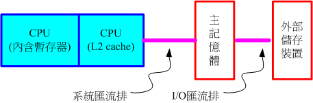
因为第二层缓存(L2 cache)整合到CPU内部，因此这个L2内存的速度必须要CPU频率相同。 使用DRAM是无法达到这个频率速度的，此时就需要静态随机访问内存(Static Random Access Memory, SRAM)的帮忙了。 SRAM在设计上使用的电晶体数量较多，价格较高，且不易做成大容量，不过由於其速度快， 因此整合到CPU内成为缓存内存以加快数据的存取是个不错的方式喔！新一代的CPU都有内建容量不等的L2缓存在CPU内部， 以加快CPU的运作效能。
只读内存(ROM)
主机板上面的组件是非常多的，而每个组件的参数又具有可调整性。举例来说，CPU与内存的频率是可调整的； 而主机板上面如果有内建的网络卡或者是显示卡时，该功能是否要启动与该功能的各项参数， 是被记录到主机板上头的一个称为CMOS的芯片上，这个芯片需要藉著额外的电源来发挥记录功能， 这也是为什么你的主机板上面会有一颗电池的缘故
那CMOS内的数据如何读取与更新呢？还记得你的计算机在开机的时候可以按下[Del]按键来进入一个名为BIOS的画面吧？ BIOS(Basic Input Output System)是一套程序，这套程序是写死到主机板上面的一个内存芯片中， 这个内存芯片在没有通电时也能够将数据记录下来，那就是只读内存(Read Only Memory, ROM)。 ROM是一种非挥发性的内存。另外，BIOS对於个人计算机来说是非常重要的， 因为他是系统在开机的时候首先会去读取的一个小程序
另外，固件(firmware)(注7)很多也是使用ROM来进行软件的写入的。 固件像软件一样也是一个被计算机所执行的程序，然而他是对於硬件内部而言更加重要的部分。例如BIOS就是一个固件， BIOS虽然对於我们日常操作计算机系统没有什么太大的关系，但是他却控制著开机时各项硬件参数的取得！ 所以我们会知道很多的硬件上头都会有ROM来写入固件这个软件。
BIOS 对计算机系统来讲是非常重要的，因为他掌握了系统硬件的详细信息与开机设备的选择等等。但是计算机发展的速度太快了， 因此 BIOS 程序码也可能需要作适度的修改才行，所以你才会在很多主机板官网找到 BIOS 的更新程序啊！但是 BIOS 原本使用的是无法改写的 ROM ，因此根本无法修正 BIOS 程序码！为此，现在的 BIOS 通常是写入类似快闪内存 (flash) 或 EEPROM (注8) 中
2.3 显卡
显示卡又称为VGA(Video Graphics Array)，他对於图形影像的显示扮演相当关键的角色。 一般对於图形影像的显示重点在於解析度与色彩深度，因为每个图像显示的颜色会占用掉内存， 因此显示卡上面会有一个内存的容量，这个显示卡内存容量将会影响到最终你的萤幕解析度与色彩深度
除了显示卡内存之外，现在由於三度空间游戏(3D game)与一些3D动画的流行，因此显示卡的『运算能力』越来越重要。 一些3D的运算早期是交给CPU去运作的，但是CPU并非完全针对这些3D来进行设计的，而且CPU平时已经非常忙碌了呢！ 所以后来显示卡厂商直接在显示卡上面嵌入一个3D加速的芯片，这就是所谓的GPU称谓的由来。
显示卡主要也是透过北桥芯片与CPU、主内存等沟通。如前面提到的，对於图形影像(尤其是3D游戏)来说， 显示卡也是需要高速运算的一个组件，所以数据的传输也是越快越好！因此显示卡的规格由早期的PCI导向AGP， 近期AGP又被PCI-Express规格所取代了
- PCIe x 8: 2GBytes/s
- PCIe x 16: 4GBytes/s
比较特殊的是，PCIe(PCI-Express)使用的是类似管线的概念来处理，每条管线可以具有250MBytes/s的频宽效能， 管线越大(最大可达x32)则总频宽越高！目前显示卡大多使用x16的PCIe规格，这个规格至少可以达到4GBytes/s的频宽！ 比起AGP是快很多的！此外，新的PCIe 2.0规格也已经推出了，这个规格又可将每个管线的效能提升一倍
如果你的主机是用来打3D游戏的，那么显示卡的选购是非常重要喔！如果你的主机是用来做为网络服务器的， 那么简单的入门级显示卡对你的主机来说就非常够用了！因为网络服务器很少用到3D与图形影像功能
2.4 硬盘与储存设备
计算机系统上面的储存设备包括有：硬盘、软盘、MO、CD、DVD、磁带机、随身碟(快闪内存)、还有新一代的蓝光光驱等， 乃至於大型机器的区域网络储存设备(SAN, NAS)等等，都是可以用来储存数据的。而其中最常见的应该就是硬盘了
硬盘的物理组成
硬盘盒里面其实是由许许多多的圆形磁碟盘、机械手臂、 磁碟读取头与主轴马达所组成的.
实际的数据都是写在具有磁性物质的磁碟盘上头，而读写主要是透过在机械手臂上的读取头(head)来达成。 实际运作时， 主轴马达让磁碟盘转动，然后机械手臂可伸展让读取头在磁碟盘上头进行读写的动作。 另外，由於单一磁碟盘的容量有限，因此有的硬盘内部会有两个以上的磁碟盘.
磁碟盘上的数据
既然数据都是写入磁碟盘上头，那么磁碟盘上头的数据又是如何写入的呢？ 其实磁碟盘上头的数据有点像下面的图示:
图2.4.2、磁碟盘上的数据格式
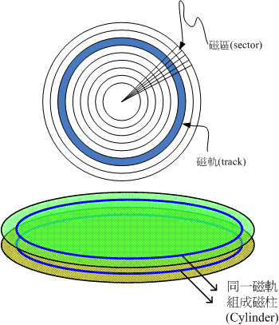
整个磁碟盘上头好像有多个同心圆绘制出的圆形图，而由圆心以放射状的方式分割出磁碟的最小储存单位，那就是磁区(Sector)， 在物理组成分面，每个磁区大小为512Bytes，这个值是不会改变的。而磁区组成一个圆就成为磁轨(track)， 如果是在多碟的硬盘上面，在所有磁碟盘上面的同一个磁轨可以组成一个磁柱(Cylinder)， 磁柱也是一般我们分割硬盘时的最小单位了
在计算整个硬盘的储存量时，简单的计算公式就是：『header数量 * 每个header负责的磁柱数量 * 每个磁柱所含有的磁区数量 * 磁区的容量』，单位换算为『header * cylinder/header * secter/cylinder * 512bytes/secter』，简单的写法如下： Head x Cylinder x Sector x 512 Bytes。 不过要注意的是，一般硬盘制造商在显示硬盘的容量时，大多是以十进位来编号，因此市售的500GB硬盘， 理论上仅会有460GBytes左右的容量
传输介面
- IDE: 最高传输速度为Ultra 133规格， 亦即每秒理论传输速度可达133MBytes
- SATA: 每条SATA连接线仅能接一个SATA装置. 目前SATA已经发展到了第二代， 其速度由SATA-1的每秒150MBytes提升到SATA-2每秒300MBytes的传输速度
- SCSI: 常见於工作站等级以上的硬盘传输介面为SCSI介面，这种介面的硬盘在控制器上含有一颗处理器， 所以除了运转速度快之外，也比较不会耗费CPU资源
选购与运转须知
- 插槽介面(IDE/SATA)
- 容量
- 缓冲内存
- 转速
- 运转须知：在计算机通电之后，就绝对不要移动主机，并免抖动到硬盘， 而导致整个硬盘数据发生问题. 机械手臂必须要归回原位， 所以使用操作系统的正常关机方式，才能够有比较好的硬盘保养
2.5 PCI介面卡
有相当多的组件是使用PCI介面作为传输的， 例如网络卡、音效卡、特殊功能卡等等。但由於PCI Express规格的发展，很多制造商都往PCIE介面开发硬件了.
2.6 主机板
上面我们所谈到的所有组件都是安插在主机板上
主机板上面负责沟通各个组件的就是芯片组, 芯片组一般分为北桥与南桥！北桥负责CPU/RAM/VGA等的连接，南桥则负责PCI介面与速度较慢的I/O装置。
由於芯片组负责所有设备的沟通，所以事实上芯片组(尤其是北桥)也是一个可能会散发出高热量的组件。 因此在主机板上面常会发现一些外接的小风扇或者是散热片在这组芯片上面。
芯片组功能
所有的芯片组几乎都是参考CPU的能力去规划的，而CPU能够接受的主内存规格也不相同，因此在新购买或升级主机时，CPU、主机板、主内存与相关的周边设备都需要同时考虑
此外，每一种芯片组的功能可能都不太相同， 有的芯片组强调的是全功能，因此连显示卡、音效、网络等都整合了，在这样的整合型芯片中， 你几乎只要购买CPU、主机板、主内存再加上硬盘，就能够组装成一部主机了。不过整合型芯片的效能通常比较弱， 对於爱玩3D游戏的玩家以及强调高效能运算的主机来说，就不是这么适合了。
独立型芯片组虽然可能具有较高的效能，不过你可能必须要额外负担周边设备的金錢呢！ 例如显示卡、网络卡、音效卡等等。但独立型芯片组也有一定程度的好处，那就是你可以随时抽换周边设备。
设备I/O位址与IRQ中断通道
计算机组件实在太多了，有输出/输入/不同的储存装置等等， 主机板芯片组怎么知道如何负责沟通啊？这个时候就需要用到所谓的I/O位址与IRQ
I/O位址有点类似每个装置的门牌号码，每个装置都有他自己的位址，一般来说，不能有两个装置使用同一个I/O位址， 否则系统就会不晓得该如何运作这两个装置了。而除了I/O位址之外，还有个IRQ中断(Interrupt)
如果I/O位址想成是各装置的门牌号码的话，那么IRQ就可以想成是各个门牌连接到邮件中心(CPU)的专门路径罗！ 各装置可以透过IRQ中断通道来告知CPU该装置的工作情况，以方便CPU进行工作分配的任务。 老式的主机板芯片组IRQ只有15个，如果你的周边介面太多时可能就会不够用， 这个时候你可以选择将一些没有用到的周边介面关掉，以空出一些IRQ来给真正需要使用的介面喔！ 当然，也有所谓的sharing IRQ的技术
CMOS与BIOS
MOS主要的功能为记录主机板上面的重要参数， 包括系统时间、CPU电压与频率、各项设备的I/O位址与IRQ等，由於这些数据的记录要花费电力，因此主机板上面才有电池。 BIOS为写入到主机板上某一块 flash 或 EEPROM 的程序，他可以在开机的时候执行，以载入CMOS当中的参数， 并尝试呼叫储存装置中的开机程序，进一步进入操作系统当中。BIOS程序也可以修改CMOS中的数据， 每种主机板呼叫BIOS设定程序的按键都不同，一般桌上型计算机常见的是使用[del]按键进入BIOS设定画面
连接周边设备的介面
主机板与各项输出/输入设备的连结主要都是在主机机壳的后方，主要有：
- PS/2
- USB
- RJ-45
- Audio Input/Output
- com1, LPT1, etc.
2.7 电源供应器
CPU/RAM/主机板/硬盘等等都需要用电，而近来的计算机组件耗电量越来越高，以前很古早的230W电源已经不够用了， 有的系统甚至得要有500W以上的电源才能够运作
Power的用料不同，电源供应的稳定度也会差很多。如前所述，电源供应器相当於你的心脏， 心脏差的话，活动力就会不足了！所以， 稳定度差的电源供应器甚至是造成计算机不稳定的元凶呢！所以，尽量不要使用太差的电源供应器
能源转换率
电源供应器本身也会吃掉一部份的电力的！如果你的主机系统需要 300W 的电力时，因为电源供应器本身也会消耗掉一部份的电力， 因此你最好要挑选400W以上的电源供应器。电源供应器出厂前会有一些测试数据，最好挑选高转换率的电源供应器。 所谓的高转换率指的是『输出的功率/输入的功率』。意思是说，假如你的主机板用电量为250W， 但是电源供应器其实已经使用掉320W的电力，则转换率为：250/320=0.78的意思。 这个数值越高表示被电源供应器『玩掉』的电力越少，那就符合能源效益了
连接介面
目前主机板与电源供应器的连接介面主要有20pin与24pin两种规格，购买时也需要考虑你的主机板所需要的规格
2.8 选购须知
如果你的公司需要一部服务器的话，建议不要自行组装，买品牌计算机的服务器比较好！ 这是因为自行组装的计算机虽然比较便宜，但是每项设备之间的适合性是否完美则有待自行检测。
另外，在效能方面并非仅考量CPU的能力而已，速度的快慢与『整体系统的最慢的那个设备有关！』，如果你是使用最快速的Intel Core 2 Duo，使用最快的DDR II内存， 但是配上一个慢慢的过时显示卡，那么整体的3D速度效能将会卡在那个显示卡上面喔！所以，在购买整套系统时， 请特别留意需要全部的介面都考虑进去喔！尤其是当您想要升级时，要特别注意这个问题， 并非所有的旧的设备都适合继续使用
系统不稳定的可能原因
几个常见的系统不稳定的原因：
- 系统超频：这个行为很不好！不要这么做！
- 电源供应器不稳： 这也是个很严重的问题，当您测试完所有的组件都没有啥大问题时，记得测试一下电源供应器的稳定度！
- 内存无法负荷：现在的内存品质差很多，差一点的内存，可能会造成您的主机在忙碌的工作时， 产生不稳定或当机的现象
- 系统过热：『热』是造成电子零件运作不良的主因之一，如果您的主机在夏天容易当机， 冬天却还好，那么考虑一下加几个风扇吧！有助於机壳内的散热，系统会比较稳定喔！ 『 这个问题也是很常见的系统当机的元凶.
3. 数据表示方式
计算机常用的数据是二进位的。 但是我们人类常用的数值运算是十进位，文字方面则有非常多的语言.
计算机如何记录与显示这些数值/文字呢？就得要透过一系列的转换才可以啦！底下我们就来谈谈数值与文字的编码系统
3.1 数字系统
有兴趣的朋友可以再参考一下其他计算计概论的书籍中，关於1的补数/2的补数等运算方式
3.2 文字编码系统
文字档案也是被记录为0与1而已，而这个档案的内容要被取出来查阅时，必须要经过一个编码系统的处理才行。 所谓的『编码系统』可以想成是一个『字码对照表』
我们要写入档案的文字数据时，该文字数据会由编码对照表将该文字转成数字后，再存入档案当中。 同样的，当我们要将档案内容的数据读出时，也会经过编码对照表将该数字转成对应的文字后，再显示到萤幕上。
常用的英文编码表为ASCII系统，这个编码系统中， 每个符号(英文、数字或符号等)都会占用1bytes的记录， 因此总共会有28=256种变化。至於中文字当中的编码系统目前最常用的就是big5这个编码表了。 每个中文字会占用2bytes，理论上最多可以有216=65536，亦即最多可达6万多个中文字。 但是因为big5编码系统并非将所有的位都拿来运用成为对照，所以并非可达这么多的中文字码的。 目前big5仅定义了一万三千多个中文字，很多中文利用big5是无法成功显示的～所以才会有造字程序说。
big5码的中文字编码对於某些数据库系统来说是很有问题的，某些字码例如『许、盖、功』等字， 由於这几个字的内部编码会被误判为单/双引号，在写入还不成问题，在读出数据的对照表时， 常常就会变成乱码。不只中文字，其他非英语系国家也常常会有这样的问题出现啊！
为了解决这个问题，由国际组织ISO/IEC跳出来制订了所谓的Unicode编码系统， 我们常常称呼的UTF8或万国码的编码就是这个. 这个编码系统打破了所有国家的不同编码， 因此目前网际网络社会大多朝向这个编码系统在走
4. 软件程序运作
没有软件的运作，计算机的功能就无从发挥
一般来说，目前的计算机系统将软件分为两大类，一个是系统软件，一个是应用程序。
4.1 机器程序与编译程序
我们前面谈到计算机只认识0与1而已，而且计算机最重要的运算与逻辑判断是在CPU内部， 而CPU其实是具有微指令集的。因此，我们需要CPU帮忙工作时，就得要参考微指令集的内容， 然后撰写让CPU读的懂得指令码给CPU执行，这样就能够让CPU运作了。
样的流程有几个很麻烦的地方:
- 需要了解机器语言
- 需要了解所有硬件的相关功能函数
- 程序不具有可携性：每个CPU都有独特的微指令集，同样的，每个硬件都有其功能函数。 因此，你为A计算机写的程序，理论上是没有办法在B计算机上面运作的！而且程序码的修改非常困难！ 因为是机器码，并不是人类看的懂得程序语言
- 程序具有专一性：因为这样的程序必须要针对硬件功能函数来撰写
为了解决这个问题，计算机科学家设计出一种让人类看的懂得程序语言， 然后创造一种『编译器』来将这些人类能够写的程序语言转译成为机器能看懂得机器码， 如此一来我们修改与撰写程序就变的容易多了！目前常见的编译器有C, C++, Java, Fortran等等。
高阶程序语言的程序码是很容易察看的. 问题是，在这样的环境底下我们还是得要考量整体的硬件系统来设计程序.
为了要克服硬件方面老是需要重复撰写控制码的问题，所以就有操作系统(Operating System, OS)的出现.
4.2 操作系统
如果我能够将所有的硬件都驱动， 并且提供一个发展软件的参考介面来给工程师开发软件的话，那发展软件不就变的非常的简单了？那就是操作系统
操作系统核心(Kernel)
操作系统(Operating System, OS)其实也是一组程序， 这组程序的重点在於管理计算机的所有活动以及驱动系统中的所有硬件。 我们刚刚谈到计算机没有软件只是一堆废铁，那么操作系统的功能就是让CPU可以开始判断逻辑与运算数值、 让主内存可以开始载入/读出数据与程序码、让硬盘可以开始被存取、让网络卡可以开始传输数据、 让所有周边可以开始运转等等。总之，硬件的所有动作都必须要透过这个操作系统来达成
上述的功能就是操作系统的核心(Kernel)了！你的计算机能不能做到某些事情，都与核心有关！ 只有核心有提供的功能，你的计算机系统才能帮你完成
但是单有核心我们使用者也不知道能作啥事的～因为核心主要在管控硬件与提供相关的能力(例如网络功能)， 这些管理的动作是非常的重要的，如果使用者能够直接使用到核心的话，万一使用者不小心将核心程序停止或破坏， 将会导致整个系统的崩溃！因此核心程序所放置到内存当中的区块是受保护的！ 并且开机后就一直常驻在内存当中
然而，整部系统只有核心的话，我们就只能看著已经准备好运作(Ready)的计算机系统，但无法操作他！
系统呼叫(System Call)
既然我的硬件都是由核心管理，那么如果我想要开发软件的话，自然就得要去参考这个核心的相关功能！ 唔！如此一来不是从原本的参考硬件函数变成参考核心功能，还是很麻烦
为了解决这个问题，操作系统通常会提供一整组的开发介面给工程师来开发软件！ 工程师只要遵守该开发介面那就很容易开发软件了！举例来说，我们学习C程序语言只要参考C程序语言的函式即可， 不需要再去考量其他核心的相关功能，因为核心的系统呼叫介面会主动的将C程序语言的相关语法转成核心可以了解的任务函数， 那核心自然就能够顺利运作该程序了
将整个计算机系统的相关软/硬件绘制成图:
图4.2.1、操作系统的角色
计算机系统主要由硬件构成，然后核心程序主要在管理硬件，提供合理的计算机系统资源分配(包括CPU资源、内存使用资源等等)， 因此只要硬件不同(如x86架构与RISC架构的CPU)，核心就得要进行修改才行。 而由於核心只会进行计算机系统的资源分配，所以在上头还需要有应用程序的提供，使用者才能够操作系统
为了保护核心，并且让程序设计师比较容易开发软件，因此操作系统除了核心程序之外，通常还会提供一整组开发介面， 那就是系统呼叫层。软件开发工程师只要遵循公认的系统呼叫参数来开发软件，该软件就能够在该核心上头运作。 所以你可以发现，软件与核心有比较大的关系，与硬件关系则不大！硬件也与核心有比较大的关系！ 至於与使用者有关的，那就是应用程序
Tip: 在定义上，只要能够让计算机硬件正确无误的运作，那就算是操作系统了。所以说， 操作系统其实就是核心与其提供的介面工具，不过就如同上面讲的，因为最简单的核心缺乏了与使用者沟通的亲和介面， 所以在目前，一般我们提到的『操作系统』都会包含核心与相关的使用者应用软件
上面的图示可以带给我们底下的概念：
- 操作系统的核心层直接参考硬件规格写成， 所以同一个操作系统程序不能够在不一样的硬件架构下运作。
- 操作系统只是在管理整个硬件资源，包括CPU、内存、输入输出装置及档案系统档。 如果没有其他的应用程序辅助，操作系统只能让计算机主机准备妥当(Ready)而已！并无法运作其他功能。
- 应用程序的开发都是参考操作系统提供的开发介面， 所以该应用程序只能在该操作系统上面运作而已，不可以在其他操作系统上面运作
核心功能
既然核心主要是在负责整个计算机系统相关的资源分配与管理，那我们知道其实整部计算机系统最重要的就是CPU与主内存， 因此，核心至少也要有这些功能:
- 系统呼叫介面(System call interface): 这是为了方便程序开发者可以轻易的透过与核心的沟通，将硬件的资源进一步的利用， 於是需要有这个简易的介面来方便程序开发者。
- 程序管理(Process control): 所谓的『多工环境』. 一部计算机可能同时间有很多的工作跑到CPU等待运算处理， 核心这个时候必须要能够控制这些工作，让CPU的资源作有效的分配才行！另外， 良好的CPU排程机制(就是CPU先运作那个工作的排列顺序)将会有效的加快整体系统效能
- 内存管理(Memory management): 控制整个系统的内存管理，这个内存控制是非常重要的，因为系统所有的程序码与数据都必须要先存放在内存当中。 通常核心会提供虚拟内存的功能，当内存不足时可以提供内存置换(swap)的功能
- 档案系统管理(Filesystem management): 档案系统的管理，例如数据的输入输出(I/O)等等的工作. 还有不同档案格式的支持啦等等， 如果你的核心不认识某个档案系统，那么您将无法使用该档案格式的档案. 例如：Windows 98就不认识NTFS档案格式的硬盘.
- 装置的驱动(Device drivers): 就如同上面提到的，硬件的管理是核心的主要工作之一，当然罗，装置的驱动程序就是核心需要做的事情啦！ 好在目前都有所谓的『可载入模组』功能，可以将驱动程序编辑成模组，就不需要重新的编译核心啦！ 这个也会在后续的第二十章当中提到
Tip: 事实上，驱动程序的提供应该是硬件厂商的事情！硬件厂商要推出硬件时，应该要自行参考操作系统的驱动程序开发介面， 开发完毕后将该驱动程序连同硬件一同贩卖给使用者才对
操作系统与驱动程序
驱动程序可以说是操作系统里面相当重要的一环了！不过，硬件可是持续在进步当中的！ 包括主机板、显示卡、硬盘等等。那么比较晚推出的较新的硬件，例如显示卡，我们的操作系统当然就不认识罗！ 那操作系统该如何驱动这块新的显示卡？为了克服这个问题，操作系统通常会提供一个开发介面给硬件开发商， 让他们可以根据这个介面设计可以驱动他们硬件的『驱动程序』，如此一来，只要使用者安装驱动程序后， 自然就可以在他们的操作系统上面驱动这块显示卡了。
图4.2.2、驱动程序与操作系统的关系
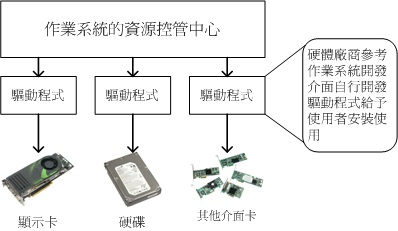
- 操作系统必须要能够驱动硬件，如此应用程序才能够使用该硬件功能；
- 一般来说，操作系统会提供开发介面，让开发商制作他们的驱动程序；
- 要使用新硬件功能，必须要安装厂商提供的驱动程序才行；
- 驱动程序是由厂商提供的，与操作系统开发者无关。
4.3 应用程序
应用程序是参考操作系统提供的开发介面所开发出来软件，这些软件可以让使用者操作，以达到某些计算机的功能利用。
需要注意的是，应用程序是与操作系统有关系的
5. 重点回顾
- 计算机的定义为：『接受使用者输入指令与数据，经由中央处理器的数学与逻辑单元运算处理后，以产生或储存成有用的信息』；
- 计算机的五大单元包括：输入单元、 输出单元、CPU内部的控制单元、算数逻辑单元与主内存五大部分；
- 数据会流进/流出内存是CPU所发布的控制命令，而CPU实际要处理的数据则完全来自於主内存；
- CPU依设计理念主要分为：精简指令集(RISC)与复杂指令集(CISC)系统；
- 关於CPU的频率部分：外频指的是CPU与外部组件进行数据传输时的速度，倍频则是CPU内部用来加速工作效能的一个倍数， 两者相乘才是CPU的频率速度；
- 一般主机板芯片组有分北桥与南桥，北桥的系统总线称为系统系统总线，因为是内存传输的主要通道，所以速度较快。 南桥就是所谓的输入输出(I/O)系统总线，主要在联系硬盘、USB、网络卡等周边设备；
- 北桥所支持的频率我们称为前端系统总线速度(Front Side Bus, FSB)，而每次传送的位数则是系统总线宽度。
- CPU每次能够处理的数据量称为字长大小(word size)，字长大小依据CPU的设计而有32位与64位。 我们现在所称的计算机是32或64位主要是依据这个 CPU解析的字长大小而来的！
- 个人计算机的主内存主要组件为动态随机访问内存(Dynamic Random Access Memory, DRAM)， 至於CPU内部的第二层缓存则使用静态随机访问内存(Static Random Access Memory, SRAM)；
- BIOS(Basic Input Output System)是一套程序，这套程序是写死到主机板上面的一个内存芯片中， 这个内存芯片在没有通电时也能够将数据记录下来，那就是只读内存(Read Only Memory, ROM)；
- 显示卡的规格有PCI/AGP/PCIe，目前的主流为PCIe介面；
- 硬盘的组成为：圆形磁碟盘、机械手臂、 磁碟读取头与主轴马达所组成的，其中磁碟盘的组成为磁区、磁轨与磁柱；
- 操作系统(Operating System, OS)其实也是一组程序， 这组程序的重点在於管理计算机的所有活动以及驱动系统中的所有硬件。
- 计算机主要以二进位作为单位，常用的磁碟容量单位为bytes，其单位换算为1 Byte = 8bits。
- 最阳春的操作系统仅在驱动与管理硬件，而要使用硬件时，就得需要透过应用软件或者是壳程序(shell)的功能， 来呼叫操作系统操纵硬件工作。目前称为操作系统的，除了上述功能外，通常已经包含了日常工作所需要的应用软件在内了。
6. 本章习题
利用软件：假设你不想要拆开主机机壳，但想了解你的主机内部各组件的信息时，该如何是好？ 如果使用的是Windows操作系统，可使用CPU-Z(http://www.cpuid.com/cpuz.php)这套软件，如果是Linux环境下，可以使用『cat /proc/cpuinfo』 及使用『lspci』来查阅各项组件的型号
依据文末的延伸阅读连结，自行搜寻出 BIOS 的主要任务，以及目前在个人计算机上面常见的 BIOS 制造商有哪几家？
7. 参考数据与延伸阅读
- 注1：对於CPU的原理有兴趣的读者，可以参考维基百科的说明： 英文CPU(http://en.wikipedia.org/wiki/CPU) 中文CPU(http://zh.wikipedia.org/wiki/%E4%B8%AD%E5%A4%AE%E5%A4%84%E7%90%86%E5%99%A8)。
- 注2：图片参考：作者：陈锦辉，『计算机概论-探索未来2008』，金禾信息，2007出版
- 注3：更详细的RISC架构可以参考维基百科： http://zh.wikipedia.org/w/index.php?title=%E7%B2%BE%E7%AE%80%E6%8C%87%E4%BB%A4%E9%9B%86&variant=zh-tw
- 注4：关於ARM架构的说明，可以参考维基百科： http://zh.wikipedia.org/w/index.php?title=ARM%E6%9E%B6%E6%9E%84&variant=zh-tw
- 注5：更详细的CISC架构可参考维基百科： http://zh.wikipedia.org/w/index.php?title=CISC&variant=zh-tw
- 注6：更详细的x86架构发展史可以参考维基百科： http://zh.wikipedia.org/w/index.php?title=X86&variant=zh-tw
- 注7：相关的固件说明可参考维基百科： http://zh.wikipedia.org/w/index.php?title=%E5%9B%BA%E4%BB%B6&variant=zh-hant
- 注8：相关 EEPROM 可以参考维基百科： http://zh.wikipedia.org/w/index.php?title=EEPROM&variant=zh-tw
- 注9：相关 BIOS 的说明可以参考维基百科： http://zh.wikipedia.org/w/index.php?title=BIOS&variant=zh-tw
- 感谢：本章当中出现很多图示，很多是从Tom's Hardware(http://www.tomshardware.tw/)网站取得的，在此特别感谢！
第一章、Linux是什么
1. Linux是什么
Linux就是一组软件。问题是这个软件是操作系统还是应用程序？ 且Linux可以在哪些种类的计算机上面运作？而Linux源自哪里？为什么 Linux 还不用钱？这些我们都得来谈一谈
1.1 Linux是什么
计算机是由一堆硬件所组成的，为了有效率的控制这些硬件资源，于是乎就有操作系统的产生了。 操作系统除了有效率的控制这些硬件资源的分配，并提供计算机运作所需要的功能(如网络功能)之外， 为了要提供程序设计师更容易开发软件的环境，所以操作系统也会提供一整组系统呼叫接口来给软件设计师开发用
因为Linux就是一套操作系统！如同下图所示， Linux就是核心与系统呼叫接口那两层。至于应用程序算不算Linux呢？当然不算啦！这点要特别注意
图1.1.1、操作系统的角色

核心与硬件的关系非常的强烈.
Tip: Torvalds先生在写出Linux的时候，其实该核心仅能『驱动386所有的硬件』而已， 所谓的『让386计算机开始运作，并且等待用户指令输入』而已，事实上， 当时能够在Linux上面跑的软件还很少呢！
由于不同的硬件他的功能函数并不相同，例如IBM的Power CPU与Intel的x86架构就是不一样！ 所以同一套操作系统是无法在不同的硬件平台上面运作的！举例来说，如果你想要让x86上面跑的那套操作系统也能够在Power CPU上运作时，就得要将该操作系统进行修改才行。如果能够参考硬件的功能函数并据以修改你的操作系统程序代码， 那经过改版后的操作系统就能够在另一个硬件平台上面运作了。 这个动作我们通常就称为『软件移植』
Tip: 每种操作系统都是在他专门的机器上面运行的喔！这点得要先了解。 不过，Linux由于是Open Source的操作系统，所以他的程序代码可以被修改成适合在各种机器上面运行的， 也就是说，Linux是具有『可移植性』
Linux提供了一个完整的操作系统当中最底层的硬件控制与资源管理的完整架构， 这个架构是沿袭Unix良好的传统来的，所以相当的稳定而功能强大！此外， 由于这个优良的架构可以在目前的个人计算机(x86系统)上面跑， 所以很多的软件开发者渐渐的将他们的工作心血移转到这个架构上面，所以 Linux 操作系统也有很多的应用软件
虽然Linux仅是其核心与核心提供的工具，不过由于核心、核心工具与这些软件开发者提供的软件的整合， 使得Linux成为一个更完整的、功能强大的操作系统
1.2 Linux之前，Unix的历史
早在Linux出现之前的二十年(大约在1970 年代)，就有一个相当稳定而成熟的操作系统存在了！ 那就是Linux的老大哥『Unix』
1969年以前：一个伟大的梦想–Bell,MIT与GE的『Multics』系统
1960年代初期麻省理工学院(MIT)发展了所谓的： 『兼容分时系统(Compatible Time-Sharing System, CTSS)』， 它可以让大型主机透过提供数个终端机(terminal)以联机进入主机，来利用主机的资源进行运算工作
这个兼容分时系统可以说是近代操作系统的始祖呢！他可以让多个使用者在某一段时间内分别使用CPU的资源， 感觉上你会觉得大家是同时使用该主机的资源！事实上，是CPU在每个使用者的工作之间进行切换， 在当时，这可是个划时代的技术
终端机只具有输入/输出的功能，本身完全不具任何运算或者软件安装的能力。 而且，比较先进的主机大概也只能提供30个不到的终端机而已
为了更加强化大型主机的功能，以让主机的资源可以提供更多使用者来利用，所以在1965年前后， 由贝尔实验室(Bell)、麻省理工学院(MIT)及奇异公司(GE, 或称为通用电器)共同发起了Multics的计划， Multics计划的目的是想要让大型主机可以达成提供300个以上的终端机联机使用的目标。 不过，到了1969年前后，计划进度落后，资金也短缺，所以该计划虽然继续在研究，但贝尔实验室还是退出了该计划的研究工作
Tip: 最终Multics还是有成功的发展出他们的系统，完整的历史说明可以参考： http://www.multicians.org/%E7%BD%91%E7%AB%99%E5%86%85%E5%AE%B9。 Multics计划虽然后来没有受到很大的重视，但是他培养出来的人材是相当优秀的
1969年：Ken Thompson的小型file server system
在认为Multics计划不可能成功之后，贝尔研究室就退出该计划。不过，原本参与Multics计划的人员中，已经从该计划当中获得一些点子， Ken Thompson 就是其中一位！
Thompson因为自己的需要，希望开发一个小小的操作系统以提供自己的需求。 在开发时，有一部DEC(Digital Equipment Corporation)公司推出的PDP-7刚好没人使用， 于是他就准备针对这部主机进行操作系统核心程序的撰写。本来Thompson应该是没时间的(有家有小孩的宿命？)， 无巧不巧的是，在1969年八月份左右，刚好Thompson的妻儿去了美西探亲， 于是他有了额外的一个月的时间好好的待在家将一些构想实现出来！
经过四个星期的奋斗，他终于以汇编语言(Assembler)写出了一组核心程序，同时包括一些核心工具程序， 以及一个小小的文件系统。那个系统就是Unix的原型！ 当时Thompson将Multics庞大的复杂系统简化了不少，于是同实验室的朋友都戏称这个系统为：Unics。(当时尚未有Unix的名称)
Thompson 的这个文件系统有两个重要的概念，分别是：
- 所有的程序或系统装置都是档案
- 不管建构编辑器还是附属档案，所写的程序只有一个目的，且要有效的完成目标。
这些概念在后来对于Linux的发展有相当重要的影响
Tip: 套一句常听到的广告词：『科技始终来自于人性』，当初Thompson会写这套Unix核心程序， 却是想要移植一套名为『太空旅游』的游戏
1973年：Unix的正式诞生，Ritchie等人以C语言写出第一个正式Unix核心
由于Thompson写的那个操作系统实在太好用了，所以在贝尔实验室内部广为流传，并且数度经过改版。 但是因为Unics本来是以汇编语言写成的，而如第零章计算器概论谈到的， 汇编语言具有专一性，加上当时的计算机机器架构都不太相同，所以每次要安装到不同的机器都得要重新编写汇编语言，真不方便！
后来Thompson与Ritchie合作想将Unics改以高阶程序语言来撰写。当时现成的高阶程序语言有B语言。 但是由B语言所编译出来的核心效能不是很好。后来Dennis Ritchie将B语言重新改写成C语言，再以C语言重新改写与编译Unics的核心， 最后正名与发行出Unix的正式版本
由于贝尔实验室是隶属于美国电信大厂AT&T公司的， 只是AT&T当时忙于其他商业活动，对于Unix并不支持也不排斥。此外，Unix在这个时期的发展者都是贝尔实验室的工程师， 这些工程师对于程序当然相当有研究，所以，Unix在此时当然是不容易被一般人所接受的！不过对于学术界的学者来说， 这个 Unix 真是学者们进行研究的福音！因为程序代码可改写并且可作为学术研究之用嘛！
需要特别强调的是，由于Unix是以较高阶的C语言写的，相对于汇编语言需要与硬件有密切的配合， 高阶的C语言与硬件的相关性就没有这么大了！所以，这个改变也使得Unix很容易被移植到不同的机器上面
1977年：重要的Unix分支–BSD的诞生
虽然贝尔属于AT&T，但是AT&T此时对于Unix是采取较开放的态度，此外，Unix是以高阶的C语言写成的， 理论上是具有可移植性的！亦即只要取得Unix的原始码，并且针对大型主机的特性加以修订原有的原始码(Source Code)， 就可能将Unix移植到另一部不同的主机上头了。所以在1973年以后，Unix便得以与学术界合作开发！ 最重要的接触就是与加州柏克莱(Berkeley)大学的合作了。
柏克莱大学的Bill Joy在取得了Unix的核心原始码后，着手修改成适合自己机器的版本， 并且同时增加了很多工具软件与编译程序，最终将它命名为Berkeley Software Distribution (BSD)。这个BSD是Unix很重要的一个分支，Bill Joy也是Unix业者『Sun(升阳)』这家公司的创办者！ Sun公司即是以BSD发展的核心进行自己的商业Unix版本的发展的。 (后来可以安装在x86硬件架构上面FreeBSD即是BSD改版而来！)
1979年：重要的 System V 架构与版权宣告
由于Unix的高度可移植性与强大的效能，加上当时并没有版权的纠纷， 所以让很多商业公司开始了Unix操作系统的发展，例如AT&T自家的System V、IBM的AIX以及HP与DEC等公司， 都有推出自家的主机搭配自己的Unix操作系统。
但是，如同我们前面提到的，操作系统的核心(Kernel)必须要跟硬件配合， 以提供及控制硬件的资源进行良好的工作！而在早期每一家生产计算机硬件的公司还没有所谓的『协议』的概念， 所以每一个计算机公司出产的硬件自然就不相同啰！因此他们必须要为自己的计算机硬件开发合适的Unix系统。 例如在学术机构相当有名的Sun、Cray与HP就是这一种情况。 他们开发出来的Unix操作系统以及内含的相关软件并没有办法在其他的硬件架构下工作的！ 另外，由于没有厂商针对个人计算机设计Unix系统，因此，在早期并没有支持个人计算机的Unix操作系统的出现。
Tip: 如同兼容分时系统的功能一般，Unix强调的是多人多任务的环境！ 但早期的286个人计算机架构下的CPU是没有能力达到多任务的作业，因此，并没有人对移植Unix到x86的计算机上有兴趣。
每一家公司自己出的Unix虽然在架构上面大同小异，但是却真的仅能支持自身的硬件， 所以啰，早先的Unix只能与服务器(Server)或者是大型工作站(Workstation)划上等号！ 但到了 1979 年时，AT&T推出 System V 第七版 Unix 后，这个情况就有点改善了。 这一版最重要的特色是可以支持x86架构的个人计算机系统，也就是说 System V 可以在个人计算机上面安装与运作了。
不过因为AT&T由于商业的考虑，以及在当时现实环境下的思考，于是想将Unix的版权收回去。因此， AT&T在1979年发行的第七版Unix中，特别提到了 『不可对学生提供原始码』的严格限制！ 同时，也造成Unix业界之间的紧张气氛，并且也引爆了很多的商业纠纷
Tip: 目前被称为纯种的Unix指的就是System V以及BSD这两套
1984年之一：x86架构的Minix操作系统诞生
关于1979年的版权声明中，影响最大的当然就是学校教Unix核心原始码相关学问的教授了！ 想一想，如果没有核心原始码，那么如何教导学生认识Unix呢？这问题对于Andrew Tanenbaum(谭宁邦)教授来说，实在是很伤脑筋的！不过，学校的课程还是得继续啊！那怎么办？
既然1979年的Unix第七版可以在Intel的x86架构上面进行移植， 那么是否意味着可以将Unix改写并移植到x86上面了呢？在这个想法上， 谭宁邦教授于是乎自己动手写了Minix这个Unix Like的核心程序！ 在撰写的过程中，为了避免版权纠纷，谭宁邦完全不看Unix核心原始码！ 并且强调他的Minix必须能够与Unix兼容才行！谭宁邦在1984年开始撰写核心程序， 到了1986年终于完成，并于次年出版Minix相关书籍，同时与新闻组(BBS及News)相结合
这个Minix版本比较有趣的地方是，他并不是完全免费的，无法在网络上提供下载！ 必须要透过磁盘/磁带购买才行！虽然真的很便宜～不过，毕竟因为没有在网络上流传， 所以Minix的传递速度并没有很快速！此外，购买时，随磁盘还会附上Minix的原始码！ 这意味着使用者可以学习Minix的核心程序设计概念喔！ (这个特色对于Linux的启始开发阶段，可是有很大的关系喔！)
此外，Minix操作系统的开发者仅有谭宁邦教授，因为学者很忙啊！加上谭宁邦始终认为Minix主要用在教育用途上面， 所以对于Minix是点到为止！没错，Minix是很受欢迎，不过，使用者的要求/需求的声音可能就比较没有办法上升到比较高的地方
1984年之二：GNU计划与FSF基金会的成立
Richard Mathew Stallman(史托曼)在1984年发起的GNU计划，对于现今的自由软件风潮， 真有不可磨灭的地位！目前我们所使用得很多自由软件，几乎均直接或间接受益于GNU这个计划呢！ 那么史托曼是何许人也？为何他会发起这个GNU计划呢？
- 一个分享的环境： Richard Mathew Stallman(生于1953年， 网络上自称的ID为RMS)从小就很聪明！他在1971年的时候，进入黑客圈中相当出名的人工智能实验室(AI Lab.)， 这个时候的黑客专指计算机功力很强的人，而非破坏计算机的怪客(cracker)喔！ 当时的黑客圈对于软件的着眼点几乎都是在『分享』，所以并没有专利方面的困扰！ 这个特色对于史托曼的影响很大！不过，后来由于管理阶层的问题，导致实验室的优秀黑客离开该实验室， 并且进入其他商业公司继续发展优秀的软件。但史托曼并不服输，仍然持续在原来的实验室开发新的程序与软件。 后来，他发现到，自己一个人并无法完成所有的工作，于是想要成立一个开放的团体来共同努力！
- 使用Unix开发阶段： 1983年以后，因为实验室硬件的更换，使得史托曼无法继续以原有的硬件与操作系统继续自由程序的撰写～ 而且他进一步发现到，过去他所使用的Lisp操作系统，是麻省理工学院的专利软件， 是无法共享的，这对于想要成立一个开放团体的史托曼是个阻碍。于是他便放弃了Lisp这个系统。 后来，他接触到Unix这个系统，并且发现，Unix在理论与实际上，都可以在不同的机器间进行移植。虽然 Unix 依旧是专利软件， 但至少 Unix 架构上还是比较开放的！于是他开始转而使用Unix系统。 因为Lisp与Unix是不同的系统，所以，他原本已经撰写完毕的软件是无法在Unix上面运行的！为此， 他就开始将软件移植到Unix上面。并且，为了让软件可以在不同的平台上运作， 因此，史托曼将他发展的软件均撰写成可以移植的型态！也就是他都会将程序的原始码公布出来！
- GNU计划的推展： 1984年，史托曼开始GNU计划， 这个计划的目的是：建立一个自由、开放的Unix操作系统(Free Unix)。 但是建立一个操作系统谈何容易啊！而且在当时的GNU是仅有自己一个人单打独斗的史托曼～ 这实在太麻烦，但又不想放弃这个计划，那可怎么办啊？ 聪明的史托曼干脆反其道而行～『既然操作系统太复杂，我就先写可以在Unix上面运行的小程序，这总可以了吧？』在这个想法上， 史托曼开始参考Unix上面现有的软件，并依据这些软件的作用开发出功能相同的软件，且开发期间史托曼绝不看其他软件的原始码， 以避免吃上官司。后来一堆人知道免费的GNU软件，并且实际使用后发现与原有的专利软件也差不了太多，于是便转而使用GNU软件， 于是GNU计划逐渐打开知名度。 虽然GNU计划渐渐打开知名度，但是能见度还是不够。这时史托曼又想：不论是什么软件， 都得要进行编译成为二进制文件(binary program)后才能够执行，如果能够写出一个不错的编译程序，那不就是大家都需要的软件了吗？ 因此他便开始撰写C语言的编译程序，那就是现在相当有名的GNU C Compiler(gcc)！ 这个点相当的重要！这是因为C语言编译程序版本众多，但都是专利软件， 如果他写的C编译程序够棒，效能够佳，那么将会大大的让GNU计划出现在众人眼前！如果忘记啥是编译程序， 请回到第零章去瞧瞧编译程序吧！ 但开始撰写GCC时并不顺利，为此，他先转而将他原先就已经写过的Emacs编辑器写成可以在Unix上面跑的软件，并公布原始码。 Emacs是一种程序编辑器，他可以在用户撰写程序的过程中就进行程序语法的检验，此一功能可以减少程序设计师除错的时间！ 因为Emacs太优秀了，因此，很多人便直接向他购买。 此时因特网尚未流行，所以，史托曼便借着Emacs以磁带(tape)出售，赚了一点钱 ，进而开始全力撰写其他软件。并且成立自由软件基金会(FSF, Free Software Foundation)，请更多工程师与志工撰写软件。终于还是完成了GCC，这比Emacs还更有帮助！ 此外，他还撰写了更多可以被呼叫的C函式库(GNU C library)，以及可以被使用来操作操作系统的基本接口BASH shell！ 这些都在1990年左右完成了！
- GNU的通用公共许可证： 到了1985年，为了避免GNU所开发的自由软件被其他人所利用而成为专利软件， 所以他与律师草拟了有名的通用公共许可证(General Public License, GPL)， 并且称呼他为copyleft(相对于专利软件的copyright！)。 关于GPL的相关内容我们在下一个小节继续谈论，在这里，必须要说明的是， 由于有GNU所开发的几个重要软件，如： Emacs, GNU C (GCC), GNU C Library (glibc), Bash shell. 造成后来很多的软件开发者可以藉由这些基础的工具来进行程序开发！ 进一步壮大了自由软件团体！这是很重要的！不过，对于GNU的最初构想 『建立一个自由的Unix操作系统』来说，有这些优秀的程序是仍无法满足， 因为，当下并没有『自由的Unix核心』存在…所以这些软件仍只能在那些有专利的 Unix平台上工作～～一直到Linux的出现…更多的FSF开发的软件可以参考如下网页： https://www.fsf.org/resources
1988年：图形接口XFree86计划
有鉴于图形用户接口(Graphical User Interface, GUI) 的需求日益加重，在1984年由MIT与其他第三方首次发表了X Window System ，并且更在1988年成立了非营利性质的XFree86这个组织。所谓的XFree86其实是 X Window System + Free + x86的整合名称呢！ 而这个XFree86的GUI界面更在Linux的核心1.0版于1994年释出时，整合于Linux操作系统当中
1991年：芬兰大学生Linus Torvalds的一则简讯
到了1991年，芬兰的赫尔辛基大学的Linus Torvalds在BBS上面贴了一则消息， 宣称他以bash, gcc等工具写了一个小小的核心程序，这个核心程序可以在Intel的386机器上面运作， 让很多人很感兴趣！从此开始了Linux不平凡的路程！
1.3 关于GNU计划
GNU计划对于整个自由软件来说是占有非常重要的角色
自由软件的活动
1984年创立GNU计划与FSF基金会的Stallman先生认为，写程序最大的快乐就是让自己发展的良好的软件让大家来使用了！ 而既然程序是想要分享给大家使用的，不过，每个人所使用的计算机软硬件并不相同， 既然如此的话，那么该程序的原始码(Source code)就应该要同时释出， 这样才能方便大家修改而适用于每个人的计算机中呢！这个将原始码连同软件程序释出的举动， 就称为自由软件(Free Software)运动！
此外，史托曼同时认为，如果你将你程序的Source code分享出来时，若该程序是很优秀的，那么将会有很多人使用， 而每个人对于该程序都可以查阅source code，无形之中，就会有一票人帮你除错啰！ 你的这支程序将会越来越壮大！越来越优秀
自由软件的版权GNU GPL
为了避免自己的开发出来的Open source自由软件被拿去做成专利软件， 于是Stallman同时将GNU与FSF发展出来的软件，都挂上GPL的版权宣告～ 这个FSF的核心观念是『版权制度是促进社会进步的手段， 版权本身不是自然权力。』对于FSF有兴趣或者对于GNU想要更深入的了解时，请参考朝阳科技大学洪朝贵教授的网站 http://people.ofset.org/~ckhung/a/c_83.php%EF%BC%8C%E6%88%96%E7%9B%B4%E6%8E%A5%E5%88%B0GNU%E5%8E%BB%EF%BC%9A http://www.gnu.org 里面有更为深入的解说
自由(Free)的真谛
那么这个GPL(GNU General Public License, GPL)是什么玩意儿？ 为什么要将自由软件挂上GPL的『版权宣告』呢？这个版权宣告对于作者有何好处？ 首先，Stallman对GPL一直是强调Free的，这个Free的意思是这样的：
"Free software" is a matter of liberty, not price. To understand the concept, you should think of "free speech", not "free beer". "Free software" refers to the users' freedom to run, copy, distribute, study, change, and improve the software
大意是说，Free Software(自由软件)是一种自由的权力，并非是『价格！』 举例来说，你可以拥有自由呼吸的权力、你拥有自由发表言论的权力， 但是，这并不代表你可以到处喝『免费的啤酒！(free beer)』，也就是说， 自由软件的重点并不是指『免费』的，而是指具有『自由度, freedom』的软件， 史托曼进一步说明了自由度的意义是： 使用者可以自由的执行、复制、再发行、学习、修改与强化自由软件。
这无疑是个好消息！因为如此一来，你所拿到的软件可能原先只能在Unix上面跑， 但是经过原始码的修改之后，你将可以拿他在Linux或者是Windows上面来跑！总之， 一个软件挂上了GPL版权宣告之后，他自然就成了自由软件！这个软件就具有底下的特色：
- 取得软件与原始码：你可以根据自己的需求来执行这个自由软件；
- 复制：你可以自由的复制该软件；
- 修改：你可以将取得的原始码进行程序修改工作，使之适合你的工作；
- 再发行：你可以将你修改过的程序，再度的自由发行，而不会与原先的撰写者冲突；
- 回馈：你应该将你修改过的程序代码回馈于社群！
但请特别留意，你所修改的任何一个自由软件都不应该也不能这样：
- 修改授权：你不能将一个GPL授权的自由软件，在你修改后而将他取消GPL授权～
- 单纯贩卖：你不能单纯的贩卖自由软件。
也就是说，既然GPL是站在互助互利的角度上去开发的，你自然不应该将大家的成果占为己有， 对吧！因此你当然不可以将一个GPL软件的授权取消，即使你已经对该软件进行大幅度的修改！ 那么自由软件也不能贩卖吗？当然不是！还记得上一个小节里面， 我们提到史托曼藉由贩卖Emacs取得一些经费，让自己生活不至于匮乏吧？是的！ 自由软件是可以贩卖的，不过，不可仅贩卖该软件，应同时搭配售后服务与相关手册～ 这些可就需要工本费了
自由软件与商业行为：
很多人还是有疑问，目前不是有很多Linux开发商吗？为何他们可以贩卖Linux这个GPL授权的软件？ 原因很简单，因为他们大多都是贩卖『售后服务！』所以，他们所使用的自由软件， 都可以在他们的网站上面下载！(当然，每个厂商他们自己开发的工具软件就不是GPL的授权软件了！) 但是，你可以购买他们的Linux光盘，如果你购买了光盘，他们会提供相关的手册说明文件， 同时也会提供你数年不等的咨询、售后服务、软件升级与其他协力工作等等的附加价值！
所以说，目前自由软件工作者，他们所赖以维生的，几乎都是在『服务』这个领域呢！ 毕竟自由软件并不是每个人都会撰写，有人有需要你的自由软件时，他就会请求你的协助， 此时，你就可以透过服务来收费了！这样来说， 自由软件确实还是具有商业空间的
上面提到的大多是与用户有关的项目，那么 GPL 对于自由软件的作者有何优点呢？大致的优点有这些：
- 软件安全性较佳；
- 软件执行效能较佳；
- 软件除错时间较短；
- 贡献的原始码永远都存在。
2. Torvalds的Linux发展
Linux是由Torvalds这个芬兰人所发明的
2.1 与Minix之间
Linus Torvalds(托瓦兹, 1969年出生)的外祖父是赫尔辛基大学的统计学家， 他的外祖父为了让自己的小孙子能够学点东西，所以从小就将托瓦兹带到身边来管理一些微计算机。 在这个时期，托瓦兹接触了汇编语言(Assembly Language)，那是一种直接与芯片对谈的程序语言，也就是所谓的低级语言。 必须要很了解硬件的架构，否则很难以汇编语言撰写程序的。
在1988年间，托瓦兹顺利的进入了赫尔辛基大学，并选读了计算机科学系。在就学期间，因为学业的需要与自己的兴趣， 托瓦兹接触到了Unix这个操作系统。当时整个赫尔辛基只有一部最新的Unix系统，同时仅提供16个终端机(terminal)。 还记得我们上一节刚刚提过的，早期的计算机仅有主机具有运算功能，terminal仅负责提供Input/Output而已。在这种情况下， 实在很难满足托瓦兹的需求，因为…..光是等待使用Unix的时间，就很耗时～为此，他不禁想到： 『我何不自己搞一部Unix来玩？』不过，就如同Stallman当初的GNU计划一样，要写核心程序，谈何容易～
不过，幸运之神并未背离托瓦兹，因为不久之后，他就知道有一个类似Unix的系统， 并且与Unix完全兼容，还可以在Intel 386机器上面跑的操作系统， 那就是我们上一节提过的，谭宁邦教授为了教育需要而撰写的Minix系统！ 他在购买了最新的Intel 386的个人计算机后，就立即安装了Minix这个操作系统。 另外，上个小节当中也谈到，Minix这个操作系统是有附上原始码的， 所以托瓦兹也经由这个原始码学习到了很多的核心程序设计的设计概念
2.2 对386硬件的多任务测试
事实上，托瓦兹对于个人计算机的CPU其实并不满意，因为他之前碰的计算机都是工作站型的计算机， 这类计算机的CPU特色就是可以进行『多任务处理』的能力。
CPU一个时间点内仅能处理一个程序，那怎么办？没关系，这个时候如果具有多任务能力的CPU就会在不同的程序间切换～
早期Intel x86架构计算机不是很受重视的原因，就是因为x86的芯片对于多任务的处理不佳， CPU在不同的工作之间切换不是很顺畅。但是这个情况在386计算机推出后，有很大的改善。 托瓦兹在得知新的386芯片的相关信息后，他认为，以性能价格比的观点来看， Intel的386相当的便宜，所以在性能上也就稍微可以将就将就 ^_。最终他就贷款去买了一部Intel的386来玩。
早期的计算机效能没有现在这么好，所以压榨计算机效能就成了工程师的一项癖好！ 托瓦兹本人早期是玩汇编语言的，汇编语言对于硬件有很密切的关系，托瓦兹自己也说：『我始终是个性能癖』^_。 为了彻底发挥386的效能，于是托瓦兹花了不少时间在测试386机器上！ 他的重要测试就是在测试386的多功效能。首先，他写了三个小程序，一个程序会持续输出A、一个会持续输出B， 最后一个会将两个程序进行切换。他将三个程序同时执行，结果，他看到屏幕上很顺利的一直出现ABABAB…… 他知道，他成功了！
要达到多任务(multitasking)的环境，除了硬件(主要是CPU)需要能够具有多任务的特性外，操作系统也需要支持这个功能喔！ 一些不具有多任务特性的操作系统，想要同时执行两个程序是不可能的。除非先被执行的程序执行完毕，否则， 后面的程序不可能被主动执行。
至于多任务的操作系统中，每个程序被执行时，都会有一个最大CPU使用时间，若该工作运作的时间超过这个CPU使用时间时， 该工作就会先被丢出CPU的运作中，而再度的进入核心工作排程中等待下一次被CPU取用来运作。
2.3 初次释出Linux 0.02
探索完了386的硬件之后，终于拿到Minix并且安装在托瓦兹的386计算机上之后，托瓦兹跟BBS上面一堆工程师一样， 他发现Minix虽然真的很棒，但是谭宁邦教授就是不愿意进行功能的加强，导致一堆工程师在操作系统功能上面的欲求不满！ 这个时候年轻的托瓦兹就想：『既然如此，那我何不自己来改写一个我想要的操作系统？』 于是他就开始了核心程序的撰写了。
撰写程序需要什么呢？首先需要的是能够进行工作的环境，再来则是可以将原始码编译成为可执行文件的编译程序。 好在有GNU计划提供的bash工作环境软件以及gcc编译程序等自由软件， 让托瓦兹得以顺利的撰写核心程序。他参考Minix的设计理念与书上的程序代码，然后仔细研究出386个人计算机的效能优化， 然后使用GNU的自由软件将核心程序代码与386紧紧的结合在一起，最终写出他所需要的核心程序。 而这个小玩意竟然真的可以在386上面顺利的跑起来～还可以读取Minix的文件系统。 真是太好了！不过还不够，他希望这个程序可以获得大家的一些修改建议， 于是他便将这个核心放置在网络上提供大家下载，同时在BBS上面贴了一则消息.
Hello everybody out there using minix- I'm doing a (free) operation system (just a hobby, won't be big and professional like gnu) for 386(486) AT clones. I've currently ported bash (1.08) and gcc (1.40), and things seem to work. This implies that i'll get something practical within a few months, and I'd like to know what features most people want. Any suggestions are welcome, but I won't promise I'll implement them :-)
他说，他完成了一个小小的操作系统，这个核心是用在386机器上的， 同时，他真的仅是好玩，并不是想要做一个跟GNU一样大的计划！ 另外，他希望能够得到更多人的建议与回馈来发展这个操作系统！这个概念跟Minix刚好背道而驰呢！ 这则新闻引起很多人的注意，他们也去托瓦兹提供的网站上下载了这个核心来安装。 有趣的是，因为托瓦兹放置核心的那个FTP网站的目录为：Linux， 从此，大家便称这个核心为Linux了。(请注意，此时的Linux就是那个kernel喔！ 另外，托瓦兹所丢到该目录下的第一个核心版本为0.02呢！)
同时，为了让自己的Linux能够兼容于Unix系统，于是托瓦兹开始将一些能够在Unix上面运作的软件拿来在Linux上面跑。 不过，他发现到有很多的软件无法在Linux这个核心上运作。这个时候他有两种作法， 一种是修改软件，让该软件可以在Linux上跑， 另一种则是修改Linux，让Linux符合软件能够运作的规范！ 由于Linux希望能够兼容于Unix，于是托瓦兹选择了第二个作法『修改Linux』！ 为了让所有的软件都可以在Linux上执行，于是托瓦兹开始参考标准的POSIX规范。
POSIX是可携式操作系统接口(Portable Operating System Interface)的缩写，重点在规范核心与应用程序之间的接口， 这是由美国电器与电子工程师学会(IEEE)所发布的一项标准喔！
这个正确的决定让Linux在起步的时候体质就比别人优良～因为POSIX标准主要是针对Unix与一些软件运行时候的标准规范， 只要依据这些标准规范来设计的核心与软件，理论上，就可以搭配在一起执行了。 而Linux的发展就是依据这个POSIX的标准规范，Unix上面的软件也是遵循这个规范来设计的， 如此一来，让Linux很容易就与Unix兼容共享互有的软件了！同时，因为Linux直接放置在网络下，提供大家下载， 所以在流通的速度上相当的快！导致Linux的使用率大增！这些都是造成Linux大受欢迎的几个重要因素
2.4 Linux的发展：虚拟团队的产生
Linux能够成功除了托瓦兹个人的理念与力量之外，其实还有个最重要的团队！
单一个人维护阶段
Linux虽然是托瓦兹发明的，而且内容还绝不会涉及专利软件的版权问题。 不过，如果单靠托瓦兹自己一个人的话，那么Linux要茁壮实在很困难～ 因为一个人的力量是很有限的。好在托瓦兹选择Linux的开发方式相当的务实！ 首先，他将释出的Linux核心放置在FTP上面，并请告知大家新的版本信息， 等到使用者下载了这个核心并且安装之后，如果发生问题， 或者是由于特殊需求亟需某些硬件的驱动程序，那么这些使用者就会主动回报给托瓦兹。 在托瓦兹能够解决的问题范围内，他都能很快速的进行Linux核心的更新与除错。
广大黑客志工加入阶段
不过，托瓦兹总是有些硬件无法取得的啊，那么他当然无法帮助进行驱动程序的撰写与相关软件的改良。 这个时候，就会有些志工跳出来说：『这个硬件我有，我来帮忙写相关的驱动程序。』 因为Linux的核心是Open Source的，黑客志工们很容易就能够跟随Linux的原本设计架构， 并且写出兼容的驱动程序或者软件。志工们写完的驱动程序与软件托瓦兹是如何看待的呢？ 首先，他将该驱动程序/软件带入核心中，并且加以测试。 只要测试可以运行，并且没有什么主要的大问题，那么他就会很乐意的将志工们写的程序代码加入核心中！
总之，托瓦兹是个很务实的人，对于Linux核心所欠缺的项目，他总是『先求有且能跑， 再求进一步改良』的心态！这让Linux使用者与志工得到相当大的鼓励！ 因为Linux的进步太快了！用户要求虚拟内存，结果不到一个星期推出的新版Linux就有了！ 这不得不让人佩服
另外，为因应这种随时都有程序代码加入的状况，于是Linux便逐渐发展成具有模块的功能！ 亦即是将某些功能独立出于核心外，在需要的时候才加载到核心中。如此一来， 如果有新的硬件驱动程序或者其他协议的程序代码进来时，就可以模块化， 大大的增加了Linux核心的可维护能力！
Tip: 模块化之后，原本的核心程序不需要更动，你可以直接将他想成是『驱动程序』即可！
核心功能细部分工发展阶段
后来，因为Linux核心加入了太多的功能，光靠托瓦兹一个人进行核心的实际测试并加入核心原始程序实在太费力～ 结果，就有很多的朋友跳出来帮忙这个前置作业！例如考克斯(Alan Cox)、与崔迪(Stephen Tweedie)等等， 这些重要的副手会先将来自志工们的修补程序或者新功能的程序代码进行测试， 并且结果上传给托瓦兹看，让托瓦兹作最后核心加入的原始码的选择与整并！ 这个分层负责的结果，让Linux的发展更加的容易！
特别值得注意的是，这些托瓦兹的Linux发展副手，以及自愿传送修补程序的黑客志工， 其实都没有见过面，而且彼此在地球的各个角落，大家群策群力的共同发展出现今的Linux， 我们称这群人为虚拟团队！而为了虚拟团队数据的传输，于是Linux便成立的核心网站： http://www.kernel.org！
而这群素未谋面的虚拟团队们，在1994年终于完成的Linux的核心正式版！version 1.0。 这一版同时还加入了X Window System的支持呢！更于1996年完成了2.0版。此外，托瓦兹指明了企鹅为Linux的吉祥物。
Tip: 奇怪的是，托瓦兹是因为小时候去动物园被企鹅咬了一口念念不忘， 而正式的2.0推出时，大家要他想一个吉祥物。他在想也想不到什么动物的情况下， 就将这个念念不忘的企鹅当成了Linux的吉祥物了……
Linux由于托瓦兹是针对386写的，跟386硬件的相关性很强，所以， 早期的Linux确实是不具有移植性的。不过，大家知道Open source的好处就是， 可以修改程序代码去适合作业的环境。因此，在1994年以后，Linux便被开发到很多的硬件上面去了！ 目前除了x86之外，IBM、HP、Sun等等公司出的硬件也都有被Linux所支持
2.5 Linux 的核心版本
Linux的核心版本编号有点类似如下的样子：
2.6.18-92.el5 主版本.次版本.释出版本-修改版本
如前所述，因为对于Linux核心的开发者太多了，以致于造成Linux核心经常性的变动。 但对于一般家庭计算机或企业关键应用的话，常变动的核心并不适合的。因此托瓦兹便将核心的发展趋势分为两股， 并根据这两股核心的发展分别给予不同的核心编号，那就是：
- 次版本为奇数：发展中版本(development). 如2.5.xx，这种核心版本主要用在测试与发展新功能，所以通常这种版本仅有核心开发工程师会使用。 如果有新增的核心程序代码，会加到这种版本当中，等到众多工程师测试没问题后，才加入下一版的稳定核心中
- 次版本为偶数：稳定版本(stable). 如2.6.xx，等到核心功能发展成熟后会加到这类的版本中，主要用在一般家庭计算机以及企业版本中。 重点在于提供使用者一个相对稳定的Linux作业环境平台。
至于释出版本则是在主、次版本架构不变的情况下，新增的功能累积到一定的程度后所新释出的核心版本。 而由于Linux核心是使用GPL的授权，因此大家都能够进行核心程序代码的修改。因此，如果你有针对某个版本的核心修改过部分的程序代码， 那么那个被修改过的新的核心版本就可以加上所谓的修改版本了。
Linux核心版本与distribution (下个小节会谈到) 的版本并不相同. 妳常用的Linux系统则应该说明为distribution才对！因此，如果以CentOS这个distribution来说， 妳应该说：『我用的Linux是CentOS这个 distribution，版本为5.x 版，请问….』才对
2.6 Linux distributions
Linux其实就是一个操作系统最底层的核心及其提供的核心工具。 他是GNU GPL授权模式，所以，任何人均可取得原始码与可执行这个核心程序，并且可以修改。 此外，因为Linux参考POSIX设计规范，于是兼容于Unix操作系统，故亦可称之为Unix Like的一种。
可完全安装的Linux发布套件
Linux的出现让GNU计划放下了心里的一块大石头，因为GNU一直以来就是缺乏了核心程序， 导致他们的GNU自由软件只能在其他的Unix上面跑。既然目前有Linux出现了，且 Linux也用了很多的GNU相关软件，所以Stallman认为Linux的全名应该称之为GNU/Linux呢！ 不管怎么说，Linux实在很不错，让GNU软件大多以Linux为主要操作系统来进行开发， 此外，很多其他的自由软件团队，例如sendmail, wu-ftp, apache等等也都有以Linux 为开发测试平台的计划出现！如此一来，Linux除了主要的核心程序外，可以在Linux 上面运行的软件也越来越多，如果有心，就能够将一个完整的Linux操作系统搞定了！
虽然由Torvalds负责开发的Linux仅具有Kernel与Kernel提供的工具， 不过，如上所述，很多的软件已经可以在Linux上面运作了，因此， 『Linux + 各种软件』就可以完成一个相当完整的操作系统了。 不过，要完成这样的操作系统……还真难～ 因为Linux早期都是由黑客工程师所开发维护的，他们并没有考虑到一般使用者的能力……
为了让使用者能够接触到Linux，于是很多的商业公司或非营利团体， 就将Linux Kernel(含tools)与可运行的软件整合起来，加上自己具有创意的工具程序， 这个工具程序可以让用户以光盘/DVD或者透过网络直接安装/管理Linux系统。 这个『Kernel + Softwares + Tools的可完全安装』的咚咚，我们称之为Linux distribution， 一般中文翻译成可完全安装套件，或者Linux发布商套件等。
图2.5.1、Linux可完全安装发布套件
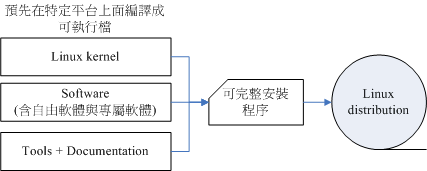
由于GNU的GPL授权并非不能从事商业行为，于是很多商业公司便成立来贩卖Linux distribution。 而由于Linux的GPL版权宣告，因此，商业公司所贩卖的Linux distributions通常也都可以从Internet上面来下载
各大Linux Distributions的主要异同：支持标准！
不过，由于发展Linux distributions的社群与公司实在太多了，例如在台湾有名的Red Hat, SuSE, Ubuntu, Fedora, Debian等等，所以很多人都很担心，如此一来每个distribution是否都不相同呢？ 这就不需要担心了，因为每个Linux distributions使用的kernel都是http://www.kernel.org%E6%89%80%E9%87%8A%E5%87%BA%E7%9A%84%EF%BC%8C%E8%80%8C%E4%BB%96%E4%BB%AC%E6%89%80%E9%80%89%E6%8B%A9%E7%9A%84%E8%BD%AF%E4%BB%B6%EF%BC%8C%E5%87%A0%E4%B9%8E%E9%83%BD%E6%98%AF%E7%9B%AE%E5%89%8D%E5%BE%88%E7%9F%A5%E5%90%8D%E7%9A%84%E8%BD%AF%E4%BB%B6%EF%BC%8C%E9%87%8D%E5%A4%8D%E6%80%A7%E7%9B%B8%E5%BD%93%E7%9A%84%E9%AB%98， 例如网页服务器的Apache，电子邮件服务器的Postfix/sendmail，文件服务器的Samba等等。
此外，为了让所有的Linux distributions开发不致于差异太大，且让这些开发商在开发的时候有所依据，还有Linux Standard Base (LSB)等标准来规范开发者，以及目录架构的File system Hierarchy Standard (FHS)标准规范！ 唯一差别的，可能就是该开发者自家所开发出来的管理工具，以及套件管理的模式吧！ 所以说，基本上，每个Linux distributions除了架构的严谨度与选择的套件内容外， 其实差异并不太大啦！ ^_^ 。大家可以选择自己喜好的distribution来安装即可！
Tip: distributions主要分为两大系统，一种是使用RPM方式安装软件的系统，包括Red Hat, Fedora, SuSE等都是这类； 一种则是使用Debian的dpkg方式安装软件的系统，包括Debian, Ubuntu, B2D等等。
列出几个主要的Linux distributions发行者网址：
- Red Hat: http://www.redhat.com
- Fedora: http://fedoraproject.org/
- Mandriva: http://www.mandriva.com
- Novell SuSE: http://www.novell.com/linux/
- Debian: http://www.debian.org/
- Slackware: http://www.slackware.com/
- Gentoo: http://www.gentoo.org/
- Ubuntu: http://www.ubuntu.com/
- CentOS: http://www.centos.org/
Tip: 到底是要买商业版还是社群版的Linux distribution呢？如果是要装在个人计算机上面做为桌面计算机用的，建议使用社群版， 包括Fedora, Ubuntu, OpenSuSE等等。如果是用在服务器上面的，建议使用商业版本，包括Red Hat, SuSE等。 这是因为社群版通常开发者会加入最新的软件，这些软件可能会有一些bug存在。至于商业版则是经过一段时间的磨合后， 才将稳定的软件放进去。 举例来说，Fedora出来的软件套件经过一段时间的维护后，等到该软件稳定到不容易发生错误后， Red Hat才将该软件放到他们最新的释出版本中。所以，Fedora的软件比较经常改版，Red Hat的软件就较少更版。
Linux在台湾
只想看看Linux的话，还可以选择所谓的可光盘开机进入Linux的Live CD版本， 亦即是KNOPPIX这个Linux distributions
Tip: 对于没有额外的硬盘或者是没有额外的主机的朋友来说，KNOPPIX这个可以利用光盘开机而进入Linux操作系统的Live CD 真的是一个不错的选择！你只要下载了KNOPPIX的映象档，然后将他刻录成为CD， 放入你主机的光驱，并在BIOS内设定光盘为第一个开机选项，就可以使用Linux系统了
选择适合你的Linux distribution
如果你已经接触过Linux了， 还想要探讨更严谨的Linux版本，那可以考虑使用Debian，如果你是以效能至上来考虑， 那么或许Gentoo是不错的建议！
依据计算机主机的用途来分的话，在台湾鸟哥会这样建议：
- 用于企业环境：建议使用商业版本，例如Red Hat的RHEL或者是Novell的SuSE都是很不错的选择
- 用于个人或教学的服务器环境, 可以使用『号称』完全兼容商业版RHEL的CentOS。 因为CentOS是抓RHEL的原始码来重新兜起来的一个Linux distribution，所以号称兼容于RHEL。 这一版的软件完全与RHEL相同，在改版的幅度较小，适合于服务器系统的环境
- 用于个人的桌面计算机：想要尝鲜吗？建议使用很炫的Fedora/Ubuntu等Desktop(桌面环境)使用的版本！ 如果不想要安装Linux的话，那么Fedora或CentOS也有推出Live CD
3. Linux的特色
Linux是Torvalds先生所开发出来的，基于GPL的版权宣告之下，可以在x86的架构下运作，也可以被移植到其他的大型主机上面。 由于开发的相关理念与兼容的问题，因此，我们也可以称Linux为Unix Like操作系统的一种。
3.1 Linux的特色
这个系统有什么特异功能呢？简单的说：
- 自由与开放的使用与学习环境：他是自由软件， 也就是任何人都可以自由的使用或者是修改其中的原始码的意思！ 这种开放性架构对科学界来说是相当重要的！ 因为很多的工程师由于特殊的需求，常常需要修改系统的原始码， 使该系统可以符合自己的需求！而这个开放性的架构将可以满足各不同需求的工程师！ 因此当然就有可能越来越流行啰！以鸟哥来说，目前环境工程界的空气质量模式最新版 Models-3/CMAQ 就是以Linux为基准平台设计的
- 配备需求低廉： Linux可以支持个人计算机的x86架构，系统资源不必像早先的Unix系统那般，仅适合于单一公司所出产的设备. 不过，如果你想要在Linux下执行X Window系统， 那么硬件的等级就不能太低了！
- 核心功能强大而稳定： 而且由于Linux功能并不会输给一些大型的Unix工作站，因此，近年来越来越多的公司或者是团体、 个人投入这一个操作系统的开发与整合工作！例如IBM与升阳公司都有推出x86的Linux服务器
- 独立作业： 另外，由于很多的软件套件逐渐被这套操作系统拿来使用，而很多套件软件也都在 Linux这个操作系统上面进行发展与测试，因此，Linux近来已经可以独力完成几乎所有的工作站或服务器的服务了，例如 Web, Mail, Proxy, FTP…..。
Tip: 因为Linux具有 1.硬件需求低、 2.架构开放、 3.系统稳定性及保密性功能够强、 4.完全免费，所以造成一些所谓『反微软联盟』的程序设计高手不断的开发新软件！以与Microsoft进行抗衡！
3.2 Linux的优缺点
- 稳定的系统：
- 免费或少许费用：
- 安全性、漏洞的快速修补：
- 多任务、多使用者：
- 使用者与群组的规划：
- 相对比较不耗资源的系统：
- 适合需要小核心程序的嵌入式系统：
- 整合度佳且多样的图形用户接口(GUI)：
Linux 还可以改进的地方：
- 没有特定的支持厂商：
- 游戏的支持度不足：
- 专业软件的支持度不足：
- 教育训练作的还不够好：
3.3 关于授权
有几个授权模式可以来谈一谈:
Open Source (开放源码)
软件以Open Source的方式释出时，表示除了可执行的软件本身外，一定伴随着原始码的释出喔！通常Open Source的软件有几个好处：
- 程序设计师通常会等到程序成熟之后才会释出(免得被笑, ^_^)，所以通常程序在雏形的时候，就已经具有相当的优良体质；
- Open Source的精神，相信当程序原设计人将程序原始码释出之后， 其他的程序设计师接受这份原始码之后， 由于需要将程序改成自己所需的样式，所以会经由本身的所学来加以改良，并从中加以改良与除虫， 所以程序的debug功能会比传统的close source来的快！
- 由于程序是伴随原始码的，因此，系统将会不易存在鲜为人知的木马程序或一些安全漏洞， 相对而言，会比较更加的安全！
Open source的代表授权为GNU的GPL授权及BSD等等.
- GNU General Public License： http://www.gnu.org/licenses/licenses.html#GPL 目前有version 2, version 3两种版本，Linux使用的是version 2这一版。 鸟哥也有收集一份GPL version 2 的中文化条文，您可以参考：http://cn.linux.vbird.org/linux_basic/1010appendix_A.php
- Berkeley Software Distribution (BSD)： http://en.wikipedia.org/wiki/BSD_license 使用BSD source code最常接触到的就是BSD授权模式了！这个授权模式其实与GPL很类似， 而其精神也与Open Source相呼应呢！
- Apache License, Version 2.0： http://www.apache.org/licenses/LICENSE-2.0 Apache是一种网页服务器软件，这个软件的发布方式也是使用Open source的。只是在apache的授权中规定， 如果想要重新发布此软件时(如果你有修改过该软件)，软件的名称依旧需要定名为Apache才行！
Close Source
相对于Open Source的软件会释出原始码，Close source的程序则仅推出可执行的二进制程序(binary program)而已。 这种软件的优点是有专人维护，你不需要去更动他；缺点则是灵活度大打折扣，用户无法变更该程序成为自己想要的样式！ 此外，若有木马程序或者安全漏洞，将会花上相当长的一段时间来除错！这也是所谓专利软件(copyright)常见的软件出售方式。
虽然专利软件常常代表就是需要花钱去购买，不过有些专利软件还是可以免费提供大众使用的！ 免费的专利软件代表的授权模式有：
- Freeware： http://en.wikipedia.org/wiki/Freeware 不同于Free software，Freeware为『免费软件』而非『自由软件！』虽然它是免费的软件，但是不见得要公布其原始码， 端看释出者的意见啰！这个东西与Open Source毕竟是不太相同的东西喔！此外，目前很多标榜免费软件的程序很多都有小问题！ 例如假藉免费软件的名义，实施用户数据窃取的目的！ 所以『来路不明的软件请勿安装！』
- Shareware： http://en.wikipedia.org/wiki/Shareware 共享件这个名词就有趣了！与免费软件有点类似的是，Shareware在使用初期，它也是免费的，但是， 到了所谓的『试用期限』之后，你就必须要选择『付费后继续使用』或者『将它移除』的宿命～ 通常，这些共享件都会自行撰写失效程序，让你在试用期限之后就无法使用该软件。
4. 重点回顾
- 计算机主要以二进制作为单位，而目前常用的磁盘容量单位为bytes，其单位换算为1Byte = 8bits， 其他的以1024为其倍数，如 1GByte=1024MBytes等等。
- 操作系统(Operation System)主要在管理与驱动硬件，因此必须要能够管理内存、管理装置、 负责行程管理以及系统呼叫等等。因此，只要能够让硬件准备妥当(Ready)的情况， 就是一个阳春的操作系统了。
- 最阳春的操作系统仅在驱动与管理硬件，而要使用硬件时，就得需要透过应用软件或者是壳程序(shell) 的功能，来呼叫操作系统操纵硬件工作。因此，目前称为操作系统的， 除了上述功能外，通常已经包含了日常工作所需要的应用软件在内了。
- Unix的前身是由贝尔实验室(Bell lab.)的Ken Thompson利用汇编语言写成的， 后来在1971-1973年间由Dennis Ritchie以C程序语言进行改写，才称为Unix。
- 1977年由Bill Joy释出BSD (Berkeley Software Distribution)，这些称为Unix-like的操作系统。
- 1984年由Andrew Tanenbaum制作出Minix操作系统，该系统可以提供原始码以及软件；
- 1984年由Richard Stallman提倡GNU计划，倡导自由软件(Free software)， 强调其软件可以『自由的取得、复制、修改与再发行』，并规范出GPL授权模式， 任何GPL(General Public License)软件均不可单纯仅贩卖其软件，也不可修改软件授权。
- 1991年由芬兰人Linus Torvalds开发出Linux操作系统。简而言之，Linux成功的地方主要在于： Minix(Unix), GNU, Internet, POSIX 及虚拟团队的产生。
- Linux本身就是个最阳春的操作系统，其开发网站设立在http://www.kernel.org%EF%BC%8C%E6%88%91%E4%BB%AC%E4%BA%A6%E7%A7%B0Linux%E6%93%8D%E4%BD%9C%E7%B3%BB%E7%BB%9F%E6%9C%80%E5%BA%95%E5%B1%82%E7%9A%84%E6%95%B0%E6%8D%AE%E4%B8%BA%E3%80%8E%E6%A0%B8%E5%BF%83(Kernel)』。
- 目前Linux核心的发展分为两种版本，分别是稳定版本的偶数版，如2.6.X，适合于商业与家用环境使用； 一种是发展中版本的奇数版如2.5.X 版，适合开发特殊功能的环境。
- Linux distributions的组成含有：『Linux Kernel + Free Software + Documentations(Tools) + 可完全安装的程序』所制成的一套完整的系统。
5. 本章习题
uname -r
6. 参考数据与延伸阅读
- Multics计划网站：http://www.multicians.org/。
- 葛林穆迪着，杜默译，『Linux传奇』，时报文化出版企业。
- 书本介绍：http://findbook.tw/book/9789571333632/basic
- 网络农夫，2001，Unix简史：
- http://netlab.cse.yzu.edu.tw/~statue/freebsd/docs/csh/
- Ken Thompson的个人网站：http://plan9.bell-labs.com/cm/cs/who/ken/index.html
- Dennis Ritchie的个人网站： http://cm.bell-labs.com/cm/cs/who/dmr/
- Richard Stallman的个人网站： http://www.stallman.org/
- GNU计划： http://www.gnu.org
- XFree86的网站：http://www.xfree86.org/
- 洪朝贵老师的GNU/FSF介绍： http://people.ofset.org/~ckhung/a/c_83.php
- 维基百科对Linus Torvalds的介绍：http://en.wikipedia.org/wiki/Linus_Torvalds。
- POSIX的相关说明：
- 维基百科：http://en.wikipedia.org/wiki/POSIX
- IEEE POSIX标准：http://standards.ieee.org/regauth/posix/
第二章、 Linux 如何学习
1. Linux当前的应用角色
就Linux目前的一般应用来说明一下，因为每种应用你所需要的Linux技能都不相同！ 了解Linux的应用后，你才好理解你需要的是什么样的学习方式！
当前的Linux常见的应用可约略分为企业应用与个人应用两方面来说
1.1 企业环境的利用
企业对於数位化的目标在於
- 提供消费者或员工一些产品方面的资讯 (例如网页介绍)，以及
- 整合整个企业内部的数据统一性 (例如统一的帐号管理/文件管理系统等)。
- 另外，某些企业例如金融业等，则强调在数据库、安全强化等重大关键应用。
- 学术单位则很需要强大的运算能力等。
所以企业环境运用Linux作些什么呢？
网路服务器：
承袭了Unix高稳定性的良好传统，Linux上面的网路功能特别的稳定与强大！ 此外，由於GNU计画与Linux的GPL授权模式，让很多优秀的软件都在Linux上面发展， 且这些在Linux上面的服务器软件几乎都是自由软件！因此，做为一部网路伺服器，例如WWW, Mail Server, File Server等等，Linux绝对是上上之选！当然，这也是Linux的强项！ 目前很多硬体厂商甚至搭配自家的硬件来销售Linux呢！例如底下的连结看看先：
HP公司的产品：http://h18000.www1.hp.com/products/servers/byos/linuxservers.html IBM公司的产品：http://www-07.ibm.com/systems/tw/power/
关键任务的应用(金融数据库、大型企业网管环境)：
由於个人电脑的效能大幅提升且价格便宜，所以金融业与大型企业的环境为了要精实自己机房的机器设备， 因此很多企业渐渐的走向Intel相容的x86主机环境。而这些企业所使用的软件大多使用Unix操作系统平台的软件， 总不能连过去发展的软件都一口气全部换掉吧！所以罗， 这个时候符合Unix操作系统标准并且可以在x86上运作的Linux就渐渐崭露头角了！^_^
目前很多金融业界都已经使用Linux做为他们的关键任务应用。所谓的关键任务就是该企业最重要的业务啦！ 举例来说，金融业最重要的就是那些投资者、帐户的数据了，这些数据大多使用数据库系统来作为存取介面， 这些数据很重要吧！很多金融业将这么重要的任务交给了Linux了！
学术机构的高效能运算任务：
学术机构的研究常常需要自行开发软件，所以对於可作为开发环境的操作系统需求非常的迫切！举例来说， 非常多技职体系的科技大学就很需要这方面的环境，好进行一些毕业专题的制作呢！ 又例如工程界流体力学的数值模式运算、娱乐事业的特效功能处理、软件开发者的工作平台等等。 由於Linux的创造者本身就是个电脑性能癖，所以Linux有强大的运算能力；并且Linux具有支援度相当广泛的GCC编译软件， 因此Linux在这方面的优势可是相当明显
为了加强整体系统的效能，丛集电脑系统(Cluster)的平行运算能力在近年来一直被拿出来讨论(注2)。 所谓的平行运算指的是『将原本的工作分成多份，然后交给多部主机去运算，最终再将结果收集起来』的一种方式。 由於透过高速网路使用到多部主机，将能够让原本需要很长运算时间的工作，大幅的降低等待的时间！ 例如中央气象局的气象预报就很需要这样的系统来帮忙！而Linux操作系统则是这种架构下相当重要的一个环境平台
1.2 个人环境的使用
桌面计算机：
Desktop
进行这些电脑工作时，你的Desktop环境需要什么咚咚？很简单，『就是需要窗口』！ 因为上网浏览、文书编排的所见即所得介面，以及电子公文系统等等， 如果没有窗口介面的辅助，那么将对使用者造成很大的困扰。
为了要强化桌面计算机的使用率，Linux与X Window System结合了！ 要注意的是，X Window System仅只是Linux上面的一套软件， 而不是核心喔！所以即使X Window挂了，对Linux也可能不会有直接的影响
近年来在各大社群的团结合作之下，Linux的窗口系统上面能够跑的软件实在是多
手持系统(PDA、手机)：
很多的手机、PDA、导航系统都可能使用的是Linux操作系统喔！ 而为了加强Linux操作系统在手机上面的统一标准，很多国际厂商合作了一个LiMo的计画(Linux Mobile phone)，也有Linux的手机论坛，你可以参考一下底下的连结：
- LiMo基金会：http://www.limofoundation.org/
- Linux手机论坛：http://www.lipsforum.org/
除此之外，还有社群以及Google这个高超的家伙也在玩Linux手机喔！例如底下的连结说明：
- OpenMoKo网站：http://www.openmoko.com/
- Google的手机平台：http://code.google.com/android/
嵌入式系统：
计算机配备也都是需要操作系统来控制的！而操作系统是直接嵌入於产品当中的，理论上你不应该会更动到这个操作系统， 所以就称为嵌入式系统
包括路由器、防火墙、手机、PDA、IP分享器、交换器、家电用品的微机控制器等等，都可以是Linux操作系统喔！ 酷学园内的Hoyo大大就曾经介绍过如何在嵌入式设备上面载入Linux
2. 鸟哥的Linux苦难经验全都录
2.1 鸟哥的Linux学习之路
让想要学习Linux的玩家可以快速且以较为正确的心态来进入Linux的世界
2.2 学习心态的分别
Linux最强项的地方在於网路
一开始就玩文字介面，去弄懂他
干脆直接学习一些Linux的基本技巧， 可以让我很轻易的就找到不同版本之间的差异性，而且学习之路也会变的更宽广
2.3 X window的学习
只需要购买一本介绍Linux桌面设定的书籍， 里面有说明输入法、印表机设定、网际网路设定的书籍就很够用了
还有一些网路上面的桌面调教文章也可以参考
- 杨老师的图解桌面 http://apt.nc.hcc.edu.tw/docs/FC3_X/
- Ubuntu 中文指南 http://ubuntuguide.org/wiki/Ubuntu:Hardy_tw
更多关於图形使用者介面能够使用的软件资讯，可以参考底下的连结
- Open Office(http://www.latex-project.org/)： 就是办公室软件，包含有电子试算表、文书处理与简报软件等；
- Free Maid(http://freemind.sourceforge.net/wiki/index.php/Main_Page)： 可绘制组织图的软件，酷学园里的SAKANA曾用过，鸟哥觉得挺好看；
- AbiWord(http://www.abisource.com/)： 非常类似微软的Word的文书处理软件；
- Tex/LaTeX(http://www.latex-project.org/)： 可进行文件排版的软件(很多自由软件文件使用此编辑器喔！)；
- Dia(http://dia-installer.de/index_en.html)： 非常类似微软Visio的软件，可绘制流程图；
- Scribus(http://www.scribus.net/)： 专业的排版软件，老实说，鸟哥确实不会用～@_@；
- GanttProject(http://ganttproject.biz/)： 可绘制甘特图(就是时程表)的软件；
- GIMP(http://www.gimp.org/)： 在业界相当有名的绘图自由软件！
千万记得，玩X window就好，不要搞架站的东西！
3. 有心朝Linux作业系统学习者的学习态度
如果想要更深入 Linux的话，那么指令列模式才是不二的学习方式！
以服务器或者是嵌入式系统的应用来说，X Window是非必备的软件，因为服务器是要提供用户端来连线的， 并不是要让使用者直接在这部服务器前面按键盘或滑鼠来操作的！所以图形介面当然就不是这么重要了！ 更多的时候甚至大家会希望你不要启动X window在伺服器主机上，这是因为X Window通常会吃掉很多系统资源的缘故！
另外，在服务器的应用上，文件的安全性、人员帐号的管理、软件的安装/修改/设定、 登录档的分析以及自动化工作排程与程式的撰写等等，都是需要学习的， 而且这些东西都还未涉及服务器软件
3.1 从头学习Linux基础
基础知识是学习更深入的技巧的必备条件呀！因此建议：
- 计算机概论与硬件相关知识：
- 先从Linux的安装与指令学起：
- Linux操作系统的基础技能：
- 务必学会vi文书编辑器：
- Shell与Shell Script的学习：
- 一定要会软件管理员：
- 网路基础的建立：
- 如果连网路基础都通过了，那么网站的架设对你来说，简直就是『太简单啦！』
推荐一下由Netman大哥主笔的Study-Area里面的基础文章，相当的实用！
3.2 选择一本易读的工具书
一本好的工具书是需要的，不论是未来作为查询之用，还是在正确的学习方法上。
Linux的学习历程并不容易， 他需要比较长的时间来适应、学习与熟悉，但是只要能够学会这些简单的技巧， 这些技巧却可以帮助您在各个不同的OS之间遨游！
鸟哥的 Linux 私房菜 – 基础学习篇了吧！ ^_^ 。 希望这本书可以帮助您缩短基础学习的历程，也希望能够带给您一个有效的学习观念！ 而在这本书看完之后，或许还可以参考一下Netman推荐的相关网路书籍： 请推荐有关网路的书： http://cn.linux.vbird.org/linux_basic/0120howtolinux/0120howtolinux_1.php
3.3 实作再实作
可以参考网路上一些善心人士整理的实作经验分享喔！ 例如最有名的Study-Area(http://www.study-area.org)等网站。
在人类记忆的曲线中， 你必须要『不断的重复练习』才会将一件事情记得比较熟
列出几个学习网站来提供大家做为参考实作的依据：
- Study-Area http://www.study-area.org
- 鸟哥的私房菜馆 http://linux.vbird.org
- 卧龙大师的网路技术文件 http://linux.tnc.edu.tw/techdoc/
- 台湾 Linux 社群 http://www.linux.org.tw/
- 狼主的网路实验室 http://netlab.kh.edu.tw/index.htm
- 大南国小（林克敏主任文件集）http://freebsd.lab.mlc.edu.tw/
- 吴仁智的文件集 http://www.cses.tcc.edu.tw/~chihwu/
3.4 发生问题怎么处理啊？建议流程是这样…
在自己的主机/网路数据库上查询How-To或FAQ
列出一些有用的FAQ与How-To网站给您参考一下：
- Linux自己的文件数据： /usr/share/doc (在你的Linux系统中)
- CLDP 中文文件计画 http://www.linux.org.tw/CLDP/
- The Linux Documentation Project：http://www.tldp.org/
比较有趣的是那个TLDP(The Linux Documentation Project)， 他几乎列出了所有Linux上面可以看到的文献数据，各种How-To的作法等等，虽然是英文的，不过，很有参考价值！
注意讯息输出，自行解决疑难杂症：
一般而言，Linux在下达指令的过程当中，或者是log file里头就可以自己查得错误资讯了
所以罗，请注意，发生错误的时候，请先自行以萤幕前面的资讯来进行 debug(除错)的动作，然后，如果是网路服务的问题时，请到/var/log/这个目录里头去查阅一下 log file(登录档)，这样可以几乎解决大部分的问题了！
搜寻过后，注意网路礼节，讨论区大胆的发言吧：
发问之前建议您最好先看一下『 提问的智慧 http://phorum.vbird.org/viewtopic.php?t=96』 这一篇讨论！然后，你可以到底下几个讨论区发问看看：
- 酷学园讨论区 http://phorum.study-area.org
- 鸟哥的私房菜馆讨论区 http://phorum.vbird.org
- telnet://bbs.sayya.org
问题『不要重复发表在各个主要的讨论区！』
Netman大大给的建议：
Netman 兄提供的一些学习的基本方针，提供给大家参考：
- 在Windows里面，程式有问题时，如果可能的话先将所有其它程式保存并结束，然后尝试按救命三键 (Ctrl+Alt+Delete)，将有问题的程式(不要选错了程式哦)『结束工作』，看看能不能恢复系统。不要动不动就直接关机或reset。
- 有系统地设计文件目录，不要随便到处保存文件以至以后不知道放哪里了， 或找到文件也不知道为何物。
- 养成一个做记录的习惯。尤其是发现问题的时候， 把错误信息和引发状况以及解决方法记录清楚，同时最后归类及定期整理。别以为您还年轻，等你再弄多几年计算机了， 您将会非常庆幸您有此一习惯。
- 如果看在网路上看到任何好文章，可以为自己留一份copy，同时定好题目，归类存档。(鸟哥注：需要注意智慧财产权！)
- 作为一个使用者，人要迁就机器；做为一个开发者，要机器迁就人。
- 学写 script 的确没设定 server 那么好玩，不过以我自己的感觉是：关键是会得『偷』， 偷了会得改，改了会得变，变则通矣。
- 在Windows里面，设定不好设备，您可以骂它；在Linux里面，如果设定好设备了，您得要感激它！
4. 鸟哥的建议(重点在solution的学习)
无论作什么事情，对人类而言，两个重要的因素是造成我们学习的原动力：
- 成就感
- 兴趣
学习Linux如果玩不出兴趣， 他对你也不是什么重要的生财工具，那么就不要再玩下去了！ 因为很累人
如果你真的想要玩这么一套优良的操作系统， 除了前面提到的一些建议之外，说真的，得要培养出兴趣与成就感才行！ 那么如何培养出兴趣与成就感呢？可能有几个方向可以提供给你参考：
- 建立兴趣：
- 成就感：成就感是怎么来的？说实在话，就是『被认同』来的！怎么被认同呢？写心得分享啊！你『学会一样东西』与 『要教人家会一样东西』思考的纹路是不太一样的！ 学会一样东西可能学一学会了就算了！但是要『教会』别人，那可就不是闹著玩的！ 得要思考相当多的理论性与实务性方面的咚咚，这个时候，你所能学到的东西就更深入了！
- 协助回答问题： 另一个创造成就感与满足感的方法就是『助人为快乐之本！』当你在 BBS 上面告诉一些新手，回答他们的问题，你可以获得的可能只是一句『谢谢！感恩呐！』 但是那句话真的会让人很有快乐的气氛！很多的老手都是因为有这样的满足感， 才会不断的协助新来的朋友的呢！此外，回答别人问题的时候，就如同上面的说明一般， 你会更深入的去了解每个项目
BBS 上面有一封对於Linux新手相当有帮助的文件资料
- 李果正先生之 GNU/Linux 初学者之旅： http://info.sayya.org/~edt1023/linux_entry.html - 鸟哥这里有也一个备份 http://cn.linux.vbird.org/linux_basic/0120howtolinux/0120howtolinux_3.php
- 资讯人的有效学习(洪朝贵教授网页) http://people.ofset.org/~ckhung/a/c013.php
除了这些基本的初学者建议外，其实，对於未来的学习，这里建议大家要『眼光看远！』一般来说，公司行号会发生问题时， 他们绝不会只要求各位『单独解决一部主机的问题』而已，他们需要的是整体环境的总体解决『Total Solution』。 而我们目前学习的Linux其实仅是在一部主机上面进行各项设定而已， 还没有到达解决整体公司所有问题的状态。当然啦，得要先学会Linux相关技巧后， 才有办法将这些技巧用之於其他的solution上面！
所以，大家在学习Linux的时候，千万不要有『门户之见』，认为MS的东西就比较不好～ 否则，未来在职场上，竞争力会比人家弱的！有办法的话，多接触，不排斥任何学习的机会！都会带给自己很多的成长！ 而且要谨记：『不同的环境下，解决问题的方法有很多种，只要行的通，就是好方法！』
5. 重点回顾
- Linux在企业应用方面，著重於『网路服务器』、『关键任务的应用(金融数据库、大型企业网管环境)』及『高效能运算』等任务；
- Linux在个人环境的使用上，著重於：桌面计算机、手持系统(PDA、手机)、嵌入式设备(如家电用品等)；
- Linux distributions有针对桌面计算机所开发的，例如Ubuntu, OpenSuSE及Fedora等等，为学习X Window的好工具；
- 有心朝Linux学习者，应该多接触文字介面(shell)的环境，包括正规表示法、管线命令与资料流重导向，最好都要学习！ 最好连shell script都要有能力自行撰写；
- 『实作』是学习Linux的最佳方案，空读书，遇到问题也不见得能够自己处理的！
- 学习Linux时，建立兴趣、建立成就感是很重要的，另外，协助回答问题、参与社群活动也是增加热情的方式！
- Linux文件计画的网站在：http://www.tldp.org
6. 本章习题
7. 参考数据与延伸阅读
第三章、主机规划与磁盘分区
1. Linux与硬件的搭配
虽然个人计算机各组件的主要介面是大同小异的，包括前面第零章计算机概论讲到的种种介面等， 但是由於新的技术来得太快，Linux核心针对新硬件所纳入的驱动程序模块比不上硬件升级的速度， 加上硬件厂商针对Linux所推出的驱动程序较慢，因此你在选购新的个人计算机(或服务器)时， 应该要选择已经过安装Linux测试的硬件比较好。
此外，在安装Linux之前，你最好了解一下你的Linux预计是想达成什么任务，这样在选购硬件时才会知道那个组件是最重要的。 举例来说，壁纸计算机(Desktop)的使用者，应该会用到X Window系统， 此时，显卡的优劣与内存的大小可就占有很重大的影响。如果是想要做成文件服务器， 那么硬盘或者是其他的储存设备，应该就是您最想要增购的组件罗！所以说，功课还是需要作的啊！
Linux对於计算机各组件/装置的分辨， 与大家惯用的Windows系统完全不一样！因为，各个组件或装置在Linux底下都是『一个文件！』 这个观念我们在第一章Linux是什么里面已经提过， 这里我们再次的强调。因此，你在认识各项装置之后，学习Linux的装置档名之前， 务必要先将Windows对於装置名称的概念先拿掉～否则会很难理解
1.1 认识计算机的硬件配备
这里主要是介绍较为普遍的个人计算机架构来配置Linux服务器，因为比较便宜. 各相关的硬件组件说明已经在第零章计概内讲过了，这里不再重复说明。
有些思考角度可以提供给大家参考
游戏机/工作机的考量
事实上，计算机主机的硬件配备与这部主机未来的功能是很有相关性的.
效能/价格比的考量
购买主流级的产品而非最高档的。因为我们最好能够考虑到效能/价格比。
由於电价越来越高，如何『省电』就很重要啦！因此目前硬件评论界有所谓的『每瓦效能』的单位， 每瓦电力所发挥的效能越高，当然代表越省电啊！这也是购买硬件时的考量之一啦！要知道，如果是做为服务器用， 一年365天中时时刻刻都启动，则你的计算机多花费50瓦的电力时，每年就得要多花450度电左右，如果以企业来讲， 每百部计算机每年多花450度电的话，每年得多花十万块以上的电费呢！所以这也需要考量啊！
支持度的考量
并非所有的产品都会支持特定的操作系统，这牵涉到硬件开发商是否有意愿提供适当的驱动程序之故。 因此，当我们想要购买或者是升级某些计算机组件时，应该要特别注意该硬件是否有针对您的操作系统提供适当的驱动程序
1.2 选择与Linux搭配的主机配备： 硬件支持相关网站
如果你的Linux主要是作为小型服务器使用，并不负责学术方面的大量运算， 而且也没有使用X Window的图形介面，那你的硬件需求只要像底下这样就差不多了：
- CPU: CPU只要不是老旧到会让你的硬件系统死机的都能够支持
- RAM: 主内存是越大越好！事实上在Linux服务器中，主内存的重要性比CPU还要高的多！因为如果主内存不够大， 就会使用到硬盘的内存置换空间(swap)。 而由计算机概论的内容我们知道硬盘比内存的速度要慢的多， 所以主内存太小可能会影响到整体系统的效能的！尤其如果你还想要玩X window的话，那主内存的容量就不能少。 对於一般的小型服务器来说，建议至少也要512MB以上的主内存容量较佳。
- Hard Disk 由於数据量与数据存取频率的不同，对於硬盘的要求也不相同。 举例来说，如果是一般小型服务器，通常重点在於容量，硬盘容量大於20GB就够用到不行了！ 但如果你的服务器是作为备份或者是小企业的文件服务器，那么你可能就得要考量较高阶的磁盘阵列(RAID)模式了。
- VGA: 对於不需要X Window的服务器来说，显卡算是最不重要的一个组件了！你只要有显卡能够让计算机启动，那就够了。 但如果需要X window系统时，你的显卡最好能够拥有32MB以上的内存容量
- Network Interface Card: 网络卡是服务器上面最重要的组件了！目前新式的主板大多拥有10/100/1000Mbps的高速网络
- 光盘、软盘、键盘与鼠标: 这些配备都是非必备的喔！举例来说，安装好Linux系统后， 可能就将该系统的光驱、鼠标、软盘机等通通拔除，只有网络线连接在计算机后面而已，其他的都是透过网络连线来管控的哩！ 因为通常服务器这东西最需要的就是稳定，而稳定的最理想状态就是平时没事不要去动他
列出几个常用的硬件与Linux distributions搭配的网站，建议大家想要了解你的主机支不支持该版Linux时， 务必到相关的网站去搜寻一下
- Red Hat的硬件支持：https://hardware.redhat.com/?pagename=hcl
- Open SuSE的硬件支持：http://en.opensuse.org/Hardware?LANG=en_UK
- Mandriva的硬件支持：http://hcl.mandriva.com/
- Linux对笔记本计算机的支持：http://www.linux-laptop.net/
- Linux对打印机的支持：http://www.openprinting.org/
- 显卡对XFree86/Xorg的支持：http://www.linuxhardware.org/
- Linux硬件支持的中文HowTo：http://www.linux.org.tw/CLDP/HOWTO/hardware.html#hardware
1.3 各硬件装置在Linux中的档名
『在Linux系统中，每个装置都被当成一个文件来对待』 举例来说，
- IDE介面的硬盘的文件名称即为/dev/hd[a-d]，其中， 括号内的字母为a-d当中的任意一个，亦即有/dev/hda, /dev/hdb, /dev/hdc, 及 /dev/hdd这四个文件的意思。
- 打印机与软盘呢？分别是/dev/lp0, /dev/fd0
列出几个常见的装置与其在Linux当中的档名:
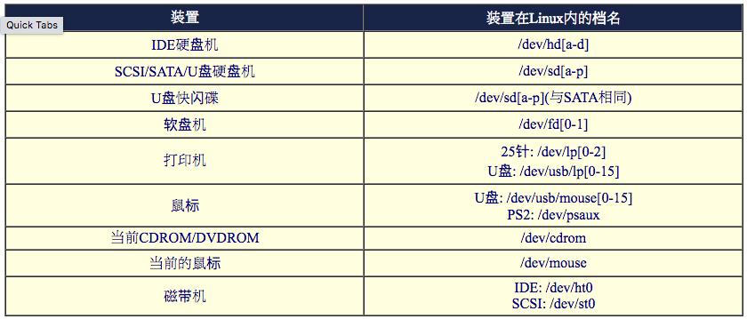
需要特别留意的是硬盘机(不论是IDE/SCSI/U盘都一样)，每个磁碟机的磁盘分区(partition)不同时， 其磁碟档名还会改变
先背一下IDE与SATA硬盘的档名就是了！其他的，用的到再来背吧！
Tip: 更多Linux核心支持的硬件装置与档名，可以参考如下网页： http://www.kernel.org/pub/linux/docs/device-list/devices.txt
2. 磁盘分区
2.1 磁碟连接的方式与装置档名的关系
由第零章提到的磁碟说明，我们知道个人计算机常见的磁碟介面有两种， 分别是IDE与SATA介面，目前(2009)的主流已经是SATA介面了
以IDE介面来说，由於一个IDE排线可以连接两个IDE装置，又通常主机都会提供两个IDE介面，因此最多可以接到四个IDE装置。 也就是说，如果你已经有一个光盘设备了，那么最多就只能再接三颗IDE介面的磁碟罗。 这两个IDE介面通常被称为IDE1(primary)及IDE2(secondary)， 而每条排线上面的IDE装置可以被区分为Master与Slave。这四个IDE装置的档名为：
再以SATA介面来说，由於SATA/U盘/SCSI等磁碟介面都是使用SCSI模块来驱动的， 因此这些介面的磁碟装置档名都是/dev/sd[a-p]的格式。 但是与IDE介面不同的是，SATA/U盘介面的磁碟根本就没有一定的顺序，那如何决定他的装置档名呢？ 这个时候就得要根据Linux核心侦测到磁碟的顺序了！
如果你的磁碟被分割成两个分割槽 (partition)，那么每个分割槽的装置档名又是什么？在了解这个问题之前，我们先来复习一下磁碟的组成， 因为现今磁碟的分割与他物理的组成很有关系！
2.2 磁碟的组成复习
我们在计算机概论谈过磁碟的组成主要有磁碟盘、机械手臂、磁碟读取头与主轴马达所组成， 而数据的写入其实是在磁碟盘上面。磁碟盘上面又可细分出磁区(Sector)与磁柱(Cylinder)两种单位， 其中磁区每个为512bytes那么大。假设磁碟只有一个磁碟盘，那么磁碟盘有点像底下这样：
整颗磁碟的第一个磁区特别的重要，因为他记录了整颗磁碟的重要资讯！ 磁碟的第一个磁区主要记录了两个重要的资讯，分别是：
- 主要启动记录区(Master Boot Record, MBR)：可以安装启动管理程序的地方，有446 bytes
- 分割表(partition table)：记录整颗硬盘分割的状态，有64 bytes
MBR是很重要的，因为当系统在启动的时候会主动去读取这个区块的内容，这样系统才会知道你的程序放在哪里且该如何进行启动。 如果你要安装多重启动的系统，MBR这个区块的管理就非常非常的重要了！
2.3 磁盘分区表(partition table)
在前一小节的图示中， 我们有看到『开始与结束磁柱』吧？那是文件系统的最小单位，也就是 partition 的最小单位. 我们就是利用参考对照磁柱号码的方式来处理. 在分割表所在的64 bytes容量中，总共分为四组记录区，每组记录区记录了该区段的启始与结束的磁柱号码。
假设上面的硬盘装置档名为/dev/hda时，那么这四个分割槽在Linux系统中的装置档名如下所示， 重点在於档名后面会再接一个数字，这个数字与该分割槽所在的位置有关
- P1:/dev/hda1
- P2:/dev/hda2
- P3:/dev/hda3
- P4:/dev/hda4
由於分割表就只有64 bytes而已，最多只能容纳四笔分割的记录， 这四个分割的记录被称为主要(Primary)或延伸(Extended)分割槽。 根据上面的图示与说明，我们可以得到几个重点资讯：
- 其实所谓的『分割』只是针对那个64 bytes的分割表进行配置而已！
- 硬盘默认的分割表仅能写入四组分割资讯
- 这四组分割资讯我们称为主要(Primary)或延伸(Extended)分割槽
- 分割槽的最小单位为磁柱(cylinder)
- 当系统要写入磁碟时，一定会参考磁盘分区表，才能针对某个分割槽进行数据的处理
为啥要分割啊？基本上你可以这样思考分割的角度：
- 数据的安全性： 因为每个分割槽的数据是分开的！
- 系统的效能考量： 由於分割槽将数据集中在某个磁柱的区段，例如上图当中第一个分割槽位於磁柱号码1~100号，如此一来当有数据要读取自该分割槽时， 磁碟只会搜寻前面1~100的磁柱范围，由於数据集中了，将有助於数据读取的速度与效能
分割表只有记录四组数据的空间，在Windows/Linux系统中， 我们是透过刚刚谈到的扩展分配(Extended)的方式来处理. 扩展分配的目的是使用额外的磁区来记录分割资讯，扩展分配本身并不能被拿来格式化。 然后我们可以透过扩展分配所指向的那个区块继续作分割的记录。
图2.3.2、磁盘分区表的作用示意图
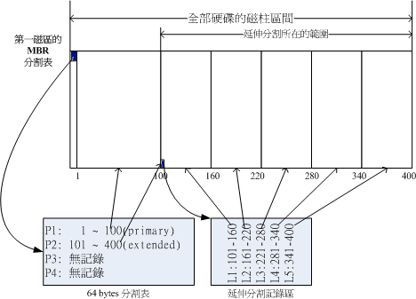
如上图右下方那个区块有继续分割出五个分割槽， 这五个由扩展分配继续切出来的分割槽，就被称为逻辑分割槽(logical partition)。 同时注意一下，由於逻辑分割槽是由扩展分配继续分割出来的，所以他可以使用的磁柱范围就是扩展分配所配置的范围喔！ 也就是图中的101~400
上述的分割槽在Linux系统中的装置档名分别如下：
- P1:/dev/hda1
- P2:/dev/hda2
- L1:/dev/hda5
- L2:/dev/hda6
- L3:/dev/hda7
- L4:/dev/hda8
- L5:/dev/hda9
Note: 怎么装置档名没有/dev/hda3与/dev/hda4呢？因为前面四个号码都是保留给Primary或Extended用的嘛！ 所以逻辑分割槽的装置名称号码就由5号开始了！这是个很重要的特性，不能忘记
主要分割、扩展分配与逻辑分割的特性我们作个简单的定义:
- 主要分割与扩展分配最多可以有四笔(硬盘的限制)
- 扩展分配最多只能有一个(操作系统的限制)
- 逻辑分割是由扩展分配持续切割出来的分割槽；
- 能够被格式化后，作为数据存取的分割槽为主要分割与逻辑分割。扩展分配无法格式化；
- 逻辑分割的数量依操作系统而不同，在Linux系统中，IDE硬盘最多有59个逻辑分割(5号到63号)， SATA硬盘则有11个逻辑分割(5号到15号)。
事实上，分割是个很麻烦的东西，因为他是以磁柱为单位的『连续』磁碟空间， 且扩展分配又是个类似独立的磁碟空间，所以在分割的时候得要特别注意。我们举底下的例子来解释一下
| 例题： 在Windows操作系统当中，如果你想要将D与E槽整合成为一个新的分割槽，而如果有两种分割的情况如下图所示， 图中的特殊颜色区块为D与E槽的示意，请问这两种方式是否均可将D与E整合成为一个新的分割槽？ |
图2.3.3、磁碟空间整合示意图
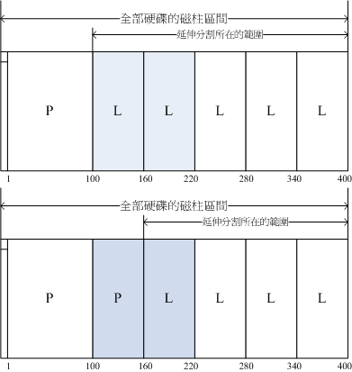
| Answer: |
- 上图可以整合：因为上图的D与E同属於扩展分配内的逻辑分割，因此只要将两个分割槽删除，然后再重新创建一个新的分割槽， 就能够在不影响其他分割槽的情况下，将两个分割槽的容量整合成为一个。
- 下图不可整合：因为D与E分属主分割与逻辑分割，两者不能够整合在一起。除非将扩展分配破坏掉后再重新分割。 但如此一来会影响到所有的逻辑分割槽，要注意的是：如果扩展分配被破坏，所有逻辑分割将会被删除。 因为逻辑分割的资讯都记录在扩展分配里面
由於第一个磁区所记录的分割表与MBR是这么的重要，几乎只要读取硬盘都会先由这个磁区先读起。 因此，如果整颗硬盘的第一个磁区(就是MBR与partition table所在的磁区)物理实体坏掉了，那这个硬盘大概就没有用了！ 因为系统如果找不到分割表，怎么知道如何读取磁柱区间呢？
| 例题： 如果我想将一颗大硬盘『暂时』分割成为四个partitions，同时还有其他的剩余容量可以让我在未来的时候进行规划， 我能不能分割出四个Primary？若不行，那么你建议该如何分割？ |
| 答： 由於Primary+Extended最多只能有四个，其中Extended最多只能有一个，这个例题想要分割出四个分割槽且还要预留剩余容量， 因此P+P+P+P的分割方式是不适合的。因为如果使用到四个P，则即使硬盘还有剩余容量， 因为无法再继续分割，所以剩余容量就被浪费掉了。 |
| 假设你想要将所有的四笔记录都花光，那么P+P+P+E是比较适合的。所以可以用的四个partitions有3个主要及一个逻辑分割， 剩余的容量在扩展分配中。 |
| 如果你要分割超过4槽以上时，一定要有Extended分割槽，而且必须将所有剩下的空间都分配给Extended， 然后再以logical的分割来规划Extended的空间。 另外，考虑到磁碟的连续性，一般建议将Extended的磁柱号码分配在最后面的磁柱内。 |
| 例题： 我能不能仅分割出一个Primary与一个Extended即可？ |
| 答： 当然可以，这也是早期Windows操作系统惯用的手法！此外，逻辑分割槽的号码在IDE可达63号，SATA则可达15号， 因此仅一个主要与一个扩展分配即可，因为扩展分配可继续被分割出逻辑分割槽嘛！ |
| 例题： 假如我的PC有两颗SATA硬盘，我想在第二颗硬盘分割出6个可用的分割槽(可以被格式化来存取数据之用)， 那每个分割槽在Linux系统下的装置档名为何？且分割类型各为何？至少写出两种不同的分割方式。 |
| 答： 由於P(primary)+E(extended)最多只能有四个，其中E最多只能有一个。现在题目要求6个可用的分割槽，因此不可能分出四个P。 底下我们假设两种环境，一种是将前四号全部用完，一种是仅花费一个P及一个E的情况： |
- P+P+P+E的环境：实际可用的是/dev/sdb1, /dev/sdb2, /dev/sdb3, /dev/sdb5, /dev/sdb6, /dev/sdb7这六个，至於/dev/sdb4这个扩展分配本身仅是提供来给逻辑分割槽创建之用。
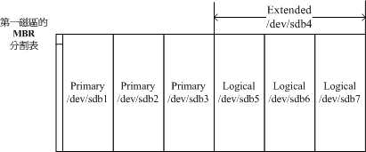
- P+E的环境：1~4号是保留给主要/扩展分配槽的，因此第一个逻辑分割槽一定是由5号开始的！再次强调啊！ 所以/dev/sdb3, /dev/sdb4就会被保留下来没有用到. ile:vbird-linux_basic/figure-3-2-3-5.gif
2.4 启动流程与主要启动记录区(MBR)
既然操作系统也是软件，那么我的计算机又是如何认识这个操作系统软件并且运行他的？ 明明启动时我的计算机还没有任何软件系统，那他要如何读取硬盘内的操作系统文件啊？嘿嘿！这就得要牵涉到计算机的启动程序了
在计算机概论里面我们有谈到那个可爱的BIOS与CMOS两个东西， CMOS是记录各项硬件参数且嵌入在主板上面的储存器，BIOS则是一个写入到主板上的一个韧体(再次说明， 韧体就是写入到硬件上的一个软件程序)。这个BIOS就是在启动的时候，计算机系统会主动运行的第一个程序
接下来BIOS会去分析计算机里面有哪些储存设备，我们以硬盘为例，BIOS会依据使用者的配置去取得能够启动的硬盘， 并且到该硬盘里面去读取第一个磁区的MBR位置。 MBR这个仅有446 bytes的硬盘容量里面会放置最基本的启动管理程序， 此时BIOS就功成圆满，而接下来就是MBR内的启动管理程序的工作了。
这个启动管理程序的目的是在加载(load)核心文件， 由於启动管理程序是操作系统在安装的时候所提供的，所以他会认识硬盘内的文件系统格式，因此就能够读取核心文件， 然后接下来就是核心文件的工作，启动管理程序也功成圆满，之后就是大家所知道的操作系统的任务
简单的说，整个启动流程到操作系统之前的动作应该是这样的：
- BIOS：启动主动运行的韧体，会认识第一个可启动的装置；
- MBR：第一个可启动装置的第一个磁区内的主要启动记录区块，内含启动管理程序；
- 启动管理程序(boot loader)：一支可读取核心文件来运行的软件；
- 核心文件：开始操作系统的功能…
-> BIOS与MBR都是硬件本身会支持的功能，至於Boot loader则是操作系统安装在MBR上面的一套软件了。由於MBR仅有446 bytes而已，因此这个启动管理程序是非常小而美的。 这个boot loader的主要任务有底下这些项目：
- 提供菜单：使用者可以选择不同的启动项目，这也是多重启动的重要功能！
- 加载核心文件：直接指向可启动的程序区段来开始操作系统；
- 转交其他loader：将启动管理功能转交给其他loader负责。-> 表示你的计算机系统里面可能具有两个以上的启动管理程序呢！ 有可能吗？我们的硬盘不是只有一个MBR而已？– 启动管理程序除了可以安装在MBR之外， 还可以安装在每个分割槽的启动磁区(boot sector)
图2.4.1、启动管理程序的工作运行示意图

上图中我们可以发现，MBR的启动管理程序提供两个菜单，菜单一(M1)可以直接加载Windows的核心文件来启动； 菜单二(M2)则是将启动管理工作交给第二个分割槽的启动磁区(boot sector)。当使用者在启动的时候选择菜单二时， 那么整个启动管理工作就会交给第二分割槽的启动管理程序了。 当第二个启动管理程序启动后，该启动管理程序内(上图中)仅有一个启动菜单，因此就能够使用Linux的核心文件来启动罗。 这就是多重启动的工作情况
将上图作个总结：
- 每个分割槽都拥有自己的启动磁区(boot sector)
- 图中的系统槽为第一及第二分割槽，
- 实际可启动的核心文件是放置到各分割槽内的！
- loader只会认识自己的系统槽内的可启动核心文件，以及其他loader而已；
- loader可直接指向或者是间接将管理权转交给另一个管理程序。
为什么人家常常说：『如果要安装多重启动， 最好先安装Windows再安装Linux』呢？这是因为：
- Linux在安装的时候，你可以选择将启动管理程序安装在MBR或各别分割槽的启动磁区， 而且Linux的loader可以手动配置菜单(就是上图的M1, M2…)，所以你可以在Linux的boot loader里面加入Windows启动的选项；
- Windows在安装的时候，他的安装程序会主动的覆盖掉MBR以及自己所在分割槽的启动磁区，你没有选择的机会， 而且他没有让我们自己选择菜单的功能。
Note: 如果先安装Linux再安装Windows的话，那MBR的启动管理程序就只会有Windows的项目，而不会有Linux的项目 (因为原本在MBR内的Linux的启动管理程序就会被覆盖掉)。 那需要重新安装Linux一次吗？当然不需要，你只要用尽各种方法来处理MBR的内容即可。 例如利用全中文的spfdisk(http://spfdisk.sourceforge.net/)软件来安装认识Windows/Linux的管理程序， 也能够利用Linux的救援模式来挽救MBR
Tip: 启动管理程序与Boot sector的观念是非常重要的，我们会在第二十章分别介绍，您在这里只要先对於(1)启动需要启动管理程序， 而(2)启动管理程序可以安装在MBR及Boot Sector两处这两个观念有基本的认识即可
2.5 Linux安装模式下，磁盘分区的选择(极重要)
目录树结构(directory tree)
Linux内的所有数据都是以文件的形态来呈现的，所以罗，整个Linux系统最重要的地方就是在於目录树架构。 所谓的目录树架构(directory tree)就是以根目录为主，然后向下呈现分支状的目录结构的一种文件架构。 所以，整个目录树架构最重要的就是那个根目录(root directory)，这个根目录的表示方法为一条斜线『/』， 所有的文件都与目录树有关。目录树的呈现方式如下图所示：
图2.5.1、目录树相关性示意图
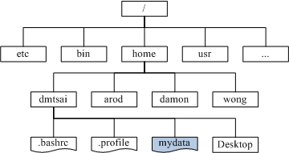
现在的问题是『如何结合目录树的架构与磁碟内的数据』呢？ 这个时候就牵扯到『挂载(mount)』的问题
文件系统与目录树的关系(挂载)
所谓的『挂载』就是利用一个目录当成进入点，将磁盘分区槽的数据放置在该目录下； 也就是说，进入该目录就可以读取该分割槽的意思。这个动作我们称为『挂载』，那个进入点的目录我们称为『挂载点』。 由於整个Linux系统最重要的是根目录，因此根目录一定需要挂载到某个分割槽的。 至於其他的目录则可依使用者自己的需求来给予挂载到不同的分割槽。我们以下图来作为一个说明：
图2.5.2、目录树与分割槽之间的相关性

判断某个文件在那个partition底下是很简单的，透过反向追踪即可。以上图来说， 当我想要知道/home/vbird/test这个文件在那个partition时，由test –> vbird –> home –> ，看那个『进入点』先被查到那就是使用的进入点了。 所以test使用的是/home这个进入点而不是
| 例题： 现在让我们来想一想，我的计算机系统如何读取光盘内的数据呢？在Windows里面使用的是『光驱』的代号方式处理(假设为E槽时)， 但在Linux底下我们依旧使用目录树喔！在默认的情况下，Linux是将光驱的数据放置到/media/cdrom里头去的。 如果光盘片里面有个文件档名为『我的文件』时，那么这个文件是在哪里？ |
| 答： 这个文件最终会在如下的完整档名中： |
- Windows： 壁纸\我的计算机\E:\我的文件
- Linux： /media/cdrom/我的文件
如果光驱并非被挂载到/media/cdrom，而是挂载到/mnt这个目录时，刚刚读取的这个文件的档名会变成：
- /mnt/我的文件
如果你了解这个档名，这表示你已经知道挂载的意义了！初次接触Linux时，这里最容易搞混，因为他与Windows的分割槽代号完全不一样！
distributions安装时，挂载点与磁盘分区的规划：
既然我们在Linux系统下使用的是目录树系统，所以安装的时候自然就得要规划磁盘分区与目录树的挂载了。 实际上，在Linux安装的时候已经提供了相当多的默认模式让你选择分割的方式了， 不过，无论如何，分割的结果可能都不是很能符合自己主机的样子！因为毕竟每个人的『想法』都不太一样！ 因此， 强烈建议 使用『自订安装, Custom 』这个安装模式！在某些Linux distribution中，会将这个模式写的很厉害，叫做是『Expert, 专家模式』
- 自订安装『Custom』：
- A：初次接触Linux：只要分割『 / 』及『swap』即可：通常初次安装Linux系统的朋友们，我们都会建议他直接以一个最大的分割槽『 / 』来安装系统。 这样作有个好处，就是不怕分割错误造成无法安装的困境！例如/usr是Linux的可运行程序及相关的文件摆放的目录， 所以他的容量需求蛮大的，万一你分割了一块分割槽给/usr，但是却给的不够大，那么就伤脑筋了！ 因为会造成无法将数据完全写入的问题，就有可能会无法安装啦！因此如果你是初次安装的话， 那么可以仅分割成两个分割槽『 / 与 Swap 』即可。
- B：建议分割的方法：预留一个备用的剩余磁碟容量！分割是系统管理员很重要的一个任务。 但如果你将整个硬盘的容量都用光了，那么你要如何练习分割呢？请你特别预留一块不分割的磁碟容量，作为后续练习时可以用来分割之用！此外，预留的分割槽也可以拿来做为备份之用。因为我们在实际操作Linux系统的过程中， 可能会发现某些script或者是重要的文件很值得备份时，就可以使用这个剩余的容量分割出新的分割槽， 并使用来备份重要的配置档或者是script。这有个最大的好处， 就是当我的Linux重新安装的时候，我的一些软件或工具程序马上就可以直接在硬盘当中找到！呵呵！重新安装比较便利啦。 为什么要重新安装？因为没有安装过Linux十次以上，不要说你学会了Linux
- 选择Linux安装程序提供的默认硬盘分割方式：对於首次接触Linux的朋友们，鸟哥通常不建议使用各个distribution所提供默认的Server安装方式. 要注意的是， 选择Server的时候，请『确定』你的硬盘数据是不再需要！因为Linux会自动的把你的硬盘里面旧有的数据全部杀掉！ 此外，硬盘至少需要2 GB以上才可以选择这一个模式
3. 安装Linux前的规划
3.1 选择适当的distribution
事实上每个Linux distributions使用的都是来自於http://www.kernel.org%E5%AE%98%E6%96%B9%E7%BD%91%E7%AB%99%E6%89%80%E6%8F%90%E4%BE%9B%E7%9A%84Linux%E6%A0%B8%E5%BF%83%EF%BC%8C%E5%90%84%E5%AE%B6distribution%E4%BD%BF%E7%94%A8%E7%9A%84%E8%BD%AF%E4%BB%B6%E5%85%B6%E5%AE%9E%E4%B9%9F%E9%83%BD%E6%98%AF%E5%A4%A7%E5%90%8C%E5%B0%8F%E5%BC%82， 最大的差别或许就是在於软件的安装模式而已。所以，您只要选择其中一套
近年来网络环境实在不很安全，因此你在选择distribution时，特别要了解到该distribution适合的环境， 并且最好选择最新的distribution较佳
- 以鸟哥来说，如果是将Linux定位在服务器上面的话，那么Red Hat Enterprise Linux及SuSE Enterprise Linux应该是很不错的选择，因为他的版本更动幅度较小，并且升级支持的期限较长的原因。
- 鸟哥选择CentOS这一个号称与RHEL完全兼容的版本来练习， 目前(2009/08)最新的版本是CentOS 5.3版
3.2 主机的服务规划与硬件的关系
由於主机的服务目的不同，所需要的硬件等级与配备自然也就不一样 -> 每种服务可能会需要的硬件配备规划
Note: 不要将重要数据放在练习用的Linux主机上面。
打造Windows与Linux共存的环境：
- 我的环境里面仅能允许我拥有一部主机，不论是经济问题还是空间问题～
- 因为目前各主要硬件还是针对Windows进行驱动程序的开发，我想要同时保有Windows操作系统与Linux操作系统， 以确定在Linux底下的硬件应该使用那个I/O port或者是IRQ的分配等等；
- 我的工作需要同时使用到Windows与Linux操作系统。
-> 我们在上一个小节谈到的启动流程与多重启动的数据就很重要
Tip: 一般来说，你还可以在Windows操作系统上面安装Virtualbox (http://www.virtualbox.org/) 之类的软件，让你可以在Windows系统上面『同时』使用Linux系统， 就是两个操作系统同时启动！不过，那样的环境比较复杂，尤其Virtualbox环境中很多硬件都是模拟的， 会让新手很难理解系统控制原理。基本上，鸟哥很不建议您使用这样的方式来学习Linux
NAT(达成IP分享器的功能)：
通常小型企业或者是学校单位大多仅会有一条对外的连线，然后全公司/学校内的计算机全部透过这条连线连到网际网络上。 此时我们就得要使用IP分享器来让这一条对外连线分享给所有的公司内部员工使用。 那么Linux能不能达到此一IP分享的功能呢？当然可以，就是透过NAT服务
在这种环境中，由於Linux作为一个内/外分离的实体，因此网络流量会比较大一点。 此时Linux主机的网络卡就需要比较好些的配备。其他的CPU、RAM、硬盘等等的影响就小很多。 事实上，单利用Linux作为NAT主机来分享IP是很不智的～因为PC的耗电能力比IP分享器要大的多
为什么你还要使用Linux作为NAT呢？因为Linux NAT还可以额外的加装很多分析软件， 可以用来分析用户端的连线，或者是用来控制频宽与流量，达到更公平的频宽使用. 可以参考我们在服务器架设篇当中的数据
SAMBA(加入Windows网络上的芳邻)：
问题是，Windows XP的网芳一般只能同时分享十部用户端连线，超过的话就得要等待了
我们可以使用Linux上面的SAMBA这个软件来达成加入Windows网芳的功能喔！SAMBA的效能不错， 也没有用户端连线数的限制，相当适合於一般学校环境的文件服务器(file server)的角色
这种服务器由於分享的数据量较大，对於系统的网络卡与硬盘的大小及速度就比较重要， 如果你还针对不同的使用者提供文件服务器功能，那么/home这个目录可以考虑独立出来，并且加大容量。
Mail(邮件服务器)：
虽然免费的信箱已经非常够用了，老实说，鸟哥也不建议您架设mail server了。问题是， 如果你是一间私人单位的公司，你的公司内传送的email是具有商业机密或隐私性的，那你还想要交给免费信箱去管理吗？ 此时才有需要架设mail server罗。CentOS一安装完毕就提供了Sendmail及Postfix两种mail server软件了
在mail server上面，重要的也是硬盘容量与网络卡速度，在此情境中，也可以将/var目录独立出来，并加大容量。
Web(WWW服务器)：
除了可以提供Internet的WWW连线之外， 很多在网络主机上面的软件功能(例如某些分析软件所提供的最终分析结果的画面)也都使用WWW作为显示的介面
CentOS使用的是Apache这套软件来达成WWW网站的功能，在WWW服务器上面，如果你还有提供数据库系统的话， 那么CPU的等级就不能太低，而最重要的则是RAM了！要添加WWW服务器的效能，通常提升RAM是一个不错的考量
DHCP(提供用户端自动取得IP的功能)：
系统管理员在DHCP服务器上面配置一下即可。 这个咚咚的硬件要求可以不必很高
Proxy(代理服务器)：
这也是常常会安装的一个服务器软件，尤其像中小学校的频宽较不足的环境下， Proxy将可有效的解决频宽不足的问题！当然，你也可以在家里内部安装一个Proxy喔！但是， 这个服务器的硬件要求可以说是相对而言最高的，他不但需要较强有力的CPU来运行，对於硬盘的速度与容量要求也很高！ 自然，既然提供了网络服务，网络卡则是重要的一环
FTP：
常常看到很多朋友喜欢架设FTP去进行网络数据的传输
对於大专院校来说，因为常常需要分享给全校师生一些免费的资源， 此时匿名使用者的FTP软件功能就很需要存在了。对於FTP的硬件需求来说，硬盘容量与网络卡好坏相关性较高
3.3 主机硬盘的主要规划(partition)
系统对於硬盘的需求跟刚刚提到的主机开放的服务有关，那么除了这点之外，还有没有其他的注意事项呢？ 当然有，那就是数据的分类与数据安全性的考量。所谓的『数据安全』并不是指数据被网络cracker所破坏， 而是指『当主机系统的硬件出现问题时，你的文件数据能否安全的保存』
幸运一点的可以使用 fsck 来解决硬盘问题，麻烦一点的可能需要重新安装 linux。
基本硬盘分割的模式:
- 最简单的分割方法：仅分割出根目录与内存置换空间( / & swap )即可。 然后再预留一些剩余的磁碟以供后续的练习之用。不过，这当然是不保险的分割方法(所以鸟哥常常说这是『懒人分割法』)！ 因为如果任何一个小细节坏掉(例如坏轨的产生)，你的根目录将可能整个的损毁～挽救方面较困难！
- 稍微麻烦一点的方式：先分析这部主机的未来用途，然后根据用途去分析需要较大容量的目录， 以及读写较为频繁的目录，将这些重要的目录分别独立出来而不与根目录放在一起， 那当这些读写较频繁的磁盘分区槽有问题时，至少不会影响到根目录的系统数据，那挽救方面就比较容易. 在默认的CentOS环境中，底下的目录是比较符合容量大且(或)读写频繁的目录罗：
- /
- /usr
- /home
- /var
- Swap
以鸟哥为例，通常我会希望我的邮件主机大一些，因此我的/var通常会给个数GB的大小， 如此一来就可以不担心会有邮件空间不足的情况了！另外，由於我开放SAMBA服务， 因此提供每个研究室内人员的数据备份空间，所以罗，/home所开放的空间也很大！至於/usr/的容量， 大概只要给2-5GB即可！凡此种种均与您当初预计的主机服务有关！ 因此，请特别注意您的服务项目！然后才来进行硬盘的规划。
3.4 鸟哥说：关於练习机的安装建议
关於硬件方面
老实说，安装Linux是非常困难的一件事，所以在补教界的教材方面，安装(Installation)通常是在系统管理教完后才教的。
虽然很多朋友都喜欢使用Virtualbox安装Linux去学习， 但是Virtualbox或其他相关的虚拟化软件都是用模拟的方式去启动Linux的，新手学习方面常常会误解
『强烈的建议您，务必拥有一台独立的主机， 而且内含一颗仅有Linux操作系统的硬盘』
以鸟哥自己为例，我的主机上面有一个抽取式硬盘盒，而我有两颗分离的硬盘， 分别安装Windows与Linux系统，要使用不同的操作系统时就抽换硬盘，如此一来，主机很单纯， 而抽换也很快速
关於软件方面
另一个容易发现问题的地方，在於使用者常常会找不到某些命令，导致无法按照书上的说明去运行某些命令
为什么会找不到命令呢？很简单啊！就是因为没有安装该软件啊！所以，『强烈的建议新手，务必将所有的套件都给他安装上去！』也就是选择『安装所有套件』就是
上面提到的都是针对『练习机』而言喔！如果是您自己预计要上线的Linux主机， 那就不建议按照上面的说明安装
3.5 鸟哥的两个实际案例
这两个案例是目前还在运行的主机
案例一：家用的小型Linux服务器，IP分享与文件分享中心：
- 提供服务： 提供家里的多部计算机的网络连线分享，所以需要NAT功能。提供家庭成员的数据存放容量，由於家里使用Windows系统的成员不少， 所以建置SAMBA服务器，提供网芳的网络磁碟功能。
- 主机硬件配备：
CPU使用P-III 800 MHz；
- 内存大小为512 MB的RAM；
- 两张网络卡，控制芯片为常见的螃蟹卡(Realtek)；
- 共有两颗磁碟，一颗系统碟一颗数据碟。数据碟高达160 GB；
- 显卡为以前很流行的GeForce 2 MX含32 MB的内存；
- 安装完毕后将萤幕,键盘,鼠标,DVD-ROM等配备均移除，仅剩下网络线与电源线。
- 硬盘分割：
- 分成/boot, /, /usr, /var, /tmp等目录均独立；
- /home独立出来，放置到那颗160GB的磁碟，提供给家庭成员存放个人数据；
- 1 GB的Swap；
案例二：提供Linux的PC丛集(Cluster)计算机群：
- 提供服务： 提供研究室成员对於模式模拟的软、硬件平台，主要提供的服务并非网际网络服务， 而是研究室内部的研究工作分析。
- 主机硬件配备：
- 利用两部双CPU(均为双核)的x8664系统(泰安主板提供的特殊功能)；
- 使用Geforce 7300显卡，内含64MB的内存；
- 使用一颗硬盘作为主系统，六颗磁碟组成磁盘阵列，以储存模式模拟的结果；
- 使用PCI-Express介面的网络卡，速度为Gbps；
- 共有4 GB的主内存容量；
- 硬盘分割：
- 全部的磁盘阵列容量均给/cluster/raid目录，占有2TB的容量；
- 2 GB的swap容量；
- 分割出/, /usr, /var, /tmp等目录，避免程序错误造成系统的困扰；
- /home也独立出来，让每个研究室成员可以拥有自己的数据存放容量；
3.6 大硬盘配合旧主机造成的无法启动问题
大的硬盘用起来当然是很爽快的啦～不过，也有一些问题的～那就是～启动的问题～
某些比较旧的主板中，他们的BIOS可能找不到比较大容量的磁碟的。所以，你在旧主板上面安装新的大容量磁碟时， 很可能你的磁碟容量会被误判！不过，即使是这样，Linux还是能够安装喔！而且能够顺利的捉到完整的硬盘容量呢！ 为什么呢？因为当Linux核心顺利启动启动后，他会重新再去侦测一次整个硬件而不理会BIOS所提供的资讯， 所以就能够顺利的捉到正确的硬盘，并且让你安装Linux。
但是，安装完毕后，可能会无法启动喔！为什么啊？前一小节里面我们不是谈到过启动流程与MBR的内容吗？ 安装的时候是以光盘启动并且由光盘加载Linux核心，所以核心可以被顺利加载来安装。但是若以这样的配备来启动时， 因为BIOS捉到的硬盘是不对的，所以使用硬盘启动可能就会出现无法启动的错误了。那怎办？
由於BIOS捉到的磁碟容量不对，但是至少在整颗磁碟前面的磁区他还读的到啊！ 因此，你只要将这个磁碟最前面的容量分割出一个小分割槽，并将这个分割槽与系统启动文件的放置目录摆在一起， 那就是 /boot 这个目录！就能够解决了！很简单吧！ 其实， * 重点* 是：『将启动磁区所在分割槽规范在小於1024个磁柱以内～』 即可！那怎么做到呢？很简单，在进行安装的时候，规划出三个磁区，分别是：
- /boot
- /
- swap
那个/boot只要给100M Bytes左右即可！而且/boot要放在整块硬盘的最前面！这部份你先有印象与概念即可，未来我们谈到第二十章的启动流程时，会再加强说明
4. 重点回顾
- 新添购计算机硬件配备时，需要考量的角度有『游戏机/工作机的考量』、『效能/价格比的考量』、『支持度的考量』等；
- 旧的硬件配备可能由於保存的问题或者是电子零件老化的问题， 导致计算机系统非常容易在运行过程中出现不明的死机情况
- Red Hat的硬件支持：https://hardware.redhat.com/?pagename=hcl
- 在Linux系统中，每个装置都被当成一个文件来对待，每个装置都会有装置档名。
- 磁碟的装置档名主要分为 (1)IDE介面的/dev/hd[a-d]及 (2)SATA/SCSI/U盘介面的/dev/sd[a-p]两种；
- 磁碟的第一个磁区主要记录了两个重要的资讯，分别是： (1)主要启动记录区(Master Boot Record, MBR)：可以安装启动管理程序的地方，有446 bytes (1)分割表(partition table)：记录整颗硬盘分割的状态，有64 bytes；
- 磁碟的主要与扩展分配最多可以有四个，逻辑分割的装置档名号码，一定由5号开始；
- 启动的流程由：BIOS–>MBR–>–>boot loader–>核心文件；
- boot loader的功能主要有：提供菜单、加载核心、转交控制权给其他loader
- boot loader可以安装的地点有两个，分别是 MBR 与 boot sector
- Linux操作系统的文件使用目录树系统，与磁碟的对应需要有『挂载』的动作才行；
- 新手的简单分割，建议只要有/及swap两个分割槽即可
5. 本章习题
请写下下列配备中，在 Linux 的装置档名：
- IDE 硬盘：/dev/hd[a-d]
- CDROM：/dev/cdrom
- 打印机：/dev/lp[0-2]
- 软盘机：/dev/fd[0-1]
- 网络卡：/dev/eth[0-n]
如果您的系统常常死机，又找不到方法解决，您可以朝硬件的那个方向去搜寻？ 如果软件没有问题的话，那么当然发生死机的，可能就是硬件的问题了。
- 可以先检测系统有没有超频？
- 再来则是查阅当系统运行时，系统的机壳内温度会不会过高？ 因为过高的温度常常会造成死机。
- 再者，检查一下 CPU 的温度，这也很重要。
- 再来，则是检查是否插了多条的内存，因为不同厂牌的内存混插很容易造成系统不稳定。
- 电源供应器是否合
6. 参考数据与延伸阅读
- SPFdisk http://spfdisk.sourceforge.net/
第四章、安装 CentOS 5.x 与多重开机小技巧
Linux distributions越作越成熟，所以在安装方面也越来越简单！虽然安装非常的简单， 但是刚刚前一章所谈到的基础认知还是需要了解的，包括MBR, partition, boot loader, mount, software的选择等等的数据。 这一章鸟哥的安装定义为『一部练习机』，所以安装的方式都是以最简单的方式来处理的。 另外，鸟哥选择的是CentOS 5.x的版本来安装的啦！在内文中，只要标题内含有(Option) 的，代表是鸟哥额外的说明，你应该看看就好，不需要实作
1. 本练习机的规划–尤其是分割参数
读完第三章、主机规划与磁碟分割之后，相信你对於安装 Linux 之前要作的事情已经有基本的概念了
底下就实际针对第三章的介绍来一一规划我们所要安装的练习机:
- Linux主机的角色定位： 本主机架设的主要目的在於练习Linux的相关技术，所以几乎所有的数据都想要安装进来。 因此连较耗系统资源的X Window System也必须要包含进来才行。所以使用的是前一章讲到的Desktop类型的使用
- 选择的distribution： 由於我们对於Linux的定位为『服务器』的角色，因此选择号称完全相容於商业版RHEL的社群版本， 就是CentOS 5.x版
- 计算机系统硬件配备:
- 主板与CPU： 使用Celoron 1.2GHz的CPU，内建256KBytes的第二层缓存内存。 搭配华硕小型主板(准系统用)；
- 内存： 总共具有三条256MB的PC133内存，总内存为768MB；
- 硬盘： 使用一颗40GB的IBM硬盘，规格为IDE介面，并且接到IDE2的master，所以装置档名为/dev/hdc喔！
- 网络卡： 由於主板内建的网络卡需要额外的驱动程序，所以安插了一张螃蟹卡(Realtek 8139)， 并且於BIOS中关闭了内建的网络卡功能；
- 显示卡(VGA)： 由於这部主机是准系统，因此是主板内建的显示芯片。显示卡内存为与主内存分享的， 鸟哥分享出64MB给显示卡使用。因此本系统主内存仅剩(768-64=704MB)喔；
- 其他输入/输出装置： 具有一部DVD光驱、1.44MB软盘机、USB光学滑鼠、300W电源供应器。并使用17寸的液晶萤幕。
磁碟分割的配置
鸟哥将我的40GB硬盘进行如下的分割：
- /boot 100MB primary
- / 10GB primary
- /home 5GB primary
- swap 1GB logical
你也可以仅分割出/及swap。如果想要安装多重操作系统的，那甚至可以只存在/即可呢！连swap都不需要了！ 如果能安装却无法开机，可能就是由於没有/boot存在的关系，请参考本章最后一节的说明
开机管理程序(boot loader)：
练习机的开机管理程序使用CentOS 5.x预设的grub软件，并且安装到MBR上面。 也必须要安装到MBR上面才行！因为我们的硬盘是全部用在Linux上面的
选择软件：
如前所述，将所有的软件通通安装上去！等到未来再次重新安装时，你再使用最小安装来安装你的系统， 藉以提升自己的功力
检查表单：
最后，你可以使用底下的表格来检查一下，你要安装的数据与实际的硬件是否吻合喔：
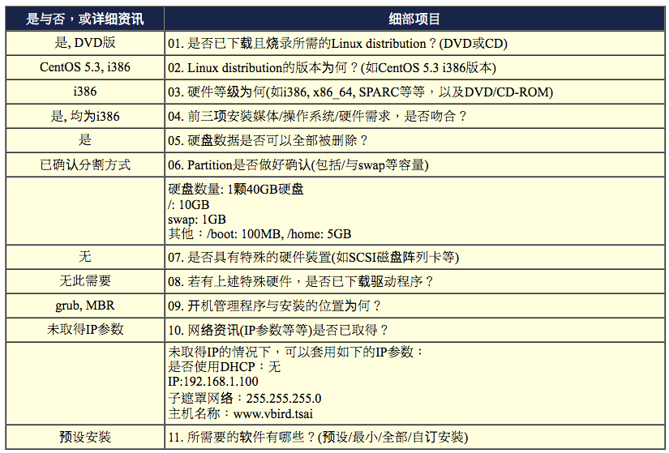
- 表单中第11点颇有趣，如果你是第一次安装Linux，那么建议你使用全部安装；如果是已经有安装过的话， 那可以使用预设安装；如果要挑战自己的功力，那就使用最小安装。如果想要自行挑选软件的话，那就使用自订安装吧
2. 开始安装CentOS 5
安装的步骤在各主要Linux distributions都差不多，主要的内容大概是：
- 调整开机媒体(BIOS)：务必要使用CD或DVD光盘开机，通常需要调整BIOS；
- 选择安装模式与开机：包括图形介面/文字介面等，也可加入特殊参数来开机进入安装画面；
- 选择语系数据：由於不同地区的键盘按键不同，此时需要调整语系/键盘/滑鼠等配备；
- 磁碟分割：最重要的项目之一了！记得将刚刚的规划单拿出来设定；
- 开机管理程序、网络、时区设定与root密码：一些需要的系统基础设定！
- 软件选择：需要什么样的软件？全部安装还是预设安装即可？
- 安装后的首次设定：安装完毕后还有一些事项要处理，包括使用者、SELinux与防火墙等！
2.1 调整开机媒体(BIOS)
2.2 选择安装模式与开机, 测试内存稳定度
图2.2.2、安装程序的安装模式选择画面，[F2]的画面
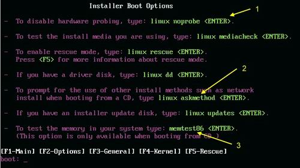
- linux noprobe (1号箭头)： 不进行硬件的侦测，如果你有特殊硬件时，或许可以使用这一项来停止硬件侦测；
- linux askmethod (2号箭头)： 进入互动模式，安装程序会进行一些询问。如果你的硬盘内含有安装媒体时， 或者是你的环境内有安装服务器(Installation server)，那就可以选这一项来填入正确的网络主机来安装；
- memtest86 (3号箭头)： 这个有趣了！这个项目会一直进行内存的读写，如果你怀疑你的内存稳定度不足的话， 可以使用这个项目来测试你的内存喔！测试完成后需要重新开机！
图2.2.3、安装程序的安装模式选择画面，[F5]的救援模式说明画面
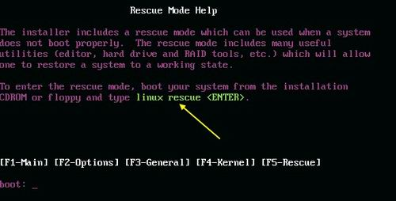
- 上图的意思是说，如果你的Linux系统因为设定错误导致无法开机时，可以使用『linux rescue』来进入救援模式。这个救援模式很有帮助喔！ 在我们后面各章节的练习中有很多练习是需要更动到系统设定档的，万一你设定错误将可能会导致无法开机。 此时请拿出此片DVD来进行救援模式，能够救回你的Linux而不需要重新安装
2.3 选择语系数据
接下来就是整个安装的程序了。
2.4 磁碟分割, 进阶软件阵列建置
磁碟分割是整个安装过程里面最重要的部分了。CentOS预设给了我们四种分割模式:
- 移除所选磁碟上的所有分割区，并建立预设分割模式： 如果选择这种模式，你硬盘会整个被Linux拿去使用，并且硬盘里面的分割全部被删除后， 以安装程序的预设方式重新建立分割槽，使用上要特别注意！
- 移除所选磁碟上的 Linux 分割区，并建立预设的分割模式： 在这个硬盘内，只有Linux的分割槽会被删除，然后再以安装程序的预设方式重新建立分割槽。
- 使用所选取磁碟上的未使用空间，建立预设的分割模式： 如果你的这颗硬盘内还有未被分割的磁柱空间(注意，是未被分割，而不是该分割槽内没有数据的意思！)， 那么使用这个项目后，他不会更动原有的分割槽，只会就剩余的未分割区块进行预设分割的建置。
- 建立自订的分割模式： 就是我们要使用的啦！不要使用安装程序的预设分割方式，使用我们需要的分割方式来处理。
因为我们已经规划好要建立四个分割槽，分别是/, /boot, /home与swap四个，所以不想要使用安装程序预设的分割方式。 因此如下所示，我们所使用的是自订分割的模式。
图2.4.2、磁碟分割操作主画面
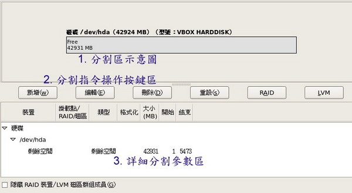
- 指令区，总共有六大区块，其中RAID与LVM是硬盘特殊的应用，这部份我们会在后续的第十五章的进阶档案系统当中再来说明
建立根目录的分割槽
如果你想要知道Linux还支援什么档案系统类型:
- ext2/ext3：是Linux适用的档案系统类型。由於ext3档案系统多了日志的记录， 对於系统的复原比较快速，因此建议你务必要选择新的ext3不要用ext2了。 (日志式档案系统我们会在后续的第八章介绍他的意义。)
- physical volume (LVM)：这是用来弹性调整档案系统容量的一种机制， 可以让你的档案系统容量变大或变小而不改变原有的档案数据内容！这部份我们会在第十五章、进阶档案系统管理中谈到！
- software RAID：利用Linux操作系统的特性，用软件模拟出磁盘阵列的功能！ 这东西很棒！不过目前我们还用不到！在后续的第十五章再跟大家报告了！
- swap：就是内存置换空间！由於swap并不会使用到目录树的挂载， 所以用swap就不需要指定挂载点喔！
- vfat：同时被Linux与Windows所支援的档案系统类型。 如果你的主机硬盘内同时存在Windows与Linux操作系统，为了数据的交换，确实可以建置一个vfat的档案系统喔！
建立/boot目录的分割槽
由於第三章的大硬盘配合旧主机当中我们谈到如果有/boot独立分割槽时， 务必让该分割槽在整颗硬盘的最前面部分。因此，我们针对/boot就选择『强制成为主要分割』
图2.4.7、新增/boot分割槽的最终结果
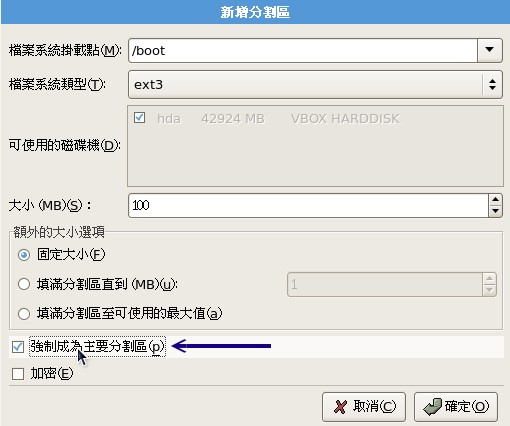
仔细看输出的结果喔！安装程序还挺聪明的， 他会主动的将/boot这个特殊目录移到磁碟最前面，所以你会看到/boot所在的磁碟分割槽为/dev/hda1，而起始磁柱则为1号
图2.4.8、/boot分割槽自动调整磁柱号码示意图
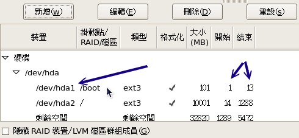
建立内存置换空间swap的分割槽
因为swap是内存置换空间，因此不需要有挂载点。所以，请如同下图所示，在『档案系统类型』处挑选为『swap』
挑选了swap之后，你就会发现到『挂载点』部分自动变成『不适用』了！因为不需要挂载
swap应该要选多大呢？ 虽然我们已经自订为1GB这么大的置换空间，不过，在传统的Linux说明文件当中特别有指定到 『swap最好为实体内存的1.5到2倍之间』。swap置换空间是很重要的， 因为他可以避免因为实体内存不足而造成的系统效能低落的问题。但是如果你的实体内存有4GB以上时， 老实说，swap也可以不必额外设定
Tip: swap内存置换空间的功能是：当有数据被存放在实体内存里面，但是这些数据又不是常被CPU所取用时， 那么这些不常被使用的程序将会被丢到硬盘的swap置换空间当中， 而将速度较快的实体内存空间释放出来给真正需要的程序使用！ 所以，如果你的系统不很忙，而内存又很大，自然不需要swap罗。
某些安装程序在你没有指定swap为内存的1.5~2倍时会有警告讯息的告知，此时只要将警告讯息忽略，按下一步即可。 好了，如果一切都顺利完成的话，那么你就会看到如下的分割结果
图2.4.11、详细的分割参数结果
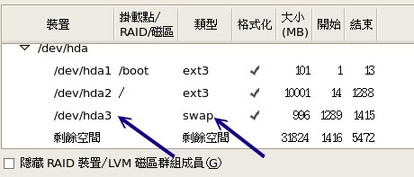
建立/home目录的分割槽
如下图所示。你会发现到系统自动的将/dev/hda4变成延伸分割喔！然后将所有容量都给/dev/hda4， 并且将swap分配到/dev/hda5去了！这就是分割的用途！这也是为什么我们要在第三章花这么多时间来解释分割的原因
图2.4.13、详细的分割参数结果
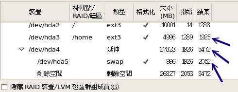
删除已存在分割的方法：(Option, 看看就好别实作)
如果你想要将某个分割槽删除，或者是你刚刚错误指定了一个分割槽的相关参数，想要重新处理
建立软件磁盘阵列的方法：(Option, 看看就好别实作)
磁盘阵列在后面第十五章、进阶档案系统管理才会讲到，这里只是先告诉您， 其实磁盘阵列可以在安装时就建置
首先，同样的，在分割操作按键区按下『新增』，然后出现下图，选择『Software RAID』项目，并填入1000MB的大小，按下确定
上述的动作『请要连续作两次』之后，就会出现如下图示。注意喔，由於我们尚未讲到RAID的等级(level)， 所以你应该还不了解为什么要作两次。没关系，先有个底，读完整份数据后再回来查阅时，你就会知道如何处理了。 两个软件RAID的分割资讯如下图所示：
图2.4.16、在已具有软件磁盘阵列分割槽的状态下建置RAID
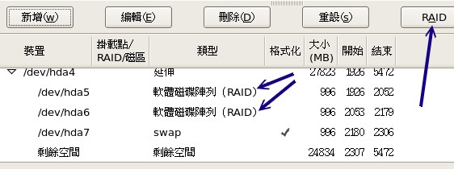
我们已经具有件RAID的分割槽，此时才能按下『RAID』来建立软件磁盘阵列的装置。 如上图所示，看到了两个软件磁盘阵列，然后按下右上方的RAID按钮，就会出现如下图示：
图2.4.17、建立软件磁盘阵列/dev/md0
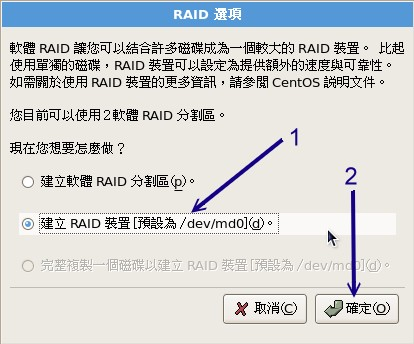
与一般装置档名不同的，第一个软件磁盘阵列的装置名称为/dev/md0。 如上图所示，你会发现到系统多出了一个怪怪的装置名称，这个档名就是未来给我们格式化用的装置啦！ 而这个软件磁盘阵列的装置其实是利用实体的分割槽来建立的哩。按下上图的『确定』后就会出现如下的图示：
图2.4.18、软件磁盘阵列的挂载点、等级与档案系统格式
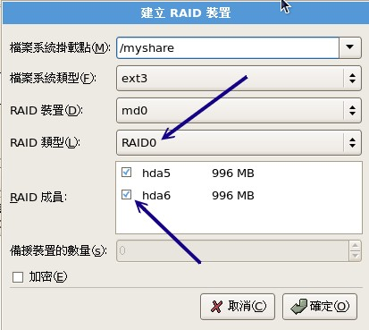
由於我们仅建立两个软件磁盘阵列分割槽，因此在这边只能选择RAID0或RAID1。我们以RAID0来作为示范， 你会发现中间白色框框的地方会有两个可以选择的分割槽，那就是刚刚我们建立起来的software RAID分割槽。 我们将这个/dev/md0挂载到/myshare目录去！然后再按下确定
图2.4.19、最终细部分割参数示意图
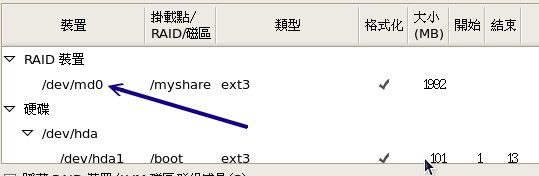
2.5 开机管理程序、网络、时区设定与root密码
开机管理程序的处理
目前较新的Linux distributions大多使用grub管理程序， 而且我们也必须要将他安装到MBR里面才行！因此如下图所示，在1号箭头的地方就得要选择整部磁碟的档名 (/dev/hda)， 其实那就代表该颗硬盘的MBR之意。
entOS』的可选择标签。 这个标签代表他根目录所在的位置为/dev/hda2这样的意思。而如果开机内5秒钟不按下任何按键，就预设会以此一标签来开机。
如果你还想要加入/编辑各个标签，那可以按下3号箭头所指的那三个按键喔！
图2.5.1、开机管理程序的处理
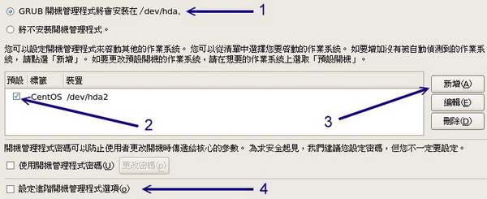
如果你的计算机系统当中还有其他的『已安装操作系统』时，而且你想要让Linux在开机的时候就能够让你选择不同的操作系统开机， 那么就如同下图所示，你可以先按下『新增』，然后在2号箭头的地方选择其他操作系统所在的分割槽， 并在3号箭头处填入适当的名称(例如WindowsXP等等)，按下确定就能够在开机时新增一个选单:
图2.5.3、新增开机选单标签的示意图
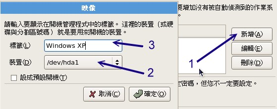
如果你是个很龟毛的人，你希望你的系统除非你自己在计算机前面开机并输入密码后才能开始开机流程的话， 那么可以如同下图所示加入密码管理机制。不过grub开机管理程序加入密码虽然有好处， 但是如此一来我们就无法在远端重新开机了，因此鸟哥暂时不建议你设定开机管理程序的密码喔！ 底下只是一个示意图，让你知道如何加入密码管理
图2.5.4、设定开机管理程序的密码
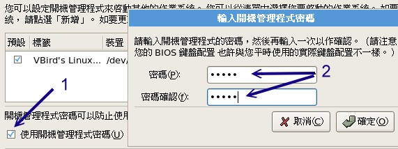
将开机管理程序安装到boot sector(Option, 看看就好，不要实作)
如果你因为特殊需求，所以Linux的开机管理程序无法安装到MBR时，那就得要安装到每块partition的开机磁区(boot sector)了。果真如此的话，那么如同下图所示，先勾选『设定进阶开机管理程序选项』的地方：
图2.5.5、进阶开机管理程序选项
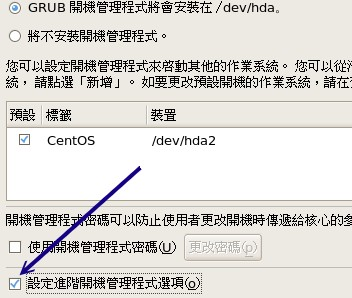
然后就会出现如下的图示，预设Linux会将开机管理程序安装到MBR，如果你想要安装到不同的地方去， 请如同下图的箭头处，选择『开机分割区的第一个磁区』就是该分割槽的boot sector
图2.5.6、将开机管理程序安装到boot sector的方法
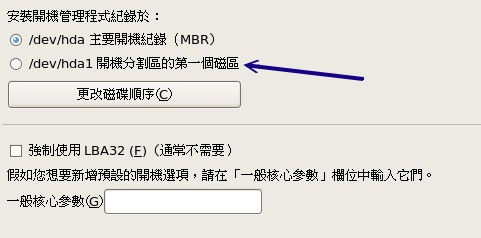
网络参数的给予
如果你的网络卡可以被安装程序捉到的话，那么你就可以设定网络参数了！例如下图所示的模样。 目前各大版本几乎都会预设网络卡IP的取得方式为『自动取得IP』，也就是所谓的『DHCP』网络协定啦！ 不过，由於这个协定需要有DHCP服务器的辅助才行，如果你的环境没有种服务器存在的话， 那开机的过程中可能会等待一段时间。所以通常鸟哥都改成手动设定。
图2.5.7、设定网络参数的过程
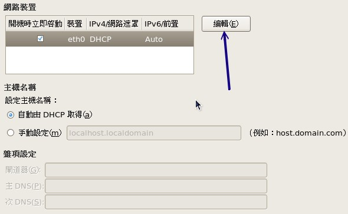
由於我们要将IP改为手动给予， 但我们尚未谈到服务器与网络基础，所以这里你不懂也没有关系，请先按照先前我们所规划的IP参数去填写即可。 请按下上图的『编辑』按钮，就会出现如下的画面
图2.5.8、手动编辑网络IP参数
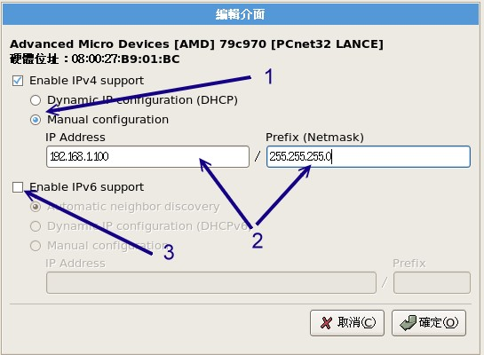
在上图中的最上方我们可以看到这张网络卡的制造商(AMD)与网卡卡号(Hardware address:)， 并且我们的Linux也支援IPv4与IPv6(第四版与第六版的IP参数)。因为目前(2009)支援IPv6的环境还是很少， 所以我们先将IPv6的支援取消(3号箭头处)。
至於IPv4的IP参数给予，如上图所示，你得先在1号箭头处点选手动设定(Manual configuration)， 然后在2号箭头处输入正确的IP与子遮罩网络(Netmask)，最后再按下确定即可。
图2.5.9、设定网络参数的过程
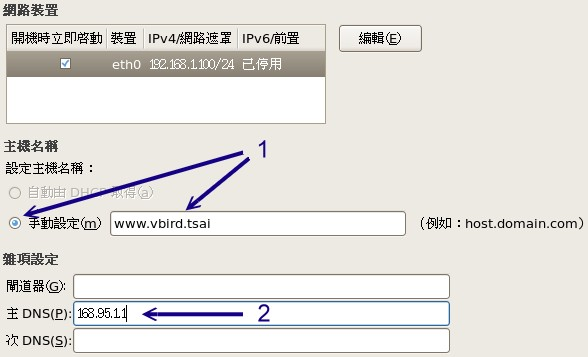
完成IP参数的设定后，接下来是这部练习机的主机名称，请输入你喜欢的主机名称。 因为目前我们的主机尚未能与网际网络接轨，所以你可以随便填写任何你喜欢的主机名称。 主机名称通常的格式都是『主机名.网域名』，其实就有点像是『名字.姓氏』的样子。 为了不与网际网络的其他主机冲突，因此这里鸟哥使用我自己的名字作为主机名！ 填写完毕后请按下『下一步』
因为我们的主机还不能够连上Internet， 所以出现这个错误讯息是正常的。请按下『继续』来往后处理吧
时区的选择
时区是很重要的！因为不同的时区会有不一样的日期/时间显示嘛！可能造成档案时间的不一致
要特别注意的是那个『UTC』，由於广泛使用的 GMT 时间与现实的时间有点脱节了， 因此我们可以透过 UTC 这个原子钟时间的计算方式，取得较为正确的时间
设定root的密码
再来则是最重要的『系统管理员的密码』设定啦！ 在Linux底下系统管理员的预设帐号名称为root，请注意，这个密码很重要！虽然我们是练习用的主机， 不过，还是请你养成良好的习惯，最好root的密码可以设定的严格一点。可以设定至少8个字元以上， 而且含有特殊符号更好，例如：I&mydog
2.6 软件选择
关於软件的安装有非常多的想法，如果你是初次接触Linux的话，当然是全部安装最好。 如果是已经安装过多次Linux了，那么使用预设安装即可，以后有需要其他的软件时，再透过网络安装就好了！ 这样你的系统也会比较干净
额外的软件自订模式(Option, 进阶使用者可以参考)
在Linux的软件安装中，由於每个各别软件的功能非常庞大，很多软件的开发工具其实一般用户都用不到。 如果每个软件都仅释出一个档案给我们安装，那么我们势必会安装到很多不需要的档案。 所以，Linux开发商就将一项软件分成多个档案来给使用者选择。如果你想要了解每项软件背后的档案数据， 就可以如同下图所示，选择『立即自订』来设定专属的软件功能。
自订软件的画面如下所示，1号箭头处为软件群组，是开发商将某些相似功能的软件绑在一起成为一个群组。 你可以在1号箭头处选择你有兴趣的功能，然后在2号箭头处挑选该项目内的细项。如下图所示， 鸟哥挑选了『程序开发』的群组后，在2号箭头处挑选了鸟哥有兴趣的『开发工具』等， 而这些工具的意义在3号箭头处所指的白色框框中就会有详细的说明
图2.6.3、自己选择所需软件的画面
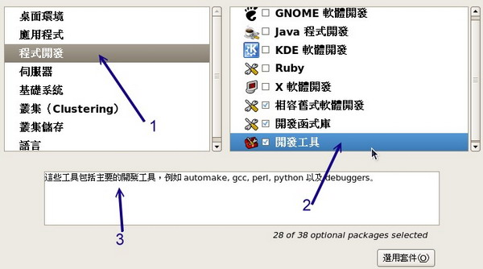
你的安装过程写入到/root/install.log档案中，并且你刚刚选择的所有项目则写入到/root/anaconda-ks.cfg档案内。 这两个档案很有趣，安装完毕后你可以自己先看看。
安装完毕并按下『Reboot』重新开机后，萤幕会出现如下的讯息，这是正确的资讯，不要担心出问题啊！ 此时请拿出你的DVD光盘，让系统自动重新开机。其他的后续设定，请参考下一小节
2.7 其他功能：RAM testing, 安装笔记本电脑的核心参数(Option)
内存压力测试：memtest86
CentOS的DVD除了提供一般PC来安装Linux之外，还提供了不少有趣的东西，其中一个就是进行『烧机』的任务 – 当你组装了一部新的个人计算机，想要测试这部主机是否稳定时， 就在这部主机上面运作一些比较耗系统资源的程序，让系统在高负载的情况下去运作一阵子(可能是一天)， 去测试稳定度的一种情况，就称为『烧机』
如何进行呢？同样的，放入CentOS的DVD到你的光盘中，然后用这片DVD重新开机，在进入到开机选单时， 输入memtest86即可
之后系统就会进入这支内存测试的程序中，开始一直不断的对内存写入与读出！ 如果烧机个一两天，这支程序还是不断的跑而没有因为任何原因来当机，表示你的内存应该还算稳定啦！ 如下所示。如果不想跑这支程序了，就按下箭头所指的『ESC』处，亦即按下[Esc]按键，就能够重新开机
对memtest86有兴趣的朋友，可以参考如下的连结喔：
安装笔记本电脑或其他类PC计算机的参数
由於笔记本电脑加入了非常多的省电机制或者是其他硬件的管理机制，包括显示卡常常是整合型的， 因此在笔记本电脑上面的硬件常常与一般桌上型计算机不怎么相同。
只要在安装的时候，告诉安装程序的linux核心不要载入一些特殊功能即可。 最常使用的方法就是，在使用DVD开机时，加入底下这些选项：
boot: linux nofb apm=off acpi=off pci=noacpi
apm(Advanced Power Management)是早期的电源管理模组，acpi(Advanced Configuration and Power Interface)则是近期的电源管理模组。这两者都是硬件本身就有支援的，但是笔记本电脑可能不是使用这些机制， 因此，当安装时启动这些机制将会造成一些错误，导致无法顺利安装。
nofb则是取消显示卡上面的缓冲内存侦测。因为笔记本电脑的显示卡常常是整合型的， Linux安装程序本身可能就不是很能够侦测到该显示卡模组。此时加入nofb将可能使得你的安装过程顺利一些。
对於这些在开机的时候所加入的参数，我们称为『核心参数』，这些核心参数是有意义的！ 如果你对这些核心参数有兴趣的话，可以参考文后的参考资料来查询更多资讯(更多的核心参数可以参考如下连结： http://www.faqs.org/docs/Linux-HOWTO/BootPrompt-HOWTO.html 对於安装过程所加入的参数有兴趣的，则可以参考底下这篇连结，里面有详细说明硬件原因： http://polishlinux.org/choose/laptop/)。
3. 安装后的首次设定
安装完毕并且重新开机后，系统就会开始以Linux开机罗！但事实上我们的安装尚未完成喔！ 因为还没有进行诸如防火墙、SELinux、惯用登入帐号的设定等等。在X Window里面还有重要的音效装置也还没有设定哩！ 所以，底下我们就来处理首次进入X Window的设定
重新开机后，一开始萤幕会出现如下的讯息，这个讯息是说，你如果没有在数秒钟之内按下任意按键， 那么系统就会以CentOS (2.6.18-128.el5)那个开机选项进入开机的流程
那如果你真的按下了任意按键，萤幕就会出现如下的讯息，该讯息是由grub开机管理程序所控管的， 目前鸟哥的系统里面也只有一个选项，那就是刚刚你在读秒画面中看到的那个项目。 如果你还有想要加入什么特殊的参数在开机的过程当中，可以使用下图中箭头所指的地方，利用几个简单的项目来处理喔！ 这部份我们会在第二十章、开机管理程序中谈到的！如果你有设定多重开机， 那么在下图的画面中就会看到多个选单
图3.2、grub管理程序的选单画面
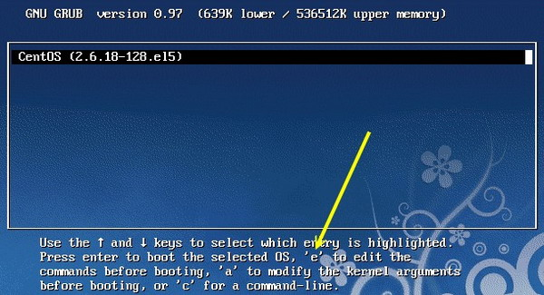
一切都没有问题就按下[Enter]吧！此时grub就会去读取核心档案来进行硬件侦测，并载入适当的硬件驱动程序后， 就开始进行CentOS各项服务的启动了。下图中箭头有指到/vmlinuz-2.6.18-128.el5就是我们的Linux核心档案
接下来系统会开始出现图形介面，如下图所示。如果你想要知道系统目前实际在进行什么服务的启动时， 可以按下箭头所指的『详细数据』。
接下来让我们开始来设定X Window的相关功能
防火墙与SELinux
因为我们目前是Linux练习机而已，因此，建议你将防火墙的功能先取消，反正我们也还没有连上Intenet嘛！ 所以请在下图的箭头处将他点选成为『停用』的状态
接下来如下图所示出现一个『SELinux』的东西，这个SELinux可就重要了！ 他是Security Enhanced Linux的缩写，这个软件是由美国国家安全局(National Security Agency, NSA,注3)所开发的，这东西并不是防火墙喔！SELinux是一个Linux系统存取控制(Access control)的细部设定， 重点在於控制程序对於系统档案的存取权限限制。由於CentOS 5.x以后的Linux版本对於SELinux的设定已经非常的妥当了， 因此建议您务必要打开这个功能！这部份我们会在第十七章继续说明
图3.9、启动SELinux的示意图
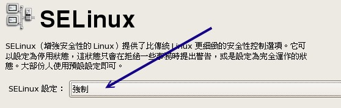
Kdump与时区的校正
完成了防火墙与SELinux的选择后，接下来会出现如下的Kdump视窗。什么是Kdump呢？这个Kdump就是，当核心出现错误的时候， 是否要将当时的内存内的讯息写到档案中，而这个档案就能够给核心开发者研究为啥会当机之用。 我们并不是核心开发者，而且内存内的数据实在太大了，因此常常进行Kdump会造成硬盘空间的浪费。 所以，这里建议不要启动Kdump的功能
再来就是时间的确认啦！先看一下系统的日期与你的手表一致否？若不一致请自行调整
此时我们可以使用网络来进行时间的校正喔！如下图所示，先按下1号箭头所指处，然后勾选2号箭头指的『启用网络时间通讯协定』， 接下来按下3号箭头处所指的『新增』来增加时间服务器
图3.12、网络校时设定
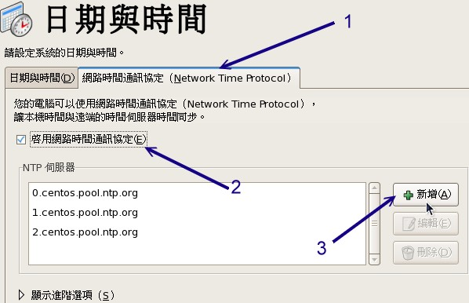
按下『新增』后就会出现如下画面，由於系统预设给予的三部网络上面可以提供人家进行时间校正的主机都不在台湾， 为了快速的校正时间，建议你可以将下图中前三个主机都删除，只保留后来我们自己加上的台湾的时间服务器， 就是：tock.stdtime.gov.tw这一部即可
由於我们的Linux练习机还没有连上Internet，所以当你加上上图所指向的那部主机时，就会出现如下图的错误啦！ 没关系，不要理他！那是正常的！请按下『是』来继续吧
建立一般使用者
一般来说，我们在操作Linux系统时，除非必要，否则不要使用root的权限，这是因为管理员(root)的权限太大了 -> 建立一个一般身份使用者来操作才是好习惯。 举例来说，鸟哥都会建立一个一般身份使用者的帐号(例如底下的vbird)，用这个帐号来操作Linux， 而当我的主机需要额外的root权限来管理时，才使用身份转换指令来切换身份成为root来管理维护
音效卡与其他软件的安装
最后，如果你还有自己的第三方软件需要安装，才放入光盘继续安装。
4. 多重开机安装流程与技巧
多重开机系统是有很多风险存在的，而且你也不能随时变动这个多重操作系统的开机磁区
4.1 新主机仅有一颗硬盘
假设以目前主流的160GB硬盘作为规划好了，而你想要有WindowsXP, WindowsXP的数据碟, Linux, Swap及一个共用分割槽， 那我们首先来规划一下硬盘分割
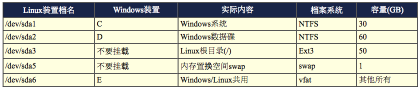
接下来就是系统的安装了！安装一定要先装WindowsXP再装Linux才好！顺序搞错了会很麻烦
- 先装Windows XP: 在这个阶段依旧使用Windows XP光盘开机来安装，安装到了分割时，记得依照上述表格的规划制作出两个主要分割槽 (primary partition)， 并且将档案系统格式化为NTFS，然后再将Windows XP装到C槽当中。理论上，此时仅有/dev/sda1, /dev/sda2
- 安装CentOS 5.x: 再来则是安装Linux罗，安装时要注意的地方也是在分割的地方，请回到前一小节的磁碟分割部分来进行分割设定。另外一个要注意的地方则是在开机管理程序的地方， 同样回到前一小节看一下开机管理程序是如何指定开机选单的！ 尤其是『预设开机』项目，是预设要Windows还是Linux开机呢？这需要你的选择喔！而且grub务必要安装到MBR上头
- 后续维护的注意事项: 多重开机设定完毕后请特别注意，
- Windows的环境中最好将Linux的根目录与swap取消挂载，否则未来你打开档案总管时， 该软件会要求你『格式化！』如果一个不留神，你的Linux系统就毁了。
- 你的Linux不可以随便的删除！ 因为grub会去读取Linux根目录下的/boot/目录内容，如果你将Linux移除了，你的Windows也就无法开机了！ 因为整个开机选单都会不见!
4.2 旧主机有两颗以上硬盘
如果你的主机上面已经有Windows了，为了担心与Linux冲突，所以你想要加装一颗新的硬盘来安装Linux，这样好吗？ 也是不错的想法啦！不过你得要注意的是，整部个人计算机仅会有一个MBR而已！虽然你有两颗硬盘。
为什么有两颗硬盘却只有一个MBR呢？因为你得在BIOS里面调整开机的装置，只有第一个可开机装置内的MBR会被系统主动读取。 所以罗，理论上，你不会将Windows的开机管理程序安装到/dev/sda而将Linux安装到/dev/sdb上头， 而是得要将grub安装到/dev/sda上，透过他来管理Windows/Linux才行，即使你的Linux是放到/dev/sdb这颗硬盘上面
比较聪明的朋友会想到『我可以调整BIOS内的开机装置，使得要进入不同的操作系统时，就用不同的开机装置来开机， 如此一来应该就能够避免将grub安装到/dev/sda了吧？』这个想法本身是OK的，只不过， 因为SATA的装置档名是利用侦测的顺序来决定的，所以你如果这样调整来调整去的话， 你的SATA装置档名可能会产生不同，这对於linux的运作会有问题，因此如果这样随时调整BIOS时， 可能还是会造成无法开机成功的问题！
建议BIOS内的开机顺序不要改变，然后以grub来控制全部的开机选单较佳！ 不过，如果你觉得grub不是这么好用，那怎办？可以使用 spfdisk 开机管理程序来管理。-> 安装 linux 时，必须将 grub 安装到 boot sector， 然后重新开机进入 windows，用 sfdisk 来设定正确的开机选单。
参考：
4.3 旧主机只有一颗硬盘
如果你想要在你的Windows主机上面多加一个Linux操作系统呢？那就得要注意啦！ 因为Windows/Linux不能共存在同一个partition上！而Linux的根目录最好使用Ext3这种Linux支援的档案系统。 所以，你就得要清出来一个空的分割槽给Linux使用才行喔。
举例来说，如果你的系统只有C槽，那能不能安装Linux呢？很抱歉！没办法！如果你的系统有C与D槽， 但是你又想要保留一个数据槽给Windows使用，那你就得要这样做：
- 先将D槽的数据搬移出来，不论是搬到随身碟还是C槽中暂存；
- 在Windows的逻辑分割管理员中，将D槽删除并重建成两个分割槽，一个是D一个是E；
- 将D槽格式化为NTFS(或FAT32)，然后将刚刚的备份数据搬回D槽去；
- E槽不要挂载，这是Linux预计要安装的系统槽。
Warning: 很容易将自己好几年辛苦工作的数据一不小心的全部删除!
5. 关於大硬盘导致无法开机的问题
无法顺利开机，只要重新开机就会出现类似底下的画面：
# 前面是一些奇怪的提示字元啊！ grub> _
然后等待你输入一些数据～如果不幸你发生了这样的问题，那么可能的主要原因就是……
- 你的主板BIOS太旧，导致捉不到您的新硬盘；
- 你的硬盘容量太大了(例如超过120 GB以上)，但是主板并不支援
如果真的是这样，那就麻烦了～你可能可以这样做：
- 前往您主板的官方网站，下载最新的BIOS档案，并且更新BIOS吧！
- 将你硬盘的cylinders, heads, sectors抄下来，进入BIOS内，将硬盘的型号以使用者设定的方式手动设定好
然还有一个最简单的解决方法，那就是：重新安装Linux，并且在磁碟分割的地方，建立一个100MB左右的分割槽， 将他挂载到/boot这个挂载点。并且要注意，/boot的那个挂载点，必须要在整个硬盘的最前面！ 例如，必须是/dev/hda1才行！
至於会产生这个问题的原因确实是与BIOS支援的硬盘容量有关，处理方法虽然比较麻烦，不过也只能这样做了。 更多与硬盘及开机有关的问题，鸟哥会在第二十章开机与关机程序再进一步说明
6. 重点回顾
- 不论你要安装什么样的Linux操作系统角色，都应该要事先规划例如分割、开机管理程序等；
- 建议练习机安装时的磁碟分割能有/, /boot, /home, swap四个分割槽；
- 调整开机装置的顺序必须要重新开机并进入BIOS系统调整；
- 安装CentOS 5.x的模式至少有两种，分别是图形介面与文字介面；
- 若安装笔记本电脑时失败，可尝试在开机时加入『linux nofb apm=off acpi=off』来关闭省电功能；
- 安装过程进入分割后，请以『自订的分割模式』来处理自己规划的分割方式；
- 在安装的过程中，可以建立软件磁盘阵列(software RAID)；
- 一般要求swap应该要是1.5~2倍的实体内存量；
- 即使没有swap依旧能够安装与运作Linux操作系统；
- CentOS 5.x的开机管理程序为grub，安装时最好选择安装置MBR中；
- 没有连上Internet时，可尝试关闭防火墙，但SELinux最好选择『强制』状态；
- 设定时不要选择启动kdump，因为那是给核心开发者查阅当机数据的；
- 可加入时间服务器来同步化时间，台湾可选择tock.stdtime.gov.tw这一部；
- 尽量使用一般用户来操作Linux，有必要再转身份成为root即可。
7. 本章习题
Linux的目录配置以『树状目录』来配置，至於磁碟分割槽(partition)则需要与树状目录相配合！ 请问，在预设的情况下，在安装的时候系统会要求你一定要分割出来的两个Partition为何？
就是根目录『/』与内存置换空间『Swap』
若在分割的时候，在 IDE1 的 slave 硬盘中，分割『六个有用』的分割槽 (具有 filesystem 的) ，此外，已知有两个 primary 的分割类型！请问六个分割槽的档名？
- /dev/hdb1(primary)
- /dev/hdb2(primary)
- /dev/hdb3(extended)
- /dev/hdb5(logical 底下皆为 logical)
- /dev/hdb6
- /dev/hdb7
- /dev/hdb8
请注意，5-8 这四个 logical 容量相加的总和为 /dev/hdb3！
一般而言，在RAM为64 MB或128 MB的系统中，swap要开多大？
Swap 可以简单的想成是虚拟内存，通常他的建议大小为 RAM 的两倍， 但是实际上还是得视您的主机规格配备与用途而定。约两倍的 RAM ，亦即为 128 MB 或 256 MB ，可获得较佳效能！
软件磁盘阵列的装置档名为何？
RAID : /dev/md[0-15];
如果我的磁碟分割时，设定了四个 Primary 分割槽，但是磁碟还有空间，请问我还能不能使用这些空间？
不行！因为最多只有四个 Primary 的磁碟分割槽，没有多的可以进行分割了！且由於没有 Extended ，所以自然不能再使用 Logical 分割
硬盘的第零轨含有MBR及partition table，请问，partition 的最小单位为(磁柱、磁头、磁轨)
为 Cylinder (磁柱)，所以 partition 的大小为磁柱大小的倍数。
8. 参考资料与延伸阅读
- 注1：Virtualbox为一个虚拟机器的软件，可以在一部机器上面同时运作多个操作系统。 鸟哥是在Windows XP上面安装Virtualbox本版来进行CentOS 5.x的捉图。其官网如下：
- http://www.virtualbox.org/
- 进阶内存测试网站：http://www.memtest.org/
- 注2：更多的核心参数可以参考如下连结：
- http://www.faqs.org/docs/Linux-HOWTO/BootPrompt-HOWTO.html
- 对於安装过程所加入的参数有兴趣的，则可以参考底下这篇连结，里面有详细说明硬件原因：
- http://polishlinux.org/choose/laptop/
- 注3：SELinux是由美国国家安全局开发出来的，SELinux是被整合到Linux核心当中， SELinux并非防火墙，他是一个存取权限控制的模组。 最早之前SELinux的开发是有鉴於系统常常会被一般使用者误用而造成系统数据的安全性问题， 因此加上这个模组来防止系统被终端用户不小心滥用系统资源喔！详细的说明可以参考底下的连结：
- http://www.nsa.gov/selinux/
- SPFdisk: http://spfdisk.sourceforge.net/
第五章、首次登陆与在线求助 man page
终于可以开始使用Linux这个有趣的系统了！由于Linux系统使用了异步的磁盘/内存数据传输模式，同时又是个多人多任务的环境， 所以你不能随便的不正常关机，关机有一定的程序喔！错误的关机方法可能会造成磁盘数据的损毁呢！ 此外，Linux有多种不同的操作方式，图形接口与文字接口的操作有何不同？ 我们能否在文字接口取得大量的命令说明，而不需要硬背某些命令的选项与参数等等。这都是这一章要来介绍
1. 首次登陆系统
为了让大家更了解如何正确的使用Linux， 正确的登陆与离开系统还是需要说明的
1.1 首次登陆CentOS 5.x图形接口
在Linux系统中由于是多人多任务的环境，所以系统随时都有很多任务在进行，因此正确的开关机可是很重要的！ 不正常的关机可能会导致文件系统错乱，造成数据的毁损呢！这也是为什么通常我们的Linux主机都会加挂一个不断电系统
经过第四章的安装过程后，理论上现在会有两个可用的账号，以鸟哥的安装为例， 我有root及vbird两个可用的账号喔！那第四章我们也说过，最好不要使用root
1.2 GNOME的操作与注销
1.3 KDE的操作与注销
重新启动X Window的快速按钮
一般来说，我们是可以手动来直接修改X Window的配置文件的，不过，修改完成之后的配置项目并不会立刻被加载， 必须要重新启动X才行(特别注意，不是重新启动，而是重新启动X！) 。那么如何重新启动X呢？ 最简单的方法就是：
- 直接注销，然后再重新登陆即可；
- 在X的画面中直接按下[Alt] + [Ctrl] + [Backspace]
第二个方法比较有趣，[backspace]是退格键，你按下三个按钮后X Window立刻会被重新启动。 如果你的X Window因为不明原因导致有点问题时，也可以利用这个方法来重新启动X
1.4 X Window与文本模式的切换
怎么切换X Window与文本模式呢？注意喔，通常我们也称文本模式为终端机接口, terminal 或 console喔！Linux默认的情况下会提供六个Terminal来让使用者登陆， 切换的方式为使用：[Ctrl] + [Alt] + [F1]~[F6]的组合按钮。
那这六个终端接口如何命名呢，系统会将[F1] ~ [F6]命名为tty1 ~ tty6的操作接口环境。 也就是说，当你按下[crtl] + [Alt] + [F1]这三个组合按钮时 (按着[ctrl]与[Alt]不放，再按下[F1]功能键)， 就会进入到tty1的terminal界面中了
- [Ctrl] + [Alt] + [F1] ~ [F6] ：文字接口登陆 tty1 ~ tty6 终端机；
- [Ctrl] + [Alt] + [F7] ：图形接口壁纸。
在Linux默认的登陆模式中，主要分为两种，一种是仅有纯文本接口(所谓的运行等级run level 3)的登陆环境，在这种环境中你可以有tty1~tty6的终端界面，但是并没有图形窗口接口的环境喔。 另一种则是图形接口的登陆环境(所谓的运行等级run level 5)，这也是我们第四章安装妥当后的默认环境！ 在这个环境中你就具有tty1~tty7了！其中的tty7就是启动完成后的默认等待登陆的图形环境
如果你是以纯文本环境启动Linux的，默认的tty7是没有东西的！万一如此的话，那要怎么启动X窗口画面呢？ 你可以在tty1~tty6的任意一个终端接口使用你的账号登陆后(登陆的方法下一小节会介绍)， 然后下达如下的命令即可：
startx
不过startx这个命令并非万灵丹，你要让startx生效至少需要底下这几件事情的配合：
- 你的tty7并没有其他的窗口软件正在运行(tty7必须是空出来的)；
- 你必须要已经安装了X Window system，并且X server是能够顺利启动的；
- 你最好要有窗口管理员，例如GNOME/KDE或者是阳春的TWM等；
- 启动X所必须要的服务，例如字型服务器(X Font Server, xfs)必须要先启动。
刚刚我们谈到的Linux启动时可以选择纯文本或者是窗口环境，也谈到了运行等级(run level)这东西！ Linux默认提供了七个Run level给我们使用，其中最常用到的就是run level 3与run level 5这两者了。 如果你想要让Linux在下次启动时使用纯文本环境(run level 3)来登陆， 只要修订一下/etc/inittab这个文件的内容，就能够在下次重新启动时生效了！ 因为我们尚未提到vi以及启动过程的详细信息， 所以啊，这部分得到系统管理员篇幅的时候再说明
1.5 在终端界面登陆linux
刚刚你如果有按下[Ctrl] + [Alt] + [F1]就可以来到tty1的登陆画面，而如果你是使用纯文本接口(其实是run level 3)启动Linux主机的话，那么默认就是会来到tty1这个环境中
- 我们在第四章安装时有填写主机名为： www.vbird.tsai，主机名的显示通常只取第一个小数点前的字母，所以就成为www
- login:则是一支可以让我们登陆的程序。 你可以在login:后面输入你的账号
- 至于提示字符方面，在Linux当中，默认root的提示字符为 # ，而一般身份用户的提示字符为 $
- 终端登录界面显示的第一、第二行的内容其实是来自于/etc/issue这个文件
Tip: ~ 符号代表的是『用户的家目录』的意思，他是个『变量！』 这相关的意义我们会在后续的章节依序介绍到。
如何离开系统呢？其实应该说『注销Linux』
exit
请注意：『离开系统并不是关机！』 基本上，Linux本身已经有相当多的工作在进行，你的登陆也仅是其中的一个『工作』而已， 所以当你离开时，这次这个登陆的工作就停止了，但此时Linux其他的工作是还是继续在进行的！ 本章后面我们再来提如何正确的关机
2. 文本模式下命令的下达
其实我们都是透过『程序』在跟系统作沟通的，本章上面提到的窗口管理员或文本模式都是一组或一只程序在负责我们所想要完成的命令。 文本模式登陆后所取得的程序被称为壳(Shell)，这是因为这支程序负责最外面跟使用者(我们)沟通，所以才被戏称为壳程序！ 更多与操作系统及壳程序的相关性可以参考第零章、计算器概论内的说明。
2.1 开始下达命令, 语系的支持
[vbird@www ~]$ command [-options] parameter1 parameter2 ...
命令 选项 参数(1) 参数(2)
说明：
- 一行命令中第一个输入的部分绝对是『命令(command)』或『可运行文件案』
- command 为命令的名称，例如变换路径的命令为 cd 等等；
- 中刮号[]并不存在于实际的命令中，而加入选项配置时，通常选项前会带 - 号， 例如 -h；有时候会使用选项的完整全名，则选项前带有 – 符号，例如 –help；
- parameter1 parameter2.. 为依附在选项后面的参数，或者是 command 的参数；
- 命令, 选项, 参数等这几个咚咚中间以空格来区分，不论空几格 shell 都视为一格；
- 按下[Enter]按键后，该命令就立即运行。[Enter]按键代表着一行命令的开始启动。
- 命令太长的时候，可以使用反斜杠 (\) 来跳脱[Enter]符号，使命令连续到下一行。 注意！反斜杠后就立刻接特殊字符，才能跳脱！
其他： a. 在 Linux 系统中，英文大小写字母是不一样的。举例来说， cd 与 CD 并不同。 b. 更多的介绍等到第十一章 bash 时，再来详述。
语系的支持
终端机接口(terminal)在默认的情况下， 无法支持以中文编码输出数据的。这个时候，我们就得将支持语系改为英文，才能够以英文显示出正确的信息。 那怎么做呢？
1. 显示目前所支持的语系 [vbird@www ~]$ echo $LANG zh_TW.UTF-8 # 上面的意思是说，目前的语系(LANG)为zh_TW.UTF-8，亦即台湾繁体中文的万国码 2. 修改语系成为英文语系 [vbird@www ~]$ LANG=en_US # 注意到上面的命令中没有空格符，且英文语系为en_US才对喔！ [vbird@www ~]$ echo $LANG en_US # 再次确认一下，结果出现，确实是en_US这个英文语系！
这样一来，就能够在『这次的登陆』察看英文信息啰！为什么说是『这次的登陆』呢？ 因为，如果你注销Linux后，刚刚下达的命令就没有用啦
2.2 基础命令的操作, date, cal, bc
1. 显示日期的命令： date
使用date的格式化输出功能
[vbird@www ~]$ date +%Y/%m/%d 2009/08/17 [vbird@www ~]$ date +%H:%M 17:04
从上面的例子当中我们也可以知道，命令之后的选项除了前面带有减号『-』之外，某些特殊情况下， 选项或参数前面也会带有正号『+』的情况
2. 显示日历的命令： cal
cal这个命令可以接的语法为：
[vbird@www ~]$ cal [month] [year]
某些命令有特殊的参数存在， 若输入错误的参数，则该命令会有错误信息的提示，透过这个提示我们可以藉以了解命令下达错误之处
3. 简单好用的计算器： bc
如果在文本模式当中，突然想要作一些简单的加减乘除，偏偏手边又没有计算器！这个时候要笔算吗？ 不需要啦！我们的Linux有提供一支计算程序，那就是bc喔。你在命令列输入bc后，屏幕会显示出版本信息， 之后就进入到等待指示的阶段
几个使用的运算符
- + 加法
- - 减法
- * 乘法
- / 除法
- ^ 指数
- % 余数
bc默认仅输出整数，如果要输出小数点下位数，那么就必须要运行 scale=number ，那个number就是小数点位数，例如：
[vbird@www ~]$ bc bc 1.06 Copyright 1991-1994, 1997, 1998, 2000 Free Software Foundation, Inc. This is free software with ABSOLUTELY NO WARRANTY. For details type `warranty'. scale=3 <==没错！就是这里！！ 1/3 .333 340/2349 .144 quit
要离开bc回到命令提示字符时，务必要输入『quit』来离开bc的软件环境
在命令列模式里面下达命令时，会有两种主要的情况：
- 一种是该命令会直接显示结果然后回到命令提示字符等待下一个命令的输入；
- 一种是进入到该命令的环境，直到结束该命令才回到命令提示字符的环境。
怎么知道你是否在命令提示字符的环境呢？ 很简单！你只要看到光标是在『[vbird@www ~]$』这种提示字符后面， 那就是等待输入命令的环境了。
2.3 重要的几个热键[Tab], [ctrl]-c, [ctrl]-d
[Tab]按键
在各种Unix-Like的Shell当中， 这个[Tab]按键算是Linux的Bash shell最棒的功能之一了！他具有『命令补全』与『文件补齐』的功能喔！ 重点是，可以避免我们打错命令或文件名
- [Tab] 接在一串命令的第一个字的后面，则为命令补全；
- [Tab] 接在一串命令的第二个字以后时，则为『文件补齐』！
善用 [tab] 按键真的是个很好的习惯！可以让你避免掉很多输入错误的机会！
[Ctrl]-c 按键
让当前的程序『停掉』
应该要注意的是，这个组合键是可以将正在运行中的命令中断的， 如果你正在运行比较重要的命令，可别急着使用这个组合按键
[Ctrl]-d 按键
通常代表着： 『键盘输入结束(End Of File, EOF 或 End Of Input)』. 另外，他也可以用来取代exit的输入, 例如你想要直接离开文字接口，可以直接按下[Ctrl]-d就能够直接离开了(相当于输入exit)
2.4 错误信息的查看
3. Linux系统的在线求助man page与info page
先来了解一下Linux有多少命令呢？在文本模式下，你可以直接按下两个[Tab]按键，看看总共有多少命令可以让你用
既然鸟哥说不需要背命令，那么我们如何知道每个命令的详细用法？还有，某些配置文件的内容到底是什么？ 这个可就不需要担心了！因为在Linux上开发的软件大多数都是自由软件，而这些软件的开发者为了让大家能够了解命令的用法， 都会自行制作很多的文件，而这些文件也可以直接在在线就能够轻易的被使用者查询出来
3.1 man page
进入man命令的功能后，你可以按下『空格键』往下翻页，可以按下『 q 』按键来离开man的环境。
仔细一点来看这个man page的话，你会发现几个有趣的东西。
在查询数据的后面的数字是有意义的，常见的几个数字的意义是这样的：
- 1: 使用者在shell环境中可以操作的命令或可运行文件
- 2: 系统核心可呼叫的函数与工具等
- 3: 一些常用的函数(function)与函式库(library)，大部分为C的函式库(libc)
- 4: 装置文件的说明，通常在/dev下的文件
- 5: 配置文件或者是某些文件的格式
- 6: 游戏(games)
- 7: 惯例与协议等，例如Linux文件系统、网络协议、ASCII code等等的说明
- 8: 系统管理员可用的管理命令
- 9: 跟kernel有关的文件
上述的表格内容可以使用『man 7 man』来更详细的取得说明。透过这张表格的说明， 未来你如果使用man page在察看某些数据时，就会知道该命令/文件所代表的基本意义是什么了。举例来说，如果你下达了『man null』时，会出现的第一行是：『NULL(4)』，对照一下上面的数字意义， 嘿嘿！原来null这个玩意儿竟然是一个『装置文件』
Tip: 上表中的1, 5, 8这三个号码特别重要，也请读者要将这三个数字所代表的意义背下来
基本上，man page大致分成底下这几个部分：
- NAME: 简短的命令、数据名称说明
- SYNOPSIS: 简短的命令下达语法(syntax)简介
- DESCRIPTION: 较为完整的说明，这部分最好仔细看看！
- OPTIONS: 针对 SYNOPSIS 部分中，有列举的所有可用的选项说明
- COMMANDS: 当这个程序(软件)在运行的时候，可以在此程序(软件)中下达的命令
- FILES: 这个程序或数据所使用或参考或连结到的某些文件
- SEE ALSO: 可以参考的，跟这个命令或数据有相关的其他说明！
- EXAMPLE: 一些可以参考的范例
- BUGS: 是否有相关的臭虫！
有时候除了这些外，还可能会看到Authors与Copyright等，不过也有很多时候仅有NAME与DESCRIPTION等部分。 通常鸟哥在查询某个数据时是这样来查阅的：
- 先察看NAME的项目，约略看一下这个数据的意思；
- 再详看一下DESCRIPTION，这个部分会提到很多相关的数据与使用时机，从这个地方可以学到很多小细节呢；
- 而如果这个命令其实很熟悉了(例如上面的date)，那么鸟哥主要就是查询关于OPTIONS的部分了！ 可以知道每个选项的意义，这样就可以下达比较细部的命令内容呢！
- 最后，鸟哥会再看一下，跟这个数据有关的还有哪些东西可以使用的？举例来说，上面的SEE ALSO就告知我们还可以利用『info coreutils date』来进一步查阅数据；
- 某些说明内容还会列举有关的文件(FILES 部分)来提供我们参考！这些都是很有帮助的！
man page常用的按键:
- 空格键: 向下翻一页
- [Page Down]: 向下翻一页
- [Page Up]: 向上翻一页
- [Home]: 去到第一页
- [End]: 去到最后一页
- /string: 向『下』搜寻 string 这个字符串，如果要搜寻 vbird 的话，就输入 /vbird
- ?string: 向『上』搜寻 string 这个字符串
- n, N: 利用 / 或 ? 来搜寻字符串时，可以用 n 来继续下一个搜寻 (不论是 / 或 ?) ，可以利用 N 来进行『反向』搜寻。举例来说，我以 /vbird 搜寻 vbird 字符串， 那么可以 n 继续往下查询，用 N 往上查询。若以 ?vbird 向上查询 vbird 字符串， 那我可以用 n 继续『向上』查询，用 N 反向查询。
- q: 结束这次的 man page
man page的数据 放在哪里呢？不同的distribution通常可能有点差异性，不过，通常是放在/usr/share/man这个目录里头，然而，我们可以透过修改他的man page搜寻路径来改善这个目录的问题！修改/etc/man.config (有的版本为man.conf或manpath.conf)即可
更多的关于man的信息你可以使用『 man man 』来查询
更详细的配置，我们会在第十一章 bash 当中继续的说明
搜寻特定命令/文件的man page说明文件
在某些情况下，你可能知道要使用某些特定的命令或者是修改某些特定的配置文件，但是偏偏忘记了该命令的完整名称。 有些时候则是你只记得该命令的部分关键词。这个时候你要如何查出来你所想要知道的man page呢？ 我们以底下的几个例子来说明man这个命令有用的地方
例题： 你可否查出来，系统中还有哪些跟『man』这个命令有关的说明文件呢？
$ man -f man man (1) - an interface to the on-line reference manuals man (7) - macros to format man pages
举例来说，上表当中的两个 man
[vbird@www ~]$ man 1 man <==这里是用 man(1) 的文件数据 [vbird@www ~]$ man 7 man <==这里是用 man(7) 的文件数据
万一我真的忘记了下达数字，只有输入『 man man 』时，那么取出的数据到底是1还是7啊？ 这个就跟搜寻的顺序有关了。搜寻的顺序是记录在/etc/man.conf这个配置文件当中， 先搜寻到的那个说明档，就会先被显示出来！ 一般来说，通常会先找到数字较小的那个啦！因为排序的关系啊！所以， man man 会跟 man 1 man 结果相同
除此之外，我们还可以利用『关键词』找到更多的说明文件数据喔！什么是关键词呢？ 从上面的『man -f man』输出的结果中，我们知道其实输出的数据是：
- 左边部分：命令(或文件)以及该命令所代表的意义(就是那个数字)；
- 右边部分：这个命令的简易说明，例如上述的『-macros to format man pages』
当使用『man -f 命令』时，man只会找数据中的左边那个命令(或文件)的完整名称，有一点不同都不行
如果我想要找的是『关键词』
[vbird@www ~]$ man -k man . [builtins] (1) - bash built-in commands, see bash(1) .TP 15 php [php] (1) - PHP Command Line Interface 'CLI' ....(中间省略).... zshall (1) - the Z shell meta-man page zshbuiltins (1) - zsh built-in commands zshzle (1) - zsh command line editor
这个是利用关键词将说明文件里面只要含有man那个字眼的(不见得是完整字符串) 就将他取出来
还有两个命令与man page有关呢！而这两个命令是man的简略写法:
[vbird@www ~]$ whatis [命令或者是数据] <==相当于 man -f [命令或者是数据] [vbird@www ~]$ apropos [命令或者是数据] <==相当于 man -k [命令或者是数据]
而要注意的是，这两个特殊命令要能使用，必须要有创建 whatis 数据库才行！这个数据库的创建需要以 root 的身份下达如下的命令：
makewhatis
[ME: this command doesn't exist in my linux box]
Tip: 一般来说，鸟哥是真的不会去背命令的，只会去记住几个常见的命令而已。那么鸟哥是怎么找到所需要的命令呢？ 举例来说，打印的相关命令，鸟哥其实仅记得 lp (line print)而已。那我就由 man lp 开始，去找相关的说明， 然后，再以 lp[tab][tab] 找到任何以 lp 为开头的命令，找到我认为可能有点相关的命令后， 再以 man 去查询命令的用法！呵呵！所以，如果是实际在管理 Linux ， 那么真的只要记得几个很重要的命令即可，其他需要的，嘿嘿！努力的找男人(man)吧！
3.2 info page
基本上，info与man的用途其实差不多，都是用来查询命令的用法或者是文件的格式。但是与man page一口气输出一堆信息不同的是，info page则是将文件数据拆成一个一个的段落，每个段落用自己的页面来撰写， 并且在各个页面中还有类似网页的『超链接』来跳到各不同的页面中，每个独立的页面也被称为一个节点(node)。 所以，你可以将info page想成是文本模式的网页显示数据
要查询的目标数据的说明文件必须要以info的格式来写成才能够使用info的特殊功能(例如超链接)。 而这个支持info命令的文件默认是放置在/usr/share/info/这个目录当中
[ME: info command not found. Solution: apt-get install info]
举例来说，info这个命令的说明文件有写成info格式，所以，你使用『 info info 』可以得到如下的画面：
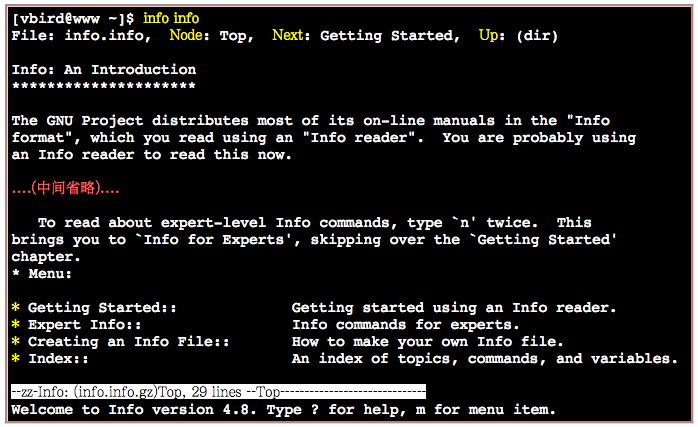
里面的第一行显示了很多的信息喔！第一行里面的数据意义为：
- File：代表这个info page的数据是来自info.info文件所提供的；
- Node：代表目前的这个页面是属于Top节点。 意思是info.info内含有很多信息，而Top仅是info.info文件内的一个节点内容而已；
- Next：下一个节点的名称为Getting Started，你也可以按『N』到下个节点去；
- Up：回到上一层的节点总揽画面，你也可以按下『U』回到上一层；
- Prev：前一个节点。但由于Top是info.info的第一个节点，所以上面没有前一个节点的信息。
Navigation:
- 可以透过直接按下N, P, U来去到下一个、上一个与上一层的节点(node)！非常的方便！
- 使用上下左右按键来将光标移动到该文字或者『 * 』上面，按下Enter， 就可以前往该小节
- 按下[Tab]按键，就可以快速的将光标在上表的画面中的node间移动
info的说明文件将内容分成多个node，并且每个node都有定位与连结。 在各连结之间还可以具有类似『超链接』的快速按钮，可以透过[tab]键在各个超链接间移动。 也可以使用U,P,N来在各个阶层与相关链接中显示
info page当中可以使用的按键:
- 空格键: 向下翻一页
- [Page Down]: 向下翻一页
- [Page Up]: 向上翻一页
- [tab]: 在 node 之间移动，有 node 的地方，通常会以 * 显示。
- [Enter]: 当光标在 node 上面时，按下 Enter 可以进入该 node 。
- b: 移动光标到该 info 画面当中的第一个 node 处
- e: 移动光标到该 info 画面当中的最后一个 node 处
- n: 前往下一个 node 处
- p: 前往上一个 node 处
- u: 向上移动一层
- s(/): 在 info page 当中进行搜寻
- h: 显示求助菜单
- ?: 命令一览表
- q: 结束这次的 info page
- [ME: 其余同 emacs keymap]
查询的命令说明要具有info page功能的话，得用info page的格式来写成在线求助文件. 至于非以info page格式写成的说明文件(就是man page)，虽然也能够使用info来显示，不过其结果就会跟man相同。 举例来说，你可以下达『info man』就知道结果了
3.3 其他有用的文件(documents)
一般而言，命令或者软件制作者，都会将自己的命令或者是软件的说明制作成『联机帮助文件』！ 但是，毕竟不是每个文件都需要做成联机帮助文件的，还有相当多的说明需要额外的文件！此时，这个所谓的 How-To(如何做的意思)就很重要啦！还有，某些软件不只告诉你『如何做』， 还会有一些相关的原理会说明
这些说明文件在/usr/share/doc这个目录
如果想要知道本章讲过多次的bash是什么，则可以到/usr/share/doc/bash-3.2/ 这个目录中去浏览一番！很多东西呦！而且/usr/share/doc这个目录下的数据主要是以套件(packages)为主的， 例如GCC这个套件的相关信息在/usr/share/doc/gcc-xxx(那个xxx表示版本的意思！)。 未来可得多多查阅这个目录
总结上面的三个咚咚(man, info, usr/share/doc):
- 在文字接口下，有任何你不知道的命令或文件格式这种玩意儿，但是你想要了解他，请赶快使用man或者是info来查询！
- 而如果你想要架设一些其他的服务，或想要利用一整组软件来达成某项功能时，请赶快到/usr/share/doc 底下查一查有没有该服务的说明档喔！
- 另外，再次的强调，因为Linux毕竟是外国人发明的，所以中文文件确实是比较少
4. 超简单文书编辑器： nano
nano的使用其实很简单，你可以直接加上档名就能够开启一个旧档或新档
第一行反白的部分，那仅是在宣告nano的版本与档名(File: text.txt)而已。 之后你会看到最底下的三行，分别是文件的状态(New File)与两行命令说明列。命令说明列反白的部分就是组合键， 接的则是该组合键的功能。那个指数符号(^)代表的是键盘的[Ctrl]按键啦！
比较重要的几个组合按键：
- [ctrl]-G or F1：取得联机帮助(help)，很有用的！
- [ctrl]-X：离开naon软件，若有修改过文件会提示是否需要储存喔！
- [ctrl]-O：储存文件，若你有权限的话就能够储存文件了；
- [ctrl]-R：从其他文件读入数据，可以将某个文件的内容贴在本文件中；
- [ctrl]-W：搜寻字符串，这个也是很有帮助的命令喔！
- [ctrl]-C：说明目前光标所在处的行数与列数等信息；
- [ctrl]-：可以直接输入行号，让光标快速移动到该行；
- [alt]-Y：校正语法功能开启或关闭(单击开、再单击关)
- [alt]-M：可以支持鼠标来移动光标的功能
5. 正确的关机方法: sync, shutdown, reboot, halt, poweroff, init
在 Linux 底下，由于每个程序 (或者说是服务) 都是在在背景下运行的，因此，在你看不到的屏幕背后其实可能有相当多人同时在你的主机上面工作，如果你直接按下电源开关来关机时， 则其他人的数据可能就此中断
最大的问题是，若不正常关机，则可能造成文件系统的毁损 （因为来不及将数据回写到文件中，所以有些服务的文件会有问题！）。所以正常情况下，要关机时需要注意底下几件事：
- 观察系统的使用状态： 如果要看目前有谁在在线，可以下达『who』这个命令，而如果要看网络的联机状态，可以下达 『 netstat -a 』这个命令[ME: need to
apt-get install net-tools]，而要看背景运行的程序可以运行『 ps -aux 』这个命令。使用这些命令可以让你稍微了解主机目前的使用状态！当然啰，就可以让你判断是否可以关机了 （这些命令在后面Linux常用命令中会提及喔！） - 通知在线使用者关机的时刻： 要关机前总得给在线的使用者一些时间来结束他们的工作，所以，这个时候你可以使用 shutdown 的特别命令来达到此一功能。
- 正确的关机命令使用： 例如 shutdown 与 reboot 两个命令！
几个与关机/重新启动相关的命令:
- 将数据同步写入硬盘中的命令： sync
- 惯用的关机命令： shutdown
- 重新启动，关机： reboot, halt, poweroff
Tip: 由于Linux系统的关机/重新启动是很重大的系统运行，因此只有root才能够进行例如shutdown, reboot等命令。 不过在某些distributions当中，例如我们这里谈到的CentOS系统，他允许你在本机前的tty7使用图形接口登陆时， 可以用一般账号来关机或重新启动！但某些distributions则在你要关机时，他会要你输入root的密码
数据同步写入磁盘： sync
在Linux系统中，为了加快数据的读取速度，所以在默认的情况中， 某些已经加载内存中的数据将不会直接被写回硬盘，而是先缓存在内存当中
如此一来也造成些许的困扰，那就是万一你的系统因为某些特殊情况造成不正常关机 (例如停电或者是不小心踢到power)时，由于数据尚未被写入硬盘当中，哇！所以就会造成数据的升级不正常啦！ 那要怎么办呢？这个时候就需要sync这个命令来进行数据的写入动作
直接在文字接口下输入sync，那么在内存中尚未被升级的数据，就会被写入硬盘中！所以，这个命令在系统关机或重新启动之前， 很重要喔！最好多运行几次！
虽然目前的 shutdown/reboot/halt 等等命令均已经在关机前进行了 sync 这个工具的呼叫， 不过，多做几次总是比较放心
Tip: 事实上sync也可以被一般账号使用喔！只不过一般账号用户所更新的硬盘数据就仅有自己的数据， 不像root可以更新整个系统中的数据了。
惯用的关机命令： shutdown
除了你是在主机前面以tty7图形接口来登陆系统时， 不论用什么身份都能够关机之外，若你是使用远程管理工具(如透过pietty使用ssh服务来从其他计算机登陆主机)， 那关机就只有root有权力
较常使用的是shutdown这个命令，而这个命令会通知系统内的各个程序 (processes)，并且将通知系统中的run-level内的一些服务来关闭。
shutdown可以达成如下的工作：
- 可以自由选择关机模式：是要关机、重新启动或进入单人操作模式均可；
- 可以配置关机时间: 可以配置成现在立刻关机, 也可以配置某一个特定的时间才关机。
- 可以自定义关机信息：在关机之前，可以将自己配置的信息传送给在线 user 。
- 可以仅发出警告信息：有时有可能你要进行一些测试，而不想让其他的使用者干扰， 或者是明白的告诉使用者某段时间要注意一下！这个时候可以使用 shutdown 来吓一吓使用者，但却不是真的要关机啦！
- 可以选择是否要 fsck 检查文件系统 。
简单的语法守则为：
[root@www ~]# /sbin/shutdown [-t 秒] [-arkhncfF] 时间 [警告信息]
选项与参数：
- -t sec ： -t 后面加秒数，亦即『过几秒后关机』的意思
- -k ： 不要真的关机，只是发送警告信息出去！
- -r ： 在将系统的服务停掉之后就重新启动(常用)
- -h ： 将系统的服务停掉后，立即关机。 (常用)
- -n ： 不经过 init 程序，直接以 shutdown 的功能来关机
- -f ： 关机并启动之后，强制略过 fsck 的磁盘检查
- -F ： 系统重新启动之后，强制进行 fsck 的磁盘检查
- -c ： 取消已经在进行的 shutdown 命令内容。
- 时间 ： 这是一定要加入的参数！指定系统关机的时间！时间的范例底下会说明。
Example:
[root@www ~]# /sbin/shutdown -h 10 'I will shutdown after 10 mins'
需要注意的是，时间参数请务必加入命令中，否则shutdown会自动跳到 run-level 1 (就是单人维护的登陆情况)，这样就伤脑筋了！
几个时间参数的例子
[root@www ~]# shutdown -h now 立刻关机，其中 now 相当于时间为 0 的状态 [root@www ~]# shutdown -h 20:25 系统在今天的 20:25 分会关机，若在21:25才下达此命令，则隔天才关机 [root@www ~]# shutdown -h +10 系统再过十分钟后自动关机 [root@www ~]# shutdown -r now 系统立刻重新启动 [root@www ~]# shutdown -r +30 'The system will reboot' 再过三十分钟系统会重新启动，并显示后面的信息给所有在在线的使用者 [root@www ~]# shutdown -k now 'This system will reboot' 仅发出警告信件的参数！系统并不会关机啦！吓唬人！
重新启动，关机： reboot, halt, poweroff
这三个命令呼叫的函式库都差不多，所以当你使用『man reboot』时，会同时出现三个命令的用法
在重新启动时，都会下达如下的命令:
sync; sync; sync; reboot
基本上，在默认的情况下， 这几个命令都会完成一样的工作！(因为halt会先呼叫shutdown，而shutdown最后会呼叫halt！)。 不过，shutdown可以依据目前已启动的服务来逐次关闭各服务后才关机；至于halt却能够在不理会目前系统状况下， 进行硬件关机的特殊功能
可以在你的主机上面使用root进行底下两个命令来关机，比较看看差异在哪里:
shutdown -h now poweroff -f
更多halt与poweroff的选项功能，请务必使用man去查询一下
切换运行等级： init
Linux共有七种运行等级， 七种等级的意义我们在后面会再谈到。本章你只要知道底下四种运行等级:
- run level 0：关机
- run level 3：纯文本模式
- run level 5：含有图形接口模式
- run level 6：重新启动
如何切换各模式呢？可以使用init这个命令来处理. Example: 如果你想要关机的话， 除了上述的shutdown -h now以及poweroff之外，你也可以使用如下的命令来关机：
init 0
6. 启动过程的问题排解
Linux主机是很稳定的，除非是硬件问题与系统管理员不小心的动作，否则， 很难会造成一些无法挽回的错误
先来简单的谈一谈，如果无法顺利启动时， 你应该如何解决
文件系统错误的问题
在启动的过程中最容易遇到的问题就是硬盘可能有坏轨或文件系统发生错误(数据损毁)的情况， 这种情况虽然不容易发生在稳定的Linux系统下，不过由于不当的开关机行为， 还是可能会造成的，常见的发生原因可能有：
- 最可能发生的原因是因为断电或不正常关机所导致的文件系统发生错误. 文件系统错误并非硬件错误，而是软件数据的问题
- 硬盘使用率过高或主机所在环境不良也是一个可能的原因: e.g. 硬盘坏轨, 硬盘的损坏
解决的方法其实很简单，不过因为出错扇区所挂载的目录不同，处理的流程困难度就有差异了。 举例来说，如果你的根目录『/』并没有损毁，那就很容易解决，如果根目录已经损毁了，那就比较麻烦！
如果根目录没有损毁：
假设你发生错误的partition是在/dev/sda7这一块，那么在启动的时候，屏幕应该会告诉你：press root password or ctrl+D : 这时候请输入root的密码登陆系统，然后进行如下动作：
- 在光标处输入root密码登陆系统，进行单人单机的维护工作；
- 输入『 fsck /dev/sda7 』(fsck 为文件系统检查的命令，/dev/sda7为错误的partition，请依你的情况下达参数)， 这时屏幕会显示开始修理硬盘的信息，如果有发现任何的错误时，屏幕会显示： clear [Y/N]？ 的询问信息，就直接输入 Y 吧！
- 修理完成之后，以 reboot 重新启动
如果根目录损毁了
一般初学者喜欢将自己的硬盘只划分为一个大partition，亦即只有根目录， 那文件系统错误一定是根目录的问题啰！这时你可以将硬盘拔掉，接到另一台Linux系统的计算机上， 并且不要挂载(mount)该硬盘，然后以root的身份运行『 fsck /dev/sdb1 』(/dev/sdb1 指的是你的硬盘装置文件名，你要依你的实际状况来配置)
另外，也可以使用近年来很热门的Live CD，也就是利用光盘启动就能够进入Linux操作系统的特性， 你可以前往：『http://knoppix.tnc.edu.tw/』 这个网站来下载，并且刻录成为CD，这个时候先用Live CD光盘启动，然后使用 fsck 去修复原来的根目录，例如 fsck /dev/sda1 。
如果硬盘整个坏掉：
如果硬盘实在坏的离谱时，那就先将旧硬盘内的数据，能救出来的救出来，然后换一颗硬盘来重新安装Linux吧
硬盘该如何预防发生文件系统错误的问题呢？可以参考底下说明：
- 妥善保养硬盘： 例如：主机通电之后不要搬动，避免移动或震动硬盘；尽量降低硬盘的温度，可以加装风扇来冷却硬盘； 或者可以换装 SCSI 硬盘。
- 划分不同的partition： 为什么磁盘分区这么重要！因为Linux每个目录被读写的频率不同，妥善的块分配将会让我们的Linux更安全！ 通常我们会建议划分下列的磁盘区块：
- /
- /boot
- /usr
- /home
- /var: 例如 /var是系统默认的一些数据缓存或者是cache数据的储存目录， 像 e-mail 就含在这里面。如果还有使用proxy时，因为常常存取，所以有可能会造成磁盘损坏， 而当这部份的磁盘损坏时，由于其他的地方是没问题的，因此数据得以保存，而且在处理时也比较容易
忘记 root 密码
只要以单人维护模式登陆即可更改你的root密码. 使用grub启动管理程序作为范例来介绍
先将系统重新启动，在读秒的时候按下任意键就会出现如同第四章图3.2的菜单画面，仔细看菜单底下的说明， 按下『e』就能够进入grub的编辑模式了。此时你看到的画面有点像底下这样：
root (hd0,0) kernel /vmlinuz-2.6.18-128.el5 ro root=LABEL=/ rhgb quiet initrd /initrd-2.6.18-128.el5.img
此时，请将光标移动到kernel那一行，再按一次『 e 』进入kernel该行的编辑画面中， 然后在出现的画面当中，最后方输入 single ：
kernel /vmlinuz-2.6.18-128.el5 ro root=LABEL=/ rhgb quiet single
按下『 Enter 』确定之后，按下 b 就可以启动进入单人维护模式了！ 在这个模式底下，你会在tty1的地方不需要输入密码即可取得终端机的控制权(而且是使用root的身份喔！)。 之后就能够修改root的密码了！请使用底下的命令来修改root的密码:
[root@www ~]# passwd # 接下来系统会要求你输入两次新的密码，然后再来reboot即可顺利修订root密码了！
这里仅是介绍一个简单的处理方法而已，更多的原理与说明将会在后续的各相关章节介绍
7. 重点回顾
- 为了避免瞬间断电造成的Linux系统危害，建议做为服务器的Linux主机应该加上不断电系统来持续提供稳定的电力；
- 默认的图形模式登陆中，可以选择语系以及作业阶段。作业阶段为多种窗口管理员软件所提供，如GNOME及KDE等；
- CentOS 5.x默认的中文输入法为使用SCIM这个软件所提供的输入；
- 不论是KDE还是GNOME默认都提供四个Virtual Desktop给使用者使用；
- 在X的环境下想要重新启动X的组合按键为：『[alt]+[ctrl]+[backspace]』；
- 默认情况下，Linux提供tty1~tty6的文字接口登陆，以及tty7的图形接口登陆环境；
- 除了run level 5默认取得图形接口之外，run level 3亦可使用 startx 进入图形环境；
- 在终端机环境中，可依据提示字符为$或#判断为一般账号或root账号；
- 取得终端机支持的语系数据可下达『echo $LANG』或『locale』命令；
- date可显示日期、cal可显示日历、bc可以做为计算器软件；
- 组合按键中，[tab]按键可做为命令补齐或档名补齐，[crtl]-[c]可以中断目前正在运行中的程序；
- 联机帮助系统有man及info两个常见的命令；
- man page说明后面的数字中，1代表一般账号可用命令，8代表系统管理员常用命令，5代表系统配置文件格式；
- info page可将一份说明文件拆成多个节点(node)显示，并具有类似超链接的功能，添加易读性；
- 系统需正确的关机比较不容易损坏，可使用shutdown, poweroff等命令关机。
8. 本章习题
情境模拟题一：我们在tty1里面看到的欢迎画面，就是在那个login:之前的画面(CentOS release 5.3 (Final)…)是怎么来的？
- 目标：了解到终端机接口的欢迎信息是怎么来的？
- 前提：欢迎信息的内容，是记录到/etc/issue当中的
- 需求：利用man找到该文件当中的变量内容
情境模拟题一的解决步骤：
欢迎画面是在/etc/issue文件中，你可以使用『nano /etc/issue』看看该文件的内容. 这个文件的内容有点像底下这样：
CentOS release 5.3 (Final) Kernel \r on an \m
核心版本使用的是 \r 而硬件等级则是 \m 来取代，这两者代表的意义为何？ 由于这个文件的档名是issue，所以我们使用『man issue』来查阅这个文件的格式
透过上一步的查询我们会知道反斜杠(\)后面接的字符是与mingetty(8)有关，故进行『man mingetty』这个命令的查询 [ME: use agetty instead]
在上个步骤的man环境中，你可以使用『/escape』来搜寻各反斜杠后面所接字符所代表的意义为何
如果我想要在/etc/issue文件内表示『时间(localtime)』与『tty号码(如tty1, tty2的号码)』的话， 应该要找到那个字符来表示(透过反斜杠的功能)？(答案为：\t 与 \l)
简答题部分
请问如果我以文本模式登陆Linux主机时，我有几个终端机接口可以使用？如何切换各个不同的终端机接口？ 共有六个， tty1 ~ tty6 ，切换的方式为 Crtl + Alt + [F1]~[F6]，其中， [F7] 为图形接口的使用。
使用 man date 然后找出显示目前的日期与时间的参数，成为类似：2009/10/16-20:03 date +%Y/%m/%d-%H:%M
man -k passwd 与 man -K passwd 有什么差异(大小写的 K )？ 小写的 -k 为查询关键词，至于 -K 则是整个系统的 man page 查询～ 每个被检查到有关键词的 man page file 都会被询问是否要显示， 你可以输入『ynq』，来表示：y:要显示到屏幕上；n:不显示；q:结束 man 的查询。
我使用dmtsai这个账号登陆系统了，请问我能不能使用reboot来重新启动？ 若不能，请说明原因，若可以，请说明命令如何下达？ 理论上reboot仅能让root运行。不过，如果dmtsai是在主机前面以图形接口登陆时，则dmtsai还是可以透过图形接口功能来关机。
9. 参考数据与延伸阅读
- 杨锦昌老师的X Window操作图解，以Fedora Core 3为例：http://apt.nc.hcc.edu.tw/docs/FC3_X/
- man 7 man ：取得更详细的数字说明内容
10. 针对本文的建议：http://phorum.vbird.org/viewtopic.php?t=23877
第二部份：Linux文件、目录与磁盘格式 [ME: turn to vbird linux online from 8.3.2 mke2fs]
安装完了 Linux 之后，接着下来自然就是要使用他了！我们在 启动与关机及简易命令操作 稍微说明了命令下达的方法，以及命令在线查询的方式， 因此您可以轻易的使用命令列模式来进行诸多的动作与工作。那么接着下来呢？当然就是想要知道 Linux 里面有什么东西啰，所以，在这一个部分当中，我们将介绍 Linux 最基本的文件权限概念， 与每个文件目录所带有的意涵。
当然啰，要了解权限的概念，那么对于不同的『身份』就需要了解一下才行， 不同的身份的人，所创建的或拥有的文件是否会相同呢？例如系统管理员与一般身份使用者的文件？ 当然不太一样！除此之外，如果您的硬盘空间不足，需要添加硬盘时，应该要如何新增呢？ 还有，内存不足的情况下，有没有增进虚拟内存容量的方法？在接下来的几个章节之中，我们将介绍 Linux 主要的文件架构、以及磁盘在 Linux 当中该如何使用及挂载等问题。
第六章、Linux 的文件权限与目录配置
Linux最优秀的地方之一，就在于他的多人多任务环境。而为了让各个使用者具有较保密的文件数据，因此文件的权限管理就变的很重要了。 Linux一般将文件可存取的身份分为三个类别，分别是 owner/group/others，且三种身份各有 read/write/execute 等权限。
你如果首次接触Linux的话，那么， 在Linux底下这么多的目录/文件，到底每个目录/文件代表什么意义呢？底下我们就来一一介绍
1. 使用者与群组
每个文件都有相当多的属性与权限，其中最重要的可能就是文件的拥有者的概念了。
先就简单的(1)使用者及(2)群组与(3)非本群组外的其他人等概念作个说明:
文件拥有者
由于Linux是个多人多任务的系统，因此可能常常会有多人同时使用这部主机来进行工作的情况发生， 为了考虑每个人的隐私权以及每个人喜好的工作环境，因此，这个『文件拥有者』的角色就显的相当的重要
你就把该文件设定成『只有文件拥有者，就是我，才能看与修改这个文件的内容』， 那么即使其他人知道你有这个相当『有趣』的文件，不过由于你有设定适当的权限， 所以其他人自然也就无法知道该文件的内容
群组概念
群组最有用的功能之一，就是当你在团队开发资源的时候
可以经由简易的文件权限设定，就能限制非自己团队(亦即是群组啰) 的其他人不能够阅览内容啰！而且亦可以让自己的团队成员可以修改我所建立的文件！ 同时，如果我自己还有私人隐密的文件，仍然可以设定成让自己的团队成员也看不到我的文件数据。
每个账号都可以有多个群组
其他人的概念
在Linux里面，任何一个文件都具有『User, Group及Others』三种身份的个别权限
root可是『万能的天神』
更详细的 『身份与群组』 设定，我们将在第十四章、账号管理再进行解说。 底下我们将针对文件系统与文件权限来进行说明。
Linux 用户身份与群组记录的文件
默认的情况下，所有的系统上的账号与一般身份使用者，还有那个root的相关信息， 都是记录在/etc/passwd这个文件内的。
至于个人的密码则是记录在/etc/shadow这个文件下。
此外，Linux所有的组名都纪录在/etc/group内！
这三个文件可以说是Linux系统里面账号、密码、群组信息的集中地
至于更多的与账号群组有关的设定，还有这三个文件的格式，不要急，我们在第十四章的账号管理时，会再跟大家详细的介绍
2. Linux文件权限概念
文件的权限要如何针对这些所谓的『使用者』与『群组』来设定呢？
文件的权限与属性是学习Linux的一个相当重要的关卡
Permission deny: 权限设定错误
2.1 Linux文件属性
Tip: 由于本章后续的chgrp, chown等指令可能都需要使用root的身份才能够处理，所以这里建议您以root的身份登入Linux来学习本章。
Use ls -a 列出所有的文件详细的权限与属性 (包含隐藏档，就是文件名第一个字符为『 . 』的文件).
图2.1.1、文件属性的示意图
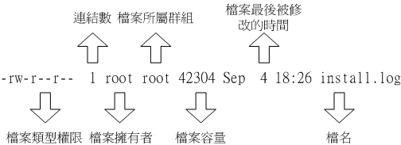
第一栏代表这个文件的类型与权限(permission)：
这一栏其实共有十个字符：(图2.1.1及图2.1.2内的权限并无关系)
图2.1.2、文件的类型与权限之内容
- 第一个字符代表这个文件是『目录、文件或链接文件等等』：
- 当为[ d ]则是目录，例如上表档名为『.gconf』的那一行；
- 当为[ - ]则是文件，例如上表档名为『install.log』那一行；
- 若是[ l ]则表示为连结档(link file)；
- 若是[ b ]则表示为装置文件里面的可供储存的接口设备(可随机存取装置)；
- 若是[ c ]则表示为装置文件里面的串行端口设备，例如键盘、鼠标(一次性读取装置)。
- 接下来的字符中，以三个为一组，且均为『rwx』 的三个参数的组合。其中，[ r ]代表可读(read)、[ w ]代表可写(write)、[ x ]代表可执行(execute)。 要注意的是，这三个权限的位置不会改变，如果没有权限，就会出现减号[ - ]而已。
- 第一组为『文件拥有者的权限』
- 第二组为『同群组的权限』；
- 第三组为『其他非本群组的权限』。
Tip: 另外，目录与文件的权限意义并不相同，这是因为目录与文件所记录的数据内容不相同所致。 由于目录与文件的权限意义非常的重要，所以鸟哥将他独立到2.3节目录与文件之权限意义中再来谈。
第二栏表示有多少档名连结到此节点(i-node)：
每个文件都会将他的权限与属性记录到文件系统的i-node中，不过，我们使用的目录树却是使用文件名来记录， 因此每个档名就会连结到一个i-node啰！这个属性记录的，就是有多少不同的档名连结到相同的一个i-node号码去就是了。 关于i-node的相关数据我们会在第八章谈到文件系统时再加强介绍
[ME: 一般情况下，文件名和inode号码是"一一对应"关系，每个inode号码对应一个文件名。但是，Unix/Linux系统允许，多个文件名指向同一个inode号码。这意味着，可以用不同的文件名访问同样的内容；对文件内容进行修改，会影响到所有文件名；但是，删除一个文件名，不影响另一个文件名的访问。这种情况就被称为"硬链接"（hard link）, refer to Linux的inode的理解]
第三栏表示这个文件(或目录)的『拥有者账号』
第四栏表示这个文件的所属群组
在Linux系统下，你的账号会附属于一个或多个的群组中。
例子，class1, class2, class3均属于projecta这个群组，假设某个文件所属的群组为projecta，且该文件的权限如图2.1.2所示(-rwxrwx—)， 则class1, class2, class3三人对于该文件都具有可读、可写、可执行的权限(看群组权限)。 但如果是不属于projecta的其他账号，对于此文件就不具有任何权限了。
第五栏为这个文件的容量大小，默认单位为bytes；
第六栏为这个文件的建档日期或者是最近的修改日期：
这一栏的内容分别为日期(月/日)及时间。如果这个文件被修改的时间距离现在太久了，那么时间部分会仅显示年份
如果想要显示完整的时间格式，可以利用ls的选项，亦即：『ls -l –full-time』就能够显示出完整的时间格式了！包括年、月、日、时间喔。 另外，如果你当初是以繁体中文安装你的Linux系统，那么日期字段将会以中文来显示。 可惜的是，中文并没有办法在纯文本的终端机模式中正确的显示，所以此栏会变成乱码。 那你就得要使用『LANG=enUS』来修改语系
如果想要让系统默认的语系变成英文的话，那么你可以修改系统配置文件『/etc/sysconfig/i18n』，利用第五章谈到的nano来修改该文件的内容，使LANG这个变量成为上述的内容即可。
第七栏为这个文件的文件名
比较特殊的是：如果档名之前多一个『 . 』，则代表这个文件为『隐藏档』
例题：如果我的目录为底下的样式，请问testgroup这个群组的成员与其他人(others)是否可以进入本目录？
drwxr-xr-- 1 test1 testgroup 5238 Jun 19 10:25 groups/
- 文件拥有者test1[rwx]可以在本目录中进行任何工作；
- 而testgroup这个群组[r-x]的账号，例如test2, test3亦可以进入本目录进行工作，但是不能在本目录下进行写入的动作；
- 至于other的权限中[r–]虽然有r ，但是由于没有x的权限，因此others的使用者，并 不能 进入此目录！
Linux文件权限的重要性
最大的用途是在『数据安全性』上面:
- 系统保护的功能：举个简单的例子，在你的系统中，关于系统服务的文件通常只有root才能读写或者是执行，例如/etc/shadow这一个账号管理的文件，由于该文件记录了你系统中所有账号的数据， 因此是很重要的一个配置文件，当然不能让任何人读取(否则密码会被窃取啊)，只有root才能够来读取啰！所以该文件的权限就会成为[ -rw-—— ]
- 团队开发软件或数据共享的功能： 此外，如果你有一个软件开发团队，在你的团队中，你希望每个人都可以使用某一些目录下的文件， 而非你的团队的其他人则不予以开放呢？以上面的例子来说，testgroup的团队共有三个人，分别是test1, test2, test3，那么我就可以将团队所需的文件权限订为[ -rwxrwx— ]来提供给testgroup的工作团队使用
- 未将权限设定妥当的危害： 再举个例子来说，如果你的目录权限没有作好的话，可能造成其他人都可以在你的系统上面乱搞. 万一你的用户的密码被其他不明人士取得的话，只要他登入你的系统就可以轻而易举的执行一些root的工作
在你修改你的linux文件与目录的属性之前，一定要先搞清楚， 什么数据是可变的，什么是不可变的！千万注意
2.2 如何改变文件属性与权限： chgrp, chown, chmod
几个常用于群组、拥有者、各种身份的权限之修改的指令，如下所示：
- chgrp ：改变文件所属群组
- chown ：改变文件拥有者
- chmod ：改变文件的权限, SUID, SGID, SBIT等等的特性
改变所属群组, chgrp
要被改变的组名必须要在/etc/group文件内存在才行，否则就会显示错误！
chgrp [-R] dirname/filename ...
选项与参数：
- -R : 进行递归(recursive)的持续变更，亦即连同次目录下的所有文件、目录 都更新成为这个群组之意。常常用在变更某一目录内所有的文件之情况。
范例：
[root@www ~]# chgrp users install.log [root@www ~]# ls -l -rw-r--r-- 1 root users 68495 Jun 25 08:53 install.log [root@www ~]# chgrp testing install.log chgrp: invalid group name `testing' <== 发生错误讯息啰～找不到这个群组名～
改变文件拥有者, chown
要注意的是， 用户必须是已经存在系统中的账号，也就是在/etc/passwd 这个文件中有纪录的用户名称才能改变
chown的用途还满多的，他还可以顺便直接修改群组的名称呢！此外，如果要连目录下的所有次目录或文件同时更改文件拥有者的话，直接加上 -R 的选项即可
语法与范例：
[root@www ~]# chown [-R] 账号名称 文件或目录 [root@www ~]# chown [-R] 账号名称:组名 文件或目录 选项与参数： -R : 进行递归(recursive)的持续变更，亦即连同次目录下的所有文件都变更 范例：将install.log的拥有者改为bin这个账号： [root@www ~]# chown bin install.log [root@www ~]# ls -l -rw-r--r-- 1 bin users 68495 Jun 25 08:53 install.log 范例：将install.log的拥有者与群组改回为root： [root@www ~]# chown root:root install.log [root@www ~]# ls -l -rw-r--r-- 1 root root 68495 Jun 25 08:53 install.log
Tip: 事实上，chown也可以使用『chown user.group file』，亦即在拥有者与群组间加上小数点『.』也行！ 不过很多朋友设定账号时，喜欢在账号当中加入小数点(例如vbird.tsai这样的账号格式)，这就会造成系统的误判了！ 所以我们比较建议使用冒号『:』来隔开拥有者与群组啦！此外，chown也能单纯的修改所属群组呢！ 例如『chown .sshd install.log』就是修改群组～看到了吗？就是那个小数点的用途！
什么时候要使用chown或chgrp呢？最常见的例子就是在复制文件给你之外的其他人时. 使用最简单的cp指令来说明好了：
假设你今天要将.bashrc这个文件拷贝成为.bashrctest档名，且是要给bin这个人，你可以这样做：
[root@www ~]# cp .bashrc .bashrc_test [root@www ~]# ls -al .bashrc* -rw-r--r-- 1 root root 395 Jul 4 11:45 .bashrc -rw-r--r-- 1 root root 395 Jul 13 11:31 .bashrc_test <==新文件的属性没变
由于复制行为(cp)会复制执行者的属性与权限，所以！怎么办？.bashrctest还是属于root所拥有， 如此一来，即使你将文件拿给bin这个使用者了，那他仍然无法修改的(看属性/权限就知道了吧)， 所以你就必须要将这个文件的拥有者与群组修改一下.
改变权限, chmod
权限的设定方法有两种， 分别可以使用数字或者是符号来进行权限的变更。
可以使用数字来代表各个权限，各权限的分数对照表如下：
- r:4
- w:2
- x:1
每种身份(owner/group/others)各自的三个权限(r/w/x)分数是需要累加的，例如当权限为： [-rwxrwx—] 分数则是：
- owner = rwx = 4+2+1 = 7
- group = rwx = 4+2+1 = 7
- others= — = 0+0+0 = 0
变更权限的指令chmod的语法是这样的：
chmod [-R] xyz 文件或目录
选项与参数：
- xyz : 就是刚刚提到的数字类型的权限属性，为 rwx 属性数值的相加。
- -r : 进行递归(recursive)的持续变更，亦即连同次目录下的所有文件都会变更
在实际的系统运作中最常发生的一个问题就是，常常我们以vim编辑一个shell的文字批处理文件后，他的权限通常是 -rw-rw-r– 也就是664， 如果要将该文件变成可执行文件，并且不要让其他人修改此一文件的话， 那么就需要-rwxr-xr-x这样的权限，此时就得要下达：『 chmod 755 test.sh 』的指令
如果有些文件你不希望被其他人看到，那么应该将文件的权限设定为例如：『-rwxr–—』，那就下达『 chmod 740 filename 』吧
基本上就九个权限分别是(1)user (2)group (3)others三种身份啦！那么我们就可以藉由u, g, o来代表三种身份的权限！此外， a 则代表 all 亦即全部的身份！那么读写的权限就可以写成r, w, x！也就是可以使用底下的方式来看：
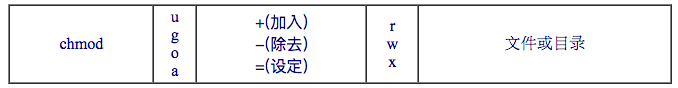
假如我们要『设定』一个文件的权限成为『-rwxr-xr-x』:
[root@www ~]# chmod u=rwx,go=rx .bashrc [root@www ~]# ls -al .bashrc -rwxr-xr-x 1 root root 395 Jul 4 11:45 .bashrc
Note: 注意喔！那个 u=rwx,go=rx 是连在一起的，中间并没有任何空格！
此外，如果我不知道原先的文件属性，而我只想要增加.bashrc这个文件的每个人均可写入的权限， 那么我就可以使用：
[root@www ~]# ls -al .bashrc -rwxr-xr-x 1 root root 395 Jul 4 11:45 .bashrc [root@www ~]# chmod a+w .bashrc [root@www ~]# ls -al .bashrc -rwxrwxrwx 1 root root 395 Jul 4 11:45 .bashrc
如果是要将权限去掉而不更动其他已存在的权限呢？例如要拿掉全部人的可执行权限，则：
[root@www ~]# chmod a-x .bashrc [root@www ~]# ls -al .bashrc -rw-rw-rw- 1 root root 395 Jul 4 11:45 .bashrc
- + 与 – 的状态下，只要是没有指定到的项目，则该权限『不会被变动』
2.3 目录与文件之权限意义
这些文件权限对于一般文件与目录文件有何不同呢？ 有大大的不同啊！
权限对文件的重要性
文件是实际含有数据的地方. 因此，权限对于文件来说，他的意义是这样的：
- r (read)：可读取此一文件的实际内容，如读取文本文件的文字内容等；
- w (write)：可以编辑、新增或者是修改该文件的内容(但不含删除该文件)；
- x (execute)：该文件具有可以被系统执行的权限。
权限对目录的重要性
目录主要的内容在记录文件名列表，文件名与目录有强烈的关连
表示具有读取目录结构列表的权限，所以当你具有读取(r)一个目录的权限时，表示你可以查询该目录下的文件名数据。 所以你就可以利用 ls 这个指令将该目录的内容列表显示出来！
表示你具有异动该目录结构列表的权限，也就是底下这些权限：
- 建立新的文件与目录；
- 删除已经存在的文件与目录(不论该文件的权限为何！)
- 将已存在的文件或目录进行更名；
- 搬移该目录内的文件、目录位置。
总之，目录的w权限就与该目录底下的文件名异动有关就对了
目录的x代表的是用户能否进入该目录成为工作目录, 所谓的工作目录(work directory)就是你目前所在的目录.
很多朋友在架设网站的时候都会卡在一些权限的设定上，他们开放目录数据给因特网的任何人来浏览， 却只开放r的权限，如上面的范例所示那样，那样的结果就是导致网站服务器软件无法到该目录下读取文件(最多只能看到檔名)， 最终用户总是无法正确的查阅到文件的内容(显示权限不足啊！)。要注意：要开放目录给任何人浏览时，应该至少也要给予r及x的权限，但w权限不可随便给
例题：
假设有个账号名称为dmtsai，他的家目录在/home/dmtsai/，dmtsai对此目录具有[rwx]的权限。 若在此目录下有个名为theroot.data的文件，该文件的权限如下：
-rwx------ 1 root root 4365 Sep 19 23:20 the_root.data
请问dmtsai对此文件的权限为何？可否删除此文件？
答：
如上所示，由于dmtsai对此文件来说是『others』的身份，因此这个文件他无法读、无法编辑也无法执行， 也就是说，他无法变动这个文件的内容就是了。
但是由于这个文件在他的家目录下， 他在此目录下具有rwx的完整权限，因此对于theroot.data这个『档名』来说，他是能够『删除』的！ 结论就是，dmtsai这个用户能够删除theroot.data这个文件！
2.4 Linux文件种类与扩展名
任何装置在Linux底下都是文件， 不仅如此，连数据沟通的接口也有专属的文件在负责～所以，你会了解到，Linux的文件种类真的很多～ 除了前面提到的一般文件(-)与目录文件(d)之外，还有哪些种类的文件呢？
文件种类：
- 正规文件(regular file )：就是一般我们在进行存取的类型的文件，在由 ls -al 所显示出来的属性方面，第一个字符为 [ - ]. 依照文件的内容，又大略可以分为：
- 纯文本档(ASCII)：可以下达『 cat ~/.bashrc 』就可以看到该文件的内容
- 二进制文件(binary)：我们的系统其实仅认识且可以执行二进制文件(binary file)
- 数据格式文件(data)： 有些程序在运作的过程当中会读取某些特定格式的文件，那些特定格式的文件可以被称为数据文件 (data file)。举例来说，我们的Linux在使用者登入时，都会将登录的数据记录在 /var/log/wtmp那个文件内，该文件是一个data file，他能够透过last这个指令读出来！ 但是使用cat时，会读出乱码～因为他是属于一种特殊格式的文件
- 目录(directory)：第一个属性为 [ d ]
- 连结档(link)： 就是类似Windows系统底下的快捷方式啦！ 第一个属性为 [ l ](英文L的小写)
- 设备与装置文件(device)： 与系统周边及储存等相关的一些文件， 通常都集中在/dev这个目录之下！通常又分为两种：
- 区块(block)设备档 ：就是一些储存数据， 以提供系统随机存取的接口设备，举例来说，硬盘与软盘等就是啦！ 你可以随机的在硬盘的不同区块读写，这种装置就是成组设备啰！你可以自行查一下/dev/sda看看， 会发现第一个属性为[ b ]
- 字符(character)设备文件：亦即是一些串行端口的接口设备， 例如键盘、鼠标等等！这些设备的特色就是『一次性读取』的，不能够截断输出。 举例来说，你不可能让鼠标『跳到』另一个画面，而是『滑动』到另一个地方啊！第一个属性为 [ c ]。
- 数据接口文件(sockets)：这种类型的文件通常被用在网络上的数据承接了。我们可以启动一个程序来监听客户端的要求， 而客户端就可以透过这个socket来进行数据的沟通了。第一个属性为 [ s ]， 最常在/var/run这个目录中看到这种文件类型
- 数据输送文件(FIFO, pipe)：一种特殊的文件类型，他主要的目的在解决多个程序同时存取一个文件所造成的错误问题。 FIFO是first-in-first-out的缩写。第一个属性为[p] 。
可以将 linux下的连结档简单的视为一个文件或目录的快捷方式。 至于socket与FIFO文件比较难理解，因为这两个咚咚与程序(process)比较有关系， 这个等到未来你了解process之后，再回来查阅吧！此外， 你也可以透过man fifo及man socket来查阅系统上的说明！
Linux文件扩展名：
一个Linux文件能不能被执行，与他的第一栏的十个属性有关， 与档名根本一点关系也没有。这个观念跟Windows的情况不相同
不过，可以被执行跟可以执行成功是不一样的
通常我们还是会以适当的扩展名来表示该文件是什么种类的。底下有数种常用的扩展名：
- *.sh ： 脚本或批处理文件 (scripts)，因为批处理文件为使用shell写成的，所以扩展名就编成 .sh ；
- *Z, *.tar, *.tar.gz, *.zip, *.tgz： 经过打包的压缩文件。这是因为压缩软件分别为 gunzip, tar 等等的，由于不同的压缩软件，而取其相关的扩展名
- *.html, *.php：网页相关文件，分别代表 HTML 语法与 PHP 语法的网页文件
基本上，Linux系统上的文件名真的只是让你了解该文件可能的用途而已， 真正的执行与否仍然需要权限的规范才行
上述的这种问题最常发生在文件传送的过程中。例如你在网络上下载一个可执行文件，但是偏偏在你的 Linux系统中就是无法执行！呵呵！那么就是可能文件的属性被改变了！不要怀疑，从网络上传送到你的 Linux系统中，文件的属性与权限确实是会被改变的
Linux文件长度限制：
在Linux底下，使用预设的Ext2/Ext3文件系统时，针对文件的档名长度限制为：
- 单一文件或目录的最大容许文件名为 255 个字符；
- 包含完整路径名称及目录 (/) 之完整档名为 4096 个字符。
我们希望Linux的文件名可以一看就知道该文件在干嘛的， 所以档名通常是很长很长
而由第五章谈到的热键你也会知道， 其实可以透过[tab]按键来确认文件的文件名
如果你已经读完了本书第三篇关于BASH的用法，那么你将会发现 『哇！变量真是一个相当好用的东西吶！』
Linux文件名的限制：
由于Linux在文字接口下的一些指令操作关系，一般来说，你在设定Linux底下的文件名时， 最好可以避免一些特殊字符比较好！例如底下这些：* ? > < ; & ! [ ] | \ ' " ` ( ) { }
这些符号在文字接口下，是有特殊意义的！另外，文件名的开头为小数点『.』时， 代表这个文件为『隐藏档』喔！同时，由于指令下达当中，常常会使用到 -option 之类的选项， 所以你最好也避免将文件档名的开头以 - 或 + 来命名
3. Linux目录配置
为什么每套Linux distributions他们的配置文件啊、执行文件啊、每个目录内放置的咚咚啊，其实都差不多？ 原来是有一套标准依据
3.1 Linux目录配置的依据–FHS
Filesystem Hierarchy Standard (FHS)标准
主要目的是希望让使用者可以了解到已安装软件通常放置于那个目录下， 所以他们希望独立的软件开发商、操作系统制作者、以及想要维护系统的用户，都能够遵循FHS的标准。 也就是说，FHS的重点在于规范每个特定的目录下应该要放置什么样子的数据而已。 这样做好处非常多，因为Linux操作系统就能够在既有的面貌下(目录架构不变)发展出开发者想要的独特风格。
事实上，FHS是根据过去的经验一直再持续的改版的，FHS依据文件系统使用的频繁与否与是否允许使用者随意更动， 而将目录定义成为四种交互作用的形态，用表格来说有点像底下这样：
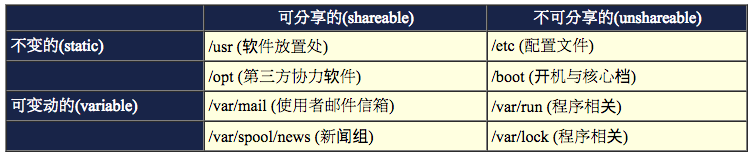
什么是那四个类型？
- 可分享的：可以分享给其他系统挂载使用的目录，所以包括执行文件与用户的邮件等数据， 是能够分享给网络上其他主机挂载用的目录；
- 不可分享的：自己机器上面运作的装置文件或者是与程序有关的socket文件等， 由于仅与自身机器有关，所以当然就不适合分享给其他主机了。
- 不变的：有些数据是不会经常变动的，跟随着distribution而不变动。 例如函式库、文件说明文件、系统管理员所管理的主机服务配置文件等等；
- 可变动的：经常改变的数据，例如登录文件、一般用户可自行收受的新闻组等。
事实上，FHS针对目录树架构仅定义出三层目录底下应该放置什么数据而已，分别是底下这三个目录的定义：
- / (root, 根目录)：与开机系统有关；
- /usr (unix software resource)：与软件安装/执行有关；
- /var (variable)：与系统运作过程有关。
根目录 (/) 的意义与内容：
根目录是整个系统最重要的一个目录，因为不但所有的目录都是由根目录衍生出来的， 同时根目录也与开机/还原/系统修复等动作有关。 由于系统开机时需要特定的开机软件、核心文件、开机所需程序、 函式库等等文件数据，若系统出现错误时，根目录也必须要包含有能够修复文件系统的程序才行。 因为根目录是这么的重要，所以在FHS的要求方面，他希望根目录不要放在非常大的分割槽内， 因为越大的分割槽妳会放入越多的数据，如此一来根目录所在分割槽就可能会有较多发生错误的机会。
因此FHS标准建议：根目录(/)所在分割槽应该越小越好， 且应用程序所安装的软件最好不要与根目录放在同一个分割槽内，保持根目录越小越好。 如此不但效能较佳，根目录所在的文件系统也较不容易发生问题。
有鉴于上述的说明，因此FHS定义出根目录(/)底下应该要有底下这些次目录的存在才好 (以及其中的内容)：
- /bin: 系统有很多放置执行文件的目录，但/bin比较特殊。因为/bin放置的是在 单人维护模式下还能够被操作的指令 。 在/bin底下的指令可以被root与一般账号所使用，主要有：cat, chmod, chown, date, mv, mkdir, cp, bash等等常用的指令。
- /boot: 这个目录主要在放置开机会使用到的文件，包括Linux核心文件以及开机选单与开机所需配置文件等等。 Linux kernel常用的档名为：vmlinuz，如果使用的是grub这个开机管理程序， 则还会存在/boot/grub/这个目录喔！
- /dev: 在Linux系统上，任何装置与接口设备都是以文件的型态存在于这个目录当中的。 你只要透过存取这个目录底下的某个文件，就等于存取某个装置啰～ 比要重要的文件有/dev/null, /dev/zero, /dev/tty, /dev/lp*, /dev/hd*, /dev/sd*等等
- etc: 系统主要的配置文件几乎都放置在这个目录内，例如人员的账号密码文件、 各种服务的启始档等等。一般来说，这个目录下的各文件属性是可以让一般使用者查阅的， 但是只有root有权力修改。 FHS建议不要放置可执行文件(binary)在这个目录中 喔。比较重要的文件有： /etc/inittab, /etc/init.d, etc/modprobe.conf, /etc/X11, etc/fstab, /etc/sysconfig 等等。另外，其下重要的目录有：
- /etc/init.d/：所有服务的预设启动 script 都是放在这里的，例如要启动或者关闭 iptables 的话：『 /etc/init.d/iptables start』、『/etc/init.d/iptables stop』
- /etc/xinetd.d/：这就是所谓的super daemon管理的各项服务的配置文件目录。
- /etc/X11/：与 X Window 有关的各种配置文件都在这里，尤其是 xorg.conf 这个 X Server 的配置文件。 [ME: rgt.txt 里保存了颜色的名称！]
- /home: 这是系统默认的用户家目录(home directory)。在你新增一个一般使用者账号时， 默认的用户家目录都会规范到这里来。比较重要的是，家目录有两种代号喔：
- ~：代表目前这个用户的家目录，而
- ~dmtsai ：则代表 dmtsai 的家目录！
- /lib: 系统的函式库非常的多，而/lib放置的则是在开机时会用到的函式库， 以及在/bin或/sbin底下的指令会呼叫的函式库而已。 什么是函式库呢？妳可以将他想成是『外挂』，某些指令必须要有这些『外挂』才能够顺利完成程序的执行之意。 尤其重要的是/lib/modules/这个目录， 因为该目录会放置核心相关的模块(驱动程序)喔！
- /media: media是『媒体』的英文，顾名思义，这个/media底下放置的就是可移除的装置啦！ 包括软盘、光盘、DVD等等装置都暂时挂载于此。常见的档名有：/media/floppy, /media/cdrom等等。
- /mnt: 如果妳想要 暂时挂载某些额外的装置 ，一般建议妳可以放置到这个目录中。 在古早时候，这个目录的用途与/media相同啦！只是有了/media之后，这个目录就用来暂时挂载用了。
- /opt: 这个是给第三方协力软件放置的目录。什么是第三方协力软件啊？ 举例来说，KDE这个桌面管理系统是一个独立的计划，不过他可以安装到Linux系统中，因此KDE的软件就建议放置到此目录下了。 另外，如果妳想要 自行安装额外的软件 (非原本的distribution提供的)，那么也能够将你的软件安装到这里来。 不过，以前的Linux系统中，我们还是习惯放置在/usr/local目录下呢！
- /root: 系统管理员(root)的家目录。之所以放在这里，是因为如果进入单人维护模式而仅挂载根目录时， 该目录就能够拥有root的家目录，所以我们会希望root的家目录与根目录放置在同一个分割槽中。
- /sbin: Linux有非常多指令是用来设定系统环境的，这些指令只有root才能够利用来『设定』系统，其他用户最多只能用来『查询』而已。 放在 /sbin底下的为开机过程中所需要的 ，里面包括了开机、修复、还原系统所需要的指令。 至于 某些服务器软件程序，一般则放置到/usr/sbin/当中 。至于 本机自行安装的软件所产生的系统执行文件(system binary)， 则放置到/usr/local/sbin/当中 了。常见的指令包括：fdisk, fsck, ifconfig, init, mkfs等等。
- /srv: srv可以视为『service』的缩写，是一些网络服务启动之后，这些服务所需要取用的数据目录。 常见的服务例如WWW, FTP等等。举例来说，WWW服务器需要的网页数据就可以放置在/srv/www/里面。
- /tmp: 这是让一般使用者或者是正在执行的程序暂时放置文件的地方。 这个目录是 任何人都能够存取 的，所以你 需要定期的清理 一下。当然，重要数据不可放置在此目录啊！ 因为 FHS甚至建议在开机时，应该要将/tmp下的数据都删除 唷！
底下是几个在Linux当中也是非常重要的目录:
- /lost+found: 这个目录是使用标准的ext2/ext3文件系统格式才会产生的一个目录，目的在于当文件系统发生错误时， 将一些遗失的片段放置到这个目录下。这个目录通常会在分割槽的最顶层存在， 例如你加装一颗硬盘于/disk中，那在这系统下就会自动产生一个这样的目录 『/disk/lost+found』
- /proc: 这个目录本身是一个『虚拟文件系统(virtual filesystem)』喔！他放置的数据都是在内存当中， 例如系统核心、行程信息(process)、周边装置的状态及网络状态等等。因为这个目录下的数据都是在内存当中， 所以本身不占任何硬盘空间啊！比较重要的文件例如：/proc/cpuinfo, /proc/dma, /proc/interrupts, /proc/ioports, /proc/net/* 等等。
- /sys: 这个目录其实跟/proc非常类似，也是一个虚拟的文件系统，主要也是记录与核心相关的信息。 包括目前已加载的核心模块与核心侦测到的硬件装置信息等等。这个目录同样不占硬盘容量喔！
除了这些目录的内容之外，另外要注意的是，因为根目录与开机有关，开机过程中仅有根目录会被挂载， 其他分割槽则是在开机完成之后才会持续的进行挂载的行为。就是因为如此，因此根目录下与开机过程有关的目录， 就不能够与根目录放到不同的分割槽去！那哪些目录不可与根目录分开呢？有底下这些：
- /etc：配置文件
- /bin：重要执行档
- /dev：所需要的装置文件
- /lib：执行档所需的函式库与核心所需的模块
- /sbin：重要的系统执行文件
这五个目录千万不可与根目录分开在不同的分割槽！
/usr 的意义与内容：
依据FHS的基本定义，/usr里面放置的数据属于可分享的与不可变动的(shareable, static)， 如果你知道如何透过网络进行分割槽的挂载(例如在服务器篇会谈到的NFS服务器)，那么/usr确实可以分享给局域网络内的其他主机来使用
很多读者都会误会/usr为user的缩写，其实usr是Unix Software Resource的缩写， 也就是『Unix操作系统软件资源』所放置的目录，而不是用户的数据啦！这点要注意。 FHS建议所有软件开发者，应该将他们的数据合理的分别放置到这个目录下的次目录，而不要自行建立该软件自己独立的目录。
因为是所有系统默认的软件(distribution发布者提供的软件)都会放置到/usr底下，因此这个目录有点类似Windows 系统的『C:\Windows\ + C:\Program files\』这两个目录的综合体，系统刚安装完毕时，这个目录会占用最多的硬盘容量。 一般来说，/usr的次目录建议有底下这些：
- usr/X11R6: 为X Window System重要数据所放置的目录，之所以取名为X11R6是因为最后的X版本为第11版，且该版的第6次释出之意。
- usr/bin: 绝大部分的用户可使用指令都放在这里！请注意到他与/bin的不同之处。(是否与开机过程有关)
- usr/include: c/c++等程序语言的档头(header)与包含档(include)放置处，当我们以tarball方式 (*.tar.gz 的方式安装软件)安装某些数据时，会使用到里头的许多包含档喔！
- usr/lib: 包含各应用软件的函式库、目标文件(object file)，以及不被一般使用者惯用的执行档或脚本(script)。 某些软件会提供一些特殊的指令来进行服务器的设定，这些指令也不会经常被系统管理员操作， 那就会被摆放到这个目录下啦。要注意的是，如果你使用的是X8664的Linux系统， 那可能会有/usr/lib64/目录产生喔！
- usr/local: 系统管理员在本机自行安装自己下载的软件 (非distribution默认提供者)，建议安装到此目录， 这样会比较便于管理。举例来说，你的distribution提供的软件较旧，你想安装较新的软件但又不想移除旧版， 此时你可以将新版软件安装于/usr/local/目录下，可与原先的旧版软件有分别啦！ 你可以自行到/usr/local去看看，该目录下也是具有bin, etc, include, lib…的次目录喔！
- usr/sbin: 非系统正常运作所需要的系统指令。最常见的就是某些网络服务器软件的服务指令(daemon)啰！[ME: 例如
adduser] - usr/share: 放置共享文件的地方，在这个目录下放置的数据几乎是不分硬件架构均可读取的数据， 因为几乎都是文本文件嘛！在此目录下常见的还有这些次目录：
- /usr/share/man：联机帮助文件
- /usr/share/doc：软件杂项的文件说明
- /usr/share/zoneinfo：与时区有关的时区文件
- usr/src: 一般原始码建议放置到这里，src有source的意思。至于核心原始码则建议放置到/usr/src/linux/目录下。
/var 的意义与内容：
如果/usr是安装时会占用较大硬盘容量的目录，那么/var就是在系统运作后才会渐渐占用硬盘容量的目录。 因为/var目录主要针对常态性变动的文件，包括缓存(cache)、登录档(log file)以及某些软件运作所产生的文件， 包括程序文件(lock file, run file)，或者例如MySQL数据库的文件等等。
常见的次目录有：
- var/cache: 应用程序本身运作过程中会产生的一些暂存档；
- var/lib: 程序本身执行的过程中，需要使用到的数据文件放置的目录。在此目录下各自的软件应该要有各自的目录。 举例来说，MySQL的数据库放置到/var/lib/mysql/而rpm的数据库则放到/var/lib/rpm去！
- var/lock: 某些装置或者是文件资源一次只能被一个应用程序所使用，如果同时有两个程序使用该装置时， 就可能产生一些错误的状况，因此就得要将该装置上锁(lock)，以确保该装置只会给单一软件所使用。 举例来说，刻录机正在刻录一块光盘，你想一下，会不会有两个人同时在使用一个刻录机烧片？ 如果两个人同时刻录，那片子写入的是谁的数据？所以当第一个人在刻录时该刻录机就会被上锁， 第二个人就得要该装置被解除锁定(就是前一个人用完了)才能够继续使用啰。
- var/log: 重要到不行！这是登录文件放置的目录！里面比较重要的文件如/var/log/messages, /var/log/wtmp(记录登入者的信息)等。
- var/mail: 放置个人电子邮件信箱的目录，不过这个目录也被放置到/var/spool/mail/目录中！ 通常这两个目录是互为链接文件啦！
- var/run: 某些程序或者是服务启动后，会将他们的PID放置在这个目录下喔！ 至于PID的意义我们会在后续章节提到的。
- var/spool: 这个目录通常放置一些队列数据，所谓的『队列』就是排队等待其他程序使用的数据啦！ 这些数据被使用后通常都会被删除。举例来说，系统收到新信会放置到/var/spool/mail/中， 但使用者收下该信件后该封信原则上就会被删除。信件如果暂时寄不出去会被放到/var/spool/mqueue/中， 等到被送出后就被删除。如果是工作排程数据(crontab)，就会被放置到/var/spool/cron/目录中！
建议在你读完整个基础篇之后，可以挑战FHS官方英文文件(参考本章参考资料)，相信会让你对于Linux操作系统的目录有更深入的了解
针对FHS，各家distributions的异同
由于FHS仅是定义出最上层(/)及次层(/usr, /var)的目录内容应该要放置的文件或目录数据， 因此，在其他次目录层级内，就可以随开发者自行来配置了。只要记住大致的FHS标准，差异性其实有限.
3.2 目录树(directory tree)
主要的特性有：
- 目录树的启始点为根目录 (/, root)；
- 每一个目录不止能使用本地端的 partition 的文件系统，也可以使用网络上的 filesystem 。举例来说， 可以利用 Network File System (NFS) 服务器挂载某特定目录等。
- 每一个文件在此目录树中的文件名(包含完整路径)都是独一无二的。
实际来看看CentOS在根目录底下会有什么样子的数据:
[root@www ~]# ls -l / drwxr-xr-x 2 root root 4096 Sep 5 12:34 bin drwxr-xr-x 4 root root 1024 Sep 4 18:06 boot drwxr-xr-x 12 root root 4320 Sep 22 12:10 dev drwxr-xr-x 105 root root 12288 Sep 22 12:10 etc drwxr-xr-x 4 root root 4096 Sep 5 14:08 home drwxr-xr-x 14 root root 4096 Sep 5 12:12 lib drwx------ 2 root root 16384 Sep 5 01:49 lost+found drwxr-xr-x 2 root root 4096 Mar 30 2007 media drwxr-xr-x 2 root root 0 Sep 22 12:09 misc drwxr-xr-x 2 root root 4096 Mar 30 2007 mnt drwxr-xr-x 2 root root 0 Sep 22 12:09 net drwxr-xr-x 2 root root 4096 Mar 30 2007 opt dr-xr-xr-x 95 root root 0 Sep 22 2008 proc drwxr-x--- 4 root root 4096 Sep 8 14:06 root drwxr-xr-x 2 root root 12288 Sep 5 12:33 sbin drwxr-xr-x 4 root root 0 Sep 22 2008 selinux drwxr-xr-x 2 root root 4096 Mar 30 2007 srv drwxr-xr-x 11 root root 0 Sep 22 2008 sys drwxrwxrwt 6 root root 4096 Sep 22 12:10 tmp drwxr-xr-x 14 root root 4096 Sep 4 18:00 usr drwxr-xr-x 26 root root 4096 Sep 4 18:19 var
- 上面表格中比较特殊的应该是/selinux这个目录了，这个目录的内容数据也是在内存中的信息， 同样的不会占用任何的硬盘容量。这个/selinux是Secure Enhance Linux(SELinux)的执行目录， 而SELinux是Linux核心的重要外挂功能之一，他可以用来作为细部权限的控管，主要针对程序(尤其是网络程序)的访问权限来限制。 关于SELinux我们会在后续的章节继续做介绍
将整个目录树以图标的方法来显示，并且将较为重要的文件数据列出来:
图3.2.1、目录树架构示意图
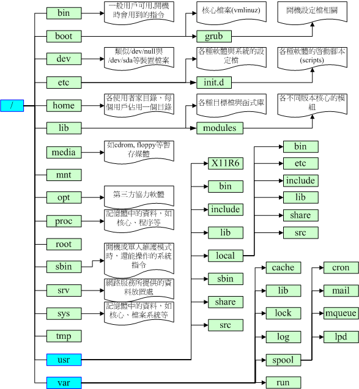
看完了FHS标准之后，现在回到第三章里面去看看安装前Linux规划的分割情况. 根据FHS的定义，妳最好能够将/var独立出来， 这样对于系统的数据还有一些安全性的保护呢！因为至少/var死掉时，你的根目录还会活着嘛！ 还能够进入救援模式
3.3 绝对路径与相对路径
例题： 网络文件常常提到类似『./run.sh』之类的数据，这个指令的意义为何？
答： 由于指令的执行需要变量(bash章节才会提到)的支持，若你的执行文件放置在本目录，并且本目录并非正规的执行文件目录(/bin, /usr/bin等为正规)，此时要执行指令就得要严格指定该执行档。『./』代表『本目录』的意思，所以『./run.sh』代表『执行本目录下， 名为run.sh的文件』啰！
3.4 CentOS 的观察： lsbrelease
某些时刻你可能想要知道你的 distribution 使用的是那个 Linux 标准 (Linux Standard Base)， 而且我们也知道 distribution 使用的都是 Linux 的核心！那你如何观察这些基本的信息呢
$ uname -r 4.9.8-moby $ lsb_release -a No LSB modules are available. Distributor ID: Ubuntu Description: Ubuntu 16.04.2 LTS Release: 16.04 Codename: xenial
4. 重点回顾
- Linux的每个文件中，依据权限分为使用者、群组与其他人三种身份；
- 群组最有用的功能之一，就是当你在团队开发资源的时候，且每个账号都可以有多个群组的支持；
- 利用ls -l显示的文件属性中，第一个字段是文件的权限，共有十个位，第一个位是文件类型， 接下来三个为一组共三组，为使用者、群组、其他人的权限，权限有r,w,x三种；
- 如果档名之前多一个『 . 』，则代表这个文件为『隐藏档』；
- 更改文件的群组支持可用chgrp，修改文件的拥有者可用chown，修改文件的权限可用chmod
- chmod修改权限的方法有两种，分别是符号法与数字法，数字法中r,w,x分数为4,2,1；
- 对文件来讲，权限的效能为：
- r：可读取此一文件的实际内容，如读取文本文件的文字内容等；
- w：可以编辑、新增或者是修改该文件的内容(但不含删除该文件)；
- x：该文件具有可以被系统执行的权限。
- 对目录来说，权限的效能为：
- r (read contents in directory)
- w (modify contents of directory)
- x (access directory)
- 要开放目录给任何人浏览时，应该至少也要给予r及x的权限，但w权限不可随便给；
- Linux档名的限制为：单一文件或目录的最大容许文件名为 255 个字符；包含完整路径名称及目录 (/) 之完整档名为 4096 个字符
- 根据FHS的官方文件指出， 他们的主要目的是希望让使用者可以了解到已安装软件通常放置于那个目录下
- FHS订定出来的四种目录特色为：shareable, unshareable, static, variable等四类；
- FHS所定义的三层主目录为：/, /var, /usr三层而已；
- 有五个目录不可与根目录放在不同的partition，分别为/etc, /bin, /lib, /dev, /sbin五个。
5. 本章练习
请说明/bin与/usr/bin目录所放置的执行文件有何不同之处？
/bin主要放置在开机时，以及进入单人维护模式后还能够被使用的指令，至于/usr/bin则是大部分软件提供的指令放置处。
请说明/bin与/sbin目录所放置的执行文件有何不同之处？
/bin放置的是一般用户惯用的指令，至于/sbin则是系统管理员才会使用到的指令。不过/bin与/sbin都与开机、单人维护模式有关。 更多的执行档会被放置到/usr/bin及/usr/sbin底下。
哪几个目录不能够与根目录(/)放置到不同的partition中？并请说明该目录所放置的数据为何？
/etc(配置文件), /bin(一般身份可用执行文件), /dev(装置文件), /lib(执行档的函式库或核心模块等), /sbin(系统管理员可用指令)
试说明为何根目录要小一点比较好？另外在分割时，为什么/home, /usr, /var, /tmp最好与根目录放到不同的分割槽？ 试说明可能的原因为何(由目录放置数据的内容谈起)？
根据FHS的说明，越小的/可以放置的较为集中且读取频率较不频繁，可避免较多的错误。 至于/home(用户家目录), /usr(软件资源), /var(变动幅度较大的数据), /tmp(系统暂存，数据莫名)中， 因为数据量较大或者是读取频率较高，或者是不明的使用情况较多，因此建议不要与根目录放在一起， 也会有助于系统安全。
早期的 Unix 系统文件名最多允许 14 个字符，而新的 Unix 与 Linux 系统中，文件名最多可以容许几个字符？
由于使用Ext2/Ext3文件系统，单一档名可达 255 字符，完整文件名 (包含路径) 可达 4096 个字符
Linux 传统的文件系统为何？此外，常用的 Journaling 文件格式有哪些？
传统文件格式为：ext2, Journaling 有 ext3 及 Reiserfs 等
请问底下的目录与主要放置什么数据： etc, /etc/init.d, /boot, /usr/bin, /bin, /usr/sbin, /sbin, /dev, /var/log
- /etc/：几乎系统的所有配置文件案均在此，尤其 passwd,shadow
- /etc/init.d：系统开机的时候加载服务的 scripts 的摆放地点
- /boot：开机配置文件，也是预设摆放核心 vmlinuz 的地方
- /usr/bin, /bin：一般执行档摆放的地方
- /usr/sbin, /sbin：系统管理员常用指令集
- /dev：摆放所有系统装置文件的目录
- /var/log：摆放系统注册表文件的地方
6. 参考资料与延伸阅读
第七章、Linux 文件与目录管理
在这个章节当中，我们就直接来进一步的操作与管理文件与目录, 包括在不同的目录间变换、 创建与删除目录、创建与删除文件，还有寻找文件、查阅文件内容等等
1. 目录与路径
目录的问题当中，最重要的莫过於第六章也谈过的『绝对路径』与『相对路径』的意义. 此外，当你下达命令时，该命令是透过什么功能来取得的？ 这与PATH这个变量有关
1.1 相对路径与绝对路径
路径(PATH)
相对路径的用途
方便！
绝对路径的用途
在写程序 (shell scripts) 来管理系统的条件下，务必使用绝对路径的写法。 怎么说呢？因为绝对路径的写法虽然比较麻烦，但是可以肯定这个写法绝对不会有问题。 如果使用相对路径在程序当中，则可能由於你运行的工作环境不同，导致一些问题的发生。 这个问题在工作排程(at, cron, 第十六章)当中尤其重要！这个现象我们在十三章、shell script时，会再次的提醒
1.2 目录的相关操作： cd, pwd, mkdir, rmdir
比较特殊的目录:
- . 代表此层目录
- .. 代表上一层目录
- - 代表前一个工作目录
- ~ 代表『目前使用者身份』所在的家目录
- ~account 代表 account 这个使用者的家目录(account是个帐号名称)
几个常见的处理目录的命令吧：
- cd：变换目录
- pwd：显示目前的目录
- mkdir：创建一个新的目录
- rmdir：删除一个空的目录
cd
cd是Change Directory的缩写
- 使用『 cd ~ 』可以回到个人的家目录里
- 使用『 cd - 』可以回到previous目录里
pwd (显示目前所在的目录)
pwd是Print Working Directory的缩写
其实有趣的是那个 -P 的选项啦！他可以让我们取得正确的目录名称，而不是以连结档的路径来显示的。 如果你使用的是CentOS 5.x的话，刚刚好/var/mail是/var/spool/mail的连结档， 所以，透过到/var/mail下达pwd -P就能够知道这个选项的意义
mkdir (创建新目录)
Options:
- -p: 自动建立多层目录，不建议常用-p这个选项，因为担心如果你打错字，那么目录名称就会变的乱七八糟
- -m: 强制给予一个新的目录相关的权限，例如
mkdir -m 711 test2. 如果没有给予 -m 选项时， 那么默认的新建目录权限又是什么呢？这个跟 umask 有关，我们在本章后头会加以介绍
rmdir (删除『空』的目录)
目录需要一层一层的删除才行！而且被删除的目录里面必定不能存在其他的目录或文件
如果要将所有目录下的东西都杀掉呢？！ 这个时候就必须使用『 rm -r test 』
还是使用 rmdir 比较不危险！
也可以尝试以 -p 的选项加入，来删除上一级的目录
1.3 关於运行档路径的变量： $PATH
环境变量 PATH
当我们在运行一个命令的时候，举例来说『ls』好了，系统会依照PATH的配置去每个PATH定义的目录下搜寻档名为ls的可运行档， 如果在PATH定义的目录中含有多个档名为ls的可运行档，那么先搜寻到的同名命令先被运行
可以透过使用绝对路径或者是相对路径直接指定这个运行档档名
请下达『echo $PATH』来看看到底有哪些目录被定义
$ echo $PATH
/root/.rbenv/plugins/ruby-build/bin:/root/.rbenv/shims:/root/.rbenv/bin:/usr/local/bin:/usr/bin:/bin:/usr/sbin:/sbin:/root/.rvm/bin
PATH(一定是大写)这个变量的内容是由一堆目录所组成的，每个目录中间用冒号(:)来隔开， 每个目录是有『顺序』之分的。
用几个范例来让你了解一下，为什么PATH是那么重要:
例题： 请问你能不能使用一般身份使用者下达ifconfig eth0这个命令呢？
答： 如上面的范例所示，当你使用vbird这个帐号运行ifconfig时，会出现『-bash: ifconfig: command not found』的字样， 因为ifconfig的是放置到/sbin底下，而由上表的结果中我们可以发现vbird的PATH并没有配置/sbin， 所以默认无法运行。
但是你可以使用『/sbin/ifconfig eth0』来运行这个命令喔！因为一般用户还是可以使用ifconfig来查询系统IP的参数， 既然PATH没有规范到/sbin，那么我们使用『绝对路径』也可以运行到该命令的！
如果想要让root在任何目录均可运行/root底下的ls，那么就将/root加入PATH当中即可。 加入的方法很简单，就像底下这样：
[root@www ~]# PATH="$PATH":/root
例题： 为什么PATH搜寻的目录不加入本目录(.)？加入本目录的搜寻不是也不错？
答： 如果在PATH中加入本目录(.)后，确实我们就能够在命令所在目录进行命令的运行了。 但是由於你的工作目录并非固定(常常会使用cd来切换到不同的目录)， 因此能够运行的命令会有变动(因为每个目录底下的可运行档都不相同嘛！)，这对使用者来说并非好事。
另外，如果有个坏心使用者在/tmp底下做了一个命令，因为/tmp是大家都能够写入的环境，所以他当然可以这样做。 假设该命令可能会窃取使用者的一些数据，如果你使用root的身份来运行这个命令，那不是很糟糕？ 如果这个命令的名称又是经常会被用到的ls时，那『中标』的机率就更高了！
所以，为了安全起见，不建议将『.』加入PATH的搜寻目录中。
而由上面的几个例题我们也可以知道几件事情：
- 不同身份使用者默认的PATH不同，默认能够随意运行的命令也不同(如root与vbird)；
- PATH是可以修改的，所以一般使用者还是可以透过修改PATH来运行某些位於/sbin或/usr/sbin下的命令来查询；
- 使用绝对路径或相对路径直接指定某个命令的档名来运行，会比搜寻PATH来的正确；
- 命令应该要放置到正确的目录下，运行才会比较方便；
- 本目录(.)最好不要放到PATH当中。
对於PATH更详细的『变量』说明，我们会在第三篇的bash shell中详细说明
2. 文件与目录管理
文件与目录的管理上，不外乎『显示属性』、 『拷贝』、『删除文件』及『移动文件或目录』等等，由於文件与目录的管理在 Linux 当中是很重要的， 尤其是每个人自己家目录的数据也都需要注意管理
2.1 文件与目录的检视： ls
ls [-aAdfFhilnrRSt] 目录名称
ls [--color={never,auto,always}] 目录名称
ls [--full-time] 目录名称
选项与参数：
- -a ：全部的文件，连同隐藏档( 开头为 . 的文件) 一起列出来(常用)
- -A ：全部的文件，连同隐藏档，但不包括 . 与 .. 这两个目录
- -d ：仅列出目录本身，而不是列出目录内的文件数据(常用)
- -f ：直接列出结果，而不进行排序 (ls 默认会以档名排序！)
- -F ：根据文件、目录等资讯，给予附加数据结构，例如：
- *:代表可运行档； /:代表目录； =:代表 socket 文件； |:代表 FIFO 文件；
- -h ：将文件容量以人类较易读的方式(例如 GB, KB 等等)列出来；
- -i ：列出 inode 号码，inode 的意义下一章将会介绍；
- -l ：长数据串列出，包含文件的属性与权限等等数据；(常用)
- -n ：列出 UID 与 GID 而非使用者与群组的名称 (UID与GID会在帐号管理提到！)
- -r ：将排序结果反向输出，例如：原本档名由小到大，反向则为由大到小；
- -R ：连同子目录内容一起列出来，等於该目录下的所有文件都会显示出来；
- -S ：以文件容量大小排序，而不是用档名排序；
- -t ：依时间排序，而不是用档名。
- –color=never ：不要依据文件特性给予颜色显示；
- –color=always ：显示颜色
- –color=auto ：让系统自行依据配置来判断是否给予颜色
- –full-time ：以完整时间模式 (包含年、月、日、时、分) 输出
- –time={atime,ctime} ：输出 access 时间或改变权限属性时间 (ctime) 而非内容变更时间 (modification time)(更多时间说明请参考本章后面touch的说明)
2.2 复制、删除与移动： cp, rm, mv
cp 除了单纯的复制之外，还可以创建连结档 (就是捷径罗)，比对两文件的新旧而予以升级， 以及复制整个目录等等的功能
移动目录与文件，则使用 mv (move)， 这个命令也可以直接拿来作更名 (rename) 的动作
cp (复制文件或目录)
cp [-adfilprsu] 来源档(source) 目标档(destination) cp [options] source1 source2 source3 .... directory
选项与参数：
- -a ：相当於 -pdr 的意思，至於 pdr 请参考下列说明；(常用)
- -d ：若来源档为连结档的属性(link file)，则复制连结档属性而非文件本身； 如果没有加上任何选项时，cp复制的是原始文件，而非连结档的属性！若要复制连结档的属性，就得要使用 -d 的选项
- -f ：为强制(force)的意思，若目标文件已经存在且无法开启，则移除后再尝试一次；
- -i ：若目标档(destination)已经存在时，在覆盖时会先询问动作的进行(常用)
- -l ：进行硬式连结(hard link)的连结档创建，而非复制文件本身；
- -p ：连同文件的属性一起复制过去，而非使用默认属性(备份常用)；
- -r ：递回持续复制，用於目录的复制行为；(常用)
- -s ：复制成为符号连结档 (symbolic link)，亦即『捷径』文件；
- -u ：若 destination 比 source 旧才升级 destination ！
最后需要注意的，如果来源档有两个以上，则最后一个目的档一定要是『目录』才行！
复制(cp)这个命令是非常重要的，不同身份者运行这个命令会有不同的结果产生，尤其是那个-a, -p的选项， 对於不同身份来说，差异则非常的大
在默认的条件中， cp 的来源档与目的档的权限是不同的，目的档的拥有者通常会是命令操作者本身。举例来说， 上面的范例二中，由於我是 root 的身份，因此复制过来的文件拥有者与群组就改变成为 root 所有了！
Note: 由於具有这个特性，因此当我们在进行备份的时候，某些需要特别注意的特殊权限文件， 例如密码档 (/etc/shadow) 以及一些配置档，就不能直接以 cp 来复制，而必须要加上 -a 或者是 -p 等等可以完整复制文件权限的选项才行！另外，如果你想要复制文件给其他的使用者， 也必须要注意到文件的权限(包含读、写、运行以及文件拥有者等等)， 否则，其他人还是无法针对你给予的文件进行修订
范例四：将范例一复制的 bashrc 创建一个连结档 (symbolic link)
[root@www tmp]# ls -l bashrc -rw-r--r-- 1 root root 176 Sep 24 14:02 bashrc <==先观察一下文件情况 [root@www tmp]# cp -s bashrc bashrc_slink [root@www tmp]# cp -l bashrc bashrc_hlink [root@www tmp]# ls -l bashrc* -rw-r--r-- 2 root root 176 Sep 24 14:02 bashrc <==与原始文件不太一样了！ -rw-r--r-- 2 root root 176 Sep 24 14:02 bashrc_hlink lrwxrwxrwx 1 root root 6 Sep 24 14:20 bashrc_slink -> bashrc
使用 -l 及 -s 都会创建所谓的连结档(link file)，但是这两种连结档却有不一样的情况。这是怎么一回事啊？ 那个 -l 就是所谓的实体连结(hard link)，至於 -s 则是符号连结(symbolic link)， 简单来说，bashrcslink 是一个『捷径』，这个捷径会连结到bashrc去！所以你会看到档名右侧会有个指向(->)的符号！
至於bashrchlink文件与 bashrc的属性与权限完全一模一样，与尚未进行连结前的差异则是第二栏的link 数由1变成2了！ 鸟哥这里先不介绍实体连结，因为实体连结涉及 i-node 的相关知识，我们下一章谈到文件系统(filesystem)时再来讨论这个问题
范例五：若 ~/.bashrc 比 /tmp/bashrc 新才复制过来 [ME: 增量备份！]
[root@www tmp]# cp -u ~/.bashrc /tmp/bashrc # 这个 -u 的特性，是在目标文件与来源文件有差异时，才会复制的。 # 所以，比较常被用於『备份』的工作当中喔
例题： 你能否使用vbird的身份，完整的复制/var/log/wtmp文件到/tmp底下，并更名为vbirdwtmp呢？
答： 实际做看看的结果如下：
[vbird@www ~]$ cp -a /var/log/wtmp /tmp/vbird_wtmp [vbird@www ~]$ ls -l /var/log/wtmp /tmp/vbird_wtmp -rw-rw-r-- 1 vbird vbird 96384 9月 24 11:54 /tmp/vbird_wtmp -rw-rw-r-- 1 root utmp 96384 9月 24 11:54 /var/log/wtmp
由於vbird的身份并不能随意修改文件的拥有者与群组，因此虽然能够复制wtmp的相关权限与时间等属性， 但是与拥有者、群组相关的，原本vbird身份无法进行的动作，即使加上 -a 选项，也是无法达成完整复制权限
总之，由於 cp 有种种的文件属性与权限的特性，所以，在复制时，你必须要清楚的了解到：
- 是否需要完整的保留来源文件的资讯？
- 来源文件是否为连结档 (symbolic link file)？
- 来源档是否为特殊的文件，例如 FIFO, socket 等？
- 来源档是否为目录？
rm (移除文件或目录)
rm [-fir] 文件或目录
选项与参数：
- -f ：就是 force 的意思，忽略不存在的文件，不会出现警告信息；
- -i ：互动模式，在删除前会询问使用者是否动作
- -r ：递回删除啊！最常用在目录的删除了！这是非常危险的选项！！！
root ，默认已经加入了 -i 的选项，所以你要一直按 y 才会删除！
如果不想要继续按 y ，可以按下『 [ctrl]-c 』来结束 rm 的工作。 这是一种保护的动作，如果确定要删除掉此目录而不要询问，可以这样做：
\rm -r /tmp/etc
在命令前加上反斜线，可以忽略掉 alias 的指定选项喔！至於 alias 我们在bash再谈！
通常在Linux系统下，为了怕文件被误杀，所以很多 distributions 都已经默认加入 -i 这个选项了！而如果要连目录下的东西都一起杀掉的话， 例如子目录里面还有子目录时，那就要使用 -r 这个选项了！不过，使用『 rm -r 』这个命令之前，请千万注意了，因为该目录或文件『肯定』会被 root 杀掉！因为系统不会再次询问你
Tip: 档名最好不要使用 "-" 号开头， 因为 "-" 后面接的是选项，因此，单纯的使用『 rm -aaa- 』系统的命令就会误判啦！ 那如果使用后面会谈到的正规表示法时，还是会出问题的！所以，只能用避过首位字节是 "-" 的方法啦！ 就是加上本目录『 ./ 』即可！如果 man rm 的话，其实还有一种方法，那就是『 rm – -aaa- 』
mv (移动文件与目录，或更名)
mv [-fiu] source destination mv [options] source1 source2 source3 .... directory
选项与参数：
- -f ：force 强制的意思，如果目标文件已经存在，不会询问而直接覆盖；
- -i ：若目标文件 (destination) 已经存在时，就会询问是否覆盖！
- -u ：若目标文件已经存在，且 source 比较新，才会升级 (update)
在 Linux 才有的命令当中，有个 rename ， 可以用来更改大量文件的档名，你可以利用 man rename 来查阅一下
2.3 取得路径的文件名称与目录名称
取得档名或者是目录名称，一般的用途应该是在写程序的时候，用来判断之用. 这部分的命令可以用在第三篇内的 shell scripts 里
底下我们简单的以几个范例来谈一谈 basename 与 dirname 的用途
[root@www ~]# basename /etc/sysconfig/network network <== 很简单！就取得最后的档名～ [root@www ~]# dirname /etc/sysconfig/network /etc/sysconfig <== 取得的变成目录名了！
3. 文件内容查阅：
最常使用的显示文件内容的命令可以说是 cat 与 more 及 less 了
如果我们要查看一个很大型的文件 (好几百MB时)，但是我们只需要后端的几行字而已，那么该如何是好？呵呵！用 tail 呀，此外， tac 这个命令也可以达到
- cat : 由第一行开始显示文件内容
- tac : 从最后一行开始显示，可以看出 tac 是 cat 的倒著写！
- nl : 显示的时候，顺道输出行号！
- more: 一页一页的显示文件内容
- less: 与 more 类似，但是比 more 更好的是，他可以往前翻页！[ME: vim keymap]
- head: 只看头几行
- tail: 只看尾巴几行
- od : 以二进位的方式读取文件内容！
3.1 直接检视文件内容： cat, tac, nl
cat (concatenate)
cat [-AbEnTv]
选项与参数：
- -A ：相当於 -vET 的整合选项，可列出一些特殊字符而不是空白而已；
- -b ：列出行号，仅针对非空白行做行号显示，空白行不标行号！
- -E ：将结尾的断行字节 $ 显示出来；
- -n ：列印出行号，连同空白行也会有行号，与 -b 的选项不同；
- -T ：将 [tab] 按键以 ^I 显示出来；
- -v ：列出一些看不出来的特殊字符
Tip: 断行字节则是以 $ 表示，所以你可以发现每一行后面都是 $ 啊！不过断行字节 在Windows/Linux则不太相同，Windows的断行字节是 ^M$ 罗。这部分我们会在第十章 vim 软件的介绍时，再次的说明到喔！
tac (反向列示)
功能就跟 cat 相反
nl (添加行号列印)
nl [-bnw] 文件
选项与参数：
- -b ：指定行号指定的方式，主要有两种：
- -b a ：表示不论是否为空行，也同样列出行号(类似 cat -n)；
- -b t ：如果有空行，空的那一行不要列出行号(默认值)；
- -n ：列出行号表示的方法，主要有三种：
- -n ln ：行号在萤幕的最左方显示；
- -n rn ：行号在自己栏位的最右方显示，且不加 0 ；
- -n rz ：行号在自己栏位的最右方显示，且加 0 ；
- -w ：行号栏位的占用的位数。
Example: 如果要让行号前面自动补上 0 呢？可这样
[root@www ~]# nl -b a -n rz /etc/issue 000001 CentOS release 5.3 (Final) 000002 Kernel \r on an \m 000003
默认栏位是六位数，如果想要改成 3 位数？
[root@www ~]# nl -b a -n rz -w 3 /etc/issue 001 CentOS release 5.3 (Final) 002 Kernel \r on an \m 003
变成仅有 3 位数
3.2 可翻页检视： more, less
more (一页一页翻动)
--More--(28%) <== 重点在这一行喔！你的光标也会在这里等待你的命令
more 后面接的文件内容行数大於萤幕输出的行数时， 就会出现类似上面的图示。重点在最后一行，最后一行会显示出目前显示的百分比， 而且还可以在最后一行输入一些有用的命令喔！在 more 这个程序的运行过程中，你有几个按键可以按的：
- 空白键 (space)：代表向下翻一页；
- Enter ：代表向下翻『一行』；
- /字串 ：代表在这个显示的内容当中，向下搜寻『字串』这个关键字；重复搜寻同一个字串， 可以直接按下 n 即可
- :f ：立刻显示出档名以及目前显示的行数；
- q ：代表立刻离开 more ，不再显示该文件内容。
- b 或 [ctrl]-b ：代表往回翻页，不过这动作只对文件有用，对管线无用。
less (一页一页翻动)
可以输入的命令有：
- 空白键 ：向下翻动一页；
- [pagedown]：向下翻动一页；
- [pageup] ：向上翻动一页；
- /字串 ：向下搜寻『字串』的功能；
- ?字串 ：向上搜寻『字串』的功能；
- n ：重复前一个搜寻 (与 / 或 ? 有关！)
- N ：反向的重复前一个搜寻 (与 / 或 ? 有关！)
- q ：离开 less 这个程序；
详细的使用方式请使用 man less 查询
3.3 数据撷取： head, tail
要注意的是， head 与 tail 都是以『行』为单位来进行数据撷取
head (取出前面几行)
head [-n number] 文件
选项与参数：
- -n ：后面接数字，代表显示几行的意思. 默认的情况中，显示前面十行！ 如果接的是负数，例如下面范例的-n -100时，代表列前的所有行数， 但不包括后面100行。
范例：如果后面100行的数据都不列印，只列印/etc/man.config的前面几行，该如何是好？
head -n -100 /etc/man.config
tail (取出后面几行)
tail [-n number] 文件 选项与参数： -n ：后面接数字，代表显示几行的意思 -f ：表示持续侦测后面所接的档名，要等到按下[ctrl]-c才会结束tail的侦测
tail /etc/man.config
默认的情况中，显示最后的十行！若要显示最后的 20 行，就得要这样：
tail -n 20 /etc/man.config
范例一：如果不知道/etc/man.config有几行，却只想列出100行以后的数据时？
tail -n +100 /etc/man.config
范例二：持续侦测/var/log/messages的内容
tail -f /var/log/messages
要等到输入[crtl]-c之后才会离开tail这个命令的侦测！
例题： 假如我想要显示 /etc/man.config 的第 11 到第 20 行呢？
答： 这个应该不算难，想一想，在第 11 到第 20 行，那么我取前 20 行，再取后十行，所以结果就是：『 head -n 20 /etc/man.config | tail -n 10 』，这样就可以得到第 11 到第 20 行之间的内容了！ 但是里面涉及到管线命令，需要在第三篇的时候才讲的到！
3.4 非纯文字档： od
万一我们想要查阅非文字档，举例来说，例如 /usr/bin/passwd 这个运行档的内容时， 又该如何去读出资讯呢？事实上，由於运行档通常是 binary file ，使用上头提到的命令来读取他的内容时， 确实会产生类似乱码的数据
od [-t TYPE] 文件
选项或参数：
- -t ：后面可以接各种『类型 (TYPE)』的输出，例如：
- a ：利用默认的字节来输出；
- c ：使用 ASCII 字节来输出
- d[size] ：利用十进位(decimal)来输出数据，每个整数占用 size bytes ；
- f[size] ：利用浮点数值(floating)来输出数据，每个数占用 size bytes ；
- o[size] ：利用八进位(octal)来输出数据，每个整数占用 size bytes ；
- x[size] ：利用十六进位(hexadecimal)来输出数据，每个整数占用 size bytes ；
范例一：请将/usr/bin/passwd的内容使用ASCII方式来展现！
od -t c /usr/bin/passwd
Output:
0000000 177 E L F 001 001 001 \0 \0 \0 \0 \0 \0 \0 \0 \0 0000020 002 \0 003 \0 001 \0 \0 \0 260 225 004 \b 4 \0 \0 \0 0000040 020 E \0 \0 \0 \0 \0 \0 4 \0 \0 \a \0 ( \0 0000060 035 \0 034 \0 006 \0 \0 \0 4 \0 \0 \0 4 200 004 \b 0000100 4 200 004 \b 340 \0 \0 \0 340 \0 \0 \0 005 \0 \0 \0 .....(后面省略)....
- 最左边第一栏是以 8 进位来表示bytes数。以上面范例来说，第二栏0000020代表开头是
- 第 16 个 byes (2x8) 的内容之意。
范例二：请将/etc/issue这个文件的内容以8进位列出储存值与ASCII的对照表
od -t oCc /etc/issue
Output:
0000000 103 145 156 164 117 123 040 162 145 154 145 141 163 145 040 065
C e n t O S r e l e a s e 5
0000020 056 062 040 050 106 151 156 141 154 051 012 113 145 162 156 145
. 2 ( F i n a l ) \n K e r n e
0000040 154 040 134 162 040 157 156 040 141 156 040 134 155 012 012
l \ r o n a n \ m \n \n
0000057
- 如上所示，可以发现每个字节可以对应到的数值为何！
- 例如e对应的记录数值为145，转成十进位：1x82+4x8+5=101。
透过 -t c 的选项与参数来将数据内的字节以 ASCII 类型的字节来显示， 虽然对於一般使用者来说，这个命令的用处可能不大，但是对於工程师来说， 这个命令可以将 binary file 的内容作一个大致的输出，他们可以看得出东西的
对纯文字档使用这个命令，你甚至可以发现到 ASCII 与字节的对照表！非常有趣！
3.5 修改文件时间与建置新档： touch
每个文件在linux底下都会记录许多的时间参数， 其实是有三个主要的变动时间，那么三个时间的意义是什么呢？
- modification time (mtime)： 当该文件的『内容数据』变更时，就会升级这个时间！内容数据指的是文件的内容，而不是文件的属性或权限喔！
- status time (ctime)： 当该文件的『状态 (status)』改变时，就会升级这个时间，举例来说，像是权限与属性被更改了，都会升级这个时间啊。
- access time (atime)： 当『该文件的内容被取用』时，就会升级这个读取时间 (access)。举例来说，我们使用 cat 去读取 /etc/man.config ， 就会升级该文件的 atime 了。
Example:
[root@www ~]# ls -l /etc/man.config -rw-r--r-- 1 root root 4617 Jan 6 2007 /etc/man.config [root@www ~]# ls -l --time=atime /etc/man.config -rw-r--r-- 1 root root 4617 Sep 25 17:54 /etc/man.config [root@www ~]# ls -l --time=ctime /etc/man.config -rw-r--r-- 1 root root 4617 Sep 4 18:03 /etc/man.config
文件的时间是很重要的，因为，如果文件的时间误判的话，可能会造成某些程序无法顺利的运行。
那么万一我发现了一个文件来自未来，该如何让该文件的时间变成『现在』的时刻呢？ 很简单啊！就用『touch』这个命令
Tip: 嘿嘿！不要怀疑系统时间会『来自未来』喔！很多时候会有这个问题的！举例来说在安装过后系统时间可能会被改变！ 因为台湾时区在国际标准时间『格林威治时间, GMT』的右边，所以会比较早看到阳光，也就是说，台湾时间比GMT时间快了八小时！ 如果安装行为不当，我们的系统可能会有八小时快转，你的文件就有可能来自八小时后了。 至於某些情况下，由於BIOS的配置错误，导致系统时间跑到未来时间，并且你又创建了某些文件。 等你将时间改回正确的时间时，该文件不就变成来自未来了？
touch [-acdmt] 文件
选项与参数：
- -a ：仅修订 access time；
- -c ：仅修改文件的时间，若该文件不存在则不创建新文件；
- -d ：后面可以接欲修订的日期而不用目前的日期，也可以使用 –date="日期或时间"
- -m ：仅修改 mtime ；
- -t ：后面可以接欲修订的时间而不用目前的时间，格式为[YYMMDDhhmm]
范例一：新建一个空的文件并观察时间
[root@www ~]# cd /tmp [root@www tmp]# touch testtouch [root@www tmp]# ls -l testtouch -rw-r--r-- 1 root root 0 Sep 25 21:09 testtouch
- 注意到，这个文件的大小是 0 呢！在默认的状态下，如果 touch 后面有接文件，
- 则该文件的三个时间 (atime/ctime/mtime) 都会升级为目前的时间。若该文件不存在，
- 则会主动的创建一个新的空的文件喔！例如上面这个例子！
范例二：将 ~/.bashrc 复制成为 bashrc，假设复制完全的属性，检查其日期
[root@www tmp]# cp -a ~/.bashrc bashrc [root@www tmp]# ll bashrc; ll --time=atime bashrc; ll --time=ctime bashrc -rw-r--r-- 1 root root 176 Jan 6 2007 bashrc <==这是 mtime -rw-r--r-- 1 root root 176 Sep 25 21:11 bashrc <==这是 atime -rw-r--r-- 1 root root 176 Sep 25 21:12 bashrc <==这是 ctime
- 分号『 ; 』则代表连续命令的下达啦！你可以在一行命令当中写入多重命令， 这些命令可以『依序』运行。
- 运行的结果当中，我们可以发现数据的内容与属性是被复制过来的，因此文件内容时间(mtime)与原本文件相同。 但是由於这个文件是刚刚被创建的，因此状态(ctime)与读取时间就便呈现在的时间
范例三：修改案例二的 bashrc 文件，将日期调整为两天前
[root@www tmp]# touch -d "2 days ago" bashrc [root@www tmp]# ll bashrc; ll --time=atime bashrc; ll --time=ctime bashrc -rw-r--r-- 1 root root 176 Sep 23 21:23 bashrc -rw-r--r-- 1 root root 176 Sep 23 21:23 bashrc -rw-r--r-- 1 root root 176 Sep 25 21:23 bashrc
- 跟上个范例比较看看，本来是 25 日的变成了 23 日了 (atime/mtime)～
- 不过， ctime 并没有跟著改变喔！
范例四：将上个范例的 bashrc 日期改为 2007/09/15 2:02
[root@www tmp]# touch -t 0709150202 bashrc [root@www tmp]# ll bashrc; ll --time=atime bashrc; ll --time=ctime bashrc -rw-r--r-- 1 root root 176 Sep 15 2007 bashrc -rw-r--r-- 1 root root 176 Sep 15 2007 bashrc -rw-r--r-- 1 root root 176 Sep 25 21:25 bashrc
- 注意看看，日期在 atime 与 mtime 都改变了，但是 ctime 则是记录目前的时间！
要注意的是，即使我们复制一个文件时，复制所有的属性，但也没有办法复制 ctime 这个属性的。 ctime 可以记录这个文件最近的状态 (status) 被改变的时间。
我们平时看的文件属性中，比较重要的还是属於那个 mtime 啊！我们关心的常常是这个文件的『内容』 是什么时候被更动的
touch 这个命令最常被使用的情况是：
- 创建一个空的文件；
- 将某个文件日期修订为目前 (mtime 与 atime)
4. 文件与目录的默认权限与隐藏权限
除了基本r, w, x权限外，在Linux的Ext2/Ext3文件系统下，我们还可以配置其他的系统隐藏属性， 这部份可使用 chattr 来配置，而以 lsattr 来查看，最重要的属性就是可以配置其不可修改的特性！让连文件的拥有者都不能进行修改！ 这个属性可是相当重要的，尤其是在安全机制上面 (security)！
先来复习一下上一章谈到的权限概念，将底下的例题看一看
例题： 你的系统有个一般身份使用者 dmtsai，他的群组属於 users，他的家目录在 home/dmtsai， 你是root，你想将你的 ~.bashrc 复制给他，可以怎么作？
答： 由上一章的权限概念我们可以知道 root 虽然可以将这个文件复制给 dmtsai，不过这个文件在 dmtsai 的家目录中却可能让 dmtsai 没有办法读写(因为该文件属於 root 的嘛！而 dmtsai 又不能使用 chown 之故)。 此外，我们又担心覆盖掉 dmtsai 自己的 .bashrc 配置档，因此，我们可以进行如下的动作喔：
复制文件： cp ~/.bashrc ~dmtsai/bashrc 修改属性： chown dmtsai:users ~dmtsai/bashrc
例题： 我想在 /tmp 底下创建一个目录，这个目录名称为 chapter71 ，并且这个目录拥有者为 dmtsai， 群组为 users ，此外，任何人都可以进入该目录浏览文件，不过除了 dmtsai 之外，其他人都不能修改该目录下的文件。
答： 因为除了 dmtsai 之外，其他人不能修改该目录下的文件，所以整个目录的权限应该是 drwxr-xr-x 才对！ 因此你应该这样做：
创建目录： mkdir /tmp/chapter7_1 修改属性： chown -R dmtsai:users /tmp/chapter7_1 修改权限： chmod -R 755 /tmp/chapter7_1
4.1 文件默认权限：umask
当你创建一个新的文件或目录时，他的默认权限会是什么吗？
umask 就是指定 『目前使用者在创建文件或目录时候的权限默认值』， 那么如何得知或配置 umask 呢？他的指定条件以底下的方式来指定：
[root@www ~]# umask 0022 <==与一般权限有关的是后面三个数字！ [root@www ~]# umask -S u=rwx,g=rx,o=rx
查阅的方式有两种，
- 一种可以直接输入 umask ，就可以看到数字型态的权限配置分数，
- 一种则是加入 -S (Symbolic) 这个选项，就会以符号类型的方式来显示出权限了！
奇怪的是，怎么 umask 会有四组数字啊？不是只有三组吗？第一组是特殊权限用的，我们先不要理他，所以先看后面三组即可。
在默认权限的属性上，目录与文件是不一样的。从第六章我们知道 x 权限对於目录是非常重要的！ 但是一般文件的创建则不应该有运行的权限. 因此，默认的情况如下：
- 若使用者创建为『文件』则默认『没有可运行( x )权限』，亦即只有 rw 这两个项目，也就是最大为 666 分，默认权限如下： -rw-rw-rw-
- 若使用者创建为『目录』，则由於 x 与是否可以进入此目录有关，因此默认为所有权限均开放，亦即为 777 分，默认权限如下： drwxrwxrwx
umask 的分数指的是『该默认值需要减掉的权限！』因为 r、w、x 分别是 4、2、1 分，所以罗！也就是说，当要拿掉能写的权限，就是输入 2 分，而如果要拿掉能读的权限，也就是 4 分，那么要拿掉读与写的权限，也就是 6 分，而要拿掉运行与写入的权限，也就是 3 分，5 分就是读与运行的权限
以上面的例子来说明的话，因为 umask 为 022 ，所以 user 并没有被拿掉任何权限，不过 group 与 others 的权限被拿掉了 2 (也就是 w 这个权限)，那么当使用者：
- 创建文件时：(-rw-rw-rw-) - (–—w–w-) ==> -rw-r–r–
- 创建目录时：(drwxrwxrwx) - (d-—w–w-) ==> drwxr-xr-x
umask 的利用与重要性：专题制作
想像一个状况，如果你跟你的同学在同一部主机里面工作时，因为你们两个正在进行同一个专题， 老师也帮你们两个的帐号创建好了相同群组的状态，并且将 home/class 目录做为你们两个人的专题目录。 想像一下，有没有可能你所制作的文件你的同学无法编辑？果真如此的话，那就伤脑筋了！
『如果 umask 订定为 022 ，那新建的数据只有使用者自己具有 w 的权限， 同群组的人只有 r 这个可读的权限而已，并无法修改喔！』这样要怎么共同制作专题啊！
建文件给同群组的使用者共同编辑时，那么 umask 的群组就不能拿掉 2 这个 w 的权限！ 所以罗， umask 就得要是 002 之类的才可以！这样新建的文件才能够是 -rw-rw-r– 的权限模样喔！ 那么如何配置 umask 呢？简单的很，直接在 umask 后面输入 002 就好
[root@www ~]# umask 002 [root@www ~]# touch test3 [root@www ~]# mkdir test4 [root@www ~]# ll -rw-rw-r-- 1 root root 0 Sep 27 00:36 test3 drwxrwxr-x 2 root root 4096 Sep 27 00:36 test4
Note: 所以说，这个 umask 对於新建文件与目录的默认权限是很有关系的！这个概念可以用在任何服务器上面， 尤其是未来在你架设文件服务器 (file server) ，举例来说， SAMBA Server 或者是 FTP server 时， 都是很重要的观念！这牵涉到你的使用者是否能够将文件进一步利用的问题
例题： 假设你的 umask 为 003 ，请问该 umask 情况下，创建的文件与目录权限为？
答： umask 为 003 ，所以拿掉的权限为 –——wx，因此： 文件： (-rw-rw-rw-) - (–——wx) = -rw-rw-r– 目录： (drwxrwxrwx) - (–——wx) = drwxrwxr–
Tip: 有的书籍或者是 BBS 上面的朋友，喜欢使用文件默认属性 666 与目录默认属性 777 来与 umask 进行相减的计算～这是不好的喔！以上面例题来看， 如果使用默认属性相加减，则文件变成：666-003=663，亦即是 -rw-rw–wx ，这可是完全不对的喔！ 想想看，原本文件就已经去除 x 的默认属性了，怎么可能突然间冒出来了？ 所以，这个地方得要特别小心喔！
在默认的情况中， root 的 umask 会拿掉比较多的属性，root 的 umask 默认是 022 ， 这是基於安全的考量啦～至於一般身份使用者，通常他们的 umask 为 002 ，亦即保留同群组的写入权力！ 其实，关於默认 umask 的配置可以参考 etc/bashrc 这个文件的内容，不过，不建议修改该文件， 你可以参考第十一章 bash shell 提到的环境参数配置档 (~.bashrc) 的说明:w
4.2 文件隐藏属性： chattr, lsattr
要先强调的是，底下的chattr命令只能在Ext2/Ext3的文件系统上面生效， 其他的文件系统可能就无法支持这个命令了
chattr (配置文件隐藏属性)
chattr [+-=][ASacdistu] 文件或目录名称
选项与参数：
- + ：添加某一个特殊参数，其他原本存在参数则不动。
- - ：移除某一个特殊参数，其他原本存在参数则不动。
- = ：配置一定，且仅有后面接的参数
- A ：当配置了 A 这个属性时，若你有存取此文件(或目录)时，他的存取时间 atime 将不会被修改，可避免I/O较慢的机器过度的存取磁碟。这对速度较慢的计算机有帮助
- S ：一般文件是非同步写入磁碟的(原理请参考第五章sync的说明)，如果加上 S 这个属性时，当你进行任何文件的修改，该更动会『同步』写入磁碟中。
- a ：当配置 a 之后，这个文件将只能添加数据，而不能删除也不能修改数据，只有root 才能配置这个属性。
- c ：这个属性配置之后，将会自动的将此文件『压缩』，在读取的时候将会自动解压缩，但是在储存的时候，将会先进行压缩后再储存(看来对於大文件似乎蛮有用的！)
- d ：当 dump 程序被运行的时候，配置 d 属性将可使该文件(或目录)不会被 dump 备份
- i ：这个 i 可就很厉害了！他可以让一个文件『不能被删除、改名、配置连结也无法写入或新增数据！』对於系统安全性有相当大的助益！只有 root 能配置此属性
- s ：当文件配置了 s 属性时，如果这个文件被删除，他将会被完全的移除出这个硬盘空间，所以如果误删了，完全无法救回来了喔！
- u ：与 s 相反的，当使用 u 来配置文件时，如果该文件被删除了，则数据内容其实还 存在磁碟中，可以使用来救援该文件喔！
注意：属性配置常见的是 a 与 i 的配置值，而且很多配置值必须要身为 root 才能配置
范例：请尝试到/tmp底下创建文件，并加入 i 的参数，尝试删除看看。
[root@www ~]# cd /tmp [root@www tmp]# touch attrtest <==创建一个空文件 [root@www tmp]# chattr +i attrtest <==给予 i 的属性 [root@www tmp]# rm attrtest <==尝试删除看看 rm: remove write-protected regular empty file `attrtest'? y rm: cannot remove `attrtest': Operation not permitted <==操作不许可
- 看到了吗？连 root 也没有办法将这个文件删除呢！赶紧解除配置！
范例：请将该文件的 i 属性取消！
[root@www tmp]# chattr -i attrtest
这个命令是很重要的，尤其是在系统的数据安全上面！由於这些属性是隐藏的性质，所以需要以 lsattr 才能看到该属性呦！其中，个人认为最重要的当属 +i 与 +a 这个属性了。+i 可以让一个文件无法被更动，对於需要强烈的系统安全的人来说， 真是相当的重要的！里头还有相当多的属性是需要 root 才能配置的
Tip: 如果是 log file 这种的登录档，就更需要 +a 这个可以添加，但是不能修改旧有的数据与删除的参数了！登录档 (十九章)
lsattr (显示文件隐藏属性)
lsattr [-adR] 文件或目录
选项与参数：
- -a ：将隐藏档的属性也秀出来；
- -d ：如果接的是目录，仅列出目录本身的属性而非目录内的档名；
- -R ：连同子目录的数据也一并列出来！
[root@www tmp]# chattr +aij attrtest [root@www tmp]# lsattr attrtest ----ia---j--- attrtest
使用 chattr 配置后，可以利用 lsattr 来查阅隐藏的属性。
Tip: 不过， 这两个命令在使用上必须要特别小心，否则会造成很大的困扰。例如：某天你心情好，突然将 /etc/shadow 这个重要的密码记录文件给他配置成为具有 i 的属性，那么过了若干天之后， 你突然要新增使用者，却一直无法新增
4.4 文件特殊权限：SUID, SGID, SBIT, 权限配置
眼尖的朋友们在第六章的目录树章节中， 一定注意到了一件事，那就是，怎么我们的 /tmp 权限怪怪的？ 还有，那个 /usr/bin/passwd 也怪怪的？
[root@www ~]# ls -ld /tmp ; ls -l /usr/bin/passwd drwxrwxrwt 7 root root 4096 Sep 27 18:23 /tmp -rwsr-xr-x 1 root root 22984 Jan 7 2007 /usr/bin/passwd
因为 s 与 t 这两个权限的意义与系统的帐号 (第十四章)及系统的程序(process, 第十七章)较为相关， 所以等到后面的章节谈完后你才会比较有概念. 先知道s放在哪里称为SUID/SGID以及如何配置即可，等系统程序章节读完后，再回来看看
Set UID
当 s 这个标志出现在文件拥有者的 x 权限上时，例如刚刚提到的 /usr/bin/passwd 这个文件的权限状态：『-rwsr-xr-x』，此时就被称为 Set UID，简称为 SUID 的特殊权限。 那么SUID的权限对於一个文件的特殊功能是什么呢？基本上SUID有这样的限制与功能：
- SUID 权限仅对二进位程序(binary program)有效；
- 运行者对於该程序需要具有 x 的可运行权限；
- 本权限仅在运行该程序的过程中有效 (run-time)；
- 运行者将具有该程序拥有者 (owner) 的权限。
举个例子来说明好了。 我们的 Linux 系统中，所有帐号的密码都记录在 /etc/shadow 这个文件里面，这个文件的权限为：『-r–—— 1 root root』，意思是这个文件仅有root可读且仅有root可以强制写入而已。 既然这个文件仅有 root 可以修改，那么鸟哥的 vbird 这个一般帐号使用者能否自行修改自己的密码呢？ 你可以使用你自己的帐号输入『passwd』这个命令来看看 — 一般使用者当然可以修改自己的密码了！
有没有冲突啊！明明 /etc/shadow 就不能让 vbird 这个一般帐户去存取的，为什么 vbird 还能够修改这个文件内的密码呢？ 这就是 SUID 的功能. 藉由上述的功能说明，我们可以知道
- vbird 对於 /usr/bin/passwd 这个程序来说是具有 x 权限的，表示 vbird 能运行 passwd；
- passwd 的拥有者是 root 这个帐号；
- vbird 运行 passwd 的过程中，会『暂时』获得 root 的权限；
- /etc/shadow 就可以被 vbird 所运行的 passwd 所修改。
但如果 vbird 使用 cat 去读取 /etc/shadow 时，他能够读取吗？因为 cat 不具有 SUID 的权限，所以 vbird 运行 『cat /etc/shadow』 时，是不能读取 /etc/shadow 的。我们用一张示意图来说明如下：
图4.4.1、SUID程序运行的过程示意图
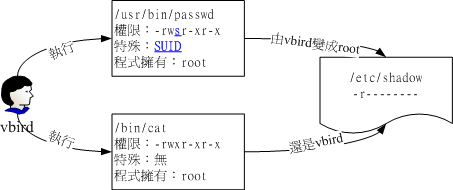
另外，SUID 仅可用在binary program 上， 不能够用在 shell script 上面！这是因为 shell script 只是将很多的 binary 运行档叫进来运行而已！所以 SUID 的权限部分，还是得要看 shell script 呼叫进来的程序的配置， 而不是 shell script 本身。当然，SUID 对於目录也是无效的～这点要特别留意。
Set GID
当 s 标志在文件拥有者的 x 项目为 SUID，那 s 在群组的 x 时则称为 Set GID, SGID
举例来说，你可以用底下的命令来观察到具有 SGID 权限的文件:
[root@www ~]# ls -l /usr/bin/locate -rwx--s--x 1 root slocate 23856 Mar 15 2007 /usr/bin/locate
[ME: not true on my linux box!]
与 SUID 不同的是，SGID 可以针对文件或目录来配置！如果是对文件来说， SGID 有如下的功能：
- SGID 对二进位程序有用；
- 程序运行者对於该程序来说，需具备 x 的权限；
- 运行者在运行的过程中将会获得该程序群组的支持！
举例来说，上面的 /usr/bin/locate 这个程序可以去搜寻 /var/lib/mlocate/mlocate.db 这个文件的内容 (详细说明会在下节讲述)， mlocate.db 的权限如下：
[root@www ~]# ll /usr/bin/locate /var/lib/mlocate/mlocate.db -rwx--s--x 1 root slocate 23856 Mar 15 2007 /usr/bin/locate -rw-r----- 1 root slocate 3175776 Sep 28 04:02 /var/lib/mlocate/mlocate.db
与 SUID 非常的类似，若我使用 vbird 这个帐号去运行 locate 时，那 vbird 将会取得 slocate 群组的支持， 因此就能够去读取 mlocate.db
除了 binary program 之外，事实上 SGID 也能够用在目录上，这也是非常常见的一种用途！ 当一个目录配置了 SGID 的权限后，他将具有如下的功能：
- 使用者若对於此目录具有 r 与 x 的权限时，该使用者能够进入此目录；
- 使用者在此目录下的有效群组(effective group)将会变成该目录的群组；
- 用途：若使用者在此目录下具有 w 的权限(可以新建文件)，则使用者所创建的新文件，该新文件的群组与此目录的群组相同。
SGID 对於专案开发来说是非常重要的！因为这涉及群组权限的问题，您可以参考一下本章后续情境模拟的案例，应该就能够对於 SGID 有一些了解
Sticky Bit
这个 Sticky Bit, SBIT 目前只针对目录有效，对於文件已经没有效果了。 SBIT 对於目录的作用是：
- 当使用者对於此目录具有 w, x 权限，亦即具有写入的权限时；
- 当使用者在该目录下创建文件或目录时，仅有自己与 root 才有权力删除该文件
换句话说：当甲这个使用者於 A 目录是具有群组或其他人的身份，并且拥有该目录 w 的权限， 这表示『甲使用者对该目录内任何人创建的目录或文件均可进行 "删除/更名/搬移" 等动作。』 不过，如果将 A 目录加上了 SBIT 的权限项目时， 则甲只能够针对自己创建的文件或目录进行删除/更名/移动等动作，而无法删除他人的文件。
举例来说，我们的 /tmp 本身的权限是『drwxrwxrwt』， 在这样的权限内容下，任何人都可以在 /tmp 内新增、修改文件，但仅有该文件/目录创建者与 root 能够删除自己的目录或文件。这个特性也是挺重要的啊！你可以这样做个简单的测试：
- 以 root 登陆系统，并且进入 /tmp 当中；
- touch test，并且更改 test 权限成为 777 ；
- 以一般使用者登陆，并进入 /tmp；
- 尝试删除 test 这个文件！
由於 SUID/SGID/SBIT 牵涉到程序的概念，因此再次强调，这部份的数据在您读完第十七章关於程序方面的知识后，要再次的回来瞧瞧喔！ 目前，你先有个简单的基础概念就好了！文末的参考数据也建议阅读一番
SUID/SGID/SBIT 权限配置
如何配置文件使成为具有 SUID 与 SGID 的权限呢？ 这就需要第六章的数字更改权限的方法了！ 现在你应该已经知道数字型态更改权限的方式为『三个数字』的组合， 那么如果在这三个数字之前再加上一个数字的话，最前面的那个数字就代表这几个权限了！
- 4 为 SUID
- 2 为 SGID
- 1 为 SBIT
假设要将一个文件权限改为『-rwsr-xr-x』时，由於 s 在使用者权限中，所以是 SUID ，因此， 在原先的 755 之前还要加上 4 ，也就是：『 chmod 4755 filename 』来配置. 此外，还有大 S 与大 T 的产生！参考底下的范例
Tip: 注意：底下的范例只是练习而已，所以鸟哥使用同一个文件来配置，你必须了解 SUID 不是用在目录上，而 SBIT 不是用在文件上的
[root@www ~]# cd /tmp [root@www tmp]# touch test <==创建一个测试用空档 [root@www tmp]# chmod 4755 test; ls -l test <==加入具有 SUID 的权限 -rwsr-xr-x 1 root root 0 Sep 29 03:06 test [root@www tmp]# chmod 6755 test; ls -l test <==加入具有 SUID/SGID 的权限 -rwsr-sr-x 1 root root 0 Sep 29 03:06 test [root@www tmp]# chmod 1755 test; ls -l test <==加入 SBIT 的功能！ -rwxr-xr-t 1 root root 0 Sep 29 03:06 test [root@www tmp]# chmod 7666 test; ls -l test <==具有空的 SUID/SGID 权限 -rwSrwSrwT 1 root root 0 Sep 29 03:06 test
最后一个例子就要特别小心啦！怎么会出现大写的 S 与 T 呢？不都是小写的吗？ 因为 s 与 t 都是取代 x 这个权限的，但是你有没有发现阿，我们是下达 7666 喔！也就是说， user, group 以及 others 都没有 x 这个可运行的标志( 因为 666 嘛 )，所以，这个 S, T 代表的就是『空的』啦！怎么说？ SUID 是表示『该文件在运行的时候，具有文件拥有者的权限』，但是文件 拥有者都无法运行了，哪里来的权限给其他人使用？当然就是空的
除了数字法之外，你也可以透过符号法来处理喔！其中 SUID 为 u+s ，而 SGID 为 g+s ，SBIT 则是 o+t 罗！来看看如下的范例：
# 配置权限成为 -rws--x--x 的模样： [root@www tmp]# chmod u=rwxs,go=x test; ls -l test -rws--x--x 1 root root 0 Aug 18 23:47 test # 承上，加上 SGID 与 SBIT 在上述的文件权限中！ [root@www tmp]# chmod g+s,o+t test; ls -l test -rws--s--t 1 root root 0 Aug 18 23:47 test
4.3 观察文件类型：file
如果你想要知道某个文件的基本数据，例如是属於 ASCII 或者是 data 文件，或者是 binary ， 且其中有没有使用到动态函式库 (share library) 等等的资讯，就可以利用 file 这个命令
[root@www ~]# file ~/.bashrc /root/.bashrc: ASCII text <==告诉我们是 ASCII 的纯文字档啊！ [root@www ~]# file /usr/bin/passwd /usr/bin/passwd: setuid ELF 32-bit LSB executable, Intel 80386, version 1 (SYSV), for GNU/Linux 2.6.9, dynamically linked (uses shared libs), for GNU/Linux 2.6.9, stripped # 运行档的数据可就多的不得了！包括这个文件的 suid 权限、兼容於 Intel 386 # 等级的硬件平台、使用的是 Linux 核心 2.6.9 的动态函式库连结等等。 [root@www ~]# file /var/lib/mlocate/mlocate.db /var/lib/mlocate/mlocate.db: data <== 这是 data 文件！
5. 命令与文件的搜寻：
我们常常需要知道那个文件放在哪里，才能够对该文件进行一些修改或维护等动作。 有些时候某些软件配置档的档名是不变的，但是各 distribution 放置的目录则不同。 此时就得要利用一些搜寻命令将该配置档的完整档名捉出来，这样才能修改
5.1 命令档名的搜寻：which
这些命令的完整档名放在哪里？透过 which 或 type 来找寻
which (寻找『运行档』)
which [-a] command
选项或参数：
- -a ：将所有由 PATH 目录中可以找到的命令均列出，而不止第一个被找到的命令名称
范例一：分别用root与一般帐号搜寻 ifconfig 这个命令的完整档名
[root@www ~]# which ifconfig /sbin/ifconfig <==用 root 可以找到正确的运行档名喔！ [root@www ~]# su - vbird <==切换身份成为 vbird 去！ [vbird@www ~]$ which ifconfig /usr/bin/which: no ifconfig in (/usr/kerberos/bin:/usr/local/bin:/bin:/usr/bin :/home/vbird/bin) <==见鬼了！竟然一般身份帐号找不到！
- 因为 which 是根据使用者所配置的 PATH 变量内的目录去搜寻可运行档的！所以，
- 不同的 PATH 配置内容所找到的命令当然不一样啦！因为 /sbin 不在 vbird 的
- PATH 中，找不到也是理所当然的啊！了乎？
[vbird@www ~]$ exit <==记得将身份切换回原本的 root
范例二：用 which 去找出 which 的档名为何？
[root@www ~]# which which
alias which='alias | /usr/bin/which --tty-only --read-alias --show-dot '
/usr/bin/which
- 竟然会有两个 which ，其中一个是 alias 这玩意儿呢！那是啥？
- 那就是所谓的『命令别名』，意思是输入 which 会等於后面接的那串命令啦！
- 更多的数据我们会在 bash 章节中再来谈的！
范例三：请找出 cd 这个命令的完整档名
[root@www ~]# which cd /usr/bin/which: no cd in (/usr/kerberos/sbin:/usr/kerberos/bin:/usr/local/sbin :/usr/local/bin:/sbin:/bin:/usr/sbin:/usr/bin:/root/bin)
瞎密？怎么可能没有 cd ，我明明就能够用 root 运行 cd 的啊！这是因为 cd 是『bash 内建的命令』. 但是 which 默认是找 PATH 内所规范的目录，所以当然一定找不到. 没关系！我们可以透过 type 这个命令. 关於 type 的用法我们将在 第十一章的 bash 再来谈
5.2 文件档名的搜寻：whereis, locate, find
通常我们都是先使用 whereis 或者是 locate 来检查，如果真的找不到了，才以 find 来搜寻呦！ 为什么呢？因为 whereis 与 locate 是利用数据库来搜寻数据，所以相当的快速，而且并没有实际的搜寻硬盘， 比较省时间
whereis (寻找特定文件)
whereis [-bmsu] 文件或目录名
选项与参数：
- -b :只找 binary 格式的文件
- -m :只找在说明档 manual 路径下的文件
- -s :只找 source 来源文件
- -u :搜寻不在上述三个项目当中的其他特殊文件
范例一：请用不同的身份找出 ifconfig 这个档名
[root@www ~]# whereis ifconfig ifconfig: /sbin/ifconfig /usr/share/man/man8/ifconfig.8.gz [root@www ~]# su - vbird <==切换身份成为 vbird [vbird@www ~]$ whereis ifconfig <==找到同样的结果喔！ ifconfig: /sbin/ifconfig /usr/share/man/man8/ifconfig.8.gz [vbird@www ~]$ exit <==回归身份成为 root 去！
- 注意看，明明 which 一般使用者找不到的 ifconfig 却可以让 whereis 找到！
- 这是因为系统真的有 ifconfig 这个『文件』，但是使用者的 PATH 并没有加入 /sbin
- 所以，未来你找不到某些命令时，先用文件搜寻命令找找看再说！
范例二：只找出跟 passwd 有关的『说明文件』档名(man page)
[root@www ~]# whereis -m passwd passwd: /usr/share/man/man1/passwd.1.gz /usr/share/man/man5/passwd.5.gz
Linux 系统会将系统内的所有文件都记录在一个数据库文件里面， 而当使用 whereis 或者是底下要说的 locate 时，都会以此数据库文件的内容为准， 因此，有的时后你还会发现使用这两个运行档时，会找到已经被杀掉的文件！ 而且也找不到最新的刚刚创建的文件呢！这就是因为这两个命令是由数据库当中的结果去搜寻文件的所在啊！ 更多与这个数据库有关的说明，请参考下列的 locate 命令。
locate
locate [-ir] keyword
选项与参数：
- -i ：忽略大小写的差异；
- -r ：后面可接正规表示法的显示方式
范例一：找出系统中所有与 passwd 相关的档名
[root@www ~]# locate passwd /etc/passwd /etc/passwd- /etc/news/passwd.nntp /etc/pam.d/passwd ....(底下省略)....
在完整档名 (包含路径名称) 当中，只要有 passwd 在其中， 就会被显示出来的！这也是个很方便好用的命令，如果你忘记某个文件的完整档名时～～
locate 寻找的数据是由『已创建的数据库 /var/lib/mlocate/』 里面的数据所搜寻到的，所以不用直接在去硬盘当中存取数据
有什么限制呢？就是因为他是经由数据库来搜寻的，而数据库的创建默认是在每天运行一次 (每个 distribution 都不同，CentOS 5.x 是每天升级数据库一次！)，所以当你新创建起来的文件， 却还在数据库升级之前搜寻该文件，那么 locate 会告诉你『找不到！』呵呵！因为必须要升级数据库
升级 locate 数据库的方法非常简单，直接输入『 updatedb 』就可以了！ updatedb 命令会去读取 /etc/updatedb.conf 这个配置档的配置，然后再去硬盘里面进行搜寻档名的动作， 最后就升级整个数据库文件罗！因为 updatedb 会去搜寻硬盘，所以当你运行 updatedb 时，可能会等待数分钟的时间喔！
- updatedb：根据 /etc/updatedb.conf 的配置去搜寻系统硬盘内的档名，并升级 /var/lib/mlocate 内的数据库文件；
- locate：依据 /var/lib/mlocate 内的数据库记载，找出使用者输入的关键字档名。
find
find [PATH] [option] [action]
选项与参数：
- 1. 与时间有关的选项：共有 -atime, -ctime 与 -mtime ，以 -mtime 说明
- -mtime n ：n 为数字，意义为在 n 天之前的『一天之内』被更动过内容的文件；
- -mtime +n ：列出在 n 天之前(不含 n 天本身)被更动过内容的文件档名；
- -mtime -n ：列出在 n 天之内(含 n 天本身)被更动过内容的文件档名。
- -newer file ：file 为一个存在的文件，列出比 file 还要新的文件档名
范例一：将过去系统上面 24 小时内有更动过内容 (mtime) 的文件列出
[root@www ~]# find / -mtime 0
那个 0 是重点！0 代表目前的时间，所以，从现在开始到 24 小时前， 有变动过内容的文件都会被列出来！那如果是三天前的 24 小时内？ find / -mtime 3 有变动过的文件都被列出
范例二：寻找 /etc 底下的文件，如果文件日期比 /etc/passwd 新就列出
[root@www ~]# find /etc -newer /etc/passwd
-newer 用在分辨两个文件之间的新旧关系是很有用的！
我们现在知道 atime, ctime 与 mtime 的意义，如果你想要找出一天内被更动过的文件名称， 可以使用上述范例一的作法。但如果我想要找出『4天内被更动过的文件档名』呢？那可以使用『 find /var -mtime -4 』。那如果是『4天前的那一天』就用『 find /var -mtime 4 』。有没有加上『+, -』差别很大. 简单的图示:
图5.2.1、find 相关的时间参数意义
由图5.2.1我们可以清楚的知道：
- +4代表大於等於5天前的档名：ex> find /var -mtime +4
- -4代表小於等於4天内的文件档名：ex> find /var -mtime -4
- 4则是代表4-5那一天的文件档名：ex> find /var -mtime 4
看看其他 find 的用法:
选项与参数：
- 2. 与使用者或群组名称有关的参数：
- -uid n ：n 为数字，这个数字是使用者的帐号 ID，亦即 UID ，这个 UID 是记录在 /etc/passwd 里面与帐号名称对应的数字。这方面我们会在第四篇介绍。
- -gid n ：n 为数字，这个数字是群组名称的 ID，亦即 GID，这个 GID 记录在 /etc/group，相关的介绍我们会第四篇说明～
- -user name ：name 为使用者帐号名称喔！例如 dmtsai
- -group name：name 为群组名称喔，例如 users ；
- -nouser ：寻找文件的拥有者不存在 /etc/passwd 的人！
- -nogroup ：寻找文件的拥有群组不存在於 /etc/group 的文件！ 当你自行安装软件时，很可能该软件的属性当中并没有文件拥有者， 这是可能的！在这个时候，就可以使用 -nouser 与 -nogroup 搜寻。
范例三：搜寻 /home 底下属於 vbird 的文件
[root@www ~]# find /home -user vbird
这个东西也很有用的～当我们要找出任何一个使用者在系统当中的所有文件时， 就可以利用这个命令将属於某个使用者的所有文件都找出来喔！
范例四：搜寻系统中不属於任何人的文件
[root@www ~]# find / -nouser
透过这个命令，可以轻易的就找出那些不太正常的文件。 如果有找到不属於系统任何人的文件时，不要太紧张， 那有时候是正常的～尤其是你曾经以原始码自行编译软件时。
如果你想要找出某个使用者在系统底下创建了啥咚咚，使用上述的选项与参数，就能够找出来啦
至於那个 -nouser 或 -nogroup 的选项功能中，除了你自行由网络上面下载文件时会发生之外， 如果你将系统里面某个帐号删除了，但是该帐号已经在系统内创建很多文件时，就可能会发生无主孤魂的文件存在！ 此时你就得使用这个 -nouser 来找出该类型的文件
选项与参数：
- 3. 与文件权限及名称有关的参数：
- -name filename：搜寻文件名称为 filename 的文件；
- -size [+-]SIZE：搜寻比 SIZE 还要大(+)或小(-)的文件。这个 SIZE 的规格有： c: 代表 byte， k: 代表 1024bytes。所以，要找比 50KB 还要大的文件，就是『 -size +50k 』
- -type TYPE ：搜寻文件的类型为 TYPE 的，类型主要有：一般正规文件 (f), 装置文件 (b, c), 目录 (d), 连结档 (l), socket (s), 及 FIFO (p) 等属性。
- -perm mode ：搜寻文件权限『刚好等於』 mode 的文件，这个 mode 为类似 chmod 的属性值，举例来说， -rwsr-xr-x 的属性为 4755 ！
- -perm -mode ：搜寻文件权限『必须要全部囊括 mode 的权限』的文件，举例来说， 我们要搜寻 -rwxr–r– ，亦即 0744 的文件，使用 -perm -0744， 当一个文件的权限为 -rwsr-xr-x ，亦即 4755 时，也会被列出来， 因为 -rwsr-xr-x 的属性已经囊括了 -rwxr–r– 的属性了。
- -perm +mode ：搜寻文件权限『包含任一 mode 的权限』的文件，举例来说，我们搜寻 -rwxr-xr-x ，亦即 -perm +755 时，但一个文件属性为 -rw-—— 也会被列出来，因为他有 -rw…. 的属性存在！
范例五：找出档名为 passwd 这个文件 [root@www ~]# find / -name passwd
范例六：找出 /var 目录下，文件类型为 Socket 的档名有哪些？ [root@www ~]# find /var -type s
范例七：搜寻文件当中含有 SGID 或 SUID 或 SBIT 的属性 [root@www ~]# find / -perm +7000
上述范例中比较有趣的就属 -perm 这个选项啦！他的重点在找出特殊权限的文件罗！ 我们知道 SUID 与 SGID 都可以配置在二进位程序上，假设我想要找出来 /bin, /sbin 这两个目录下， 只要具有 SUID 或 SGID 就列出来该文件，你可以这样做：
find /bin /sbin -perm +6000
Tip: find 后面可以接多个目录来进行搜寻！另外， find 本来就会搜寻次目录，这个特色也要特别注意
find 还有什么特殊功能?
选项与参数：
- 4. 额外可进行的动作：
- -exec command ：command 为其他命令，-exec 后面可再接额外的命令来处理搜寻到 的结果。
- -print ：将结果列印到萤幕上，这个动作是默认动作！
范例八：将上个范例找到的文件使用 ls -l 列出来～
[root@www ~]# find / -perm +7000 -exec ls -l {} \;
注意到，那个 -exec 后面的 ls -l 就是额外的命令，命令不支持命令别名 [ME: use pipe!]，所以仅能使用 ls -l 不可以使用 ll 喔！注意注意！
该范例中特殊的地方有 {} 以及 \; 还有 -exec 这个关键字，这些东西的意义为：
- {} 代表的是『由 find 找到的内容』，如上图所示，find 的结果会被放置到 {} 位置中；
- -exec 一直到 \; 是关键字，代表 find 额外动作的开始 (-exec) 到结束 (\;) ，在这中间的就是 find 命令内的额外动作。 在本例中就是『 ls -l {} 』罗！
- 因为『 ; 』在 bash 环境下是有特殊意义的，因此利用反斜线来跳脱。
范例九：找出系统中，大於 1MB 的文件 [root@www ~]# find / -size +1000k 虽然在 man page 提到可以使用 M 与 G 分别代表 MB 与 GB 不过，俺却试不出来这个功能～所以，目前应该是仅支持到 c 与 k 吧！
如果你要找的文件是具有特殊属性的，例如 SUID 、文件拥有者、文件大小等等， 那么利用 locate 是没有办法达成你的搜寻的！此时 find 就显的很重要啦！ 另外，find 还可以利用万用字节来找寻档名呢！举例来说，你想要找出 /etc 底下档名包含 httpd 的文件， 那么你就可以这样做：
find /etc -name '*httpd*'
6. 极重要！权限与命令间的关系：
权限对於使用者帐号来说是非常重要的，因为他可以限制使用者能不能读取/创建/删除/修改文件或目录
这一章我们介绍了很多文件系统的管理命令，第六章则介绍了很多文件权限的意义。在这个小节当中， 我们就将这两者结合起来，说明一下什么命令在什么样的权限下才能够运行
- 一、让使用者能进入某目录成为『可工作目录』的基本权限为何：
- 可使用的命令：例如 cd 等变换工作目录的命令；
- 目录所需权限：使用者对这个目录至少需要具有 x 的权限
- 额外需求：如果使用者想要在这个目录内利用 ls 查阅档名，则使用者对此目录还需要 r 的权限。
- 二、使用者在某个目录内读取一个文件的基本权限为何？
- 可使用的命令：例如本章谈到的 cat, more, less等等
- 目录所需权限：使用者对这个目录至少需要具有 x 权限；
- 文件所需权限：使用者对文件至少需要具有 r 的权限才行！
- 三、让使用者可以修改一个文件的基本权限为何？
- 可使用的命令：例如 nano 或未来要介绍的 vi 编辑器等；
- 目录所需权限：使用者在该文件所在的目录至少要有 x 权限；
- 文件所需权限：使用者对该文件至少要有 r, w 权限
- 四、让一个使用者可以创建一个文件的基本权限为何？
- 目录所需权限：使用者在该目录要具有 w,x 的权限，重点在 w 啦！
- 五、让使用者进入某目录并运行该目录下的某个命令之基本权限为何？
- 目录所需权限：使用者在该目录至少要有 x 的权限；
- 文件所需权限：使用者在该文件至少需要有 x 的权限
例题： 让一个使用者 vbird 能够进行『cp /dir1/file1 /dir2』的命令时，请说明 dir1, file1, dir2 的最小所需权限为何？
答： 运行 cp 时， vbird 要『能够读取来源档，并且写入目标档！』所以应参考上述第二点与第四点的说明！ 因此各文件/目录的最小权限应该是：
- dir1 ：至少需要有 x 权限；
- file1：至少需要有 r 权限；
- dir2 ：至少需要有 w, x 权限。
例题： 有一个文件全名为 /home/student/www/index.html ，各相关文件/目录的权限如下：
drwxr-xr-x 23 root root 4096 Sep 22 12:09 / drwxr-xr-x 6 root root 4096 Sep 29 02:21 /home drwx------ 6 student student 4096 Sep 29 02:23 /home/student drwxr-xr-x 6 student student 4096 Sep 29 02:24 /home/student/www -rwxr--r-- 6 student student 369 Sep 29 02:27 /home/student/www/index.html
请问 vbird 这个帐号(不属於student群组)能否读取 index.html 这个文件呢？
答： 虽然 www 与 index.html 是可以让 vbird 读取的权限，但是因为目录结构是由根目录一层一层读取的， 因此 vbird 可进入 home 但是却不可进入 /home/student ，既然连进入 /home/student 都不许了， 当然就读不到 index.html 了！所以答案是『vbird不会读取到 index.html 的内容』喔！
那要如何修改权限呢？其实只要将 /home/student 的权限修改为最小 711 ，或者直接给予 755 就可以罗！ 这可是很重要的概念喔！
7. 重点回顾
- 绝对路径：『一定由根目录 / 写起』；相对路径：『不是由 / 写起』
- 特殊目录有：., .., -, ~, ~account需要注意；
- 与目录相关的命令有：cd, mkdir, rmdir, pwd 等重要命令；
- rmdir 仅能删除空目录，要删除非空目录需使用『 rm -r 』命令；
- 使用者能使用的命令是依据 PATH 变量所规定的目录去搜寻的；
- 不同的身份(root 与一般用户)系统默认的 PATH 并不相同。差异较大的地方在於 /sbin, /usr/sbin ；
- ls 可以检视文件的属性，尤其 -d, -a, -l 等选项特别重要！
- 文件的复制、删除、移动可以分别使用：cp, rm , mv等命令来操作；
- 检查文件的内容(读档)可使用的命令包括有：cat, tac, nl, more, less, head, tail, od 等
- cat -n 与 nl 均可显示行号，但默认的情况下，空白行会不会编号并不相同；
- touch 的目的在修改文件的时间参数，但亦可用来创建空文件；
- 一个文件记录的时间参数有三种，分别是 access time(atime), status time (ctime), modification time(mtime)，ls 默认显示的是 mtime。
- 除了传统的rwx权限之外，在Ext2/Ext3文件系统中，还可以使用chattr与lsattr配置及观察隐藏属性。 常见的包括只能新增数据的 +a 与完全不能更动文件的 +i 属性。
- 新建文件/目录时，新文件的默认权限使用 umask 来规范。默认目录完全权限为drwxrwxrwx， 文件则为-rw-rw-rw-。
- 文件具有SUID的特殊权限时，代表当使用者运行此一binary程序时，在运行过程中使用者会暂时具有程序拥有者的权限
- 目录具有SGID的特殊权限时，代表使用者在这个目录底下新建的文件之群组都会与该目录的群组名称相同。
- 目录具有SBIT的特殊权限时，代表在该目录下使用者创建的文件只有自己与root能够删除！
- 观察文件的类型可以使用 file 命令来观察；
- 搜寻命令的完整档名可用 which 或 type ，这两个命令都是透过 PATH 变量来搜寻档名；
- 搜寻文件的完整档名可以使用 whereis 或 locate 到数据库文件去搜寻，而不实际搜寻文件系统；
- 利用 find 可以加入许多选项来直接查询文件系统，以获得自己想要知道的档名。
8. 本章习题
情境模拟题一
假设系统中有两个帐号，分别是 alex 与 arod ，这两个人除了自己群组之外还共同支持一个名为 project 的群组。假设这两个用户需要共同拥有 srv/ahome 目录的开发权，且该目录不许其他人进入查阅。 请问该目录的权限配置应为何？请先以传统权限说明，再以 SGID 的功能解析。
- 目标：了解到为何专案开发时，目录最好需要配置 SGID 的权限！
- 前提：多个帐号支持同一群组，且共同拥有目录的使用权！
- 需求：需要使用 root 的身份来进行 chmod, chgrp 等帮用户配置好他们的开发环境才行！ 这也是管理员的重要任务之一！
首先我们得要先制作出这两个帐号的相关数据，帐号/群组的管理在后续我们会介绍， 您这里先照著底下的命令来制作即可：
[root@www ~]# groupadd project <==添加新的群组 [root@www ~]# useradd -G project alex <==创建 alex 帐号，且支持 project [root@www ~]# useradd -G project arod <==创建 arod 帐号，且支持 project [root@www ~]# id alex <==查阅 alex 帐号的属性 uid=501(alex) gid=502(alex) groups=502(alex),501(project) <==确实有支持！ [root@www ~]# id arod uid=502(arod) gid=503(arod) groups=503(arod),501(project)
然后开始来解决我们所需要的环境吧！
1. 首先创建所需要开发的专案目录：
[root@www ~]# mkdir /srv/ahome [root@www ~]# ll -d /srv/ahome drwxr-xr-x 2 root root 4096 Sep 29 22:36 /srv/ahome
2. 修改目录群组和权限
从上面的输出结果可发现 alex 与 arod 都不能在该目录内创建文件，因此需要进行权限与属性的修改。 由於其他人均不可进入此目录，因此该目录的群组应为project，权限应为770才合理。
[root@www ~]# chgrp project /srv/ahome [root@www ~]# chmod 770 /srv/ahome [root@www ~]# ll -d /srv/ahome drwxrwx--- 2 root project 4096 Sep 29 22:36 /srv/ahome
从上面的权限结果来看，由於 alex/arod 均支持 project，因此似乎没问题了！
3. 实际分别以两个使用者来测试看看，情况会是如何？
先用 alex 创建文件，然后用 arod 去处理看看。
[root@www ~]# su - alex <==先切换身份成为 alex 来处理 [alex@www ~]$ cd /srv/ahome <==切换到群组的工作目录去 [alex@www ahome]$ touch abcd <==创建一个空的文件出来！ [alex@www ahome]$ exit <==离开 alex 的身份 [root@www ~]# su - arod [arod@www ~]$ cd /srv/ahome [arod@www ahome]$ ll abcd -rw-rw-r-- 1 alex alex 0 Sep 29 22:46 abcd [arod@www ahome]$ exit
仔细看一下上面的文件，由於群组是 alex ，arod并不支持！因此对於 abcd 这个文件来说， arod 应该只是其他人，只有 r 的权限而已啊！
由上面的结果我们可以知道，若单纯使用传统的 rwx 而已，则对刚刚 alex 创建的 abcd 这个文件来说， arod 可以删除他，但是却不能编辑他！这不是我们要的样子啊！赶紧来重新规划一下。
4. 加入 SGID 的权限在里面，并进行测试
[root@www ~]# chmod 2770 /srv/ahome [root@www ~]# ll -d /srv/ahome drwxrws--- 2 root project 4096 Sep 29 22:46 /srv/ahome
测试：使用 alex 去创建一个文件，并且查阅文件权限看看：
[root@www ~]# su - alex [alex@www ~]$ cd /srv/ahome [alex@www ahome]$ touch 1234 [alex@www ahome]$ ll 1234 -rw-rw-r-- 1 alex project 0 Sep 29 22:53 1234
没错！这才是我们要的样子！现在 alex, arod 创建的新文件所属群组都是 project，由於两人均属於此群组，加上 umask 都是 002，这样两人才可以互相修改对方的文件！
所以最终的结果显示，此目录的权限最好是『2770』，所属文件拥有者属於root即可，至於群组必须要为两人共同支持的project 这个群组才行！
简答题部分
umask 有什么用处与优点？
umask 可以拿掉一些权限，因此，适当的定义 umask 有助於系统的安全， 因为他可以用来创建默认的目录或文件的权限。
当一个使用者的 umask 分别为 033 与 044 他所创建的文件与目录的权限为何？
在 umask 为 033 时，则默认是拿掉 group 与 other 的 w(2)x(1) 权限，因此权限就成为『文件 -rw-r–r– ， 目录 drwxr–r– 』而当 umask 044 时，则拿掉 r 的属性，因此就成为『文件 -rw–w–w-，目录 drwx-wx-wx』
什么是 SUID ？
当一个命令具有 SUID 的功能时，则：
- SUID 权限仅对二进位程序(binary program)有效；
- 运行者对於该程序需要具有 x 的可运行权限；
- 本权限仅在运行该程序的过程中有效 (run-time)；
- 运行者将具有该程序拥有者 (owner) 的权限。
当我要查询 /usr/bin/passwd 这个文件的一些属性时(1)传统权限；(2)文件类型与(3)文件的隐藏属性，可以使用什么命令来查询？
- ls -al
- file
- lsattr
尝试用 find 找出目前 linux 系统中，所有具有 SUID 的文件有哪些？
find / -perm +4000 -print
找出 /etc 底下，文件大小介於 50K 到 60K 之间的文件，并且将权限完整的列出 (ls -l)：
find /etc -size +50k -a -size -60k -exec ls -l {} \;
注意到 -a ，那个 -a 是 and 的意思，为符合两者才算成功
找出 /etc 底下，文件容量大於 50K 且文件所属人不是 root 的档名，且将权限完整的列出 (ls -l)；
find /etc -size +50k -a ! -user root -exec ls -ld {} \;
find /etc -size +50k -a ! -user root -type f -exec ls -l {} \;
上面两式均可！注意到 ! ，那个 ! 代表的是反向选择，亦即『不是后面的项目』之意！
找出 /etc 底下，容量大於 1500K 以及容量等於 0 的文件：
find /etc -size +1500k -o -size 0
相对於 -a ，那个 -o 就是或 (or) 的意思罗！
9. 参考数据与延伸阅读
- 小洲大大回答 SUID/SGID 的一篇讨论： http://phorum.vbird.org/viewtopic.php?t=20256
10. 针对本文的建议：http://phorum.vbird.org/viewtopic.php?t=23879
第八章、Linux 磁盘与文件系统管理 [ME: turn to vbird linux online from 8.3.2 mke2fs]
(Refer to http://cn.linux.vbird.org/linux_basic/0230filesystem.php)
系统管理员很重要的任务之一就是管理好自己的磁盘文件系统，每个分割槽不可太大也不能太小， 太大会造成磁盘容量的浪费，太小则会产生文件无法储存的困扰。此外，我们在前面几章谈到的文件权限与属性中， 这些权限与属性分别记录在文件系统的哪个区块内？这就得要谈到 filesystem 中的 inode 与 block 了。 在本章我们的重点在于如何制作文件系统，包括分割、格式化与挂载等，是很重要的一个章节
1. 认识 EXT2 文件系统
Linux最传统的磁盘文件系统(filesystem)
文件系统是创建在硬盘上面的，因此我们得了解硬盘的物理组成才行。磁盘物理组成的部分我们在第零章谈过了，至于磁盘分区则在第三章谈过
重点在于 inode，block 还有 superblock 等文件系统的基本部分
1.1 硬盘组成与分割的复习
各项磁盘的物理组成我们在第零章里面就介绍过， 同时第三章也谈过分割的概念
首先说明一下磁盘的物理组成，整颗磁盘的组成主要有：
- 圆形的磁盘盘(主要记录数据的部分)；
- 机械手臂，与在机械手臂上的磁盘读取头(可擦写磁盘盘上的数据)；
- 主轴马达，可以转动磁盘盘，让机械手臂的读取头在磁盘盘上读写数据。
从上面我们知道数据储存与读取的重点在于磁盘盘，而磁盘盘上的物理组成则为(假设此磁盘为单盘片， 磁盘盘图标请参考第三章图2.2.1的示意)：
- 扇区(Sector)为最小的物理储存单位，每个扇区为 512 bytes；
- 将扇区组成一个圆，那就是磁柱(Cylinder)，磁柱是分割槽(partition)的最小单位；
- 第一个扇区最重要，里面有：主要启动区(Master boot record, MBR)及分割表(partition table)， 其中 MBR 占有 446 bytes，而 partition table 则占有 64 bytes。
各种接口的磁盘在Linux中的文件名分别为：
- /dev/sd[a-p][1-15]：为SCSI, SATA, U盘, Flash闪盘等接口的磁盘文件名；
- /dev/hd[a-d][1-63]：为 IDE 接口的磁盘文件名；
复习完物理组成后，来复习一下磁盘分区吧！所谓的磁盘分区指的是告诉操作系统『我这颗磁盘在此分割槽可以存取的区域是由 A 磁柱到 B 磁柱之间的区块』， 如此一来操作系统就能够知道他可以在所指定的区块内进行文件数据的读/写/搜寻等动作了。 也就是说，磁盘分区意即指定分割槽的启始与结束磁柱
指定分割槽的磁柱范围是记录在哪里？就是第一个扇区的分割表中. 但是因为分割表仅有64bytes而已， 因此最多只能记录四笔分割槽的记录，这四笔记录我们称为主要 (primary) 或延伸 (extended) 分割槽，其中扩展分配槽还可以再分割出逻辑分割槽 (logical) ， 而能被格式化的则仅有主要分割与逻辑分割
再将第三章关于分割的定义拿出来说明一下啰：
- 主要分割与扩展分配最多可以有四笔(硬盘的限制)
- 扩展分配最多只能有一个(操作系统的限制)
- 逻辑分割是由扩展分配持续切割出来的分割槽；
- 能够被格式化后，作为数据存取的分割槽为主要分割与逻辑分割。扩展分配无法格式化；
- 逻辑分割的数量依操作系统而不同，在Linux系统中，IDE硬盘最多有59个逻辑分割(5号到63号)， SATA硬盘则有11个逻辑分割(5号到15号)。
1.2 文件系统特性： 索引式文件系统
磁盘分区完毕后还需要进行格式化(format)，之后操作系统才能够使用这个分割槽。 为什么需要进行『格式化』呢？这是因为每种操作系统所配置的文件属性/权限并不相同， 为了存放这些文件所需的数据，因此就需要将分割槽进行格式化，以成为操作系统能够利用的『文件系统格式(filesystem)』。
由此我们也能够知道，每种操作系统能够使用的文件系统并不相同。 举例来说，windows 98 以前的微软操作系统主要利用的文件系统是 FAT (或 FAT16)，windows 2000 以后的版本有所谓的 NTFS 文件系统，至于 Linux 的正统文件系统则为 Ext2 (Linux second extended file system, ext2fs)这一个。此外，在默认的情况下，windows 操作系统是不会认识 Linux 的 Ext2 的。
传统的磁盘与文件系统之应用中，一个分割槽就是只能够被格式化成为一个文件系统，所以我们可以说一个 filesystem 就是一个 partition。但是由于新技术的利用，例如我们常听到的LVM与软件磁盘阵列(software raid)， 这些技术可以将一个分割槽格式化为多个文件系统(例如LVM)，也能够将多个分割槽合成一个文件系统(LVM, RAID)！ 所以说，目前我们在格式化时已经不再说成针对 partition 来格式化了， 通常我们可以称呼一个可被挂载的数据为一个文件系统而不是一个分割槽
文件系统是如何运行的呢？这与操作系统的文件数据有关。较新的操作系统的文件数据除了文件实际内容外， 通常含有非常多的属性，例如 Linux 操作系统的文件权限(rwx)与文件属性(拥有者、群组、时间参数等)。 文件系统通常会将这两部份的数据分别存放在不同的区块，权限与属性放置到 inode 中，至于实际数据则放置到 data block 区块中。 另外，还有一个超级区块 (superblock) 会记录整个文件系统的整体信息，包括 inode 与 block 的总量、使用量、剩余量等。
每个 inode 与 block 都有编号，至于这三个数据的意义可以简略说明如下：
- superblock: 记录此 filesystem 的整体信息，包括inode/block 的总量、使用量、剩余量，以及文件系统的格式与相关信息等；
- inode：记录文件的属性，一个文件占用一个inode，同时记录此文件的数据所在的 block 号码；
- block: 实际记录文件的内容，若文件太大时，会占用多个 block。
由于每个 inode 与 block 都有编号，而每个文件都会占用一个 inode ，inode 内则有文件数据放置的 block 号码。 因此，我们可以知道的是，如果能够找到文件的 inode 的话，那么自然就会知道这个文件所放置数据的 block 号码， 当然也就能够读出该文件的实际数据了。这是个比较有效率的作法，因为如此一来我们的磁盘就能够在短时间内读取出全部的数据， 读写的效能比较好
我们将 inode 与 block 区块用图解来说明一下，如下图所示，文件系统先格式化出 inode 与 block 的区块，假设某一个文件的属性与权限数据是放置到 inode 4 号(下图较小方格内)，而这个 inode 记录了文件数据的实际放置点为 2, 7, 13, 15 这四个 block 号码，此时我们的操作系统就能够据此来排列磁盘的阅读顺序，可以一口气将四个 block 内容读出来！ 那么数据的读取就如同下图中的箭头所指定的模样:
图1.2.1、inode/block 数据存取示意图
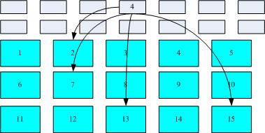
这种数据存取的方法我们称为索引式文件系统(indexed allocation)。那有没有其他的惯用文件系统可以比较一下啊？ 有的，那就是我们惯用的闪盘(闪存)，闪盘使用的文件系统一般为 FAT 格式。FAT 这种格式的文件系统并没有 inode 存在，所以 FAT 没有办法将这个文件的所有 block 在一开始就读取出来。每个 block 号码都记录在前一个 block 当中， 他的读取方式有点像底下这样：
图1.2.2、FAT文件系统数据存取示意图
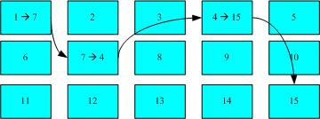
上图中我们假设文件的数据依序写入1->7->4->15号这四个 block 号码中， 但这个文件系统没有办法一口气就知道四个 block 的号码，他得要一个一个的将 block 读出后，才会知道下一个 block 在何处。 如果同一个文件数据写入的 block 分散的太过厉害时，则我们的磁盘读取头将无法在磁盘转一圈就读到所有的数据， 因此磁盘就会多转好几圈才能完整的读取到这个文件的内容
常常会听到所谓的『碎片整理』吧？ 需要碎片整理的原因就是文件写入的 block 太过于离散了，此时文件读取的效能将会变的很差所致。 这个时候可以透过碎片整理将同一个文件所属的 blocks 汇整在一起，这样数据的读取会比较容易啊！ 想当然尔，FAT 的文件系统需要经常的碎片整理一下，那么 Ext2 是否需要磁盘重整呢？
由于 Ext2 是索引式文件系统，基本上不太需要常常进行碎片整理的。但是如果文件系统使用太久， 常常删除/编辑/新增文件时，那么还是可能会造成文件数据太过于离散的问题，此时或许会需要进行重整一下的。 不过，老实说，鸟哥倒是没有在 Linux 操作系统上面进行过 Ext2/Ext3 文件系统的碎片整理说！似乎不太需要
1.3 Linux 的 EXT2 文件系统(inode): data block, inode table, superblock, dumpe2fs
标准的 Linux 文件系统 Ext2 就是使用这种 inode 为基础的文件系统（inode/block/superblock）。
如同前一小节所说的，inode 的内容在记录文件的权限与相关属性，至于 block 区块则是在记录文件的实际内容。 而且文件系统一开始就将 inode 与 block 规划好了，除非重新格式化(或者利用 resize2fs 等命令变更文件系统大小)，否则 inode 与 block 固定后就不再变动。但是如果仔细考虑一下，如果我的文件系统高达数百GB时， 那么将所有的 inode 与 block 通通放置在一起将是很不智的决定，因为 inode 与 block 的数量太庞大，不容易管理。
因此 Ext2 文件系统在格式化的时候基本上是区分为多个区块群组 (block group) 的，每个区块群组都有独立的 inode/block/superblock 系统。感觉上就好像我们在当兵时，一个营里面有分成数个连，每个连有自己的联络系统， 但最终都向营部回报连上最正确的信息一般！这样分成一群群的比较好管理
Ext2 格式化后有点像底下这样：
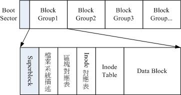
图1.3.1、ext2文件系统示意图(注1)
在整体的规划当中，文件系统最前面有一个启动扇区(boot sector)，这个启动扇区可以安装启动管理程序， 这是个非常重要的设计，因为如此一来我们就能够将不同的启动管理程序安装到个别的文件系统最前端，而不用覆盖整颗硬盘唯一的 MBR， 这样也才能够制作出多重引导的环境
每一个区块群组(block group)的六个主要内容
data block 是用来放置文件内容数据地方，在 Ext2 文件系统中所支持的 block 大小有 1K, 2K 及 4K 三种而已。在格式化时 block 的大小就固定了，且每个 block 都有编号，以方便 inode 的记录啦。 不过要注意的是，由于 block 大小的差异，会导致该文件系统能够支持的最大磁盘容量与最大单一文件容量并不相同。 因为 block 大小而产生的 Ext2 文件系统限制如下：
需要注意的是，虽然 Ext2 已经能够支持大于 2GB 以上的单一文件容量，不过某些应用程序依然使用旧的限制， 也就是说，某些程序只能够捉到小于 2GB 以下的文件而已，这就跟文件系统无关了！
除此之外 Ext2 文件系统的 block 还有什么限制呢？有的！基本限制如下：
- 原则上，block 的大小与数量在格式化完就不能够再改变了(除非重新格式化)；
- 每个 block 内最多只能够放置一个文件的数据；
- 承上，如果文件大于 block 的大小，则一个文件会占用多个 block 数量；
- 承上，若文件小于 block ，则该 block 的剩余容量就不能够再被使用了(磁盘空间会浪费)。如果你的文件都非常小，但是你的 block 在格式化时却选用最大的 4K 时，可能会产生一些容量的浪费
既然大的 block 可能会产生较严重的磁盘容量浪费，那么我们是否就将 block 大小订为 1K 即可？ 这也不妥，因为如果 block 较小的话，那么大型文件将会占用数量更多的 block ，而 inode 也要记录更多的 block 号码，此时将可能导致文件系统不良的读写效能。-> 在您进行文件系统的格式化之前，请先想好该文件系统预计使用的情况。 以鸟哥来说，我的数值模式仿真平台随便一个文件都好几百 MB，那么 block 容量当然选择较大的！至少文件系统就不必记录太多的 block 号码，读写起来也比较方便
inode 的内容在记录文件的属性以及该文件实际数据是放置在哪几号 block 内！ 基本上，inode 记录的文件数据至少有底下这些：
- 该文件的存取模式(read/write/excute)；
- 该文件的拥有者与群组(owner/group)；
- 该文件的容量；
- 该文件创建或状态改变的时间(ctime)；
- 最近一次的读取时间(atime)；
- 最近修改的时间(mtime)；
- 定义文件特性的旗标(flag)，如 SetUID…；
- 该文件真正内容的指向 (pointer)；
inode 的数量与大小也是在格式化时就已经固定了，除此之外 inode 还有些什么特色呢？
- 每个 inode 大小均固定为 128 bytes；
- 每个文件都仅会占用一个 inode 而已；
- 承上，因此文件系统能够创建的文件数量与 inode 的数量有关；
- 系统读取文件时需要先找到 inode，并分析 inode 所记录的权限与用户是否符合，若符合才能够开始实际读取 block 的内容。
分析一下 inode / block 与文件大小的关系: inode 要记录的数据非常多，但偏偏又只有 128bytes 而已， 而 inode 记录一个 block 号码要花掉 4byte ，假设我一个文件有 400MB 且每个 block 为 4K 时， 那么至少也要十万笔 block 号码的记录呢！inode 哪有这么多可记录的信息？为此我们的系统很聪明的将 inode 记录 block 号码的区域定义为12个直接，一个间接, 一个双间接与一个三间接记录区。
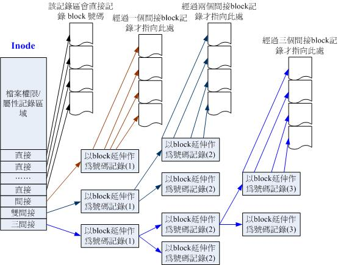
图1.3.2、inode 结构示意图(注5)
上图最左边为 inode 本身 (128 bytes)，里面有 12 个直接指向 block 号码的对照，这 12 笔记录就能够直接取得 block 号码啦！ 至于所谓的间接就是再拿一个 block 来当作记录 block 号码的记录区，如果文件太大时， 就会使用间接的 block 来记录编号。如上图 1.3.2 当中间接只是拿一个 block 来记录额外的号码而已。 同理，如果文件持续长大，那么就会利用所谓的双间接，第一个 block 仅再指出下一个记录编号的 block 在哪里， 实际记录的在第二个 block 当中。依此类推，三间接就是利用第三层 block 来记录编号啦！
这样子 inode 能够指定多少个 block 呢？我们以较小的 1K block 来说明好了，可以指定的情况如下： 12 个直接指向： 12*1K=12K 由于是直接指向，所以总共可记录 12 笔记录，因此总额大小为如上所示；
- 间接： 256*1K=256K: 每笔 block 号码的记录会花去 4bytes，因此 1K 的大小能够记录 256 笔记录，因此一个间接可以记录的文件大小如上；
- 双间接： 256*256*1K=2562K: 第一层 block 会指定 256 个第二层，每个第二层可以指定 256 个号码，因此总额大小如上；
- 三间接： 256*256*256*1K=2563K: 第一层 block 会指定 256 个第二层，每个第二层可以指定 256 个第三层，每个第三层可以指定 256 个号码，因此总额大小如上；
- 总额：将直接、间接、双间接、三间接加总，得到 12 + 256 + 256*256 + 256*256*256 (K) = 16GB
Note: 这个方法不能用在 2K 及 4K block 大小的计算中， 因为大于 2K 的 block 将会受到 Ext2 文件系统本身的限制，所以计算的结果会不太符合之故。
Superblock 是记录整个 filesystem 相关信息的地方， 没有 Superblock ，就没有这个 filesystem 了。他记录的信息主要有：
- block 与 inode 的总量；
- 未使用与已使用的 inode / block 数量；
- block 与 inode 的大小 (block 为 1, 2, 4K，inode 为 128 bytes)；
- filesystem 的挂载时间、最近一次写入数据的时间、最近一次检验磁盘 (fsck) 的时间等文件系统的相关信息；
- 一个 valid bit 数值，若此文件系统已被挂载，则 valid bit 为 0 ，若未被挂载，则 valid bit 为 1 。
Superblock 是非常重要的，因为我们这个文件系统的基本信息都写在这里，因此，如果 superblock 死掉了， 你的文件系统可能就需要花费很多时间去挽救啦！一般来说， superblock 的大小为 1024bytes。相关的 superblock 信息我们等一下会以 dumpe2fs 命令来呼叫出来观察
每个 block group 都可能含有 superblock 喔！但是我们也说一个文件系统应该仅有一个 superblock 而已，那是怎么回事啊？ 事实上除了第一个 block group 内会含有 superblock 之外，后续的 block group 不一定含有 superblock ， 而若含有 superblock 则该 superblock 主要是做为第一个 block group 内 superblock 的备份咯，这样可以进行 superblock 的救援
这个区段可以描述每个 block group 的开始与结束的 block 号码，以及说明每个区段 (superblock, bitmap, inodemap, data block) 分别介于哪一个 block 号码之间。这部份也能够用 dumpe2fs 来观察的。
如果你想要新增文件时总会用到 block 吧！那你要使用哪个 block 来记录呢？当然是选择『空的 block 』来记录新文件的数据啰。 那你怎么知道哪个 block 是空的？这就得要透过 block bitmap 的辅助了。从 block bitmap 当中可以知道哪些 block 是空的，因此我们的系统就能够很快速的找到可使用的空间来处置文件
同样的，如果你删除某些文件时，那么那些文件原本占用的 block 号码就得要释放出来， 此时在 block bitmap 当中相对应到该 block 号码的标志就得要修改成为『未使用中』
与 block bitmap 是类似的功能，只是 block bitmap 记录的是使用与未使用的 block 号码， 至于 inode bitmap 则是记录使用与未使用的 inode 号码
观察文件系统 dumpe2fs
了解了文件系统的概念之后，再来当然是观察这个文件系统啰！刚刚谈到的各部分数据都与 block 号码有关！ 每个区段与 superblock 的信息都可以使用 dumpe2fs 这个命令来查询
dumpe2fs [-bh] 装置文件名
选项与参数：
- -b ：列出保留为坏轨的部分(一般用不到吧！？)
- -h ：仅列出 superblock 的数据，不会列出其他的区段内容！
范例：找出我的根目录磁盘文件名，并观察文件系统的相关信息
[root@www ~]# df <==这个命令可以叫出目前挂载的装置 Filesystem 1K-blocks Used Available Use% Mounted on /dev/hdc2 9920624 3822848 5585708 41% / <==就是这个！ /dev/hdc3 4956316 141376 4559108 4% /home /dev/hdc1 101086 11126 84741 12% /boot tmpfs 371332 0 371332 0% /dev/shm [root@www ~]# dumpe2fs /dev/hdc2 dumpe2fs 1.39 (29-May-2006) Filesystem volume name: /1 <==这个是文件系统的名称(Label) Filesystem features: has_journal ext_attr resize_inode dir_index filetype needs_recovery sparse_super large_file Default mount options: user_xattr acl <==默认挂载的参数 Filesystem state: clean <==这个文件系统是没问题的(clean) Errors behavior: Continue Filesystem OS type: Linux Inode count: 2560864 <==inode的总数 Block count: 2560359 <==block的总数 Free blocks: 1524760 <==还有多少个 block 可用 Free inodes: 2411225 <==还有多少个 inode 可用 First block: 0 Block size: 4096 <==每个 block 的大小啦！ Filesystem created: Fri Sep 5 01:49:20 2008 Last mount time: Mon Sep 22 12:09:30 2008 Last write time: Mon Sep 22 12:09:30 2008 Last checked: Fri Sep 5 01:49:20 2008 First inode: 11 Inode size: 128 <==每个 inode 的大小 Journal inode: 8 <==底下这三个与下一小节有关 Journal backup: inode blocks Journal size: 128M Group 0: (Blocks 0-32767) <==第一个 data group 内容, 包含 block 的启始/结束号码 Primary superblock at 0, Group descriptors at 1-1 <==超级区块在 0 号 block Reserved GDT blocks at 2-626 Block bitmap at 627 (+627), Inode bitmap at 628 (+628) Inode table at 629-1641 (+629) <==inode table 所在的 block 0 free blocks, 32405 free inodes, 2 directories <==所有 block 都用完了！ Free blocks: Free inodes: 12-32416 <==剩余未使用的 inode 号码 Group 1: (Blocks 32768-65535) ....(底下省略)....
- 由于数据量非常的庞大，因此鸟哥将一些信息省略输出了！上表与你的屏幕会有点差异。
- 前半部在秀出 supberblock 的内容，包括标头名称(Label)以及inode/block的相关信息
- 后面则是每个 block group 的个别信息了！您可以看到各区段数据所在的号码！
- 也就是说，基本上所有的数据还是与 block 的号码有关就是了！很重要！
block group 的内容我们单纯看 Group0 信息好了。从上表中我们可以发现：
- Group0 所占用的 block 号码由 0 到 32767 号，superblock 则在第 0 号的 block 区块内！
- 文件系统描述说明在第 1 号 block 中；
- block bitmap 与 inode bitmap 则在 627 及 628 的 block 号码上。
- 至于 inode table 分布于 629-1641 的 block 号码中！
- 由于 (1)一个 inode 占用 128 bytes ，(2)总共有 1641 - 629 + 1(629本身) = 1013 个 block 花在 inode table 上， (3)每个 block 的大小为 4096 bytes(4K)。由这些数据可以算出 inode 的数量共有 1013 * 4096 / 128 = 32416 个 inode 啦！
- 这个 Group0 目前没有可用的 block 了，但是有剩余 32405 个 inode 未被使用；
- 剩余的 inode 号码为 12 号到 32416 号。
1.4 与目录树的关系
由前一小节的介绍我们知道在 Linux 系统下，每个文件(不管是一般文件还是目录文件)都会占用一个 inode ， 且可依据文件内容的大小来分配多个 block 给该文件使用。而由第六章的权限说明中我们知道目录的内容在记录文件名， 一般文件才是实际记录数据内容的地方。那么目录与文件在 Ext2 文件系统当中是如何记录数据的呢？ 基本上可以这样说：
目录
当我们在 Linux 下的 ext2 文件系统创建一个目录时， ext2 会分配一个 inode 与至少一块 block 给该目录。其中，inode 记录该目录的相关权限与属性，并可记录分配到的那块 block 号码； 而 block 则是记录在这个目录下的文件名与该文件名占用的 inode 号码数据。也就是说目录所占用的 block 内容在记录如下的信息：
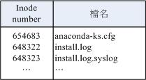
图1.4.1、目录占用的 block 记录的数据示意图
如果想要实际观察 root 家目录内的文件所占用的 inode 号码时，可以使用 ls -i 这个选项来处理：
[root@www ~]# ls -li total 92 654683 -rw------- 1 root root 1474 Sep 4 18:27 anaconda-ks.cfg 648322 -rw-r--r-- 1 root root 42304 Sep 4 18:26 install.log 648323 -rw-r--r-- 1 root root 5661 Sep 4 18:25 install.log.syslog
当你使用『 ll / 』时，出现的目录几乎都是 1024 的倍数，为什么呢？因为每个 block 的数量都是 1K, 2K, 4K 嘛！ 看一下鸟哥的环境：
[root@www ~]# ll -d / /bin /boot /proc /lost+found /sbin drwxr-xr-x 23 root root 4096 Sep 22 12:09 / <==一个 4K block drwxr-xr-x 2 root root 4096 Sep 24 00:07 /bin <==一个 4K block drwxr-xr-x 4 root root 1024 Sep 4 18:06 /boot <==一个 1K block drwx------ 2 root root 16384 Sep 5 01:49 /lost+found <==四个 4K block dr-xr-xr-x 96 root root 0 Sep 22 20:07 /proc <==此目录不占硬盘空间 drwxr-xr-x 2 root root 12288 Sep 5 12:33 /sbin <==三个 4K block
- 由于鸟哥的根目录 /dev/hdc2 使用的 block 大小为 4K ，因此每个目录几乎都是 4K 的倍数。 其中由于 /sbin 的内容比较复杂因此占用了 3 个 block ，此外，鸟哥的系统中 /boot 为独立的 partition ， 该 partition 的 block 为 1K 而已，因此该目录就仅占用 1024 bytes 的大小啰！至于奇怪的 /proc 我们在第六章就讲过该目录不占硬盘容量， 所以当然耗用的 block 就是 0
Tip: 由上面的结果我们知道目录并不只会占用一个 block 而已，也就是说： 在目录底下的文件数如果太多而导致一个 block 无法容纳的下所有的档名与 inode 对照表时，Linux 会给予该目录多一个 block 来继续记录相关的数据
文件：
当我们在 Linux 下的 ext2 创建一个一般文件时， ext2 会分配一个 inode 与相对于该文件大小的 block 数量给该文件。例如：假设我的一个 block 为 4 Kbytes ，而我要创建一个 100 KBytes 的文件，那么 linux 将分配一个 inode 与 25 个 block 来储存该文件！ 但同时请注意，由于 inode 仅有 12 个直接指向，因此还要多一个 block 来作为区块号码的记录
目录树读取：
好了，经过上面的说明你也应该要很清楚的知道 inode 本身并不记录文件名，文件名的记录是在目录的 block 当中。 因此在第六章文件与目录的权限说明中， 我们才会提到『新增/删除/更名文件名与目录的 w 权限有关』的特色！那么因为文件名是记录在目录的 block 当中， 因此当我们要读取某个文件时，就务必会经过目录的 inode 与 block ，然后才能够找到那个待读取文件的 inode 号码， 最终才会读到正确的文件的 block 内的数据。
由于目录树是由根目录开始读起，因此系统透过挂载的信息可以找到挂载点的 inode 号码(通常一个 filesystem 的最顶层 inode 号码会由 2 号开始喔！)，此时就能够得到根目录的 inode 内容，并依据该 inode 读取根目录的 block 内的文件名数据，再一层一层的往下读到正确的档名。
举例来说，如果我想要读取 /etc/passwd 这个文件时，系统是如何读取的呢？
[root@www ~]# ll -di / /etc /etc/passwd
2 drwxr-xr-x 23 root root 4096 Sep 22 12:09 /
1912545 drwxr-xr-x 105 root root 12288 Oct 14 04:02 /etc
1914888 -rw-r--r-- 1 root root 1945 Sep 29 02:21 /etc/passwd
该文件的读取流程为(假设读取者身份为 vbird 这个一般身份使用者)：
- / 的 inode： 透过挂载点的信息找到 /dev/hdc2 的 inode 号码为 2 的根目录 inode，且 inode 规范的权限让我们可以读取该 block 的内容(有 r 与 x) ；
- / 的 block：经过上个步骤取得 block 的号码，并找到该内容有 etc/ 目录的 inode 号码 (1912545)；
- etc/ 的 inode： 读取 1912545 号 inode 得知 vbird 具有 r 与 x 的权限，因此可以读取 etc/ 的 block 内容；
- etc/ 的 block： 经过上个步骤取得 block 号码，并找到该内容有 passwd 文件的 inode 号码 (1914888)；
- passwd 的 inode： 读取 1914888 号 inode 得知 vbird 具有 r 的权限，因此可以读取 passwd 的 block 内容；
- passwd 的 block：最后将该 block 内容的数据读出来。
filesystem 大小与磁盘读取效能：
另外，关于文件系统的使用效率上，当你的一个文件系统规划的很大时，例如 100GB 这么大时， 由于硬盘上面的数据总是来来去去的，所以，整个文件系统上面的文件通常无法连续写在一起(block 号码不会连续的意思)， 而是填入式的将数据填入没有被使用的 block 当中。如果文件写入的 block 真的分的很散， 此时就会有所谓的文件数据离散的问题发生了。
如前所述，虽然我们的 ext2 在 inode 处已经将该文件所记录的 block 号码都记上了， 所以数据可以一次性读取，但是如果文件真的太过离散，确实还是会发生读取效率低落的问题。 因为磁盘读取头还是得要在整个文件系统中来来去去的频繁读取！ 果真如此，那么可以将整个 filesystme 内的数据全部复制出来，将该 filesystem 重新格式化， 再将数据给他复制回去即可解决这个问题。
此外，如果 filesystem 真的太大了，那么当一个文件分别记录在这个文件系统的最前面与最后面的 block 号码中， 此时会造成硬盘的机械手臂移动幅度过大，也会造成数据读取效能的低落。而且读取头在搜寻整个 filesystem 时， 也会花费比较多的时间去搜寻！因此， partition 的规划并不是越大越好， 而是真的要针对您的主机用途来进行规划
1.5 EXT2/EXT3 文件的存取与日志式文件系统的功能
如果是新建一个文件或目录时，我们的 Ext2 是如何处理的呢？ 这个时候就得要 block bitmap 及 inode bitmap 的帮忙了！假设我们想要新增一个文件，此时文件系统的行为是：
- 先确定用户对于欲新增文件的目录是否具有 w 与 x 的权限，若有的话才能新增；
- 根据 inode bitmap 找到没有使用的 inode 号码，并将新文件的权限/属性写入；
- 根据 block bitmap 找到没有使用中的 block 号码，并将实际的数据写入 block 中，且升级 inode 的 block 指向数据；
- 将刚刚写入的 inode 与 block 数据同步升级 inode bitmap 与 block bitmap，并升级 superblock 的内容。
一般来说，我们将 inode table 与 data block 称为数据存放区域，至于其他例如 superblock, block bitmap 与 inode bitmap 等区段就被称为 metadata (中介数据) 啰，因为 superblock, inode bitmap 及 block bitmap 的数据是经常变动的，每次新增、移除、编辑时都可能会影响到这三个部分的数据，因此才被称为中介数据的啦。
数据的不一致 (Inconsistent) 状态
例如你的文件在写入文件系统时，因为不知名原因导致系统中断, 所以写入的数据仅有 inode table 及 data block 而已， 最后一个同步升级中介数据的步骤并没有做完，此时就会发生 metadata 的内容与实际数据存放区产生不一致 (Inconsistent) 的情况了。
在早期的 Ext2 文件系统中，如果发生这个问题， 那么系统在重新启动的时候，就会藉由 Superblock 当中记录的 valid bit (是否有挂载) 与 filesystem state (clean 与否) 等状态来判断是否强制进行数据一致性的检查！若有需要检查时则以 e2fsck 这支程序来进行的。
不过，这样的检查真的是很费时～因为要针对 metadata 区域与实际数据存放区来进行比对， 呵呵～得要搜寻整个 filesystem. 而且在对 Internet 提供服务的服务器主机上面， 这样的检查真的会造成主机复原时间的拉长～真是麻烦～这也就造成后来所谓日志式文件系统的兴起了。
日志式文件系统 (Journaling filesystem)
如果在我们的 filesystem 当中规划出一个区块，该区块专门在记录写入或修订文件时的步骤， 那不就可以简化一致性检查的步骤了？也就是说：
- 预备：当系统要写入一个文件时，会先在日志记录区块中纪录某个文件准备要写入的信息；
- 实际写入：开始写入文件的权限与数据；开始升级 metadata 的数据；
- 结束：完成数据与 metadata 的升级后，在日志记录区块当中完成该文件的纪录。
万一数据的纪录过程当中发生了问题，那么我们的系统只要去检查日志记录区块， 就可以知道哪个文件发生了问题，针对该问题来做一致性的检查即可，而不必针对整块 filesystem 去检查， 这样就可以达到快速修复 filesystem 的能力了！这就是日志式文件最基础的功能
-> ext3 是 ext2 的升级版本，并且可向下兼容 ext2 版本
dumpe2fs 输出的信息里，可以发现 superblock 里面含有底下这样的信息：
Journal inode: 8 Journal backup: inode blocks Journal size: 128M
为什么 Ext3 文件系统会更适用于目前的 Linux 系统， 我们可以参考 Red Hat 公司中，首席核心开发者 Michael K. Johnson 的话：
『为什么你想要从ext2转换到ext3呢？有四个主要的理由：可利用性、数据完整性、速度及易于转换』 『可利用性』，他指出，这意味着从系统中止到快速重新复原而不是持续的让e2fsck 运行长时间的修复。ext3 的日志式条件可以避免数据毁损的可能。他也指出： 『除了写入若干数据超过一次时，ext3往往会较快于ext2，因为ext3的日志使硬盘读取头的移动能更有效的进行』 然而或许决定的因素还是在Johnson先生的第四个理由中。
『它是可以轻易的从ext2变更到ext3来获得一个强而有力的日志式文件系统而不需要重新做格式化』。『那是正确的，为了体验一下 ext3 的好处是不需要去做一种长时间的，冗长乏味的且易于产生错误的备份工作及重新格式化的动作』。
1.6 Linux 文件系统的运行
由第零章的内容我们也知道， 所有的数据都得要加载到内存后 CPU 才能够对该数据进行处理。想一想，如果你常常编辑一个好大的文件， 在编辑的过程中又频繁的要系统来写入到磁盘中，由于磁盘写入的速度要比内存慢很多， 因此你会常常耗在等待硬盘的写入/读取上。
为了解决这个效率的问题，因此我们的 Linux 使用的方式是透过一个称为异步处理 (asynchronously) 的方式。所谓的异步处理是这样的：
当系统加载一个文件到内存后，如果该文件没有被更动过，则在内存区段的文件数据会被配置为干净(clean)的。 但如果内存中的文件数据被更改过了(例如你用 nano 去编辑过这个文件)，此时该内存中的数据会被配置为脏的 (Dirty)。此时所有的动作都还在内存中运行，并没有写入到磁盘中！ 系统会不定时的将内存中配置为『Dirty』的数据写回磁盘，以保持磁盘与内存数据的一致性。 你也可以利用第五章谈到的 sync命令来手动强迫写入磁盘。
我们知道内存的速度要比硬盘快的多，因此如果能够将常用的文件放置到内存当中，这不就会添加系统性能吗？ 没错！是有这样的想法！因此我们 Linux 系统上面文件系统与内存有非常大的关系:
- 系统会将常用的文件数据放置到主存储器的缓冲区，以加速文件系统的读/写；
- 承上，因此 Linux 的物理内存最后都会被用光！这是正常的情况！可加速系统效能；
- 你可以手动使用 sync 来强迫内存中配置为 Dirty 的文件回写到磁盘中；
- 若正常关机时，关机命令会主动呼叫 sync 来将内存的数据回写入磁盘内；
- 但若不正常关机(如跳电、死机或其他不明原因)，由于数据尚未回写到磁盘内， 因此重新启动后可能会花很多时间在进行磁盘检验，甚至可能导致文件系统的损毁(非磁盘损毁)
1.7 挂载点的意义 (mount point)
每个 filesystem 都有独立的 inode / block / superblock 等信息，这个文件系统要能够链接到目录树才能被我们使用。 将文件系统与目录树结合的动作我们称为『挂载』。 关于挂载的一些特性我们在第三章稍微提过， 重点是：挂载点一定是目录，该目录为进入该文件系统的入口。 因此并不是你有任何文件系统都能使用，必须要『挂载』到目录树的某个目录后，才能够使用该文件系统
举例来说，如果你是依据鸟哥的方法安装你的 CentOS 5.x 的话， 那么应该会有三个挂载点才是，分别是 /, /boot, /home 三个 (鸟哥的系统上对应的装置文件名为 /dev/hdc2, /dev/hdc1, /dev/hdc3)。 那如果观察这三个目录的 inode 号码时，我们可以发现如下的情况：
[root@www ~]# ls -lid / /boot /home 2 drwxr-xr-x 23 root root 4096 Sep 22 12:09 / 2 drwxr-xr-x 4 root root 1024 Sep 4 18:06 /boot 2 drwxr-xr-x 6 root root 4096 Sep 29 02:21 /home
[ME: 此处似有错误，/boot 和 /home 的 i-node 不应该是 2]
由于 filesystem 最顶层的目录之 inode 一般为 2 号，因此可以发现 /, /boot, /home 为三个不同的 filesystem 啰！ (因为每一行的文件属性并不相同，且三个目录的挂载点也均不相同之故。) 我们在第七章一开始的路径中曾经提到根目录下的 . 与 .. 是相同的东西， 因为权限是一模一样嘛！如果使用文件系统的观点来看，同一个 filesystem 的某个 inode 只会对应到一个文件内容而已(因为一个文件占用一个 inode 之故)， 因此我们可以透过判断 inode 号码来确认不同文件名是否为相同的文件
[root@www ~]# ls -ild / /. /.. 2 drwxr-xr-x 23 root root 4096 Sep 22 12:09 / 2 drwxr-xr-x 23 root root 4096 Sep 22 12:09 /. 2 drwxr-xr-x 23 root root 4096 Sep 22 12:09 /..
上面的信息中由于挂载点均为 / ，因此三个文件 (/, ., /..) 均在同一个 filesystem 内，而这三个文件的 inode 号码均为 2 号，因此这三个档名都指向同一个 inode 号码，当然这三个文件的内容也就完全一模一样了！ 也就是说，根目录的上一级 (..) 就是他自己！
1.8 其他 Linux 支持的文件系统与 VFS
常见的支持文件系统有：
- 传统文件系统：ext2 / minix / MS-DOS / FAT (用 vfat 模块) / iso9660 (光盘)等等；
- 日志式文件系统： ext3 / ReiserFS (supporting small files) / Windows' NTFS / IBM's JFS / SGI's XFS (fast journal FS)
- 网络文件系统： NFS / SMBFS
想要知道你的 Linux 支持的文件系统有哪些，可以察看底下这个目录：
ls -l /lib/modules/$(uname -r)/kernel/fs
Linux VFS (Virtual Filesystem Switch)
Linux 的核心又是如何管理这些认识的文件系统呢？ 其实，整个 Linux 的系统都是透过一个名为 Virtual Filesystem Switch 的核心功能去读取 filesystem 的。 也就是说，整个 Linux 认识的 filesystem 其实都是 VFS 在进行管理，我们使用者并不需要知道每个 partition 上头的 filesystem 是什么～ VFS 会主动的帮我们做好读取的动作
透过这个 VFS 的功能来管理所有的 filesystem， 省去我们需要自行配置读取文件系统的定义:
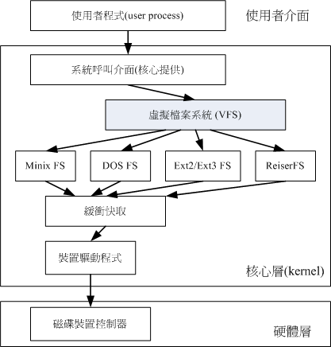
图 1.8.1、VFS 文件系统的示意图
Tip: 如果你想要对文件系统有更深入的了解，文末的相关连结(注7)务必要参考参考才好喔！ 鸟哥有找了一些数据放置于这里： Ext2/Ext3 文件系统：http://cn.linux.vbird.org/linux_basic/1010appendix_B.php. 其他值得参考的 Ext2 相关文件系统文章之连结如下： The Second Extended File System - An introduction: http://www.freeos.com/articles/3912/ ext3 or ReiserFS? Hans Reiser Says Red Hat's Move Is Understandable http://www.linuxplanet.com/linuxplanet/reports/3726/1/ 文件系统的比较：维基百科：http://en.wikipedia.org/wiki/Comparison_of_file_systems
2. 文件系统的简单操作
如何查询整体文件系统的总容量与每个目录所占用的容量. 此外，前两章谈到的文件类型中尚未讲的很清楚的连结档 (Link file) 也会在这一小节当中介绍
2.1 磁盘与目录的容量： df, du
磁盘的整体数据是在 superblock 区块中，但是每个各别文件的容量则在 inode 当中记载
- df：列出文件系统的整体磁盘使用量；
- du：评估文件系统的磁盘使用量(常用在推估目录所占容量)
df
df [-ahikHTm] [目录或文件名]
选项与参数：
- -a ：列出所有的文件系统，包括系统特有的 /proc 等文件系统；
- -k ：以 KBytes 的容量显示各文件系统；
- -m ：以 MBytes 的容量显示各文件系统；
- -h ：以人们较易阅读的 GBytes, MBytes, KBytes 等格式自行显示；
- -H ：以 M=1000K 取代 M=1024K 的进位方式；
- -T ：连同该 partition 的 filesystem 名称 (例如 ext3) 也列出；
- -i ：不用硬盘容量，而以 inode 的数量来显示
范例一：将系统内所有的 filesystem 列出来！
[root@www ~]# df Filesystem 1K-blocks Used Available Use% Mounted on /dev/hdc2 9920624 3823112 5585444 41% / /dev/hdc3 4956316 141376 4559108 4% /home /dev/hdc1 101086 11126 84741 12% /boot tmpfs 371332 0 371332 0% /dev/shm
在 Linux 底下如果 df 没有加任何选项，那么默认会将系统内所有的 (不含特殊内存内的文件系统与 swap) 都以 1 Kbytes 的容量来列出来！至于那个 /dev/shm 是与内存有关的挂载，先不要理他！
范例二：将容量结果以易读的容量格式显示出来
[root@www ~]# df -h Filesystem Size Used Avail Use% Mounted on /dev/hdc2 9.5G 3.7G 5.4G 41% / /dev/hdc3 4.8G 139M 4.4G 4% /home /dev/hdc1 99M 11M 83M 12% /boot tmpfs 363M 0 363M 0% /dev/shm
不同于范例一，这里会以 G/M 等容量格式显示出来，比较容易看啦！
范例三：将系统内的所有特殊文件格式及名称都列出来
[root@www ~]# df -aT Filesystem Type 1K-blocks Used Available Use% Mounted on /dev/hdc2 ext3 9920624 3823112 5585444 41% / proc proc 0 0 0 - /proc sysfs sysfs 0 0 0 - /sys devpts devpts 0 0 0 - /dev/pts /dev/hdc3 ext3 4956316 141376 4559108 4% /home /dev/hdc1 ext3 101086 11126 84741 12% /boot tmpfs tmpfs 371332 0 371332 0% /dev/shm none binfmt_misc 0 0 0 - /proc/sys/fs/binfmt_misc sunrpc rpc_pipefs 0 0 0 - /var/lib/nfs/rpc_pipefs
系统里面其实还有很多特殊的文件系统存在的。那些比较特殊的文件系统几乎都是在内存当中，例如 /proc 这个挂载点。因此，这些特殊的文件系统都不会占据硬盘空间喔！
范例四：将 /etc 底下的可用的磁盘容量以易读的容量格式显示
[root@www ~]# df -h /etc Filesystem Size Used Avail Use% Mounted on /dev/hdc2 9.5G 3.7G 5.4G 41% /
这个范例比较有趣一点啦，在 df 后面加上目录或者是文件时， df 会自动的分析该目录或文件所在的 partition ，并将该 partition 的容量显示出来，所以，您就可以知道某个目录底下还有多少容量可以使用了！
范例五：将目前各个 partition 当中可用的 inode 数量列出
[root@www ~]# df -ih Filesystem Inodes IUsed IFree IUse% Mounted on /dev/hdc2 2.5M 147K 2.3M 6% / /dev/hdc3 1.3M 46 1.3M 1% /home /dev/hdc1 26K 34 26K 1% /boot tmpfs 91K 1 91K 1% /dev/shm
这个范例则主要列出可用的 inode 剩余量与总容量。分析一下与范例一的关系，你可以清楚的发现到，通常 inode 的数量剩余都比 block 还要多呢
范例一所输出的结果信息为：
- Filesystem：代表该文件系统是在哪个 partition ，所以列出装置名称；
- 1k-blocks：说明底下的数字单位是 1KB 呦！可利用 -h 或 -m 来改变容量；
- Used：顾名思义，就是使用掉的硬盘空间啦！
- Available：也就是剩下的磁盘空间大小；
- Use%：就是磁盘的使用率啦！如果使用率高达 90% 以上时， 最好需要注意一下了，免得容量不足造成系统问题喔！(例如最容易被灌爆的 /var/spool/mail 这个放置邮件的磁盘)
- Mounted on：就是磁盘挂载的目录所在啦！(挂载点啦！)
由于 df 主要读取的数据几乎都是针对一整个文件系统，因此读取的范围主要是在 Superblock 内的信息， 所以这个命令显示结果的速度非常的快速！在显示的结果中你需要特别留意的是那个根目录的剩余容量！ 因为我们所有的数据都是由根目录衍生出来的，因此当根目录的剩余容量剩下 0 时，那你的 Linux 可能就问题很大了。
另外需要注意的是，如果使用 -a 这个参数时，系统会出现 /proc 这个挂载点，但是里面的东西都是 0 ，不要紧张！ /proc 的东西都是 Linux 系统所需要加载的系统数据，而且是挂载在『内存当中』的， 所以当然没有占任何的硬盘空间
至于那个 dev/shm 目录，其实是利用内存虚拟出来的磁盘空间！ 由于是透过内存仿真出来的磁盘，因此你在这个目录底下创建任何数据文件时，访问速度是非常快速的！(在内存内工作) 不过，也由于他是内存仿真出来的，因此这个文件系统的大小在每部主机上都不一样，而且创建的东西在下次启动时就消失了
du
du [-ahskm] 文件或目录名称
选项与参数：
- -a ：列出所有的文件与目录容量，因为默认仅统计目录底下的文件量而已。
- -h ：以人们较易读的容量格式 (G/M) 显示；
- -s ：列出总量而已，而不列出每个各别的目录占用容量；
- -S ：不包括子目录下的总计，与 -s 有点差别。
- -k ：以 KBytes 列出容量显示；
- -m ：以 MBytes 列出容量显示；
范例一：列出目前目录下的所有文件容量
[root@www ~]# du 8 ./test4 <==每个目录都会列出来 8 ./test2 ....中间省略.... 12 ./.gconfd <==包括隐藏文件的目录 220 . <==这个目录(.)所占用的总量
直接输入 du 没有加任何选项时，则 du 会分析『目前所在目录』 的文件与目录所占用的硬盘空间。但是，实际显示时，仅会显示目录容量(不含文件)， 因此 . 目录有很多文件没有被列出来，所以全部的目录相加不会等于 . 的容量喔！ 此外，输出的数值数据为 1K 大小的容量单位。
范例二：同范例一，但是将文件的容量也列出来
[root@www ~]# du -a 12 ./install.log.syslog <==有文件的列表了 8 ./.bash_logout 8 ./test4 8 ./test2 ....中间省略.... 12 ./.gconfd 220 .
范例三：检查根目录底下每个目录所占用的容量
[root@www ~]# du -sm /* 7 /bin 6 /boot .....中间省略.... 0 /proc .....中间省略.... 1 /tmp 3859 /usr <==系统初期最大就是他了啦！ 77 /var
这是个很常被使用的功能～利用通配符 * 来代表每个目录， 如果想要检查某个目录下，哪个次目录占用最大的容量，可以用这个方法找出来 值得注意的是，如果刚刚安装好 Linux 时，那么整个系统容量最大的应该是 /usr 而 /proc 虽然有列出容量，但是那个容量是在内存中，不占硬盘空间。
与 df 不一样的是，du 这个命令其实会直接到文件系统内去搜寻所有的文件数据， 所以上述第三个范例命令的运行会运行一小段时间！此外，在默认的情况下，容量的输出是以 KB 来设计的， 如果你想要知道目录占了多少 MB ，那么就使用 -m 这个参数即可啰！而， 如果你只想要知道该目录占了多少容量的话，使用 -s 就可以啦！
至于 -S 这个选项部分，由于 du 默认会将所有文件的大小均列出，因此假设你在 /etc 底下使用 du 时， 所有的文件大小，包括 /etc 底下的次目录容量也会被计算一次。然后最终的容量 (/etc) 也会加总一次， 因此很多朋友都会误会 du 分析的结果不太对劲。所以啰，如果想要列出某目录下的全部数据， 或许也可以加上 -S 的选项，减少次目录的加总喔！
2.2 实体链接与符号链接： ln
在 Linux 底下的连结档有两种，一种是类似 Windows 的快捷方式功能的文件，可以让你快速的链接到目标文件(或目录)； 另一种则是透过文件系统的 inode 连结来产生新档名，而不是产生新文件！这种称为实体链接 (hard link)。 这两种玩意儿是完全不一样的东西
两种 link
前一小节当中，我们知道几件重要的信息，包括：
- 每个文件都会占用一个 inode ，文件内容由 inode 的记录来指向；
- 想要读取该文件，必须要经过目录记录的文件名来指向到正确的 inode 号码才能读取
其实文件名只与目录有关，但是文件内容则与 inode 有关。那么想一想， 有没有可能有多个档名对应到同一个 inode 号码呢？有的！那就是 hard link 的由来。 所以简单的说：hard link 只是在某个目录下新增一笔档名链接到某 inode 号码的关连记录而已。
第二个字段由原本的 1 变成 2 了！ 那个字段称为『连结』，这个字段的意义为：『有多少个档名链接到这个 inode 号码』
这样有什么好处呢？最大的好处就是『安全』！如同上图中， 如果你将任何一个『档名』删除，其实 inode 与 block 都还是存在的！ 此时你可以透过另一个『档名』来读取到正确的文件数据喔！此外，不论你使用哪个『档名』来编辑， 最终的结果都会写入到相同的 inode 与 block 中，因此均能进行数据的修改
一般来说，使用 hard link 配置链接文件时，磁盘的空间与 inode 的数目都不会改变！ 我们还是由图 2.2.1 来看，由图中可以知道， hard link 只是在某个目录下的 block 多写入一个关连数据而已，既不会添加 inode 也不会耗用 block 数量
Tip: hard link 的制作中，其实还是可能会改变系统的 block 的，那就是当你新增这笔数据却刚好将目录的 block 填满时，就可能会新加一个 block 来记录文件名关连性，而导致磁盘空间的变化！不过，一般 hard link 所用掉的关连数据量很小，所以通常不会改变 inode 与磁盘空间的大小
hard link 是有限制的：
- 不能跨 Filesystem；
- 不能 link 目录。如果使用 hard link 链接到目录时， 链接的数据需要连同被链接目录底下的所有数据都创建链接，举例来说，如果你要将 /etc 使用实体链接创建一个 /etchd 的目录时，那么在 /etchd 底下的所有档名同时都与 /etc 底下的檔名要创建 hard link 的，而不是仅连结到 /etchd 与 /etc 而已。 并且，未来如果需要在 /etchd 底下创建新文件时，连带的， /etc 底下的数据又得要创建一次 hard link ，因此造成环境相当大的复杂度。 所以啰，目前 hard link 对于目录暂时还是不支持的
Symbolic link 就是在创建一个独立的文件，而这个文件会让数据的读取指向他 link 的那个文件的档名！由于只是利用文件来做为指向的动作， 所以，当来源档被删除之后，symbolic link 的文件会『开不了』， 会一直说『无法开启某文件！』。实际上就是找不到原始『档名』
举例来说，我们先创建一个符号链接文件链接到 /etc/crontab 去看看：
[root@www ~]# ln -s /etc/crontab crontab2 [root@www ~]# ll -i /etc/crontab /root/crontab2 1912701 -rw-r--r-- 2 root root 255 Jan 6 2007 /etc/crontab 654687 lrwxrwxrwx 1 root root 12 Oct 22 13:58 /root/crontab2 -> /etc/crontab
- 两个文件指向不同的 inode 号码，当然就是两个独立的文件存
- 连结档的重要内容就是他会写上目标文件的『文件名』
- 为什么上表中连结档的大小为 12 bytes 呢？ 因为箭头(–>)右边的档名『/etc/crontab』总共有 12 个英文，每个英文占用 1 个 byes ，所以文件大小就是 12bytes了
以如下图示来解释：
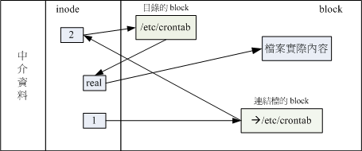
由 1 号 inode 读取到连结档的内容仅有档名，根据档名链接到正确的目录去取得目标文件的 inode ， 最终就能够读取到正确的数据了。你可以发现的是，如果目标文件(/etc/crontab)被删除了，那么整个环节就会无法继续进行下去
Note: 这个 Symbolic Link 与 Windows 的快捷方式可以给他划上等号，由 Symbolic link 所创建的文件为一个独立的新的文件，所以会占用掉 inode 与 block
比较
由上面的说明来看，似乎 hard link 比较安全，因为即使某一个目录下的关连数据被杀掉了， 也没有关系，只要有任何一个目录下存在着关连数据，那么该文件就不会不见 [ME: 删除的实际上是目录block中保存的文件名]
不过由于 Hard Link 的限制太多了，包括无法做『目录』的 link ， 所以在用途上面是比较受限的！反而是 Symbolic Link 的使用方面较广
ln 命令
ln [-sf] 来源文件 目标文件
选项与参数：
- -s ：如果不加任何参数就进行连结，那就是hard link. 至于 -s 就是symbolic link
- -f ：如果 目标文件 存在时，就主动的将目标文件直接移除后再创建！
范例一：将 /etc/passwd 复制到 /tmp 底下，并且观察 inode 与 block
[root@www ~]# cd /tmp [root@www tmp]# cp -a /etc/passwd . [root@www tmp]# du -sb ; df -i . 18340 . <==先注意一下这里的容量是多少！ Filesystem Inodes IUsed IFree IUse% Mounted on /dev/hdc2 2560864 149738 2411126 6% /
利用 du 与 df 来检查一下目前的参数～那个 du -sb 是计算整个 /tmp 底下有多少 bytes 的容量啦！
范例二：将 /tmp/passwd 制作 hard link 成为 passwd-hd 文件，并观察文件与容量
[root@www tmp]# ln passwd passwd-hd [root@www tmp]# du -sb ; df -i . 18340 . Filesystem Inodes IUsed IFree IUse% Mounted on /dev/hdc2 2560864 149738 2411126 6% /
仔细看，即使多了一个文件在 /tmp 底下，整个 inode 与 block 的容量并没有改变！
[root@www tmp]# ls -il passwd* 586361 -rw-r--r-- 2 root root 1945 Sep 29 02:21 passwd 586361 -rw-r--r-- 2 root root 1945 Sep 29 02:21 passwd-hd
原来是指向同一个 inode 啊！这是个重点啊！另外，那个第二栏的连结数也会添加！
范例三：将 /tmp/passwd 创建一个符号链接
[root@www tmp]# ln -s passwd passwd-so [root@www tmp]# ls -li passwd* 586361 -rw-r--r-- 2 root root 1945 Sep 29 02:21 passwd 586361 -rw-r--r-- 2 root root 1945 Sep 29 02:21 passwd-hd 586401 lrwxrwxrwx 1 root root 6 Oct 22 14:18 passwd-so -> passwd
passwd-so 指向的 inode number 不同了！这是一个新的文件～这个文件的内容是指向 passwd 的。passwd-so 的大小是 6bytes ，因为 passwd 共有六个字符之故
[root@www tmp]# du -sb ; df -i . 18346 . Filesystem Inodes IUsed IFree IUse% Mounted on /dev/hdc2 2560864 149739 2411125 6% /
整个容量与 inode 使用数都改变啰～确实如此啊！
范例四：删除源文件 passwd ，其他两个文件是否能够开启？
[root@www tmp]# rm passwd [root@www tmp]# cat passwd-hd ......正常显示完毕！ [root@www tmp]# cat passwd-so cat: passwd-so: No such file or directory [root@www tmp]# ll passwd* -rw-r--r-- 1 root root 1945 Sep 29 02:21 passwd-hd lrwxrwxrwx 1 root root 6 Oct 22 14:18 passwd-so -> passwd
符号链接果然无法开启！另外，如果符号链接的目标文件不存在， 其实档名的部分就会有特殊的颜色显示喔！
Tip: 还记得第六章当中，我们提到的 /tmp 这个目录是干嘛用的吗？是给大家作为缓存盘用的啊！ 所以，您会发现，过去我们在进行测试时，都会将数据移动到 /tmp 底下去练习～ 嘿嘿！因此，有事没事，记得将 /tmp 底下的一些怪异的数据清一清
关于目录的 link 数量：
当我们以 hard link 进行『文件的连结』时，可以发现，在 ls -l 所显示的第二字段会添加一才对，那么请教，如果创建目录时，他默认的 link 数量会是多少？ 让我们来想一想，一个『空目录』里面至少会存在些什么？呵呵！就是存在 . 与 .. 这两个目录啊！ 那么，当我们创建一个新目录名称为 /tmp/testing 时，基本上会有三个东西，那就是：
- /tmp/testing
- tmp/testing.
- tmp/testing..
而其中 tmp/testing 与 /tmp/testing. 其实是一样的！都代表该目录啊～而 tmp/testing.. 则代表 /tmp 这个目录，所以说，当我们创建一个新的目录时， 『新的目录的 link 数为 2 ，而上一级目录的 link 数则会添加 1 』
3. 磁盘的分割、格式化、检验与挂载
对于一个系统管理者( root )而言，磁盘的的管理是相当重要的一环
如果我们想要在系统里面新增一颗硬盘时，应该有哪些动作需要做的呢：
- 对磁盘进行分割，以创建可用的 partition ；
- 对该 partition 进行格式化( format )，以创建系统可用的 filesystem；
- 若想要仔细一点，则可对刚刚创建好的 filesystem 进行检验；
- 在 Linux 系统上，需要创建挂载点 ( 亦即是目录 )，并将他挂载上来；
在上述的过程当中，还有很多需要考虑的，例如磁盘分区槽 (partition) 需要定多大？ 是否需要加入 journal 的功能？inode 与 block 的数量应该如何规划等等的问题。但是这些问题的决定， 都需要与你的主机用途来加以考虑的～所以，在这个小节里面，鸟哥仅会介绍几个动作而已， 更详细的配置值，则需要以你未来的经验来参考
3.1 磁盘分区： fdisk, partprobe
fdisk [-l] 装置名称
选项与参数：
- -l ：输出后面接的装置所有的 partition 内容。若仅有 fdisk -l 时，则系统将会把整个系统内能够搜寻到的装置的 partition 均列出来。
范例：找出你系统中的根目录所在磁盘，并查阅该硬盘内的相关信息
[root@www ~]# df / <==注意：重点在找出磁盘文件名而已 Filesystem 1K-blocks Used Available Use% Mounted on /dev/hdc2 9920624 3823168 5585388 41% / [root@www ~]# fdisk /dev/hdc <==仔细看，不要加上数字喔！ The number of cylinders for this disk is set to 5005. There is nothing wrong with that, but this is larger than 1024, and could in certain setups cause problems with: 1) software that runs at boot time (e.g., old versions of LILO) 2) booting and partitioning software from other OSs (e.g., DOS FDISK, OS/2 FDISK) Command (m for help): <==等待你的输入！
Explanation:
- 先使用 df 这个命令找出可用磁盘文件名，
- 然后再用 fdisk 来查阅。在你进入 fdisk 这支程序的工作画面后，如果您的硬盘太大的话(通常指磁柱数量多于 1024 以上)，就会出现如上信息。这个信息仅是在告知你，因为某些旧版的软件与操作系统并无法支持大于 1024 磁柱 (cylinter) 后的扇区使用，不过我们新版的 Linux 是没问题啦
继续来看看 fdisk 内如何操作相关动作:
使用 fdisk 这支程序是完全不需要背命令的！如同上面的表格中，你只要按下 m 就能够看到所有的动作
其中比较不一样的是『q 与 w』这两个玩意儿！ 不管你进行了什么动作，只要离开 fdisk 时按下『q』，那么所有的动作『都不会生效！』相反的， 按下『w』就是动作生效的意思。所以，你可以随便玩 fdisk ，只要离开时按下的是『q』即可
先来看看分割表信息:
Command (m for help): p <== 这里可以输出目前磁盘的状态 Disk /dev/hdc: 41.1 GB, 41174138880 bytes <==这个磁盘的文件名与容量 255 heads, 63 sectors/track, 5005 cylinders <==磁头、扇区与磁柱大小 Units = cylinders of 16065 * 512 = 8225280 bytes <==每个磁柱的大小 Device Boot Start End Blocks Id System /dev/hdc1 * 1 13 104391 83 Linux /dev/hdc2 14 1288 10241437+ 83 Linux /dev/hdc3 1289 1925 5116702+ 83 Linux /dev/hdc4 1926 5005 24740100 5 Extended /dev/hdc5 1926 2052 1020096 82 Linux swap / Solaris # 装置文件名 启动区否 开始磁柱 结束磁柱 1K大小容量 磁盘分区槽内的系统 Command (m for help): q # 想要不储存离开吗？按下 q 就对了！不要随便按 w 啊！
- 信息的上半部在显示整体磁盘的状态.
- 下半部的分割表信息主要在列出每个分割槽的个别信息项目。每个项目的意义为：
- Device：装置文件名，依据不同的磁盘接口/分割槽位置而变。
- Boot：是否为启动引导块？通常 Windows 系统的 C 需要这块！
- Start, End：这个分割槽在哪个磁柱号码之间，可以决定此分割槽的大小；
- Blocks：就是以 1K 为单位的容量。如上所示，/dev/hdc1 大小为104391K = 102MB
- ID, System：代表这个分割槽内的文件系统应该是啥！不过这个项目只是一个提示而已， 不见得真的代表此分割槽内的文件系统
- 从上表我们可以发现几件事情：
- 整部磁盘还可以进行额外的分割，因为最大磁柱为 5005 ，但只使用到 2052 号而已；
- /dev/hdc5 是由 /dev/hdc4 分割出来的，因为 /dev/hdc4 为 Extended，且 /dev/hdc5 磁柱号码在 /dev/hdc4 之内
fdisk 还可以直接秀出系统内的所有 partition 喔！举例来说，鸟哥刚刚插入一个 U盘 磁盘到这部 Linux 系统中， 那该如何观察 (1)这个磁盘的代号与 (2)这个磁盘的分割槽呢？
范例：查阅目前系统内的所有 partition 有哪些？ [root@www ~]# fdisk -l Disk /dev/hdc: 41.1 GB, 41174138880 bytes 255 heads, 63 sectors/track, 5005 cylinders Units = cylinders of 16065 * 512 = 8225280 bytes Device Boot Start End Blocks Id System /dev/hdc1 * 1 13 104391 83 Linux /dev/hdc2 14 1288 10241437+ 83 Linux /dev/hdc3 1289 1925 5116702+ 83 Linux /dev/hdc4 1926 5005 24740100 5 Extended /dev/hdc5 1926 2052 1020096 82 Linux swap / Solaris Disk /dev/sda: 8313 MB, 8313110528 bytes 59 heads, 58 sectors/track, 4744 cylinders Units = cylinders of 3422 * 512 = 1752064 bytes Device Boot Start End Blocks Id System /dev/sda1 1 4745 8118260 b W95 FAT32
- 由上表的信息我们可以看到我有两颗磁盘，磁盘文件名为『/dev/hdc 与 /dev/sda』，/dev/hdc 已经在上面谈过了， 至于 /dev/sda 则有 8GB 左右的容量，且全部的磁柱都已经分割给 /dev/sda1 ，该文件系统应该为 Windows 的 FAT 文件系统。
这个 fdisk 只有 root 才能运行，此外，请注意， 使用的『装置文件名』请不要加上数字，因为 partition 是针对『整个硬盘装置』而不是某个 partition 呢！所以运行『 fdisk /dev/hdc1 』 就会发生错误啦！要使用 fdisk /dev/hdc 才对
底下再来说一说进入 fdisk 之后的几个常做的工作
删除磁盘分区槽
如果想要测试一下如何将你的 /dev/hdc 全部的分割槽删除，应该怎么做？
- fdisk /dev/hdc ：先进入 fdisk 画面；
- p ：先看一下分割槽的信息，假设要杀掉 /dev/hdc1；
- d ：这个时候会要你选择一个 partition ，就选 1 啰！
- w (or) q ：按 w 可储存到磁盘数据表中，并离开 fdisk ；当然啰， 如果你反悔了，呵呵，直接按下 q 就可以取消刚刚的删除动作了！
练习一： 先进入 fdisk 的画面当中去！
[root@www ~]# fdisk /dev/hdc
练习二： 先看看整个分割表的情况是如何
Command (m for help): p Disk /dev/hdc: 41.1 GB, 41174138880 bytes 255 heads, 63 sectors/track, 5005 cylinders Units = cylinders of 16065 * 512 = 8225280 bytes Device Boot Start End Blocks Id System /dev/hdc1 * 1 13 104391 83 Linux /dev/hdc2 14 1288 10241437+ 83 Linux /dev/hdc3 1289 1925 5116702+ 83 Linux /dev/hdc4 1926 5005 24740100 5 Extended /dev/hdc5 1926 2052 1020096 82 Linux swap / Solaris
练习三： 按下 d 给他删除吧！
Command (m for help): d Partition number (1-5): 4 Command (m for help): d Partition number (1-4): 3 Command (m for help): p Disk /dev/hdc: 41.1 GB, 41174138880 bytes 255 heads, 63 sectors/track, 5005 cylinders Units = cylinders of 16065 * 512 = 8225280 bytes Device Boot Start End Blocks Id System /dev/hdc1 * 1 13 104391 83 Linux /dev/hdc2 14 1288 10241437+ 83 Linux
因为 /dev/hdc5 是由 /dev/hdc4 所衍生出来的逻辑分割槽，因此 /dev/hdc4 被删除，/dev/hdc5 就自动不见了！最终就会剩下两个分割槽而已喔！
Command (m for help): q
鸟哥这里仅是做一个练习而已，所以，按下 q 就能够离开
练习新增磁盘分区槽
新增磁盘分区槽有好多种情况，因为新增 Primary / Extended / Logical 的显示结果都不太相同。 底下我们先将 /dev/hdc 全部删除成为干净未分割的磁盘，然后依序新增
练习一： 进入 fdisk 的分割软件画面中，并删除所有分割槽：
[root@www ~]# fdisk /dev/hdc Command (m for help): d Partition number (1-5): 4 Command (m for help): d Partition number (1-4): 3 Command (m for help): d Partition number (1-4): 2 Command (m for help): d Selected partition 1
由于最后仅剩下一个 partition ，因此系统主动选取这个 partition 删除去！
练习二： 开始新增，我们先新增一个 Primary 的分割槽，且指定为 4 号看看！
Command (m for help): n Command action <==因为是全新磁盘，因此只会问extended/primary而已 e extended p primary partition (1-4) p <==选择 Primary 分割槽 Partition number (1-4): 4 <==配置为 4 号！ First cylinder (1-5005, default 1): <==直接按下[enter]按键决定！ Using default value 1 <==启始磁柱就选用默认值！ Last cylinder or +size or +sizeM or +sizeK (1-5005, default 5005): +512M
这个地方有趣了！我们知道 partition 是由 n1 到 n2 的磁柱号码 (cylinder)， 但磁柱的大小每颗磁盘都不相同，这个时候可以填入 +512M 来让系统自动帮我们找出 『最接近 512M 的那个 cylinder 号码』！因为不可能刚好等于 512MBytes 啦！
如上所示：这个地方输入的方式有两种：
- 直接输入磁柱的号码，你得要自己计算磁柱/分割槽的大小才行；
- 用 +XXM 来输入分割槽的大小，让系统自己捉磁柱的号码。 +与M是必须要有的，XX为数字
Command (m for help): p Disk /dev/hdc: 41.1 GB, 41174138880 bytes 255 heads, 63 sectors/track, 5005 cylinders Units = cylinders of 16065 * 512 = 8225280 bytes Device Boot Start End Blocks Id System /dev/hdc4 1 63 506016 83 Linux
注意！只有 4 号！ 1 ~ 3 保留下来了！
练习三： 继续新增一个，这次我们新增 Extended 的分割槽好了！
Command (m for help): n Command action e extended p primary partition (1-4) e <==选择的是 Extended 喔！ Partition number (1-4): 1 First cylinder (64-5005, default 64): <=[enter] Using default value 64 Last cylinder or +size or +sizeM or +sizeK (64-5005, default 5005): <=[enter] Using default value 5005
还记得我们在第三章的磁盘分区表曾经谈到过的，扩展分配最好能够包含所有 未分割的区间；所以在这个练习中，我们将所有未配置的磁柱都给了这个分割槽喔！ 所以在开始/结束磁柱的位置上，按下两个[enter]用默认值即可！
Command (m for help): p Disk /dev/hdc: 41.1 GB, 41174138880 bytes 255 heads, 63 sectors/track, 5005 cylinders Units = cylinders of 16065 * 512 = 8225280 bytes Device Boot Start End Blocks Id System /dev/hdc1 64 5005 39696615 5 Extended /dev/hdc4 1 63 506016 83 Linux
如上所示，所有的磁柱都在 /dev/hdc1 里面啰！
练习四： 这次我们随便新增一个 2GB 的分割槽看看！
Command (m for help): n Command action l logical (5 or over) <==因为已有 extended ，所以出现 logical 分割槽 p primary partition (1-4) p <==偷偷玩一下，能否新增主要分割槽 Partition number (1-4): 2 No free sectors available <==肯定不行！因为没有多余的磁柱可供配置 Command (m for help): n Command action l logical (5 or over) p primary partition (1-4) l <==乖乖使用逻辑分割槽吧！ First cylinder (64-5005, default 64): <=[enter] Using default value 64 Last cylinder or +size or +sizeM or +sizeK (64-5005, default 5005): +2048M Command (m for help): p Disk /dev/hdc: 41.1 GB, 41174138880 bytes 255 heads, 63 sectors/track, 5005 cylinders Units = cylinders of 16065 * 512 = 8225280 bytes Device Boot Start End Blocks Id System /dev/hdc1 64 5005 39696615 5 Extended /dev/hdc4 1 63 506016 83 Linux /dev/hdc5 64 313 2008093+ 83 Linux
这样就新增了 2GB 的分割槽，且由于是 logical ，所以由 5 号开始！
Command (m for help): q
鸟哥这里仅是做一个练习而已，所以，按下 q 就能够离开
最重要的地方其实就在于创建分割槽的形式( primary/extended/logical )以及分割槽的大小了！一般来说创建分割槽的形式会有底下的数种状况：
- 1-4 号尚有剩余，且系统未有 extended： 此时会出现让你挑选 Primary / Extended 的项目，且你可以指定 1~4 号间的号码；
- 1-4 号尚有剩余，且系统有 extended： 此时会出现让你挑选 Primary / Logical 的项目；若选择 p 则你还需要指定 1~4 号间的号码； 若选择 l(L的小写) 则不需要配置号码，因为系统会自动指定逻辑分割槽的文件名号码；
- 1-4 没有剩余，且系统有 extended： 此时不会让你挑选分割槽类型，直接会进入 logical 的分割槽形式。
例题： 请依照你的系统情况，创建一个大约 1GB 左右的分割槽，并显示该分割槽的相关信息：
答： 鸟哥的磁盘为 /dev/hdc ，尚有剩余磁柱号码，因此可以这样做：
[root@www ~]# fdisk /dev/hdc Command (m for help): n First cylinder (2053-5005, default 2053): <==[enter] Using default value 2053 Last cylinder or +size or +sizeM or +sizeK (2053-5005, default 5005): +2048M Command (m for help): p Disk /dev/hdc: 41.1 GB, 41174138880 bytes 255 heads, 63 sectors/track, 5005 cylinders Units = cylinders of 16065 * 512 = 8225280 bytes Device Boot Start End Blocks Id System /dev/hdc1 * 1 13 104391 83 Linux /dev/hdc2 14 1288 10241437+ 83 Linux /dev/hdc3 1289 1925 5116702+ 83 Linux /dev/hdc4 1926 5005 24740100 5 Extended /dev/hdc5 1926 2052 1020096 82 Linux swap / Solaris /dev/hdc6 2053 2302 2008093+ 83 Linux Command (m for help): w The partition table has been altered! Calling ioctl() to re-read partition table. WARNING: Re-reading the partition table failed with error 16: Device or resource busy. The kernel still uses the old table. The new table will be used at the next reboot. Syncing disks. <==见鬼了！竟然需要 reboot 才能够生效！我可不要重新启动！ [root@www ~]# partprobe <==强制让核心重新捉一次 partition table
在这个实作题中，请务必要按下『 w 』这个动作！因为我们实际上确实要创建这个分割槽嘛！ 但请仔细看一下最后的警告信息，因为我们的磁盘无法卸除(因为含有根目录)，所以核心无法重新取得分割表信息， 因此此时系统会要求我们重新启动(reboot)以升级核心的分割表信息才行。
如上的练习中，最终写入分割表后竟然会让核心无法捉到分割表信息！此时你可以直接使用 reboot 来处理， 也可以使用 GNU 推出的工具程序来处置，那就是 partprobe 这个命令。这个命令的运行很简单， 他仅是告知核心必须要读取新的分割表而已，因此并不会在屏幕上出现任何信息才是！ 这样一来，我们就不需要 reboot 啰！
操作环境的说明
以 root 的身份进行硬盘的 partition 时，最好是在单人维护模式底下比较安全一些， 此外，在进行 fdisk 的时候，如果该硬盘某个 partition 还在使用当中， 那么很有可能系统核心会无法重载硬盘的 partition table ，解决的方法就是将该使用中的 partition 给他卸除，然后再重新进入 fdisk 一遍，重新写入 partition table ，那么就可以成功
注意事项
另外在实作过程中请特别注意，因为 SATA 硬盘最多能够支持到 15 号的分割槽， IDE 则可以支持到 63 号。 但目前大家常见的系统都是 SATA 磁盘，因此在练习的时候千万不要让你的分割槽超过 15 号！ 否则即使你还有剩余的磁柱容量，但还是会无法继续进行分割的喔！
另外需要特别留意的是，fdisk 没有办法处理大于 2TB 以上的磁盘分区槽！ 这个问题比较严重！因为虽然 Ext3 文件系统已经支持达到 16TB 以上的磁盘，但是分割命令却无法支持。 时至今日(2009)所有的硬件价格大跌，硬盘也已经出到单颗 1TB 之谱，若加上磁盘阵列 (RAID) ， 高于 2TB 的磁盘系统应该会很常见！此时你就得使用 parted 这个命令了！我们会在本章最后谈一谈这个命令的用法。
3.2 磁盘格式化： mkfs, mke2fs
分割完毕后自然就是要进行文件系统的格式化啰！格式化的命令非常的简单，那就是『make filesystem, mkfs』 这个命令啦！这个命令其实是个综合的命令，他会去呼叫正确的文件系统格式化工具软件
mkfs
mkfs [-t 文件系统格式] 装置文件名
选项与参数：
- -t ：可以接文件系统格式，例如 ext3, ext2, vfat 等(系统有支持才会生效) [ME: 1.8 其他 Linux 支持的文件系统与 VFS,
ls -l /lib/modules/$(uname -r)/kernel/fs]
范例一：请将上个小节当中所制作出来的 /dev/hdc6 格式化为 ext3 文件系统
[root@www ~]# mkfs -t ext3 /dev/hdc6
mke2fs 1.39 (29-May-2006)
Filesystem label= <==这里指的是分割槽的名称(label)
OS type: Linux
Block size=4096 (log=2) <==block 的大小配置为 4K
Fragment size=4096 (log=2)
251392 inodes, 502023 blocks <==由此配置决定的inode/block 数量
25101 blocks (5.00%) reserved for the super user
First data block=0
Maximum filesystem blocks=515899392
16 block groups
32768 blocks per group, 32768 fragments per group
15712 inodes per group
Superblock backups stored on blocks:
32768, 98304, 163840, 229376, 294912
Writing inode tables: done
Creating journal (8192 blocks): done <==有日志记录
Writing superblocks and filesystem accounting information: done
This filesystem will be automatically checked every 34 mounts or
180 days, whichever comes first. Use tune2fs -c or -i to override.
这样就创建起来我们所需要的 Ext3 文件系统了！简单明了！
[root@www ~]# mkfs[tab][tab] mkfs mkfs.cramfs mkfs.ext2 mkfs.ext3 mkfs.msdos mkfs.vfat
按下两个[tab]，会发现 mkfs 支持的文件格式如上所示！可以格式化 vfat 喔！
当我们使用『 mkfs -t ext3 …』时， 系统会去呼叫 mkfs.ext3 这个命令来进行格式化的动作. 最常用的应该是 ext3, vfat 两种
例题： 将刚刚的 /dev/hdc6 格式化为 Windows 可读的 vfat 格式吧！
答：
mkfs -t vfat /dev/hdc6
在格式化为 Ext3 的范例中，我们可以发现结果里面含有非常多的信息，由于我们没有详细指定文件系统的细部项目， 因此系统会使用默认值来进行格式化。其中比较重要的部分为：
- 文件系统的标头(Label)、
- Block 的大小以及 inode 的数量。
如果你要指定这些东西，就得要了解一下 Ext2/Ext3 的公用程序，亦即 mke2fs 这个命令
mke2fs [ME: only that is actually used will be noted!]
[ME: refer to http://cn.linux.vbird.org/linux_basic/0230filesystem.php#format: mke2fs]
3.3 磁盘检验： fsck, badblocks
fsck
注意：通常只有身为 root 且你的文件系统有问题的时候才使用这个命令，否则在正常状况下使用此一命令， 可能会造成对系统的危害！通常使用这个命令的场合都是在系统出现极大的问题，导致你在 Linux 启动的时候得进入单人单机模式下进行维护的行为时，才必须使用此一命令！
由于 fsck 在扫瞄硬盘的时候，可能会造成部分 filesystem 的损坏，所以『运行 fsck 时， 被检查的 partition 务必不可挂载到系统上！亦即是需要在卸除的状态
badblocks
fsck 是用来检验文件系统是否出错，至于 badblocks 则是用来检查硬盘或软盘扇区有没有坏轨
目前大多不使用这个命令 -> 透过『 mke2fs -c 装置文件名 』在进行格式化的时候处理磁盘表面的读取测试
3.4 磁盘挂载与卸除： mount, umount
挂载点是目录， 而这个目录是进入磁盘分区槽(其实是文件系统啦！)的入口
进行挂载前，你最好先确定几件事：
- 单一文件系统不应该被重复挂载在不同的挂载点(目录)中；
- 单一目录不应该重复挂载多个文件系统；
- 要作为挂载点的目录，理论上应该都是空目录才是: 如果你要用来挂载的目录里面并不是空的，那么挂载了文件系统之后，原目录下的东西就会暂时的消失
挂载Ext2/Ext3文件系统
范例一：用默认的方式，将刚刚创建的 /dev/hdc6 挂载到 /mnt/hdc6 上面！ [root@www ~]# mkdir /mnt/hdc6 [root@www ~]# mount /dev/hdc6 /mnt/hdc6 [root@www ~]# df Filesystem 1K-blocks Used Available Use% Mounted on .....中间省略..... /dev/hdc6 1976312 42072 1833836 3% /mnt/hdc6 # 看起来，真的有挂载！且文件大小约为 2GB 左右啦！
为什么可以这么方便呢(甚至不需要使用 -t 这个选项)？由于文件系统几乎都有 superblock ， 我们的 Linux 可以透过分析 superblock 搭配 Linux 自己的驱动程序去测试挂载， 如果成功的套和了，就立刻自动的使用该类型的文件系统挂载起来啊！ 那么系统有没有指定哪些类型的 filesystem 才需要进行上述的挂载测试呢？ 主要是参考底下这两个文件：
- /etc/filesystems：系统指定的测试挂载文件系统类型；
- /proc/filesystems：Linux系统已经加载的文件系统类型。
那我怎么知道我的 Linux 有没有相关文件系统类型的驱动程序呢？我们 Linux 支持的文件系统之驱动程序都写在如下的目录中：
/lib/modules/$(uname -r)/kernel/fs/
简单的测试挂载后，接下来让我们检查看看目前已挂载的文件系统状况
#+BEGINSRC txt
范例二：观察目前『已挂载』的文件系统，包含各文件系统的Label名称
[root@www ~]# mount -l
/dev/hdc2 on / type ext3 (rw) [/1]
proc on /proc type proc (rw)
sysfs on /sys type sysfs (rw)
devpts on /dev/pts type devpts (rw,gid=5,mode=620)
/dev/hdc3 on /home type ext3 (rw) [/home]
/dev/hdc1 on /boot type ext3 (rw) [/boot]
tmpfs on /dev/shm type tmpfs (rw)
none on /proc/sys/fs/binfmtmisc type binfmtmisc (rw)
sunrpc on /var/lib/nfs/rpcpipefs type rpcpipefs (rw)
/dev/hdc6 on /mnt/hdc6 type ext3 (rw) [vbirdlogical]
以 /dev/hdc2 这个装置来说好了(上面表格的第一行)， 他的意义是：『/dev/hdc2 是挂载到 / 目录，文件系统类型为 ext3 ，且挂载为可擦写 (rw) ，另外，这个 filesystem 有标头，名字(label)为 /1 』[ME: 这个标头是哪来的？]
挂载 CD 或 DVD 光盘
范例三：将你用来安装 Linux 的 CentOS 原版光盘拿出来挂载！
[root@www ~]# mkdir /media/cdrom [root@www ~]# mount -t iso9660 /dev/cdrom /media/cdrom [root@www ~]# mount /dev/cdrom /media/cdrom # 你可以指定 -t iso9660 这个光盘片的格式来挂载，也可以让系统自己去测试挂载！ # 所以上述的命令只要做一个就够了！但是目录的创建初次挂载时必须要进行喔！ [root@www ~]# df Filesystem 1K-blocks Used Available Use% Mounted on .....中间省略..... /dev/hdd 4493152 4493152 0 100% /media/cdrom # 因为我的光驱使用的是 /dev/hdd 的 IDE 接口之故！
光驱一挂载之后就无法退出光盘片了！除非你将他卸除才能够退出！ 从上面的数据你也可以发现，因为是光盘嘛！所以磁盘使用率达到 100% ，因为你无法直接写入任何数据到光盘当中
另外，其实 /dev/cdrom 是个链接文件，正确的磁盘文件名得要看你的光驱是什么连接接口的环境。 以鸟哥为例，我的光驱接在 /dev/hdd，所以正确的挂载应该是『mount /dev/hdd /media/cdrom』比较正确:w
格式化与挂载软盘
挂载闪盘
注意，你的这个闪盘不能够是 NTFS 的文件系统
范例五：找出你的闪盘装置文件名，并挂载到 /mnt/flash 目录中
[root@www ~]# fdisk -l .....中间省略..... Disk /dev/sda: 8313 MB, 8313110528 bytes 59 heads, 58 sectors/track, 4744 cylinders Units = cylinders of 3422 * 512 = 1752064 bytes Device Boot Start End Blocks Id System /dev/sda1 1 4745 8118260 b W95 FAT32 # 从上的特殊字体，可得知磁盘的大小以及装置文件名，知道是 /dev/sda1 [root@www ~]# mkdir /mnt/flash [root@www ~]# mount -t vfat -o iocharset=cp950 /dev/sda1 /mnt/flash [root@www ~]# df Filesystem 1K-blocks Used Available Use% Mounted on .....中间省略..... /dev/sda1 8102416 4986228 3116188 62% /mnt/flash
如果带有中文文件名的数据，那么可以在挂载时指定一下挂载文件系统所使用的语系数据。 在 man mount 找到 vfat 文件格式当中可以使用 iocharset 来指定语系，而中文语系是 cp950 ， 所以也就有了上述的挂载命令项目
万一你使用的是随身硬盘，也就是利用笔记型计算机所做出来的U盘磁盘时，通常这样的硬盘都使用 NTFS 格式的～ 怎办？没关系，可以参考底下这个网站：
- NTFS 文件系统官网：Linux-NTFS Project: http://www.linux-ntfs.org/
- CentOS 5.x 版的相关驱动程序下载页面：http://www.linux-ntfs.org/doku.php?id=redhat:rhel5
将她们提供的驱动程序捉下来并且安装之后，就能够使用 NTFS 的文件系统了！ 只是由于文件系统与 Linux 核心有很大的关系，因此以后如果你的 Linux 系统有升级 (update) 时， 你就得要重新下载一次相对应的驱动程序版本
重新挂载根目录与挂载不特定目录
整个目录树最重要的地方就是根目录了，所以根目录根本就不能够被卸除的！问题是，如果你的挂载参数要改变， 或者是根目录出现『只读』状态时，如何重新挂载呢？最可能的处理方式就是重新启动 (reboot)！ 不过你也可以这样做：
范例六：将 / 重新挂载，并加入参数为 rw 与 auto
[root@www ~]# mount -o remount,rw,auto /
重点是那个『 -o remount,xx 』的选项与参数！请注意，要重新挂载 (remount) 时， 这是个非常重要的机制！尤其是当你进入单人维护模式时，你的根目录常会被系统挂载为只读，这个时候这个命令就太重要了！
我们也可以利用 mount 来将某个目录挂载到另外一个目录去喔！这并不是挂载文件系统，而是额外挂载某个目录的方法！ 虽然底下的方法也可以使用 symbolic link 来连结，不过在某些不支持符号链接的程序运行中，还是得要透过这样的方法才行。
范例七：将 /home 这个目录暂时挂载到 /mnt/home 底下：
[root@www ~]# mkdir /mnt/home [root@www ~]# mount --bind /home /mnt/home [root@www ~]# ls -lid /home/ /mnt/home 2 drwxr-xr-x 6 root root 4096 Sep 29 02:21 /home/ 2 drwxr-xr-x 6 root root 4096 Sep 29 02:21 /mnt/home [root@www ~]# mount -l /home on /mnt/home type none (rw,bind)
- 其实两者连结到同一个 inode
umount (将装置文件卸除)
[root@www ~]# umount [-fn] 装置文件名或挂载点 选项与参数： -f ：强制卸除！可用在类似网络文件系统 (NFS) 无法读取到的情况下； -n ：不升级 /etc/mtab 情况下卸除。
卸除之后，可以使用 df 或 mount -l 看看是否还存在目录树中？ 卸除的方式，可以下达装置文件名或挂载点
范例八：将本章之前自行挂载的文件系统全部卸除：
[root@www ~]# mount .....前面省略..... /dev/hdc6 on /mnt/hdc6 type ext3 (rw) /dev/hdd on /media/cdrom type iso9660 (rw) /dev/sda1 on /mnt/flash type vfat (rw,iocharset=cp950) /home on /mnt/home type none (rw,bind) # 先找一下已经挂载的文件系统，如上所示，特殊字体即为刚刚挂载的装置啰！ [root@www ~]# umount /dev/hdc6 <==用装置文件名来卸除 [root@www ~]# umount /media/cdrom <==用挂载点来卸除 [root@www ~]# umount /mnt/flash <==因为挂载点比较好记忆！ [root@www ~]# umount /dev/fd0 <==用装置文件名较好记！ [root@www ~]# umount /mnt/home <==一定要用挂载点！因为挂载的是目录
由于通通卸除了，此时你才可以退出光盘片、软盘片、U盘闪盘等设备
如果你遇到这样的情况：
[root@www ~]# mount /dev/cdrom /media/cdrom [root@www ~]# cd /media/cdrom [root@www cdrom]# umount /media/cdrom umount: /media/cdrom: device is busy umount: /media/cdrom: device is busy
由于你目前正在 media/cdrom 的目录内，也就是说其实『你正在使用该文件系统』的意思！ 所以自然无法卸除这个装置！那该如何是好？就『离开该文件系统的挂载点』即可。以上述的案例来说， 你可以使用『 cd / 』回到根目录，就能够卸除 /media/cdrom
使用 Label name 进行挂载的方法
除了磁盘的装置文件名之外，其实我们可以使用文件系统的标头(label)名称来挂载
举例来说，我们刚刚卸除的 /dev/hdc6 标头名称是『vbirdlogical』，你也可以使用 dumpe2fs 这个命令来查询一下. 然后就这样做:
范例九：找出 /dev/hdc6 的 label name，并用 label 挂载到 /mnt/hdc6
[root@www ~]# dumpe2fs -h /dev/hdc6 Filesystem volume name: vbird_logical .....底下省略..... # 找到啦！标头名称为 vbird_logical 啰！ [root@www ~]# mount -L "vbird_logical" /mnt/hdc6
3.5 磁盘参数修订： mknod, e2label, tune2fs, hdparm
某些时刻，你可能会希望修改一下目前文件系统的一些相关信息，举例来说，你可能要修改 Label name ， 或者是 journal 的参数，或者是其他硬盘运行时的相关参数 (例如 DMA 启动与否～)。
mknod
在 Linux 底下所有的装置都以文件来代表吧！但是那个文件如何代表该装置呢？ 很简单！就是透过文件的 major 与 minor 数值来替代的. 所以，那个 major 与 minor 数值是有特殊意义的，不是随意配置的
我们的 Linux 核心认识的装置数据就是透过这两个数值来决定的！举例来说，常见的硬盘文件名 /dev/hda 与 /dev/sda 装置代码如下所示：
磁盘文件名 Major Minor /dev/hda 3 0~63 /dev/hdb 3 64~127 /dev/sda 8 0-15 /dev/sdb 8 16-31
如果你想要知道更多核心支持的硬件装置代码 (major, minor) 请参考官网的连结: http://www.kernel.org/pub/linux/docs/device-list/devices.txt
基本上，Linux 核心 2.6 版以后，硬件文件名已经都可以被系统自动的实时产生了，我们根本不需要手动创建装置文件。 不过某些情况底下我们可能还是得要手动处理装置文件的，例如在某些服务被关到特定目录下时(chroot)， 就需要这样做了。此时这个 mknod 就得要知道如何操作才行！
e2label
如果格式化完毕后想要修改标头呢？就用这个 e2label 来修改
这个东西除了有趣且可以让你知道磁盘的内容是啥玩意儿之外，也会被使用到一些配置文件案当中
举例来说，刚刚我们聊到的磁盘的挂载时，不就有用到 Label name 来进行挂载吗？ 目前 CentOS 的配置文件，也就是那个 /etc/fstab 文件的配置都默认使用 Label name 呢！ 那这样做有什么好处与缺点呢？
- 优点：不论磁盘文件名怎么变，不论你将硬盘插在哪个 IDE / SATA 接口，由于系统是透过 Label ，所以，磁盘插在哪个接口将不会有影响；
- 缺点：如果插了两颗硬盘，刚好两颗硬盘的 Label 有重复的，那就惨了～ 因为系统可能会无法判断哪个磁盘分区槽才是正确的！
[root@www ~]# e2label 装置名称 新的Label名称 范例一：将 /dev/hdc6 的标头改成 my_test 并观察是否修改成功？ [root@www ~]# dumpe2fs -h /dev/hdc6 Filesystem volume name: vbird_logical <==原本的标头名称 .....底下省略..... [root@www ~]# e2label /dev/hdc6 "my_test" [root@www ~]# dumpe2fs -h /dev/hdc6 Filesystem volume name: my_test <==改过来啦！ .....底下省略.....
tune2fs
[root@www ~]# tune2fs [-jlL] 装置代号 选项与参数： -l ：类似 dumpe2fs -h 的功能～将 superblock 内的数据读出来～ -j ：将 ext2 的 filesystem 转换为 ext3 的文件系统； -L ：类似 e2label 的功能，可以修改 filesystem 的 Label 喔！ 范例一：列出 /dev/hdc6 的 superblock 内容 [root@www ~]# tune2fs -l /dev/hdc6
比较有趣的是，如果你的某个 partition 原本是 ext2 的文件系统，如果想要将他升级成为 ext3 文件系统的话，利用 tune2fs 就可以很简单的转换过来
hdparm
如果你的硬盘是 IDE 接口的，那么这个命令可以帮助你配置一些进阶参数！如果你是使用 SATA 接口的， 那么这个命令就没有多大用途了
另外，目前的 Linux 系统都已经稍微优化过，所以这个命令最多是用来测试效能啦！ 而且建议你不要随便调整硬盘参数，文件系统容易出问题
如果你是使用 SATA 硬盘的话，这个命令唯一可以做的，就是最后面那个测试的功能而已啰！ 虽然这样的测试不是很准确，至少是一个可以比较的基准
[root@www ~]# hdparm -Tt /dev/sda /dev/sdb /dev/sda: Timing cached reads: 4152 MB in 2.00 seconds = 2075.28 MB/sec Timing buffered disk reads: 304 MB in 3.01 seconds = 100.91 MB/sec /dev/sdb: Timing cached reads: 4072 MB in 2.00 seconds = 2036.31 MB/sec Timing buffered disk reads: 278 MB in 3.00 seconds = 92.59 MB/sec
4. 配置启动挂载：
手动处理 mount 不是很人性化，我们总是需要让系统『自动』在启动时进行挂载 -》 直接到 /etc/fstab 里面去修修就行
4.1 启动挂载 /etc/fstab 及 /etc/mtab
系统挂载的一些限制：
- 根目录 / 是必须挂载的﹐而且一定要先于其它 mount point 被挂载进来。
- 其它 mount point 必须为已创建的目录﹐可任意指定﹐但一定要遵守必须的系统目录架构原则
- 所有 mount point 在同一时间之内﹐只能挂载一次。
- 所有 partition 在同一时间之内﹐只能挂载一次。
- 如若进行卸除﹐您必须先将工作目录移到 mount point(及其子目录) 之外。
/etc/fstab 这个文件的内容:
[root@www ~]# cat /etc/fstab # Device Mount point filesystem parameters dump fsck LABEL=/1 / ext3 defaults 1 1 LABEL=/home /home ext3 defaults 1 2 LABEL=/boot /boot ext3 defaults 1 2 tmpfs /dev/shm tmpfs defaults 0 0 devpts /dev/pts devpts gid=5,mode=620 0 0 sysfs /sys sysfs defaults 0 0 proc /proc proc defaults 0 0 LABEL=SWAP-hdc5 swap swap defaults 0 0 # 上述特殊字体的部分与实际磁盘有关！其他则是虚拟文件系统或 # 与内存置换空间 (swap) 有关。
其实 /etc/fstab (filesystem table) 就是将我们利用 mount 命令进行挂载时， 将所有的选项与参数写入到这个文件中
除此之外， /etc/fstab 还加入了 dump 这个备份用命令的支持！ 与启动时是否进行文件系统检验 fsck 等命令有关。
这个文件的内容共有六个字段，这六个字段非常的重要！
第一栏：磁盘装置文件名或该装置的 Label：
Warning: 有一次有个网友写信给鸟哥，他说，依照 e2label 的配置去练习修改自己的 partition 的 Label name 之后，却发现，再也无法顺利启动成功！ 后来才发现，原来他的 /etc/fstab 就是以 Label name 去挂载的。但是因为在练习的时候， 将 Label name 改名字过了，导致在启动的过程当中再也找不到相关的Label name了
第二栏：挂载点 (mount point)：一定是目录
第三栏：磁盘分区槽的文件系统：
在手动挂载时可以让系统自动测试挂载，但在这个文件当中我们必须要手动写入文件系统才行！ 包括 ext3, reiserfs, nfs, vfat 等等。
第四栏：文件系统参数：
在 mount 这个命令中谈到很多特殊的文件系统参数？ 还有我们使用过的『-o iocharset=cp950』？这些特殊的参数就是写入在这个字段
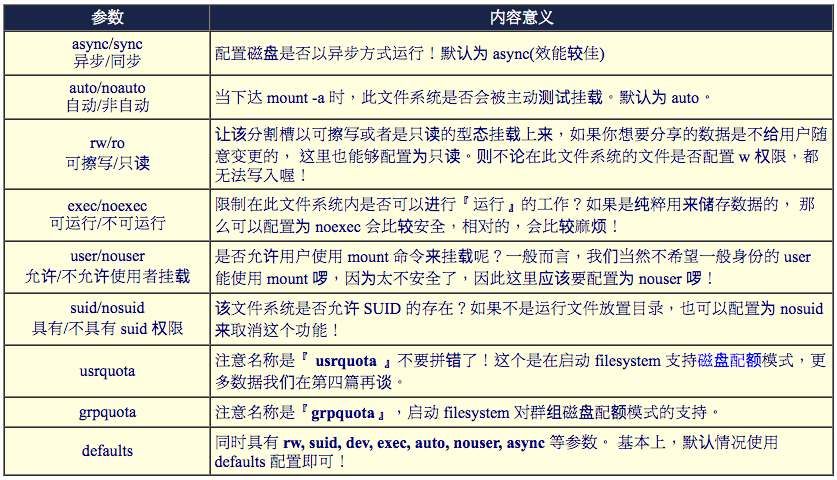
第五栏：能否被 dump 备份命令作用：
dump 是一个用来做为备份的命令(我们会在第二十五章备份策略中谈到这个命令)， 我们可以透过 fstab 指定哪个文件系统必须要进行 dump 备份！ 0 代表不要做 dump 备份， 1 代表要每天进行 dump 的动作。 2 也代表其他不定日期的 dump 备份动作， 通常这个数值不是 0 就是 1 啦！
第六栏：是否以 fsck 检验扇区：
启动的过程中，系统默认会以 fsck 检验我们的 filesystem 是否完整 (clean)。 不过，某些 filesystem 是不需要检验的，例如内存置换空间 (swap) ，或者是特殊文件系统例如 /proc 与 /sys 等等。所以，在这个字段中，我们可以配置是否要以 fsck 检验该 filesystem 喔。 0 是不要检验， 1 表示最早检验(一般只有根目录会配置为 1)， 2 也是要检验，不过 1 会比较早被检验啦！ 一般来说，根目录配置为 1 ，其他的要检验的 filesystem 都配置为 2 就好了。
例题： 假设我们要将 /dev/hdc6 每次启动都自动挂载到 /mnt/hdc6 ，该如何进行？
答： 首先，请用 nano 将底下这一行写入 /etc/fstab 当中；
[root@www ~]# nano /etc/fstab /dev/hdc6 /mnt/hdc6 ext3 defaults 1 2
再来看看 /dev/hdc6 是否已经挂载，如果挂载了，请务必卸除再说！
[root@www ~]# df Filesystem 1K-blocks Used Available Use% Mounted on /dev/hdc6 1976312 42072 1833836 3% /mnt/hdc6 # 竟然不知道何时被挂载了？赶紧给他卸除先！ [root@www ~]# umount /dev/hdc6
最后测试一下刚刚我们写入 /etc/fstab 的语法有没有错误！这点很重要！因为这个文件如果写错了， 则你的 Linux 很可能将无法顺利启动完成！所以请务必要测试测试喔！
[root@www ~]# mount -a [root@www ~]# df
最终有看到 /dev/hdc6 被挂载起来的信息才是成功的挂载了！而且以后每次启动都会顺利的将此文件系统挂载起来
Note: etc/fstab 是启动时的配置文件，不过，实际 filesystem 的挂载是记录到 /etc/mtab 与 /proc/mounts 这两个文件当中的。每次我们在更动 filesystem 的挂载时，也会同时更动这两个文件喔！
Important: 万一发生您在 /etc/fstab 输入的数据错误，导致无法顺利启动成功，而进入单人维护模式当中，那时候的 / 可是 read only 的状态，当然您就无法修改 /etc/fstab ，也无法升级 /etc/mtab 啰～那怎么办？ 没关系，可以利用底下这一招：
[root@www ~]# mount -n -o remount,rw /
4.2 特殊装置 loop 挂载(映象档不刻录就挂载使用)
挂载光盘/DVD映象文件
那要如何挂载呢？鸟哥将整个 CentOS 5.2 的 DVD 映象档捉到测试机上面，然后利用这个文件来挂载给大家参考看看啰！
[root@www ~]# ll -h /root/centos5.2_x86_64.iso
-rw-r--r-- 1 root root 4.3G Oct 27 17:34 /root/centos5.2_x86_64.iso
# 看到上面的结果吧！这个文件就是映象档，文件非常的大吧！
[root@www ~]# mkdir /mnt/centos_dvd
[root@www ~]# mount -o loop /root/centos5.2_x86_64.iso /mnt/centos_dvd
[root@www ~]# df
Filesystem 1K-blocks Used Available Use% Mounted on
/root/centos5.2_x86_64.iso
4493152 4493152 0 100% /mnt/centos_dvd
# 就是这个项目！ .iso 映象文件内的所有数据可以在 /mnt/centos_dvd 看到！
[root@www ~]# ll /mnt/centos_dvd
total 584
drwxr-xr-x 2 root root 522240 Jun 24 00:57 CentOS <==瞧！就是DVD的内容啊！
-rw-r--r-- 8 root root 212 Nov 21 2007 EULA
-rw-r--r-- 8 root root 18009 Nov 21 2007 GPL
drwxr-xr-x 4 root root 2048 Jun 24 00:57 images
.....底下省略.....
[root@www ~]# umount /mnt/centos_dvd/
# 测试完成！记得将数据给他卸除！
Tip: 换句话说，你也可以在这个文件内『动手脚』去修改文件的！这也是为什么很多映象档提供后，还得要提供验证码 (MD5) 给使用者确认该映象档没有问题！
创建大文件以制作 loop 装置文件！ BEST_PRACTICE
既然能够挂载 DVD 的映象档，那么我能不能制作出一个大文件，然后将这个文件格式化后挂载呢？ 好问题！这是个有趣的动作！而且还能够帮助我们解决很多系统的分割不良的情况呢！举例来说，如果当初在分割时， 你只有分割出一个根目录，假设你已经没有多余的容量可以进行额外的分割的！偏偏根目录的容量还很大！ 此时你就能够制作出一个大文件，然后将这个文件挂载！如此一来感觉上你就多了一个分割槽啰！ 用途非常的广泛
底下我们在 /home 下创建一个 512MB 左右的大文件，然后将这个大文件格式化并且实际挂载
怎么创建这个大文件呢？在 Linux 底下我们有一支很好用的程序 dd ！他可以用来创建空的文件喔！详细的说明请先翻到下一章 压缩命令的运用 来查阅
假设我要创建一个空的文件在 /home/loopdev ，那可以这样做：
[root@www ~]# dd if=/dev/zero of=/home/loopdev bs=1M count=512 512+0 records in <==读入 512 笔数据 512+0 records out <==输出 512 笔数据 536870912 bytes (537 MB) copied, 12.3484 seconds, 43.5 MB/s # 这个命令的简单意义如下： # if 是 input file ，输入文件。那个 /dev/zero 是会一直输出 0 的装置！ # of 是 output file ，将一堆零写入到后面接的文件中。 # bs 是每个 block 大小，就像文件系统那样的 block 意义； # count 则是总共几个 bs 的意思。 [root@www ~]# ll -h /home/loopdev -rw-r--r-- 1 root root 512M Oct 28 02:29 /home/loopdev
dd 就好像在迭砖块一样，将 512 块，每块 1MB 的砖块堆栈成为一个大文件 (/home/loopdev) ！ 最终就会出现一个 512MB 的文件
[root@www ~]# mkfs -t ext3 /home/loopdev mke2fs 1.39 (29-May-2006) /home/loopdev is not a block special device. Proceed anyway? (y,n) y <==由于不是正常的装置，所以这里会提示你！ Filesystem label= OS type: Linux Block size=1024 (log=0) Fragment size=1024 (log=0) 131072 inodes, 524288 blocks 26214 blocks (5.00%) reserved for the super user .....以下省略.....
利用 mount 的特殊参数，那个 -o loop 的参数来处理！
[root@www ~]# mount -o loop /home/loopdev /media/cdrom/ [root@www ~]# df Filesystem 1K-blocks Used Available Use% Mounted on /home/loopdev 507748 18768 462766 4% /media/cdrom
[ME: failed in my docker linux box, try in a real linux box. Refer to Linux: Create /tmp And Mount as Partition File With the noexec, nosuid, And nodev]
透过这个简单的方法，感觉上你就可以在原本的分割槽在不更动原有的环境下制作出你想要的分割槽就是了！ 这东西很好用的！尤其是想要玩 Linux 上面的『虚拟机』的话， 也就是以一部 Linux 主机再切割成为数个独立的主机系统时，类似 VMware 这类的软件， 在 Linux 上使用 xen 这个软件，他就可以配合这种 loop device 的文件类型来进行根目录的挂载， 真的非常有用的
5. 内存置换空间(swap)之建置：
安装时一定需要的两个 partition 啰！ 一个是根目录，另外一个就是 swap(内存置换空间)。
虽然目前(2009)主机的内存都很大，至少都有 1GB 以上啰！因此在个人使用上你不要配置 swap 应该也没有什么太大的问题。 不过服务器可就不这么想了. 由于你不会知道何时会有大量来自网络的要求，因此你最好能够预留一些 swap 来缓冲一下系统的内存用量
现在想象一个情况，你已经将系统创建起来了，此时却才发现你没有建置 swap ～那该如何是好呢？ 透过本章上面谈到的方法，你可以使用如下的方式来创建你的 swap 啰！
- 配置一个 swap partition
- 创建一个虚拟内存的文件
5.1 使用实体分割槽建置swap
创建 swap 分割槽的方式也是非常的简单的！透过底下几个步骤就搞定啰：
- 分割：先使用 fdisk 在你的磁盘中分割出一个分割槽给系统作为 swap 。由于 Linux 的 fdisk 默认会将分割槽的 ID 配置为 Linux 的文件系统，所以你可能还得要配置一下 system ID 就是了。
- 格式化：利用创建 swap 格式的『mkswap 装置文件名』就能够格式化该分割槽成为 swap 格式啰
- 使用：最后将该 swap 装置启动，方法为：『swapon 装置文件名』。
- 观察：最终透过 free 这个命令来观察一下内存的用量吧！
… …
5.2 使用文件建置swap
如果是在实体分割槽无法支持的环境下，此时前一小节提到的 loop 装置建置方法就派的上用场啦！ 与实体分割槽不一样的只是利用 dd 去建置一个大文件而已。
1. 使用 dd 这个命令来新增一个 128MB 的文件在 /tmp 底下：
[root@www ~]# dd if=/dev/zero of=/tmp/swap bs=1M count=128 128+0 records in 128+0 records out 134217728 bytes (134 MB) copied, 1.7066 seconds, 78.6 MB/s [root@www ~]# ll -h /tmp/swap -rw-r--r-- 1 root root 128M Oct 28 15:33 /tmp/swap
2. 使用 mkswap 将 /tmp/swap 这个文件格式化为 swap 的文件格式：
[root@www ~]# mkswap /tmp/swap Setting up swapspace version 1, size = 134213 kB # 这个命令下达时请『特别小心』，因为下错字节控制，将可能使您的文件系统挂掉！
3. 使用 swapon 来将 /tmp/swap 启动啰！
[root@www ~]# free
total used free shared buffers cached
Mem: 742664 450860 291804 0 45584 261284
-/+ buffers/cache: 143992 598672
Swap: 1277088 96 1276992
[root@www ~]# swapon /tmp/swap
[root@www ~]# free
total used free shared buffers cached
Mem: 742664 450860 291804 0 45604 261284
-/+ buffers/cache: 143972 598692
Swap: 1408152 96 1408056
[root@www ~]# swapon -s
Filename Type Size Used Priority
/dev/hdc5 partition 1020088 96 -1
/dev/hdc7 partition 257000 0 -2
/tmp/swap file 131064 0 -3
[ME: failed in my docker linux box, 'Operation not permitted']
4. 使用 swapoff 关掉 swap file
[root@www ~]# swapoff /tmp/swap
[root@www ~]# swapoff /dev/hdc7
[root@www ~]# free
total used free shared buffers cached
Mem: 742664 450860 291804 0 45660 261284
-/+ buffers/cache: 143916 598748
Swap: 1020088 96 1019992 <==回复成最原始的样子了！
5.3 swap使用上的限制
说实话，swap 在目前的壁纸计算机来讲，存在的意义已经不大了！这是因为目前的 x86 主机所含的内存实在都太大了 (一般入门级至少也都有 512MB 了)，所以，我们的 Linux 系统大概都用不到 swap 这个玩意儿的。不过， 如果是针对服务器或者是工作站这些常年上线的系统来说的话，那么，无论如何，swap 还是需要创建的。
因为 swap 主要的功能是当物理内存不够时，则某些在内存当中所占的程序会暂时被移动到 swap 当中，让物理内存可以被需要的程序来使用。另外，如果你的主机支持电源管理模式， 也就是说，你的 Linux 主机系统可以进入『休眠』模式的话，那么， 运行当中的程序状态则会被纪录到 swap 去，以作为『唤醒』主机的状态依据！ 另外，有某些程序在运行时，本来就会利用 swap 的特性来存放一些数据段， 所以， swap 来是需要创建的！只是不需要太大！
不过， swap 在被创建时，是有限制的喔！
- 在核心 2.4.10 版本以后，单一 swap 量已经没有 2GB 的限制了，
- 但是，最多还是仅能创建到 32 个 swap 的数量！
- 而且，由于目前 x8664 (64位) 最大内存寻址到 64GB， 因此， swap 总量最大也是仅能达 64GB 就是了！
6. 文件系统的特殊观察与操作
6.1 boot sector 与 superblock 的关系
- superblock 的大小为 1024 bytes；
- superblock 前面需要保留 1024 bytes 下来，以让启动管理程序可以安装。
分析上述两点我们知道 boot sector 应该会占有 1024 bytes 的大小吧！但是整个文件系统主要是依据 block 大小来决定的啊！ 因此要讨论 boot sector 与 superblock 的关系时，不得不将 block 的大小拿出来讨论
block 为 1024 bytes (1K) 时：
如果 block 大小刚好是 1024 的话，那么 boot sector 与 superblock 各会占用掉一个 block ， 所以整个文件系统图示就会如同图 1.3.1 所显示的那样，boot sector 是独立于 superblock 外面
block 大于 1024 bytes (2K, 4K) 时：
如果 block 大于 1024 的话，那么 superblock 将会在 0 号！
但是 superblock 其实就只有 1024bytes 嘛！ 为了怕浪费更多空间，因此第一个 block 内就含有 boot sector 与 superblock 两者 ！举上头的表格来说，因为每个 block 占有 4K ，因此在第一个 block 内 superblock 仅占有 1024-2047 ( 由 0 号起算的话)之间的咚咚，至于 2048bytes 以后的空间就真的是保留啦！而 0-1023 就保留给 boot sector 来使用。
6.2 磁盘空间之浪费问题
一个 block 只能放置一个文件， 因此太多小文件将会浪费非常多的磁盘容量。
整个文件系统中包括 superblock, inode table 与其他中介数据等其实都会浪费磁盘容量
当你使用 ls -l 去查询某个目录下的数据时，第一行都会出现一个『total』的字样. 其实那就是该目录下的所有数据所耗用的实际 block 数量 * block 大小的值。 我们可以透过 ll -s 来观察看看上述的意义：
[root@www ~]# ll -s total 104 8 -rw------- 1 root root 1474 Sep 4 18:27 anaconda-ks.cfg 8 -rw-r--r-- 2 root root 255 Jan 6 2007 crontab 4 lrwxrwxrwx 1 root root 12 Oct 22 13:58 crontab2 -> /etc/crontab 48 -rw-r--r-- 1 root root 42304 Sep 4 18:26 install.log 12 -rw-r--r-- 1 root root 5661 Sep 4 18:25 install.log.syslog 4 -rw-r--r-- 1 root root 0 Sep 27 00:25 test1 8 drwxr-xr-x 2 root root 4096 Sep 27 00:25 test2 4 -rw-rw-r-- 1 root root 0 Sep 27 00:36 test3 8 drwxrwxr-x 2 root root 4096 Sep 27 00:36 test4
举例来说，那个 crontab 虽然仅有 255bytes ， 不过他却占用了两个 block (每个 block 为 4K)，将所有的 block 加总就得到 104Kbytes 那个数值了。 如果计算每个文件实际容量的加总结果，其实只有 56.5K 而已～所以啰，这样就耗费掉好多容量了
如果想要查询某个目录所耗用的所有容量时，那就使用 du 吧！不过 du 如果加上 -s 这个选项时， 还可以依据不同的规范去找出文件系统所消耗的容量喔！举例来说，我们就来看看 etc 这个目录的容量状态
[root@www ~]# du -sb /etc 108360494 /etc <==单位是 bytes 喔！ [root@www ~]# du -sm /etc 118 /etc <==单位是 Mbytes 喔！
6.3 利用 GNU 的 parted 进行分割行为
fdisk 却无法支持到高于 2TB 以上的分割槽！ 此时就得需要 parted 来处理了 [ME: partx in ubuntu 16.04]
parted 可以直接在一行命令列就完成分割，是一个非常好用的命令！他的语法有点像这样：
[root@www ~]# parted [装置] [命令 [参数]] 选项与参数： 命令功能： 新增分割：mkpart [primary|logical|extended] [ext3|vfat] 开始 结束 分割表 ：print 删除分割：rm [partition] 范例一：以 parted 列出目前本机的分割表数据 [root@www ~]# parted /dev/hdc print Model: IC35L040AVER07-0 (ide) <==硬盘接口与型号 Disk /dev/hdc: 41.2GB <==磁盘文件名与容量 Sector size (logical/physical): 512B/512B <==每个扇区的大小 Partition Table: msdos <==分割表形式 Number Start End Size Type File system Flags 1 32.3kB 107MB 107MB primary ext3 boot 2 107MB 10.6GB 10.5GB primary ext3 3 10.6GB 15.8GB 5240MB primary ext3 4 15.8GB 41.2GB 25.3GB extended 5 15.8GB 16.9GB 1045MB logical linux-swap 6 16.9GB 18.9GB 2056MB logical ext3 7 18.9GB 19.2GB 263MB logical linux-swap [ 1 ] [ 2 ] [ 3 ] [ 4 ] [ 5 ] [ 6 ]
可以使用『 man parted 』，或者是『 parted /dev/hdc help mkpart 』去查询更详细的数据。
比较有趣的地方在于分割表的输出。我们将上述的分割表示意拆成六部分来说明：
- Number：这个就是分割槽的号码啦！举例来说，1号代表的是 /dev/hdc1 的意思；
- Start：起始的磁柱位置在这颗磁盘的多少 MB 处？有趣吧！他以容量作为单位喔！
- End：结束的磁柱位置在这颗磁盘的多少 MB 处？
- Size：由上述两者的分析，得到这个分割槽有多少容量；
- Type：就是分割槽的类型，有primary, extended, logical等类型；
- File system：就如同 fdisk 的 System ID 之意。
尝试来创建一个全新的分割槽吧！因为我们仅剩下逻辑分割槽可用，所以等一下底下我们选择的会是 logical 的分割类型:
范例二：创建一个约为 512MB 容量的逻辑分割槽
[root@www ~]# parted /dev/hdc mkpart logical ext3 19.2GB 19.7GB # 请参考前一表格的命令介绍，因为我们的 /dev/hdc7 在 19.2GB 位置结束， # 所以我们当然要由 19.2GB 位置处继续下一个分割，这样懂了吧？ [root@www ~]# parted /dev/hdc print .....前面省略..... 7 18.9GB 19.2GB 263MB logical linux-swap 8 19.2GB 19.7GB 502MB logical <==就是刚刚创建的啦！
范例三：将刚刚创建的第八号磁盘分区槽删除掉吧！
[root@www ~]# parted /dev/hdc rm 8 # 这样就删除了！实在很厉害！所以这个命令的下达要特别注意！ # 因为...命令一下去就立即生效了～如果写错的话，会哭死～
Tip: 除非你有使用到大于 2TB 以上的磁盘， 否则请爱用 fdisk 这个程序来进行分割
7. 重点回顾
- 基本上 Linux 的正统文件系统为 Ext2 ，该文件系统内的信息主要有：
- superblock: 记录此 filesystem 的整体信息，包括inode/block 的总量、使用量、剩余量，以及文件系统的格式与相关信息等；
- inode：记录文件的属性，一个文件占用一个inode，同时记录此文件的数据所在的 block 号码；
- block：实际记录文件的内容，若文件太大时，会占用多个block 。
- Ext2 文件系统的数据存取为索引式文件系统(indexed allocation)
- 需要碎片整理的原因就是文件写入的 block 太过于离散了，此时文件读取的效能将会变的很差所致。 这个时候可以透过碎片整理将同一个文件所属的 blocks 汇整在一起。
- Ext2文件系统主要有：boot sector, superblock, inode bitmap, block bitmap, inode table, data block 等六大部分。
- data block 是用来放置文件内容数据地方，在 Ext2 文件系统中所支持的 block 大小有 1K, 2K 及 4K 三种而已
- inode 记录文件的属性/权限等数据，其他重要项目为： 每个 inode 大小均固定为 128 bytes； 每个文件都仅会占用一个 inode 而已； 因此文件系统能够创建的文件数量与 inode 的数量有关；
- 文件的 block 在记录文件的实际数据，目录的 block 则在记录该目录底下文件名与其 inode 号码的对照表；
- 日志式文件系统 (journal) 会多出一块记录区，随时记载文件系统的主要活动，可加快系统复原时间；
- Linux 文件系统为添加效能，会让主存储器作为大量的磁盘高速缓存；
- 实体链接只是多了一个文件名对该 inode 号码的链接而已；
- 符号链接就类似Windows的快捷方式功能。
- 磁盘的使用必需要经过：分割、格式化与挂载，分别惯用的命令为：fdisk, mkfs, mount三个命令
- 启动自动挂载可参考/etc/fstab之配置，配置完毕务必使用 mount -a 测试语法正确否；
8. 本章习题
情境模拟题二：由于我的系统原本分割的不够好，我的用户希望能够独立一个 filesystem 附挂在 /srv/myproject 目录下。
那你该如何创建新的 filesystem ，并且让这个 filesystem 每次启动都能够自动的挂载到 /srv/myproject ， 且该目录是给 project 这个群组共享的，其他人不可具有任何权限。且该 filesystem 具有 5GB 的容量。
- 目标：理解文件系统的建置、自动挂载文件系统与项目开发必须要的权限；
- 前提：你需要进行过第七章的情境模拟才可以继续本章；
- 需求：本章的所有概念必须要清楚！
那就让我们开始来处理这个流程吧！
- 首先，我们必须要使用 fdisk /dev/hdc 来创建新的 partition ，由于本章之前范例的 partition 已经在上一个练习中删除， 因此你应该会多出一个 /dev/hdc6 才对：『fdisk /dev/hdc』，然后按下『 n 』，按下『Enter』选择默认的启始磁柱， 按下『+5000M』创建 5GB 的磁盘分区槽，可以多按一次『p 』看看是否正确，若无问题则按下『w』写入分割表；
- 避免重新启动，因此使用『 partprobe 』强制核心升级分割表；如果屏幕出现类似：『 endrequest: I/O error dev fd0, sector 0 』的错误时，不要担心啊！这个说明的是『找不到软盘』，我们本来就没有软盘， 所以这个错误是可以忽略的。
- 创建完毕后，开始进行格式化的动作如下：『mkfs -t ext3 /dev/hdc6』，这样就 OK 了！
- 开始创建挂载点，利用：『 mkdir /srv/myproject 』来创建即可；
- 编写自动挂载的配置文件：『 nano /etc/fstab 』，这个文件最底下新增一行，内容如下：/dev/hdc6 /srv/myproject ext3 defaults 1 2
- 测试自动挂载：『 mount -a 』，然后使用『 df 』观察看看有无挂载即可！
- 配置最后的权限，使用：『 chgrp project /srv/myproject 』以及『 chmod 2770 /srv/myproject 』即可。
简答题部分：
如果由于你的主机磁盘容量不够大，你想要添加一颗新磁盘，并将该磁盘全部分割成单一分割槽，且将该分割槽挂载到 /home 目录
详细的流程可以分为硬件组装、磁盘分区、格式化、数据搬移与挂载等。
- 安装硬盘：关掉 Linux 主机电源，若为 IDE 接口时，需要处理跳针 (jump) ，放入主机后插好硬盘的扁平电缆与电源线，重新启动电源；
- 磁盘分区：透过类似上述情境模拟二的动作，将整颗磁盘分区成单一主要分割槽，类似 /dev/sdb1 占有全部容量；
- 格式化：透过 mkfs -t ext3 来格式化；
- 数据搬移：由于原本的 home 还会有数据存在，因此你可以 mount /dev/sdb1 /mnt ，再将 /home 的数据复制到 /mnt 中，例如：『 cp -a /home/* /mnt 』即可。复制完毕后卸除 /home 以及 /mnt
- 重新挂载：编辑 /etc/fstab ，将 /home 所在的 filesystem 装置改为 /dev/sdb1 之类的新分割槽，然后 mount -a 测试看看是否正确，如果正确的话，才是顺利结束了这次的动作。
如果扇区 /dev/hda3 有问题，偏偏他是被挂载上的，请问我要如何修理此一扇区？
umount /dev/hda3 fsck /dev/hda3
9. 参考数据与延伸阅读
- 注1：根据The Linux Document Project的文件所绘制的图示，详细的参考文献可以参考如下连结：Filesystem How-To: http://tldp.org/HOWTO/Filesystems-HOWTO-6.html
- 注2：参考维基百科所得数据，链接网址如下：条目： Ext2 介绍 http://en.wikipedia.org/wiki/Ext2
- 注3：PAVE为一套秀图软件，常应用于数值模式的输出文件之再处理：PAVE 使用手册： http://www.ie.unc.edu/cempd/EDSS/pave_doc/index.shtml
- 注4：详细的 inode 表格所定义的旗标可以参考如下连结：John's spec of the second extended filesystem: http://uranus.it.swin.edu.au/~jn/explore2fs/es2fs.htm
- 注5：参考 Ext2 官网提供的解说文件，这份文件非常值得参考的！文章名称：『Design and Implementation of the Second Extended Filesystem 』http://e2fsprogs.sourceforge.net/ext2intro.html
- 注6：Red Hat 自己推出的白皮书内容：文章名称：Whitepaper: Red Hat's New Journaling File System: ext3 http://www.redhat.com/support/wpapers/redhat/ext3/
- 注7：其他值得参考的 Ext2 相关文件系统文章之连结如下：The Second Extended File System - An introduction: http://www.freeos.com/articles/3912/
- ext3 or ReiserFS? Hans Reiser Says Red Hat's Move Is Understandable http://www.linuxplanet.com/linuxplanet/reports/3726/1/ 文件系统的比较：维基百科：http://en.wikipedia.org/wiki/Comparison_of_file_systems
- 注8：NTFS 文件系统官网：Linux-NTFS Project: http://www.linux-ntfs.org/
- 注9： Linux 核心所支持的硬件之装置代号(Major, Minor)查询：http://www.kernel.org/pub/linux/docs/device-list/devices.txt
- 注10：与 Boot sector 及 Superblock 的探讨有关的讨论文章：
- The Second Extended File System: http://www.nongnu.org/ext2-doc/ext2.html
- Rob's ext2 documentation: http://www.landley.net/code/toybox/ext2.html
- Life is different blog: ext2文件系统分析： http://www.qdhedu.com/blog/post/7.html
10. 针对本文的建议：http://phorum.vbird.org/viewtopic.php?t=23881
第九章、文件与文件系统的压缩与打包
1. 压缩文件的用途与技术
有的压缩程序还可以进行容量限制， 使一个大型文件可以分割成为数个小型文件，以方便软盘片携带呢！
其实文件里面有相当多的『空间』存在，并不是完全填满的， 而『压缩』的技术就是将这些『空间』填满，以让整个文件占用的容量下降！ 不过，这些『压缩过的文件』并无法直接被我们的操作系统所使用的，因此， 若要使用这些被压缩过的文件数据，则必须将他『还原』回来未压缩前的模样， 那就是所谓的『解压缩』罗！而至於压缩前与压缩后的文件所占用的磁碟空间大小， 就可以被称为是『压缩比』
目前很多的 WWW 网站也是利用文件压缩的技术来进行数据的传送，好让网站频宽的可利用率上升
2. Linux 系统常见的压缩命令
在Linux的环境中，压缩文件的扩展名大多是：『*.tar, *.tar.gz, *.tgz, *.gz, *.Z, *.bz2』
几个常见的压缩文件扩展名吧：
- *.Z compress 程序压缩的文件；
- *.gz gzip 程序压缩的文件；
- *.bz2 bzip2 程序压缩的文件；
- *.tar tar 程序打包的数据，并没有压缩过；
- *.tar.gz tar 程序打包的文件，其中并且经过 gzip 的压缩
- *.tar.bz2 tar 程序打包的文件，其中并且经过 bzip2 的压缩
这些命令通常仅能针对一个文件来压缩与解压缩，如此一来， 每次压缩与解压缩都要一大堆文件，岂不烦人？此时，那个所谓的『打包软件, tar』就显的很重要 (亦即是将很多文件集结成为一个文件). 后来，GNU 计画中，将整个 tar 与压缩的功能结合在一起，如此一来提供使用者更方便并且更强大的压缩与打包功能
2.1 compress
非常老旧的一款，大概只有在非常旧的 Unix 机器上面还会找到这个软件
apt-get install ncompress
[root@www ~]# compress [-rcv] 文件或目录 <==这里是压缩 [root@www ~]# uncompress 文件.Z <==这里是解压缩 选项与参数： -r ：可以连同目录下的文件也同时给予压缩呢！ -c ：将压缩数据输出成为 standard output (输出到萤幕) -v ：可以秀出压缩后的文件资讯以及压缩过程中的一些档名变化。
范例一：将 /etc/man.config 复制到 /tmp ，并加以压缩
[root@www ~]# cd /tmp [root@www tmp]# cp /etc/man.config . [root@www tmp]# compress -v man.config man.config: -- replaced with man.config.Z Compression: 41.86% [root@www tmp]# ls -l /etc/man.config /tmp/man* -rw-r--r-- 1 root root 4617 Jan 6 2007 /etc/man.config <==原有文件 -rw-r--r-- 1 root root 2684 Nov 10 17:14 /tmp/man.config.Z <==经过压缩的文件！
不知道你有没有发现，复制到 /tmp 的 man.config 不见了！因为被压缩成为 man.config.Z 罗 也就是说，在默认的情况中，被 compress 压缩的原始文件会不见，而压缩文件会被创建起来， 而且扩展名会是 *.Z。
范例二：将刚刚的压缩档解开
[root@www tmp]# uncompress man.config.Z [root@www tmp]# ll man* -rw-r--r-- 1 root root 4617 Nov 10 17:14 man.config
如果我想要保留原始文件且又要创建压缩档呢？可以使用 -c 的语法:
范例三：将 man.config 压缩成另外一个文件来备份
[root@www tmp]# compress -c man.config > man.config.back.Z [root@www tmp]# ll man* -rw-r--r-- 1 root root 4617 Nov 10 17:14 man.config -rw-r--r-- 1 root root 2684 Nov 10 17:24 man.config.back.Z # 这个 -c 的选项比较有趣！他会将压缩过程的数据输出到萤幕上，而不是写入成为 # *.Z 的压缩档。所以，我们可以透过数据流重导向的方法将数据输出成为另一个档名。 # 关於数据流重导向，我们会在第十一章 bash 详细谈论的啦！
Note: 再次强调，compress 已经很少人在使用了，因为这支程序无法解开 *.gz 的文件，而 gzip 则可以解开 *.Z 的文件
2.2 gzip, zcat
gzip 可以说是应用度最广的压缩命令了！目前 gzip 可以解开 compress, zip 与 gzip 等软件所压缩的文件。 至於 gzip 所创建的压缩档为 *.gz 的档名
[root@www ~]# gzip [-cdtv#] 档名 [root@www ~]# zcat 档名.gz 选项与参数： -c ：将压缩的数据输出到萤幕上，可透过数据流重导向来处理； -d ：解压缩的参数； -t ：可以用来检验一个压缩档的一致性～看看文件有无错误； -v ：可以显示出原文件/压缩文件的压缩比等资讯； -# ：压缩等级，-1 最快，但是压缩比最差、-9 最慢，但是压缩比最好！默认是 -6
范例一：将 /etc/man.config 复制到 /tmp ，并且以 gzip 压缩
[root@www ~]# cd /tmp [root@www tmp]# cp /etc/man.config . [root@www tmp]# gzip -v man.config man.config: 56.1% -- replaced with man.config.gz [root@www tmp]# ll /etc/man.config /tmp/man* -rw-r--r-- 1 root root 4617 Jan 6 2007 /etc/man.config -rw-r--r-- 1 root root 2684 Nov 10 17:24 /tmp/man.config.back.Z -rw-r--r-- 1 root root 2057 Nov 10 17:14 /tmp/man.config.gz <==gzip压缩比较佳
与 compress 类似的，当你使用 gzip 进行压缩时，在默认的状态下原本的文件会被压缩成为 .gz 的档名， 原始文件就不再存在了
gzip 的压缩比要比 compress 好的多.
使用 gzip 压缩的文件在 Windows 系统中，竟然可以被 WinRAR 这个软件解压缩
范例二：由於 man.config 是文字档，请将范例一的压缩档的内容读出来！
[root@www tmp]# zcat man.config.gz # 由於 man.config 这个原本的文件是是文字档，因此我们可以尝试使用 zcat 去读取！ # 此时萤幕上会显示 man.config.gz 解压缩之后的文件内容！
范例三：将范例一的文件解压缩
[root@www tmp]# gzip -d man.config.gz # 不要使用 gunzip 这个命令，不好背！使用 gzip -d 来进行解压缩！ # 与 gzip 相反， gzip -d 会将原本的 .gz 删除，产生原本的 man.config 文件。
范例四：将范例三解开的 man.config 用最佳的压缩比压缩，并保留原本的文件
[root@www tmp]# gzip -9 -c man.config > man.config.gz
cat 可以读取纯文字档，那个 zcat 则可以读取纯文字档被压缩后的压缩档 (支持 compress 与 gizp 的压缩档)
2.3 bzip2, bzcat
bzip2 则是为了取代 gzip 并提供更佳的压缩比而来的
bzip2 的用法几乎与 gzip 相同
[root@www ~]# bzip2 [-cdkzv#] 档名 [root@www ~]# bzcat 档名.bz2 选项与参数： -c ：将压缩的过程产生的数据输出到萤幕上！ -d ：解压缩的参数 -k ：保留原始文件，而不会删除原始的文件喔！ -z ：压缩的参数 -v ：可以显示出原文件/压缩文件的压缩比等资讯； -# ：与 gzip 同样的，都是在计算压缩比的参数， -9 最佳， -1 最快！
范例一：将刚刚的 /tmp/man.config 以 bzip2 压缩
[root@www tmp]# bzip2 -z man.config # 此时 man.config 会变成 man.config.bz2 ！
范例二：将范例一的文件内容读出来！
[root@www tmp]# bzcat man.config.bz2 # 此时萤幕上会显示 man.config.bz2 解压缩之后的文件内容！！
范例三：将范例一的文件解压缩
[root@www tmp]# bzip2 -d man.config.bz2
范例四：将范例三解开的 man.config 用最佳的压缩比压缩，并保留原本的文件
[root@www tmp]# bzip2 -9 -c man.config > man.config.bz2
可以使用 bunzip2 这个命令来取代 bzip2 -d
3. 打包命令: tar
虽然 gzip 与 bzip2 也能够针对目录来进行压缩， 不过，这两个命令对目录的压缩指的是『将目录内的所有文件 "分别" 进行压缩』的动作
tar 可以将多个目录或文件打包成一个大文件，同时还可以透过 gzip/bzip2 的支持，将该文件同时进行压缩！ 更有趣的是，由於 tar 的使用太广泛了，目前 Windows 的 WinRAR 也支持 .tar.gz 档名的解压缩
tar
tar 的选项与参数非常的多！我们只讲几个常用的选项
[root@www ~]# tar [-j|-z] [cv] [-f 创建的档名] filename... <==打包与压缩
[root@www ~]# tar [-j|-z] [tv] [-f 创建的档名] <==察看档名
[root@www ~]# tar [-j|-z] [xv] [-f 创建的档名] [-C 目录] <==解压缩
选项与参数：
-c ：创建打包文件，可搭配 -v 来察看过程中被打包的档名(filename)
-t ：察看打包文件的内容含有哪些档名，重点在察看『档名』就是了；
-x ：解打包或解压缩的功能，可以搭配 -C (大写) 在特定目录解开
特别留意的是， -c, -t, -x 不可同时出现在一串命令列中。
-j ：透过 bzip2 的支持进行压缩/解压缩：此时档名最好为 *.tar.bz2
-z ：透过 gzip 的支持进行压缩/解压缩：此时档名最好为 *.tar.gz
-v ：在压缩/解压缩的过程中，将正在处理的档名显示出来！
-f filename：-f 后面要立刻接要被处理的档名！建议 -f 单独写一个选项罗！
-C 目录 ：这个选项用在解压缩，若要在特定目录解压缩，可以使用这个选项。
其他后续练习会使用到的选项介绍：
-p ：保留备份数据的原本权限与属性，常用於备份(-c)重要的配置档
-P ：保留绝对路径，亦即允许备份数据中含有根目录存在之意；
--exclude=FILE：在压缩的过程中，不要将 FILE 打包！
其实最简单的使用 tar 就只要记忆底下的方式即可：
- 压 缩：tar -jcv -f filename.tar.bz2 要被压缩的文件或目录名称
- 查 询：tar -jtv -f filename.tar.bz2
- 解压缩：tar -jxv -f filename.tar.bz2 -C 欲解压缩的目录
tar 并不会主动的产生创建的档名喔！我们要自订啦！ 所以扩展名就显的很重要了！
- 如果不加 [-j|-z] 的话，档名最好取为 *.tar 即可。
- 如果是 -j 选项，代表有 bzip2 的支持，因此档名最好就取为 *.tar.bz2 ，因为 bzip2 会产生 .bz2 的扩展名之故！
- 如果是加上了 -z 的 gzip 的支持，那档名最好取为 *.tar.gz
由於『 -f filename 』是紧接在一起的，过去很多文章常会写成『-jcvf filename』，这样是对的， 但由於选项的顺序理论上是可以变换的，所以很多读者会误认为『-jvfc filename』也可以～事实上这样会导致产生的档名变成 c ！ 因为 -fc 嘛！所以罗，建议您在学习 tar 时，将『 -f filename 』与其他选项独立出来，会比较不容易发生问题
使用 tar 加入 -j 或 -z 的参数备份 etc 目录
有事没事备份一下 /etc 这个目录是件好事
[root@www ~]# tar -zpcv -f /root/etc.tar.gz /etc tar: Removing leading `/' from member names <==注意这个警告信息 /etc/ ....中间省略.... /etc/esd.conf /etc/crontab # 由於加上 -v 这个选项，因此正在作用中的档名就会显示在萤幕上。 # 如果你可以翻到第一页，会发现出现上面的错误信息！底下会讲解。 # 至於 -p 的选项，重点在於『保留原本文件的权限与属性』之意。 [root@www ~]# tar -jpcv -f /root/etc.tar.bz2 /etc # 显示的信息会跟上面一模一样罗！ [root@www ~]# ll /root/etc* -rw-r--r-- 1 root root 8740252 Nov 15 23:07 /root/etc.tar.bz2 -rw-r--r-- 1 root root 13010999 Nov 15 23:01 /root/etc.tar.gz [root@www ~]# du -sm /etc 118 /etc # 为什么建议您使用 -j 这个选项？从上面的数值你可以知道了吧？^_^
至於加上『 -p 』这个选项的原因是为了保存原本文件的权限与属性！我们曾在第七章的 cp 命令介绍时谈到权限与文件类型(例如连结档)对复制的不同影响。 同样的，在备份重要的系统数据时，这些原本文件的权限需要做完整的备份比较好
查阅 tar 文件的数据内容(可察看档名)，与备份档名有否根目录的意义
[root@www ~]# tar -jtv -f /root/etc.tar.bz2 ....前面省略.... -rw-r--r-- root/root 1016 2008-05-25 14:06:20 etc/dbus-1/session.conf -rw-r--r-- root/root 153 2007-01-07 19:20:54 etc/esd.conf -rw-r--r-- root/root 255 2007-01-06 21:13:33 etc/crontab
如果加上 -v 这个选项时，详细的文件权限/属性都会被列出来！如果只是想要知道档名而已， 那么就将 -v 拿掉即可。
Important: 从上面的数据我们可以发现一件很有趣的事情，那就是每个档名都没了根目录了！这也是上一个练习中出现的那个警告信息『tar: Removing leading `/' from member names(移除了档名开头的 `/' )』所告知的情况！那为什么要拿掉根目录呢？主要是为了安全！我们使用 tar 备份的数据可能会需要解压缩回来使用， 在 tar 所记录的档名 (就是我们刚刚使用 tar -jtvf 所察看到的档名) 那就是解压缩后的实际档名。 如果拿掉了根目录，假设你将备份数据在 tmp 解开，那么解压缩的档名就会变成『/tmp/etc/xxx』。 但『如果没有拿掉根目录，解压缩后的档名就会是绝对路径， 亦即解压缩后的数据一定会被放置到 /etc/xxx 去！』如此一来，你的原本的 /etc 底下的数据， 就会被备份数据所覆盖过去了！
如果你确定你就是需要备份根目录到 tar 的文件中，那可以使用 -P (大写) 这个选项，请看底下的例子分析：
范例：将档名中的(根)目录也备份下来，并察看一下备份档的内容档名 [root@www ~]# tar -jpPcv -f /root/etc.and.root.tar.bz2 /etc ....中间过程省略.... [root@www ~]# tar -jtf /root/etc.and.root.tar.bz2 /etc/dbus-1/session.conf /etc/esd.conf /etc/crontab # 这次查阅档名不含 -v 选项，所以仅有档名而已！没有详细属性/权限等参数。
建议，还是不要加上 -P 这个选项来备份！ 毕竟很多时候，我们备份是为了要未来追踪问题用的，倒不一定需要还原回原本的系统中！ 所以拿掉根目录后，备份数据的应用会比较有弹性！也比较安全
将备份的数据解压缩，并考虑特定目录的解压缩动作 (-C 选项的应用)
[root@www ~]# tar -jxv -f /root/etc.tar.bz2 [root@www ~]# ll ....(前面省略).... drwxr-xr-x 105 root root 12288 Nov 11 04:02 etc ....(后面省略)....
『指定欲解开的目录』, 使用 -C 这个选项
[root@www ~]# tar -jxv -f /root/etc.tar.bz2 -C /tmp [root@www ~]# ll /tmp ....(前面省略).... drwxr-xr-x 105 root root 12288 Nov 11 04:02 etc ....(后面省略)....
[ME: 需要先建立目标目录]
仅解开单一文件的方法
只要使用 -jtv 找到你要的档名，然后将该档名解开即可。
# 1. 先找到我们要的档名，假设解开 shadow 文件好了： [root@www ~]# tar -jtv -f /root/etc.tar.bz2 | grep 'shadow' -r-------- root/root 1230 2008-09-29 02:21:20 etc/shadow- -r-------- root/root 622 2008-09-29 02:21:20 etc/gshadow- -r-------- root/root 636 2008-09-29 02:21:25 etc/gshadow -r-------- root/root 1257 2008-09-29 02:21:25 etc/shadow <==这是我们要的！ # 先搜寻重要的档名！其中那个 grep 是『撷取』关键字的功能！我们会在第三篇说明！ # 这里您先有个概念即可！那个管线 | 配合 grep 可以撷取关键字的意思！ # 2. 将该文件解开！语法与实际作法如下： [root@www ~]# tar -jxv -f 打包档.tar.bz2 待解开档名 [root@www ~]# tar -jxv -f /root/etc.tar.bz2 etc/shadow etc/shadow [root@www ~]# ll etc total 8 -r-------- 1 root root 1257 Sep 29 02:21 shadow <==呦喝！只有一个文件啦！ # 很有趣！此时只会解开一个文件而已！不过，重点是那个档名！你要找到正确的档名。 # 在本例中，你不能写成 /etc/shadow ！因为记录在 etc.tar.bz2 内的档名之故！
打包某目录，但不含该目录下的某些文件之作法
假设我们想要打包 etc /root 这几个重要的目录，但却不想要打包 /root/etc* 开头的文件， 因为该文件都是刚刚我们才创建的备份档嘛！而且假设这个新的打包文件要放置成为 /root/system.tar.bz2 ， 当然这个文件自己不要打包自己 (因为这个文件放置在 /root 底下啊！)，此时我们可以透过 –exclude
[root@www ~]# tar -jcv -f /root/system.tar.bz2 --exclude=/root/etc* \ > --exclude=/root/system.tar.bz2 /etc /root
Tip: 在新版的 tar 命令中，鸟哥发现原本的『 –exclude file 』似乎无法实际运行了！使用 man tar 明明有看到这个选项的说， 但使用 info tar 才发现，选项功能已经变成了『 –exclude=file 』的模式
仅备份比某个时刻还要新的文件
某些情况下你会想要备份新的文件而已，并不想要备份旧文件！此时 –newer-mtime 这个选项就粉重要啦！ 其实有两个选项啦，一个是『 –newer 』另一个就是『 –newer-mtime 』，这两个选项有何不同呢？ 我们在 第七章的 touch 介绍中谈到过三种不同的时间参数， 当使用 –newer 时，表示后续的日期包含『 mtime 与 ctime 』，而 –newer-mtime 则仅是 mtime 而已！
# 1. 先由 find 找出比 /etc/passwd 还要新的文件 [root@www ~]# find /etc -newer /etc/passwd ....(过程省略).... # 此时会显示出比 /etc/passwd 这个文件的 mtime 还要新的档名， # 这个结果在每部主机都不相同！您先自行查阅自己的主机即可，不会跟鸟哥一样！ [root@www ~]# ll /etc/passwd -rw-r--r-- 1 root root 1945 Sep 29 02:21 /etc/passwd # 2. 好了，那么使用 tar 来进行打包吧！日期为上面看到的 2008/09/29 [root@www ~]# tar -jcv -f /root/etc.newer.then.passwd.tar.bz2 \ > --newer-mtime="2008/09/29" /etc/* ....(中间省略).... /etc/smartd.conf <==真的有备份的文件 ....(中间省略).... /etc/yum.repos.d/ <==目录都会被记录下来！ tar: /etc/yum.repos.d/CentOS-Base.repo: file is unchanged; not dumped # 最后行显示的是『没有被备份的』，亦即 not dumped 的意思！ # 3. 显示出文件即可 [root@www ~]# tar -jtv -f /root/etc.newer.then.passwd.tar.bz2 | \ > grep -v '/$' # 透过这个命令可以呼叫出 tar.bz2 内的结尾非 / 的档名！就是我们要的啦！
可以进行差异文件的记录与备份呢～ 这样子的备份就会显的更容易 [ME: 增量备份]：如果我在一个月前才进行过一次完整的数据备份， 那么这个月想要备份时，当然可以仅备份上个月进行备份的那个时间点之后的升级的文件即可
基本名称： tarfile, tarball ？
如果仅是打包而已，就是『 tar -cv -f file.tar 』而已，这个文件我们称呼为 tarfile 。 如果还有进行压缩的支持，例如『 tar -jcv -f file.tar.bz2 』时，我们就称呼为 tarball (tar 球？)
tar 除了可以将数据打包成为文件之外，还能够将文件打包到某些特别的装置去，举例来说， 磁带机 (tape) 就是一个常见的例子。磁带机由於是一次性读取/写入的装置，因此我们不能够使用类似 cp 等命令来复制的！ 那如果想要将 /home, /root, /etc 备份到磁带机 (/dev/st0) 时，就可以使用：『tar -cv -f /dev/st0 /home /root /etc』，很简单容易吧！ 磁带机用在备份 (尤其是企业应用) 是很常见的工作
特殊应用：利用管线命令与数据流 BEST_PRACTICE
在 tar 的使用中，有一种方式最特殊，那就是透过标准输入输出的数据流重导向(standard input/standard output)， 以及管线命令 (pipe) 的方式，将待处理的文件一边打包一边解压缩到目标目录去。 关於数据流重导向与管线命令更详细的数据我们会在第十一章 bash 再跟大家介绍， 底下先来看一个例子:
# 1. 将 /etc 整个目录一边打包一边在 /tmp 解开 [root@www ~]# cd /tmp [root@www tmp]# tar -cvf - /etc | tar -xvf - # 这个动作有点像是 cp -r /etc /tmp 啦～依旧是有其有用途的！ # 要注意的地方在於输出档变成 - 而输入档也变成 - ，又有一个 | 存在～ # 这分别代表 standard output, standard input 与管线命令啦！ # 简单的想法中，你可以将 - 想成是在内存中的一个装置(缓冲区)。 # 更详细的数据流与管线命令，请翻到 bash 章节罗！
在上面的例子中，我们想要『将 /etc 底下的数据直接 copy 到目前所在的路径，也就是 /tmp 底下』，但是又觉得使用 cp -r 有点麻烦，那么就直接以这个打包的方式来打包，其中，命令里面的 - 就是表示那个被打包的文件啦！ 由於我们不想要让中间文件存在，所以就以这一个方式来进行复制的行为
例题：系统备份范例
系统上有非常多的重要目录需要进行备份，而且其实我们也不建议你将备份数据放置到 /root 目录下！ 假设目前你已经知道重要的目录有底下这几个：
- etc (配置档)
- home (使用者的家目录)
- var/spool/mail (系统中，所有帐号的邮件信箱)
- var/spool/cron (所有帐号的工作排成配置档)
- /root (系统管理员的家目录)
由於第八章曾经做过的练习的关系， /home/loop* 不需要备份，而且 /root 底下的压缩档也不需要备份，另外假设你要将备份的数据放置到 /backups ，并且该目录仅有 root 有权限进入！ 此外，每次备份的档名都希望不相同，例如使用：backup-system-20091130.tar.bz2 之类的档名来处理。 那你该如何处理这个备份数据呢？
参考解答:
# 1. 先处理要放置备份数据的目录与权限： [root@www ~]# mkdir /backups [root@www ~]# chmod 700 /backups [root@www ~]# ll -d /backups drwx------ 2 root root 4096 Nov 30 16:35 /backups # 2. 假设今天是 2009/11/30 ，则创建备份的方式如下： [root@www ~]# tar -jcv -f /backups/backup-system-20091130.tar.bz2 \ > --exclude=/root/*.bz2 --exclude=/root/*.gz --exclude=/home/loop* \ > /etc /home /var/spool/mail /var/spool/cron /root ....(过程省略).... [root@www ~]# ll -h /backups/ -rw-r--r-- 1 root root 8.4M Nov 30 16:43 backup-system-20091130.tar.bz2
4. 完整备份工具：dump, restore
dump: 针对文件系统进行备份或者是储存. 其实这个命令除了能够针对整个 filesystem 备份之外，也能够仅针对目录来备份
dump
其实 dump 的功能颇强，他除了可以备份整个文件系统之外，还可以制定等级
假设你的 /home 是独立的一个文件系统，那你第一次进行过 dump 后，再进行第二次 dump 时， 你可以指定不同的备份等级，假如指定等级为 1 时，此时新备份的数据只会记录与第一次备份所有差异的文件
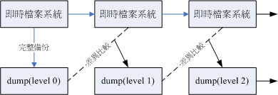
图 4.1.1、dump 运行的等级 (level)
level 1 仅只是比较目前的文件系统与 level 0 之间的差异后，备份有变化过的文件而已。至於 level 2 则是与 level 1 进行比较
虽然 dump 支持整个文件系统或者是单一各别目录，但是对於目录的支持是比较不足的，这也是 dump 的限制所在。 简单的说，如果想要备份的数据如下时，则有不同的限制情况：
- 当待备份的数据为单一文件系统： 如果是单一文件系统 (filesystem) ，那么该文件系统可以使用完整的 dump 功能，包括利用 0~9 的数个 level 来备份， 同时，备份时可以使用挂载点或者是装置档名 (例如 /dev/sda5 之类的装置档名) 来进行备份！
- 待备份的数据只是目录，并非单一文件系统： 例如你仅想要备份 home/someone ，但是该目录并非独立的文件系统时。此时备份就有限制啦！包括：
- 所有的备份数据都必须要在该目录 (本例为：/home/someone/) 底下；
- 且仅能使用 level 0 ，亦即仅支持完整备份而已；
- 不支持 -u 选项，亦即无法创建 /etc/dumpdates 这个各别 level 备份的时间记录档；
dump 的选项虽然非常的繁复，不过如果只是想要简单的操作时，您只要记得底下的几个选项就很够用了:
[root@www ~]# dump [-Suvj] [-level] [-f 备份档] 待备份数据 [root@www ~]# dump -W 选项与参数： -S ：仅列出后面的待备份数据需要多少磁碟空间才能够备份完毕； -u ：将这次 dump 的时间记录到 /etc/dumpdates 文件中； -v ：将 dump 的文件过程显示出来； -j ：加入 bzip2 的支持！将数据进行压缩，默认 bzip2 压缩等级为 2 -level：就是我们谈到的等级，从 -0 ~ -9 共十个等级； -f ：有点类似 tar 啦！后面接产生的文件，亦可接例如 /dev/st0 装置档名等 -W ：列出在 /etc/fstab 里面的具有 dump 配置的 partition 是否有备份过？
用 dump 备份完整的文件系统
用 dump 备份非文件系统，亦即单一目录的方法
restore
dump 的复原使用的是 restore 这个命令
简单的介绍:
[root@www ~]# restore -t [-f dumpfile] [-h] <==用来察看 dump 档
[root@www ~]# restore -C [-f dumpfile] [-D 挂载点] <==比较dump与实际文件
[root@www ~]# restore -i [-f dumpfile] <==进入互动模式
[root@www ~]# restore -r [-f dumpfile] <==还原整个文件系统
选项与参数：
相关的各种模式，各种模式无法混用喔！例如不可以写 -tC 啦！
-t ：此模式用在察看 dump 起来的备份档中含有什么重要数据！类似 tar -t 功能；
-C ：此模式可以将 dump 内的数据拿出来跟实际的文件系统做比较，
最终会列出『在 dump 文件内有记录的，且目前文件系统不一样』的文件；
-i ：进入互动模式，可以仅还原部分文件，用在 dump 目录时的还原！
-r ：将整个 filesystem 还原的一种模式，用在还原针对文件系统的 dump 备份；
其他较常用到的选项功能：
-h ：察看完整备份数据中的 inode 与文件系统 label 等资讯
-f ：后面就接你要处理的那个 dump 文件罗！
-D ：与 -C 进行搭配，可以查出后面接的挂载点与 dump 内有不同的文件！
用 restore 观察 dump 后的备份数据内容
比较差异并且还原整个文件系统
仅还原部分文件的 restore 互动模式
5. 光盘写入工具
某些重要的、需要重复备份的数据(可能具有时间特性)，你可能会需要使用类似 DVD 之类的储存媒体来备份出来
有时如果你希望系统自动在某些时刻帮你主动的进行烧录时，那么文字介面的烧录行为就有帮助啦！
通常的作法是这样的：
- 先将所需要备份的数据建置成为一个映像档(iso)，利用 mkisofs 命令来处理；
- 将该映像档烧录至光盘或 DVD 当中，利用 cdrecord 命令来处理。
5.1 mkisofs：创建映像档
想要利用烧录机将你的数据烧录到 DVD 时， 也得要先将你的数据包成一个映像档，这样才能够写入DVD片中。而将你的数据包成一个映像档的方式就透过 mkisofs 这个命令即可。 mkisofs 的使用方式如下：
[root@www ~]# mkisofs [-o 映像档] [-rv] [-m file] 待备份文件.. [-V vol] \ > -graft-point isodir=systemdir ... 选项与参数： -o ：后面接你想要产生的那个映像档档名。 -r ：透过 Rock Ridge 产生支持 Unix/Linux 的文件数据，可记录较多的资讯；光盘的格式一般称为 iso9660 ，这种格式一般仅支持旧版的 DOS 档名，亦即档名只能以 8.3 (档名8个字节，扩展名3个字节) 的方式存在。如果加上 -r 的选项之后，那么文件资讯能够被记录的比较完整，可包括UID/GID与权限等等！ 所以，记得加这个 -r 的选项。 -v ：显示建置 ISO 文件的过程 -m file ：-m 为排除文件 (exclude) 的意思，后面的文件不备份到映像档中 -V vol ：创建 Volume，有点像 Windows 在文件总管内看到的 CD title 的东西 -graft-point：graft有转嫁或移植的意思，相关数据在底下文章内说明。
- mkisofs 有非常多好用的选项可以选择，不过如果我们只是想要制作数据光盘时，上述的选项也就够用了。
一般默认的情况下，所有要被加到映像档中的文件都会被放置到映象档中的根目录， 如此一来可能会造成烧录后的文件分类不易的情况。所以，你可以使用 -graft-point 这个选项，当你使用这个选项之后， 可以利用如下的方法来定义位於映像档中的目录，例如：
- 映像档中的目录所在=实际 Linux 文件系统的目录所在
- movies/=/srv/movies (在 Linux 的 srv/movies 内的文件，加至映像档中的 /movies 目录)
- linux/etc=/etc (将 Linux 中的 /etc 内的所有数据备份到映像档中的 linux/etc 目录中)
Example:
[root@www ~]# mkisofs -r -V 'linux_file' -o /tmp/system.img \ > -m /home/lost+found -graft-point /root=/root /home=/home /etc=/etc [root@www ~]# ll -h /tmp/system.img -rw-r--r-- 1 root root 689M Dec 17 11:41 /tmp/system.img # 上面的命令会创建一个大文件，期中 -graft-point 后面接的就是我们要备份的数据。 # 必须要注意的是那个等号的两边，等号左边是在映像档内的目录，右侧则是实际的数据。 [root@www ~]# mount -o loop /tmp/system.img /mnt [root@www ~]# ll /mnt dr-xr-xr-x 105 root root 32768 Dec 17 11:40 etc dr-xr-xr-x 5 root root 2048 Dec 17 11:40 home dr-xr-xr-x 7 root root 4096 Dec 17 11:40 root # 瞧！数据是分门别类的在各个目录中喔这样了解乎？最后将数据卸载一下： [root@www ~]# umount /mnt
5.2 cdrecord：光盘烧录工具
root@www ~]# cdrecord -scanbus dev=ATA <==查询烧录机位置
[root@www ~]# cdrecord -v dev=ATA:x,y,z blank=[fast|all] <==抹除重复读写片
[root@www ~]# cdrecord -v dev=ATA:x,y,z -format <==格式化DVD+RW
[root@www ~]# cdrecord -v dev=ATA:x,y,z [可用选项功能] file.iso
选项与参数：
-scanbus ：用在扫瞄磁碟汇流排并找出可用的烧录机，后续的装置为 ATA 介面
-v ：在 cdrecord 运行的过程中，显示过程而已。
dev=ATA:x,y,z ：后续的 x, y, z 为你系统上烧录机所在的位置，非常重要！
blank=[fast|all]：blank 为抹除可重复写入的CD/DVD-RW，使用fast较快，all较完整
-format ：仅针对 DVD+RW 这种格式的 DVD 而已；
[可用选项功能] 主要是写入 CD/DVD 时可使用的选项，常见的选项包括有：
-data ：指定后面的文件以数据格式写入，不是以 CD 音轨(-audio)方式写入！
speed=X ：指定烧录速度，例如CD可用 speed=40 为40倍数，DVD则可用 speed=4 之类
-eject ：指定烧录完毕后自动退出光盘
fs=Ym ：指定多少缓冲内存，可用在将映像档先缓存至缓冲内存。默认为 4m，
一般建议可添加到 8m ，不过，还是得视你的烧录机而定。
针对 DVD 的选项功能：
driveropts=burnfree ：打开 Buffer Underrun Free 模式的写入功能
-sao ：支持 DVD-RW 的格式
侦测你的烧录机所在位置：
进行 CD 的烧录动作：
进行 DVD-RW 的烧录动作：
6. 其他常见的压缩与备份工具
6.1 dd
这个 dd 命令最大的功效，鸟哥认为，应该是在於『备份』啊！ 因为 dd 可以读取磁碟装置的内容(几乎是直接读取磁区"sector")，然后将整个装置备份成一个文件呢！
我们仅讲一些比较重要的选项，如下：
[root@www ~]# dd if="input_file" of="output_file" bs="block_size" \ > count="number" 选项与参数： if ：就是 input file 罗～也可以是装置喔！ of ：就是 output file 喔～也可以是装置； bs ：规划的一个 block 的大小，若未指定则默认是 512 bytes(一个 sector 的大小) count：多少个 bs 的意思。 范例一：将 /etc/passwd 备份到 /tmp/passwd.back 当中 [root@www ~]# dd if=/etc/passwd of=/tmp/passwd.back 3+1 records in 3+1 records out 1945 bytes (1.9 kB) copied, 0.000332893 seconds, 5.8 MB/s [root@www ~]# ll /etc/passwd /tmp/passwd.back -rw-r--r-- 1 root root 1945 Sep 29 02:21 /etc/passwd -rw-r--r-- 1 root root 1945 Dec 17 18:09 /tmp/passwd.back # 仔细的看一下，我的 /etc/passwd 文件大小为 1945 bytes，因为我没有配置 bs ， # 所以默认是 512 bytes 为一个单位，因此，上面那个 3+1 表示有 3 个完整的 # 512 bytes，以及未满 512 bytes 的另一个 block 的意思啦！ # 事实上，感觉好像是 cp 这个命令啦～ 范例二：将自己的磁碟之第一个磁区备份下来 [root@www ~]# dd if=/dev/hdc of=/tmp/mbr.back bs=512 count=1 1+0 records in 1+0 records out 512 bytes (512 B) copied, 0.0104586 seconds, 49.0 kB/s # 第一个磁区内含有 MBR 与 partition table ，透过这个动作， # 我们可以一口气将这个磁碟的 MBR 与 partition table 进行备份哩！ 范例三：找出你系统最小的那个分割槽，并且将他备份下来： [root@www ~]# df -h Filesystem Size Used Avail Use% Mounted on /dev/hdc2 9.5G 3.9G 5.1G 44% / /dev/hdc3 4.8G 651M 3.9G 15% /home /dev/hdc1 99M 21M 73M 23% /boot <==就捉他好了！ [root@www ~]# dd if=/dev/hdc1 of=/tmp/boot.whole.disk 208782+0 records in 208782+0 records out 106896384 bytes (107 MB) copied, 6.24721 seconds, 17.1 MB/s [root@www ~]# ll -h /tmp/boot.whole.disk -rw-r--r-- 1 root root 102M Dec 17 18:14 /tmp/boot.whole.disk # 等於是将整个 /dev/hdc1 通通捉下来的意思～如果要还原呢？就反向回去！ # dd if=/tmp/boot.whole.disk of=/dev/hdc1 即可！非常简单吧！ # 简单的说，如果想要整个硬盘备份的话，就类似 Norton 的 ghost 软件一般， # 由 disk 到 disk ，嘿嘿～利用 dd 就可以啦～厉害厉害！
如果要将数据填回到 filesystem 当中， 可能需要考虑到原本的 filesystem 才能成功啊！让我们来完成底下的例题
例题： 你想要将你的 /dev/hdc1 进行完整的复制到另一个 partition 上，请使用你的系统上面未分割完毕的容量再创建一个与 /dev/hdc1 差不多大小的分割槽 (只能比 /dev/hdc1 大，不能比他小！)，然后将之进行完整的复制 (包括需要复制 boot sector 的区块)。
答： 由於需要复制 boot sector 的区块，所以使用 cp 或者是 tar 这种命令是无法达成需求的！ 此时那个 dd 就派的上用场了。你可以这样做：
# 1. 先进行分割的动作 [root@www ~]# fdisk -l /dev/hdc Device Boot Start End Blocks Id System /dev/hdc1 * 1 13 104391 83 Linux # 上面鸟哥仅撷取重要的数据而已！我们可以看到 /dev/hdc1 仅有 13 个磁柱 [root@www ~]# fdisk /dev/hdc Command (m for help): n First cylinder (2354-5005, default 2354): 这里按 enter Using default value 2354 Last cylinder or +size or +sizeM or +sizeK (2354-5005, default 5005): 2366 Command (m for help): p Device Boot Start End Blocks Id System /dev/hdc9 2354 2366 104391 83 Linux Command (m for help): w # 为什么要使用 2366 呢？因为 /dev/hdc1 使用 13 个磁柱，因此新的 partition # 我们也给她 13 个磁柱，因此 2354 + 13 -1 = 2366 罗！ [root@www ~]# partprobe # 2. 不需要格式化，直接进行 sector 表面的复制！ [root@www ~]# dd if=/dev/hdc1 of=/dev/hdc9 208782+0 records in 208782+0 records out 106896384 bytes (107 MB) copied, 16.8797 seconds, 6.3 MB/s [root@www ~]# mount /dev/hdc9 /mnt [root@www ~]# df Filesystem 1K-blocks Used Available Use% Mounted on /dev/hdc1 101086 21408 74459 23% /boot /dev/hdc9 101086 21408 74459 23% /mnt # 这两个玩意儿会『一模一样』喔！ [root@www ~]# umount /mnt
非常有趣的范例吧！新分割出来的 partition 不需要经过格式化，因为 dd 可以将原本旧的 partition 上面，将 sector 表面的数据整个复制过来！ 当然连同 superblock, boot sector, meta data 等等通通也会复制过来！是否很有趣呢？未来你想要建置两颗一模一样的磁碟时， 只要下达类似： dd if=/dev/sda of=/dev/sdb ，就能够让两颗磁碟一模一样，甚至 /dev/sdb 不需要分割与格式化， 因为该命令可以将 /dev/sda 内的所有数据，包括 MBR 与 partition table 也复制到 /dev/sdb
6.2 cpio
cpio 可以备份任何东西，包括装置设备文件。不过 cpio 有个大问题， 那就是 cpio 不会主动的去找文件来备份！啊！那怎办？所以罗，一般来说， cpio 得要配合类似 find 等可以找到档名的命令来告知 cpio 该被备份的数据在哪里 (牵涉到我们在第三篇才会谈到的数据流重导向)
[root@www ~]# cpio -ovcB > [file|device] <==备份
[root@www ~]# cpio -ivcdu < [file|device] <==还原
[root@www ~]# cpio -ivct < [file|device] <==察看
备份会使用到的选项与参数：
-o ：将数据 copy 输出到文件或装置上
-B ：让默认的 Blocks 可以添加至 5120 bytes ，默认是 512 bytes ！
这样的好处是可以让大文件的储存速度加快(请参考 i-nodes 的观念)
还原会使用到的选项与参数：
-i ：将数据自文件或装置 copy 出来系统当中
-d ：自动创建目录！使用 cpio 所备份的数据内容不见得会在同一层目录中，因此我们
必须要让 cpio 在还原时可以创建新目录，此时就得要 -d 选项的帮助！
-u ：自动的将较新的文件覆盖较旧的文件！
-t ：需配合 -i 选项，可用在"察看"以 cpio 创建的文件或装置的内容
一些可共享的选项与参数：
-v ：让储存的过程中文件名称可以在萤幕上显示
-c ：一种较新的 portable format 方式储存
范例：找出 /boot 底下的所有文件，然后将他备份到 /tmp/boot.cpio 去！
[root@www ~]# find /boot -print /boot /boot/message /boot/initrd-2.6.18-128.el5.img ....以下省略.... # 透过这个 find 我们可以找到 /boot 底下应该要存在的档名！包括文件与目录 [root@www ~]# find /boot | cpio -ocvB > /tmp/boot.cpio [root@www ~]# ll -h /tmp/boot.cpio -rw-r--r-- 1 root root 16M Dec 17 23:30 /tmp/boot.cpio
范例：将刚刚的文件给他在 root 目录下解开
[root@www ~]# cpio -idvc < /tmp/boot.cpio [root@www ~]# ll /root/boot # 你可以自行比较一下 /root/boot 与 /boot 的内容是否一模一样！
事实上 cpio 可以将系统的数据完整的备份到磁带机上头去喔！如果你有磁带机的话！
- 备份：find / | cpio -ocvB > /dev/st0
- 还原：cpio -idvc < /dev/st0
Note: 这个 cpio 好像不怎么好用呦！但是，他可是备份的时候的一项利器呢！因为他可以备份任何的文件， 包括 /dev 底下的任何装置文件！所以他可是相当重要的呢！而由於 cpio 必需要配合其他的程序，例如 find 来创建档名，所以 cpio 与管线命令及数据流重导向的相关性就相当的重要了
其实系统里面已经含有一个使用 cpio 创建的文件喔！那就是 /boot/initrd-xxx 这个文件啦！ 现在让我们来将这个文件解压缩看看，看你能不能发现该文件的内容为何？
# 1. 我们先来看看该文件是属於什么文件格式，然后再加以处理： [root@www ~]# file /boot/initrd-2.6.18-128.el5.img /boot/initrd-2.6.18-128.el5.img: gzip compressed data, ... # 唔！看起来似乎是使用 gzip 进行压缩过～那如何处理呢？ # 2. 透过更名，将该文件添加扩展名，然后予以解压缩看看： [root@www ~]# mkdir initrd [root@www ~]# cd initrd [root@www initrd]# cp /boot/initrd-2.6.18-128.el5.img initrd.img.gz [root@www initrd]# gzip -d initrd.img.gz [root@www initrd]# ll -rw------- 1 root root 5408768 Dec 17 23:53 initrd.img [root@www initrd]# file initrd.img initrd.img: ASCII cpio archive (SVR4 with no CRC) # 嘿嘿！露出马脚了吧！确实是 cpio 的文件档喔！ # 3. 开始使用 cpio 解开此文件： [root@www initrd]# cpio -iduvc < initrd.img sbin init sysroot ....以下省略.... # 瞧！这样就将这个文件解开罗！这样了解乎？
7. 重点回顾
- 压缩命令为透过一些运算方法去将原本的文件进行压缩，以减少文件所占用的磁碟容量。 压缩前与压缩后的文件所占用的磁碟容量比值， 就可以被称为是『压缩比』
- 压缩的好处是可以减少磁碟容量的浪费，在 WWW 网站也可以利用文件压缩的技术来进行数据的传送，好让网站频宽的可利用率上升喔
- 压缩文件的扩展名大多是：『*.tar, *.tar.gz, *.tgz, *.gz, *.Z, *.bz2』
- 常见的压缩命令有 gzip 与 bzip2 ，其中 bzip2 压缩比较之 gzip 还要更好，建议使用 bzip2 ！
- tar 可以用来进行文件打包，并可支持 gzip 或 bzip2 的压缩。
- 压 缩：tar -jcv -f filename.tar.bz2 要被压缩的文件或目录名称
- 查 询：tar -jtv -f filename.tar.bz2
- 解压缩：tar -jxv -f filename.tar.bz2 -C 欲解压缩的目录
- dump 命令可备份文件系统或单一目录
- dump 的备份若针对文件系统时，可进行 0-9 的 level 差异备份！其中 level 0 为完整备份；
- restore 命令可还原被 dump 建置的备份档；
- 要创建光盘烧录数据时，可透过 mkisofs 命令来建置；
- 可透过 cdrecord 来写入 CD 或 DVD 烧录机
- dd 可备份完整的 partition 或 disk ，因为 dd 可读取磁碟的 sector 表面数据
- cpio 为相当优秀的备份命令，不过必须要搭配类似 find 命令来读入欲备份的档名数据，方可进行备份动作。
8. 本章习题
情境模拟题二：你想要逐时备份 /srv/myproject 这个目录内的数据，又担心每次备份的资讯太多， 因此想要使用 dump 的方式来逐一备份数据到 /backups 这个目录下。
- 目标：了解到 dump 以及各个不同 level 的作用；
- 前提：被备份的数据为单一 partition ，亦即本例中的 /srv/myproject
- 需求：/srv/myproject 为单一 filesystem ，且在 /etc/fstab 内此挂载点的 dump 栏位为 1
实际处理的方法其实还挺简单的！我们可以这样做看看：
- 先替该目录制作一些数据，亦即复制一些东西过去吧！ cp -a /etc /boot /srv/myproject
- 开始进行 dump ，记得，一开始是使用 level 0 的完整备份喔！ mkdir /backups dump -0u -j -f /backups/myproject.dump /srv/myproject 上面多了个 -j 的选项，目的是为了要进行压缩，减少备份的数据量。
- 尝试将 srv/myproject 这个文件系统加大，将 /var/log 的数据复制进去吧！ cp -a var/log /srv/myproject 此时原本的 /srv/myproject 已经被改变了！继续进行备份看看！
- 将 /srv/myproject 以 level 1 来进行备份： dump -1u -j -f /backups/myproject.dump.1 /srv/myproject ls -l /backups 你应该就会看到两个文件，其中第二个文件 (myproject.dump.1) 会小的多！这样就搞定罗备份数据！
情境模拟三：假设过了一段时间后，你的 /srv/myproject 变的怪怪的，你想要将该 filesystem 以刚刚的备份数据还原， 此时该如何处理呢？你可以这样做的：
先将 /srv/myproject 卸载，并且将该 partition 重新格式化！
umount /dev/hdc6 mkfs -t ext3 /dev/hdc6
重新挂载原本的 partition ，此时该目录内容应该是空的！
mount -a
你可以自行使用 df 以及 ls -l /srv/myproject 查阅一下该目录的内容，是空的啦！
将完整备份的 level 0 的文件 /backups/myproject.dump 还原回来：
cd /srv/myproject restore -r -f /backups/myproject.dump
此时该目录的内容为第一次备份的状态！还需要进行后续的处理才行！
将后续的 level 1 的备份也还原回来：
cd /srv/myproject restore -r -f /backups/myproject.dump.1
此时才是恢复到最后一次备份的阶段！如果还有 level 2, level 3 时，就得要一个一个的依序还原才行！
9. 参考数据与延伸阅读
- 台湾学术网络管理文件：Backup Tools in UNIX(Linux): http://nmc.nchu.edu.tw/tanet/backup_tools_in_unix.htm
- 中文 How to 文件计画 (CLDP)：http://www.linux.org.tw/CLDP/HOWTO/hardware/CD-Writing-HOWTO/CD-Writing-HOWTO-3.html
- 熊宝贝工作记录之： Linux 烧录实作：http://csc.ocean-pioneer.com/docum/linux_burn.html
- PHP5 网管实验室： http://www.php5.idv.tw/html.php?mod=article&do=show&shid=26
- CentOS 5.x 之 man dump
- CentOS 5.x 之 man restore
10. 针对本文的建议：http://phorum.vbird.org/viewtopic.php?t=23882
第三部份：学习Shell与Shell Scripts
Shell: 在 Linux 的世界中，使用的是 GNU 发展出来的强化的第二代 shell ，称为 BASH Shell. 他还可以记录命令、文件或命令的补全功能、环境变量的使用等等
接着下来，我们还得了解一下什么是数据流重导向？还有常规表示法等等的问题， 这都是未来我们系统管理员在管理主机上面，一个不可缺乏的利器！当然啰，要将这些功能整合起来运用的话， 就不能不学习一下所谓的脚本『 shell scripts 』，他具有基础的程序能力( Program )
再来，在未来的架站配置当中，常会使用到文本编辑器来编辑参数配置文件，这个时候， 系统管理员至少务必要熟悉一套文字接口下的文书编辑软件，当然不限制哪一套软件啦，但是 vi 是最标准的 Unix-Like 的文字接口之文字处理软件
第十章、vim 程序编辑器
(http://cn.linux.vbird.org/linux_basic/0310vi.php)
vim 是进阶版的 vi ， vim 不但可以用不同颜色显示文字内容，还能够进行诸如 shell script, C program 等程序编辑功能， 你可以将 vim 视为一种程序编辑器
1. vi 与 vim
在 Linux 的世界中，绝大部分的配置文件都是以 ASCII 的纯文本形态存在
Linux 在文字接口下的文书编辑器有哪些呢？其实有非常多喔！常常听到的就有： emacs, pico, nano, joe, 与 vim 等等(注1)。
1.1 为何要学 vim
因为：
- 所有的 Unix Like 系统都会内建 vi 文书编辑器，其他的文书编辑器则不一定会存在；
- 重点：很多个别软件的编辑接口都会主动呼叫 vi (例如未来会谈到的 crontab, visudo, edquota 等指令)；
- vim 具有程序编辑的能力，可以主动的以字体颜色辨别语法的正确性，方便程序设计；
- 因为程序简单，编辑速度相当快速。
连 vim 的官方网站 (http://www.vim.org) 自己也说 vim 是一个『程序开发工具』而不是文字处理软件
2. vi 的使用
vi 共分为三种模式，分别是『一般模式』、『编辑模式』与『指令列命令模式』。 这三种模式的作用分别是：
- 一般模式： 默认的模式. 使用『上下左右』按键来移动光标，你可以使用『删除字符』或『删除整行』来处理档案内容， 也可以使用『复制、贴上』来处理你的文件数据。
- 编辑模式： 在一般模式中可以进行删除、复制、贴上等等的动作，但是却无法编辑文件内容的！ 要等到你按下『i, I, o, O, a, A, r, R』等任何一个字母之后才会进入编辑模式。注意了！通常在 Linux 中，按下这些按键时，在画面的左下方会出现『 INSERT 或 REPLACE 』的字样，此时才可以进行编辑。而如果要回到一般模式时， 则必须要按下『Esc』这个按键即可退出编辑模式。
- 指令列命令模式：在一般模式当中，输入『 : / ? 』三个中的任何一个按钮，就可以将光标移动到最底下那一行。在这个模式当中， 可以提供你『搜寻资料』的动作，而读取、存盘、大量取代字符、离开 vi 、显示行号等等的动作则是在此模式中达成的！
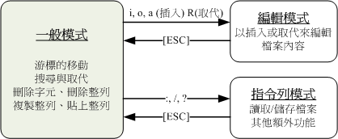
图 2.1、vi 三种模式的相互关系
Tip: 一般模式可与编辑模式及指令列模式切换， 但编辑模式与指令列模式之间不可互相切换
2.1 简易执行范例
2.2 按键说明
第一部份：一般模式可用的按钮说明，光标移动、复制贴上、搜寻取代等
[ME: Commands]
- h 或 向左箭头键(←) 光标向左移动一个字符
- j 或 向下箭头键(↓) 光标向下移动一个字符
- k 或 向上箭头键(↑) 光标向上移动一个字符
- l 或 向右箭头键(→) 光标向右移动一个字符
- 如果你将右手放在键盘上的话，你会发现 hjkl 是排列在一起的，因此可以使用这四个按钮来移动光标。 如果想要进行多次移动的话，例如向下移动 30 行，可以使用 "30j" 或 "30↓" 的组合按键， 亦即加上想要进行的次数(数字)后，按下动作即可！
- [Ctrl] + [f] 屏幕『向下』移动一页，相当于 [Page Down]按键 (常用)
- [Ctrl] + [b] 屏幕『向上』移动一页，相当于 [Page Up] 按键 (常用)
- [Ctrl] + [d] 屏幕『向下』移动半页
- [Ctrl] + [u] 屏幕『向上』移动半页
- + 光标移动到非空格符的下一列
- - 光标移动到非空格符的上一列
- n<space> 那个 n 表示『数字』，例如 20 。按下数字后再按空格键，光标会向右移动这一行的 n 个字符。例如 20<space> 则光标会向后面移动 20 个字符距离。
- 0 或功能键[Home] 这是数字『 0 』：移动到这一行的最前面字符处 (常用)
- $ 或功能键[End] 移动到这一行的最后面字符处(常用)
- H 光标移动到这个屏幕的最上方那一行的第一个字符
- M 光标移动到这个屏幕的中央那一行的第一个字符
- L 光标移动到这个屏幕的最下方那一行的第一个字符
- G 移动到这个档案的最后一行(常用)
- nG n 为数字。移动到这个档案的第 n 行。例如 20G 则会移动到这个档案的第 20 行(可配合 :set nu)
- gg 移动到这个档案的第一行，相当于 1G 啊！ (常用)
- n<Enter> n 为数字。光标向下移动 n 行(常用)
- /word 向光标之下寻找一个名称为 word 的字符串。例如要在档案内搜寻 vbird 这个字符串，就输入 /vbird 即可！ (常用)
- ?word 向光标之上寻找一个字符串名称为 word 的字符串。
- n 这个 n 是英文按键。代表『重复前一个搜寻的动作』。举例来说， 如果刚刚我们执行 /vbird 去向下搜寻 vbird 这个字符串，则按下 n 后，会向下继续搜寻下一个名称为 vbird 的字符串。如果是执行 ?vbird 的话，那么按下 n 则会向上继续搜寻名称为 vbird 的字符串！
- N 这个 N 是英文按键。与 n 刚好相反，为『反向』进行前一个搜寻动作。 例如 /vbird 后，按下 N 则表示『向上』搜寻 vbird 。
- 使用 /word 配合 n 及 N 是非常有帮助的！可以让你重复的找到一些你搜寻的关键词！
- :n1,n2s/word1/word2/g n1 与 n2 为数字。在第 n1 与 n2 行之间寻找 word1 这个字符串，并将该字符串取代为 word2 ！举例来说，在 100 到 200 行之间搜寻 vbird 并取代为 VBIRD 则：
- 『:100,200s/vbird/VBIRD/g』。(常用)
- :1,$s/word1/word2/g 从第一行到最后一行寻找 word1 字符串，并将该字符串取代为 word2 ！(常用)
- :1,$s/word1/word2/gc 从第一行到最后一行寻找 word1 字符串，并将该字符串取代为 word2 ！且在取代前显示提示字符给用户确认 (confirm) 是否需要取代！(常用)
- x, X 在一行字当中，x 为向后删除一个字符 (相当于 [del] 按键)， X 为向前删除一个字符(相当于 [backspace] 亦即是退格键) (常用)
- nx n 为数字，连续向后删除 n 个字符。举例来说，我要连续删除 10 个字符， 『10x』。
- dd 删除游标所在的那一整列(常用)
- ndd n 为数字。删除光标所在的向下 n 列，例如 20dd 则是删除 20 列 (常用)
- d1G 删除光标所在到第一行的所有数据
- dG 删除光标所在到最后一行的所有数据
- d$ 删除游标所在处，到该行的最后一个字符
- d0 那个是数字的 0 ，删除游标所在处，到该行的最前面一个字符
- yy 复制游标所在的那一行(常用)
- nyy n 为数字。复制光标所在的向下 n 列，例如 20yy 则是复制 20 列(常用)
- y1G 复制游标所在列到第一列的所有数据
- yG 复制游标所在列到最后一列的所有数据
- y0 复制光标所在的那个字符到该行行首的所有数据
- y$ 复制光标所在的那个字符到该行行尾的所有数据
- p, P p 为将已复制的数据在光标下一行贴上，P 则为贴在游标上一行！ 举例来说，我目前光标在第 20 行，且已经复制了 10 行数据。则按下 p 后， 那 10 行数据会贴在原本的 20 行之后，亦即由 21 行开始贴。但如果是按下 P 呢？ 那么原本的第 20 行会被推到变成 30 行。 (常用)
- J 将光标所在列与下一列的数据结合成同一列
- c 重复删除多个数据，例如向下删除 10 行，[ 10cj ]
- u 复原前一个动作。(常用)
- [Ctrl]+r 重做上一个动作。(常用)
- 这个 u 与 [Ctrl]+r 是很常用的指令！一个是复原，另一个则是重做一次～ 利用这两个功能按键，你的编辑，嘿嘿！很快乐的啦！
- . 不要怀疑！这就是小数点！意思是重复前一个动作的意思。 如果你想要重复删除、重复贴上等等动作，按下小数点『.』就好了！ (常用)
第二部份：一般模式切换到编辑模式的可用的按钮说明
- i, I 进入插入模式(Insert mode)：
- i 为『从目前光标所在处插入』， I 为『在目前所在行的第一个非空格符处开始插入』。 (常用)
- a, A 进入插入模式(Insert mode)：
- a 为『从目前光标所在的下一个字符处开始插入』， A 为『从光标所在行的最后一个字符处开始插入』。(常用)
- o, O 进入插入模式(Insert mode)：
- 这是英文字母 o 的大小写。o 为『在目前光标所在的下一行处插入新的一行』； O 为在目前光标所在处的上一行插入新的一行！(常用)
- r, R 进入取代模式(Replace mode)：
- r 只会取代光标所在的那一个字符一次；R会一直取代光标所在的文字，直到按下 ESC 为止；(常用)
- 上面这些按键中，在 vi 画面的左下角处会出现『–INSERT–』或『–REPLACE–』的字样。 由名称就知道该动作了吧！！特别注意的是，我们上面也提过了，你想要在档案里面输入字符时， 一定要在左下角处看到 INSERT 或 REPLACE 才能输入喔！
- [Esc] 退出编辑模式，回到一般模式中(常用)
第三部份：一般模式切换到指令列模式的可用的按钮说明
- :w 将编辑的数据写入硬盘档案中(常用)
- :w! 若文件属性为『只读』时，强制写入该档案。不过，到底能不能写入， 还是跟你对该档案的档案权限有关啊！
- :q 离开 vi (常用)
- :q! 若曾修改过档案，又不想储存，使用 ! 为强制离开不储存档案。
- 注意一下啊，那个惊叹号 (!) 在 vi 当中，常常具有『强制』的意思～
- :wq 储存后离开，若为 :wq! 则为强制储存后离开 (常用)
- ZZ 这是大写的 Z 喔！若档案没有更动，则不储存离开，若档案已经被更动过，则储存后离开！
- :w [filename] 将编辑的数据储存成另一个档案（类似另存新档）
- :r [filename] 在编辑的数据中，读入另一个档案的数据。亦即将 『filename』 这个档案内容加到游标所在行后面
- :n1,n2 w [filename] 将 n1 到 n2 的内容储存成 filename 这个档案。
- :! command 暂时离开 vi 到指令列模式下执行 command 的显示结果！例如『:! ls /home』即可在 vi 当中察看 /home 底下以 ls 输出的档案信息！
2.3 一个案例的练习
2.4 vim 的暂存档、救援回复与开启时的警告讯息
vim 有没有回复功能呢？有的！ vim 就是透过『暂存档』来救援的
当我们在使用 vim 编辑时， vim 会在与被编辑的档案的目录下，再建立一个名为 .filename.swp 的档案。比如说我们在上一个小节谈到的编辑 tmp/vitest/man.config 这个档案时， vim 会主动的建立 /tmp/vitest.man.config.swp 的暂存档，你对 man.config 做的动作就会被记录到这个 .man.config.swp 当中喔！如果你的系统因为某些原因断线了， 导致你编辑的档案还没有储存，这个时候 .man.config.swp 就能够发会救援的功能了！
由于 vim 的工作被不正常的中断，导致暂存盘无法藉由正常流程来结束， 所以暂存档就不会消失，而继续保留下来。此时如果你继续编辑那个 man.config ，会出现什么情况呢？
vim 会主动的判断你的这个档案可能有些问题，在上面的图示中 vim 提示两点主要的问题与解决方案，分别是这样的：
- 问题一：可能有其他人或程序同时在编辑这个档案
- 问题二：在前一个 vim 的环境中，可能因为某些不知名原因导致 vim 中断 (crashed)：
解决方案依据不同的情况而不同喔！常见的处理方法为：
- 如果你之前的 vim 处理动作尚未储存，此时你应该要按下『R』，亦即使用 (R)ecover 的项目， 此时 vim 会载入 .man.config.swp 的内容，让你自己来决定要不要储存！这样就能够救回来你之前未储存的工作。 不过那个 .man.config.swp 并不会在你结束 vim 后自动删除，所以你离开 vim 后还得要自行删除 .man.config.swp 才能避免每次打开这个档案都会出现这样的警告！
- 如果你确定这个暂存盘是没有用的，那么你可以直接按下『D』删除掉这个暂存盘，亦即 (D)elete it 这个项目即可。 此时 vim 会载入 man.config ，并且将旧的 .man.config.swp 删除后，建立这次会使用的新的 .man.config.swp 喔！
这个发现暂存盘警告讯息的画面中，有出现六个可用按钮，各按钮的说明如下：
- [O]pen Read-Only：打开此档案成为只读档， 可以用在你只是想要查阅该档案内容并不想要进行编辑行为时。一般来说，在上课时，如果你是登入到同学的计算机去看他的配置文件， 结果发现其实同学他自己也在编辑时，可以使用这个模式；
- (E)dit anyway：还是用正常的方式打开你要编辑的那个档案， 并不会载入暂存档的内容。不过很容易出现两个使用者互相改变对方的档案等问题！不好不好！
- (R)ecover：就是加载暂存盘的内容，用在你要救回之前未储存的工作。 不过当你救回来并且储存离开 vim 后，还是要手动自行删除那个暂存档喔！
- (D)elete it：你确定那个暂存档是无用的！那么开启档案前会先将这个暂存盘删除！ 这个动作其实是比较常做的！因为你可能不确定这个暂存档是怎么来的，所以就删除掉他吧！哈哈！
- (Q)uit：按下 q 就离开 vim ，不会进行任何动作回到命令提示字符。
- (A)bort：忽略这个编辑行为，感觉上与 quit 非常类似！ 也会送你回到命令提示字符就是啰！
3. vim 的额外功能
如果你使用 vi 后，却看到画面的右下角有显示目前光标所在的行列号码，那么你的 vi 已经被 vim 所取代啰
最右下角的 30% 代表目前这个画面占整体档案的 30% 之意
3.1 区块选择(Visual Block)
区块选择的按键意义
- v 字符选择，会将光标经过的地方反白选择！
- V 行选择，会将光标经过的行反白选择！
- [Ctrl]+v 区块选择，可以用长方形的方式选择资料
- y 将反白的地方复制起来
- d 将反白的地方删除掉
3.2 多档案编辑
可以使用 vim 后面同时接好几个档案来同时开启
多档案编辑的按键
- :n 编辑下一个档案
- :N 编辑上一个档案
- :files 列出目前这个 vim 的开启的所有档案
假设你要将刚刚鸟哥提供的 hosts 内的前四行 IP 数据复制到你的 /etc/hosts 档案内，那可以怎么进行呢？可以这样啊：
- 透过『 vim hosts /etc/hosts 』指令来使用一个 vim 开启两个档案；
- 在 vim 中先使用『 :files 』察看一下编辑的档案数据有啥？结果如下所示。 至于下图的最后一行显示的是『按下任意键』就会回到 vim 的一般模式中！
- 在第一行输入『 4yy 』复制四行；
- 在 vim 的环境下输入『 :n 』会来到第二个编辑的档案，亦即 /etc/hosts 内；
- 在 /etc/hosts 下按『 G 』到最后一行，再输入『 p 』贴上；
- 按下多次的『 u 』来还原原本的档案数据；
- 最终按下『 :q 』来离开 vim 的多档案编辑吧！
利用多档案编辑的功能，可以让你很快速的就将需要的资料复制到正确的档案内。 当然啰，这个功能也可以利用窗口接口来达到，那就是底下要提到的多窗口功能。
3.3 多窗口功能
如何分割窗口并放入档案呢？ 很简单啊！在指令列模式输入『:sp {filename}』即可！那个 filename 可有可无， 如果想要在新窗口启动另一个档案，就加入档名，否则仅输入 :sp 时， 出现的则是同一个档案在两个窗口间！
多窗口情况下的按键功能：
- :sp [filename] 开启一个新窗口，如果有加 filename， 表示在新窗口开启一个新档案，否则表示两个窗口为同一个档案内容(同步显示)。
- [ctrl]+w+ j, [ctrl]+w+↓ 按键的按法是：先按下 [ctrl] 不放， 再按下 w 后放开所有的按键，然后再按下 j (或向下箭头键)，则光标可移动到下方的窗口。
- [ctrl]+w+ k, [ctrl]+w+↑ 同上，不过光标移动到上面的窗口。
- [ctrl]+w+ q 其实就是 :q 结束离开啦！ 举例来说，如果我想要结束下方的窗口，那么利用 [ctrl]+w+↓ 移动到下方窗口后，按下 :q 即可离开， 也可以按下 [ctrl]+w+q 啊！
3.4 vim 环境设定与记录： ~/.vimrc, ~/.viminfo
vim 会主动的将你曾经做过的行为登录下来，好让你下次可以轻松的作业啊！ 那个记录动作的档案就是： ~/.viminfo
每个 distributions 对 vim 的预设环境都不太相同，举例来说，某些版本在搜寻到关键词时并不会高亮度反白， 有些版本则会主动的帮你进行缩排的行为。但这些其实都可以自行设定的，那就是 vim 的环境设定. vim 的环境设定参数有很多，如果你想要知道目前的设定值，可以在一般模式时输入『 :set all 』 来查阅
vim 的环境设定参数
- :set nu :set nonu 就是设定与取消行号啊！
- :set hlsearch :set nohlsearch hlsearch 就是 high light search(高亮度搜寻)。 这个就是设定是否将搜寻的字符串反白的设定值。默认值是 hlsearch
- :set autoindent :set noautoindent 是否自动缩排？autoindent 就是自动缩排。
- :set backup 是否自动储存备份档？一般是 nobackup 的， 如果设定 backup 的话，那么当你更动任何一个档案时，则源文件会被另存成一个档名为 filename~ 的档案。 举例来说，我们编辑 hosts ，设定 :set backup ，那么当更动 hosts 时，在同目录下，就会产生 hosts~ 文件名的档案，记录原始的 hosts 档案内容
- :set ruler 还记得我们提到的右下角的一些状态栏说明吗？ 这个 ruler 就是在显示或不显示该设定值的啦！
- :set showmode 这个则是，是否要显示 –INSERT– 之类的字眼在左下角的状态栏。
- :set backspace=(012) 一般来说， 如果我们按下 i 进入编辑模式后，可以利用退格键 (backspace) 来删除任意字符的。 但是，某些 distribution 则不许如此。此时，我们就可以透过 backspace 来设定啰～ 当 backspace 为 2 时，就是可以删除任意值；0 或 1 时，仅可删除刚刚输入的字符， 而无法删除原本就已经存在的文字了！
- :set all 显示目前所有的环境参数设定值。
- :set 显示与系统默认值不同的设定参数， 一般来说就是你有自行变动过的设定参数啦！
- :syntax on :syntax off 是否依据程序相关语法显示不同颜色？ 举例来说，在编辑一个纯文本档时，如果开头是以 # 开始，那么该行就会变成蓝色。 如果你懂得写程序，那么这个 :syntax on 还会主动的帮你除错呢！但是， 如果你仅是编写纯文本档案，要避免颜色对你的屏幕产生的干扰，则可以取消这个设定 。
- :set bg=dark :set bg=light 可用以显示不同的颜色色调，预设是『 light 』。如果你常常发现批注的字体深蓝色实在很不容易看， 那么这里可以设定为 dark 喔！试看看，会有不同的样式呢！
可以透过配置文件来直接规定我们习惯的 vim 操作环境呢！ 整体 vim 的设定值一般是放置在 etc/vimrc 这个档案，不过，不建议你修改他！ 你可以修改 ~.vimrc 这个档案 (预设不存在，请你自行手动建立！)，将你所希望的设定值写入！ 举例来说，可以是这样的一个档案：
"这个档案的双引号 (") 是批注 set hlsearch "高亮度反白 set backspace=2 "可随时用退格键删除 set autoindent "自动缩排 set ruler "可显示最后一行的状态 set showmode "左下角那一行的状态 set nu "可以在每一行的最前面显示行号啦！ set bg=dark "显示不同的底色色调 syntax on "进行语法检验，颜色显示。
在这个档案中，使用『 set hlsearch 』或『 :set hlsearch 』，亦即最前面有没有冒号『 : 』效果都是一样的！ 至于双引号则是批注符号！不要用错批注符号，否则每次使用 vim 时都会发生警告讯息喔
3.5 vim 常用指令示意图
图 3.5.1 、 vim 常用指令示意图
4. 其他 vim 使用注意事项
4.1 中文编码的问题
- 你的 Linux 系统默认支持的语系数据：这与 /etc/sysconfig/i18n 有关；
- 你的终端界面 (bash) 的语系： 这与 LANG 这个变数有关；
- 你的档案原本的编码；
- 开启终端机的软件，例如在 GNOME 底下的窗口接口。
最重要的是上头的第三与第四点，只要这两点的编码一致，你就能够正确的看到与编辑你的中文档案。 否则就会看到一堆乱码
在 Linux 本机前的 tty1~tty6 原本默认就不支持中文编码，所以不用考虑这个问题！因为你一定会看到乱码！
4.2 DOS 与 Linux 的断行字符： dos2unix, unix2dos
我们在第七章里面谈到 cat 这个指令时，曾经提到过 DOS 与 Linux 断行字符的不同。 而我们也可以利用 cat -A 来观察以 DOS (Windows 系统) 建立的档案的特殊格式， 也可以发现在 DOS 使用的断行字符为 ^M$ ，我们称为 CR 与 LF 两个符号。 而在 Linux 底下，则是仅有 LF ($) 这个断行符号。这个断行符号对于 Linux 的影响很大
在 Linux 底下的指令在开始执行时，他的判断依据是 『Enter』，而 Linux 的 Enter 为 LF 符号， 不过，由于 DOS 的断行符号是 CRLF ，也就是多了一个 ^M 的符号出来， 在这样的情况下，如果是一个 shell script 的程序档案，呵呵～将可能造成『程序无法执行』的状态～ 因为他会误判程序所下达的指令内容
Solution: 将格式转换成为 Linux 即可. 透过简单的指令来进行格式的转换:
[root@www ~]# dos2unix [-kn] file [newfile] [root@www ~]# unix2dos [-kn] file [newfile] 选项与参数： -k ：保留该档案原本的 mtime 时间格式 (不更新档案上次内容经过修订的时间) -n ：保留原本的旧档，将转换后的内容输出到新档案，如： dos2unix -n old new 范例一：将刚刚上述练习的 /tmp/vitest/man.config 修改成为 dos 断行 [root@www ~]# cd /tmp/vitest [root@www vitest]# cp -a /etc/man.config . [root@www vitest]# ll man.config -rw-r--r-- 1 root root 4617 Jan 6 2007 man.config [root@www vitest]# unix2dos -k man.config unix2dos: converting file man.config to DOS format ... # 屏幕会显示上述的讯息，说明断行转为 DOS 格式了！ [root@www vitest]# ll man.config -rw-r--r-- 1 root root 4758 Jan 6 2007 man.config # 断行字符多了 ^M ，所以容量增加了！ 范例二：将上述的 man.config 转成 man.config.linux 的 Linux 断行字符 [root@www vitest]# dos2unix -k -n man.config man.config.linux dos2unix: converting file man.config to file man.config.linux in UNIX format ... [root@www vitest]# ll man.config* -rw-r--r-- 1 root root 4758 Jan 6 2007 man.config -rw------- 1 root root 4617 Jan 6 2007 man.config.linux
不建议你在 Windows 系统当中将档案编辑好之后，才上传到 Linux 系统，会容易发生错误问题。 而且，如果你在不同的系统之间复制一些纯文本档案时，千万记得要使用 unix2dos 或 dos2unix 来转换一下断行格式
4.3 语系编码转换： iconv
root@www ~]# iconv --list [root@www ~]# iconv -f 原本编码 -t 新编码 filename [-o newfile] 选项与参数： --list ：列出 iconv 支持的语系数据 -f ：from ，亦即来源之意，后接原本的编码格式； -t ：to ，亦即后来的新编码要是什么格式； -o file：如果要保留原本的档案，那么使用 -o 新档名，可以建立新编码档案。 范例一：将 /tmp/vitest/vi.big5 转成 utf8 编码吧！ [root@www ~]# cd /tmp/vitest [root@www vitest]# iconv -f big5 -t utf8 vi.big5 -o vi.utf8 [root@www vitest]# file vi* vi.big5: ISO-8859 text, with CRLF line terminators vi.utf8: UTF-8 Unicode text, with CRLF line terminators # 是吧！有明显的不同吧！ ^_^
如果是要将正体中文的 utf8 转成简体中文的 utf8 编码时，那就得费些功夫
iconv -f utf8 -t big5 vi.utf8 | > iconv -f big5 -t gb2312 | iconv -f gb2312 -t utf8 -o vi.gb.utf8
5. 重点回顾
- Linux 底下的配置文件多为文本文件，故使用 vim 即可进行设定编辑；
- vim 可视为程序编辑器，可用以编辑 shell script, 配置文件等，避免打错字；
- vi 为所有 unix like 的操作系统都会存在的编辑器，且执行速度快速；
- vi 有三种模式，一般模式可变换到编辑与指令列模式，但编辑模式与指令列模式不能互换；
- 常用的按键有i, [Esc], :wq 等；
- vi 的画面大略可分为两部份，(1)上半部的本文与(2)最后一行的状态+指令列模式；
- 数字是有意义的，用来说明重复进行几次动作的意思，如 5yy 为复制 5 行之意；
- 光标的移动中，大写的 G 经常使用，尤其是 1G, G 移动到文章的头/尾功能！
- vi 的取代功能也很棒！ :n1,n2s/old/new/g 要特别注意学习起来；
- 小数点『 . 』为重复进行前一次动作，也是经常使用的按键功能！
- 进入编辑模式几乎只要记住： i, o, R 三个按钮即可！尤其是新增一行的 o 与取代的 R
- vim 会主动的建立 swap 暂存档，所以不要随意断线！
- 如果在文章内有对齐的区块，可以使用 [ctrl]-v 进行复制/贴上/删除的行为
- 使用 :sp 功能可以分割窗口
- vim 的环境设定可以写入在 ~/.vimrc 档案中；
- 可以使用 iconv 进行档案语系编码的转换
- 使用 dos2unix 及 unix2dos 可以变更档案每一行的行尾断行字符。
6. 本章习题
在 vi 的环境中，如何将目前正在编辑的档案另存新档名为 newfilename？
:w newfilenam
在 vi 底下作了很多的编辑动作之后，却想还原成原来的档案内容，应该怎么进行？
直接按下 :e! 即可恢复成档案的原始状态！
7. 参考数据与延伸阅读
- 维基百科：ASCII 的代码与图示对应表：http://zh.wikipedia.org/wiki/ASCII
- 注1：常见文书编辑器项目计划连结：
- emacs: http://www.gnu.org/software/emacs/
- pico: http://www.ece.uwaterloo.ca/~ece250/Online/Unix/pico/
- nano: http://sourceforge.net/projects/nano/
- joe: http://sourceforge.net/projects/joe-editor/
- vim: http://www.vim.org
- 常见文书编辑器比较：http://encyclopedia.thefreedictionary.com/List+of+text+editors
- 维基百科的文书编辑器比较：http://en.wikipedia.org/wiki/Comparison_of_text_editors
- 关于 vim 是什么的『中文』说明：http://www.vim.org/6k/features.zh.txt。
- 李果正兄的：大家来学 vim (http://info.sayya.org/~edt1023/vim/)
- 麦克星球 Linux Fedora 心得笔记：
- 正体/简体中文的转换方法：http://blog.xuite.net/michaelr/linux/15650102
第十一章、认识与学习 BASH
(http://cn.linux.vbird.org/linux_basic/0320bash.php)
bash 的东西非常的多，包括变量的配置与使用、 bash 操作环境的建置、数据流重导向的功能，还有那好用的管线命令
这个章节几乎是所有命令列模式 (command line) 与未来主机维护与管理的重要基础
1. 认识 BASH 这个 Shell
管理整个计算机硬件的其实是操作系统的核心 (kernel)，这个核心是需要被保护的！ 所以我们一般使用者就只能透过 shell 来跟核心沟通，以让核心达到我们所想要达到的工作。 那么系统有多少 shell 可用呢？为什么我们要使用 bash
1.1 硬件、核心与 Shell
你必须要『输入』一个命令之后， 『硬件』才会透过你下达的命令来工作！那么硬件如何知道你下达的命令呢？那就是 kernel (核心) 的控制工作了！也就是说，我们必须要透过『 Shell 』将我们输入的命令与 Kernel 沟通，好让 Kernel 可以控制硬件来正确无误的工作
我们总是需要让用户操作系统的，所以就有了在操作系统上面发展的应用程序啦！用户可以透过应用程序来指挥核心， 让核心达成我们所需要的硬件任务！如果考虑如第零章所提供的操作系统图标(图4.2.1)， 我们可以发现应用程序其实是在最外层，就如同鸡蛋的外壳一样，因此这个咚咚也就被称呼为壳程序 (shell)
其实壳程序的功能只是提供用户操作系统的一个接口，因此这个壳程序需要可以呼叫其他软件
1.2 为何要学文字接口的 shell
文字接口的 shell：大家都一样！
文字接口的 shell 就不同了！几乎各家 distributions 使用的 bash 都是一样的！如此一来， 你就能够轻轻松松的转换不同的 distributions
远程管理：文字接口就是比较快！
Linux 的管理常常需要透过远程联机，而联机时文字接口的传输速度一定比较快， 而且，较不容易出现断线或者是信息外流的问题
Linux 的任督二脉： shell 是也！
甚至学的不精也没有关系，了解概念也就 OK 啦
如果你真的有心想要将您的主机管理的好，那么良好的 shell 程序编写是一定需要的
就鸟哥自己来说，鸟哥管理的主机虽然还不算多， 只有区区不到十部，但是如果每部主机都要花上几十分钟来查阅他的登录文件信息以及相关的信息， 那么鸟哥可能会疯掉！基本上，也太没有效率了！这个时候，如果能够藉由 shell 提供的数据流重导向以及管线命令，呵呵！ 那么鸟哥分析登录信息只要花费不到十分钟就可以看完所有的主机之重要信息
所以，如果你是个系统管理员，或者有心想要管理系统的话，那么 shell 与 shell scripts 这个东西真的有必要看一看
1.3 系统的合法 shell 与 /etc/shells 功能
第一个流行的 shell 是由 Steven Bourne 发展出来的，为了纪念他所以就称为 Bourne shell ，或直接简称为 sh ！而后来另一个广为流传的 shell 是由柏克莱大学的 Bill Joy 设计依附于 BSD 版的 Unix 系统中的 shell ，这个 shell 的语法有点类似 C 语言，所以才得名为 C shell ，简称为 csh ！由于在学术界 Sun 主机势力相当的庞大，而 Sun 主要是 BSD 的分支之一，所以 C shell 也是另一个很重要而且流传很广的 shell 之一 。
Tip: Sun 公司的创始人就是 Bill Joy，而 BSD 最早就是 Bill Joy 发展出来的
可以检查一下 /etc/shells 这个文件，至少就有底下这几个可以用的 shells：
- /bin/sh (已经被 /bin/bash 所取代)
- /bin/bash (就是 Linux 默认的 shell)
- /bin/ksh (Kornshell 由 AT&T Bell lab. 发展出来的，兼容于 bash)
- /bin/tcsh (整合 C Shell ，提供更多的功能)
- /bin/csh (已经被 /bin/tcsh 所取代)
- /bin/zsh (基于 ksh 发展出来的，功能更强大的 shell)
Linux 默认就是使用 bash
为什么我们系统上合法的 shell 要写入 /etc/shells 这个文件啊？ 这是因为系统某些服务在运行过程中，会去检查使用者能够使用的 shells ，而这些 shell 的查询就是藉由 /etc/shells 这个文件
举例来说，某些 FTP 网站会去检查使用者的可用 shell ，而如果你不想要让这些使用者使用 FTP 以外的主机资源时，可能会给予该使用者一些怪怪的 shell，让使用者无法以其他服务登陆主机。 这个时候，你就得将那些怪怪的 shell 写到 /etc/shells 当中了。举例来说，我们的 CentOS 5.x 的 /etc/shells 里头就有个 /sbin/nologin 文件的存在，这个就是我们说的怪怪的 shell
再想一想，我这个使用者什么时候可以取得 shell 来工作呢？还有， 我这个使用者默认会取得哪一个 shell 啊？还记得我们在第五章的在终端界面登陆linux小节当中提到的登陆动作吧？ 当我登陆的时候，系统就会给我一个 shell 让我来工作了。 而这个登陆取得的 shell 就记录在 /etc/passwd 这个文件内
[root@www ~]# cat /etc/passwd root:x:0:0:root:/root:/bin/bash bin:x:1:1:bin:/bin:/sbin/nologin daemon:x:2:2:daemon:/sbin:/sbin/nologin .....(底下省略).....
如上所示，在每一行的最后一个数据，就是你登陆后可以取得的默认的 shell
关于使用者这部分的内容，我们留在第十四章的账号管理时提供更多的说明。
1.4 Bash shell 的功能
bash 是 GNU 计划中重要的工具软件之一，目前也是 Linux distributions 的标准 shell 。 bash 主要兼容于 sh ，并且依据一些使用者需求，而加强的 shell 版本。
bash 主要的优点有底下几个：
命令编修能力 (history)：
能记忆使用过的命令: 只要在命令列按『上下键』就可以找到前/后一个输入的命令！而在很多 distribution 里头，默认的命令记忆功能可以到达 1000 个！
命令记录在哪里呢？在你的家目录内的 .bashhistory. 需要留意的是，~/.bashhistory 记录的是前一次登陆以前所运行过的命令， 而至于这一次登陆所运行的命令都被缓存在内存中，当你成功的注销系统后，该命令记忆才会记录到 .bashhistory 当中！
最大的好处就是可以『查询曾经做过的举动！』 如此可以知道你的运行步骤，那么就可以追踪你曾下达过的命令，以作为除错的工具！ 但如此一来也有个烦恼，就是如果被黑客入侵了，那么他只要翻你曾经运行过的命令， 刚好你的命令又跟系统有关 (例如直接输入 MySQL 的密码在命令列上面)，那你的主机可就伤脑筋了！ 到底记录命令的数目越多还是越少越好？这部份是见仁见智啦，没有一定的答案的。
命令与文件补全功能： ([tab] 按键的好处)
这个按键的功能就是在 bash 里头才有
常常在 bash 环境中使用 [tab] 是个很棒的习惯喔！因为至少可以让你 1)少打很多字； 2)确定输入的数据是正确的！ 使用 [tab] 按键的时机依据 [tab] 接在命令后或参数后而有所不同。我们再复习一次：
- [Tab] 接在一串命令的第一个字的后面，则为命令补全；
- [Tab] 接在一串命令的第二个字以后时，则为『文件补齐』！
命令别名配置功能： (alias)
可以在命令列输入 alias 就可以知道目前的命令别名有哪些了！也可以直接下达命令来配置别名
alias lm='ls -al'
工作控制、前景背景控制： (job control, foreground, background)
在第十七章 Linux 过程控制中再提及！ 使用前、背景的控制可以让工作进行的更为顺利！至于工作控制(jobs)的用途则更广， 可以让我们随时将工作丢到背景中运行！而不怕不小心使用了 [Ctrl] + c 来停掉该程序！真是好样的！此外，也可以在单一登录的环境中，达到多任务的目的
程序化脚本： (shell scripts)
Linux 底下的 shell scripts 则发挥更为强大的功能，可以将你平时管理系统常需要下达的连续命令写成一个文件， 该文件并且可以透过对谈交互式的方式来进行主机的侦测工作！也可以藉由 shell 提供的环境变量及相关命令来进行设计，哇！整个设计下来几乎就是一个小型的程序语言了！
这部分我们在第十三章再来谈！
通配符： (Wildcard)
bash 还支持许多的通配符来帮助用户查询与命令下达。 举例来说，想要知道 /usr/bin 底下有多少以 X 为开头的文件吗？使用：『 ls -l /usr/bin/X* 』就能够知道啰～此外，还有其他可供利用的通配符， 这些都能够加快使用者的操作呢！
1.5 Bash shell 的内建命令： type
Documentation: man bash
为了方便 shell 的操作，其实 bash 已经『内建』了很多命令了，例如上面提到的 cd ， 还有例如 umask 等等的命令
怎么知道这个命令是来自于外部命令(指的是其他非 bash 所提供的命令) 或是内建在 bash 当中的呢？利用 type 这个命令来观察即可 (这个 type 也可以用来作为类似 which 命令的用途):
[root@www ~]# type [-tpa] name
选项与参数：
：不加任何选项与参数时，type 会显示出 name 是外部命令还是 bash 内建命令
-t ：当加入 -t 参数时，type 会将 name 以底下这些字眼显示出他的意义：
file ：表示为外部命令；
alias ：表示该命令为命令别名所配置的名称；
builtin ：表示该命令为 bash 内建的命令功能；
-p ：如果后面接的 name 为外部命令时，才会显示完整文件名；
-a ：会由 PATH 变量定义的路径中，将所有含 name 的命令都列出来，包含 alias
范例一：查询一下 ls 这个命令是否为 bash 内建？
[root@www ~]# type ls
ls is aliased to `ls --color=tty' <==未加任何参数，列出 ls 的最主要使用情况
[root@www ~]# type -t ls
alias <==仅列出 ls 运行时的依据
[root@www ~]# type -a ls
ls is aliased to `ls --color=tty' <==最先使用 aliase
ls is /bin/ls <==还有找到外部命令在 /bin/ls
范例二：那么 cd 呢？
[root@www ~]# type cd
cd is a shell builtin <==看到了吗？ cd 是 shell 内建命令
1.6 命令的下达
利用『 \[Enter] 』来将 [Enter] 这个按键『跳脱！』开来，让 [Enter] 按键不再具有『开始运行』的功能！好让命令可以继续在下一行输入
2. Shell 的变量功能
介绍重要的环境变量、变量的取用与配置等数据
2.1 什么是变量？
什么是『变量』呢？简单的说，就是让某一个特定字符串代表不固定的内容
要注意的是，左边是未知数，右边是已知数
讲的更简单一点，我们可以『用一个简单的 "字眼" 来取代另一个比较复杂或者是容易变动的数据』
变量的可变性与方便性
举例来说，我们每个账号的邮件信箱默认是以 MAIL 这个变量来进行存取的
由于系统已经帮我们规划好 MAIL 这个变量，所以用户只要知道 mail 这个命令如何使用即可， mail 会主动的取用 MAIL 这个变量，就能够如上图所示的取得自己的邮件信箱了！
影响 bash 环境操作的变量
某些特定变量会影响到 bash 的环境喔！举例来说，我们前面已经提到过很多次的那个 PATH 变量！ 你能不能在任何目录下运行某个命令，与 PATH 这个变量有很大的关系
由于在 Linux System 下面，所有的线程都是需要一个运行码， 而就如同上面提到的，你『真正以 shell 来跟 Linux 沟通，是在正确的登陆 Linux 之后！』这个时候你就有一个 bash 的运行程序，也才可以真正的经由 bash 来跟系统沟通啰！而在进入 shell 之前，也正如同上面提到的，由于系统需要一些变量来提供他数据的存取 (或者是一些环境的配置参数值， 例如是否要显示彩色等等的) ，所以就有一些所谓的『环境变量』 需要来读入系统中了！这些环境变量例如 PATH、HOME、MAIL、SHELL 等等，都是很重要的， 为了区别与自定义变量的不同，环境变量通常以大写字符来表示
脚本程序设计 (shell script) 的好帮手
良好的程序设计师都会善用变量的定义
简单的对『什么是变量』作个简单定义好了： 『变量就是以一组文字或符号等，来取代一些配置或者是一串保留的数据！』
2.2 变量的取用与配置：echo, 变量配置守则, unset
变量的取用: echo
[root@www ~]# echo $variable
[root@www ~]# echo $PATH
/usr/local/sbin:/usr/local/bin:/sbin:/bin:/usr/sbin:/usr/bin:/root/bin
[root@www ~]# echo ${PATH}
需要在变量名称前面加上 $ ， 或者是以 ${变量} 的方式来取用
echo 的功能可是很多的， 我们这里单纯是拿 echo 来读出变量的内容而已，更多的 echo 使用，请自行给他 man echo
如何『配置』或者是『修改』 某个变量的内容啊？很简单啦！用『等号(=)』连接变量与他的内容:
[root@www ~]# echo $myname
<==这里并没有任何数据～因为这个变量尚未被配置！是空的！
[root@www ~]# myname=VBird
[root@www ~]# echo $myname
VBird <==出现了！因为这个变量已经被配置了！
在 bash 当中，当一个变量名称尚未被配置时，默认的内容是『空』的。 另外，变量在配置时，还是需要符合某些规定的，否则会配置失败
变量的配置守则
变量与变量内容以一个等号『=』来连结，如下所示： 『myname=VBird』
等号两边不能直接接空格符，如下所示为错误： 『myname = VBird』或『myname=VBird Tsai』
变量名称只能是英文字母与数字，但是开头字符不能是数字，如下为错误： 『2myname=VBird』
变量内容若有空格符可使用双引号『"』或单引号『'』将变量内容结合起来，但
- 双引号内的特殊字符如 $ 等，可以保有原本的特性，如下所示： 『var="lang is $LANG"』则『echo $var』可得『lang is enUS』
- 单引号内的特殊字符则仅为一般字符 (纯文本)，如下所示： 『var='lang is $LANG'』则『echo $var』可得『lang is $LANG』
可用跳脱字符『 \ 』将特殊符号(如 [Enter], $, \, 空格符, '等)变成一般字符；
在一串命令中，还需要藉由其他的命令提供的信息，可以使用反单引号『`命令`』或 『$(命令)』。特别注意，那个 ` 是键盘上方的数字键 1 左边那个按键，而不是单引号！ 例如想要取得核心版本的配置： 『version=$(uname -r)』再『echo $version』可得『2.6.18-128.el5』 [ME: important!]
若该变量为扩增变量内容时，则可用 "$变量名称" 或 ${变量} 累加内容，如下所示： 『PATH="$PATH":/home/bin』
若该变量需要在其他子程序运行，则需要以 export 来使变量变成环境变量： 『export PATH』
通常大写字符为系统默认变量，自行配置变量可以使用小写字符，方便判断 (纯粹依照使用者兴趣与嗜好) ；
取消变量的方法为使用 unset ：『unset 变量名称』例如取消 myname 的配置： 『unset myname』
几个例子:
范例一：配置一变量 name ，且内容为 VBird
[root@www ~]# 12name=VBird
-bash: 12name=VBird: command not found <==屏幕会显示错误！因为不能以数字开头！
[root@www ~]# name = VBird <==还是错误！因为有空白！
[root@www ~]# name=VBird <==OK 的啦！
范例二：承上题，若变量内容为 VBird's name 呢，就是变量内容含有特殊符号时：
[root@www ~]# name=VBird's name
# 单引号与双引号必须要成对，在上面的配置中仅有一个单引号，因此当你按下 enter 后，
# 你还可以继续输入变量内容。这与我们所需要的功能不同，失败啦！
# 记得，失败后要复原请按下 [ctrl]-c 结束！
[root@www ~]# name="VBird's name" <==OK 的啦！
# 命令是由左边向右找→，先遇到的引号先有用，因此如上所示，单引号会失效！
[root@www ~]# name='VBird's name' <==失败的啦！
# 因为前两个单引号已成对，后面就多了一个不成对的单引号了！因此也就失败了！
[root@www ~]# name=VBird\'s\ name <==OK 的啦！
# 利用反斜杠 (\) 跳脱特殊字符，例如单引号与空格键，这也是 OK 的啦！
范例三：我要在 PATH 这个变量当中『累加』:/home/dmtsai/bin 这个目录
[root@www ~]# PATH=$PATH:/home/dmtsai/bin
[root@www ~]# PATH="$PATH":/home/dmtsai/bin
[root@www ~]# PATH=${PATH}:/home/dmtsai/bin
# 上面这三种格式在 PATH 里头的配置都是 OK 的！但是底下的例子就不见得啰！
范例四：承范例三，我要将 name 的内容多出 "yes" 呢？
[root@www ~]# name=$nameyes
# 知道了吧？如果没有双引号，那么变量成了啥？name 的内容是 $nameyes 这个变量！
# 呵呵！我们可没有配置过 nameyes 这个变量吶！所以，应该是底下这样才对！
[root@www ~]# name="$name"yes
[root@www ~]# name=${name}yes <==以此例较佳！
范例五：如何让我刚刚配置的 name=VBird 可以用在下个 shell 的程序？
[root@www ~]# name=VBird
[root@www ~]# bash <==进入到所谓的子程序
[root@www ~]# echo $name <==子程序：再次的 echo 一下；
<==嘿嘿！并没有刚刚配置的内容喔！
[root@www ~]# exit <==子程序：离开这个子程序
[root@www ~]# export name
[root@www ~]# bash <==进入到所谓的子程序
[root@www ~]# echo $name <==子程序：在此运行！
VBird <==看吧！出现配置值了！
[root@www ~]# exit <==子程序：离开这个子程序
什么是『子程序』呢？就是说，在我目前这个 shell 的情况下，去激活另一个新的 shell ，新的那个 shell 就是子程序啦！在一般的状态下，父程序的自定义变量是无法在子程序内使用的。但是透过 export 将变量变成环境变量后，就能够在子程序底下应用了！程序的相关概念， 我们会在第十七章程序管理当中提到
范例六：如何进入到您目前核心的模块目录？
[root@www ~]# cd /lib/modules/`uname -r`/kernel [root@www ~]# cd /lib/modules/$(uname -r)/kernel
每个 Linux 都能够拥有多个核心版本，且几乎 distribution 的核心版本都不相同。以 CentOS 5.3 (未升级前) 为例，他的默认核心版本是 2.6.18-128.el5 ，所以核心模块目录在 lib/modules/2.6.18-128.el5/kernel 内。 也由于每个 distributions 的这个值都不相同，但是我们却可以利用 uname -r 这个命令先取得版本信息。所以啰，就可以透过上面命令当中的内含命令 `uname -r` 先取得版本输出到 cd … 那个命令当中，就能够顺利的进入目前核心的驱动程序所放置的目录
范例七：取消刚刚配置的 name 这个变量内容
[root@www ~]# unset name
例题： 在变量的配置当中，单引号与双引号的用途有何不同？
答： 单引号与双引号的最大不同在于双引号仍然可以保有变量的内容，但单引号内仅能是一般字符 ，而不会有特殊符号。我们以底下的例子做说明：假设您定义了一个变量， name=VBird ，现在想以 name 这个变量的内容定义出 myname 显示 VBird its me 这个内容，要如何订定呢？
[root@www ~]# name=VBird [root@www ~]# echo $name VBird [root@www ~]# myname="$name its me" [root@www ~]# echo $myname VBird its me [root@www ~]# myname='$name its me' [root@www ~]# echo $myname $name its me
发现了吗？没错！使用了单引号的时候，那么 $name 将失去原有的变量内容，仅为一般字符的显示型态而已！这里必需要特别小心在意！
例题： 在命令下达的过程中，反单引号( ` )这个符号代表的意义为何？
答： 在一串命令中，在 ` 之内的命令将会被先运行，而其运行出来的结果将做为外部的输入信息！例如 uname -r 会显示出目前的核心版本，而我们的核心版本在 /lib/modules 里面，因此，你可以先运行 uname -r 找出核心版本，然后再以『 cd 目录』到该目录下，当然也可以运行如同上面范例六的运行内容啰。
另外再举个例子，我们也知道， locate 命令可以列出所有的相关文件档名，但是，如果我想要知道各个文件的权限呢？举例来说，我想要知道每个 crontab 相关档名的权限：
[root@www ~]# ls -l `locate crontab`
如此一来，先以 locate 将文件名数据都列出来，再以 ls 命令来处理的意思
例题： 若你有一个常去的工作目录名称为：『/cluster/server/work/taiwan2005/003/』，如何进行该目录的简化？
答： 在一般的情况下，如果你想要进入上述的目录得要『cd /cluster/server/work/taiwan2005/003/』， 以鸟哥自己的案例来说，鸟哥跑数值模式常常会配置很长的目录名称(避免忘记)，但如此一来变换目录就很麻烦。 此时，鸟哥习惯利用底下的方式来降低命令下达错误的问题：
[root@www ~]# work="/cluster/server/work/taiwan_2005/003/" [root@www ~]# cd $work
未来我想要使用其他目录作为我的模式工作目录时，只要变更 work 这个变量即可！而这个变量又可以在 bash 的配置文件中直接指定，那我每次登陆只要运行『 cd $work 』就能够去到数值模式仿真的工作目录了
Tip: 使用『 version=$(uname -r) 』来取代『 version=`uname -r` 』比较好，因为反单引号大家老是容易打错或看错
2.3 环境变量的功能： env 与常见环境变量说明, set, export
shell 环境中， 有多少默认的环境变量啊？我们可以利用两个命令来查阅，分别是 env 与 export
用 env 观察环境变量与常见环境变量说明
范例一：列出目前的 shell 环境下的所有环境变量与其内容。 [root@www ~]# env HOSTNAME=www.vbird.tsai <== 这部主机的主机名 TERM=xterm <== 这个终端机使用的环境是什么类型 SHELL=/bin/bash <== 目前这个环境下，使用的 Shell 是哪一个程序？ HISTSIZE=1000 <== 『记录命令的笔数』在 CentOS 默认可记录 1000 笔 USER=root <== 使用者的名称啊！ LS_COLORS=no=00:fi=00:di=00;34:ln=00;36:pi=40;33:so=00;35:bd=40;33;01:cd=40;33;01: or=01;05;37;41:mi=01;05;37;41:ex=00;32:*.cmd=00;32:*.exe=00;32:*.com=00;32:*.btm=0 0;32:*.bat=00;32:*.sh=00;32:*.csh=00;32:*.tar=00;31:*.tgz=00;31:*.arj=00;31:*.taz= 00;31:*.lzh=00;31:*.zip=00;31:*.z=00;31:*.Z=00;31:*.gz=00;31:*.bz2=00;31:*.bz=00;3 1:*.tz=00;31:*.rpm=00;31:*.cpio=00;31:*.jpg=00;35:*.gif=00;35:*.bmp=00;35:*.xbm=00 ;35:*.xpm=00;35:*.png=00;35:*.tif=00;35: <== 一些颜色显示 MAIL=/var/spool/mail/root <== 这个用户所取用的 mailbox 位置 PATH=/sbin:/usr/sbin:/bin:/usr/bin:/usr/X11R6/bin:/usr/local/bin:/usr/local/sbin: /root/bin <== 不再多讲啊！是运行文件命令搜寻路径 INPUTRC=/etc/inputrc <== 与键盘按键功能有关。可以配置特殊按键！ PWD=/root <== 目前用户所在的工作目录 (利用 pwd 取出！) LANG=en_US <== 这个与语系有关，底下会再介绍！ HOME=/root <== 这个用户的家目录啊！ _=/bin/env <== 上一次使用的命令的最后一个参数(或命令本身)
env 是 environment (环境) 的简写啊，上面的例子当中，是列出来所有的环境变量。
还记得我们可以使用 cd ~ 去到自己的家目录吗？或者利用 cd 就可以直接回到用户家目录了。那就是取用这个变量啦～ 有很多程序都可能会取用到这个变量的值
告知我们，目前这个环境使用的 SHELL 是哪支程序？ Linux 默认使用 /bin/bash 的啦！
这个与『历史命令』有关，亦即是， 我们曾经下达过的命令可以被系统记录下来，而记录的『笔数』则是由这个值来配置的。
当我们使用 mail 这个命令在收信时，系统会去读取的邮件信箱文件 (mailbox)。
就是运行文件搜寻的路径啦～目录与目录中间以冒号(:)分隔， 由于文件的搜寻是依序由 PATH 的变量内的目录来查询，所以，目录的顺序也是重要的喔。
这个重要！就是语系数据啰～很多信息都会用到他， 举例来说，当我们在启动某些 perl 的程序语言文件时，他会主动的去分析语系数据文件， 如果发现有他无法解析的编码语系，可能会产生错误喔！一般来说，我们中文编码通常是 zhTW.Big5 或者是 zhTW.UTF-8，这两个编码偏偏不容易被解译出来，所以，有的时候，可能需要修订一下语系数据。 这部分我们会在下个小节做介绍的
『随机随机数』的变量啦！目前大多数的 distributions 都会有随机数生成器，那就是 /dev/random 这个文件。 我们可以透过这个随机数文件相关的变量 ($RANDOM) 来随机取得随机数值喔。在 BASH 的环境下，这个 RANDOM 变量的内容，介于 0~32767 之间，所以，你只要 echo $RANDOM 时，系统就会主动的随机取出一个介于 0~32767 的数值。万一我想要使用 0~9 之间的数值呢？呵呵～利用 declare 宣告数值类型， 然后这样做就可以了：
[root@www ~]# declare -i number=$RANDOM*10/32768 ; echo $number 8 <== 此时会随机取出 0~9 之间的数值喔！
用 set 观察所有变量 (含环境变量与自定义变量)
bash 可不只有环境变量喔，还有一些与 bash 操作接口有关的变量，以及用户自己定义的变量存在的。 那么这些变量如何观察呢？这个时候就得要使用 set 这个命令了。 set 除了环境变量之外， 还会将其他在 bash 内的变量通通显示出来
[root@www ~]# set
BASH=/bin/bash <== bash 的主程序放置路径
BASH_VERSINFO=([0]="3" [1]="2" [2]="25" [3]="1" [4]="release"
[5]="i686-redhat-linux-gnu") <== bash 的版本啊！
BASH_VERSION='3.2.25(1)-release' <== 也是 bash 的版本啊！
COLORS=/etc/DIR_COLORS.xterm <== 使用的颜色纪录文件
COLUMNS=115 <== 在目前的终端机环境下，使用的字段有几个字符长度
HISTFILE=/root/.bash_history <== 历史命令记录的放置文件，隐藏档
HISTFILESIZE=1000 <== 存起来(与上个变量有关)的文件之命令的最大纪录笔数。
HISTSIZE=1000 <== 目前环境下，可记录的历史命令最大笔数。
HOSTTYPE=i686 <== 主机安装的软件主要类型。我们用的是 i686 兼容机器软件
IFS=$' \t\n' <== 默认的分隔符
LINES=35 <== 目前的终端机下的最大行数
MACHTYPE=i686-redhat-linux-gnu <== 安装的机器类型
MAILCHECK=60 <== 与邮件有关。每 60 秒去扫瞄一次信箱有无新信！
OLDPWD=/home <== 上个工作目录。我们可以用 cd - 来取用这个变量。
OSTYPE=linux-gnu <== 操作系统的类型！
PPID=20025 <== 父程序的 PID (会在后续章节才介绍)
PS1='[\u@\h \W]\$ ' <== PS1 就厉害了。这个是命令提示字符，也就是我们常见的
[root@www ~]# 或 [dmtsai ~]$ 的配置值啦！可以更动的！
PS2='> ' <== 如果你使用跳脱符号 (\) 第二行以后的提示字符也
name=VBird <== 刚刚配置的自定义变量也可以被列出来喔！
$ <== 目前这个 shell 所使用的 PID
? <== 刚刚运行完命令的回传值。
一般来说，不论是否为环境变量，只要跟我们目前这个 shell 的操作接口有关的变量， 通常都会被配置为大写字符，也就是说，『基本上，在 Linux 默认的情况中，使用{大写的字母}来配置的变量一般为系统内定需要的变量』。
这是 PS1 (数字的 1 不是英文字母)，这个东西就是我们的『命令提示字符』喔！ 当我们每次按下 [Enter] 按键去运行某个命令后，最后要再次出现提示字符时， 就会主动去读取这个变量值了。可以用 man bash (注3)去查询一下 PS1 的相关说明，以理解底下的一些符号意义。
- \d ：可显示出『星期 月 日』的日期格式，如："Mon Feb 2"
- \H ：完整的主机名。举例来说，鸟哥的练习机为『www.vbird.tsai』
- \h ：仅取主机名在第一个小数点之前的名字，如鸟哥主机则为『www』后面省略
- \t ：显示时间，为 24 小时格式的『HH:MM:SS』
- \T ：显示时间，为 12 小时格式的『HH:MM:SS』
- \A ：显示时间，为 24 小时格式的『HH:MM』
- \@ ：显示时间，为 12 小时格式的『am/pm』样式
- \u ：目前使用者的账号名称，如『root』；
- \v ：BASH 的版本信息，如鸟哥的测试主板本为 3.2.25(1)，仅取『3.2』显示
- \w ：完整的工作目录名称，由根目录写起的目录名称。但家目录会以 ~ 取代；
- \W ：利用 basename 函数取得工作目录名称，所以仅会列出最后一个目录名。
- \# ：下达的第几个命令。
- \$ ：提示字符，如果是 root 时，提示字符为 # ，否则就是 $
假设我想要有类似底下的提示字符：
[root@www /home/dmtsai 16:50 #12]#
那个 # 代表第 12 次下达的命令。那么应该如何配置 PS1 呢？可以这样啊：
[root@www ~ ]# cd /home [root@www home]# PS1='[\u@\h \w \A #\#]\$ ' [root@www /home 17:02 #85]# # 看到了吗？提示字符变了！变的很有趣吧！其中，那个 #85 比较有趣， # 如果您再随便输入几次 ls 后，该数字就会添加喔！为啥？上面有说明滴！
钱字号本身也是个变量喔！这个咚咚代表的是『目前这个 Shell 的线程代号』，亦即是所谓的 PID (Process ID)。 更多的程序观念，我们会在第四篇的时候提及。想要知道我们的 shell 的 PID ，就可以用：『 echo $$ 』即可！出现的数字就是你的 PID 号码。
在 bash 里面这个变量可重要的很！ 这个变量是：『上一个运行的命令所回传的值』. 当我们运行某些命令时， 这些命令都会回传一个运行后的代码。一般来说，如果成功的运行该命令， 则会回传一个 0 值，如果运行过程发生错误，就会回传『错误代码』才对！一般就是以非为 0 的数值来取代。我们以底下的例子来看看：
[root@www ~]# echo $SHELL /bin/bash <==可顺利显示！没有错误！ [root@www ~]# echo $? 0 <==因为没问题，所以回传值为 0 [root@www ~]# 12name=VBird -bash: 12name=VBird: command not found <==发生错误了！bash回报有问题 [root@www ~]# echo $? 127 <==因为有问题，回传错误代码(非为0) # 错误代码回传值依据软件而有不同，我们可以利用这个代码来搜寻错误的原因喔！ [root@www ~]# echo $? 0 # 咦！怎么又变成正确了？这是因为 "?" 只与『上一个运行命令』有关， # 所以，我们上一个命令是运行『 echo $? 』，当然没有错误，所以是 0 没错！
目前个人计算机的 CPU 主要分为 32/64 位，其中 32 位又可分为 i386, i586, i686，而 64 位则称为 x8664。 由于不同等级的 CPU 命令集不太相同，因此你的软件可能会针对某些 CPU 进行优化，以求取较佳的软件性能。 所以软件就有 i386, i686 及 x8664 之分。
export： 自定义变量转成环境变量
谈了 env 与 set 现在知道有所谓的环境变量与自定义变量，那么这两者之间有啥差异呢？其实这两者的差异在于『 该变量是否会被子程序所继续引用』
当你登陆 Linux 并取得一个 bash 之后，你的 bash 就是一个独立的程序，被称为 PID 的就是。 接下来你在这个 bash 底下所下达的任何命令都是由这个 bash 所衍生出来的，那些被下达的命令就被称为子程序了。 我们可以用底下的图示来简单的说明一下父程序与子程序的概念：
图 2.3.1、程序相关性示意图
如上所示，我们在原本的 bash 底下运行另一个 bash ，结果操作的环境接口会跑到第二个 bash 去(就是子程序)， 那原本的 bash 就会在暂停的情况 (睡着了，就是 sleep)。整个命令运行的环境是实线的部分！若要回到原本的 bash 去， 就只有将第二个 bash 结束掉 (下达 exit 或 logout) 才行。更多的程序概念我们会在第四篇谈及
子程序仅会继承父程序的环境变量， 子程序不会继承父程序的自定义变量啦！所以你在原本 bash 的自定义变量在进入了子程序后就会消失不见， 一直到你离开子程序并回到原本的父程序后，这个变量才会又出现！
也就是说，如果我能将自定义变量变成环境变量的话，那不就可以让该变量值继续存在于子程序了. export 命令就很有用啦:
[root@www ~]# export 变量名称
Application: 分享自己的变量配置给后来呼叫的文件或其他程序.
Example: 鸟哥常常在自己的主控文件后面呼叫其他附属文件(类似函式的功能)，但是主控文件与附属文件内都有相同的变量名称， 若一再重复配置时，要修改也很麻烦，此时只要在原本的第一个文件内配置好『 export 变量 』， 后面所呼叫的文件就能够使用这个变量配置了！而不需要重复配置，这非常实用于 shell script 当中
Tip: 如何将环境变量转成自定义变量呢？可以使用本章后续介绍的 declare
2.4 影响显示结果的语系变量 (locale)
大多数的 Linux distributions 已经都是支持日渐流行的万国码了，也都支持大部分的国家语系。 这有赖于 i18n (注4) 支持的帮助
Linux 到底支持了多少的语系呢？这可以由 locale 这个命令来查询
locale -a
如何修订这些编码呢？其实可以透过底下这些变量:
locale <==后面不加任何选项与参数即可！ LANG=en_US <==主语言的环境 LC_CTYPE="en_US" <==字符(文字)辨识的编码 LC_NUMERIC="en_US" <==数字系统的显示信息 LC_TIME="en_US" <==时间系统的显示数据 LC_COLLATE="en_US" <==字符串的比较与排序等 LC_MONETARY="en_US" <==币值格式的显示等 LC_MESSAGES="en_US" <==信息显示的内容，如菜单、错误信息等 LC_ALL= <==整体语系的环境 ....(后面省略)....
可以逐一配置每个与语系有关的变量数据，但事实上，如果其他的语系变量都未配置， 且你有配置 LANG 或者是 LCALL 时，则其他的语系变量就会被这两个变量所取代！ 这也是为什么我们在 Linux 当中，通常说明仅配置 LANG 这个变量而已，因为他是最主要的配置变量
你应该要觉得奇怪的是，为什么在 Linux 主机的终端机接口 (tty1 ~ tty6) 的环境下，如果配置『 LANG=zhTW.big5 』这个配置值生效后，使用 man 或者其他信息输出时， 都会有一堆乱码，尤其是使用 ls -l 这个参数时？– 因为在 Linux 主机的终端机接口环境下是无法显示像中文这么复杂的编码文字， 所以就会产生乱码了。也就是如此，我们才会必须要在 tty1 ~ tty6 的环境下， 加装一些中文化接口的软件，才能够看到中文. 不过，如果你是在 MS Windows 主机以远程联机服务器的软件联机到主机的话，那么，嘿嘿！其实文字接口确实是可以看到中文的。 此时反而你得要在 LANG 配置中文编码才好呢！
Tip: 无论如何，如果发生一些乱码的问题，那么配置系统里面保有的语系编码， 例如： enUS 或 enUS.utf8 等等的配置，应该就 OK 的啦！好了，那么系统默认支持多少种语系呢？ 当我们使用 locale 时，系统是列出目前 Linux 主机内保有的语系文件， 这些语系文件都放置在： usr/lib/locale 这个目录中。
可以让每个使用者自己去调整自己喜好的语系，但是整体系统默认的语系定义在哪里呢？ 其实就是在 /etc/sysconfig/i18n. [ME: not found in ubuntu]
Tip: 假设你有一个纯文本文件原本是在 Windows 底下创建的，那么这个文件默认应该是 big5 的编码格式。 在你将这个文件上传到 Linux 主机后，在 X window 底下打开时，咦！怎么中文字通通变成乱码了？ 别担心！因为如上所示， i18n 默认是万国码系统嘛！你只要将开启该文件的软件编码由 utf8 改成 big5 就能够看到正确的中文了！
2.5 变量的有效范围：
被 export 后的变量，我们可以称他为『环境变量』！ 环境变量可以被子程序所引用，但是其他的自定义变量内容就不会存在于子程序中。
Tip: 环境变量=全局变量, 自定义变量=局部变量
为什么环境变量的数据可以被子程序所引用呢？这是因为内存配置的关系！理论上是这样的：
- 当启动一个 shell，操作系统会分配一记忆区块给 shell 使用，此内存内之变量可让子程序取用
- 若在父程序利用 export 功能，可以让自定义变量的内容写到上述的记忆区块当中(环境变量)；
- 当加载另一个 shell 时 (亦即启动子程序，而离开原本的父程序了)，子 shell 可以将父 shell 的环境变量所在的记忆区块导入自己的环境变量区块当中。
Tip: 要提醒的是，这个『环境变量』与『bash 的操作环境』意思不太一样，举例来说， PS1 并不是环境变量， 但是这个 PS1 会影响到 bash 的接口 (提示字符嘛)！相关性要厘清
2.6 变量键盘读取、数组与宣告： read, declare, array
我们上面提到的变量配置功能，都是由命令列直接配置的，那么，可不可以让用户能够经由键盘输入？在 bash 里面也有相对应的功能喔！此外，我们还可以宣告这个变量的属性， 例如：数组或者是数字等等
read
读取来自键盘输入的变量 。这个命令最常被用在 shell script 的撰写当中，
read [-pt] variable 选项与参数： -p ：后面可以接提示字符！ -t ：后面可以接等待的『秒数！』这个比较有趣～不会一直等待使用者啦！ 范例一：让用户由键盘输入一内容，将该内容变成名为 atest 的变量 [root@www ~]# read atest This is a test <==此时光标会等待你输入！请输入左侧文字看看 [root@www ~]# echo $atest This is a test <==你刚刚输入的数据已经变成一个变量内容！ 范例二：提示使用者 30 秒内输入自己的大名，将该输入字符串作为名为 named 的变量内容 [root@www ~]# read -p "Please keyin your name: " -t 30 named Please keyin your name: VBird Tsai <==注意看，会有提示字符喔！ [root@www ~]# echo $named VBird Tsai <==输入的数据又变成一个变量的内容了！
declare / typeset
宣告变量的类型. 如果使用 declare 后面并没有接任何参数，那么 bash 就会主动的将所有的变量名称与内容通通叫出来，就好像使用 set 一样
declare [-aixr] variable 选项与参数： -a ：将后面名为 variable 的变量定义成为数组 (array) 类型 -i ：将后面名为 variable 的变量定义成为整数数字 (integer) 类型 -x ：用法与 export 一样，就是将后面的 variable 变成环境变量； -r ：将变量配置成为 readonly 类型，该变量不可被更改内容，也不能 unset 范例一：让变量 sum 进行 100+300+50 的加总结果 [root@www ~]# sum=100+300+50 [root@www ~]# echo $sum 100+300+50 <==咦！怎么没有帮我计算加总？因为这是文字型态的变量属性啊！ [root@www ~]# declare -i sum=100+300+50 [root@www ~]# echo $sum 450 <==瞭乎？？
在默认的情况底下， bash 对于变量有几个基本的定义：
- 变量类型默认为『字符串』，所以若不指定变量类型，则 1+2 为一个『字符串』而不是『计算式』。 所以上述第一个运行的结果才会出现那个情况的；
- bash 环境中的数值运算，默认最多仅能到达整数形态，所以 1/3 结果是 0；
现在你晓得为啥你需要进行变量宣告了吧？如果需要非字符串类型的变量，那就得要进行变量的宣告才行
其他的 declare 功能:
范例二：将 sum 变成环境变量 [root@www ~]# declare -x sum [root@www ~]# export | grep sum declare -ix sum="450" <==果然出现了！包括有 i 与 x 的宣告！ 范例三：让 sum 变成只读属性，不可更动！ [root@www ~]# declare -r sum [root@www ~]# sum=tesgting -bash: sum: readonly variable <==老天爷～不能改这个变量了！ 范例四：让 sum 变成非环境变量的自定义变量吧！ [root@www ~]# declare +x sum <== 将 - 变成 + 可以进行『取消』动作 [root@www ~]# declare -p sum <== -p 可以单独列出变量的类型 declare -ir sum="450" <== 看吧！只剩下 i, r 的类型，不具有 x 啰！
declare 也是个很有用的功能～尤其是当我们需要使用到底下的数组功能时， 他也可以帮我们宣告数组的属性喔！不过，老话一句，数组也是在 shell script 比较常用的啦！ 比较有趣的是，如果你不小心将变量配置为『只读』，通常得要注销再登陆才能复原该变量的类型了！
数组 (array) 变量类型
在 bash 里头，数组的配置方式是：
var[index]=content
目前我们 bash 提供的是一维数组.
要制作出数组， 通常与循环或者其他判断式交互使用才有比较高的存在意义
范例：配置上面提到的 var[1] ～ var[3] 的变量。
[root@www ~]# var[1]="small min" [root@www ~]# var[2]="big min" [root@www ~]# var[3]="nice min" [root@www ~]# echo "${var[1]}, ${var[2]}, ${var[3]}" small min, big min, nice min
数组的变量类型比较有趣的地方在于『读取』，一般来说，建议直接以 ${数组} 的方式来读取，比较正确无误的啦！
2.7 与文件系统及程序的限制关系： ulimit
我们的 bash 是可以『限制用户的某些系统资源』的，包括可以开启的文件数量， 可以使用的 CPU 时间，可以使用的内存总量等等。如何配置？用 ulimit
ulimit [-SHacdfltu] [配额]
选项与参数：
-H ：hard limit ，严格的配置，必定不能超过这个配置的数值；
-S ：soft limit ，警告的配置，可以超过这个配置值，但是若超过则有警告信息。
在配置上，通常 soft 会比 hard 小，举例来说，soft 可配置为 80 而 hard
配置为 100，那么你可以使用到 90 (因为没有超过 100)，但介于 80~100 之间时，
系统会有警告信息通知你！
-a ：后面不接任何选项与参数，可列出所有的限制额度；
-c ：当某些程序发生错误时，系统可能会将该程序在内存中的信息写成文件(除错用)，
这种文件就被称为核心文件(core file)。此为限制每个核心文件的最大容量。
-f ：此 shell 可以创建的最大文件容量(一般可能配置为 2GB)单位为 Kbytes
-d ：程序可使用的最大断裂内存(segment)容量；
-l ：可用于锁定 (lock) 的内存量
-t ：可使用的最大 CPU 时间 (单位为秒)
-u ：单一用户可以使用的最大程序(process)数量。
范例一：列出你目前身份(假设为root)的所有限制数据数值
[root@www ~]# ulimit -a
core file size (blocks, -c) 0 <==只要是 0 就代表没限制
data seg size (kbytes, -d) unlimited
scheduling priority (-e) 0
file size (blocks, -f) unlimited <==可创建的单一文件的大小
pending signals (-i) 11774
max locked memory (kbytes, -l) 32
max memory size (kbytes, -m) unlimited
open files (-n) 1024 <==同时可开启的文件数量
pipe size (512 bytes, -p) 8
POSIX message queues (bytes, -q) 819200
real-time priority (-r) 0
stack size (kbytes, -s) 10240
cpu time (seconds, -t) unlimited
max user processes (-u) 11774
virtual memory (kbytes, -v) unlimited
file locks (-x) unlimited
范例二：限制用户仅能创建 10MBytes 以下的容量的文件
[root@www ~]# ulimit -f 10240
[root@www ~]# ulimit -a
file size (blocks, -f) 10240 <==最大量为10240Kbyes，相当10Mbytes
[root@www ~]# dd if=/dev/zero of=123 bs=1M count=20
File size limit exceeded <==尝试创建 20MB 的文件，结果失败了！
我们在第八章 Linux 磁盘文件系统里面提到过，单一 filesystem 能够支持的单一文件大小与 block 的大小有关。例如 block size 为 1024 byte 时，单一文件可达 16GB 的容量。但是，我们可以用 ulimit 来限制使用者可以创建的文件大小喔！ 利用 ulimit -f 就可以来配置了！例如上面的范例二，要注意单位喔！单位是 Kbytes。 若改天你一直无法创建一个大容量的文件，记得瞧一瞧 ulimit 的信息喔！
Tip: 想要复原 ulimit 的配置最简单的方法就是注销再登陆，否则就是得要重新以 ulimit 配置才行！ 不过，要注意的是，一般身份使用者如果以 ulimit 配置了 -f 的文件大小， 那么他『只能继续减小文件容量，不能添加文件容量喔！』另外，若想要管控使用者的 ulimit 限值， 可以参考第十四章的 pam 的介绍。
2.8 变量内容的删除、取代与替换：, 删除与取代, 测试与替换
除了可以直接配置来修改原本的内容之外，有没有办法透过简单的动作来将变量的内容进行微调呢？
变量内容的删除与取代
使用 PATH 这个变量的内容来做测试:
范例一：先让小写的 path 自定义变量配置的与 PATH 内容相同
[root@www ~]# path=${PATH}
[root@www ~]# echo $path
/usr/kerberos/sbin:/usr/kerberos/bin:/usr/local/sbin:/usr/local/bin:/sbin:/bin:
/usr/sbin:/usr/bin:/root/bin <==这两行其实是同一行啦！
范例二：假设我不喜欢 kerberos，所以要将前两个目录删除掉，如何显示？
[root@www ~]# echo ${path#/*kerberos/bin:}
/usr/local/sbin:/usr/local/bin:/sbin:/bin:/usr/sbin:/usr/bin:/root/bin
上面这个范例很有趣的！他的重点可以用底下这张表格来说明(# 的功能)：
${variable#/*kerberos/bin:}
上面的特殊字体部分是关键词！用在这种删除模式所必须存在的
variable
这就是原本的变量名称，以上面范例二来说，这里就填写 path 这个『变量名称』啦！
#
这是重点！代表『从变量内容的最前面开始向右删除』，且仅删除最短的那个
*kerberos/bin:
代表要被删除的部分，由于 # 代表由前面开始删除，所以这里便由开始的 / 写起。
需要注意的是，我们还可以透过通配符 * 来取代 0 到无穷多个任意字符
以上面范例二的结果来看， path 这个变量被删除的内容如下所示：
/usr/kerberos/sbin:/usr/kerberos/bin:/usr/local/sbin:/usr/local/bin:/sbin:/bin:
/usr/sbin:/usr/bin:/root/bin <==这两行其实是同一行
范例三：我想要删除前面所有的目录，仅保留最后一个目录
[root@www ~]# echo ${path#/*:}
/usr/kerberos/bin:/usr/local/sbin:/usr/local/bin:/sbin:/bin:/usr/sbin:/usr/bin:
/root/bin <==这两行其实是同一行啦！
# 由于一个 # 仅删除掉最短的那个，因此他删除的情况：
# /usr/kerberos/bin:/usr/local/sbin:/usr/local/bin:/sbin:/bin:/usr/sbin:/usr/bin:/root/bin
[root@www ~]# echo ${path##/*:}
/root/bin
# 嘿！多加了一个 # 变成 ## 之后，他变成『删除掉最长的那个数据』！亦即是：
# /root/bin
所以 # 与 ## 就分别代表：
- # ：符合取代文字的『最短的』那一个；
- ##：符合取代文字的『最长的』那一个
如果想要『从后面向前删除变量内容』呢？ 这个时候就得使用百分比 (%) 符号了:
范例四：我想要删除最后面那个目录，亦即从 : 到 bin 为止的字符串
[root@www ~]# echo ${path%:*bin}
/usr/kerberos/sbin:/usr/kerberos/bin:/usr/local/sbin:/usr/local/bin:/sbin:/bin:
/usr/sbin:/usr/bin <==注意啊！最后面一个目录不见去！
# 这个 % 符号代表由最后面开始向前删除！所以上面得到的结果其实是来自如下：
# /usr/kerberos/sbin:/usr/kerberos/bin:/usr/local/sbin:/usr/local/bin:/sbin:/bin:/usr/sbin:/usr/bin:
范例五：那如果我只想要保留第一个目录呢？
[root@www ~]# echo ${path%%:*bin}
/usr/kerberos/sbin
# 同样的， %% 代表的则是最长的符合字符串，所以结果其实是来自如下：
#
由于我是想要由变量内容的后面向前面删除，而我这个变量内容最后面的结尾是『/root/bin』， 所以你可以看到上面我删除的数据最终一定是『bin』，亦即是『:*bin』那个 * 代表通配符！ 至于 % 与 %% 的意义其实与 # 及 ## 类似！
例题： 假设你是 root ，那你的 MAIL 变量应该是 /var/spool/mail/root 。假设你只想要保留最后面那个档名 (root)， 前面的目录名称都不要了，如何利用 $MAIL 变量来达成？
答： 题意其实是这样『root』，亦即删除掉两条斜线间的所有数据(最长符合)。 这个时候你就可以这样做即可：
echo ${MAIL##/*/}
相反的，如果你只想要拿掉文件名，保留目录的名称，亦即是『/var/spool/mail/』 (最短符合)。但假设你并不知道结尾的字母为何，此时你可以利用通配符来处理即可，如下所示：
echo ${MAIL%/*}
接下来谈谈取代:
范例六：将 path 的变量内容内的 sbin 取代成大写 SBIN：
[root@www ~]# echo ${path/sbin/SBIN}
/usr/kerberos/SBIN:/usr/kerberos/bin:/usr/local/sbin:/usr/local/bin:/sbin:/bin:
/usr/sbin:/usr/bin:/root/bin
# 这个部分就容易理解的多了！关键词在于那两个斜线，两斜线中间的是旧字符串
# 后面的是新字符串，所以结果就会出现如上述的特殊字体部分啰！
[root@www ~]# echo ${path//sbin/SBIN}
/usr/kerberos/SBIN:/usr/kerberos/bin:/usr/local/SBIN:/usr/local/bin:/SBIN:/bin:
/usr/SBIN:/usr/bin:/root/bin
# 如果是两条斜线，那么就变成所有符合的内容都会被取代喔！
总结:
变量的测试与内容替换
我们常常需要『判断』某个变量是否存在，若变量存在则使用既有的配置，若变量不存在则给予一个常用的配置。
范例一：测试一下是否存在 username 这个变量，若不存在则给予 username 内容为 root
[root@www ~]# echo $username <==由于出现空白，所以 username 可能不存在，也可能是空字符串 [root@www ~]# username=${username-root} [root@www ~]# echo $username root <==因为 username 没有配置，所以主动给予名为 root 的内容。 [root@www ~]# username="vbird tsai" <==主动配置 username 的内容 [root@www ~]# username=${username-root} [root@www ~]# echo $username vbird tsai <==因为 username 已经配置了，所以使用旧有的配置而不以 root 取代
在上面的范例中，重点在于减号『 - 』后面接的关键词！基本上你可以这样理解：
new_var
新的变量，主要用来取代旧变量。新旧变量名称其实常常是一样的
${-}
这是本范例中的关键词部分！必须要存在的哩！
old_var
旧的变量，被测试的项目！
content
变量的『内容』，在本范例中，这个部分是在『给予未配置变量的内容』
不过这还是有点问题！因为 username 可能已经被配置为『空字符串』了！
范例二：若 username 未配置或为空字符串，则将 username 内容配置为 root
[root@www ~]# username="" [root@www ~]# username=${username-root} [root@www ~]# echo $username <==因为 username 被配置为空字符串了！所以当然还是保留为空字符串！ [root@www ~]# username=${username:-root} [root@www ~]# echo $username root <==加上『 : 』后若变量内容为空或者是未配置，都能够以后面的内容替换！
在大括号内有没有冒号『 : 』的差别是很大的！加上冒号后，被测试的变量未被配置或者是已被配置为空字符串时， 都能够用后面的内容 (本例中是使用 root 为内容) 来替换与配置
其他的测试方法:
进行几个范例的练习. 首先让我们来测试一下，如果旧变量 (str) 不存在时， 我们要给予新变量一个内容，若旧变量存在则新变量内容以旧变量来替换，结果如下：
测试：先假设 str 不存在 (用 unset) ，然后测试一下减号 (-) 的用法：
[root@www ~]# unset str; var=${str-newvar}
[root@www ~]# echo var="$var", str="$str"
var=newvar, str= <==因为 str 不存在，所以 var 为 newvar
测试：若 str 已存在，测试一下 var 会变怎样？：
[root@www ~]# str="oldvar"; var=${str-newvar}
[root@www ~]# echo var="$var", str="$str"
var=oldvar, str=oldvar <==因为 str 存在，所以 var 等于 str 的内容
-> 减号的测试并不会影响到旧变量的内容。 如果你想要将旧变量内容也一起替换掉的话，那么就使用等号 (=)
测试：先假设 str 不存在 (用 unset) ，然后测试一下等号 (=) 的用法：
[root@www ~]# unset str; var=${str=newvar}
[root@www ~]# echo var="$var", str="$str"
var=newvar, str=newvar <==因为 str 不存在，所以 var/str 均为 newvar
测试：如果 str 已存在了，测试一下 var 会变怎样？
[root@www ~]# str="oldvar"; var=${str=newvar}
[root@www ~]# echo var="$var", str="$str"
var=oldvar, str=oldvar <==因为 str 存在，所以 var 等于 str 的内容
如果旧变量不存在时，整个测试就告知我『有错误』，此时就能够使用问号『 ? 』:
测试：若 str 不存在时，则 var 的测试结果直接显示 "无此变量"
[root@www ~]# unset str; var=${str?无此变量}
-bash: str: 无此变量 <==因为 str 不存在，所以输出错误信息
测试：若 str 存在时，则 var 的内容会与 str 相同！
[root@www ~]# str="oldvar"; var=${str?novar}
[root@www ~]# echo var="$var", str="$str"
var=oldvar, str=oldvar <==因为 str 存在，所以 var 等于 str 的内容
基本上这种变量的测试也能够透过 shell script 内的 if…then… 来处理. 这种变量测试通常是在程序设计当中比较容易出现.
3. 命令别名与历史命令
3.1 命令别名配置： alias, unalias
命令别名是一个很有趣的东西，特别是你的惯用命令特别长的时候！还有， 增设默认的选项在一些惯用的命令上面，可以预防一些不小心误杀文件的情况发生的时候
Example:
alias lm='ls -al | more'
要注意的是：『alias 的定义守则与变量定义守则几乎相同』， 所以你只要在 alias 后面加上你的 {『别名』='命令 选项…' }
命令别名的配置还可以取代既有的命令. Example:
alias rm='rm -i'
如何知道目前有哪些的命令别名呢？使用 alias.
如果要取消命令别名的话，那么就使用 unalias:
unalias lm
3.2 历史命令： history, HISTSIZE
如何查询我们曾经下达过的命令呢？就使用 history. 如果觉得 histsory 要输入的字符太多太麻烦，可以使用命令别名来配置.
[root@www ~]# history [n]
[root@www ~]# history [-c]
[root@www ~]# history [-raw] histfiles
选项与参数：
n ：数字，意思是『要列出最近的 n 笔命令行表』的意思！
-c ：将目前的 shell 中的所有 history 内容全部消除
-a ：将目前新增的 history 命令新增入 histfiles 中，若没有加 histfiles ，
则默认写入 ~/.bash_history
-r ：将 histfiles 的内容读到目前这个 shell 的 history 记忆中；
-w ：将目前的 history 记忆内容写入 histfiles 中！
范例一：列出目前内存内的所有 history 记忆
[root@www ~]# history
# 前面省略
1017 man bash
1018 ll
1019 history
1020 history
# 列出的信息当中，共分两栏，第一栏为该命令在这个 shell 当中的代码，
# 另一个则是命令本身的内容喔！至于会秀出几笔命令记录，则与 HISTSIZE 有关！
范例二：列出目前最近的 3 笔数据
[root@www ~]# history 3
1019 history
1020 history
1021 history 3
范例三：立刻将目前的数据写入 histfile 当中
[root@www ~]# history -w
# 在默认的情况下，会将历史纪录写入 ~/.bash_history 当中！
[root@www ~]# echo $HISTSIZE
1000
在正常的情况下，历史命令的读取与记录是这样的：
- 当我们以 bash 登陆 Linux 主机之后，系统会主动的由家目录的 ~/.bashhistory 读取以前曾经下过的命令，那么 ~/.bashhistory 会记录几笔数据呢？这就与你 bash 的 HISTFILESIZE 这个变量配置值有关了！
- 假设我这次登陆主机后，共下达过 100 次命令，『等我注销时， 系统就会将 101~1100 这总共 1000 笔历史命令升级到 ~/.bashhistory 当中。』 也就是说，历史命令在我注销时，会将最近的 HISTFILESIZE 笔记录到我的纪录文件当中啦！
- 当然，也可以用 history -w 强制立刻写入的！那为何用『升级』两个字呢？ 因为 ~/.bashhistory 记录的笔数永远都是 HISTFILESIZE 那么多，旧的信息会被主动的拿掉！ 仅保留最新的！
运行命令:
[root@www ~]# !number [root@www ~]# !command [root@www ~]# !! 选项与参数： number ：运行第几笔命令的意思； command ：由最近的命令向前搜寻『命令串开头为 command』的那个命令，并运行； !! ：就是运行上一个命令(相当于按↑按键后，按 Enter) [root@www ~]# history 66 man rm 67 alias 68 man history 69 history [root@www ~]# !66 <==运行第 66 笔命令 [root@www ~]# !! <==运行上一个命令，本例中亦即 !66 [root@www ~]# !al <==运行最近以 al 为开头的命令(上头列出的第 67 个)
Warning: 需要小心安全的问题！尤其是 root 的历史纪录文件，这是 Cracker 的最爱！因为不小心的 root 会将很多的重要数据在运行的过程中会被纪录在 ~/.bashhistory 当中，如果这个文件被解析的话，后果不堪吶！
同一账号同时多次登陆的 history 写入问题
这些 bash 在同时以 root 的身份登陆， 因此所有的 bash 都有自己的 1000 笔记录在内存中。因为等到注销时才会升级记录文件，所以啰， 最后注销的那个 bash 才会是最后写入的数据。唔！如此一来其他 bash 的命令操作就不会被记录下来了 (其实有被记录，只是被后来的最后一个 bash 所覆盖升级了) 。
由于多重登陆有这样的问题，所以很多朋友都习惯单一 bash 登陆，再用工作控制 (job control, 第四篇会介绍) 来切换不同工作！ 这样才能够将所有曾经下达过的命令记录下来，也才方便未来系统管理员进行命令的 debug
无法记录时间
其实可以透过 ~/.bashlogout 来进行 history 的记录，并加上 date 来添加时间参数，也是一个可以应用的方向 (情境模拟题一)
4. Bash shell 的操作环境
4.1 路径与命令搜寻顺序
命令运行的顺序可以这样看：
- 以相对/绝对路径运行命令，例如『 /bin/ls 』或『 ./ls 』；
- 由 alias 找到该命令来运行；
- 由 bash 内建的 (builtin) 命令来运行；
- 透过 $PATH 这个变量的顺序搜寻到的第一个命令来运行。
Tip: 如果想要了解命令搜寻的顺序，其实透过 type -a ls 也可以查询的到
$ type -a ls ls is an alias for ls --color=tty ls is /bin/ls
4.2 bash 的进站与欢迎信息： /etc/issue, /etc/motd
在终端机接口 (tty1 ~ tty6) 登陆的时候，会有几行提示的字符串吗？那就是进站画面. 那个字符串写在哪里啊？– 在 /etc/issue 里面
[root@www ~]# cat /etc/issue CentOS release 5.3 (Final) Kernel \r on an \m
如同 $PS1 这变量一样，issue 这个文件的内容也是可以使用反斜杠作为变量取用喔！你可以 man issue 配合 man mingetty 得到底下的结果 (issue 内的各代码意义)：
- \d 本地端时间的日期；
- \l 显示第几个终端机接口；
- \m 显示硬件的等级 (i386/i486/i586/i686…)；
- \n 显示主机的网络名称；
- \o 显示 domain name；
- \r 操作系统的版本 (相当于 uname -r)
- \t 显示本地端时间的时间；
- \s 操作系统的名称；
- \v 操作系统的版本。
例题： 如果你在 tty3 的进站画面看到如下显示，该如何配置才能得到如下画面？
CentOS release 5.3 (Final) (terminal: tty3) Date: 2009-02-05 17:29:19 Kernel 2.6.18-128.el5 on an i686 Welcome!
注意，tty3 在不同的 tty 有不同显示，日期则是再按下 [enter] 后就会所有不同。 答： 很简单，参考上述的反斜杠功能去修改 /etc/issue 成为如下模样即可(共五行)：
CentOS release 5.3 (Final) (terminal: \l) Date: \d \t Kernel \r on an \m Welcome!
曾有鸟哥的学生在这个 /etc/issue 内修改数据，光是利用简单的英文字母作出属于他自己的进站画面， 画面里面有他的中文名字呢！非常厉害！也有学生做成类似很大一个『囧』在进站画面，都非常有趣！
除了 /etc/issue 之外还有个 /etc/issue.net 呢！这是啥？这个是提供给 telnet 这个远程登录程序用的。 当我们使用 telnet 连接到主机时，主机的登陆画面就会显示 /etc/issue.net 而不是 /etc/issue.
如果您想要让使用者登陆后取得一些信息，例如您想要让大家都知道的信息， 那么可以将信息加入 /etc/motd 里面去！例如：当登陆后，告诉登陆者， 系统将会在某个固定时间进行维护工作，可以这样做：
[root@www ~]# vi /etc/motd Hello everyone, Our server will be maintained at 2009/02/28 0:00 ~ 24:00. Please don't login server at that time. ^_^
[ME: use etc/update.motd instead]
4.3 环境配置文件: login, non-login shell, etc/profile, ~.bashprofile, source, ~/.bashrc
怎么我们什么动作都没有进行，但是一进入 bash 就取得一堆有用的变量了？ 这是因为系统有一些环境配置文件案的存在，让 bash 在启动时直接读取这些配置文件，以规划好 bash 的操作环境
这些配置文件又可以分为全体系统的配置文件以及用户个人偏好配置文件。要注意的是， 我们前几个小节谈到的命令别名啦、自定义的变量啦，在你注销 bash 后就会失效，所以你想要保留你的配置， 就得要将这些配置写入配置文件才行。
login 与 non-login shell
我们一定要先知道的就是 login shell 与 non-login shell！ 重点在于有没有登陆 (login):
- login shell：取得 bash 时需要完整的登陆流程的，就称为 login shell。举例来说，你要由 tty1 ~ tty6 登陆，需要输入用户的账号与密码，此时取得的 bash 就称为『 login shell 』啰；
- non-login shell：取得 bash 接口的方法不需要重复登陆的举动，举例来说，(1)你以 X window 登陆 Linux 后， 再以 X 的图形化接口启动终端机，此时那个终端接口并没有需要再次的输入账号与密码，那个 bash 的环境就称为 non-login shell了。(2)你在原本的 bash 环境下再次下达 bash 这个命令，同样的也没有输入账号密码， 那第二个 bash (子程序) 也是 non-login shell 。
为什么要介绍 login, non-login shell 呢？这是因为这两个取得 bash 的情况中，读取的配置文件数据并不一样所致。 由于我们需要登陆系统，所以先谈谈 login shell 会读取哪些配置文件？一般来说，login shell 其实只会读取这两个配置文件：
- /etc/profile：这是系统整体的配置，你最好不要修改这个文件；
- ~/.bashprofile 或 ~/.bashlogin 或 ~/.profile：属于使用者个人配置，你要改自己的数据，就写入这里！
/etc/profile (login shell 才会读)
这个配置文件可以利用使用者的标识符 (UID) 来决定很多重要的变量数据， 这也是每个使用者登陆取得 bash 时一定会读取的配置文件！ 所以如果你想要帮所有使用者配置整体环境，那就是改这里啰！不过，没事还是不要随便改这个文件
这个文件配置的变量主要有：
- PATH：会依据 UID 决定 PATH 变量要不要含有 sbin 的系统命令目录；
- MAIL：依据账号配置好使用者的 mailbox 到 /var/spool/mail/账号名；
- USER：根据用户的账号配置此一变量内容；
- HOSTNAME：依据主机的 hostname 命令决定此一变量内容；
- HISTSIZE：历史命令记录笔数。CentOS 5.x 配置为 1000 ；
/etc/profile 可不止会做这些事而已，他还会去呼叫外部的配置数据喔！在 CentOS 5.x 默认的情况下， 底下这些数据会依序的被呼叫进来：
- /etc/inputrc: 其实这个文件并没有被运行啦！/etc/profile 会主动的判断使用者有没有自定义输入的按键功能，如果没有的话， /etc/profile 就会决定配置『INPUTRC=/etc/inputrc』这个变量！此一文件内容为 bash 的热键啦、[tab]要不要有声音啦等等的数据！ 因为鸟哥觉得 bash 默认的环境已经很棒了，所以不建议修改这个文件！
- etc/profile.d/*.sh: 其实这是个目录内的众多文件！只要在 /etc/profile.d 这个目录内且扩展名为 .sh ，另外，使用者能够具有 r 的权限， 那么该文件就会被 /etc/profile 呼叫进来。在 CentOS 5.x 中，这个目录底下的文件规范了 bash 操作接口的颜色、 语系、ll 与 ls 命令的命令别名、vi 的命令别名、which 的命令别名等等。如果你需要帮所有使用者配置一些共享的命令别名时， 可以在这个目录底下自行创建扩展名为 .sh 的文件，并将所需要的数据写入即可喔！
- /etc/sysconfig/i18n: 这个文件是由 /etc/profile.d/lang.sh 呼叫进来的！这也是我们决定 bash 默认使用何种语系的重要配置文件！ 文件里最重要的就是 LANG 这个变量的配置啦！我们在前面的 locale 讨论过这个文件
反正你只要记得，bash 的 login shell 情况下所读取的整体环境配置文件其实只有 /etc/profile，但是 /etc/profile 还会呼叫出其他的配置文件，所以让我们的 bash 操作接口变的非常的友善啦！ 接下来，让我们来瞧瞧，那么个人偏好的配置文件又是怎么回事？
~/.bashprofile (login shell 才会读)
bash 在读完了整体环境配置的 /etc/profile 并藉此呼叫其他配置文件后，接下来则是会读取使用者的个人配置文件。 在 login shell 的 bash 环境中，所读取的个人偏好配置文件其实主要有三个，依序分别是：
- ~/.bashprofile
- ~/.bashlogin
- ~/.profile
其实 bash 的 login shell 配置只会读取上面三个文件的其中一个， 而读取的顺序则是依照上面的顺序。也就是说，如果 ~/.bashprofile 存在，那么其他两个文件不论有无存在，都不会被读取。 如果 ~/.bashprofile 不存在才会去读取 ~/.bashlogin，而前两者都不存在才会读取 ~/.profile. 会有这么多的文件，其实是因应其他 shell 转换过来的使用者的习惯而已。
看一下 root 的 root.bashprofile 的内容:
# cat ~/.bash_profile # .bash_profile # Get the aliases and functions if [ -f ~/.bashrc ]; then <==底下这三行在判断并读取 ~/.bashrc . ~/.bashrc fi # User specific environment and startup programs PATH=$PATH:$HOME/bin <==底下这几行在处理个人化配置 export PATH unset USERNAME
bash 配置文件的读入方式比较有趣，主要是透过一个命令『 source 』来读取的！ 也就是说 ~/.bashprofile 其实会再呼叫 ~/.bashrc 的配置内容
看看整个 login shell 的读取流程：
实线的的方向是主线流程，虚线的方向则是被呼叫的配置文件！从上面我们也可以清楚的知道，在 CentOS 的 login shell 环境下，最终被读取的配置文件是『 ~/.bashrc 』这个文件喔！所以，你当然可以将自己的偏好配置写入该文件即可。
source ：读入环境配置文件的命令
由于 etc/profile 与 ~.bashprofile 都是在取得 login shell 的时候才会读取的配置文件，所以， 如果你将自己的偏好配置写入上述的文件后，通常都是得注销再登陆后，该配置才会生效。那么，能不能直接读取配置文件而不注销登陆呢？ 可以的！那就得要利用 source 这个命令:
[root@www ~]# source 配置文件档名 范例：将家目录的 ~/.bashrc 的配置读入目前的 bash 环境中 [root@www ~]# source ~/.bashrc <==底下这两个命令是一样的！ [root@www ~]# . ~/.bashrc
利用 source 或小数点 (.) 都可以将配置文件的内容读进来目前的 shell 环境
有没有可能会使用到不同环境配置文件的时候？有啊！ 最常发生在一个人的工作环境分为多种情况的时候了！举个例子来说，在鸟哥的大型主机中， 常常需要负责两到三个不同的案子，每个案子所需要处理的环境变量订定并不相同， 那么鸟哥就将这两三个案子分别编写属于该案子的环境变量配置文件案，当需要该环境时，就直接『 source 变量文件 』，如此一来，环境变量的配置就变的更简便而灵活了！
~/.bashrc (non-login shell 会读)
当你取得 non-login shell 时，该 bash 配置文件仅会读取 ~/.bashrc
默认的 ~/.bashrc 内容:
[root@www ~]# cat ~/.bashrc # .bashrc # User specific aliases and functions alias rm='rm -i' <==使用者的个人配置 alias cp='cp -i' alias mv='mv -i' # Source global definitions if [ -f /etc/bashrc ]; then <==整体的环境配置 . /etc/bashrc fi
此外，咱们的 CentOS 5.x 还会主动的呼叫 /etc/bashrc 这个文件喔！为什么需要呼叫 /etc/bashrc 呢？ 因为 /etc/bashrc 帮我们的 bash 定义出底下的数据：
- 依据不同的 UID 规范出 umask 的值；
- 依据不同的 UID 规范出提示字符 (就是 PS1 变量)；
- 呼叫 /etc/profile.d/*.sh 的配置
要注意的是，这个 etc/bashrc 是 CentOS 特有的 (其实是 Red Hat 系统特有的)，其他不同的 distributions 可能会放置在不同的档名就是了。由于这个 ~.bashrc 会呼叫 etc/bashrc 及 /etc/profile.d/*.sh ， 所以，万一你没有 ~.bashrc (可能自己不小心将他删除了)，那么你会发现你的 bash 提示字符可能会变成这个样子：
-bash-3.2$
这是正常的，因为你并没有呼叫 etc/bashrc 来规范 PS1 变量啦！而且这样的情况也不会影响你的 bash 使用。 如果你想要将命令提示字符捉回来，那么可以复制 /etc/skel.bashrc 到你的家目录，再修订一下你所想要的内容， 并使用 source 去呼叫 ~/.bashrc ，那你的命令提示字符就会回来啦
其他相关配置文件
事实上还有一些配置文件可能会影响到你的 bash 操作的，底下就来谈一谈：
这个文件乍看之下好像跟 bash 没相关性，但是对于系统管理员来说， 却也是很重要的一个文件！这的文件的内容『规范了使用 man 的时候， man page 的路径到哪里去寻找！』所以说的简单一点，这个文件规定了下达 man 的时候，该去哪里查看数据的路径配置！
那么什么时候要来修改这个文件呢？如果你是以 tarball 的方式来安装你的数据，那么你的 man page 可能会放置在 /usr/local/softpackage/man 里头，那个 softpackage 是你的套件名称， 这个时候你就得以手动的方式将该路径加到 /etc/man.config 里头，否则使用 man 的时候就会找不到相关的说明档
事实上，这个文件内最重要的其实是 MANPATH 这个变量配置啦！ 我们搜寻 man page 时，会依据 MANPATH 的路径去分别搜寻啊！另外，要注意的是， 这个文件在各大不同版本 Linux distributions 中，檔名都不太相同，例如 CentOS 用的是 /etc/man.config ，而 SuSE 用的则是 /etc/manpath.config ， 可以利用 [tab] 按键来进行文件名的补齐 [ME: ubuntu uses /etc/manpath.config]
默认的情况下， 我们的历史命令就记录在这里啊！而这个文件能够记录几笔数据，则与 HISTFILESIZE 这个变量有关啊。每次登陆 bash 后，bash 会先读取这个文件，将所有的历史命令读入内存， 因此，当我们登陆 bash 后就可以查知上次使用过哪些命令
这个文件则记录了『当我注销 bash 后，系统再帮我做完什么动作后才离开』的意思。 你可以去读取一下这个文件的内容，默认的情况下，注销时， bash 只是帮我们清掉屏幕的信息而已。 不过，你也可以将一些备份或者是其他你认为重要的工作写在这个文件中 (例如清空缓存盘)， 那么当你离开 Linux 的时候，就可以解决一些烦人的事情
4.4 终端机的环境配置： stty, set
我们在第五章首次登陆 Linux 时就提过，可以在 tty1 ~ tty6 这六个文字接口的终端机 (terminal) 环境中登陆，登陆的时候我们可以取得一些字符配置的功能喔！ 举例来说，我们可以利用退格键 (backspace，就是那个←符号的按键) 来删除命令行上的字符， 也可以使用 [ctrl]+c 来强制终止一个命令的运行，当输入错误时，就会有声音跑出来警告。这是怎么办到的呢？ 很简单啊！因为登陆终端机的时候，会自动的取得一些终端机的输入环境的配置
事实上，目前我们使用的 Linux distributions 都帮我们作了最棒的使用者环境了， 所以大家可以不用担心操作环境的问题。不过，在某些 Unix like 的机器中，还是可能需要动用一些手脚， 才能够让我们的输入比较快乐～举例来说，利用 [backspace] 删除，要比利用 [Del] 按键来的顺手吧！ 但是某些 Unix 偏偏是以 [del] 来进行字符的删除啊！所以，这个时候就可以动动手脚
那么如何查阅目前的一些按键内容呢？可以利用 stty (setting tty 终端机的意思) 呢！ stty 也可以帮助配置终端机的输入按键代表意义:
[root@www ~]# stty [-a] 选项与参数： -a ：将目前所有的 stty 参数列出来； 范例一：列出所有的按键与按键内容 [root@www ~]# stty -a speed 38400 baud; rows 24; columns 80; line = 0; intr = ^C; quit = ^\; erase = ^?; kill = ^U; eof = ^D; eol = <undef>; eol2 = <undef>; swtch = <undef>; start = ^Q; stop = ^S; susp = ^Z; rprnt = ^R; werase = ^W; lnext = ^V; flush = ^O; min = 1; time = 0; ....(以下省略)....
我们可以利用 stty -a 来列出目前环境中所有的按键列表，在上头的列表当中，需要注意的是特殊字体那几个 (intr, erase, eof, stop, susp)， 此外，如果出现 ^ 表示 [Ctrl] 那个按键的意思。举例来说， intr = ^C 表示利用 [ctrl] + c 来达成的。几个重要的代表意义是：
- eof : End of file 的意思，代表『结束输入』。
- erase : 向后删除字符，
- intr : 送出一个 interrupt (中断) 的讯号给目前正在 run 的程序；
- kill : 删除在目前命令列上的所有文字；
- quit : 送出一个 quit 的讯号给目前正在 run 的程序；
- start : 在某个程序停止后，重新启动他的 output
- stop : 停止目前屏幕的输出；
- susp : 送出一个 terminal stop 的讯号给正在 run 的程序。
如果你想要用 [ctrl]+h 来进行字符的删除，那么可以下达：
stty erase ^h
那么从此之后，你的删除字符就得要使用 [ctrl]+h 啰，按下 [backspace] 则会出现 ^? 字样呢！ 如果想要回复利用 [backspace] ，就下达 stty erase ^? 即可.
除了 stty 之外，其实我们的 bash 还有自己的一些终端机配置值呢！那就是利用 set 来配置的！ 我们之前提到一些变量时，可以利用 set 来显示，除此之外，其实 set 还可以帮我们配置整个命令输出/输入的环境。 例如记录历史命令、显示错误内容等等:
[root@www ~]# set [-uvCHhmBx] 选项与参数： -u ：默认不激活。若激活后，当使用未配置变量时，会显示错误信息； -v ：默认不激活。若激活后，在信息被输出前，会先显示信息的原始内容； -x ：默认不激活。若激活后，在命令被运行前，会显示命令内容(前面有 ++ 符号) -h ：默认激活。与历史命令有关； -H ：默认激活。与历史命令有关； -m ：默认激活。与工作管理有关； -B ：默认激活。与刮号 [] 的作用有关； -C ：默认不激活。若使用 > 等，则若文件存在时，该文件不会被覆盖。 范例一：显示目前所有的 set 配置值 [root@www ~]# echo $- himBH # 那个 $- 变量内容就是 set 的所有配置啦！ bash 默认是 himBH 喔！ 范例二：配置 "若使用未定义变量时，则显示错误信息" [root@www ~]# set -u [root@www ~]# echo $vbirding -bash: vbirding: unbound variable # 默认情况下，未配置/未宣告 的变量都会是『空的』，不过，若配置 -u 参数， # 那么当使用未配置的变量时，就会有问题啦！很多的 shell 都默认激活 -u 参数。 # 若要取消这个参数，输入 set +u 即可！ 范例三：运行前，显示该命令内容。 [root@www ~]# set -x [root@www ~]# echo $HOME + echo /root /root ++ echo -ne '\033]0;root@www:~' # 看见否？要输出的命令都会先被打印到屏幕上喔！前面会多出 + 的符号！
其他的按键配置功能 (在前一小节提到的 /etc/inputrc 这个文件里面配置):
[root@www ~]# cat /etc/inputrc # do not bell on tab-completion #set bell-style none set meta-flag on set input-meta on set convert-meta off set output-meta on .....以下省略.....
[ME: '$-' 什么意思？– Shell 默认选项 himBH 的解释, What do the characters in the bash environment variable $- mean ? , Find out what your UNIX shell’s flags are & then change them] 还有例如 /etc/DIRCOLORS* 与 /etc/termcap 等，也都是与终端机有关的环境配置文件案
事实上，鸟哥并不建议您修改 tty 的环境呢，这是因为 bash 的环境已经配置的很亲和了， 我们不需要额外的配置或者修改，否则反而会产生一些困扰
bash 默认的组合键给他汇整如下：
- Ctrl + C: 终止目前的命令
- Ctrl + D: 输入结束 (EOF)，例如邮件结束的时候；
- Ctrl + M: 就是 Enter 啦！
- Ctrl + S: 暂停屏幕的输出
- Ctrl + Q: 恢复屏幕的输出
- Ctrl + U: 在提示字符下，将整列命令删除
- Ctrl + Z: 『暂停』目前的命令
4.5 通配符与特殊符号
常用的通配符:
- * 代表『 0 个到无穷多个』任意字符
- ? 代表『一定有一个』任意字符
[ ]同样代表『一定有一个在括号内』的字符(非任意字符)。例如 [abcd] 代表『一定有一个字符， 可能是 a, b, c, d 这四个任何一个』- [ - ] 若有减号在中括号内时，代表『在编码顺序内的所有字符』。例如 [0-9] 代表 0 到 9 之间的所有数字，因为数字的语系编码是连续的！
- [^ ] 若中括号内的第一个字符为指数符号 (^) ，那表示『反向选择』，例如 [abc] 代表 一定有一个字符，只要是非 a, b, c 的其他字符就接受的意思。
Examples:
首先，利用通配符配合 ls 找檔名:
[root@www ~]# LANG=C <==由于与编码有关，先配置语系一下 范例一：找出 /etc/ 底下以 cron 为开头的档名 [root@www ~]# ll -d /etc/cron* <==加上 -d 是为了仅显示目录而已 范例二：找出 /etc/ 底下文件名『刚好是五个字母』的文件名 [root@www ~]# ll -d /etc/????? <==由于 ? 一定有一个，所以五个 ? 就对了 范例三：找出 /etc/ 底下文件名含有数字的文件名 [root@www ~]# ll -d /etc/*[0-9]* <==记得中括号左右两边均需 * 范例四：找出 /etc/ 底下，档名开头非为小写字母的文件名： [root@www ~]# ll -d /etc/[^a-z]* <==注意中括号左边没有 * 范例五：将范例四找到的文件复制到 /tmp 中 [root@www ~]# cp -a /etc/[^a-z]* /tmp
bash 环境中的特殊符号:
理论上，你的『档名』尽量不要使用到上述的字符
5. 数据流重导向 (Redirection)
数据流重导向就是将某个命令运行后应该要出现在屏幕上的数据， 给他传输到其他的地方，例如文件或者是装置. 尤其是如果我们想要将某些数据储存下来时，就更有用了！
5.1 何谓数据流重导向？
图 5.1.1、命令运行过程的数据传输情况
standard output 与 standard error output
标准输出指的是『命令运行所回传的正确的信息』，而标准错误输出可理解为『 命令运行失败后，所回传的错误信息』
不管正确或错误的数据都是默认输出到屏幕上
能不能透过某些机制将这两股数据分开呢？ 当然可以啊！那就是数据流重导向的功能
数据流重导向可以将 standard output (简称 stdout) 与 standard error output (简称 stderr) 分别传送到其他的文件或装置去，而分别传送所用的特殊字符则如下所示：
- 标准输入 (stdin) ：代码为 0 ，使用 < 或 << ；
- 标准输出 (stdout)：代码为 1 ，使用 > 或 >> ；
- 标准错误输出(stderr)：代码为 2 ，使用 2> 或 2>> ；
练习：
范例一：观察你的系统根目录 (/) 下各目录的文件名、权限与属性，并记录下来
[root@www ~]# ll / <==此时屏幕会显示出文件名信息 [root@www ~]# ll / > ~/rootfile <==屏幕并无任何信息 [root@www ~]# ll ~/rootfile <==有个新档被创建了！ -rw-r--r-- 1 root root 1089 Feb 6 17:00 /root/rootfile
如果我想要将数据累加而不想要将旧的数据删除，那该如何是好？利用两个大于的符号 (>>) 就好
stdout 代码是 1 而 stderr 代码是 2
- 1> ：以覆盖的方法将『正确的数据』输出到指定的文件或装置上；
- 1>>：以累加的方法将『正确的数据』输出到指定的文件或装置上；
- 2> ：以覆盖的方法将『错误的数据』输出到指定的文件或装置上；
- 2>>：以累加的方法将『错误的数据』输出到指定的文件或装置上；
Example: 当你以一般身份运行 find 这个命令的时候，由于权限的问题可能会产生一些错误信息。例如运行『 find / -name testing 』时，可能会产生类似『 find: /root: Permission denied 』之类的信息。如果想要将正确的与错误的数据分别存入不同的文件中需要怎么做？
范例三：承范例二，将 stdout 与 stderr 分存到不同的文件去
[dmtsai@www ~]$ find /home -name .bashrc > list_right 2> list_error
/dev/null 垃圾桶黑洞装置与特殊写法
如果我知道错误信息会发生，所以要将错误信息忽略掉而不显示或储存呢？ 这个时候黑洞装置 /dev/null 就很重要了！这个 /dev/null 可以吃掉任何导向这个装置的信息
范例四：承范例三，将错误的数据丢弃，屏幕上显示正确的数据
[dmtsai@www ~]$ find /home -name .bashrc 2> /dev/null /home/dmtsai/.bashrc <==只有 stdout 会显示到屏幕上， stderr 被丢弃了
如果我要将正确与错误数据通通写入同一个文件去呢？这个时候就得要使用特殊的写法了
范例五：将命令的数据全部写入名为 list 的文件中
[dmtsai@www ~]$ find /home -name .bashrc > list 2> list <==错误 [dmtsai@www ~]$ find /home -name .bashrc > list 2>&1 <==正确 [dmtsai@www ~]$ find /home -name .bashrc &> list <==正确
至于写入同一个文件的特殊语法如上表所示，你可以使用 2>&1 也可以使用 &> ！ 一般来说，鸟哥比较习惯使用 2>&1 的语法
standard input ： < 与 <<
< 又是什么? 将原本需要由键盘输入的数据，改由文件内容来取代.
范例六：利用 cat 命令来创建一个文件的简单流程
[root@www ~]# cat > catfile testing cat file test <==这里按下 [ctrl]+d 来离开 [root@www ~]# cat catfile testing cat file test
由于加入 > 在 cat 后，所以那个 catfile 会被主动的创建，而内容就是刚刚键盘上面输入的那两行数据了。
能不能用纯文本文件取代键盘的输入，也就是说，用某个文件的内容来取代键盘的敲击呢？
范例七：用 stdin 取代键盘的输入以创建新文件的简单流程
[root@www ~]# cat > catfile < ~/.bashrc [root@www ~]# ll catfile ~/.bashrc -rw-r--r-- 1 root root 194 Sep 26 13:36 /root/.bashrc -rw-r--r-- 1 root root 194 Feb 6 18:29 catfile # 注意看，这两个文件的大小会一模一样！几乎像是使用 cp 来复制一般！
这东西非常的有帮助！尤其是用在类似 mail 这种命令的使用上。
理解 < 之后，再来则是怪可怕一把的 << 这个连续两个小于的符号了。 他代表的是『结束的输入字符』的意思！举例来讲：『我要用 cat 直接将输入的信息输出到 catfile 中， 且当由键盘输入 eof 时，该次输入就结束』，那我可以这样做：
[root@www ~]# cat > catfile << "eof" > This is a test. > OK now stop > eof <==输入这关键词，立刻就结束而不需要输入 [ctrl]+d [root@www ~]# cat catfile This is a test. OK now stop <==只有这两行，不会存在关键词那一行！
利用 << 右侧的控制字符，我们可以终止一次输入， 而不必输入 [crtl]+d 来结束哩！这对程序写作很有帮助
为何要使用命令输出重导向呢？
- 屏幕输出的信息很重要，而且我们需要将他存下来的时候；
- 背景运行中的程序，不希望他干扰屏幕正常的输出结果时；
- 一些系统的例行命令 (例如写在 /etc/crontab 中的文件) 的运行结果，希望他可以存下来时；
- 一些运行命令的可能已知错误信息时，想以『 2> /dev/null 』将他丢掉时；
- 错误信息与正确信息需要分别输出时。
5.2 命令运行的判断依据： ; , &&, ||
想要一次输入去运行，而不想要分次运行时，该如何是好？基本上你有两个选择， 一个是透过第十三章要介绍的 shell script 撰写脚本去运行，一种则是透过底下的介绍来一次输入多重命令
cmd ; cmd (不考虑命令相关性的连续命令下达)
在命令与命令中间利用分号 (;) 来隔开，这样一来，分号前的命令运行完后就会立刻接着运行后面的命令
如果两个命令彼此之间是有相关性的， 前一个命令是否成功的运行与后一个命令是否要运行有关！那就得动用到 && 或 ||
$? (命令回传值) 与 && 或 ||
两个命令之间有相依性，而这个相依性主要判断的地方就在于前一个命令运行的结果是否正确。 还记得本章之前我们曾介绍过命令回传值吧！就是透过这个回传值
若前一个命令运行的结果为正确，在 Linux 底下会回传一个 $? = 0 的值』。 那么我们怎么透过这个回传值来判断后续的命令是否要运行呢？这就得要藉由『 && 』及『 || 』的帮忙了！ 注意喔，两个 & 之间是没有空格的
Examples:
范例一：使用 ls 查阅目录 /tmp/abc 是否存在，若存在则用 touch 创建 /tmp/abc/hehe
范例一：使用 ls 查阅目录 /tmp/abc 是否存在，若存在则用 touch 创建 /tmp/abc/hehe [root@www ~]# ls /tmp/abc && touch /tmp/abc/hehe ls: /tmp/abc: No such file or directory # ls 很干脆的说明找不到该目录，但并没有 touch 的错误，表示 touch 并没有运行 [root@www ~]# mkdir /tmp/abc [root@www ~]# ls /tmp/abc && touch /tmp/abc/hehe [root@www ~]# ll /tmp/abc -rw-r--r-- 1 root root 0 Feb 7 12:43 hehe
如果 /tmp/abc 不存在时，touch 就不会被运行，若 /tmp/abc 存在的话，那么 touch 就会开始运行. 不过，我们还得手动自行创建目录，伤脑筋～能不能自动判断，如果没有该目录就给予创建呢？
范例二：测试 /tmp/abc 是否存在，若不存在则予以创建，若存在就不作任何事情
[root@www ~]# rm -r /tmp/abc <==先删除此目录以方便测试 [root@www ~]# ls /tmp/abc || mkdir /tmp/abc ls: /tmp/abc: No such file or directory <==真的不存在喔！ [root@www ~]# ll /tmp/abc total 0 <==结果出现了！有进行 mkdir
范例三：我不清楚 /tmp/abc 是否存在，但就是要创建 /tmp/abc/hehe 文件
[root@www ~]# ls /tmp/abc || mkdir /tmp/abc && touch /tmp/abc/hehe
例题： 以 ls 测试 /tmp/vbirding 是否存在，若存在则显示 "exist" ，若不存在，则显示 "not exist"！
答： 这又牵涉到逻辑判断的问题，如果存在就显示某个数据，若不存在就显示其他数据，那我可以这样做：
ls /tmp/vbirding && echo "exist" || echo "not exist"
意思是说，当 ls /tmp/vbirding 运行后，若正确，就运行 echo "exist" ，若有问题，就运行 echo "not exist" ！那如果写成如下的状况会出现什么？
ls /tmp/vbirding || echo "not exist" && echo "exist"
这其实是有 问题 的，为什么呢？由图 5.2.1 的流程介绍我们知道命令是一个一个往后运行， 因此在上面的例子当中，如果 /tmp/vbirding 不存在时，他会进行如下动作：
- 若 ls /tmp/vbirding 不存在，因此回传一个非为 0 的数值；
- 接下来经过 || 的判断，发现前一个命令回传非为 0 的数值，因此，程序开始运行 echo "not exist" ，而 echo "not exist" 程序肯定可以运行成功，因此会回传一个 0 值给后面的命令；
- 经过 && 的判断，咦！是 0 啊！所以就开始运行 echo "exist" 。
所以啊，嘿嘿！第二个例子里面竟然会同时出现 not exist 与 exist 呢！真神奇～
由于命令是一个接着一个去运行的，因此，如果真要使用判断， 那么这个 && 与 || 的顺序就不能搞错。一般来说，假设判断式有三个，也就是：
command1 && command2 || command3
而且顺序通常不会变，因为一般来说， command2 与 command3 会放置肯定可以运行成功的命令
6. 管线命令 (pipe)
bash 命令运行的时候有输出的数据会出现！ 那么如果这群数据必需要经过几道手续之后才能得到我们所想要的格式，应该如何来配置？ 这就牵涉到管线命令的问题了 (pipe)
管线命令与『连续下达命令』是不一样的
其实这个管线命令『 | 』仅能处理经由前面一个命令传来的正确信息，也就是 standard output 的信息，对于 stdandard error 并没有直接处理的能力。
图 6.1.1、 管线命令的处理示意图
每个管线后面接的第一个数据必定是『命令』. 而且这个命令必须要能够接受 standard input 的数据才行，这样的命令才可以是为『管线命令』. 例如 ls, cp, mv 等就不是管线命令了！因为 ls, cp, mv 并不会接受来自 stdin 的数据。
也就是说，管线命令主要有两个比较需要注意的地方：
- 管线命令仅会处理 standard output，对于 standard error output 会予以忽略
- 管线命令必须要能够接受来自前一个命令的数据成为 standard input 继续处理才行。
底下的咚咚对系统管理非常有帮助
6.1 撷取命令： cut, grep
就是将一段数据经过分析后，取出我们所想要的。或者是经由分析关键词，取得我们所想要的那一行！ 不过，要注意的是，一般来说，撷取信息通常是针对『一行一行』来分析的， 并不是整篇信息分析的
cut
这个命令可以将一段信息的某一段给他『切』出来～ 处理的信息是以『行』为单位
[root@www ~]# cut -d'分隔字符' -f fields <==用于有特定分隔字符 [root@www ~]# cut -c 字符区间 <==用于排列整齐的信息 选项与参数： -d ：后面接分隔字符。与 -f 一起使用； -f ：依据 -d 的分隔字符将一段信息分割成为数段，用 -f 取出第几段的意思； -c ：以字符 (characters) 的单位取出固定字符区间； 范例一：将 PATH 变量取出，我要找出第五个路径。 [root@www ~]# echo $PATH /bin:/usr/bin:/sbin:/usr/sbin:/usr/local/bin:/usr/X11R6/bin:/usr/games: # 1 | 2 | 3 | 4 | 5 | 6 | 7 [root@www ~]# echo $PATH | cut -d ':' -f 5 # 如同上面的数字显示，我们是以『 : 』作为分隔，因此会出现 /usr/local/bin # 那么如果想要列出第 3 与第 5 呢？，就是这样： [root@www ~]# echo $PATH | cut -d ':' -f 3,5 范例二：将 export 输出的信息，取得第 12 字符以后的所有字符串 [root@www ~]# export declare -x HISTSIZE="1000" declare -x INPUTRC="/etc/inputrc" declare -x KDEDIR="/usr" declare -x LANG="zh_TW.big5" .....(其他省略)..... # 注意看，每个数据都是排列整齐的输出！如果我们不想要『 declare -x 』时， # 就得这么做： [root@www ~]# export | cut -c 12- HISTSIZE="1000" INPUTRC="/etc/inputrc" KDEDIR="/usr" LANG="zh_TW.big5" .....(其他省略)..... # 知道怎么回事了吧？用 -c 可以处理比较具有格式的输出数据！ # 我们还可以指定某个范围的值，例如第 12-20 的字符，就是 cut -c 12-20 等等！ 范例三：用 last 将显示的登陆者的信息中，仅留下用户大名 [root@www ~]# last root pts/1 192.168.201.101 Sat Feb 7 12:35 still logged in root pts/1 192.168.201.101 Fri Feb 6 12:13 - 18:46 (06:33) root pts/1 192.168.201.254 Thu Feb 5 22:37 - 23:53 (01:16) # last 可以输出『账号/终端机/来源/日期时间』的数据，并且是排列整齐的 [root@www ~]# last | cut -d ' ' -f 1 # 由输出的结果我们可以发现第一个空白分隔的字段代表账号，所以使用如上命令： # 但是因为 root pts/1 之间空格有好几个，并非仅有一个，所以，如果要找出 # pts/1 其实不能以 cut -d ' ' -f 1,2 喔！输出的结果会不是我们想要的。
cut 主要的用途在于将『同一行里面的数据进行分解！』最常使用在分析一些数据或文字数据的时候！ 这是因为有时候我们会以某些字符当作分割的参数，然后来将数据加以切割，以取得我们所需要的数据。不过，cut 在处理多空格相连的数据时，可能会比较吃力一点。
grep
cut 是将一行信息当中，取出某部分我们想要的，而 grep 则是分析一行信息， 若当中有我们所需要的信息，就将该行拿出来
[root@www ~]# grep [-acinv] [--color=auto] '搜寻字符串' filename 选项与参数： -a ：将 binary 文件以 text 文件的方式搜寻数据 -c ：计算找到 '搜寻字符串' 的次数 -i ：忽略大小写的不同，所以大小写视为相同 -n ：顺便输出行号 -v ：反向选择，亦即显示出没有 '搜寻字符串' 内容的那一行！ --color=auto ：可以将找到的关键词部分加上颜色的显示喔！ 范例一：将 last 当中，有出现 root 的那一行就取出来； [root@www ~]# last | grep 'root' 范例二：与范例一相反，只要没有 root 的就取出！ [root@www ~]# last | grep -v 'root' 范例三：在 last 的输出信息中，只要有 root 就取出，并且仅取第一栏 [root@www ~]# last | grep 'root' |cut -d ' ' -f1 # 在取出 root 之后，利用上个命令 cut 的处理，就能够仅取得第一栏啰！ 范例四：取出 /etc/man.config 内含 MANPATH 的那几行 [root@www ~]# grep --color=auto 'MANPATH' /etc/man.config ....(前面省略).... MANPATH_MAP /usr/X11R6/bin /usr/X11R6/man MANPATH_MAP /usr/bin/X11 /usr/X11R6/man MANPATH_MAP /usr/bin/mh /usr/share/man # 神奇的是，如果加上 --color=auto 的选项，找到的关键词部分会用特殊颜色显示喔！
grep 是个很棒的命令喔！他支持的语法实在是太多了～用在正规表示法里头， 能够处理的数据实在是多的很
rep 可以解析一行文字，取得关键词，若该行有存在关键词，就会整行列出来
6.2 排序命令： sort, uniq, wc
很多时候，我们都会去计算一次数据里头的相同型态的数据总数，举例来说， 使用 last 可以查得这个月份有登陆主机者的身份。那么我可以针对每个使用者查出他们的总登陆次数吗？ 此时就得要排序与计算之类的命令来辅助
sort
他可以帮我们进行排序，而且可以依据不同的数据型态来排序. 例如数字与文字的排序就不一样。此外，排序的字符与语系的编码有关，因此， 如果您需要排序时，建议使用 LANG=C 来让语系统一，数据排序比较好一些。
[root@www ~]# sort [-fbMnrtuk] [file or stdin] 选项与参数： -f ：忽略大小写的差异，例如 A 与 a 视为编码相同； -b ：忽略最前面的空格符部分； -M ：以月份的名字来排序，例如 JAN, DEC 等等的排序方法； -n ：使用『纯数字』进行排序(默认是以文字型态来排序的)； -r ：反向排序； -u ：就是 uniq ，相同的数据中，仅出现一行代表； -t ：分隔符，默认是用 [tab] 键来分隔； -k ：以那个区间 (field) 来进行排序的意思 范例一：个人账号都记录在 /etc/passwd 下，请将账号进行排序。 [root@www ~]# cat /etc/passwd | sort adm:x:3:4:adm:/var/adm:/sbin/nologin apache:x:48:48:Apache:/var/www:/sbin/nologin bin:x:1:1:bin:/bin:/sbin/nologin daemon:x:2:2:daemon:/sbin:/sbin/nologin # 鸟哥省略很多的输出～由上面的数据看起来， sort 是默认『以第一个』数据来排序， # 而且默认是以『文字』型态来排序的喔！所以由 a 开始排到最后啰！ 范例二：/etc/passwd 内容是以 : 来分隔的，我想以第三栏来排序，该如何？ [root@www ~]# cat /etc/passwd | sort -t ':' -k 3 root:x:0:0:root:/root:/bin/bash uucp:x:10:14:uucp:/var/spool/uucp:/sbin/nologin operator:x:11:0:operator:/root:/sbin/nologin bin:x:1:1:bin:/bin:/sbin/nologin games:x:12:100:games:/usr/games:/sbin/nologin # 看到特殊字体的输出部分了吧？怎么会这样排列啊？呵呵！没错啦～ # 如果是以文字型态来排序的话，原本就会是这样，想要使用数字排序： # cat /etc/passwd | sort -t ':' -k 3 -n # 这样才行啊！用那个 -n 来告知 sort 以数字来排序啊！ 范例三：利用 last ，将输出的数据仅取账号，并加以排序 [root@www ~]# last | cut -d ' ' -f1 | sort
uniq
如果我排序完成了，想要将重复的数据仅列出一个显示，可以怎么做呢？
[root@www ~]# uniq [-ic]
选项与参数：
-i ：忽略大小写字符的不同；
-c ：进行计数
范例一：使用 last 将账号列出，仅取出账号栏，进行排序后仅取出一位；
[root@www ~]# last | cut -d ' ' -f1 | sort | uniq
范例二：承上题，如果我还想要知道每个人的登陆总次数呢？
[root@www ~]# last | cut -d ' ' -f1 | sort | uniq -c
1
12 reboot
41 root
1 wtmp
# 从上面的结果可以发现 reboot 有 12 次， root 登陆则有 41 次！
# wtmp 与第一行的空白都是 last 的默认字符，那两个可以忽略的！
这个命令用来将『重复的行删除掉只显示一个』，由于这个命令是在将重复的东西减少，所以当然需要『配合排序过的文件』来处理
wc
可以帮我们计算输出的信息的整体数据
[root@www ~]# wc [-lwm]
选项与参数：
-l ：仅列出行；
-w ：仅列出多少字(英文单字)；
-m ：多少字符；
范例一：那个 /etc/man.config 里面到底有多少相关字、行、字符数？
[root@www ~]# cat /etc/man.config | wc
141 722 4617
# 输出的三个数字中，分别代表： 『行、字数、字符数』
范例二：我知道使用 last 可以输出登陆者，但是 last 最后两行并非账号内容，
那么请问，我该如何以一行命令串取得这个月份登陆系统的总人次？
[root@www ~]# last | grep '[a-zA-Z]' | grep -v 'wtmp' | wc -l
# 由于 last 会输出空白行与 wtmp 字样在最底下两行，因此，我利用
# grep 取出非空白行，以及去除 wtmp 那一行，在计算行数，就能够了解啰！
举个例子来说， 当你要知道目前你的账号文件中有多少个账号时，就使用这个方法：『 cat /etc/passwd | wc -l 』, 因为 /etc/passwd 里头一行代表一个使用者. 如果要计算一个文件里头有多少个字符时，就使用 wc -m 这个选项吧！
6.3 双向重导向： tee
我们由前一节知道 > 会将数据流整个传送给文件或装置，因此我们除非去读取该文件或装置， 否则就无法继续利用这个数据流。万一我想要将这个数据流的处理过程中将某段信息存下来，应该怎么做？ 利用 tee 就可以
图 6.3.1、tee 的工作流程示意图
tee 会同时将数据流分送到文件去与屏幕 (screen)；而输出到屏幕的，其实就是 stdout ，可以让下个命令继续处理喔！
[root@www ~]# tee [-a] file 选项与参数： -a ：以累加 (append) 的方式，将数据加入 file 当中！ [root@www ~]# last | tee last.list | cut -d " " -f1 # 这个范例可以让我们将 last 的输出存一份到 last.list 文件中； [root@www ~]# ls -l /home | tee ~/homefile | more # 这个范例则是将 ls 的数据存一份到 ~/homefile ，同时屏幕也有输出信息！ [root@www ~]# ls -l / | tee -a ~/homefile | more # 要注意！ tee 后接的文件会被覆盖，若加上 -a 这个选项则能将信息累加。
6.4 字符转换命令： tr, col, join, paste, expand
我们在 vim 程序编辑器当中，提到过 DOS 断行字符与 Unix 断行字符的不同，并且可以使用 dos2unix 与 unix2dos 来完成转换。好了，那么思考一下，是否还有其他常用的字符替代？ 举例来说，要将大写改成小写，或者是将数据中的 [tab] 按键转成空格键？还有，如何将两篇信息整合成一篇？ 底下我们就来介绍一下这些字符转换命令在管线当中的使用方法
tr
用来删除一段信息当中的文字，或者是进行文字信息的替换
[root@www ~]# tr [-ds] SET1 ... 选项与参数： -d ：删除信息当中的 SET1 这个字符串； -s ：取代掉重复的字符！ 范例一：将 last 输出的信息中，所有的小写变成大写字符： [root@www ~]# last | tr '[a-z]' '[A-Z]' # 事实上，没有加上单引号也是可以运行的，如：『 last | tr [a-z] [A-Z] 』 范例二：将 /etc/passwd 输出的信息中，将冒号 (:) 删除 [root@www ~]# cat /etc/passwd | tr -d ':' 范例三：将 /etc/passwd 转存成 dos 断行到 /root/passwd 中，再将 ^M 符号删除 [root@www ~]# cp /etc/passwd /root/passwd && unix2dos /root/passwd [root@www ~]# file /etc/passwd /root/passwd /etc/passwd: ASCII text /root/passwd: ASCII text, with CRLF line terminators <==就是 DOS 断行 [root@www ~]# cat /root/passwd | tr -d '\r' > /root/passwd.linux # 那个 \r 指的是 DOS 的断行字符，关于更多的字符，请参考 man tr [root@www ~]# ll /etc/passwd /root/passwd* -rw-r--r-- 1 root root 1986 Feb 6 17:55 /etc/passwd -rw-r--r-- 1 root root 2030 Feb 7 15:55 /root/passwd -rw-r--r-- 1 root root 1986 Feb 7 15:57 /root/passwd.linux # 处理过后，发现文件大小与原本的 /etc/passwd 就一致了！
[ME: SET2 is extended to length of SET1 by repeating its last character as necessary. Excess characters of SET2 are ignored. (man tr)]
column
[root@www ~]# col [-xb]
选项与参数：
-x ：将 tab 键转换成对等的空格键
-b ：在文字内有反斜杠 (/) 时，仅保留反斜杠最后接的那个字符
范例一：利用 cat -A 显示出所有特殊按键，最后以 col 将 [tab] 转成空白
[root@www ~]# cat -A /etc/man.config <==此时会看到很多 ^I 的符号，那就是 tab
[root@www ~]# cat /etc/man.config | col -x | cat -A | more
# 嘿嘿！如此一来， [tab] 按键会被取代成为空格键，输出就美观多了！
范例二：将 col 的 man page 转存成为 /root/col.man 的纯文本档
[root@www ~]# man col > /root/col.man
[root@www ~]# vi /root/col.man
COL(1) BSD General Commands Manual COL(1)
N^HNA^HAM^HME^HE
c^Hco^Hol^Hl - filter reverse line feeds from input
S^HSY^HYN^HNO^HOP^HPS^HSI^HIS^HS
c^Hco^Hol^Hl [-^H-b^Hbf^Hfp^Hpx^Hx] [-^H-l^Hl _^Hn_^Hu_^Hm]
# 你没看错！由于 man page 内有些特殊按钮会用来作为类似特殊按键与颜色显示，
# 所以这个文件内就会出现如上所示的一堆怪异字符(有 ^ 的)
[root@www ~]# man col | col -b > /root/col.man
虽然 col 有他特殊的用途，不过，很多时候，他可以用来简单的处理将 [tab] 按键取代成为空格键！ 例如上面的例子当中，如果使用 cat -A 则 [tab] 会以 ^I 来表示。 但经过 col -x 的处理，则会将 [tab] 取代成为对等的空格键！此外， col 经常被利用于将 man page 转存为纯文本文件以方便查阅的功能！如上述的范例二！
join
主要是在处理『两个文件当中，有 "相同数据" 的那一行，才将他加在一起』
[root@www ~]# join [-ti12] file1 file2
选项与参数：
-t ：join 默认以空格符分隔数据，并且比对『第一个字段』的数据，
如果两个文件相同，则将两笔数据联成一行，且第一个字段放在第一个！
-i ：忽略大小写的差异；
-1 ：这个是数字的 1 ，代表『第一个文件要用那个字段来分析』的意思；
-2 ：代表『第二个文件要用那个字段来分析』的意思。
范例一：用 root 的身份，将 /etc/passwd 与 /etc/shadow 相关数据整合成一栏
[root@www ~]# head -n 3 /etc/passwd /etc/shadow
==> /etc/passwd <==
root:x:0:0:root:/root:/bin/bash
bin:x:1:1:bin:/bin:/sbin/nologin
daemon:x:2:2:daemon:/sbin:/sbin/nologin
==> /etc/shadow <==
root:$1$/3AQpE5e$y9A/D0bh6rElAs:14120:0:99999:7:::
bin:*:14126:0:99999:7:::
daemon:*:14126:0:99999:7:::
# 由输出的数据可以发现这两个文件的最左边字段都是账号！且以 : 分隔
[root@www ~]# join -t ':' /etc/passwd /etc/shadow
root:x:0:0:root:/root:/bin/bash:$1$/3AQpE5e$y9A/D0bh6rElAs:14120:0:99999:7:::
bin:x:1:1:bin:/bin:/sbin/nologin:*:14126:0:99999:7:::
daemon:x:2:2:daemon:/sbin:/sbin/nologin:*:14126:0:99999:7:::
# 透过上面这个动作，我们可以将两个文件第一字段相同者整合成一行！
# 第二个文件的相同字段并不会显示(因为已经在第一行了嘛！)
范例二：我们知道 /etc/passwd 第四个字段是 GID ，那个 GID 记录在
/etc/group 当中的第三个字段，请问如何将两个文件整合？
[root@www ~]# head -n 3 /etc/passwd /etc/group
==> /etc/passwd <==
root:x:0:0:root:/root:/bin/bash
bin:x:1:1:bin:/bin:/sbin/nologin
daemon:x:2:2:daemon:/sbin:/sbin/nologin
==> /etc/group <==
root:x:0:root
bin:x:1:root,bin,daemon
daemon:x:2:root,bin,daemon
# 从上面可以看到，确实有相同的部分喔！赶紧来整合一下！
[root@www ~]# join -t ':' -1 4 /etc/passwd -2 3 /etc/group
0:root:x:0:root:/root:/bin/bash:root:x:root
1:bin:x:1:bin:/bin:/sbin/nologin:bin:x:root,bin,daemon
2:daemon:x:2:daemon:/sbin:/sbin/nologin:daemon:x:root,bin,daemon
# 同样的，相同的字段部分被移动到最前面了！所以第二个文件的内容就没再显示。
# 请读者们配合上述显示两个文件的实际内容来比对！
Note: 需要特别注意的是，在使用 join 之前，你所需要处理的文件应该要事先经过排序 (sort) 处理！ 否则有些比对的项目会被略过 [ME: join: /etc/passwd:6: is not sorted]
paste
直接『将两行贴在一起，且中间以 [tab] 键隔开』
[root@www ~]# paste [-d] file1 file2 选项与参数： -d ：后面可以接分隔字符。默认是以 [tab] 来分隔的！ - ：如果 file 部分写成 - ，表示来自 standard input 的数据的意思。 范例一：将 /etc/passwd 与 /etc/shadow 同一行贴在一起 [root@www ~]# paste /etc/passwd /etc/shadow bin:x:1:1:bin:/bin:/sbin/nologin bin:*:14126:0:99999:7::: daemon:x:2:2:daemon:/sbin:/sbin/nologin daemon:*:14126:0:99999:7::: adm:x:3:4:adm:/var/adm:/sbin/nologin adm:*:14126:0:99999:7::: # 注意喔！同一行中间是以 [tab] 按键隔开的！ 范例二：先将 /etc/group 读出(用 cat)，然后与范例一贴上一起！且仅取出前三行 [root@www ~]# cat /etc/group|paste /etc/passwd /etc/shadow -|head -n 3 # 这个例子的重点在那个 - 的使用！那玩意儿常常代表 stdin 喔！
expand
将 [tab] 按键转成空格键
[root@www ~]# expand [-t] file
选项与参数：
-t ：后面可以接数字。一般来说，一个 tab 按键可以用 8 个空格键取代。
我们也可以自行定义一个 [tab] 按键代表多少个字符呢！
范例一：将 /etc/man.config 内行首为 MANPATH 的字样就取出；仅取前三行；
[root@www ~]# grep '^MANPATH' /etc/man.config | head -n 3
MANPATH /usr/man
MANPATH /usr/share/man
MANPATH /usr/local/man
# 行首的代表标志为 ^ ，这个我们留待下节介绍！先有概念即可！
范例二：承上，如果我想要将所有的符号都列出来？(用 cat)
[root@www ~]# grep '^MANPATH' /etc/man.config | head -n 3 |cat -A
MANPATH^I/usr/man$
MANPATH^I/usr/share/man$
MANPATH^I/usr/local/man$
# 发现差别了吗？没错～ [tab] 按键可以被 cat -A 显示成为 ^I
范例三：承上，我将 [tab] 按键配置成 6 个字符的话？
[root@www ~]# grep '^MANPATH' /etc/man.config | head -n 3 | \
> expand -t 6 - | cat -A
MANPATH /usr/man$
MANPATH /usr/share/man$
MANPATH /usr/local/man$
123456123456123456.....
# 仔细看一下上面的数字说明，因为我是以 6 个字符来代表一个 [tab] 的长度，所以，
# MAN... 到 /usr 之间会隔 12 (两个 [tab]) 个字符喔！如果 tab 改成 9 的话，
# 情况就又不同了！这里也不好理解～您可以多配置几个数字来查阅就晓得！
[ME: ^I is tab!]
可以参考一下 unexpand 这个将空白转成 [tab] 的命令
6.5 分割命令： split
将一个大文件，依据文件大小或行数来分割，就可以将大文件分割成为小文件了！
[root@www ~]# split [-bl] file PREFIX 选项与参数： -b ：后面可接欲分割成的文件大小，可加单位，例如 b, k, m 等； -l ：以行数来进行分割。 PREFIX ：代表前导符的意思，可作为分割文件的前导文字。 范例一：我的 /etc/termcap 有七百多K，若想要分成 300K 一个文件时？ [root@www ~]# cd /tmp; split -b 300k /etc/termcap termcap [root@www tmp]# ll -k termcap* -rw-r--r-- 1 root root 300 Feb 7 16:39 termcapaa -rw-r--r-- 1 root root 300 Feb 7 16:39 termcapab -rw-r--r-- 1 root root 189 Feb 7 16:39 termcapac # 那个档名可以随意取的啦！我们只要写上前导文字，小文件就会以 # xxxaa, xxxab, xxxac 等方式来创建小文件的！ 范例二：如何将上面的三个小文件合成一个文件，档名为 termcapback [root@www tmp]# cat termcap* >> termcapback # 很简单吧？就用数据流重导向就好啦！简单！ 范例三：使用 ls -al / 输出的信息中，每十行记录成一个文件 [root@www tmp]# ls -al / | split -l 10 - lsroot [root@www tmp]# wc -l lsroot* 10 lsrootaa 10 lsrootab 6 lsrootac 26 total # 重点在那个 - 啦！一般来说，如果需要 stdout/stdin 时，但偏偏又没有文件， # 有的只是 - 时，那么那个 - 就会被当成 stdin 或 stdout ～
要将文件分割的话，那么就使用 -b size 来将一个分割的文件限制其大小，如果是行数的话，那么就使用 -l line 来分割
6.6 参数代换： xargs
产生某个命令的参数
xargs 可以读入 stdin 的数据，并且以空格符或断行字符作为分辨，将 stdin 的数据分隔成为 arguments 。 因为是以空格符作为分隔，所以，如果有一些档名或者是其他意义的名词内含有空格符的时候， xargs 可能就会误判
[root@www ~]# xargs [-0epn] command
选项与参数：
-0 ：如果输入的 stdin 含有特殊字符，例如 `, \, 空格键等等字符时，这个 -0 参数
可以将他还原成一般字符。这个参数可以用于特殊状态喔！
-e ：这个是 EOF (end of file) 的意思。后面可以接一个字符串，当 xargs 分析到
这个字符串时，就会停止继续工作！
-p ：在运行每个命令的 argument 时，都会询问使用者的意思；
-n ：后面接次数，每次 command 命令运行时，要使用几个参数的意思。看范例三。
当 xargs 后面没有接任何的命令时，默认是以 echo 来进行输出喔！
范例一：将 /etc/passwd 内的第一栏取出，仅取三行，使用 finger 这个命令将每个
账号内容秀出来
[root@www ~]# cut -d':' -f1 /etc/passwd |head -n 3| xargs finger
Login: root Name: root
Directory: /root Shell: /bin/bash
Never logged in.
No mail.
No Plan.
......底下省略.....
# 由 finger account 可以取得该账号的相关说明内容，例如上面的输出就是 finger root
# 后的结果。在这个例子当中，我们利用 cut 取出账号名称，用 head 取出三个账号，
# 最后则是由 xargs 将三个账号的名称变成 finger 后面需要的参数！
范例二：同上，但是每次运行 finger 时，都要询问使用者是否动作？
[root@www ~]# cut -d':' -f1 /etc/passwd |head -n 3| xargs -p finger
finger root bin daemon ?...y
.....(底下省略)....
# 呵呵！这个 -p 的选项可以让用户的使用过程中，被询问到每个命令是否运行！
范例三：将所有的 /etc/passwd 内的账号都以 finger 查阅，但一次仅查阅五个账号
[root@www ~]# cut -d':' -f1 /etc/passwd | xargs -p -n 5 finger
finger root bin daemon adm lp ?...y
.....(中间省略)....
finger uucp operator games gopher ftp ?...y
.....(底下省略)....
# 在这里鸟哥使用了 -p 这个参数来让您对于 -n 更有概念。一般来说，某些命令后面
# 可以接的 arguments 是有限制的，不能无限制的累加，此时，我们可以利用 -n
# 来帮助我们将参数分成数个部分，每个部分分别再以命令来运行！这样就 OK 啦！^_^
范例四：同上，但是当分析到 lp 就结束这串命令？
[root@www ~]# cut -d':' -f1 /etc/passwd | xargs -p -e'lp' finger
finger root bin daemon adm ?...
# 仔细与上面的案例做比较。也同时注意，那个 -e'lp' 是连在一起的，中间没有空格键。
# 上个例子当中，第五个参数是 lp 啊，那么我们下达 -e'lp' 后，则分析到 lp
# 这个字符串时，后面的其他 stdin 的内容就会被 xargs 舍弃掉了！
其实，在 man xargs 里面就有三四个小范例，您可以自行参考一下内容。 此外， xargs 真的是很好用的一个玩意儿！您真的需要好好的参详参详！会使用 xargs 的原因是， 很多命令其实并不支持管线命令，因此我们可以透过 xargs 来提供该命令引用 standard input 之用！举例来说，我们使用如下的范例来说明：
范例五：找出 /sbin 底下具有特殊权限的档名，并使用 ls -l 列出详细属性
[root@www ~]# find /sbin -perm +7000 | ls -l # 结果竟然仅有列出 root 所在目录下的文件！这不是我们要的！ # 因为 ll (ls) 并不是管线命令的原因啊！ [root@www ~]# find /sbin -perm +7000 | xargs ls -l -rwsr-xr-x 1 root root 70420 May 25 2008 /sbin/mount.nfs -rwsr-xr-x 1 root root 70424 May 25 2008 /sbin/mount.nfs4 -rwxr-sr-x 1 root root 5920 Jun 15 2008 /sbin/netreport ....(底下省略)....
6.7 关于减号 - 的用途
管线命令在 bash 的连续的处理程序中是相当重要的！另外，在 log file 的分析当中也是相当重要的一环， 所以请特别留意！
在管线命令当中，常常会使用到前一个命令的 stdout 作为这次的 stdin ， 某些命令需要用到文件名 (例如 tar) 来进行处理时，该 stdin 与 stdout 可以利用减号 "-" 来替代:
tar -cvf - /home | tar -xvf -
上面这个例子是说：『我将 /home 里面的文件给他打包，但打包的数据不是纪录到文件，而是传送到 stdout； 经过管线后，将 tar -cvf - /home 传送给后面的 tar -xvf - 』。后面的这个 - 则是取用前一个命令的 stdout， 因此，我们就不需要使用 file 了！[ME: 是否可以用 > 重定向？应该不行，必须用 pipe]
7. 重点回顾
- 由于核心在内存中是受保护的区块，因此我们必须要透过『 Shell 』将我们输入的命令与 Kernel 沟通，好让 Kernel 可以控制硬件来正确无误的工作
- 学习 shell 的原因主要有：文字接口的 shell 在各大 distribution 都一样；远程管理时文字接口速度较快； shell 是管理 Linux 系统非常重要的一环，因为 Linux 内很多控制都是以 shell 撰写的。
- 系统合法的 shell 均写在 /etc/shells 文件中；
- 用户默认登陆取得的 shell 记录于 /etc/passwd 的最后一个字段；
- bash 的功能主要有：命令编修能力；命令与文件补全功能；命令别名配置功能；工作控制、前景背景控制；程序化脚本；通配符
- type 可以用来找到运行命令为何种类型，亦可用于与 which 相同的功能；
- 变量就是以一组文字或符号等，来取代一些配置或者是一串保留的数据
- 变量主要有环境变量与自定义变量，或称为全局变量与局部变量
- 使用 env 与 export 可观察环境变量，其中 export 可以将自定义变量转成环境变量；
- set 可以观察目前 bash 环境下的所有变量；
- $? 亦为变量，是前一个命令运行完毕后的回传值。在 Linux 回传值为 0 代表运行成功；
- locale 可用于观察语系数据；
- 可用 read 让用户由键盘输入变量的值
- ulimit 可用以限制用户使用系统的资源情况
- bash 的配置文件主要分为 login shell 与 non-login shell。login shell 主要读取 etc/profile 与 ~.bashprofile， non-login shell 则仅读取 ~/.bashrc
- 通配符主要有： *, ?, [] 等等
- 数据流重导向透过 >, 2>, < 之类的符号将输出的信息转到其他文件或装置去；
- 连续命令的下达可透过 ; && || 等符号来处理
- 管线命令的重点是：『管线命令仅会处理 standard output，对于 standard error output 会予以忽略』 『管线命令必须要能够接受来自前一个命令的数据成为 standard input 继续处理才行。』
- 本章介绍的管线命令主要有：cut, grep, sort, wc, uniq, tee, tr, col, join, paste, expand, split, xargs 等。
8. 本章习题
情境模拟题一：由于 ~/.bashhistory 仅能记录命令，我想要在每次注销时都记录时间，并将后续的命令 50 笔记录下来， 可以如何处理？
- 目标：了解 history ，并透过数据流重导向的方式记录历史命令；
- 前提：需要了解本章的数据流重导向，以及了解 bash 的各个环境配置文件信息。
其实处理的方式非常简单，我们可以了解 date 可以输出时间，而利用 ~/.myhistory 来记录所有历史记录， 而目前最新的 50 笔历史记录可以使用 history 50 来显示，故可以修改 ~/.bashlogout 成为底下的模样：
[root@www ~]# vim ~/.bash_logout
date >> ~/.myhistory
history 50 > > ~/.myhistory
clear
简答题
在 shell 环境下，有个提示字符 (prompt)，他可以修改吗？要改什么？默认的提示字符内容是？
可以修改的，改 PS1 这个变量，这个 PS1 变量的默认内容为：『[\u@\h \W]\$』
如何得知目前的所有变量与环境变量的配置值？
环境变量用 env 或 export 而所有变量用 set 即可显示
在这样的练习中『A=B』且『B=C』，若我下达『unset $A』，则取消的变量是 A 还是 B？
被取消的是 B 喔，因为 unset $A 相当于 unset B 所以取消的是 B ，A 会继续存在！
如何取消变量与命令别名的内容？
使用 unset 及 unalias 即可
bash 环境配置文件主要分为哪两种类型的读取？分别读取哪些重要文件？
- (1)login shell：主要读取 etc/profile 及 ~.bashprofile
- (2)non-logni shell：主要读取 ~/.bashrc 而已。
试说明 ', ", 与 ` 这些符号在变量定义中的用途？
参考变量守则那一章节，其中， " 可以具有变量的上下文属性，' 则仅有一般字符，至于 ` 之内则是可先被运行的命令。
如何将 last 的结果中，独立出账号，并且印出曾经登陆过的账号？
last | cut -d ' ' -f1 | sort | uniq
如何秀出 /bin 底下，文件名为四个字符的文件？
ls -l bin????
如何秀出 /bin 底下，档名开头不是 a-d 的文件？
ls -l /bin/[a-d]*
我想要让终端机接口的登陆提示字符修改成我自己喜好的模样，应该要改哪里？(filename)
/etc/issue
承上题，如果我是想要让使用者登陆后，才显示欢迎信息，又应该要改哪里？
/etc/motd
9. 参考数据与延伸阅读
- 注1：Webmin 的官方网站：http://www.webmin.com/
- 注2：关于 shell 的相关历史可以参考网络农夫兄所整理的优秀文章。不过由于网络农夫兄所建置的网站暂时关闭， 因此底下的链接为鸟哥到网络上找到的片段文章连结。若有任何侵权事宜，请来信告知，谢谢：
- http://linux.vbird.org/linux_basic/0320bash/csh/
- 注3：使用 man bash，再以 PS1 为关键词去查询，按下数次 n 往后查询后，可以得到 PS1 的变量说明。
- 注4：i18n 是由一些 Linux distribution 贡献者共同发起的大型计划，目的在于让众多的 Linux distributions 能够有良好的万国码 (Unicode) 语系的支持。详细的数据可以参考：
- i18n 的官方网站：http://www.openi18n.org/
- 康桥大学 Dr Markus Kuhn 的文献：http://www.cl.cam.ac.uk/~mgk25/unicode.html
- Debian 社群所写的文件：http://www.debian.org/doc/manuals/intro-i18n/
- 卧龙小三的教学文件：http://linux.tnc.edu.tw/techdoc/shell/book1.html
- GNU 计划的 BASH 说明：http://www.gnu.org/manual/bash-2.05a/html_mono/bashref.html
- 鸟哥的备份：http://linux.vbird.org/linux_basic/0320bash/0320bash_reference.php
- man bash
10. 针对本文的建议：http://phorum.vbird.org/viewtopic.php?t=23884
第十二章、正规表示法与文件格式化处理
正规表示法就是用在字串的处理上面的一项『表示式』。正规表示法并不是一个工具程序， 而是一个字串处理的标准依据，如果您想要以正规表示法的方式处理字串，就得要使用支持正规表示法的工具程序才行， 这类的工具程序很多，例如 vi, sed, awk 等等。
管理员可以透过正规表示法的功能来将重要信息撷取出来，并产生便於查阅的报表来简化管理流程。此外， 很多的套装软件也都支持正规表示法的分析，例如邮件服务器的过滤机制(过滤垃圾信件)就是很重要的一个例子。 所以，您最好要了解正规表示法的相关技能，在未来管理主机时，才能够更精简处理您的日常事务
1. 前言： 什么是正规表示法
1.1 什么是正规表示法
正规表示法就是处理字串的方法，他是以行为单位来进行字串的处理行为， 正规表示法透过一些特殊符号的辅助，可以让使用者轻易的达到『搜寻/删除/取代』某特定字串的处理程序！
谈到这里就得要进一步说明了，正规表示法基本上是一种『表示法』， 只要工具程序支持这种表示法，那么该工具程序就可以用来作为正规表示法的字串处理之用。 例如 vi, grep, awk ,sed 等等工具，因为她们有支持正规表示法， 所以，这些工具就可以使用正规表示法的特殊字节来进行字串的处理。但例如 cp, ls 等命令并未支持正规表示法， 所以就只能使用 bash 自己本身的万用字节
1.2 正规表示法对於系统管理员的用途
对於身为系统管理员的你来说，正规表示法则是一个『不可不学的好东西！』 怎么说呢？由於系统如果在繁忙的情况之下，每天产生的信息资讯会多到你无法想像的地步， 而我们也都知道，系统的『错误信息登录文件 (第十九章)』 的内容记载了系统产生的所有信息，当然，这包含你的系统是否被『入侵』的记录数据。
我们就可以透过『正规表示法』的功能，将这些登录的资讯进行处理， 仅取出『有问题』的资讯来进行分析. 正规表示法的优点还不止於此
1.3 正规表示法的广泛用途
目前一堆软件都支持正规表示法呢！最常见的就是『邮件服务器』– 剔除广告信件. 目前两大邮件服务器软件 sendmail 与 postfix 以及支持邮件服务器的相关分析软件，都支持正规表示法的比对功能
1.4 正规表示法与 Shell 在 Linux 当中的角色定位
这个正规表示法，与前一章的 BASH 就有点像是数学的九九乘法表一样，是 Linux 基础当中的基础
1.5 延伸的正规表示法
正规表示法的字串表示方式依照不同的严谨度而分为： 基础正规表示法与延伸正规表示法。延伸型正规表示法除了简单的一组字串处理之外，还可以作群组的字串处理， 例如进行搜寻 VBird 或 netman 或 lman 的搜寻，注意，是『或(or)』而不是『和(and)』的处理， 此时就需要延伸正规表示法的帮助啦！藉由特殊的『 ( 』与『 | 』等字节的协助， 就能够达到这样的目的
Tip: 正规表示法与万用字节是完全不一样的东西 – 万用字节 (wildcard) 代表的是 bash 操作介面的一个功能, 但正规表示法则是一种字串处理的表示方式
2. 基础正规表示法
先介绍一个最简单的字串撷取功能的工具程序，那就是 grep
2.1 语系对正规表示法的影响
由於不同语系的编码数据并不相同，所以就会造成数据撷取结果的差异了。 举例来说，在英文大小写的编码顺序中，zhTW.big5 及 C 这两种语系的输出结果分别如下：
- LANG=C 时：0 1 2 3 4 … A B C D … Z a b c d …z
- LANG=zhTW 时：0 1 2 3 4 … a A b B c C d D … z Z
使用正规表示法时，需要特别留意当时环境的语系为何， 否则可能会发现与别人不相同的撷取结果
一般我们在练习正规表示法时，使用的是兼容於 POSIX 的标准，因此就使用『 C 』这个语系(注1)！ 因此，底下的很多练习都是使用『 LANG=C 』这个语系数据来进行的喔！ 另外，为了要避免这样编码所造成的英文与数字的撷取问题，因此有些特殊的符号我们得要了解一下:
- [:alnum:] 代表英文大小写字节及数字，亦即 0-9, A-Z, a-z
- [:alpha:] 代表任何英文大小写字节，亦即 A-Z, a-z
- [:blank:] 代表空白键与 [Tab] 按键两者
- [:cntrl:] 代表键盘上面的控制按键，亦即包括 CR, LF, Tab, Del.. 等等
- [:digit:] 代表数字而已，亦即 0-9
- [:graph:] 除了空白字节 (空白键与 [Tab] 按键) 外的其他所有按键
- [:lower:] 代表小写字节，亦即 a-z
- [:print:] 代表任何可以被列印出来的字节
- [:punct:] 代表标点符号 (punctuation symbol)，亦即：" ' ? ! ; : # $…
- [:upper:] 代表大写字节，亦即 A-Z
- [:space:] 任何会产生空白的字节，包括空白键, [Tab], CR 等等
- [:xdigit:] 代表 16 进位的数字类型，因此包括： 0-9, A-F, a-f 的数字与字节
尤其上表中的[:alnum:], [:alpha:], [:upper:], [:lower:], [:digit:] 这几个一定要知道代表什么意思，因为他要比 a-z 或 A-Z 的用途要确定的很
2.2 grep 的一些进阶选项
我们在第十一章 BASH 里的 grep谈论过一些基础用法.
底下我们仅列出较进阶的 grep 选项与参数:
[root@www ~]# grep [-A] [-B] [--color=auto] '搜寻字串' filename 选项与参数： -A ：后面可加数字，为 after 的意思，除了列出该行外，后续的 n 行也列出来； -B ：后面可加数字，为 befer 的意思，除了列出该行外，前面的 n 行也列出来； --color=auto 可将正确的那个撷取数据列出颜色 范例一：用 dmesg 列出核心信息，再以 grep 找出内含 eth 那行 [root@www ~]# dmesg | grep 'eth' eth0: RealTek RTL8139 at 0xee846000, 00:90:cc:a6:34:84, IRQ 10 eth0: Identified 8139 chip type 'RTL-8139C' eth0: link up, 100Mbps, full-duplex, lpa 0xC5E1 eth0: no IPv6 routers present # dmesg 可列出核心产生的信息！透过 grep 来撷取网络卡相关资讯 (eth) ， # 就可发现如上资讯。不过没有行号与特殊颜色显示！看看下个范例吧！ 范例二：承上题，要将捉到的关键字显色，且加上行号来表示： [root@www ~]# dmesg | grep -n --color=auto 'eth' 247:eth0: RealTek RTL8139 at 0xee846000, 00:90:cc:a6:34:84, IRQ 10 248:eth0: Identified 8139 chip type 'RTL-8139C' 294:eth0: link up, 100Mbps, full-duplex, lpa 0xC5E1 305:eth0: no IPv6 routers present # 你会发现除了 eth 会有特殊颜色来表示之外，最前面还有行号喔！ 范例三：承上题，在关键字所在行的前两行与后三行也一起捉出来显示 [root@www ~]# dmesg | grep -n -A3 -B2 --color=auto 'eth' 245-PCI: setting IRQ 10 as level-triggered 246-ACPI: PCI Interrupt 0000:00:0e.0[A] -> Link [LNKB] ... 247:eth0: RealTek RTL8139 at 0xee846000, 00:90:cc:a6:34:84, IRQ 10 248:eth0: Identified 8139 chip type 'RTL-8139C' 249-input: PC Speaker as /class/input/input2 250-ACPI: PCI Interrupt 0000:00:01.4[B] -> Link [LNKB] ... 251-hdb: ATAPI 48X DVD-ROM DVD-R-RAM CD-R/RW drive, 2048kB Cache, UDMA(66) # 如上所示，你会发现关键字 247 所在的前两行及 248 后三行也都被显示出来！ # 这样可以让你将关键字前后数据捉出来进行分析啦！
需要说明的是『grep 在数据中查寻一个字串时，是以 "整行" 为单位来进行数据的撷取的！』也就是说，假如一个文件内有 10 行，其中有两行具有你所搜寻的字串，则将那两行显示在萤幕上，其他的就丢弃了
可以在 ~/.bashrc 内加上这行：『alias grep='grep –color=auto'』再以『 source ~/.bashrc 』来立即生效即可喔！ 这样每次运行 grep 他都会自动帮你加上颜色显示
2.3 基础正规表示法练习
底下的练习大前提是：
- 语系已经使用『 export LANG=C 』的配置值；
- grep 已经使用 alias 配置成为『 grep –color=auto 』
建议直接点底下的连结： http://cn.linux.vbird.org/linux_basic/0330regularex/regular_express.txt
使用如下的命令来捉取即可：
wget http://cn.linux.vbird.org/linux_basic/0330regularex/regular_express.txt
这文件共有 22 行，最底下一行为空白行
例题一、搜寻特定字串
假设我们要从刚刚的文件当中取得 the 这个特定字串，最简单的方式就是这样：
grep -n 'the' regular_express.txt
反向选择:
grep -vn 'the' regular_express.txt
如果你想要取得不论大小写的 the 这个字串，则：
grep -in 'the' regular_express.txt
例题二、利用中括号 [] 来搜寻集合字节
如果我想要搜寻 test 或 taste 这两个单字时，可以发现到，其实她们有共通的 't?st' 存在～这个时候，我可以这样来搜寻：
grep -n 't[ae]st' regular_express.txt
[] 里面不论有几个字节，他都谨代表某『一个』字节.
如果想要搜寻到有 oo 的字节时，则使用：
grep -n 'oo' regular_express.txt
如果我不想要 oo 前面有 g 的话呢？此时，可以利用在集合字节的反向选择 [] 来达成：
grep -n '[^g]oo' regular_express.txt
2:apple is my favorite food.
3:Football game is not use feet only.
18:google is the best tools for search keyword.
19:goooooogle yes!
至於第 19 行，同样的，因为 goooooogle 里面的 oo 前面可能是 o ，例如： go(ooo)oogle ，所以，这一行也是符合需求的！
假设我 oo 前面不想要有小写字节，所以，我可以这样写 [abcd….z]oo ， 但是这样似乎不怎么方便，由於小写字节的 ASCII 上编码的顺序是连续的， 因此，我们可以将之简化为底下这样：
grep -n '[^a-z]oo' regular_express.txt
3:Football game is not use feet only.
如果我们的要求字串是数字与英文呢？ 呵呵！就将他全部写在一起，变成：[a-zA-Z0-9]。例如，我们要取得有数字的那一行，就这样：
grep -n '[0-9]' regular_express.txt
由於考虑到语系对於编码顺序的影响，因此除了连续编码使用减号『 - 』之外， 你也可以使用如下的方法来取得前面两个测试的结果：
grep -n '[^[:lower:]]oo' regular_express.txt # 那个 [:lower:] 代表的就是 a-z 的意思！请参考前两小节的说明表格 grep -n '[[:digit:]]' regular_express.txt
例题三、行首与行尾字节 ^ $
如果我想要让 the 只在行首列出呢？ 这个时候就得要使用定位字节了！我们可以这样做：
grep -n '^the' regular_express.txt 12:the symbol '*' is represented as start.
如果我想要开头是小写字节的那一行就列出呢？可以这样：
grep -n '^[a-z]' regular_express.txt 2:apple is my favorite food. 4:this dress doesn't fit me. 10:motorcycle is cheap than car. 12:the symbol '*' is represented as start. 18:google is the best tools for search keyword. 19:goooooogle yes! 20:go! go! Let's go.
上面的命令也可以用如下的方式来取代":
grep -n '^[[:lower:]]' regular_express.txt
如果我不想要开头是英文字母，则可以是这样：
grep -n '^[^a-zA-Z]' regular_express.txt 1:"Open Source" is a good mechanism to develop programs. 21:# I am VBird # 命令也可以是： grep -n '^[^[:alpha:]]' regular_express.txt
Note: ^ 符号，在字节集合符号(括号[])之内与之外是不同的！ 在 [] 内代表『反向选择』，在 [] 之外则代表定位在行首的意义
如果我想要找出来，行尾结束为小数点 (.) 的那一行，该如何处理：
grep -n '\.$' regular_express.txt 1:"Open Source" is a good mechanism to develop programs. 2:apple is my favorite food. 3:Football game is not use feet only. 4:this dress doesn't fit me. 10:motorcycle is cheap than car. 11:This window is clear. 12:the symbol '*' is represented as start. 15:You are the best is mean you are the no. 1. 16:The world <Happy> is the same with "glad". 17:I like dog. 18:google is the best tools for search keyword. 20:go! go! Let's go.
不过，你或许会觉得奇怪，但是第 5~9 行最后面也是 . 啊～怎么无法列印出来？ 这里就牵涉到 Windows 平台的软件对於断行字节的判断问题了！我们使用 cat -A 将第五行拿出来看， 你会发现：
cat -An regular_express.txt | head -n 10 | tail -n 6
5 However, this dress is about $ 3183 dollars.^M$
6 GNU is free air not free beer.^M$
7 Her hair is very beauty.^M$
8 I can't finish the test.^M$
9 Oh! The soup taste good.^M$
10 motorcycle is cheap than car.$
5~9 行为 Windows 的断行字节 (M\() ，而正常的 Linux 应该仅有第 10 行显示的那样 (\)) 。所以罗，那个 . 自然就不是紧接在 $ 之前喔！也就捉不到 5~9 行了
如果我想要找出来，哪一行是『空白行』， 也就是说，该行并没有输入任何数据，该如何搜寻？
[root@www ~]# grep -n '^$' regular_express.txt
假设你已经知道在一个程序脚本 (shell script) 或者是配置档当中，空白行与开头为 # 的那一行是注解，因此如果你要将数据列出给别人参考时， 可以将这些数据省略掉以节省保贵的纸张，那么你可以怎么作呢？ 我们以 /etc/syslog.conf 这个文件来作范例:
[root@www ~]# cat -n /etc/syslog.conf # 在 CentOS 中，结果可以发现有 33 行的输出，很多空白行与 # 开头 [root@www ~]# grep -v '^$' /etc/syslog.conf | grep -v '^#' # 结果仅有 10 行，其中第一个『 -v '^$' 』代表『不要空白行』， # 第二个『 -v '^#' 』代表『不要开头是 # 的那行』喔！
例题四、任意一个字节 . 与重复字节 *
正规表示法当中的『 . 』则代表『绝对有一个任意字节』的意思！这两个符号在正规表示法的意义如下：
- . (小数点)：代表『一定有一个任意字节』的意思；
- * (星星号)：代表『重复前一个字节， 0 到无穷多次』的意思，为组合形态
假设我需要找出 g??d 的字串，亦即共有四个字节， 起头是 g 而结束是 d ，我可以这样做：
grep -n 'g..d' regular_express.txt
如果我想要列出有 oo, ooo, oooo 等等的数据， 也就是说，至少要有两个(含) o 以上:
grep -n 'ooo*' regular_express.txt
如果我想要字串开头与结尾都是 g，但是两个 g 之间仅能存在至少一个 o ，亦即是 gog, goog, gooog…. 等等，那该如何？
grep -n 'goo*g' regular_express.txt
18:google is the best tools for search keyword.
19:goooooogle yes!
如果我想要找出 g 开头与 g 结尾的字串，当中的字节可有可无，那该如何是好？
grep -n 'g.*g' regular_express.txt
如果我想要找出『任意数字』的行列呢？因为仅有数字，所以就成为：
grep -n '[0-9][0-9]*' regular_express.txt
例题五、限定连续 RE 字符范围 {}
如果我想要限制一个范围区间内的重复字节数呢？举例来说，我想要找出两个到五个 o 的连续字串. 这时候就得要使用到限定范围的字符 {} . 但因为 { 与 } 的符号在 shell 是有特殊意义的，因此， 我们必须要使用跳脱字符 \ 来让他失去特殊意义才行。
至於 {} 的语法是这样的，假设我要找到两个 o 的字串，可以是：
grep -n 'o\{2\}' regular_express.txt
假设我们要找出 g 后面接 2 到 5 个 o ，然后再接一个 g 的字串，他会是这样：
grep -n 'go\{2,5\}g' regular_express.txt
如果我想要的是 2 个 o 以上的 goooo….g 呢？
grep -n 'go\{2,\}g' regular_express.txt
2.4 基础正规表示法字符汇整(characters)
举例来说，不支持正规表示法的 ls 这个工具中，若我们使用 『ls -l * 』 代表的是任意档名的文件，而 『ls -l a* 』代表的是以 a 为开头的任何档名的文件， 但在正规表示法中，我们要找到含有以 a 为开头的文件，则必须要这样：(需搭配支持正规表示法的工具)
ls | grep -n '^a.*'
例题： 以 ls -l 配合 grep 找出 etc 底下文件类型为连结档属性的档名
答： 由於 ls -l 列出连结档时标头会是『 lrwxrwxrwx 』，因此使用如下的命令即可找出结果： ls -l /etc | grep 'l' 若仅想要列出几个文件，再以『 |wc -l 』 来累加处理即可。
2.5 sed 工具： 行的新增/删除, 行的取代/显示, 搜寻并取代, 直接改档
sed 跟底下会介绍的 awk 可是相当的有用的. 举例来说，鸟哥写的 logfile.sh 分析登录档的小程序 (第十九章会谈到)，绝大部分分析关键字的取用、统计等等，就是用这两个来帮我完成的！
sed 本身也是一个管线命令，可以分析 standard input 的啦！ 而且 sed 还可以将数据进行取代、删除、新增、撷取特定行等等的功能
sed [-nefr] [动作]
选项与参数：
-n ：使用安静(silent)模式。在一般 sed 的用法中，所有来自 STDIN
的数据一般都会被列出到萤幕上。但如果加上 -n 参数后，则只有经过
sed 特殊处理的那一行(或者动作)才会被列出来。
-e ：直接在命令列模式上进行 sed 的动作编辑；
-f ：直接将 sed 的动作写在一个文件内， -f filename 则可以运行 filename 内的
sed 动作；
-r ：sed 的动作支持的是延伸型正规表示法的语法。(默认是基础正规表示法语法)
-i ：直接修改读取的文件内容，而不是由萤幕输出。
动作说明： [n1[,n2]]function
n1, n2 ：不见得会存在，一般代表『选择进行动作的行数』，举例来说，如果我的动作
是需要在 10 到 20 行之间进行的，则『 10,20[动作行为] 』
function 有底下这些咚咚：
a ：新增， a 的后面可以接字串，而这些字串会在新的一行出现(目前的下一行)～
c ：取代， c 的后面可以接字串，这些字串可以取代 n1,n2 之间的行！
d ：删除，因为是删除啊，所以 d 后面通常不接任何咚咚；
i ：插入， i 的后面可以接字串，而这些字串会在新的一行出现(目前的上一行)；
p ：列印，亦即将某个选择的数据印出。通常 p 会与参数 sed -n 一起运行～
s ：取代，可以直接进行取代的工作哩！通常这个 s 的动作可以搭配
正规表示法！例如 1,20s/old/new/g 就是啦！
以行为单位的新增/删除功能
范例一：将 /etc/passwd 的内容列出并且列印行号，同时，请将第 2~5 行删除！
[root@www ~]# nl /etc/passwd | sed '2,5d' 1 root:x:0:0:root:/root:/bin/bash 6 sync:x:5:0:sync:/sbin:/bin/sync 7 shutdown:x:6:0:shutdown:/sbin:/sbin/shutdown .....(后面省略).....
- sed 的动作为 '2,5d' ，那个 d 就是删除！因为 2-5 行给他删除了，所以显示的数据就没有 2-5 行
- 另外，注意一下，原本应该是要下达 sed -e 才对，没有 -e 也行啦！
- 同时也要注意的是， sed 后面接的动作，请务必以 '' 两个单引号括住喔！
举例来说，
- 如果只要删除第 2 行，可以使用『 nl /etc/passwd | sed '2d' 』来达成，
- 至於若是要删除第 3 到最后一行，则是『 nl /etc/passwd | sed '3,$d' 』的啦，那个钱字号『 $ 』代表最后一行
范例二：承上题，在第二行后(亦即是加在第三行)加上『drink tea?』字样！
[root@www ~]# nl /etc/passwd | sed '2a drink tea'
1 root:x:0:0:root:/root:/bin/bash
2 bin:x:1:1:bin:/bin:/sbin/nologin
drink tea
3 daemon:x:2:2:daemon:/sbin:/sbin/nologin
.....(后面省略).....
如果是要在第二行前呢？『 nl /etc/passwd | sed '2i drink tea' 』
如果是要增将两行以上呢？
范例三：在第二行后面加入两行字，例如『Drink tea or …..』与『drink beer?』
[root@www ~]# nl /etc/passwd | sed '2a Drink tea or ......\ > drink beer ?' 1 root:x:0:0:root:/root:/bin/bash 2 bin:x:1:1:bin:/bin:/sbin/nologin Drink tea or ...... drink beer ? 3 daemon:x:2:2:daemon:/sbin:/sbin/nologin .....(后面省略).....
这个范例的重点是『我们可以新增不只一行喔！可以新增好几行』但是每一行之间都必须要以反斜线『 \ 』来进行新行的添加喔！所以，上面的例子中，我们可以发现在第一行的最后面就有 \
以行为单位的取代与显示功能
如果要整行取代呢？
范例四：我想将第2-5行的内容取代成为『No 2-5 number』呢？
[root@www ~]# nl /etc/passwd | sed '2,5c No 2-5 number'
1 root:x:0:0:root:/root:/bin/bash
No 2-5 number
6 sync:x:5:0:sync:/sbin:/bin/sync
.....(后面省略).....
我们以前想要列出第 11~20 行， 得要透过『head -n 20 | tail -n 10』之类的方法来处理，很麻烦啦～ sed 则可以简单的直接取出你想要的那几行:
nl /etc/passwd | sed -n '5,7p'
上述的命令中有个重要的选项『 -n 』，按照说明文件，这个 -n 代表的是『安静模式』！ 那么为什么要使用安静模式呢？你可以自行下达 sed '5,7p' 就知道了 (5-7 行会重复输出)！
部分数据的搜寻并取代的功能
sed 还可以用行为单位进行部分数据的搜寻并取代的功能喔！ 基本上 sed 的搜寻与取代的与 vi 相当的类似
sed 's/要被取代的字串/新的字串/g'
我们使用底下这个取得 IP 数据的范例，一段一段的来处理给您瞧瞧，让你了解一下什么是咱们所谓的搜寻并取代吧！
步骤一：先观察原始信息，利用 /sbin/ifconfig 查询 IP 为何？
[root@www ~]# /sbin/ifconfig eth0
eth0 Link encap:Ethernet HWaddr 00:90:CC:A6:34:84
inet addr:192.168.1.100 Bcast:192.168.1.255 Mask:255.255.255.0
inet6 addr: fe80::290:ccff:fea6:3484/64 Scope:Link
UP BROADCAST RUNNING MULTICAST MTU:1500 Metric:1
.....(以下省略).....
# 因为我们还没有讲到 IP ，这里你先有个概念即可啊！我们的重点在第二行，
# 也就是 192.168.1.100 那一行而已！先利用关键字捉出那一行！
步骤二：利用关键字配合 grep 撷取出关键的一行数据
[root@www ~]# /sbin/ifconfig eth0 | grep 'inet addr'
inet addr:192.168.1.100 Bcast:192.168.1.255 Mask:255.255.255.0
# 当场仅剩下一行！接下来，我们要将开始到 addr: 通通删除，就是像底下这样：
# inet addr:192.168.1.100 Bcast:192.168.1.255 Mask:255.255.255.0
# 上面的删除关键在於『 ^.*inet addr: 』啦！正规表示法出现！ ^_^
步骤三：将 IP 前面的部分予以删除
[root@www ~]# /sbin/ifconfig eth0 | grep 'inet addr' | \
> sed 's/^.*addr://g'
192.168.1.100 Bcast:192.168.1.255 Mask:255.255.255.0
# 仔细与上个步骤比较一下，前面的部分不见了！接下来则是删除后续的部分，亦即：
# 192.168.1.100 Bcast:192.168.1.255 Mask:255.255.255.0
# 此时所需的正规表示法为：『 Bcast.*$ 』就是啦！
步骤四：将 IP 后面的部分予以删除
[root@www ~]# /sbin/ifconfig eth0 | grep 'inet addr' | \
> sed 's/^.*addr://g' | sed 's/Bcast.*$//g'
192.168.1.100
Important: 透过这个范例的练习也建议您依据此一步骤来研究你的命令！就是先观察，然后再一层一层的试做， 如果有做不对的地方，就先予以修改，改完之后测试，成功后再往下继续测试。
继续研究 sed 与正规表示法的配合练习！假设我只要 MAN 存在的那几行数据， 但是含有 # 在内的注解我不想要，而且空白行我也不要！
步骤一：先使用 grep 将关键字 MAN 所在行取出来 [root@www ~]# cat /etc/man.config | grep 'MAN' # when MANPATH contains an empty substring), to find out where the cat # MANBIN pathname # MANPATH manpath_element [corresponding_catdir] # MANPATH_MAP path_element manpath_element # MANBIN /usr/local/bin/man # Every automatically generated MANPATH includes these fields MANPATH /usr/man ....(后面省略).... 步骤二：删除掉注解之后的数据！ [root@www ~]# cat /etc/man.config | grep 'MAN'| sed 's/#.*$//g' MANPATH /usr/man ....(后面省略).... # 从上面可以看出来，原本注解的数据都变成空白行啦！所以，接下来要删除掉空白行 [root@www ~]# cat /etc/man.config | grep 'MAN'| sed 's/#.*$//g' | \ > sed '/^$/d' MANPATH /usr/man MANPATH /usr/share/man MANPATH /usr/local/man ....(后面省略)....
直接修改文件内容(危险动作)
sed 甚至可以直接修改文件的内容呢！而不必使用管线命令或数据流重导向！ 不过，由於这个动作会直接修改到原始的文件，所以请你千万不要随便拿系统配置档来测试
延伸正规表示法r_express.txt 内每一行结尾若为 . 则换成 ! [root@www ~]# sed -i 's/\.$/\!/g' regular_express.txt # 上头的 -i 选项可以让你的 sed 直接去修改后面接的文件内容而不是由萤幕输出喔！ # 这个范例是用在取代！请您自行 cat 该文件去查阅结果罗！ 范例七：利用 sed 直接在 regular_express.txt 最后一行加入『# This is a test』 [root@www ~]# sed -i '$a # This is a test' regular_express.txt # 由於 $ 代表的是最后一行，而 a 的动作是新增，因此该文件最后新增罗！
sed 的『 -i 』选项可以直接修改文件内容，这功能非常有帮助！举例来说，如果你有一个 100 万行的文件，你要在第 100 行加某些文字，此时使用 vim 可能会疯掉！因为文件太大了！那怎办？就利用 sed 啊！透过 sed 直接修改/取代的功能，你甚至不需要使用 vim 去修订
很多的 shell script 都会使用到这个命令的功能～ sed 可以帮助系统管理员管理好日常的工作喔！要仔细的学习
3. 延伸正规标识法
上节的例题三的最后一个例子中，我们要去除空白行与行首为 # 的行列，使用的是:
grep -v '^$' regular_express.txt | grep -v '^#'
如果使用延伸型的正规表示法，我们可以简化为：
egrep -v '^$|^#' regular_express.txt
grep 默认仅支持基础正规表示法，如果要使用延伸型正规表示法，你可以使用 grep -E ， 不过更建议直接使用 egrep ！直接区分命令比较好记忆！其实 egrep 与 grep -E 是类似命令别名的关系
延伸型正规表示法有哪几个特殊符号？
要特别强调的是，那个 ! 在正规表示法当中并不是特殊字节， 所以，如果你想要查出来文件中含有 ! 与 > 的字行时，可以这样：
grep -n '[!>]' regular_express.txt
常常看到有陷阱的题目写：『反向选择这样对否？ '[!a-z]'？』， 呵呵！是错的呦～要 '[a-z] 才是对的！至於更多关於正规表示法的进阶文章，请参考文末的参考数据(注2)
4. 文件的格式化与相关处理
接下来让我们来将文件进行一些简单的编排吧！底下这些动作可以将你的信息进行排版的动作， 不需要重新以 vim 去编辑，透过数据流重导向配合底下介绍的 printf 功能，以及 awk 命令， 就可以让你的信息以你想要的模样来输出了
4.1 printf： 格式化列印
例如我想要输出底下的样式：
Name Chinese English Math Average DmTsai 80 60 92 77.33 VBird 75 55 80 70.00 Ken 60 90 70 73.33
上表的数据主要分成五个栏位，各个栏位之间可使用 tab 或空白键进行分隔。 请将上表的数据转存成为 printf.txt 档名，等一下我们会利用这个文件来进行几个小练习
因为每个栏位的原始数据长度其实并非是如此固定的 (Chinese 长度就是比 Name 要多)， 而我就是想要如此表示出这些数据，此时，就得需要列印格式管理员 printf 的帮忙了！ printf 可以帮我们将数据输出的结果格式化，而且而支持一些特殊的字符
printf '列印格式' 实际内容
选项与参数：
关於格式方面的几个特殊样式：
\a 警告声音输出
\b 倒退键(backspace)
\f 清除萤幕 (form feed)
\n 输出新的一行
\r 亦即 Enter 按键
\t 水平的 [tab] 按键
\v 垂直的 [tab] 按键
\xNN NN 为两位数的数字，可以转换数字成为字节。
关於 C 程序语言内，常见的变量格式
%ns 那个 n 是数字， s 代表 string ，亦即多少个字节；
%ni 那个 n 是数字， i 代表 integer ，亦即多少整数码数；
%N.nf 那个 n 与 N 都是数字， f 代表 floating (浮点)，如果有小数码数，
假设我共要十个位数，但小数点有两位，即为 %10.2f 罗！
假设所有的数据都是一般文字 (这也是最常见的状态)，因此最常用来分隔数据的符号就是 [Tab] 啦！因为 [Tab] 按键可以将数据作个整齐的排列！那么如何利用 printf 呢？参考底下这个范例：
范例一：将刚刚上头数据的文件 (printf.txt) 内容仅列出姓名与成绩：(用 [tab] 分隔) [root@www ~]# printf '%s\t %s\t %s\t %s\t %s\t \n' $(cat printf.txt) Name Chinese English Math Average DmTsai 80 60 92 77.33 VBird 75 55 80 70.00 Ken 60 90 70 73.33
- 由於 printf 并不是管线命令，因此我们得要透过类似上面的功能，将文件内容先提出来给 printf 作为后续的数据
- 我们将每个数据都以 [tab] 作为分隔，但是由於 Chinese 长度太长，导致 English 中间多了一个 [tab] 来将数据排列整齐！啊～结果就看到数据对齐结果的差异了
- %s 代表一个不固定长度的字串，而字串与字串中间就以 \t 这个 [tab] 分隔符号来处理！你要记得的是，由於 \t 与 %s 中间还有空格，因此每个字串间会有一个 [tab] 与一个空白键的分隔
既然每个栏位的长度不固定会造成上述的困扰，那我将每个栏位固定就好啦！所以我们就将数据给他进行固定栏位长度的设计
范例二：将上述数据关於第二行以后，分别以字串、整数、小数点来显示：
[root@www ~]# printf '%10s %5i %5i %5i %8.2f \n' $(cat printf.txt) |\
> grep -v Name)
DmTsai 80 60 92 77.33
VBird 75 55 80 70.00
Ken 60 90 70 73.33
上面的格式共分为五个栏位， %10s 代表的是一个长度为 10 个字节的字串栏位，%5i 代表的是长度为 5 个字节的数字栏位，至於那个 %8.2f 则代表长度为 8 个字节的具有小数点的栏位，其中小数点有两个字节宽度 (全部的宽度仅有 8 个字节，整数部分占有 5 个字节，小数点本身占一位，小数点下的位数则有两位)。
printf 除了可以格式化处理之外，他还可以依据 ASCII 的数字与图形对应来显示数据喔(注3)！ 举例来说 16 进位的 45 可以得到什么 ASCII 的显示图 (其实是字节啦)？
范例三：列出 16 进位数值 45 代表的字节为何？ [root@www ~]# printf '\x45\n' E # 这东西也很好玩～他可以将数值转换成为字节，如果你会写 script 的话， # 可以自行测试一下，由 20~80 之间的数值代表的字节是啥喔！ ^_^
printf 的使用相当的广泛喔！包括等一下后面会提到的 awk 以及在 C 程序语言当中使用的萤幕输出， 都是利用 printf
Tip: 如果你需要自行撰写一些软件，需要将一些数据在萤幕上头漂漂亮亮的输出的话， 那么 printf 可也是一个很棒的工具
4.2 awk: 好用的数据处理工具
awk 也是一个非常棒的数据处理工具！相较於 sed 常常作用於一整个行的处理， awk 则比较倾向於一行当中分成数个『栏位』来处理。因此，awk 相当的适合处理小型的数据数据处理呢！awk 通常运行的模式是这样的：
awk '条件类型1{动作1} 条件类型2{动作2} ...' filename
awk 后面接两个单引号并加上大括号 {} 来配置想要对数据进行的处理动作。 awk 可以处理后续接的文件，也可以读取来自前个命令的 standard output 。 但如前面说的， awk 主要是处理『每一行的栏位内的数据』，而默认的『栏位的分隔符号为 "空白键" 或 "[tab]键" 』！举例来说，我们用 last 可以将登陆者的数据取出来，结果如下所示：
[root@www ~]# last -n 5 <==仅取出前五行 root pts/1 192.168.1.100 Tue Feb 10 11:21 still logged in root pts/1 192.168.1.100 Tue Feb 10 00:46 - 02:28 (01:41) root pts/1 192.168.1.100 Mon Feb 9 11:41 - 18:30 (06:48) dmtsai pts/1 192.168.1.100 Mon Feb 9 11:41 - 11:41 (00:00) root tty1 Fri Sep 5 14:09 - 14:10 (00:01)
若我想要取出帐号与登陆者的 IP ，且帐号与 IP 之间以 [tab] 隔开，则会变成这样：
[root@www ~]# last -n 5 | awk '{print $1 "\t" $3}'
root 192.168.1.100
root 192.168.1.100
root 192.168.1.100
dmtsai 192.168.1.100
root Fri
上表是 awk 最常使用的动作！透过 print 的功能将栏位数据列出来！栏位的分隔则以空白键或 [tab] 按键来隔开。 因为不论哪一行我都要处理，因此，就不需要有 "条件类型" 的限制！我所想要的是第一栏以及第三栏， 但是，第五行的内容怪怪的～这是因为数据格式的问题啊！所以罗～使用 awk 的时候，请先确认一下你的数据当中，如果是连续性的数据，请不要有空格或 [tab] 在内，否则，就会像这个例子这样，会发生误判
每一行的每个栏位都是有变量名称的，那就是 $1, $2… 等变量名称。$0 代表『一整列数据』的意思.
刚刚上面五行当中，整个 awk 的处理流程是：
- 读入第一行，并将第一行的数据填入 $0, $1, $2…. 等变量当中；
- 依据 "条件类型" 的限制，判断是否需要进行后面的 "动作"；
- 做完所有的动作与条件类型；
- 若还有后续的『行』的数据，则重复上面 1~3 的步骤，直到所有的数据都读完为止。
awk 怎么知道我到底这个数据有几行？有几栏呢？这就需要 awk 的内建变量的帮忙:
- NF 每一行 ($0) 拥有的栏位总数
- NR 目前 awk 所处理的是『第几行』数据
- FS 目前的分隔字节，默认是空白键
我们继续以上面 last -n 5 的例子来做说明，如果我想要：
- 列出每一行的帐号(就是 $1)；
- 列出目前处理的行数(就是 awk 内的 NR 变量)
- 并且说明，该行有多少栏位(就是 awk 内的 NF 变量)
Tip: 要注意喔，awk 后续的所有动作是以单引号『 ' 』括住的，由於单引号与双引号都必须是成对的， 所以， awk 的格式内容如果想要以 print 列印时，记得非变量的文字部分，包含上一小节 printf 提到的格式中，都需要使用双引号来定义出来喔！因为单引号已经是 awk 的命令固定用法了！
[root@www ~]# last -n 5| awk '{print $1 "\t lines: " NR "\t columns: " NF}'
root lines: 1 columns: 10
root lines: 2 columns: 10
root lines: 3 columns: 10
dmtsai lines: 4 columns: 10
root lines: 5 columns: 9
# 注意喔，在 awk 内的 NR, NF 等变量要用大写，且不需要有钱字号 $ 啦！
底下来谈一谈所谓的 "条件类型"
既然有需要用到 "条件" 的类别，自然就需要一些逻辑运算:
- > 大於
- < 小於
- >= 大於或等於
- <= 小於或等於
- == 等於
- != 不等於
举例来说，在 /etc/passwd 当中是以冒号 ":" 来作为栏位的分隔， 该文件中第一栏位为帐号，第三栏位则是 UID。那假设我要查阅，第三栏小於 10 以下的数据，并且仅列出帐号与第三栏， 那么可以这样做：
[root@www ~]# cat /etc/passwd | awk '{FS=":"} $3 < 10 {print $1 "\t " $3}'
root:x:0:0:root:/root:/bin/bash
bin 1
daemon 2
....(以下省略)....
怎么第一行没有正确的显示出来呢？这是因为我们读入第一行的时候，那些变量 $1, $2… 默认还是以空白键为分隔的，所以虽然我们定义了 FS=":" 了， 但是却仅能在第二行后才开始生效。那么怎么办呢？我们可以预先配置 awk 的变量啊！ 利用 BEGIN 这个关键字
[root@www ~]# cat /etc/passwd | \
> awk 'BEGIN {FS=":"} $3 < 10 {print $1 "\t " $3}'
root 0
bin 1
daemon 2
......(以下省略)......
[ME: 下略]
4.3 文件比对工具：, diff, cmp, patch
什么时候会用到文件的比对啊？通常是『同一个套装软件的不同版本之间，比较配置档与原始档的差异』。
很多时候所谓的文件比对，通常是用在 ASCII 纯文字档的比对上的！那么比对文件的命令有哪些？最常见的就是 diff 罗！ 另外，除了 diff 比对之外，我们还可以藉由 cmp 来比对非纯文字档！同时，也能够藉由 diff 创建的分析档， 以处理补丁 (patch) 功能的文件
diff
比对两个文件之间的差异的，并且是以行为单位来比对的！一般是用在 ASCII 纯文字档的比对上。由於是以行为比对的单位，因此 diff 通常是用在同一的文件(或软件)的新旧版本差异上！
举例来说，假如我们要将 /etc/passwd 处理成为一个新的版本，处理方式为： 将第四行删除，第六行则取代成为『no six line』，新的文件放置到 /tmp/test 里面，那么应该怎么做？
[root@www ~]# mkdir -p /tmp/test <==先创建测试用的目录 [root@www ~]# cd /tmp/test [root@www test]# cp /etc/passwd passwd.old [root@www test]# cat /etc/passwd | \ > sed -e '4d' -e '6c no six line' > passwd.new # 注意一下， sed 后面如果要接超过两个以上的动作时，每个动作前面得加 -e 才行！ # 透过这个动作，在 /tmp/test 里面便有新旧的 passwd 文件存在了！
接下来讨论一下关於 diff 的用法吧！
diff [-bBi] from-file to-file 选项与参数： from-file ：一个档名，作为原始比对文件的档名； to-file ：一个档名，作为目的比对文件的档名； 注意，from-file 或 to-file 可以 - 取代，那个 - 代表『Standard input』之意。 -b ：忽略一行当中，仅有多个空白的差异(例如 "about me" 与 "about me" 视为相同 -B ：忽略空白行的差异。 -i ：忽略大小写的不同。 范例一：比对 passwd.old 与 passwd.new 的差异： [root@www test]# diff passwd.old passwd.new 4d3 <==左边第四行被删除 (d) 掉了，基准是右边的第三行 < adm:x:3:4:adm:/var/adm:/sbin/nologin <==这边列出左边(<)文件被删除的那一行内容 6c5 <==左边文件的第六行被取代 (c) 成右边文件的第五行 < sync:x:5:0:sync:/sbin:/bin/sync <==左边(<)文件第六行内容 --- > no six line <==右边(>)文件第五行内容 # 很聪明吧！用 diff 就把我们刚刚的处理给比对完毕了！
diff 也可以比对整个目录下的差异喔！举例来说，我们想要了解一下不同的启动运行等级 (runlevel) 内容有啥不同？假设你已经知道运行等级 3 与 5 的启动脚本分别放置到 /etc/rc3.d 及 /etc/rc5.d ， 则我们可以将两个目录比对一下：
[root@www ~]# diff /etc/rc3.d/ /etc/rc5.d/ Only in /etc/rc3.d/: K99readahead_later Only in /etc/rc5.d/: S96readahead_later
cmp
diff 主要是以『行』为单位比对， cmp 则是以『位组』为单位去比对，这并不相同
[root@www ~]# cmp [-s] file1 file2 选项与参数： -s ：将所有的不同点的位组处都列出来。因为 cmp 默认仅会输出第一个发现的不同点。 范例一：用 cmp 比较一下 passwd.old 及 passwd.new [root@www test]# cmp passwd.old passwd.new passwd.old passwd.new differ: byte 106, line 4
patch
patch 这个命令与 diff 可是有密不可分的关系
如果要『升级』呢？就是『将旧的文件升级成为新的文件』时，应该要怎么做呢？ 其实也不难啦！就是『先比较先旧版本的差异，并将差异档制作成为补丁档，再由补丁档升级旧文件』即可。 举例来说，我们可以这样做测试：
范例一：以 /tmp/test 内的 passwd.old 与 passwd.new 制作补丁文件 [root@www test]# diff -Naur passwd.old passwd.new > passwd.patch [root@www test]# cat passwd.patch --- passwd.old 2009-02-10 14:29:09.000000000 +0800 <==新旧文件的资讯 +++ passwd.new 2009-02-10 14:29:18.000000000 +0800 @@ -1,9 +1,8 @@ <==新旧文件要修改数据的界定范围，旧档在 1-9 行，新档在 1-8 行 root:x:0:0:root:/root:/bin/bash bin:x:1:1:bin:/bin:/sbin/nologin daemon:x:2:2:daemon:/sbin:/sbin/nologin -adm:x:3:4:adm:/var/adm:/sbin/nologin <==左侧文件删除 lp:x:4:7:lp:/var/spool/lpd:/sbin/nologin -sync:x:5:0:sync:/sbin:/bin/sync <==左侧文件删除 +no six line <==右侧新档加入 shutdown:x:6:0:shutdown:/sbin:/sbin/shutdown halt:x:7:0:halt:/sbin:/sbin/halt mail:x:8:12:mail:/var/spool/mail:/sbin/nologin
基本上就是以行为单位，看看哪边有一样与不一样的，找到一样的地方，然后将不一样的地方取代掉！ 以上面表格为例，新文件看到 - 会删除，看到 + 会加入！好了，那么如何将旧的文件升级成为新的内容呢？ 就是将 passwd.old 改成与 passwd.new 相同！可以这样做：
[root@www ~]# patch -pN < patch_file <==升级 [root@www ~]# patch -R -pN < patch_file <==还原 选项与参数： -p ：后面可以接『取消几层目录』的意思。 -R ：代表还原，将新的文件还原成原来旧的版本。 范例二：将刚刚制作出来的 patch file 用来升级旧版数据 [root@www test]# patch -p0 < passwd.patch patching file passwd.old [root@www test]# ll passwd* -rw-r--r-- 1 root root 1929 Feb 10 14:29 passwd.new -rw-r--r-- 1 root root 1929 Feb 10 15:12 passwd.old <==文件一模一样！ 范例三：恢复旧文件的内容 [root@www test]# patch -R -p0 < passwd.patch [root@www test]# ll passwd* -rw-r--r-- 1 root root 1929 Feb 10 14:29 passwd.new -rw-r--r-- 1 root root 1986 Feb 10 15:18 passwd.old # 文件就这样恢复成为旧版本罗
为什么这里会使用 -p0 呢？因为我们在比对新旧版的数据时是在同一个目录下， 因此不需要减去目录啦！如果是使用整体目录比对 (diff 旧目录 新目录) 时， 就得要依据创建 patch 文件所在目录来进行目录的删减罗！
更详细的 patch 用法我们会在后续的第五篇的原始码编译 (第二十二章)再跟大家介绍
4.4 文件列印准备工具： pr
如果我是在 Linux 底下列印纯文字档呢 可不可以具有标题啊？可不可以加入页码啊？使用 pr 就能够达到这个功能了。不过， pr 的参数实在太多了. 一般来说，鸟哥都仅使用最简单的方式来处理而已。举例来说，如果想要列印 /etc/man.config 呢？
[root@www ~]# pr /etc/man.config 2007-01-06 18:24 /etc/man.config Page 1 # # Generated automatically from man.conf.in by the # configure script. .....以下省略......
上面特殊字体那一行呢，其实就是使用 pr 处理后所造成的标题啦！标题中会有『文件时间』、『文件档名』及『页码』三大项目。 更多的 pr 使用，请参考 pr 的说明
5. 重点回顾
- 正规表示法就是处理字串的方法，他是以行为单位来进行字串的处理行为；
- 正规表示法透过一些特殊符号的辅助，可以让使用者轻易的达到『搜寻/删除/取代』某特定字串的处理程序；
- 只要工具程序支持正规表示法，那么该工具程序就可以用来作为正规表示法的字串处理之用；
- 正规表示法与万用字节是完全不一样的东西！万用字节 (wildcard) 代表的是 bash 操作介面的一个功能， 但正规表示法则是一种字串处理的表示方式！
- 使用 grep 或其他工具进行正规表示法的字串比对时，因为编码的问题会有不同的状态，因此， 你最好将 LANG 等变量配置为 C 或者是 en 等英文语系！
- grep 与 egrep 在正规表示法里面是很常见的两支程序，其中， egrep 支持更严谨的正规表示法的语法；
- 由於编码系统的不同，不同的语系 (LANG) 会造成正规表示法撷取数据的差异。因此可利用特殊符号如 [:upper:] 来替代编码范围较佳；
- 由於严谨度的不同，正规表示法之上还有更严谨的延伸正规表示法；
- 基础正规表示法的特殊字符有： *, ?, [], [-], [], ^, $ 等！
- 常见的正规表示法工具有： grep , sed, vim 等等
- printf 可以透过一些特殊符号来将数据进行格式化输出；
- awk 可以使用『栏位』为依据，进行数据的重新整理与输出；
- 文件的比对中，可利用 diff 及 cmp 进行比对，其中 diff 主要用在纯文字文件方面的新旧版本比对
- patch 命令可以将旧版数据升级到新版 (主要亦由 diff 创建 patch 的补丁来源文件)
6. 本章习题
情境模拟题一：透过 grep 搜寻特殊字串，并配合数据流重导向来处理大量的文件搜寻问题。
- 目标：正确的使用正规表示法；
- 前提：需要了解数据流重导向，以及透过子命令 $(command) 来处理档名的搜寻；
我们简单的以搜寻星号 (*) 来处理底下的任务：
利用正规表示法找出系统中含有某些特殊关键字的文件，举例来说，找出在 /etc 底下含有星号 (*) 的文件与内容：
grep '\*' /etc/*
由上述的这个结果中，我们仅能找到 /etc 底下第一层子目录的数据，无法找到次目录的数据， 如果想要连同完整的 /etc 次目录数据，就得要这样做：
grep '\*' $(find /etc -type f)
但如果文件数量太多呢？如同上述的案例，如果要找的是全系统 (/) 呢？你可以这样做：
grep '\*' $(find / -type f)
-bash: /bin/grep: Argument list too long
由於命令列的内容长度是有限制的，因此当搜寻的对象是整个系统时，上述的命令会发生错误。那该如何是好？ 此时我们可以透过管线命令以及 xargs 来处理。举例来说，让 grep 每次仅能处理 10 个档名，此时你可以这样想：
- 先用 find 去找出文件；
- 用 xargs 将这些文件每次丢 10 个给 grep 来作为参数处理；
- grep 实际开始搜寻文件内容。
find / -type f | xargs -n 10 grep '\*'
从输出的结果来看，数据量实在非常庞大！那如果我只是想要知道档名而已呢？你可以透过 grep 的功能来找到如下的参数！
find / -type f | xargs -n 10 grep -l '\*'
情境模拟题二：使用管线命令配合正规表示法创建新命令与新变量
我想要创建一个新的命令名为 myip ， 这个命令能够将我系统的 IP 捉出来显示。而我想要有个新变量，变量名为 MYIP ，这个变量可以记录我的 IP 。
处理的方式很简单，我们可以这样试看看：
首先，我们依据本章内的 ifconfig, sed 与 awk 来取得我们的 IP ，命令为：
ifconfig eth0 | grep 'inet addr' | sed 's/^.*inet addr://g'| cut -d ' ' -f1
再来，我们可以将此命令利用 alias 指定为 myip 喔！如下所示：
alias myip='ifconfig eth0 | grep 'inet addr' | sed 's/^.*inet addr://g'| cut -d ' ' -f1'
最终，我们可以透过变量配置来处理 MYIP 喔！
MYIP=$( myip )
如果每次登陆都要生效，可以将 alias 与 MYIP 的配置那两行，写入你的 ~/.bashrc 即可！
简答题部分
我想要知道，在 /etc 底下，只要含有 XYZ 三个字节的任何一个字节的那一行就列出来，要怎样进行？
grep [XYZ] /etc/*
将 /etc/termcap 内容取出后，(1)去除开头为 # 的行 (2)去除空白行 (3)取出开头为英文字母的那几行 (4)最终统计总行数该如何进行？
grep -v '^#' /etc/termcap | grep -v '^$' | grep '^[[:alpha:]]' | wc -l
7. 参考数据与延伸阅读
- 注1：关於正规表示法与 POSIX 及特殊语法的参考网址可以查询底下的来源：
- 维基百科的说明：http://en.wikipedia.org/wiki/Regular_expression
- ZYTRAX 网站介绍：http://zytrax.com/tech/web/regex.htm
- 注2：其他关於正规表示法的网站介绍：
- 洪朝贵老师的网页：http://www.cyut.edu.tw/~ckhung/b/re/index.php
- 龙门少尉的窝：http://main.rtfiber.com.tw/~changyj/
- PCRE 官方网站：http://perldoc.perl.org/perlre.html
- 注3：关於 ASCII 编码对照表可参考维基百科的介绍：
- 维基百科 (ASCII) 条目： http://zh.wikipedia.org/w/index.php?title=ASCII&variant=zh-tw
- 注4：关於 awk 的进阶文献，包括有底下几个连结：
- 中研院计算中心 ASPAC 计画之 awk 程序介绍：http://phi.sinica.edu.tw/aspac/reports/94/94011/
- 鸟哥备份：http://cn.linux.vbird.org/linux_basic/0330regularex/awk.pdf
- 这份文件写的非常棒！欢迎大家多多参考！
- Study Area：http://www.study-area.org/linux/system/linux_shell.htm
第十三章、学习 Shell Scripts
(http://cn.linux.vbird.org/linux_basic/0340bashshell-scripts.php)
Shell script 拥有更强大的功能，那就是他可以进行类似程序 (program) 的撰写，并且不需要经过编译 (compile) 就能够运行. 我们可透过 shell script 来简化我们日常的工作管理， 而且，整个 Linux 环境中，一些服务 (services) 的启动都是透过 shell script 的， 如果你对於 script 不了解，嘿嘿！发生问题时，可真是会求助无门
1. 什么是 Shell Script
shell script 是针对 shell 所写的『剧本！』
其实， shell script 是利用 shell 的功能所写的一个『程序 (program)』，这个程序是使用纯文字档，将一些 shell 的语法与命令(含外部命令)写在里面， 搭配正规表示法、管线命令与数据流重导向等功能，以达到我们所想要的处理目的。
shell script 更提供阵列、回圈、条件与逻辑判断等重要功能，让使用者也可以直接以 shell 来撰写程序
可以被说成是一个程序语言，且这个程序语言由於都是利用 shell 与相关工具命令， 所以不需要编译即可运行，且拥有不错的除错 (debug) 工具，所以，他可以帮助系统管理员快速的管理好主机。
1.1 干嘛学习 shell scripts
如果你是真的想要玩清楚 Linux 的来龙去脉， 那么 shell script 就不可不知:
- 自动化管理的重要依据：
- 追踪与管理系统的重要工作：我们 Linux 系统的服务 (services) 启动的介面是在 etc/init.d 这个目录下，目录下的所有文件都是 scripts ； 另外，包括启动 (booting) 过程也都是利用 shell script 来帮忙搜寻系统的相关配置数据， 然后再代入各个服务的配置参数啊！举例来说，如果我们想要重新启动系统登录档， 可以使用：『/etc/init.d/syslogd restart』，那个 syslogd 文件就是 script
- 简单入侵侦测功能：当我们的系统有异状时，大多会将这些异状记录在系统记录器，也就是我们常提到的『系统登录档』， 那么我们可以在固定的几分钟内主动的去分析系统登录档，若察觉有问题，就立刻通报管理员， 或者是立刻加强防火墙的配置守则，如此一来，你的主机可就能够达到『自我保护』的聪明学习功能. 举例来说，我们可以通过 shell script 去分析『当该封包尝试几次还是连线失败之后，就予以抵挡住该 IP』之类的举动，例如鸟哥写过一个关於抵挡砍站软件的 shell script
- 连续命令单一化：对於新手而言， script 最简单的功能就是：『汇整一些在 command line 下达的连续命令，将他写入 scripts 当中，而由直接运行 scripts 来启动一连串的 command line 命令输入！』例如： 防火墙连续守则 (iptables)，启动加载程序的项目 (就是在 /etc/rc.d/rc.local 里头的数据) ，等等. 如果不考虑 program 的部分，那么 scripts 也可以想成『仅是帮我们把一大串的命令汇整在一个文件里面， 而直接运行该文件就可以运行那一串又臭又长的命令段！』
- 简易的数据处理：
- 跨平台支持与学习历程较短：几乎所有的 Unix Like 上面都可以跑 shell script ，连 MS Windows 系列也有相关的 script 模拟器可以用， 此外， shell script 的语法是相当亲和
实际上， shell script 处理数据的速度上是不太够的。因为 shell script 用的是外部的命令与 bash shell 的一些默认工具，所以，他常常会去呼叫外部的函式库，因此，运算速度上面当然比不上传统的程序语言。 所以罗， shell script 用在系统管理上面是很好的一项工具，但是用在处理大量数值运算上， 就不够好了. 还好， 我们通常利用 shell script 来处理服务器的侦测
1.2 第一支 script 的撰写与运行
下达命令需要注意的事项在第五章的开始下达命令小节内已经提过
在 shell script 的撰写中还需要用到底下的注意事项：
- 命令的运行是从上而下、从左而右的分析与运行；
- 命令的下达就如同第五章内提到的： 命令、选项与参数间的多个空白都会被忽略掉；
- 空白行也将被忽略掉，并且 [tab] 按键所推开的空白同样视为空白键；
- 如果读取到一个 Enter 符号 (CR) ，就尝试开始运行该行 (或该串) 命令；
- 至於如果一行的内容太多，则可以使用『 \[Enter] 』来延伸至下一行；
- 『 # 』可做为注解！任何加在 # 后面的数据将全部被视为注解文字而被忽略！
那如何运行这个文件？很简单，可以有底下几个方法：
- 直接命令下达： shell.sh 文件必须要具备可读与可运行 (rx) 的权限，然后：
- 绝对路径：使用 /home/dmtsai/shell.sh 来下达命令；
- 相对路径：假设工作目录在 home/dmtsai ，则使用 ./shell.sh 来运行
- 变量『PATH』功能：将 shell.sh 放在 PATH 指定的目录内，例如： ~/bin/
- 以 bash 程序来运行：透过『 bash shell.sh 』或『 sh shell.sh 』来运行. 此时你的 shell.sh 只要有 r 的权限即可被运行喔！而我们也可以利用 sh 的参数，如 -n 及 -x 来检查与追踪 shell.sh 的语法是否正确
撰写第一支 script
#!/bin/bash # Program: # This program shows "Hello World!" in your screen. # History: # 2005/08/23 VBird First release PATH=/bin:/sbin:/usr/bin:/usr/sbin:/usr/local/bin:/usr/local/sbin:~/bin export PATH echo -e "Hello World! \a \n" exit 0
鸟哥主要将整个程序的撰写分成数段，大致是这样：
因为我们使用的是 bash ，所以，必须要以『 #!/bin/bash 』来宣告. 当这个程序被运行时，他就能够加载 bash 的相关环境配置档 (一般来说就是 non-login shell 的 ~/.bashrc)， 并且运行 bash 来使我们底下的命令能够运行！这很重要的！
除了第一行的『 #! 』是用来宣告 shell 的之外，其他的 # 都是『注解』用途
一般来说， 建议你一定要养成说明该 script 的：
- 内容与功能；
- 版本资讯；
- 作者与联络方式；
- 建档日期；
- 历史纪录
等等。这将有助於未来程序的改写与 debug 呢！
建议务必要将一些重要的环境变量配置好，鸟哥个人认为， PATH 与 LANG (如果有使用到输出相关的资讯时) 是当中最重要的！ 如此一来，则可让我们这支程序在进行时，可以直接下达一些外部命令，而不必写绝对路径
Tip: 应该还会听到『咚』的一声 – echo -e
[ME: sh cannot intepret the option -e, use bash sh01.sh instead!]
我们在第十一章里面要讨论一个命令的运行成功与否，可以使用 $? 这个变量来观察
们也可以利用 exit 这个命令来让程序中断，并且回传一个数值给系统。 在我们这个例子当中，鸟哥使用 exit 0 ，这代表离开 script 并且回传一个 0 给系统， 所以我运行完这个 script 后，若接著下达 echo $? 则可得到 0 的值
利用这个 exit n (n 是数字) 的功能，我们还可以自订错误信息
1.3 撰写 shell script 的良好习惯创建
建议你一定要养成良好的 script 撰写习惯，在每个 script 的档头处记录好：
- script 的功能；
- script 的版本资讯；
- script 的作者与联络方式；
- script 的版权宣告方式；
- script 的 History (历史纪录)；
- script 内较特殊的命令，使用『绝对路径』的方式来下达；
- script 运行时需要的环境变量预先宣告与配置。
较为特殊的程序码部分，个人建议务必要加上注解说明.
程序码的撰写最好使用巢状方式，在包覆的内部程序码最好能以 [tab] 按键的空格向后推
使用撰写 script 的工具最好使用 vim 而不是 vi ，因为 vim 会有额外的语法检验机制，能够在第一阶段撰写时就发现语法方面的问题
2. 简单的 shell script 练习
2.1 简单范例： 对谈式脚本, 随日期变化, 数值运算
对谈式脚本：变量内容由使用者决定
在十一章 bash 的时候，我们有学到一个 read 命令
以 read 命令的用途，撰写一个 script ，他可以让使用者输入：1. first name 与 2. last name， 最后并且在萤幕上显示：『Your full name is: 』的内容：
#!/bin/bash # Program: # User inputs his first name and last name. Program shows his full name. # History: # 2005/08/23 VBird First release PATH=/bin:/sbin:/usr/bin:/usr/sbin:/usr/local/bin:/usr/local/sbin:~/bin export PATH read -p "Please input your first name: " firstname # 提示使用者输入 read -p "Please input your last name: " lastname # 提示使用者输入 echo -e "\nYour full name is: $firstname $lastname" # 结果由萤幕输出
随日期变化：利用 date 进行文件的创建
假设我的服务器内有数据库，数据库每天的数据都不太一样，因此当我备份时， 希望将每天的数据都备份成不同的档名，这样才能够让旧的数据也能够保存下来不被覆盖
可以将档名取成类似： backup.2009-02-14.data
相关的例子： 假设我想要创建三个空的文件 (透过 touch) ，档名最开头由使用者输入决定，假设使用者输入 filename 好了，那今天的日期是 2009/02/14 ， 我想要以前天、昨天、今天的日期来创建这些文件，亦即 filename20090212, filename20090213, filename20090214 ，该如何是好？
#!/bin/bash # Program: # Program creates three files, which named by user's input # and date command. # History: # 2005/08/23 VBird First release PATH=/bin:/sbin:/usr/bin:/usr/sbin:/usr/local/bin:/usr/local/sbin:~/bin export PATH # 1. 让使用者输入文件名称，并取得 fileuser 这个变量； echo -e "I will use 'touch' command to create 3 files." # 纯粹显示资讯 read -p "Please input your filename: " fileuser # 提示使用者输入 # 2. 为了避免使用者随意按 Enter ，利用变量功能分析档名是否有配置？ filename=${fileuser:-"filename"} # 开始判断有否配置档名 # 3. 开始利用 date 命令来取得所需要的档名了； date1=$(date --date='2 days ago' +%Y%m%d) # 前两天的日期 date2=$(date --date='1 days ago' +%Y%m%d) # 前一天的日期 date3=$(date +%Y%m%d) # 今天的日期 file1=${filename}${date1} # 底下三行在配置档名 file2=${filename}${date2} file3=${filename}${date3} # 4. 将档名创建吧！ touch "$file1" # 底下三行在创建文件 touch "$file2" touch "$file3"
使用了很多在十一章介绍过的概念： 包括小命令『 $(command) 』的取得信息、变量的配置功能、变量的累加以及利用 touch 命令辅助
数值运算：简单的加减乘除
我们可以使用 declare 来定义变量的类型吧？ 当变量定义成为整数后才能够进行加减运算啊！此外，我们也可以利用『 $((计算式)) 』来进行数值运算的。 可惜的是， bash shell 里头默认仅支持到整数的数据而已。
#!/bin/bash # Program: # User inputs 2 integer numbers; program will cross these two numbers. # History: # 2005/08/23 VBird First release PATH=/bin:/sbin:/usr/bin:/usr/sbin:/usr/local/bin:/usr/local/sbin:~/bin export PATH echo -e "You SHOULD input 2 numbers, I will cross them! \n" read -p "first number: " firstnu read -p "second number: " secnu total=$(($firstnu*$secnu)) echo -e "\nThe result of $firstnu x $secnu is ==> $total"
可以使用『 declare -i total=$firstnu*$secnu 』 也可以使用上面的方式来进行！基本上，鸟哥比较建议使用这样的方式来进行运算：
var=$((运算内容))
不但容易记忆，而且也比较方便的多，因为两个小括号内可以加上空白字节
2.2 script 的运行方式差异 (source, sh script, ./script)
不同的 script 运行方式会造成不一样的结果喔！尤其影响 bash 的环境很大
利用直接运行的方式来运行 script
当使用前一小节提到的直接命令下达 (不论是绝对路径/相对路径还是 $PATH 内)，或者是利用 bash (或 sh) 来下达脚本时， 该 script 都会使用一个新的 bash 环境来运行脚本内的命令！也就是说，使用者种运行方式时， 其实 script 是在子程序的 bash 内运行的！重点在於：『当子程序完成后，在子程序内的各项变量或动作将会结束而不会传回到父程序中』！
当你使用直接运行的方法来处理时，系统会给予一支新的 bash 让我们来运行 sh02.sh 里面的命令，因此你的 firstname, lastname 等变量其实是在下图中的子程序 bash 内运行的。 当 sh02.sh 运行完毕后，子程序 bash 内的所有数据便被移除，因此上表的练习中，在父程序底下 echo $firstname 时， 就看不到任何东西了！
图 2.2.1、sh02.sh 在子程序中运行
利用 source 来运行脚本：在父程序中运行
source 对 script 的运行方式可以使用底下的图示来说明！ sh02.sh 会在父程序中运行的，因此各项动作都会在原本的 bash 内生效！这也是为啥你不注销系统而要让某些写入 ~/.bashrc 的配置生效时，需要使用『 source ~/.bashrc 』而不能使用『 bash ~/.bashrc 』是一样的
图 2.2.2、sh02.sh 在父程序中运行
3. 善用判断式
在第十一章中，我们提到过 $? 这个变量所代表的意义， 此外，也透过 && 及 || 来作为前一个命令运行回传值对於后一个命令是否要进行的依据。是否有更简单的方式可以来进行『条件判断』呢？有的～那就是『 test 』这个命令。
3.1 利用 test 命令的测试功能
当我要检测系统上面某些文件或者是相关的属性时，利用 test 这个命令来工作真是好用得不得了
举例来说，我要检查 /dmtsai 是否存在时，使用：
test -e /dmtsai
运行结果并不会显示任何信息，但最后我们可以透过 $? 或 && 及 || 来展现整个结果
test -e ~/ && la ~/
还有哪些标志可以来判断的呢？
几个简单的例子。首先，判断一下，让使用者输入一个档名，我们判断：
- 这个文件是否存在，若不存在则给予一个『Filename does not exist』的信息，并中断程序；
- 若这个文件存在，则判断他是个文件或目录，结果输出『Filename is regular file』或 『Filename is directory』
- 判断一下，运行者的身份对这个文件或目录所拥有的权限，并输出权限数据！
#!/bin/bash # Program: # User input a filename, program will check the flowing: # 1.) exist? 2.) file/directory? 3.) file permissions # History: # 2005/08/25 VBird First release PATH=/bin:/sbin:/usr/bin:/usr/sbin:/usr/local/bin:/usr/local/sbin:~/bin export PATH # 1. 让使用者输入档名，并且判断使用者是否真的有输入字串？ echo -e "Please input a filename, I will check the filename's type and \ permission. \n\n" read -p "Input a filename : " filename test -z $filename && echo "You MUST input a filename." && exit 0 # 2. 判断文件是否存在？若不存在则显示信息并结束脚本 test ! -e $filename && echo "The filename '$filename' DO NOT exist" && exit 0 # 3. 开始判断文件类型与属性 test -f $filename && filetype="regulare file" test -d $filename && filetype="directory" test -r $filename && perm="readable" test -w $filename && perm="$perm writable" test -x $filename && perm="$perm executable" # 4. 开始输出资讯！ echo "The filename: $filename is a $filetype" echo "And the permissions are : $perm"
必须要注意的是，由於 root 在很多权限的限制上面都是无效的，所以使用 root 运行这个脚本时， 常常会发现与 ls -l 观察到的结果并不相同！所以，建议使用一般使用者来运行这个脚本试看看。 不过你必须要使用 root 的身份先将这个脚本搬移给使用者就是了，不然一般使用者无法进入 /root 目录的。
3.2 利用判断符号 [ ]
还可以利用判断符号『 [ ] 』(就是中括号啦) 来进行数据的判断呢！ 举例来说，如果我想要知道 $HOME 这个变量是否为空的，可以这样做：
[ -z "$HOME" ] ; echo $?
使用中括号必须要特别注意，因为中括号用在很多地方，包括万用字节与正规表示法等等，所以如果要在 bash 的语法当中使用中括号作为 shell 的判断式时，必须要注意中括号的两端需要有空白字节来分隔
上面的例子在说明，两个字串 $HOME 与 $MAIL 是否相同的意思，相当於 test $HOME = $MAIL 的意思. 如果没有空白分隔，例如 [$HOME==$MAIL] 时，我们的 bash 就会显示错误信息了
所以说，你最好要注意：
- 在中括号 [] 内的每个组件都需要有空白键来分隔；
- 在中括号内的变量，最好都以双引号括号起来；
- 在中括号内的常数，最好都以单或双引号括号起来。
[ME: 以下暂略。]
3.3 Shell script 的默认变量($0, $1…)： shift
script 针对参数已经有配置好一些变量名称了！对应如下：
/path/to/scriptname opt1 opt2 opt3 opt4
$0 $1 $2 $3 $4
还有一些较为特殊的变量可以在 script 内使用来呼叫这些参数喔！
- $# ：代表后接的参数『个数』，以上表为例这里显示为『 4 』；
- $@ ：代表『 "$1" "$2" "$3" "$4" 』之意，每个变量是独立的(用双引号括起来)；
- $* ：代表『 "$1c$2c$3c$4" 』，其中 c 为分隔字节，默认为空白键， 所以本例中代表『 "$1 $2 $3 $4" 』之意。
$@ 与 $* 基本上还是有所不同啦！不过，一般使用情况下可以直接记忆 $@ 即可！
假设我要运行一个可以携带参数的 script ，运行该脚本后萤幕会显示如下的数据：
- 程序的档名为何？
- 共有几个参数？
- 若参数的个数小於 2 则告知使用者参数数量太少
- 全部的参数内容为何？
- 第一个参数为何？
- 第二个参数为何
#!/bin/bash # Program: # Program shows the script name, parameters... # History: # 2009/02/17 VBird First release PATH=/bin:/sbin:/usr/bin:/usr/sbin:/usr/local/bin:/usr/local/sbin:~/bin export PATH echo "The script name is ==> $0" echo "Total parameter number is ==> $#" [ "$#" -lt 2 ] && echo "The number of parameter is less than 2. Stop here." \ && exit 0 echo "Your whole parameter is ==> '$@'" echo "The 1st parameter ==> $1" echo "The 2nd parameter ==> $2"
运行结果如下：
sh sh07.sh theone haha quot The script name is ==> sh07.sh <==档名 Total parameter number is ==> 3 <==果然有三个参数 Your whole parameter is ==> 'theone haha quot' <==参数的内容全部 The 1st parameter ==> theone <==第一个参数 The 2nd parameter ==> haha <==第二个参数
shift：造成参数变量号码偏移
将 sh07.sh 的内容稍作变化一下，用来显示每次偏移后参数的变化情况：
#!/bin/bash # Program: # Program shows the effect of shift function. # History: # 2009/02/17 VBird First release PATH=/bin:/sbin:/usr/bin:/usr/sbin:/usr/local/bin:/usr/local/sbin:~/bin export PATH echo "Total parameter number is ==> $#" echo "Your whole parameter is ==> '$@'" shift # 进行第一次『一个变量的 shift 』 echo "Total parameter number is ==> $#" echo "Your whole parameter is ==> '$@'" shift 3 # 进行第二次『三个变量的 shift 』 echo "Total parameter number is ==> $#" echo "Your whole parameter is ==> '$@'"
运行成果如下：
sh sh08.sh one two three four five six <==给予六个参数 Total parameter number is ==> 6 <==最原始的参数变量情况 Your whole parameter is ==> 'one two three four five six' Total parameter number is ==> 5 <==第一次偏移，看底下发现第一个 one 不见了 Your whole parameter is ==> 'two three four five six' Total parameter number is ==> 2 <==第二次偏移掉三个，two three four 不见了 Your whole parameter is ==> 'five six'
shift 会移动变量，而且 shift 后面可以接数字，代表拿掉最前面的几个参数的意思。
4. 条件判断式
4.1 利用 if …. then： 单层简单条件, 多重复杂条件, 检验$1内容, 网络状态, 退伍
当符合某个条件判断的时候， 就予以进行某项工作
单层、简单条件判断式
if [ 条件判断式 ]; then 当条件判断式成立时，可以进行的命令工作内容； fi <==将 if 反过来写，就成为 fi 啦！结束 if 之意！
如果我有多个条件要判别时， 除了 sh06.sh 那个案例所写的，也就是『将多个条件写入一个中括号内的情况』之外， 我还可以有多个中括号来隔开喔！而括号与括号之间，则以 && 或 || 来隔开，他们的意义是：
- && 代表 AND ；
- || 代表 or ；
所以，在使用中括号的判断式中， && 及 || 就与命令下达的状态不同了。举例来说， sh06.sh 里面的判断式可以这样修改：
[ "$yn" == "Y" -o "$yn" == "y" ] 上式可替换为 [ "$yn" == "Y" ] || [ "$yn" == "y" ]
之所以这样改，很多人是习惯问题！很多人则是喜欢一个中括号仅有一个判别式
现在我们来将 sh06.sh 这个脚本修改成为 if … then 的样式来看看：
#!/bin/bash # Program: # This program shows the user's choice # History: # 2005/08/25 VBird First release PATH=/bin:/sbin:/usr/bin:/usr/sbin:/usr/local/bin:/usr/local/sbin:~/bin export PATH read -p "Please input (Y/N): " yn if [ "$yn" == "Y" ] || [ "$yn" == "y" ]; then echo "OK, continue" exit 0 fi if [ "$yn" == "N" ] || [ "$yn" == "n" ]; then echo "Oh, interrupt!" exit 0 fi echo "I don't know what your choice is" && exit 0
多重、复杂条件判断式
在同一个数据的判断中，如果该数据需要进行多种不同的判断时，应该怎么作？举例来说，上面的 sh06.sh 脚本中，我们只要进行一次 $yn 的判断就好 (仅进行一次 if ):
# 一个条件判断，分成功进行与失败进行 (else) if [ 条件判断式 ]; then 当条件判断式成立时，可以进行的命令工作内容； else 当条件判断式不成立时，可以进行的命令工作内容； fi
如果考虑更复杂的情况，则可以使用这个语法：
# 多个条件判断 (if ... elif ... elif ... else) 分多种不同情况运行 if [ 条件判断式一 ]; then 当条件判断式一成立时，可以进行的命令工作内容； elif [ 条件判断式二 ]; then 当条件判断式二成立时，可以进行的命令工作内容； else 当条件判断式一与二均不成立时，可以进行的命令工作内容； fi
要注意的是， elif 也是个判断式，因此出现 elif 后面都要接 then 来处理！但是 else 已经是最后的没有成立的结果了， 所以 else 后面并没有 then.
将 sh06-2.sh 改写成这样：
#!/bin/bash # Program: # This program shows the user's choice # History: # 2005/08/25 VBird First release PATH=/bin:/sbin:/usr/bin:/usr/sbin:/usr/local/bin:/usr/local/sbin:~/bin export PATH read -p "Please input (Y/N): " yn if [ "$yn" == "Y" ] || [ "$yn" == "y" ]; then echo "OK, continue" elif [ "$yn" == "N" ] || [ "$yn" == "n" ]; then echo "Oh, interrupt!" else echo "I don't know what your choice is" fi
我们在第十一章已经学会了 grep 这个好用的玩意儿，那么多学一个叫做 netstat 的命令，这个命令可以查询到目前主机有开启的网络服务端口 (service ports)， 相关的功能我们会在服务器架设篇继续介绍，这里你只要知道，我可以利用『 netstat -tuln 』来取得目前主机有启动的服务， 而且取得的资讯有点像这样：
netstat -tuln Active Internet connections (only servers) Proto Recv-Q Send-Q Local Address Foreign Address State tcp 0 0 0.0.0.0:111 0.0.0.0:* LISTEN tcp 0 0 127.0.0.1:631 0.0.0.0:* LISTEN tcp 0 0 127.0.0.1:25 0.0.0.0:* LISTEN tcp 0 0 :::22 :::* LISTEN udp 0 0 0.0.0.0:111 0.0.0.0:* udp 0 0 0.0.0.0:631 0.0.0.0:* #封包格式 本地IP:端口 远程IP:端口 是否监听
上面的重点是『Local Address (本地主机的IP与端口对应)』那个栏位，他代表的是本机所启动的网络服务！ IP的部分说明的是该服务位於那个介面上，若为 127.0.0.1 则是仅针对本机开放，若是 0.0.0.0 或 ::: 则代表对整个 Internet 开放 (更多资讯请参考服务器架设篇的介绍)。 每个端口 (port) 都有其特定的网络服务，几个常见的 port 与相关网络服务的关系是：
- 80: WWW
- 22: ssh
- 21: ftp
- 25: mail
- 111: RPC(远程程序呼叫)
- 631: CUPS(列印服务功能)
假设我的主机有兴趣要侦测的是比较常见的 port 21, 22, 25及 80 时，那我如何透过 netstat 去侦测我的主机是否有开启这四个主要的网络服务端口呢？由於每个服务的关键字都是接在冒号『 : 』后面， 所以可以藉由撷取类似『 :80 』来侦测的！那我就可以简单的这样去写这个程序
#!/bin/bash # Program: # Using netstat and grep to detect WWW,SSH,FTP and Mail services. # History: # 2005/08/28 VBird First release PATH=/bin:/sbin:/usr/bin:/usr/sbin:/usr/local/bin:/usr/local/sbin:~/bin export PATH # 1. 先作一些告知的动作而已～ echo "Now, I will detect your Linux server's services!" echo -e "The www, ftp, ssh, and mail will be detect! \n" # 2. 开始进行一些测试的工作，并且也输出一些资讯罗！ testing=$(netstat -tuln | grep ":80 ") # 侦测看 port 80 在否？ if [ "$testing" != "" ]; then echo "WWW is running in your system." fi testing=$(netstat -tuln | grep ":22 ") # 侦测看 port 22 在否？ if [ "$testing" != "" ]; then echo "SSH is running in your system." fi testing=$(netstat -tuln | grep ":21 ") # 侦测看 port 21 在否？ if [ "$testing" != "" ]; then echo "FTP is running in your system." fi testing=$(netstat -tuln | grep ":25 ") # 侦测看 port 25 在否？ if [ "$testing" != "" ]; then echo "Mail is running in your system." fi
写个脚本程序来跑，让使用者输入他的退伍日期，让你去帮他计算还有几天才退伍？
由於日期是要用相减的方式来处置，所以我们可以透过使用 date 显示日期与时间，将他转为由 1970-01-01 累积而来的秒数， 透过秒数相减来取得剩余的秒数后，再换算为日数即可。整个脚本的制作流程有点像这样：
- 先让使用者输入他们的退伍日期；
- 再由现在日期比对退伍日期；
- 由两个日期的比较来显示『还需要几天』才能够退伍的字样。
利用『 date –date="YYYYMMDD" +%s 』转成秒数后，接下来的动作就容易的多了:
#!/bin/bash # Program: # You input your demobilization date, I calculate how many days # before you demobilize. # History: # 2005/08/29 VBird First release PATH=/bin:/sbin:/usr/bin:/usr/sbin:/usr/local/bin:/usr/local/sbin:~/bin export PATH # 1. 告知使用者这支程序的用途，并且告知应该如何输入日期格式？ echo "This program will try to calculate :" echo "How many days before your demobilization date..." read -p "Please input your demobilization date (YYYYMMDD ex>20090401): " date2 # 2. 测试一下，这个输入的内容是否正确？利用正规表示法罗～ date_d=$(echo $date2 |grep '[0-9]\{8\}') # 看看是否有八个数字 if [ "$date_d" == "" ]; then echo "You input the wrong date format...." exit 1 fi # 3. 开始计算日期罗～ declare -i date_dem=`date --date="$date2" +%s` # 退伍日期秒数 declare -i date_now=`date +%s` # 现在日期秒数 declare -i date_total_s=$(($date_dem-$date_now)) # 剩余秒数统计 declare -i date_d=$(($date_total_s/60/60/24)) # 转为日数 if [ "$date_total_s" -lt "0" ]; then # 判断是否已退伍 echo "You had been demobilization before: " $((-1*$date_d)) " ago" else declare -i date_h=$(($(($date_total_s-$date_d*60*60*24))/60/60)) echo "You will demobilize after $date_d days and $date_h hours." fi
4.2 利用 case ….. esac 判断
万一我有多个既定的变量内容:
case $变量名称 in <==关键字为 case ，还有变量前有钱字号 "第一个变量内容") <==每个变量内容建议用双引号括起来，关键字则为小括号 ) 程序段 ;; <==每个类别结尾使用两个连续的分号来处理！ "第二个变量内容") 程序段 ;; *) <==最后一个变量内容都会用 * 来代表所有其他值 不包含第一个变量内容与第二个变量内容的其他程序运行段 exit 1 ;; esac <==最终的 case 结尾！『反过来写』思考一下！
- 每一个变量内容的程序段最后都需要两个分号 (;;) 来代表该程序段落的结束，这挺重要的喔！
- 至於为何需要有 * 这个变量内容在最后呢？这是因为，如果使用者不是输入变量内容一或二时， 我们可以告知使用者相关的资讯
拿 sh09.sh 的案例来修改一下:
vi sh09-2.sh #!/bin/bash # Program: # Show "Hello" from $1.... by using case .... esac # History: # 2005/08/29 VBird First release PATH=/bin:/sbin:/usr/bin:/usr/sbin:/usr/local/bin:/usr/local/sbin:~/bin export PATH case $1 in "hello") echo "Hello, how are you ?" ;; "") echo "You MUST input parameters, ex> {$0 someword}" ;; *) # 其实就相当於万用字节，0~无穷多个任意字节之意！ echo "Usage $0 {hello}" ;; esac
一般来说，使用『 case $变量 in 』这个语法中，当中的那个『 $变量 』大致有两种取得的方式：
- 直接下达式：例如上面提到的，利用『 script.sh variable 』 的方式来直接给予 $1 这个变量的内容，这也是在 /etc/init.d 目录下大多数程序的设计方式。
- 互动式：透过 read 这个命令来让使用者输入变量的内容。
4.3 利用 function 功能
函数可以在 shell script 当中做出一个类似自订运行命令的东西，最大的功能是， 可以简化我们很多的程序码
function fname() { 程序段 }
要注意的是，因为 shell script 的运行方式是由上而下，由左而右， 因此在 shell script 当中的 function 的配置一定要在程序的最前面， 这样才能够在运行时被找到可用的程序段
将 sh12.sh 改写一下，自订一个名为 printit 的函数来使用:
#!/bin/bash # Program: # Use function to repeat information. # History: # 2005/08/29 VBird First release PATH=/bin:/sbin:/usr/bin:/usr/sbin:/usr/local/bin:/usr/local/sbin:~/bin export PATH function printit(){ echo -n "Your choice is " # 加上 -n 可以不断行继续在同一行显示 } echo "This program will print your selection !" case $1 in "one") printit; echo $1 | tr 'a-z' 'A-Z' # 将参数做大小写转换！ ;; "two") printit; echo $1 | tr 'a-z' 'A-Z' ;; "three") printit; echo $1 | tr 'a-z' 'A-Z' ;; *) echo "Usage $0 {one|two|three}" ;; esac
如果某些程序码一再地在 script 当中重复时，这个 function 可就重要的多罗～ 不但可以简化程序码，而且可以做成类似『模块』
Tip: 建议读者可以使用类似 vim 的编辑器到 etc/init.d 目录下去查阅一下你所看到的文件， 并且自行追踪一下每个文件的运行情况，相信会更有心得！
另外， function 也是拥有内建变量的～他的内建变量与 shell script 很类似， 函数名称代表示 $0 ，而后续接的变量也是以 $1, $2… 来取代的～ 这里很容易搞错喔～因为『 function fname() { 程序段 } 』内的 $0, $1… 等等与 shell script 的 $0 是不同的。以上面 sh12-2.sh 来说，假如我下达：『 sh sh12-2.sh one 』 这表示在 shell script 内的 $1 为 "one" 这个字串。但是在 printit() 内的 $1 则与这个 one 无关。
5. 回圈 (loop)
回圈可以不断的运行某个程序段落，直到使用者配置的条件达成为止。 所以，重点是那个『条件的达成』是什么。除了这种依据判断式达成与否的不定回圈之外， 还有另外一种已经固定要跑多少次的回圈形态
5.1 while…do…done, until…do…done (不定回圈)
不定回圈最常见的就是底下这两种状态了：
while [ condition ] <==中括号内的状态就是判断式 do <==do 是回圈的开始！ 程序段落 done <==done 是回圈的结束
while 的中文是『当….时』，所以，这种方式说的是『当 condition 条件成立时，就进行回圈，直到 condition 的条件不成立才停止』的意思。还有另外一种不定回圈的方式：
until [ condition ] do 程序段落 done
这种方式恰恰与 while 相反，它说的是『当 condition 条件成立时，就终止回圈， 否则就持续进行回圈的程序段。』
5.2 for…do…done (固定回圈)： 帐号检查, 网络状态 $(seq )
相对於 while, until 的回圈方式是必须要『符合某个条件』的状态， for 这种语法，则是『 已经知道要进行几次回圈』的状态:
for var in con1 con2 con3 ... do 程序段 done
以上面的例子来说，这个 $var 的变量内容在回圈工作时：
- 第一次回圈时， $var 的内容为 con1 ；
- 第二次回圈时， $var 的内容为 con2 ；
- 第三次回圈时， $var 的内容为 con3 ；
- ….
#!/bin/bash # Program: # Using for .... loop to print 3 animals # History: # 2005/08/29 VBird First release PATH=/bin:/sbin:/usr/bin:/usr/sbin:/usr/local/bin:/usr/local/sbin:~/bin export PATH for animal in dog cat elephant do echo "There are ${animal}s.... " done
想像另外一种状况，由於系统上面的各种帐号都是写在 /etc/passwd 内的第一个栏位，你能不能透过管线命令的 cut 捉出单纯的帐号名称后，以 id 及 finger 分别检查使用者的识别码与特殊参数呢？
#!/bin/bash # Program # Use id, finger command to check system account's information. # History # 2009/02/18 VBird first release PATH=/bin:/sbin:/usr/bin:/usr/sbin:/usr/local/bin:/usr/local/sbin:~/bin export PATH users=$(cut -d ':' -f1 /etc/passwd) # 撷取帐号名称 for username in $users # 开始回圈进行！ do id $username finger $username done
如果我现在需要一连串的数字来进行回圈呢？举例来说，我想要利用 ping 这个可以判断网络状态的命令， 来进行网络状态的实际侦测时，我想要侦测的网域是本机所在的 192.168.1.1~192.168.1.100，由於有 100 台主机， 总不会要我在 for 后面输入 1 到 100 吧？
#!/bin/bash # Program # Use ping command to check the network's PC state. # History # 2009/02/18 VBird first release PATH=/bin:/sbin:/usr/bin:/usr/sbin:/usr/local/bin:/usr/local/sbin:~/bin export PATH network="192.168.1" # 先定义一个网域的前面部分！ for sitenu in $(seq 1 100) # seq 为 sequence(连续) 的缩写之意 do # 底下的程序在取得 ping 的回传值是正确的还是失败的！ ping -c 1 -w 1 ${network}.${sitenu} &> /dev/null && result=0 || result=1 # 开始显示结果是正确的启动 (UP) 还是错误的没有连通 (DOWN) if [ "$result" == 0 ]; then echo "Server ${network}.${sitenu} is UP." else echo "Server ${network}.${sitenu} is DOWN." fi done
这个范例的重点在 $(seq ..) 那个位置！那个 seq 是连续 (sequence) 的缩写之意！代表后面接的两个数值是一直连续的！ 如此一来，就能够轻松的将连续数字带入程序中
想要让使用者输入某个目录档名， 然后我找出某目录内的档名的权限:
#!/bin/bash # Program: # User input dir name, I find the permission of files. # History: # 2005/08/29 VBird First release PATH=/bin:/sbin:/usr/bin:/usr/sbin:/usr/local/bin:/usr/local/sbin:~/bin export PATH # 1. 先看看这个目录是否存在啊？ read -p "Please input a directory: " dir if [ "$dir" == "" -o ! -d "$dir" ]; then echo "The $dir is NOT exist in your system." exit 1 fi # 2. 开始测试文件罗～ filelist=$(ls $dir) # 列出所有在该目录下的文件名称 for filename in $filelist do perm="" test -r "$dir/$filename" && perm="$perm readable" test -w "$dir/$filename" && perm="$perm writable" test -x "$dir/$filename" && perm="$perm executable" echo "The file $dir/$filename's permission is $perm " done
5.3 for…do…done 的数值处理
for (( 初始值; 限制值; 运行步阶 )) do 程序段 done
这种语法适合於数值方式的运算当中，在 for 后面的括号内的三串内容意义为：
- 初始值：某个变量在回圈当中的起始值，直接以类似 i=1 配置好；
- 限制值：当变量的值在这个限制值的范围内，就继续进行回圈。例如 i<=100；
- 运行步阶：每作一次回圈时，变量的变化量。例如 i=i+1。
值得注意的是，在『运行步阶』的配置上，如果每次添加 1 ，则可以使用类似『i++』的方式，亦即是 i 每次回圈都会添加一的意思。
#!/bin/bash # Program: # Try do calculate 1+2+....+${your_input} # History: # 2005/08/29 VBird First release PATH=/bin:/sbin:/usr/bin:/usr/sbin:/usr/local/bin:/usr/local/sbin:~/bin export PATH read -p "Please input a number, I will count for 1+2+...+your_input: " nu s=0 for (( i=1; i<=$nu; i=i+1 )) do s=$(($s+$i)) done echo "The result of '1+2+3+...+$nu' is ==> $s"
6. shell script 的追踪与 debug
有没有办法不需要透过直接运行该 scripts 就可以来判断是否有问题呢？呵呵！当然是有的！我们就直接以 bash 的相关参数来进行判断
sh [-nvx] scripts.sh 选项与参数： -n ：不要运行 script，仅查询语法的问题； -v ：再运行 sccript 前，先将 scripts 的内容输出到萤幕上； -x ：将使用到的 script 内容显示到萤幕上，这是很有用的参数！ 范例一：测试 sh16.sh 有无语法的问题？ [root@www ~]# sh -n sh16.sh # 若语法没有问题，则不会显示任何资讯！ 范例二：将 sh15.sh 的运行过程全部列出来～ [root@www ~]# sh -x sh15.sh + PATH=/bin:/sbin:/usr/bin:/usr/sbin:/usr/local/bin:/usr/local/sbin:/root/bin + export PATH + for animal in dog cat elephant + echo 'There are dogs.... ' There are dogs.... + for animal in dog cat elephant + echo 'There are cats.... ' There are cats.... + for animal in dog cat elephant + echo 'There are elephants.... ' There are elephants....
sh [-nvx] scripts.sh 选项与参数： -n ：不要运行 script，仅查询语法的问题； -v ：再运行 sccript 前，先将 scripts 的内容输出到萤幕上； -x ：将使用到的 script 内容显示到萤幕上，这是很有用的参数！
由於 sh -x 的方式来将命令运行过程也显示出来， 如此使用者可以判断程序码运行到哪一段时会出现相关的资讯！这个功能非常的棒！透过显示完整的命令串， 你就能够依据输出的错误资讯来订正你的脚本了！
在 Shell scripts 的学习方法上面，需要『多看、多模仿、并加以修改成自己的样式！』 是最快的学习手段
Linux 系统本来就有很多的服务启动脚本，如果你想要知道每个 script 所代表的功能是什么？ 可以直接以 vim 进入该 script 去查阅一下，通常立刻就知道该 script 的目的了。
7. 重点回顾
- shell script 是利用 shell 的功能所写的一个『程序 (program)』，这个程序是使用纯文字档，将一些 shell 的语法与命令(含外部命令)写在里面， 搭配正规表示法、管线命令与数据流重导向等功能，以达到我们所想要的处理目的
- shell script 用在系统管理上面是很好的一项工具，但是用在处理大量数值运算上， 就不够好了，因为 Shell scripts 的速度较慢，且使用的 CPU 资源较多，造成主机资源的分配不良。
- 在 Shell script 的文件中，命令的运行是从上而下、从左而右的分析与运行；
- shell script 的运行，至少需要有 r 的权限，若需要直接命令下达，则需要拥有 r 与 x 的权限；
- 良好的程序撰写习惯中，第一行要宣告 shell (#!/bin/bash) ，第二行以后则宣告程序用途、版本、作者等
- 对谈式脚本可用 read 命令达成；
- 要创建每次运行脚本都有不同结果的数据，可使用 date 命令利用日期达成；
- script 的运行若以 source 来运行时，代表在父程序的 bash 内运行之意！
- 若需要进行判断式，可使用 test 或中括号 ( [] ) 来处理；
- 在 script 内，$0, $1, $2…, $@ 是有特殊意义的！
- 条件判断式可使用 if…then 来判断，若是固定变量内容的情况下，可使用 case $var in … esac 来处理
- 回圈主要分为不定回圈 (while, until) 以及固定回圈 (for) ，配合 do, done 来达成所需任务！
- 我们可使用 sh -x script.sh 来进行程序的 debug
8. 本章习题
请自行创建一支程序，该程序可以用来计算『你还有几天可以过生日』啊？
#!/bin/bash read -p "Pleas input your birthday (MMDD, ex> 0709): " bir now=`date +%m%d` if [ "$bir" == "$now" ]; then echo "Happy Birthday to you!!!" elif [ "$bir" -gt "$now" ]; then year=`date +%Y` total_d=$(($((`date --date="$year$bir" +%s`-`date +%s`))/60/60/24)) echo "Your birthday will be $total_d later" else year=$((`date +%Y`+1)) total_d=$(($((`date --date="$year$bir" +%s`-`date +%s`))/60/60/24)) echo "Your birthday will be $total_d later" fi
9. 参考数据与延伸阅读
10. 针对本文的建议：http://phorum.vbird.org/viewtopic.php?t=23886
第四部份：Linux使用者管理
终于要到了管理 Linux 账号的时刻了！对于 Linux 有一定的熟悉度之后，再来就是要管理连上 Linux 的账号问题了！这个账号的问题可大可小啦！大到可以限制他使用 Linux 主机的各项资源，小到甚至一般账号的密码订定守则都可以进行规定！
此外，如果站在资源平均分配的角度上，那么 Linux 主机上面有限的资源当然是平均分配给大家比较好！这个时候就得来规定一下『谁可以使用多少的硬盘空间？』那就是 Quot.
订定完了一些账号的守则之后，那么我们就继续来管理一下主机的系统与程序的管理吧！ 这个包括了观察每个程序 ( Process ) 与工作排程及工作管理 ( jobs control )
第十四章、Linux 账号管理与 ACL 权限配置
可以透过 user/group 的特殊权限配置， 来规范出不同的群组开发项目
在 Linux 的环境下，我们可以透过很多方式来限制用户能够使用的系统资源， 包括 十一章、bash 提到的 ulimit 限制、还有特殊权限限制，如 umask 等等。 透过这些举动，我们可以规范出不同使用者的使用资源
除了 root 之外，是否可以有其他的系统管理员账号？ 为什么大家都要尽量避免使用数字型态的账号？如何修改用户相关的信息呢？这些我们都得要了解了解的
1. Linux 的账号与群组
整个系统都是你在管理的， 并且所有一般用户的账号申请，都必须要透过你的协助才行
在管理 Linux 主机的账号时，我们必须先来了解一下 Linux 到底是如何辨别每一个使用者的！
1.1 使用者标识符： UID 与 GID
其实 Linux 主机并不会直接认识你的『账号名称』的，他仅认识 ID
账号只是为了让人们容易记忆而已。 而你的 ID 与账号的对应就在 /etc/passwd 当中
Tip: 如果你曾经在网络上下载过 tarball 类型的文件， 那么应该不难发现，在解压缩之后的文件中，文件拥有者的字段竟然显示『不明的数字』？奇怪吧？这没什么好奇怪的，因为 Linux 说实在话，他真的只认识代表你身份的号码
每个登陆的使用者至少都会取得两个 ID ，一个是使用者 ID (User ID ，简称 UID)、一个是群组 ID (Group ID ，简称 GID)。
文件如何判别他的拥有者与群组呢？其实就是利用 UID 与 GID.
当我们有要显示文件属性的需求时，系统会依据 /etc/passwd 与 /etc/group 的内容， 找到 UID / GID 对应的账号与组名再显示出来.
小实验，你可以用 root 的身份 vi /etc/passwd ，然后将你的一般身份的使用者的 ID 随便改一个号码，然后再到你的一般身份的目录下看看原先该账号拥有的文件，你会发现该文件的拥有人变成了 『数字了』
# 1. 先察看一下，系统里面有没有一个名为 dmtsai 的用户？ [root@www ~]# grep 'dmtsai' /etc/passwd dmtsai:x:503:504::/home/dmtsai:/bin/bash <==是有这个账号喔！ [root@www ~]# ll -d /home/dmtsai drwx------ 4 dmtsai dmtsai 4096 Feb 6 18:25 /home/dmtsai # 瞧一瞧，使用者的字段正是 dmtsai 本身喔！ # 2. 修改一下，将刚刚我们的 dmtsai 的 503 UID 改为 2000 看看： [root@www ~]# vi /etc/passwd ....(前面省略).... dmtsai:x:2000:504::/home/dmtsai:/bin/bash <==修改一下特殊字体部分，由 503 改过来 [root@www ~]# ll -d /home/dmtsai drwx------ 4 503 dmtsai 4096 Feb 6 18:25 /home/dmtsai # 很害怕吧！怎么变成 503 了？因为文件只会记录数字而已！ # 因为我们乱改，所以导致 503 找不到对应的账号，因此显示数字！ # 3. 记得将刚刚的 2000 改回来！ [root@www ~]# vi /etc/passwd ....(前面省略).... dmtsai:x:503:504::/home/dmtsai:/bin/bash <==赶紧改回来！
Warning: 上面的例子仅是在说明 UID 与账号的对应性，在一部正常运行的 Linux 主机环境下，上面的动作不可随便进行， 这是因为系统上已经有很多的数据被创建存在了，随意修改系统上某些账号的 UID 很可能会导致某些程序无法进行，这将导致系统无法顺利运行的结果。 因为权限的问题. -> 举例来说，如果上面的测试最后一个步骤没有将 2000 改回原本的 UID，那么当 dmtsai 下次登陆时将没有办法进入自己的家目录！ 因为他的 UID 已经改为 2000 ，但是他的家目录 (/home/dmtsai) 却记录的是 503 ，由于权限是 700 ， 因此他将无法进入原本的家目录！
1.2 使用者账号：/etc/passwd 文件结构, /etc/shadow 文件结构
Linux 系统上面的用户如果需要登陆主机以取得 shell 的环境来工作时，他需要如何进行呢？ 首先，他必须要在计算机前面利用 tty1~tty7 的终端机提供的 login 接口，并输入账号与口令后才能够登陆。 如果是透过网络的话，那至少使用者就得要学习 ssh 这个功能了 (服务器篇再来谈)。
那么你输入账号口令后，系统帮你处理了什么呢？
- 先找寻 /etc/passwd 里面是否有你输入的账号？如果没有则跳出，如果有的话则将该账号对应的 UID 与 GID (在 /etc/group 中) 读出来，另外，该账号的家目录与 shell 配置也一并读出；
- 再来则是核对口令表啦！这时 Linux 会进入 /etc/shadow 里面找出对应的账号与 UID，然后核对一下你刚刚输入的口令与里头的口令是否相符？
- 如果一切都 OK 的话，就进入 Shell 控管的阶段啰！
所以当你要登陆你的 Linux 主机的时候，那个 /etc/passwd 与 /etc/shadow 就必须要让系统读取啦 (这也是很多攻击者会将特殊账号写到 /etc/passwd 里头去的缘故)，所以呢，如果你要备份 Linux 的系统的账号的话，那么这两个文件就一定需要备份才行
/etc/passwd 文件结构
每一行都代表一个账号，有几行就代表有几个账号在你的系统中！ 不过需要特别留意的是，里头很多账号本来就是系统正常运行所必须要的，我们可以简称他为系统账号， 例如 bin, daemon, adm, nobody 等等，这些账号请不要随意的杀掉
这个文件的内容有点像这样：
head -n 4 /etc/passwd root:x:0:0:root:/root:/bin/bash <==等一下做为底下说明用 bin:x:1:1:bin:/bin:/sbin/nologin daemon:x:2:2:daemon:/sbin:/sbin/nologin adm:x:3:4:adm:/var/adm:/sbin/nologin
每一行使用『:』分隔开，共有七个:
早期 Unix 系统的口令就是放在这字段上！但是因为这个文件的特性是所有的程序都能够读取，这样一来很容易造成口令数据被窃取， 因此后来就将这个字段的口令数据给他改放到 /etc/shadow 中了。所以这里你会看到一个『 x 』
使用者标识符.
通常 Linux 对于 UID 有几个限制:
与 /etc/group 有关. /etc/group 的观念与 /etc/passwd 差不多，只是他是用来规范组名与 GID 的对应
只是用来解释这个账号的意义.
不过，如果您提供使用 finger 的功能时， 这个字段可以提供很多的信息呢！本章后面的 chfn 命令会来解释这里的说明。
如果你有个账号的使用空间特别的大，你想要将该账号的家目录移动到其他的硬盘去该怎么作？ 没有错！可以在这个字段进行修改呦！默认的用户家目录在 /home/yourIDname
在第十一章 BASH 提到很多次，当用户登陆系统后就会取得一个 Shell 来与系统的核心沟通以进行用户的操作任务。
这里比较需要注意的是，有一个 shell 可以用来替代成让账号无法取得 shell 环境的登陆动作！那就是 /sbin/nologin 这个东西！这也可以用来制作纯 pop 邮件账号者的数据
/etc/shadow 文件结构
很多程序的运行都与权限有关，而权限与 UID/GID 有关！因此各程序当然需要读取 /etc/passwd 来了解不同账号的权限。 因此 /etc/passwd 的权限需配置为 -rw-r–r– 这样的情况， 虽然早期的口令也有加密过，但却放置到 /etc/passwd 的第二个字段上！这样一来很容易被有心人士所窃取的， 加密过的口令也能够透过暴力破解法去 try and error (试误) 找出来
所以后来发展出将口令移动到 /etc/shadow 这个文件分隔开来的技术， 而且还加入很多的口令限制参数在 /etc/shadow 里
了解一下这个文件的构造:
root@www ~]# head -n 4 /etc/shadow root:$1$/30QpE5e$y9N/D0bh6rAACBEz.hqo00:14126:0:99999:7::: <==底下说明用 bin:*:14126:0:99999:7::: daemon:*:14126:0:99999:7::: adm:*:14126:0:99999:7:::
共有九个字段
必须要与 /etc/passwd 相同
经过编码的口令 (加密) .
虽然这些加密过的口令很难被解出来， 但是『很难』不等于『不会』，所以，这个文件的默认权限是『-rw-——』或者是『-r–——』，亦即只有 root 才可以读写
由于各种口令编码的技术不一样，因此不同的编码系统会造成这个字段的长度不相同。由于固定的编码系统产生的口令长度必须一致，因此『当你让这个字段的长度改变后，该口令就会失效(算不出来)』。 很多软件透过这个功能，在此字段前加上 ! 或 * 改变口令字段长度，就会让口令『暂时失效』
记录了『更动口令那一天』的日期. 计算 Linux 日期的时间是以 1970 年 1 月 1 日作为 1 而累加的日期, 1971 年 1 月 1 日则为 366
想要了解该日期可以使用本章后面 chage 命令.
想要知道某个日期的累积日数， 可使用如下的程序计算：
echo $(($(date --date="2008/09/04" +%s)/86400+1))
这个账号的口令在最近一次被更改后需要经过几天才可以再被变更！如果是 0 的话， 表示口令随时可以更动的意思。这的限制是为了怕口令被某些人一改再改而设计的
经常变更口令是个好习惯！为了强制要求用户变更口令，这个字段可以指定在最近一次更改口令后， 在多少天数内需要再次的变更口令才行。你必须要在这个天数内重新配置你的口令，否则这个账号的口令将会『变为过期特性』。 而如果像上面的 99999 (计算为 273 年) 的话，那就表示，呵呵，口令的变更没有强制性之意。
当账号的口令有效期限快要到的时候 (第 5 字段)，系统会依据这个字段的配置，发出『警告』言论给这个账号，提醒他『再过 n 天你的口令就要过期了，请尽快重新配置你的口令呦！』
口令有效日期为『升级日期(第3字段)』+『重新变更日期(第5字段)』，过了该期限后用户依旧没有升级口令，那该口令就算过期了。 虽然口令过期但是该账号还是可以用来进行其他工作的，包括登陆系统取得 bash 。不过如果口令过期了， 那当你登陆系统时，系统会强制要求你必须要重新配置口令才能登陆继续使用喔，这就是口令过期特性。
那这个字段的功能是什么呢？是在口令过期几天后，如果使用者还是没有登陆更改口令，那么这个账号的口令将会『失效』， 亦即该账号再也无法使用该口令登陆了。要注意口令过期与口令失效并不相同。
这个账号在此字段规定的日期之后，将无法再使用。 就是所谓的『账号失效』，此时不论你的口令是否有过期，这个『账号』都不能再被使用！ 这个字段会被使用通常应该是在『收费服务』的系统中，你可以规定一个日期让该账号不能再使用
最后一个字段是保留的，看以后有没有新功能加入。
忘记密码怎么办？
由于 shadow 有这样的重要性，因此可不能随意修改喔！ 但在某些情况底下你得要使用各种方法来处理这个文件的！举例来说，常常听到人家说：『我的口令忘记了』， 或者是『我的口令不晓得被谁改过，跟原先的不一样了』，这个时候怎么办？
这个最容易解决，请系统管理员帮忙， 他会重新配置好你的口令而不需要知道你的旧口令！利用 root 的身份使用 passwd 命令来处理即可。
这就麻烦了！因为你无法使用 root 的身份登陆了嘛！ 但我们知道 root 的口令在 /etc/shadow 当中，因此你可以使用各种可行的方法启动进入 Linux 再去修改。 例如重新启动进入单人维护模式(第二十章)后，系统会主动的给予 root 权限的 bash 接口， 此时再以 passwd 修改口令即可；或以 Live CD 启动后挂载根目录去修改 /etc/shadow，将里面的 root 的口令字段清空， 再重新启动后 root 将不用口令即可登陆！登陆后再赶快以 passwd 命令去配置 root 口令即可。
1.3 关于群组： /etc/group 文件结构, 有效与初始群组, groups, newgrp, /etc/gshadow
群组的配置文件在哪里？还有，在 /etc/passwd 的第四栏不是所谓的 GID 吗？那又是啥？ 呵呵～此时就需要了解 /etc/group 与 /etc/gshadow
/etc/group 文件结构
这个文件就是在记录 GID 与组名的对应
root:x:0:root bin:x:1:root,bin,daemon daemon:x:2:root,bin,daemon sys:x:3:root,bin,adm
共分为四栏，每一字段的意义是：
通常不需要配置，这个配置通常是给『群组管理员』使用的，目前很少有这个机会配置群组管理员啦！ 同样的，口令已经移动到 /etc/gshadow 去，因此这个字段只会存在一个『x』
/etc/passwd 第四个字段使用的 GID 对应的群组名，就是由这里对应出来的
一个账号可以加入多个群组，那某个账号想要加入此群组时，将该账号填入这个字段即可。 举例来说，如果我想要让 dmtsai 也加入 root 这个群组，那么在第一行的最后面加上『,dmtsai』，注意不要有空格， 使成为
root:x:0:root,dmtsai
使用一个简单的图示来了解一下 UID / GID 与口令之间的关系， 图示如下。其实重点是 /etc/passwd 啦，其他相关的数据都是根据这个文件的字段去找寻出来的。 下图中， root 的 UID 是 0 ，而 GID 也是 0 ，去找 /etc/group 可以知道 GID 为 0 时的组名就是 root 哩。 至于口令的寻找中，会找到 /etc/shadow 与 /etc/passwd 内同账号名称的那一行，就是口令相关数据
图 1.3.1 、账号相关文件之间的 UID/GID 与口令相关性示意图
/etc/group 比较重要的特色在于第四栏啦，因为每个使用者都可以拥有多个支持的群组，这就好比在学校念书的时候， 我们可以加入多个社团一样！ ^_。不过这里你或许会觉得奇怪的，那就是：『假如我同时加入多个群组，那么我在作业的时候，到底是以那个群组为准？』 底下我们就来谈一谈这个『有效群组』的概念
有效群组(effective group)与初始群组(initial group)
每个使用者在他的 /etc/passwd 里面的第四栏有所谓的 GID. 那个 GID 就是所谓的『初始群组 (initial group) 』！也就是说，当用户一登陆系统，立刻就拥有这个群组的相关权限.
因为是初始群组， 使用者一登陆就会主动取得，不需要在 /etc/group 的第四个字段写入该账号
非 initial group 的其他群组可就不同了。举上面这个例子来说，我将 dmtsai 加入 users 这个群组当中，由于 users 这个群组并非是 dmtsai 的初始群组，因此， 我必须要在 /etc/group 这个文件中，找到 users 那一行，并且将 dmtsai 这个账号加入第四栏， 这样 dmtsai 才能够加入 users 这个群组
因为我的 dmtsai 账号同时支持 dmtsai 与 users 这两个群组， 因此，在读取/写入/运行文件时，针对群组部分，只要是 users 与 dmtsai 这两个群组拥有的功能， 我 dmtsai 这个使用者都能够拥有
不过，这是针对已经存在的文件而言， 如果今天我要创建一个新的文件或者是新的目录，请问一下，新文件的群组是 dmtsai 还是 users ？这就得要检查一下当时的有效群组了 (effective group)。
groups: 有效与支持群组的观察
如何知道我所有支持的群组呢？ 很简单啊，直接输入 groups 就可以
groups dmtsai users
第一个输出的群组即为有效群组 (effective group) 了
通常有效群组的作用是在新建文件啦！那么有效群组是否能够变换？
newgrp: 有效群组的切换
使用 newgrp 是有限制的，那就是你想要切换的群组必须是你已经有支持的群组。
这个命令可以变更目前用户的有效群组， 而且是另外以一个 shell 来提供这个功能的喔，所以，以上面的例子来说， dmtsai 这个使用者目前是以另一个 shell 登陆的，而且新的 shell 给予 dmtsai 有效 GID 为 users
图 1.3.2 、newgrp 的运行示意图
虽然用户的环境配置(例如环境变量等等其他数据)不会有影响，但是使用者的『群组权限』将会重新被计算。 但是需要注意，由于是新取得一个 shell ，因此如果你想要回到原本的环境中，请输入 exit 回到原本的 shell
只要我的用户有支持的群组就是能够切换成为有效群组！好了， 那么如何让一个账号加入不同的群组就是问题的所在啰。你要加入一个群组有两个方式，一个是透过系统管理员 (root) 利用 usermod 帮你加入，如果 root 太忙了而且你的系统有配置群组管理员，那么你可以透过群组管理员以 gpasswd 帮你加入他所管理的群组中！详细的作法留待下一小节再来介绍
/etc/gshadow
如果 /etc/gshadow 这个配置没有搞懂得话，那么 newgrp 是无法动作的
/etc/gshadow 的内容有点像这样：
head -n 4 /etc/gshadow root:::root bin:::root,bin,daemon daemon:::root,bin,daemon sys:::root,bin,adm
这个文件几乎与 /etc/group 一模一样啊！是这样没错～不过，要注意的大概就是第二个字段吧～第二个字段是口令栏， 如果口令栏上面是『!』时，表示该群组不具有群组管理员！至于第四个字段也就是支持的账号名称
这四个字段的意义为：
- 组名
- 口令栏，同样的，开头为 ! 表示无合法口令，所以无群组管理员
- 群组管理员的账号 (相关信息在 gpasswd 中介绍)
- 该群组的所属账号 (与 /etc/group 内容相同！)
以系统管理员的角度来说，这个 gshadow 最大的功能就是创建群组管理员啦！ 那么什么是群组管理员呢？由于系统上面的账号可能会很多，但是我们 root 可能平时太忙碌，所以当有使用者想要加入某些群组时， root 或许会没有空管理。此时如果能够创建群组管理员的话，那么该群组管理员就能够将那个账号加入自己管理的群组中！ 可以免去 root 的忙碌啦！不过，由于目前有类似 sudo 之类的工具， 所以这个群组管理员的功能已经很少使用了。我们会在后续的 gpasswd 中介绍这个实作。
2. 账号管理
如何新增、 移除与更改用户的相关信息
2.1 新增与移除使用者： useradd, useradd 参考档, passwd, chage, usermod, userdel
我们登陆系统时会输入 (1)账号与 (2)口令， 所以创建一个可用的账号同样的也需要这两个数据。那账号可以使用 useradd 来新建用户，口令的给予则使用 passwd 这个命令
useradd
useradd [-u UID] [-g 初始群组] [-G 次要群组] [-mM]\
> [-c 说明栏] [-d 家目录绝对路径] [-s shell] 使用者账号名
选项与参数：
-u ：后面接的是 UID ，是一组数字。直接指定一个特定的 UID 给这个账号；
-g ：后面接的那个组名就是我们上面提到的 initial group 啦～
该群组的 GID 会被放置到 /etc/passwd 的第四个字段内。
-G ：后面接的组名则是这个账号还可以加入的群组。
这个选项与参数会修改 /etc/group 内的相关数据喔！
-M ：强制！不要创建用户家目录！(系统账号默认值)
-m ：强制！要创建用户家目录！(一般账号默认值)
-c ：这个就是 /etc/passwd 的第五栏的说明内容啦～可以随便我们配置的啦～
-d ：指定某个目录成为家目录，而不要使用默认值。务必使用绝对路径！
-r ：创建一个系统的账号，这个账号的 UID 会有限制 (参考 /etc/login.defs)
-s ：后面接一个 shell ，若没有指定则默认是 /bin/bash 的啦～
-e ：后面接一个日期，格式为『YYYY-MM-DD』此项目可写入 shadow 第八字段，
亦即账号失效日的配置项目啰；
-f ：后面接 shadow 的第七字段项目，指定口令是否会失效。0为立刻失效，
-1 为永远不失效(口令只会过期而强制于登陆时重新配置而已。)
范例一：完全参考默认值创建一个用户，名称为 vbird1
[root@www ~]# useradd vbird1
[root@www ~]# ll -d /home/vbird1
drwx------ 4 vbird1 vbird1 4096 Feb 25 09:38 /home/vbird1
# 默认会创建用户家目录，且权限为 700 ！这是重点！
[root@www ~]# grep vbird1 /etc/passwd /etc/shadow /etc/group
/etc/passwd:vbird1:x:504:505::/home/vbird1:/bin/bash
/etc/shadow:vbird1:!!:14300:0:99999:7:::
/etc/group:vbird1:x:505: <==默认会创建一个与账号一模一样的群组名
系统已经帮我们规定好非常多的默认值了，所以我们可以简单的使用『 useradd 账号 』来创建使用者即可。 CentOS 这些默认值主要会帮我们处理几个项目：
- 在 /etc/passwd 里面创建一行与账号相关的数据，包括创建 UID/GID/家目录等；
- 在 /etc/shadow 里面将此账号的口令相关参数填入，但是尚未有口令；
- 在 /etc/group 里面加入一个与账号名称一模一样的组名；
- 在 /home 底下创建一个与账号同名的目录作为用户家目录，且权限为 700 [ME: home dir not created in my docker linux box, must add it manually and chown to fengyz]
由于在 /etc/shadow 内仅会有口令参数而不会有加密过的口令数据，因此我们在创建使用者账号时， 还需要使用『 passwd 账号 』来给予口令才算是完成了用户创建的流程。
如果由于特殊需求而需要改变使用者相关参数时， 就得要透过上述表格中的选项来进行创建了，参考底下的案例：
范例二：假设我已知道我的系统当中有个组名为 users ，且 UID 700 并不存在，请用 users 为初始群组，以及 uid 为 700 来创建一个名为 vbird2 的账号
[root@www ~]# useradd -u 700 -g users vbird2 [root@www ~]# ll -d /home/vbird2 drwx------ 4 vbird2 users 4096 Feb 25 09:59 /home/vbird2 [root@www ~]# grep vbird2 /etc/passwd /etc/shadow /etc/group /etc/passwd:vbird2:x:700:100::/home/vbird2:/bin/bash /etc/shadow:vbird2:!!:14300:0:99999:7::: # 看一下，UID 与 initial group 确实改变成我们需要的了！
在这个范例中，我们创建的是指定一个已经存在的群组作为使用者的初始群组，因为群组已经存在， 所以在 /etc/group 里面就不会主动的创建与账号同名的群组了！
范例三：创建一个系统账号，名称为 vbird3 [root@www ~]# useradd -r vbird3 [root@www ~]# ll -d /home/vbird3 ls: /home/vbird3: No such file or directory <==不会主动创建家目录
范例三：创建一个系统账号，名称为 vbird3
[root@www ~]# useradd -r vbird3 [root@www ~]# ll -d /home/vbird3 ls: /home/vbird3: No such file or directory <==不会主动创建家目录 [root@www ~]# grep vbird3 /etc/passwd /etc/shadow /etc/group /etc/passwd:vbird3:x:100:103::/home/vbird3:/bin/bash /etc/shadow:vbird3:!!:14300:::::: /etc/group:vbird3:x:103:
我们在谈到 UID 的时候曾经说过一般账号应该是 500 号以后，那用户自己创建的系统账号则一般是由 100 号以后起算的。 所以在这里我们加上 -r 这个选项以后，系统就会主动将账号与账号同名群组的 UID/GID 都指定小于 500 以下， 在本案例中则是使用 100(UID) 与 103(GID) 啰！此外，由于系统账号主要是用来进行运行系统所需服务的权限配置， 所以系统账号默认都不会主动创建家目录的！
由这几个范例我们也会知道，使用 useradd 创建使用者账号时，其实会更改不少地方，至少我们就知道底下几个文件：
- 用户账号与口令参数方面的文件：/etc/passwd, /etc/shadow
- 使用者群组相关方面的文件：/etc/group, /etc/gshadow
- 用户的家目录：/home/账号名称
那请教一下，你有没有想过，为何『 useradd vbird1 』会主动在 /home/vbird1 创建起用户的家目录？家目录内有什么数据且来自哪里？为何默认使用的是 /bin/bash 这个 shell ？为何口令字段已经都规范好了 (0:99999:7 那一串)？呵呵！这就得要说明一下 useradd 所使用的参考文件
useradd 参考档
使用 useradd 这支程序在创建 Linux 上的账号时，至少会参考：
- /etc/default/useradd
- /etc/login.defs
- /etc/skel/*
这些文件，不过，最重要的其实是创建 /etc/passwd, /etc/shadow, /etc/group, /etc/gshadow 还有用户家目录就是了～所以，如果你了解整个系统运行的状态，也是可以手动直接修改这几个文件
useradd 的默认值:
useradd -D GROUP=100 <==默认的群组 HOME=/home <==默认的家目录所在目录 INACTIVE=-1 <==口令失效日，在 shadow 内的第 7 栏 EXPIRE= <==账号失效日，在 shadow 内的第 8 栏 SHELL=/bin/bash <==默认的 shell SKEL=/etc/skel <==用户家目录的内容数据参考目录 CREATE_MAIL_SPOOL=yes <==是否主动帮使用者创建邮件信箱(mailbox)
Come from /etc/default/useradd
上面这些配置项目所造成的行为分别是：
- GROUP=100：新建账号的初始群组使用 GID 为 100 者
系统上面 GID 为 100 者即是 users 这个群组，此配置项目指的就是让新设使用者账号的初始群组为 users 这一个的意思。 但是我们知道 CentOS 上面并不是这样的，在 CentOS 上面默认的群组为与账号名相同的群组。 举例来说， vbird1 的初始群组为 vbird1 。怎么会这样啊？这是因为针对群组的角度有两种不同的机制所致， 这两种机制分别是：
- 私有群组机制：系统会创建一个与账号一样的群组给使用者作为初始群组。 这种群组的配置机制会比较有保密性，这是因为使用者都有自己的群组，而且家目录权限将会配置为 700 (仅有自己可进入自己的家目录) 之故。使用这种机制将不会参考 GROUP=100 这个配置值。代表性的 distributions 有 RHEL, Fedora, CentOS 等；[ME: ubuntu uses this approach either!]
- 公共群组机制：就是以 GROUP=100 这个配置值作为新建账号的初始群组，因此每个账号都属于 users 这个群组， 且默认家目录通常的权限会是『 drwxr-xr-x … username users … 』，由于每个账号都属于 users 群组，因此大家都可以互相分享家目录内的数据之故。代表 distributions 如 SuSE等。
- HOME=/home：用户家目录的基准目录(basedir)
用户的家目录通常是与账号同名的目录，这个目录将会摆放在此配置值的目录后。所以 vbird1 的家目录就会在 home/vbird1 了
- INACTIVE=-1：口令过期后是否会失效的配置值
我们在 shadow 文件结构当中谈过，第七个字段的配置值将会影响到口令过期后， 在多久时间内还可使用旧口令登陆。这个项目就是在指定该日数啦！如果是 0 代表口令过期立刻失效， 如果是 -1 则是代表口令永远不会失效，如果是数字，如 30 ，则代表过期 30 天后才失效。
- EXPIRE=：账号失效的日期
就是 shadow 内的第八字段，你可以直接配置账号在哪个日期后就直接失效，而不理会口令的问题。 通常不会配置此项目，但如果是付费的会员制系统，或许这个字段可以配置喔！
- SHELL=/bin/bash：默认使用的 shell 程序文件名
系统默认的 shell 就写在这里。假如你的系统为 mail server ，你希望每个账号都只能使用 email 的收发信件功能， 而不许用户登陆系统取得 shell ，那么可以将这里配置为 /sbin/nologin ，如此一来，新建的使用者默认就无法登陆！ 也免去后续使用 usermod 进行修改的手续！
- SKEL=/etc/skel：用户家目录参考基准目录
指定用户家目录的参考基准目录. 举我们的范例一为例， vbird1 家目录 home/vbird1 内的各项数据，都是由 /etc/skel 所复制过去的～所以呢，未来如果我想要让新增使用者时，该用户的环境变量 ~.bashrc 就配置妥当的话，您可以到 etc/skel.bashrc 去编辑一下，也可以创建 /etc/skel/www 这个目录，那么未来新增使用者后，在他的家目录下就会有 www 那个目录了
- CREATEMAILSPOOL=yes：创建使用者的 mailbox
你可以使用『 ll /var/spool/mail/vbird1 』看一下，会发现有这个文件的存在喔！这就是使用者的邮件信箱！
除了这些基本的账号配置值之外， UID/GID 还有口令参数又是在哪里参考的呢？那就得要看一下 /etc/login.defs 啦！ 这个文件的内容有点像底下这样：
MAIL_DIR /var/spool/mail <==用户默认邮件信箱放置目录 PASS_MAX_DAYS 99999 <==/etc/shadow 内的第 5 栏，多久需变更口令日数 PASS_MIN_DAYS 0 <==/etc/shadow 内的第 4 栏，多久不可重新配置口令日数 PASS_MIN_LEN 5 <==口令最短的字符长度，已被 pam 模块取代，失去效用！ PASS_WARN_AGE 7 <==/etc/shadow 内的第 6 栏，过期前会警告的日数 UID_MIN 500 <==使用者最小的 UID，意即小于 500 的 UID 为系统保留 UID_MAX 60000 <==使用者能够用的最大 UID GID_MIN 500 <==使用者自定义组的最小 GID，小于 500 为系统保留 GID_MAX 60000 <==使用者自定义组的最大 GID CREATE_HOME yes <==在不加 -M 及 -m 时，是否主动创建用户家目录？ UMASK 077 <==用户家目录创建的 umask ，因此权限会是 700 USERGROUPS_ENAB yes <==使用 userdel 删除时，是否会删除初始群组 MD5_CRYPT_ENAB yes <==口令是否经过 MD5 的加密机制处理
这个文件规范的数据则是如下所示：
- mailbox 所在目录：
户的默认 mailbox 文件放置的目录在 /var/spool/mail
- shadow 口令第 4, 5, 6 字段内容：
透过 PASSMAXDAYS 等等配置值来指定的！所以你知道为何默认的 /etc/shadow 内每一行都会有『 0:99999:7 』的存在了吗？^_！不过要注意的是，由于目前我们登陆时改用 PAM 模块来进行口令检验，所以那个 PASSMINLEN 是失效的！
- UID/GID 指定数值：
虽然 Linux 核心支持的账号可高达 232 这么多个，不过一部主机要作出这么多账号在管理上也是很麻烦的！ 所以在这里就针对 UID/GID 的范围进行规范就是了。上表中的 UIDMIN 指的就是可登陆系统的一般账号的最小 UID ，至于 UIDMAX 则是最大 UID 之意。
要注意的是，系统给予一个账号 UID 时，他是 (1)先参考 UIDMIN 配置值取得最小数值； (2)由 /etc/passwd 搜寻最大的 UID 数值， 将 (1) 与 (2) 相比，找出最大的那个再加一就是新账号的 UID 了。我们上面已经作出 UID 为 700 的 vbird2 ， 如果再使用『 useradd vbird4 』时，你猜 vbird4 的 UID 会是多少？答案是： 701 。 所以中间的 505~699 的号码就空下来啦！
而如果我是想要创建系统用的账号，所以使用 useradd -r sysaccount 这个 -r 的选项时，就会找『比 500 小的最大的那个 UID + 1 』就是了。 ^_^
- 用户家目录配置值：
为何我们系统默认会帮用户创建家目录？就是这个『CREATEHOME = yes』的配置值啦！这个配置值会让你在使用 useradd 时， 主动加入『 -m 』这个产生家目录的选项啊！如果不想要创建用户家目录，就只能强制加上『 -M 』
至于创建家目录的权限配置呢？就透过 umask 这个配置值啊！因为是 077 的默认配置，因此用户家目录默认权限才会是『 drwx—— 』
- 用户删除与口令配置值：
使用『USERGROUPSENAB yes』这个配置值的功能是： 如果使用 userdel 去删除一个账号时，且该账号所属的初始群组已经没有人隶属于该群组了， 那么就删除掉该群组
至于『MD5CRYPTENAB yes』则表示使用 MD5 来加密口令明文，而不使用旧式的 DES(注2) 。
passwd
使用 useradd 创建了账号之后，在默认的情况下，该账号是暂时被封锁的， 也就是说，该账号是无法登陆的，你可以去瞧一瞧 /etc/shadow 内的第二个字段就晓得 -> 配置新口令
[root@www ~]# passwd [--stdin] <==所有人均可使用来改自己的口令 [root@www ~]# passwd [-l] [-u] [--stdin] [-S] \ > [-n 日数] [-x 日数] [-w 日数] [-i 日期] 账号 <==root 功能 选项与参数： --stdin ：可以透过来自前一个管线的数据，作为口令输入，对 shell script 有帮助！ -l ：是 Lock 的意思，会将 /etc/shadow 第二栏最前面加上 ! 使口令失效； -u ：与 -l 相对，是 Unlock 的意思！ -S ：列出口令相关参数，亦即 shadow 文件内的大部分信息。 -n ：后面接天数，shadow 的第 4 字段，多久不可修改口令天数 -x ：后面接天数，shadow 的第 5 字段，多久内必须要更动口令 -w ：后面接天数，shadow 的第 6 字段，口令过期前的警告天数 -i ：后面接『日期』，shadow 的第 7 字段，口令失效日期 范例一：请 root 给予 vbird2 口令 [root@www ~]# passwd vbird2 Changing password for user vbird2. New UNIX password: <==这里直接输入新的口令，屏幕不会有任何反应 BAD PASSWORD: it is WAY too short <==口令太简单或过短的错误！ Retype new UNIX password: <==再输入一次同样的口令 passwd: all authentication tokens updated successfully. <==竟然还是成功修改了！
例二：用 vbird2 登陆后，修改 vbird2 自己的口令
[vbird2@www ~]$ passwd <==后面没有加账号，就是改自己的口令！ Changing password for user vbird2. Changing password for vbird2 (current) UNIX password: <==这里输入『原有的旧口令』 New UNIX password: <==这里输入新口令 BAD PASSWORD: it is based on a dictionary word <==口令检验不通过，请再想个新口令 New UNIX password: <==这里再想个来输入吧 Retype new UNIX password: <==通过口令验证！所以重复这个口令的输入 passwd: all authentication tokens updated successfully. <==有无成功看关键词
Note: 要帮一般账号创建口令需要使用『 passwd 账号 』的格式，使用『 passwd 』表示修改自己的口令！拜托！千万不要改错！
要注意的是，口令的规范是非常严格的，尤其新的 distributions 大多使用 PAM 模块来进行口令的检验，包括太短、 口令与账号相同、口令为字典常见字符串等，都会被 PAM 模块检查出来而拒绝修改口令，此时会再重复出现『 New 』这个关键词！ 那时请再想个新口令！若出现『 Retype 』才是你的口令被接受了！重复输入新口令并且看到『 successfully 』这个关键词时才是修改口令成功
新的 distributions 是使用较严格的 PAM 模块来管理口令，这个管理的机制写在 /etc/pam.d/passwd 当中。而该文件与口令有关的测试模块就是使用：pamcracklib.so，这个模块会检验口令相关的信息， 并且取代 /etc/login.defs 内的 PASSMINLEN 的配置啦！关于 PAM 我们在本章后面继续介绍，这里先谈一下， 理论上，你的口令最好符合如下要求：
- 口令不能与账号相同；
- 口令尽量不要选用字典里面会出现的字符串；
- 口令需要超过 8 个字符；
- 口令不要使用个人信息，如身份证、手机号码、其他电话号码等；
- 口令不要使用简单的关系式，如 1+1=2， Iamvbird 等；
- 口令尽量使用大小写字符、数字、特殊字符($,_,-等)的组合。
为了方便系统管理，新版的 passwd 还加入了很多创意选项喔！鸟哥个人认为最好用的大概就是这个『 –stdin 』了！ 举例来说，你想要帮 vbird2 变更口令成为 abc543CC ，可以这样下达命令
echo "abc543CC" | passwd --stdin vbird2 Changing password for user vbird2. passwd: all authentication tokens updated successfully.
这个动作会直接升级用户的口令而不用再次的手动输入！好处是方便处理，缺点是这个口令会保留在命令中， 未来若系统被攻破，人家可以在 root.bashhistory 找到这个口令呢！所以这个动作通常仅用在 shell script 的大量创建使用者账号当中！要注意的是，这个选项并不存在所有 distributions 版本中， 请使用 man passwd 确认你的 distribution 是否有支持此选项 [ME: not supported in my docker box!]
范例四：管理 vbird2 的口令使具有 60 天变更、10 天口令失效的配置
[root@www ~]# passwd -S vbird2 vbird2 PS 2009-02-26 0 99999 7 -1 (Password set, MD5 crypt.) # 上面说明口令创建时间 (2009-02-26)、0 最小天数、99999 变更天数、7 警告日数 # 与口令不会失效 (-1) 。 [root@www ~]# passwd -x 60 -i 10 vbird2 [root@www ~]# passwd -S vbird2 vbird2 PS 2009-02-26 0 60 7 10 (Password set, MD5 crypt.)
范例五：让 vbird2 的账号失效，观察完毕后再让她失效
[root@www ~]# passwd -l vbird2 [root@www ~]# passwd -S vbird2 vbird2 LK 2009-02-26 0 60 7 10 (Password locked.) # 嘿嘿！状态变成『 LK, Lock 』了啦！无法登陆喔！ [root@www ~]# grep vbird2 /etc/shadow vbird2:!!$1$50MnwNFq$oChX.0TPanCq7ecE4HYEi.:14301:0:60:7:10:: # 其实只是在这里加上 !! 而已！ [root@www ~]# passwd -u vbird2 [root@www ~]# grep vbird2 /etc/shadow vbird2:$1$50MnwNFq$oChX.0TPanCq7ecE4HYEi.:14301:0:60:7:10:: # 口令字段恢复正常！
chage
更详细的口令参数显示功能
chage [-ldEImMW] 账号名 选项与参数： -l ：列出该账号的详细口令参数； -d ：后面接日期，修改 shadow 第三字段(最近一次更改口令的日期)，格式 YYYY-MM-DD -E ：后面接日期，修改 shadow 第八字段(账号失效日)，格式 YYYY-MM-DD -I ：后面接天数，修改 shadow 第七字段(口令失效日期) -m ：后面接天数，修改 shadow 第四字段(口令最短保留天数) -M ：后面接天数，修改 shadow 第五字段(口令多久需要进行变更) -W ：后面接天数，修改 shadow 第六字段(口令过期前警告日期) 范例一：列出 vbird2 的详细口令参数 [root@www ~]# chage -l vbird2 Last password change : Feb 26, 2009 Password expires : Apr 27, 2009 Password inactive : May 07, 2009 Account expires : never Minimum number of days between password change : 0 Maximum number of days between password change : 60 Number of days of warning before password expires : 7
chage 有一个功能很不错喔！如果你想要让『使用者在第一次登陆时， 强制她们一定要更改口令后才能够使用系统资源』，可以利用如下的方法来处理的！
范例二：创建一个名为 agetest 的账号，该账号第一次登陆后使用默认口令， 但必须要更改过口令后，使用新口令才能够登陆系统使用 bash 环境
[root@www ~]# useradd agetest [root@www ~]# echo "agetest" | passwd --stdin agetest [root@www ~]# chage -d 0 agetest # 此时此账号的口令创建时间会被改为 1970/1/1 ，所以会有问题！ 范例三：尝试以 agetest 登陆的情况 You are required to change your password immediately (root enforced) WARNING: Your password has expired. You must change your password now and login again! Changing password for user agetest. Changing password for agetest (current) UNIX password: <==这个账号被强制要求必须要改口令！
这个功能对学校老师非常有帮助！因为我们不想要知道学生的口令，那么在初次上课时就使用与学号相同的账号/口令给学生， 让她们登陆时自行配置她们的口令，如此一来就能够避免其他同学随意使用别人的账号，也能够保证学生知道如何更改自己的口令！
usermod
有的时候会『不小心』在 useradd 的时候加入了错误的配置数据。或者是，在使用 useradd 后，发现某些地方还可以进行细部修改。 此时，当然我们可以直接到 /etc/passwd 或 /etc/shadow 去修改相对应字段的数据， 不过，Linux 也有提供相关的命令让大家来进行账号相关数据的微调
usermod [-cdegGlsuLU] username 选项与参数： -c ：后面接账号的说明，即 /etc/passwd 第五栏的说明栏，可以加入一些账号的说明。 -d ：后面接账号的家目录，即修改 /etc/passwd 的第六栏； -e ：后面接日期，格式是 YYYY-MM-DD 也就是在 /etc/shadow 内的第八个字段数据啦！ -f ：后面接天数，为 shadow 的第七字段。 -g ：后面接初始群组，修改 /etc/passwd 的第四个字段，亦即是 GID 的字段！ -G ：后面接次要群组，修改这个使用者能够支持的群组，修改的是 /etc/group 啰～ -a ：与 -G 合用，可『添加次要群组的支持』而非『配置』喔！ -l ：后面接账号名称。亦即是修改账号名称， /etc/passwd 的第一栏！ -s ：后面接 Shell 的实际文件，例如 /bin/bash 或 /bin/csh 等等。 -u ：后面接 UID 数字啦！即 /etc/passwd 第三栏的数据； -L ：暂时将用户的口令冻结，让他无法登陆。其实仅改 /etc/shadow 的口令栏。 -U ：将 /etc/shadow 口令栏的 ! 拿掉，解冻啦！
usermod 的选项与 useradd 非常类似！ 这是因为 usermod 也是用来微调 useradd 添加的使用者参数嘛！不过 usermod 还是有新增的选项， 那就是 -L 与 -U ，不过这两个选项其实与 passwd 的 -l, -u 是相同的！而且也不见得会存在所有的 distribution 当中！
范例一：修改使用者 vbird2 的说明栏，加上『VBird's test』的说明。
[root@www ~]# usermod -c "VBird's test" vbird2 [root@www ~]# grep vbird2 /etc/passwd vbird2:x:700:100:VBird's test:/home/vbird2:/bin/bash
范例二：用户 vbird2 口令在 2009/12/31 失效。
[root@www ~]# usermod -e "2009-12-31" vbird2 [root@www ~]# grep vbird2 /etc/shadow vbird2:$1$50MnwNFq$oChX.0TPanCq7ecE4HYEi.:14301:0:60:7:10:14609:
范例三：我们创建 vbird3 这个系统账号时并没有给予家目录，请创建他的家目录
[root@www ~]# ll -d ~vbird3 ls: /home/vbird3: No such file or directory <==确认一下，确实没有家目录的存在！ [root@www ~]# cp -a /etc/skel /home/vbird3 [root@www ~]# chown -R vbird3:vbird3 /home/vbird3 [root@www ~]# chmod 700 /home/vbird3 [root@www ~]# ll -a ~vbird3 drwx------ 4 vbird3 vbird3 4096 Sep 4 18:15 . <==用户家目录权限 drwxr-xr-x 11 root root 4096 Feb 26 11:45 .. -rw-r--r-- 1 vbird3 vbird3 33 May 25 2008 .bash_logout -rw-r--r-- 1 vbird3 vbird3 176 May 25 2008 .bash_profile -rw-r--r-- 1 vbird3 vbird3 124 May 25 2008 .bashrc drwxr-xr-x 3 vbird3 vbird3 4096 Sep 4 18:11 .kde drwxr-xr-x 4 vbird3 vbird3 4096 Sep 4 18:15 .mozilla # 使用 chown -R 是为了连同家目录底下的用户/群组属性都一起变更的意思； # 使用 chmod 没有 -R ，是因为我们仅要修改目录的权限而非内部文件的权限！
uderdel
删除用户的相关数据，而用户的数据有：
- 用户账号/口令相关参数：/etc/passwd, /etc/shadow
- 使用者群组相关参数：/etc/group, /etc/gshadow
- 用户个人文件数据： /home/username, /var/spool/mail/username..
语法非常简单：
[root@www ~]# userdel [-r] username 选项与参数： -r ：连同用户的家目录也一起删除
范例一：删除 vbird2 ，连同家目录一起删除
[root@www ~]# userdel -r vbird2
Warning: 这个命令下达的时候要小心了！通常我们要移除一个账号的时候，你可以手动的将 /etc/passwd 与 /etc/shadow 里头的该账号取消即可！一般而言，如果该账号只是『暂时不激活』的话，那么将 /etc/shadow 里头账号失效日期 (第八字段) 配置为 0 就可以让该账号无法使用，但是所有跟该账号相关的数据都会留下来！ 使用 userdel 的时机通常是『你真的确定不要让该用户在主机上面使用任何数据了！』
Note: 如果想要完整的将某个账号完整的移除，最好可以在下达 userdel -r username 之前， 先以『 find / -user username 』查出整个系统内属于 username 的文件，然后再加以删除
2.2 用户功能：finger, chfn, chsh, id
不论是 useradd/usermod/userdel ，那都是系统管理员所能够使用的命令
这里我们介绍几个一般身份用户常用的账号数据变更与查询命令
finger
查阅很多用户相关的信息, 大部分都是在 /etc/passwd 这个文件里面的信息
finger [-s] username 选项与参数： -s ：仅列出用户的账号、全名、终端机代号与登陆时间等等； -m ：列出与后面接的账号相同者，而不是利用部分比对 (包括全名部分)
范例一：观察 vbird1 的用户相关账号属性
[root@www ~]# finger vbird1 Login: vbird1 Name: (null) Directory: /home/vbird1 Shell: /bin/bash Never logged in. No mail. No Plan.
如上表所示，其实他列出来的几乎都是 /etc/passwd 文件里面的东西。列出的信息说明如下：
- Login：为使用者账号，亦即 /etc/passwd 内的第一字段；
- Name：为全名，亦即 /etc/passwd 内的第五字段(或称为批注)；
- Directory：就是家目录了；
- Shell：就是使用的 Shell 文件所在；
- Never logged in.：figner 还会调查用户登陆主机的情况喔！
- No mail.：调查 /var/spool/mail 当中的信箱数据；
- No Plan.：调查 ~vbird1/.plan 文件，并将该文件取出来说明！
不过是否能够查阅到 Mail 与 Plan 则与权限有关了！因为 Mail / Plan 都是与使用者自己的权限配置有关， root 当然可以查阅到用户的这些信息，但是 vbird1 就不见得能够查到 vbird3 的信息， 因为 var/spool/mail/vbird3 与 /home/vbird3 的权限分别是 660, 700 ，那 vbird1 当然就无法查阅的到
此外，我们可以创建自己想要运行的预定计划，当然，最多是给自己看的！可以这样做：
范例二：利用 vbird1 创建自己的计划档 [vbird1@www ~]$ echo "I will study Linux during this year." > ~/.plan [vbird1@www ~]$ finger vbird1 Login: vbird1 Name: (null) Directory: /home/vbird1 Shell: /bin/bash Never logged in. No mail. Plan: I will study Linux during this year. 范例三：找出目前在系统上面登陆的用户与登陆时间 [vbird1@www ~]$ finger Login Name Tty Idle Login Time Office Office Phone root root tty1 Feb 26 09:53 vbird1 tty2 Feb 26 15:21
在范例三当中，我们发现输出的信息还会有 Office, Office Phone 等信息，那这些信息要如何记录呢？ 底下我们会介绍 chfn 这个命令！来看看如何修改用户的 finger 数据吧！
chfn
chfn 有点像是： change finger 的意思
chfn [-foph] [账号名] 选项与参数： -f ：后面接完整的大名； -o ：您办公室的房间号码； -p ：办公室的电话号码； -h ：家里的电话号码！ 范例一：vbird1 自己更改一下自己的相关信息！ [vbird1@www ~]$ chfn Changing finger information for vbird1. Password: <==确认身份，所以输入自己的口令 Name []: VBird Tsai test <==输入你想要呈现的全名 Office []: Dic in Ksu. Tainan <==办公室号码 Office Phone []: 06-2727175#356 <==办公室电话 Home Phone []: 06-1234567 <==家里电话号码 Finger information changed. [vbird1@www ~]$ grep vbird1 /etc/passwd vbird1:x:504:505:VBird Tsai test,Dic in Ksu. Tainan,06-2727175#356,06-1234567: /home/vbird1:/bin/bash # 其实就是改到第五个字段，该字段里面用多个『 , 』分隔就是了！ [vbird1@www ~]$ finger vbird1 Login: vbird1 Name: VBird Tsai test Directory: /home/vbird1 Shell: /bin/bash Office: Dic in Ksu. Tainan Office Phone: 06-2727175#356 Home Phone: 06-1234567 On since Thu Feb 26 15:21 (CST) on tty2 No mail. Plan: I will study Linux during this year. # 就是上面特殊字体呈现的那些地方是由 chfn 所修改出来的！
除非是你的主机有很多的用户，否则倒真是用不着这个程序！这就有点像是 bbs 里头更改你『个人属性』的那一个数据
chsh
change shell
chsh [-ls] 选项与参数： -l ：列出目前系统上面可用的 shell ，其实就是 /etc/shells 的内容！ -s ：配置修改自己的 Shell 啰 范例一：用 vbird1 的身份列出系统上所有合法的 shell，并且指定 csh 为自己的 shell [vbird1@www ~]$ chsh -l /bin/sh /bin/bash /sbin/nologin <==所谓：合法不可登陆的 Shell 就是这玩意！ /bin/tcsh /bin/csh <==这就是 C shell 啦！ /bin/ksh # 其实上面的信息就是我们在 bash 中谈到的 /etc/shells 啦！ [vbird1@www ~]$ chsh -s /bin/csh; grep vbird1 /etc/passwd Changing shell for vbird1. Password: <==确认身份，请输入 vbird1 的口令 Shell changed. vbird1:x:504:505:VBird Tsai test,Dic in Ksu. Tainan,06-2727175#356,06-1234567: /home/vbird1:/bin/csh [vbird1@www ~]$ chsh -s /bin/bash # 测试完毕后，立刻改回来！ [vbird1@www ~]$ ll $(which chsh) -rws--x--x 1 root root 19128 May 25 2008 /usr/bin/chsh
Tip: 不论是 chfn 与 chsh ，都是能够让一般用户修改 /etc/passwd 这个系统文件的！所以你猜猜，这两个文件的权限是什么？ 一定是 SUID 的功能啦！看到这里，想到前面！ 这就是 Linux 的学习方法
id
查询某人或自己的相关 UID/GID 等等的信息，他的参数也不少，不过， 都不需要记～反正使用 id 就全部都列出啰
id [username] 范例一：查阅 root 自己的相关 ID 信息！ [root@www ~]# id uid=0(root) gid=0(root) groups=0(root),1(bin),2(daemon),3(sys),4(adm),6(disk), 10(wheel) context=root:system_r:unconfined_t:SystemLow-SystemHigh # 上面信息其实是同一行的数据！包括会显示 UID/GID 以及支持的所有群组！ # 至于后面那个 context=... 则是 SELinux 的内容，先不要理会他！ 范例二：查阅一下 vbird1 吧～ [root@www ~]# id vbird1 uid=504(vbird1) gid=505(vbird1) groups=505(vbird1) context=root:system_r: unconfined_t:SystemLow-SystemHigh [root@www ~]# id vbird100 id: vbird100: No such user <== id 这个命令也可以用来判断系统上面有无某账号！
2.3 新增与移除群组：groupadd, groupmod, groupdel, gpasswd 群组管理员
基本上，群组的内容都与这两个文件有关：/etc/group, /etc/gshadow。 群组的内容其实很简单，都是上面两个文件的新增、修改与移除而已， 不过，如果再加上有效群组的概念，那么 newgrp 与 gpasswd 则不可不知
groupadd
groupadd [-g gid] [-r] 组名 选项与参数： -g ：后面接某个特定的 GID ，用来直接给予某个 GID ～ -r ：创建系统群组啦！与 /etc/login.defs 内的 GID_MIN 有关。 范例一：新建一个群组，名称为 group1 [root@www ~]# groupadd group1 [root@www ~]# grep group1 /etc/group /etc/gshadow /etc/group:group1:x:702: /etc/gshadow:group1:!:: # 群组的 GID 也是会由 500 以上最大 GID+1 来决定！
Tip: 有某些版本的教育训练手册谈到，为了让使用者的 UID/GID 成对，她们建议新建的与使用者私有群组无关的其他群组时，使用小于 500 以下的 GID 为宜。 也就是说，如果要创建群组的话，最好能够使用『 groupadd -r 群组名』的方式来创建啦！ 不过，这见仁见智啦！看你自己的抉择
groupmod
跟 usermod 类似的，这个命令仅是在进行 group 相关参数的修改
groupmod [-g gid] [-n group_name] 群组名 选项与参数： -g ：修改既有的 GID 数字； -n ：修改既有的组名 范例一：将刚刚上个命令创建的 group1 名称改为 mygroup ， GID 为 201 [root@www ~]# groupmod -g 201 -n mygroup group1 [root@www ~]# grep mygroup /etc/group /etc/gshadow /etc/group:mygroup:x:201: /etc/gshadow:mygroup:!::
Warning: 不要随意的更动 GID ，容易造成系统资源的错乱
groupdel
删除群组
[root@www ~]# groupdel [groupname] 范例一：将刚刚的 mygroup 删除！ [root@www ~]# groupdel mygroup 范例二：若要删除 vbird1 这个群组的话？ [root@www ~]# groupdel vbird1 groupdel: cannot remove user's primary group.
为什么 mygroup 可以删除，但是 vbird1 就不能删除呢？原因很简单，『有某个账号 (/etc/passwd) 的 initial group 使用该群组！』 如果查阅一下，你会发现在 /etc/passwd 内的 vbird1 第四栏的 GID 就是 /etc/group 内的 vbird1 那个群组的 GID ，所以啰，当然无法删除～否则 vbird1 这个用户登陆系统后， 就会找不到 GID ，那可是会造成很大的困扰的！那么如果硬要删除 vbird1 这个群组呢？ 你『必须要确认 /etc/passwd 内的账号没有任何人使用该群组作为 initial group 』才行喔！所以，你可以：
- 修改 vbird1 的 GID ，或者是：
- 删除 vbird1 这个使用者。
gpasswd：群组管理员功能
如果系统管理员太忙碌了，导致某些账号想要加入某个项目时找不到人帮忙！这个时候可以创建『群组管理员』. 就是让某个群组具有一个管理员，这个群组管理员可以管理哪些账号可以加入/移出该群组！ 那要如何『创建一个群组管理员』呢？就得要透过 gpasswd
# 关于系统管理员(root)做的动作：
[root@www ~]# gpasswd groupname
[root@www ~]# gpasswd [-A user1,...] [-M user3,...] groupname
[root@www ~]# gpasswd [-rR] groupname
选项与参数：
：若没有任何参数时，表示给予 groupname 一个口令(/etc/gshadow)
-A ：将 groupname 的主控权交由后面的使用者管理(该群组的管理员)
-M ：将某些账号加入这个群组当中！
-r ：将 groupname 的口令移除
-R ：让 groupname 的口令栏失效
# 关于群组管理员(Group administrator)做的动作：
[someone@www ~]$ gpasswd [-ad] user groupname
选项与参数：
-a ：将某位使用者加入到 groupname 这个群组当中！
-d ：将某位使用者移除出 groupname 这个群组当中。
范例一：创建一个新群组，名称为 testgroup 且群组交由 vbird1 管理：
[root@www ~]# groupadd testgroup <==先创建群组
[root@www ~]# gpasswd testgroup <==给这个群组一个口令吧！
Changing the password for group testgroup
New Password:
Re-enter new password:
# 输入两次口令就对了！
[root@www ~]# gpasswd -A vbird1 testgroup <==加入群组管理员为 vbird1
[root@www ~]# grep testgroup /etc/group /etc/gshadow
/etc/group:testgroup:x:702:
/etc/gshadow:testgroup:$1$I5ukIY1.$o5fmW.cOsc8.K.FHAFLWg0:vbird1:
# 很有趣吧！此时 vbird1 则拥有 testgroup 的主控权喔！身份有点像板主啦！
范例二：以 vbird1 登陆系统，并且让他加入 vbird1, vbird3 成为 testgroup 成员
[vbird1@www ~]$ id
uid=504(vbird1) gid=505(vbird1) groups=505(vbird1) ....
# 看得出来，vbird1 尚未加入 testgroup 群组喔！
[vbird1@www ~]$ gpasswd -a vbird1 testgroup
[vbird1@www ~]$ gpasswd -a vbird3 testgroup
[vbird1@www ~]$ grep testgroup /etc/group
testgroup:x:702:vbird1,vbird3
2.4 账号管理实例
账号管理不是随意建置几个账号就算了！有时候我们需要考虑到一部主机上面可能有多个账号在协同工作！ 举例来说，在大学任教时，我们学校的专题生是需要分组的，这些同一组的同学间必须要能够互相修改对方的数据文件， 但是同时这些同学又需要保留自己的私密数据，因此直接公开家目录是不适宜的。那该如何是好？ 为此，我们底下提供几个例子来让大家思考看看
任务一：单纯的完成上头交代的任务
假设我们需要的账号数据如下，你该如何实作？
处理的方法如下所示：
# 先处理账号相关属性的数据： [root@www ~]# groupadd mygroup1 [root@www ~]# useradd -G mygroup1 -c "1st user" myuser1 [root@www ~]# useradd -G mygroup1 -c "2nd user" myuser2 [root@www ~]# useradd -c "3rd user" -s /sbin/nologin myuser3 # 再处理账号的口令相关属性的数据： [root@www ~]# echo "password" | passwd --stdin myuser1 [root@www ~]# echo "password" | passwd --stdin myuser2 [root@www ~]# echo "password" | passwd --stdin myuser3
任务二：专题环境该如何制作？
我的使用者 pro1, pro2, pro3 是同一个项目计划的开发人员，我想要让这三个用户在同一个目录底下工作， 但这三个用户还是拥有自己的家目录与基本的私有群组。假设我要让这个项目计划在 /srv/projecta 目录下开发， 可以如何进行？
# 1. 假设这三个账号都尚未创建，可先创建一个名为 projecta 的群组， # 再让这三个用户加入其次要群组的支持即可： [root@www ~]# groupadd projecta [root@www ~]# useradd -G projecta -c "projecta user" pro1 [root@www ~]# useradd -G projecta -c "projecta user" pro2 [root@www ~]# useradd -G projecta -c "projecta user" pro3 [root@www ~]# echo "password" | passwd --stdin pro1 [root@www ~]# echo "password" | passwd --stdin pro2 [root@www ~]# echo "password" | passwd --stdin pro3 # 2. 开始创建此项目的开发目录： [root@www ~]# mkdir /srv/projecta [root@www ~]# chgrp projecta /srv/projecta [root@www ~]# chmod 2770 /srv/projecta [root@www ~]# ll -d /srv/projecta drwxrws--- 2 root projecta 4096 Feb 27 11:29 /srv/projecta
由于此项目计划只能够给 pro1, pro2, pro3 三个人使用，所以 /srv/projecta 的权限配置一定要正确才行！ 所以该目录群组一定是 projecta ，但是权限怎么会是 2770 呢还记得第七章谈到的 SGID 吧？为了让三个使用者能够互相修改对方的文件， 这个 SGID 是必须要存在的 [ME: important!]
但接下来有个困扰的问题发生了！假如任务一的 myuser1 是 projecta 这个项目的助理，他需要这个项目的内容， 但是他『不可以修改』项目目录内的任何数据！那该如何是好？你或许可以这样做：
- 将 myuser1 加入 projecta 这个群组的支持，但是这样会让 myuser1 具有完整的 /srv/projecta 的权限， myuser1 是可以删除该目录下的任何数据的！这样是有问题的；
- 将 /srv/projecta 的权限改为 2775 ，让 myuser1 可以进入查阅数据。但此时会发生所有其他人均可进入该目录查阅的困扰！ 这也不是我们要的环境。
真要命！传统的 Linux 权限无法针对某个个人配置专属的权限吗？其实是可以啦！接下来我们就来谈谈这个功能吧！
3. 主机的细部权限规划：ACL 的使用
传统的权限仅有三种身份 (owner, group, others) 搭配三种权限 (r,w,x) 而已，并没有办法单纯的针对某一个使用者或某一个群组来配置特定的权限需求，例如前一小节最后的那个任务！ 此时就得要使用 ACL 这个机制
3.1 什么是 ACL
Access Control List
主要的目的是在提供传统的 owner,group,others 的 read,write,execute 权限之外的细部权限配置。ACL 可以针对单一使用者，单一文件或目录来进行 r,w,x 的权限规范，对于需要特殊权限的使用状况非常有帮助。
ACL 主要可以针对哪些方面来控制权限呢？他主要可以针对几个项目：
- 使用者 (user)：可以针对使用者来配置权限；
- 群组 (group)：针对群组为对象来配置其权限；
- 默认属性 (mask)：还可以针对在该目录下在创建新文件/目录时，规范新数据的默认权限；
好了，再来看看如何让你的文件系统可以支持 ACL 吧！
3.2 如何启动 ACL
由于 ACL 是传统的 Unix-like 操作系统权限的额外支持项目，因此要使用 ACL 必须要有文件系统的支持才行。目前绝大部分的文件系统都有支持 ACL 的功能，包括 ReiserFS, EXT2/EXT3, JFS, XFS 等等。在我们的 CentOS 5.x 当中，默认使用 Ext3 是启动 ACL 支持的！至于察看你的文件系统是否支持 ACL 可以这样看：
[root@www ~]# mount <==直接查阅挂载参数的功能 /dev/hda2 on / type ext3 (rw) /dev/hda3 on /home type ext3 (rw) # 其他项目鸟哥都将他省略了！假设我们只要看这两个装置。但没有看到 acl 喔！ [root@www ~]# dumpe2fs -h /dev/hda2 <==由 superblock 内容去查询 ....(前面省略).... Default mount options: user_xattr acl ....(后面省略)....
如果你的系统默认不会帮你加上 acl 的支持呢？那你可以这样做：
[root@www ~]# mount -o remount,acl / [root@www ~]# mount /dev/hda2 on / type ext3 (rw,acl) # 这样就加入了！但是如果想要每次启动都生效，那就这样做： [root@www ~]# vi /etc/fstab LABEL=/1 / ext3 defaults,acl 1 1
如果你不确定或者是不会使用 dumpe2fs 观察你的文件系统，那么建议直接将上述的 /etc/fstab 里面的内容修改一下即可！
3.3 ACL 的配置技巧： setfacl, getfacl, ACL 的配置(user, group mask, default)
让你的 filesystem 启动 ACL 支持后，接下来该如何配置与观察 ACL 呢？ 很简单，利用这两个命令就可以了：
- getfacl：取得某个文件/目录的 ACL 配置项目；
- setfacl：配置某个目录/文件的 ACL 规范。
setfacl 命令用法
setfacl [-bkRd] [{-m|-x} acl参数] 目标文件名
选项与参数：
-m ：配置后续的 acl 参数给文件使用，不可与 -x 合用；
-x ：删除后续的 acl 参数，不可与 -m 合用；
-b ：移除所有的 ACL 配置参数；
-k ：移除默认的 ACL 参数，关于所谓的『默认』参数于后续范例中介绍；
-R ：递归配置 acl ，亦即包括次目录都会被配置起来；
-d ：配置『默认 acl 参数』的意思！只对目录有效，在该目录新建的数据会引用此默认值
如何配置 ACL 的特殊权限呢？特殊权限的配置方法有很多， 我们先来谈谈最常见的，就是针对单一使用者的配置方式：
# 1. 针对特定使用者的方式： # 配置规范：『 u:[使用者账号列表]:[rwx] 』，例如针对 vbird1 的权限规范 rx ： [root@www ~]# touch acl_test1 [root@www ~]# ll acl_test1 -rw-r--r-- 1 root root 0 Feb 27 13:28 acl_test1 [root@www ~]# setfacl -m u:vbird1:rx acl_test1 [root@www ~]# ll acl_test1 -rw-r-xr--+ 1 root root 0 Feb 27 13:28 acl_test1 # 权限部分多了个 + ，且与原本的权限 (644) 看起来差异很大！但要如何查阅呢？ [root@www ~]# setfacl -m u::rwx acl_test1 [root@www ~]# ll acl_test1 -rwxr-xr--+ 1 root root 0 Feb 27 13:28 acl_test1 # 无使用者列表，代表配置该文件拥有者，所以上面显示 root 的权限成为 rwx 了！
最简单的 ACL 配置，利用『 u:使用者:权限 』的方式来配置的啦！配置前请加上 -m 这个选项。 如果一个文件配置了 ACL 参数后，他的权限部分就会多出一个 + 号了！但是此时你看到的权限与实际权限可能就会有点误差！ 那要如何观察呢？就透过 getfacl 吧！
getfacl 命令用法
[root@www ~]# getfacl filename 选项与参数： getfacl 的选项几乎与 setfacl 相同！所以鸟哥这里就免去了选项的说明啊！ # 请列出刚刚我们配置的 acl_test1 的权限内容： [root@www ~]# getfacl acl_test1 # file: acl_test1 <==说明档名而已！ # owner: root <==说明此文件的拥有者，亦即 ll 看到的第三使用者字段 # group: root <==此文件的所属群组，亦即 ll 看到的第四群组字段 user::rwx <==使用者列表栏是空的，代表文件拥有者的权限 user:vbird1:r-x <==针对 vbird1 的权限配置为 rx ，与拥有者并不同！ group::r-- <==针对文件群组的权限配置仅有 r mask::r-x <==此文件默认的有效权限 (mask) other::r-- <==其他人拥有的权限啰！
显示的数据前面加上 # 的，代表这个文件的默认属性，包括文件名、文件拥有者与文件所属群组。 底下出现的 user, group, mask, other 则是属于不同使用者、群组与有效权限(mask)的配置值。 以上面的结果来看，我们刚刚配置的 vbird1 对于这个文件具有 r 与 x 的权限啦
接下来让我们在测试其他类型的 setfacl 配置:
# 2. 针对特定群组的方式： # 配置规范：『 g:[群组列表]:[rwx] 』，例如针对 mygroup1 的权限规范 rx ： [root@www ~]# setfacl -m g:mygroup1:rx acl_test1 [root@www ~]# getfacl acl_test1 # file: acl_test1 # owner: root # group: root user::rwx user:vbird1:r-x group::r-- group:mygroup1:r-x <==这里就是新增的部分！多了这个群组的权限配置！ mask::r-x other::r--
那个 mask 是什么东西啊？其实他有点像是『有效权限』的意思！他的意义是： 使用者或群组所配置的权限必须要存在于 mask 的权限配置范围内才会生效，此即『有效权限 (effective permission)』. 我们举个例子:
# 3. 针对有效权限 mask 的配置方式： # 配置规范：『 m:[rwx] 』，例如针对刚刚的文件规范为仅有 r ： [root@www ~]# setfacl -m m:r acl_test1 [root@www ~]# getfacl acl_test1 # file: acl_test1 # owner: root # group: root user::rwx user:vbird1:r-x #effective:r-- <==vbird1+mask 均存在者，仅有r 而已！ group::r-- group:mygroup1:r-x #effective:r-- mask::r-- other::r--
瞧，vbird1 与 mask 的集合发现仅有 r 存在，因此 vbird1 仅具有 r 的权限而已，并不存在 x 权限！这就是 mask 的功能了！我们可以透过使用 mask 来规范最大允许的权限，就能够避免不小心开放某些权限给其他使用者或群组了。 不过，通常鸟哥都是将 mask 配置为 rwx 啦！然后再分别依据不同的使用者/群组去规范她们的权限
例题： 将前一小节任务二中 /srv/projecta 这个目录，让 myuser1 可以进入查阅，但 myuser1 不具有修改的权力。
答： 由于 myuser1 是独立的使用者与群组，而 /srv 是附属于 / 之下的，因此 /srv 已经具有 acl 的功能。 透过如下的配置即可搞定：
# 1. 先测试看看，使用 myuser1 能否进入该目录？ [myuser1@www ~]$ cd /srv/projecta -bash: cd: /srv/projecta: Permission denied <==确实不可进入！ # 2. 开始用 root 的身份来配置一下该目录的权限吧！ [root@www ~]# setfacl -m u:myuser1:rx /srv/projecta [root@www ~]# getfacl /srv/projecta # file: srv/projecta # owner: root # group: projecta user::rwx user:myuser1:r-x <==还是要看看有没有配置成功喔！ group::rwx mask::rwx other::--- # 3. 还是得要使用 myuser1 去测试看看结果！ [myuser1@www ~]$ cd /srv/projecta [myuser1@www projecta]$ ll -a drwxrws---+ 2 root projecta 4096 Feb 27 11:29 . <==确实可以查询档名 drwxr-xr-x 4 root root 4096 Feb 27 11:29 .. [myuser1@www projecta]$ touch testing touch: cannot touch `testing': Permission denied <==确实不可以写入！
请注意，上述的 1, 3 步骤使用 myuser1 的身份，2步骤才是使用 root 去配置的！
如果我用 root 或者是 pro1 的身份去 /srv/projecta 添加文件或目录时，该文件或目录是否能够具有 ACL 的配置？ 意思就是说，ACL 的权限配置是否能够被次目录所『继承？』? 可以明显的发现，权限后面都没有 + ，代表这个 acl 属性并没有继承喔！如果你想要让 acl 在目录底下的数据都有继承的功能，那就得如下这样做了！
# 4. 针对默认权限的配置方式： # 配置规范：『 d:[ug]:使用者列表:[rwx] 』 # 让 myuser1 在 /srv/projecta 底下一直具有 rx 的默认权限！ [root@www ~]# setfacl -m d:u:myuser1:rx /srv/projecta [root@www ~]# getfacl /srv/projecta # file: srv/projecta # owner: root # group: projecta user::rwx user:myuser1:r-x group::rwx mask::rwx other::--- default:user::rwx default:user:myuser1:r-x default:group::rwx default:mask::rwx default:other::--- [root@www ~]# cd /srv/projecta [root@www projecta]# touch zzz1 [root@www projecta]# mkdir zzz2 [root@www projecta]# ll -d zzz* -rw-rw----+ 1 root projecta 0 Feb 27 14:57 zzz1 drwxrws---+ 2 root projecta 4096 Feb 27 14:57 zzz2 # 看吧！确实有继承喔！然后我们使用 getfacl 再次确认看看！ [root@www projecta]# getfacl zzz2 # file: zzz2 # owner: root # group: projecta user::rwx user:myuser1:r-x group::rwx mask::rwx other::--- default:user::rwx default:user:myuser1:r-x default:group::rwx default:mask::rwx default:other::---
那如果想要让 ACL 的属性全部消失又要如何处理？透过『 setfacl -b 檔名 』即可
4. 使用者身份切换
为什么在 Linux 系统当中还要作身份的变换？
- 使用一般账号：系统平日操作的好习惯. 尽量以一般身份使用者来操作 Linux 的日常作业！等到需要配置系统环境时， 才变换身份成为 root 来进行系统管理，相对比较安全啦！避免作错一些严重的命令，例如恐怖的『 rm -rf / 』(千万作不得！)
- 用较低权限启动系统服务: 相对于系统安全，有的时候，我们必须要以某些系统账号来进行程序的运行。 举例来说， Linux 主机上面的一套软件，名称为 apache ，我们可以额外创建一个名为 apache 的用户来启动 apache 软件啊，如此一来，如果这个程序被攻破，至少系统还不至于就损毁了～
- 软件本身的限制: 在远古时代的 telnet 程序中，该程序默认是不许使用 root 的身份登陆的，telnet 会判断登陆者的 UID， 若 UID 为 0 的话，那就直接拒绝登陆了。所以，你只能使用一般使用者来登陆 Linux 服务器。 此外， ssh (注3) 也可以配置拒绝 root 登陆喔！那如果你有系统配置需求该如何是好啊？就变换身份啊！
由于上述考虑，所以我们都是使用一般账号登陆系统的，等有需要进行系统维护或软件升级时才转为 root 的身份来动作。 那如何让一般使用者转变身份成为 root 呢？主要有两种方式喔：
- 以『 su - 』直接将身份变成 root 即可，但是这个命令却需要 root 的口令，也就是说，如果你要以 su 变成 root 的话，你的一般使用者就必须要有 root 的口令才行；
- 以『 sudo 命令 』运行 root 的命令串，由于 sudo 需要事先配置妥当，且 sudo 需要输入用户自己的口令， 因此多人共管同一部主机时， sudo 要比 su 来的好喔！至少 root 口令不会流出去！
4.1 su
su 是最简单的身份切换命令了，他可以进行任何身份的切换
su [-lm] [-c 命令] [username]
选项与参数：
- ：单纯使用 - 如『 su - 』代表使用 login-shell 的变量文件读取方式来登陆系统；
若使用者名称没有加上去，则代表切换为 root 的身份。
-l ：与 - 类似，但后面需要加欲切换的使用者账号！也是 login-shell 的方式。
-m ：-m 与 -p 是一样的，表示『使用目前的环境配置，而不读取新使用者的配置文件』
-c ：仅进行一次命令，所以 -c 后面可以加上命令喔！
这个 su 的用法当中，有没有加上那个减号『 - 』差很多喔！ 因为涉及 login-shell 与 non-login shell 的变量读取方法。这里让我们以一个小例子来说明吧！
范例一：假设你原本是 vbird1 的身份，想要使用 non-login shell 的方式变成 root
[vbird1@www ~]$ su <==注意提示字符，是 vbird1 的身份喔！ Password: <==这里输入 root 的口令喔！ [root@www vbird1]# id <==提示字符的目录是 vbird1 喔！ uid=0(root) gid=0(root) groups=0(root),1(bin),... <==确实是 root 的身份！ [root@www vbird1]# env | grep 'vbird1' USER=vbird1 PATH=/usr/local/bin:/bin:/usr/bin:/home/vbird1/bin <==这个影响最大！ MAIL=/var/spool/mail/vbird1 <==收到的 mailbox 是 vbird1 PWD=/home/vbird1 <==并非 root 的家目录 LOGNAME=vbird1 # 虽然你的 UID 已经是具有 root 的身份，但是看到上面的输出信息吗？ # 还是有一堆变量为原本 vbird1 的身份，所以很多数据还是无法直接利用。 [root@www vbird1]# exit <==这样可以离开 su 的环境！
单纯使用『 su 』切换成为 root 的身份，读取的变量配置方式为 non-login shell 的方式，这种方式很多原本的变量不会被改变， 尤其是我们之前谈过很多次的 PATH 这个变量，由于没有改变成为 root 的环境 (一堆 /sbin, /usr/sbin 等目录都没有被包含进来)， 因此很多 root 惯用的命令就只能使用绝对路径来运行咯。其他的还有 MAIL 这个变量，你输入 mail 时， 收到的邮件竟然还是 vbird1 的，而不是 root 本身的邮件！是否觉得很奇怪啊！所以切换身份时，请务必使用如下的范例二：
范例二：使用 login shell 的方式切换为 root 的身份并观察变量 [vbird1@www ~]$ su - Password: <==这里输入 root 的口令喔！ [root@www ~]# env | grep root USER=root MAIL=/var/spool/mail/root PATH=/usr/local/sbin:/usr/local/bin:/sbin:/bin:/usr/sbin:/usr/bin:/root/bin PWD=/root HOME=/root LOGNAME=root # 了解差异了吧？下次变换成为 root 时，记得最好使用 su - 喔！ [root@www ~]# exit <==这样可以离开 su 的环境！
如果只是想要运行『一个只有 root 才能进行的命令，且运行完毕就恢复原本的身份』呢？那就可以加上 -c 这个选项啰！ 请参考底下范例三！
范例三：vbird1 想要运行『 head -n 3 /etc/shadow 』一次，且已知 root 口令 [vbird1@www ~]$ head -n 3 /etc/shadow head: cannot open `/etc/shadow' for reading: Permission denied [vbird1@www ~]$ su - -c "head -n 3 /etc/shadow" Password: <==这里输入 root 的口令喔！ root:$1$/30QpEWEBEZXRD0bh6rAABCEQD.BAH0:14126:0:99999:7::: bin:*:14126:0:99999:7::: daemon:*:14126:0:99999:7::: [vbird1@www ~]$ <==注意看，身份还是 vbird1 喔！继续使用旧的身份进行系统操作！
由于 /etc/shadow 权限的关系，该文件仅有 root 可以查阅。为了查阅该文件，所以我们必须要使用 root 的身份工作。 但我只想要进行一次该命令而已
接下来，如果我是 root 或者是其他人， 想要变更成为某些特殊账号，可以使用如下的方法来切换:
例四：原本是 vbird1 这个使用者，想要变换身份成为 dmtsai 时？ [vbird1@www ~]$ su -l dmtsai Password: <==这里输入 dmtsai 的口令喔！ [dmtsai@www ~]$ su - Password: <==这里输入 root 的口令喔！ [root@www ~]# id sshd uid=74(sshd) gid=74(sshd) groups=74(sshd) ... <==确实有存在此人 [root@www ~]# su -l sshd This account is currently not available. <==竟然说此人无法切换？ [root@www ~]# finger sshd Login: sshd Name: Privilege-separated SSH Directory: /var/empty/sshd Shell: /sbin/nologin [root@www ~]# exit <==离开第二次的 su [dmtsai@www ~]$ exit <==离开第一次的 su [vbird1@www ~]$ exit <==这才是最初的环境！
总结:
- 若要完整的切换到新使用者的环境，必须要使用『 su - username 』或『 su -l username 』， 才会连同 PATH/USER/MAIL 等变量都转成新用户的环境；
- 如果仅想要运行一次 root 的命令，可以利用『 su - -c "命令串" 』的方式来处理；
- 使用 root 切换成为任何使用者时，并不需要输入新用户的口令；
缺点: 当我的主机是多人共管的环境时，如果大家都要使用 su 来切换成为 root 的身份，那么不就每个人都得要知道 root 的口令，这样口令太多人知道可能会流出去 -> sudo
4.2 sudo： sudo 命令, visudo (/etc/sudoers) ( 账号, 群组, 限制命令, 别名, 时间间隔, 配合 su )
相对于 su 需要了解新切换的用户口令 (常常是需要 root 的口令)， sudo 的运行则仅需要自己的口令即可！ 甚至可以配置不需要口令即可运行 sudo 呢！由于 sudo 可以让你以其他用户的身份运行命令 (通常是使用 root 的身份来运行命令)，因此并非所有人都能够运行 sudo ， 而是仅有规范到 /etc/sudoers 内的用户才能够运行 sudo 这个命令
sudo 的命令用法
一开始系统默认仅有 root 可以运行 sudo ，因此底下的范例我们先以 root 的身份来运行，等到谈到 visudo 时，再以一般使用者来讨论其他 sudo 的用法
sudo 的语法如下：
sudo [-b] [-u 新使用者账号] 选项与参数： -b ：将后续的命令放到背景中让系统自行运行，而不与目前的 shell 产生影响 -u ：后面可以接欲切换的使用者，若无此项则代表切换身份为 root 。 范例一：你想要以 sshd 的身份在 /tmp 底下创建一个名为 mysshd 的文件 [root@www ~]# sudo -u sshd touch /tmp/mysshd [root@www ~]# ll /tmp/mysshd -rw-r--r-- 1 sshd sshd 0 Feb 28 17:42 /tmp/mysshd # 特别留意，这个文件的权限是由 sshd 所创建的情况喔！ 范例二：你想要以 vbird1 的身份创建 ~vbird1/www 并于其中创建 index.html 文件 [root@www ~]# sudo -u vbird1 sh -c "mkdir ~vbird1/www; cd ~vbird1/www; \ > echo 'This is index.html file' > index.html" [root@www ~]# ll -a ~vbird1/www drwxr-xr-x 2 vbird1 vbird1 4096 Feb 28 17:51 . drwx------ 5 vbird1 vbird1 4096 Feb 28 17:51 .. -rw-r--r-- 1 vbird1 vbird1 24 Feb 28 17:51 index.html # 要注意，创建者的身份是 vbird1 ，且我们使用 sh -c "一串命令" 来运行的！
sudo 可以让你切换身份来进行某项任务，例如上面的两个范例。
- 范例一中，我们的 root 使用 sshd 的权限去进行某项任务！ 注意 ，因为我们无法使用『 su - sshd 』去切换系统账号 (因为系统账号的 shell 是 /sbin/nologin)， 这个时候 sudo 真是他 X 的好用了
- 范例二则更使用多重命令串 (透过分号 ; 来延续命令进行)，使用 sh -c 的方法来运行一连串的命令
sudo 默认仅有 root 能使用啊！为什么呢？因为 sudo 的运行是这样的流程：
- 当用户运行 sudo 时，系统于 /etc/sudoers 文件中搜寻该使用者是否有运行 sudo 的权限；
- 若使用者具有可运行 sudo 的权限后，便让使用者『输入用户自己的口令』来确认；
- 若口令输入成功，便开始进行 sudo 后续接的命令(但 root 运行 sudo 时，不需要输入口令)；
- 若欲切换的身份与运行者身份相同，那也不需要输入口令。
能否使用与 /etc/sudoers 有关， 所以我们当然要去编辑 sudoers 文件啦！不过，因为该文件的内容是有一定的规范的，因此直接使用 vi 去编辑是不好的。 此时，我们得要透过 visudo 去修改这个文件
visudo 与 /etc/sudoers
除了 root 之外的其他账号，若想要使用 sudo 运行属于 root 的权限命令，则 root 需要先使用 visudo 去修改 /etc/sudoers ，让该账号能够使用全部或部分的 root 命令功能。为什么要使用 visudo 呢？这是因为 /etc/sudoers 是有配置语法的，如果配置错误那会造成无法使用 sudo 命令的不良后果. 结束离开修改画面时，系统会去检验 /etc/sudoers 的语法
visudo 的配置方式有几种简单的方法
假如我们要让 vbird1 这个账号可以使用 root 的任何命令，那么可以简单的这样进行修改即可：
[root@www ~]# visudo ....(前面省略).... root ALL=(ALL) ALL <==找到这一行，大约在 76 行左右 vbird1 ALL=(ALL) ALL <==这一行是你要新增的！ ....(前面省略)....
Format:
使用者账号 登陆者的来源主机名=(可切换的身份) 可下达的命令 root ALL=(ALL) ALL <==这是默认值
这一行的四个组件意义是：
- 系统的哪个账号可以使用 sudo 这个命令的意思，默认为 root 这个账号；
- 当这个账号由哪部主机联机到本 Linux 主机，意思是这个账号可能是由哪一部网络主机联机过来的， 这个配置值可以指定客户端计算机(信任用户的意思)。默认值 root 可来自任何一部网络主机
- 这个账号可以切换成什么身份来下达后续的命令，默认 root 可以切换成任何人；
- 可用该身份下达什么命令？这个命令请务必使用绝对路径撰写。 默认 root 可以切换任何身份且进行任何命令之意。
那个 ALL 是特殊的关键词，代表任何身份、主机或命令的意思。
所以，系统管理员当然要了解 vbird1 这个用户的『操守』才行！否则随便配置一个用户，他恶搞系统怎办？另外，一个一个配置太麻烦了， 能不能使用群组的方式来配置呢？参考底下的方式吧。
本章前面曾经创建过 pro1, pro2, pro3 ，这三个用户能否透过群组的功能让这三个人可以管理系统？
visudo <==同样的，请使用 root 先配置 ....(前面省略).... %wheel ALL=(ALL) ALL <==大约在 84 行左右，请将这行的 # 拿掉！ # 在最左边加上 % ，代表后面接的是一个『群组』之意！改完请储存后离开 [root@www ~]# usermod -a -G wheel pro1 <==将 pro1 加入 wheel 的支持
『任何加入 wheel 这个群组的使用者，就能够使用 sudo 切换任何身份来操作任何命令』 [ME: on my mba, %admin ALL=(ALL) ALL]
既然我们都信任这些 sudo 的用户了，能否提供『不需要口令即可使用 sudo 』呢？
[root@www ~]# visudo <==同样的，请使用 root 先配置 ....(前面省略).... %wheel ALL=(ALL) NOPASSWD: ALL <==大约在 87 行左右，请将 # 拿掉！ # 在最左边加上 % ，代表后面接的是一个『群组』之意！改完请储存后离开
如果我想要让用户仅能够进行部分系统任务， 比方说，系统上面的 myuser1 仅能够帮 root 修改其他用户的口令时，亦即『当使用者仅能使用 passwd 这个命令帮忙 root 修改其他用户的口令』时，你该如何撰写呢？
[root@www ~]# visudo <==注意是 root 身份 myuser1 ALL=(root) /usr/bin/passwd <==最后命令务必用绝对路径
要注意的是： 命令字段必须要填写绝对路径才行！否则 visudo 会出现语法错误的状况发生！ 此外，上面的配置是有问题的！
[myuser1@www ~]$ sudo passwd myuser3 <==注意，身份是 myuser1 Password: <==输入 myuser1 的口令 Changing password for user myuser3. <==底下改的是 myuser3 的口令喔！这样是正确的 New UNIX password: Retype new UNIX password: passwd: all authentication tokens updated successfully. [myuser1@www ~]$ sudo passwd Changing password for user root. <==见鬼！怎么会去改 root 的口令？
我们竟然让 root 的口令被 myuser3 给改变了！下次 root 回来竟无法登陆系统. 所以我们必须要限制用户的命令参数！修改的方法为将上述的那行改一改
[root@www ~]# visudo <==注意是 root 身份 myuser1 ALL=(root) !/usr/bin/passwd, /usr/bin/passwd [A-Za-z]*, !/usr/bin/passwd root
加上惊叹号『 ! 』代表『不可运行』的意思。 因此上面这一行会变成：可以运行『 passwd 任意字符』，但是『 passwd 』与『 passwd root 』这两个命令例外
如上述第三点，如果我有 15 个用户需要加入刚刚的管理员行列，那么我是否要将上述那长长的配置写入 15 行啊？ 而且如果想要修改命令或者是新增命令时，那我每行都需要重新配置，很麻烦 -> 透过别名即可！我们 visudo 的别名可以是『命令别名、帐户别名、主机别名』等。不过这里我们仅介绍帐户别名
假设我的 pro1, pro2, pro3 与 myuser1, myuser2 要加入上述的口令管理员的 sudo 列表中， 那我可以创立一个帐户别名称为 ADMPW 的名称，然后将这个名称处理一下即可:
[root@www ~]# visudo <==注意是 root 身份 User_Alias ADMPW = pro1, pro2, pro3, myuser1, myuser2 Cmnd_Alias ADMPWCOM = !/usr/bin/passwd, /usr/bin/passwd [A-Za-z]*, !/usr/bin/passwd root ADMPW ALL=(root) ADMPWCOM
- 透过 UserAlias 创建出一个新账号，这个账号名称一定要使用大写字符来处理，包括 CmndAlias(命令别名)、HostAlias(来源主机名别名) 都需要使用大写字符
- 最后一行则写入这两个别名 (账号与命令别名)， 未来要修改时，我只要修改 UserAlias 以及 CmndAlias 这两行即可
如果我使用同一个账号在短时间内重复操作 sudo 来运行命令的话， 在第二次运行 sudo 时，并不需要输入自己的口令. 两次运行 sudo 的间隔在五分钟内，那么再次运行 sudo 时就不需要再次输入口令了， 这是因为系统相信你在五分钟内不会离开你的作业，所以运行 sudo 的是同一个人. 如果两次 sudo 操作的间隔超过 5 分钟，那就得要重新输入一次你的口令了 (注4)
另外要注意的是，因为使用一般账号时，理论上不会使用到 /sbin, /usr/sbin 等目录内的命令，所以 $PATH 变量不会含有这些目录，因此很多管理命令需要使用绝对路径来下达比较妥当
很多时候我们需要大量运行很多 root 的工作，所以一直使用 sudo 觉得很烦. 有没有办法使用 sudo 搭配 su ， 一口气将身份转为 root ，而且还用用户自己的口令来变成 root 呢？是有的！而且方法简单的会让你想笑！
[root@www ~]# visudo User_Alias ADMINS = pro1, pro2, pro3, myuser1 ADMINS ALL=(root) /bin/su -
上述的 pro1, pro2, pro3, myuser1 这四个人，只要输入『 sudo su - 』并且输入『自己的口令』后， 立刻变成 root 的身份！不但 root 口令不会外流，用户的管理也变的非常方便！ 这也是实务上面多人共管一部主机时常常使用的技巧呢！
强调一下大前提， 那就是『这些你加入的使用者，全部都是你能够信任的用户』！
5. 使用者的特殊 shell 与 PAM 模块
前面一直谈到的大多是一般身份用户与系统管理员 (root) 的相关操作， 而且大多是讨论关于可登陆系统的账号. 换个角度想，如果我今天想要创建的， 是一个『仅能使用 mail server 相关邮件服务的账号，而该账号并不能登陆 Linux 主机』呢？如果不能给予该账号一个口令，那么该账号就无法使用系统的各项资源，当然也包括 mail 的资源， 而如果给予一个口令，那么该账号就可能可以登陆 Linux 主机啊！伤脑筋
另外，在本章之前谈到过 /etc/login.defs 文件中，关于口令长度应该默认是 5 个字符串长度，但是我们上面也谈到，该配置值已经被 PAM 模块所取代了，那么 PAM 是什么？为什么他可以影响我们使用者的登陆呢？
5.1 特殊的 shell :/sbin/nologin, nologin.txt
系统账号的 shell 就是使用 /sbin/nologin ，重点在于系统账号是不需要登陆的, 使用了这个 shell 的用户即使有了口令，你想要登陆时他也无法登陆:
This account is currently not available.
所谓的『无法登陆』指的仅是：『这个使用者无法使用 bash 或其他 shell 来登陆系统』而已， 并不是说这个账号就无法使用其他的系统资源. 举例来说，各个系统账号，打印作业由 lp 这个账号在管理， WWW 服务由 apache 这个账号在管理， 他们都可以进行系统程序的工作，但是『就是无法登陆主机』而已
换个角度来想，如果我的 Linux 主机提供的是邮件服务，所以说，在这部 Linux 主机上面的账号， 其实大部分都是用来收受主机的信件而已，并不需要登陆主机的呢！ 这个时候，我们就可以考虑让单纯使用 mail 的账号以 /sbin/nologin 做为他们的 shell ， 这样，最起码当我的主机被尝试想要登陆系统以取得 shell 环境时，可以拒绝该账号
另外，如果我想要让某个具有 /sbin/nologin 的使用者知道，他们不能登陆主机时， 其实我可以创建『 /etc/nologin.txt 』这个文件， 并且在这个文件内说明不能登陆的原因，那么下次当这个用户想要登陆系统时， 屏幕上出现的就会是 /etc/nologin.txt 这个文件的内容，而不是默认的内容.
直接以 vi 编辑该文件，内容可以是这样：
vi /etc/nologin.txt This account is system account or mail account. Please DO NOT use this account to login my Linux server.
5.2 PAM 模块简介
在过去，我们想要对一个使用者进行认证 (authentication)，得要要求用户输入账号口令， 然后透过自行撰写的程序来判断该账号口令是否正确。也因为如此，我们常常得使用不同的机制来判断账号口令， 所以搞的一部主机上面拥有多个各别的认证系统，也造成账号口令可能不同步的验证问题！ 为了解决这个问题因此有了 PAM (Pluggable Authentication Modules, 嵌入式模块) 的机制！
PAM 可以说是一套应用程序编程接口 (Application Programming Interface, API)，他提供了一连串的验证机制，只要使用者将验证阶段的需求告知 PAM 后， PAM 就能够回报使用者验证的结果 (成功或失败)。由于 PAM 仅是一套验证的机制，又可以提供给其他程序所呼叫引用，因此不论你使用什么程序，都可以使用 PAM 来进行验证，如此一来，就能够让账号口令或者是其他方式的验证具有一致的结果！也让程序设计师方便处理验证的问题喔！ (注5)
图 5.2.1、 PAM 模块与其他程序的相关性
如上述的图示， PAM 是一个独立的 API 存在，只要任何程序有需求时，可以向 PAM 发出验证要求的通知， PAM 经过一连串的验证后，将验证的结果回报给该程序，然后该程序就能够利用验证的结果来进行可登陆或显示其他无法使用的信息。 这也就是说，你可以在写程序的时候将 PAM 模块的功能加入，就能够利用 PAM 的验证功能啰。 因此目前很多程序都会利用 PAM
PAM 用来进行验证的数据称为模块 (Modules)，每个 PAM 模块的功能都不太相同。举例来说， 还记得我们在本章使用 passwd 命令时，如果随便输入字典上面找的到的字符串， passwd 就会回报错误信息了！这是为什么呢？这就是 PAM 的 pamcracklib.so 模块的功能！他能够判断该口令是否在字典里面！ 并回报给口令修改程序，此时就能够了解你的口令强度
所以，当你有任何需要判断是否在字典当中的口令字符串时，就可以使用 pamcracklib.so 这个模块来验证
5.3 PAM 模块配置语法：验证类别(type)、控制标准(flag)、模块与参数
PAM 藉由一个与程序相同文件名的配置文件来进行一连串的认证分析需求。我们同样以 passwd 这个命令的呼叫 PAM 来说明好了。 当你运行 passwd 后，这支程序呼叫 PAM 的流程是：
- 用户开始运行 /usr/bin/passwd 这支程序，并输入口令；
- passwd 呼叫 PAM 模块进行验证；
- PAM 模块会到 etc/pam.d 找寻与程序 (passwd) 同名的配置文件；
- 依据 /etc/pam.d/passwd 内的配置，引用相关的 PAM 模块逐步进行验证分析；
- 将验证结果 (成功、失败以及其他信息) 回传给 passwd 这支程序；
- passwd 这支程序会根据 PAM 回传的结果决定下一个动作 (重新输入新口令或者通过验证！)
重点其实是 etc/pam.d 里面的配置文件，以及配置文件所呼叫的 PAM 模块进行的验证工作！ 既然一直谈到 passwd 这个口令修改命令，那我们就来看看 /etc/pam.d/passwd 这个配置文件的内容:
#%PAM-1.0 <==PAM版本的说明而已！ auth include system-auth <==每一行都是一个验证的过程 account include system-auth password include system-auth #验证类别 控制标准 PAM 模块与该模块的参数
在这个配置文件当中，除了第一行宣告 PAM 版本之外，其他任何『 # 』开头的都是批注，而每一行都是一个独立的验证流程， 每一行可以区分为三个字段，分别是验证类别(type)、控制标准(flag)、PAM的模块与该模块的参数。 底下我们先来谈谈验证类别与控制标准这两项数据
Tip: 上面的表格当中出现的是『 include (包括) 』这个关键词，他代表的是『请呼叫后面的文件来作为这个类别的验证』， 所以，上述的每一行都要重复呼叫 /etc/pam.d/system-auth 那个文件来进行验证的意思
第一个字段：验证类别 (Type)
验证类别主要分为四种，分别说明如下：
- auth: 是 authentication (认证) 的缩写，所以这种类别主要用来检验使用者的身份验证，这种类别通常是需要口令来检验的， 所以后续接的模块是用来检验用户的身份。
- account: account (账号) 则大部分是在进行 authorization (授权)，这种类别则主要在检验使用者是否具有正确的权限， 举例来说，当你使用一个过期的口令来登陆时，当然就无法正确的登陆了。
- session: session 管理的就是使用者在这次登陆 (或使用这个命令) 期间，PAM 所给予的环境配置。 这个类别通常用在记录用户登陆与注销时的信息！例如，如果你常常使用 su 或者是 sudo 命令的话， 那么应该可以在 /var/log/secure 里面发现很多关于 pam 的说明，而且记载的数据是『session open, session close』的信息！
- password: 这种类别主要在提供验证的修订工作，举例来说，就是修改/变更口令
这四个验证的类型通常是有顺序的，不过也有例外就是了。 会有顺序的原因是，(1)我们总是得要先验证身份 (auth) 后， (2)系统才能够藉由用户的身份给予适当的授权与权限配置 (account)，而且(3)登陆与注销期间的环境才需要配置， 也才需要记录登陆与注销的信息 (session)。如果在运行期间需要口令修订时，(4)才给予 password 的类别。这样说起来， 自然是需要有点顺序吧！
第二个字段：验证的控制旗标 (control flag)
就是『验证通过的标准』啦！ 这个字段在管控该验证的放行方式，主要也分为四种控制方式：
- required: 此验证若成功则带有 success (成功) 的标志，若失败则带有 failure 的标志，但不论成功或失败都会继续后续的验证流程。 由于后续的验证流程可以继续进行，因此相当有利于数据的登录 (log) ，这也是 PAM 最常使用 required 的原因。
- requisite: 若验证失败则立刻回报原程序 failure 的标志，并终止后续的验证流程。若验证成功则带有 success 的标志并继续后续的验证流程。 这个项目与 required 最大的差异，就在于失败的时候还要不要继续验证下去？由于 requisite 是失败就终止， 因此失败时所产生的 PAM 信息就无法透过后续的模块来记录了。
- sufficient: 若验证成功则立刻回传 success 给原程序，并终止后续的验证流程；若验证失败则带有 failure 标志并继续后续的验证流程。 这玩意儿与 requisits 刚好相反！
- optional: 这个模块控件目大多是在显示信息而已，并不是用在验证方面的。
图 5.3.1、 PAM 控制旗标所造成的回报流程
程序运行过程中遇到验证时才会去呼叫 PAM ，而 PAM 验证又分很多类型与控制，不同的控制旗标所回报的信息并不相同。 如上图所示， requisite 失败就回报了并不会继续，而 sufficient 则是成功就回报了也不会继续。 至于验证结束后所回报的信息通常是『succes 或 failure 』而已，后续的流程还需要该程序的判断来继续运行才行。
5.4 常用模块简介： securetty, nologin, pamcracklib, login流程 [ME: ignored for now]
5.5 其他相关文件： limits.conf, [ME: ignored for now]
6. Linux 主机上的用户信息传递
如何针对系统上面的用户进行查询吧？ 想几个状态，如果你在 Linux 上面操作时，刚好有其他的用户也登陆主机，你想要跟他对谈，该如何是好？ 你想要知道某个账号的相关信息，该如何查阅？
6.1 查询使用者： w, who, last, lastlog
之前就提过了 id, finger 等命令了，都可以让您了解到一个用户的相关信息啦！那么想要知道使用者到底啥时候登陆呢？ 最简单可以使用 last 检查啊！这个玩意儿我们也在 第十一章 bash 提过
- 如果你想要知道目前已登陆在系统上面的用户呢？可以透过 w 或 who 来查询
- 如果您想要知道每个账号的最近登陆的时间，则可以使用 lastlog 这个命令喔！ lastlog 会去读取 /var/log/lastlog 文件，结果将数据输出. 这样就能够知道每个账号的最近登陆的时间
6.2 使用者对谈： write, mesg, wall
write 可以直接将信息传给接收者啰！举例来说，我们的 Linux 目前有 vbird1 与 root 两个人在在线， 我的 root 要跟 vbird1 讲话:
[root@www ~]# write 使用者账号 [用户所在终端接口] [root@www ~]# who root pts/1 2009-03-04 11:04 (192.168.1.100) vbird1 pts/2 2009-03-04 13:15 (192.168.1.100) <==有看到 vbird1 在在线 [root@www ~]# write vbird1 pts/2 Hello, there: Please don't do anything wrong... <==这两行是 root 写的信息！ # 结束时，请按下 [crtl]-d 来结束输入。此时在 vbird1 的画面中，会出现： Message from root@www.vbird.tsai on pts/1 at 13:23 ... Hello, there: Please don't do anything wrong... EOF
立刻会有信息响应给 vbird1 ！不过……当时 vbird1 正在查数据，哇！ 这些信息会立刻打断 vbird1 原本的工作喔！所以，如果 vbird1 这个人不想要接受任何信息，直接下达这个动作：
[vbird1@www ~]$ mesg n [vbird1@www ~]$ mesg is n
不过，这个 mesg 的功能对 root 传送来的信息没有抵挡的能力！所以如果是 root 传送信息， vbird1 还是得要收下。 但是如果 root 的 mesg 是 n 的，那么 vbird1 写给 root 的信息会变这样：
[vbird1@www ~]$ write root write: root has messages disabled
如果想要解开的话，再次下达『 mesg y 』就好啦！想要知道目前的 mesg 状态，直接下达『 mesg 』即可
相对于 write 是仅针对一个使用者来传『简讯』，我们还可以『对所有系统上面的用户传送简讯 (广播)』哩～ 如何下达？用 wall 即可啊！他的语法也是很简单的
[root@www ~]# wall "I will shutdown my linux server..."
然后你就会发现所有的人都会收到这个简讯
6.3 使用者邮件信箱： mail
使用 wall, write 毕竟要等到使用者在在线才能够进行，有没有其他方式来联络啊？ 不是说每个 Linux 主机上面的用户都具有一个 mailbox 吗？ 我们可否寄信给使用者? 我们可以寄、收 mailbox 内的信件呢！ 一般来说， mailbox 都会放置在 /var/spool/mail 里面，一个账号一个 mailbox (文件)。 举例来说，我的 vbird1 就具有 /var/spool/mail/vbird1 这个 mailbox
如何寄出信件呢？就直接使用 mail 这个命令即可！这个命令的用法很简单的，直接这样下达：『 mail username@localhost -s "邮件标题" 』即可！ 一般来说，如果是寄给本机上的使用者，基本上，连『 @localhost 』都不用写啦！ 举例来说，我以 root 寄信给 vbird1 ，信件标题是『 nice to meet you 』，则：
mail vbird1 -s "nice to meet you" Hello, D.M. Tsai Nice to meet you in the network. You are so nice. byebye! . <==这里很重要喔，结束时，最后一行输入小数点 . 即可！ Cc: <==这里是所谓的『副本』，不需要寄给其他人，所以直接 [Enter] [root@www ~]# <==出现提示字符，表示输入完毕了！
如此一来，你就已经寄出一封信给 vbird1 这位使用者啰，而且，该信件标题为： nice to meet you，信件内容就如同上面提到的。不过，你或许会觉得 mail 这个程序不好用～ 因为在信件编写的过程中，如果写错字而按下 Enter 进入次行，前一行的数据很难删除. 怎么办？我们使用数据流重导向啊！呵呵！利用那个小于的符号 ( < ) 就可以达到取代键盘输入的要求了。也就是说，你可以先用 vi 将信件内容编好， 然后再以 mail vbird1 -s "nice to meet you" < filename 来将文件内容传输即可。
Example: 将你的家目录下的环境变量文件 (~/.bashrc) 寄给自己:
mail -s "bashrc file content" vbird < ~/.bashrc
如果是要收信呢？假设我以 vbird1 的身份登陆主机，然后输入 mail:
[vbird1@www ~]$ mail Mail version 8.1 6/6/93. Type ? for help. "/var/spool/mail/vbird1": 1 message 1 new >N 1 root@www.vbird.tsai Wed Mar 4 13:36 18/663 "nice to meet you" & <==这里可以输入很多的命令，如果要查阅，输入 ? 即可！
如果我想要知道这个 mail 内部的命令有哪些，可以在 & 之后输入『 ? 』
几个比较常见的命令是：
- h: 列出信件标头；如果要查阅 40 封信件左右的信件标头，可以输入『 h 40 』
- d: 删除后续接的信件号码，删除单封是『 d10 』，删除 20~40 封则为『 d20-40 』。 不过，这个动作要生效的话，必须要配合 q 这个命令才行(参考底下说明)！
- s: 将信件储存成文件。例如我要将第 5 封信件的内容存成 ~/mail.『s 5 ~/mail.file』
- x: 或者输入 exit 都可以。这个是『不作任何动作离开 mail 程序』的意思。 不论你刚刚删除了什么信件，或者读过什么，使用 exit 都会直接离开 mail，所以刚刚进行的删除与阅读工作都会无效。 如果您只是查阅一下邮件而已的话，一般来说，建议使用这个离开啦！除非你真的要删除某些信件。
- q: 相对于 exit 是不动作离开， q 则会进行两项动作： 1. 将刚刚删除的信件移出 mailbox 之外； 2. 将刚刚有阅读过的信件存入 ~/mbox ，且移出 mailbox 之外。鸟哥通常不很喜欢使用 q 离开， 因为，很容易忘记读过什么咚咚～导致信件给他移出 mailbox 说～
由于读过的信件若使用『 q 』来离开 mail 时，会将该信件移动到 ~/mbox 中，所以你可以这样想象： /var/spool/mail/vbird1 为 vbird1 的『新件匣』，而 /home/vbird1/mbox 则为『收件匣』的意思。 那如何读取 /home/vbird1/mbox 呢？就使用『mail -f /home/vbird1/mbox』即可。
TODO 7. 手动新增使用者 [ME: ignored for now]
一般来说，我们不很建议大家使用手动的方式来新增使用者，为什么呢？ 因为使用者的创建涉及到 GID/UID 等权限的关系，而且，与文件/目录的权限也有关系， 使用 useradd 可以帮我们自动配置好 UID/GID 家目录以及家目录相关的权限配置， 但是，手动来添加的时候，有可能会忘东忘西，结果导致一些困扰的发生。
不过，要了解整个系统，最好还是手动来修改过比较好，至少我们的账号问题可以完全依照自己的意思去修订， 而不必迁就于系统的默认值啊！但是，还是要告诫一下朋友们，要手动配置账号时， 您必须要真的很了解自己在作什么，尤其是与权限有关的配置方面
7.1 一些检查工具：pwck, pwconv, pwunconv, chpasswd
7.2 特殊账号，如纯数字账号的手工创建
7.3 大量建置账号模板(适用 passwd –stdin 选项)
7.4 大量建置账号的范例(适用于连续数字，如学号)
8. 重点回顾
- Linux 操作系统上面，关于账号与群组，其实记录的是 UID/GID 的数字而已；
- 使用者的账号/群组与 UID/GID 的对应，参考 /etc/passwd 及 /etc/group 两个文件
- /etc/passwd 文件结构以冒号隔开，共分为七个字段，分别是『账号名称、口令、UID、GID、全名、家目录、shell』
- UID 只有 0 与非为 0 两种，非为 0 则为一般账号。一般账号又分为系统账号 (1~499) 即可登陆者账号 (大于 500)
- 账号的口令已经移动到 /etc/shadow 文件中，该文件权限为仅有 root 可以更动。该文件分为九个字段，内容为『 账号名称、加密口令、口令更动日期、口令最小可变动日期、口令最大需变动日期、口令过期前警告日数、口令失效天数、 账号失效日、保留未使用』
- 使用者可以支持多个群组，其中在新建文件时会影响新文件群组者，为有效群组。而写入 /etc/passwd 的第四个字段者， 称为初始群组。
- 与使用者创建、更改参数、删除有关的命令为：useradd, usermod, userdel等，口令创建则为 passwd；
- 与群组创建、修改、删除有关的命令为：groupadd, groupmod, groupdel 等；
- 群组的观察与有效群组的切换分别为：groups 及 newgrp 命令；
- useradd 命令作用参考的文件有： etc/default/useradd, /etc/login.defs, /etc/skel 等等
- 观察用户详细的口令参数，可以使用『 chage -l 账号 』来处理；
- 用户自行修改参数的命令有： chsh, chfn 等，观察命令则有： id, finger 等
- ACL 可进行单一个人或群组的权限管理，但 ACL 的启动需要有文件系统的支持；
- ACL 的配置可使用 setfacl ，查阅则使用 getfacl ；
- 身份切换可使用 su ，亦可使用 sudo ，但使用 sudo 者，必须先以 visudo 配置可使用的命令；
- PAM 模块可进行某些程序的验证程序！与 PAM 模块有关的配置文件位于 /etc/pam.d/* 及 /etc/security/*
- 系统上面账号登陆情况的查询，可使用 w, who, last, lastlog 等；
- 在线与使用者交谈可使用 write, wall，脱机状态下可使用 mail 传送邮件！
9. 本章习题
情境模拟题一：想将本服务器的账号分开管理，分为单纯邮件使用，与可登陆系统账号两种。
其中若为纯邮件账号时， 将该账号加入 mail 为初始群组，且此账号不可使用 bash 等 shell 登陆系统。若为可登陆账号时， 将该账号加入 youcan 这个次要群组。
- 目标：了解 /sbin/nologin 的用途；
- 前提：可自行观察使用者是否已经创建等问题；
- 需求：需已了解 useradd, groupadd 等命令的用法；
解决方案如下：
(1) 预先察看一下两个群组是否存在？
[root@www ~]# grep mail /etc/group [root@www ~]# grep youcan /etc/group [root@www ~]# groupadd youcan
可发现 youcan 尚未被创建，因此如上表所示，我们主动去创建这个群组啰。
(2) 开始创建三个邮件账号，此账号名称为 pop1, pop2, pop3 ，且口令与账号相同。可使用如下的程序来处理：
[root@www ~]# vim popuser.sh
#!/bin/bash
for username in pop1 pop2 pop3
do
useradd -g mail -s /sbin/nologin -M $username
echo $username | passwd --stdin $username
done
[root@www ~]# sh popuser.sh
(3) 开始创建一般账号，只是这些一般账号必须要能够登陆，并且需要使用次要群组的支持！所以：
[root@www ~]# vim loginuser.sh
#!/bin/bash
for username in youlog1 youlog2 youlog3
do
useradd -G youcan -s /bin/bash -m $username
echo $username | passwd --stdin $username
done
[root@www ~]# sh loginuser.sh
这样就将账号分开管理了！非常简单吧！
简答题部分
root 的 UID 与 GID 是多少？而基于这个理由，我要让 test 这个账号具有 root 的权限，应该怎么作？
root 的 UID 与 GID 均为 0 ，所以要让 test 变成 root 的权限，那么就将 /etc/passwd 里面， test 的 UID 与 GID 字段变成 0 即可！
假设我是一个系统管理员，我有一个用户最近不乖，所以我想暂时将他的账号停掉， 让他近期无法进行任何动作，等到未来他乖一点之后，我再将他的账号激活，请问：我可以怎么作比较好？？
由于这个账号是暂时失效的，所以不能使用 userdel 来删除，否则很麻烦！那么应该如何配置呢？再回去瞧一瞧 /etc/shadow 的架构，可以知道有这几个可使用的方法：
- 将 /etc/passwd 的 shell 字段写成 /sbin/nologin ，即可让该账号暂时无法登陆主机；
- 将 /etc/shadow 内的口令字段，添加一个 * 号在最前面，这样该账号亦无法登陆！
- 将 /etc/shadow 的第八个字段关于账号取消日期的那个，配置小于目前日期的数字，那么他就无法登陆系统了！
我在使用 useradd 的时候，新增的账号里面的 UID, GID 还有其他相关的口令控制，都是在哪几个文件里面配置的？
在 /etc/login.defs 还有 /etc/default/useradd 里面规定好的！
我希望我在配置每个账号的时候( 使用 useradd )，默认情况中，他们的家目录就含有一个名称为 www 的子目录，我应该怎么作比较好？
由于使用 useradd 的时候，会自动以 /etc/skel 做为默认的家目录，所以，我可以在 /etc/skel 里面新添加一个名称为 www 的目录即可！
简单说明系统账号与一般用户账号的差别？
一般而言，为了让系统能够顺利以较小的权限运行，系统会有很多账号， 例如 mail, bin, adm 等等。而为了确保这些账号能够在系统上面具有独一无二的权限， 一般来说 Linux 都会保留一些 UID 给系统使用。在 CentOS 5.x 上面，小于 500 以下的账号 (UID) 即是所谓的 System account。
简单说明，为何 CentOS 5.x 创建使用者时，他会主动的帮使用者创建一个群组，而不是使用 /etc/default/useradd 的配置？
不同的 linux distributions 对于使用者 group 的创建机制并不相同。主要的机制分为：
- Public group schemes: 用户将会直接给予一个系统指定的群组，一般来说即是 users ， 可以 SuSE Server 9 为代表；
- Private group schemes: 系统会创建一个与账号一样的组名！以 CentOS 5.x 为例！
如何创建一个使用者名称 alex, 他所属群组为 alexgroup, 预计使用 csh, 他的全名为 "Alex Tsai"， 且他还得要加入 users 群组当中！
groupadd alexgroup
useradd -c "Alex Tsai" -g alexgroup -G users -m alex
务必先创建群组，才能够创建使用者喔！
由于种种因素，导致你的用户家目录以后都需要被放置到 /account 这个目录下。 请问，我该如何作，可以让使用 useradd 时，默认的家目录就指向 /account ？
最简单的方法，编辑 /etc/default/useradd ，将里头的 HOME=/home 改成 HOME=/account 即可。
我想要让 dmtsai 这个使用者，加入 vbird1, vbird2, vbird3 这三个群组，且不影响 dmtsai 原本已经支持的次要群组时，该如何动作？
usermod -a -G vbird1,vbird2,vbird3 dmtsai
10. 参考数据与延伸阅读
- 注1：最完整与详细的口令文件说明，可参考各 distribution 内部的 man page。 本文中以 CentOS 5.x 的『 man 5 passwd 』及『 man 5 shadow 』的内容说明；
- 注2：MD5与DES均为加密的机制，详细的解释可参考维基百科的说明：
- MD5：http://zh.wikipedia.org/wiki/MD5
- DES：http://en.wikipedia.org/wiki/Data_Encryption_Standard
- 在早期的 Linux 版本中，主要使用 DES 加密算法，近期则使用 MD5 作为默认算法。
- 注3：telnet 与 ssh 都是可以由远程用户主机联机到 Linux 服务器的一种机制！详细数据可查询鸟站文章： 远程联机服务器：http://cn.linux.vbird.org/linux_server/0310telnetssh.php
- 注4：详细的说明请参考 man sudo ，然后以 5 作为关键词搜寻看看即可了解。
- 注5：详细的 PAM 说明可以参考如下连结：
- 维基百科：http://en.wikipedia.org/wiki/Pluggable_Authentication_Modules
- Linux-PAM网页： http://www.kernel.org/pub/linux/libs/pam/
11. 针对本文的建议：http://phorum.vbird.org/viewtopic.php?t=23887
TODO 第十五章、磁碟配额(Quota)与进阶文件系统管理
1. 磁碟配额 (Quota) 的应用与实作
1.1 什么是 Quota：一般用途, 限制, 规范 (inode/block, soft/hard, grace time)
1.2 一个 Quota 的实作范例
1.3 实作 Quota 流程-1：文件系统支持 (/etc/fstab, /etc/mtab)
1.4 实作 Quota 流程-2：创建 quota 记录档 (quotacheck)
1.5 实作 Quota 流程-3：启动、关闭与限制值配置 (quotaon, quotaoff, edquota)
1.6 实作 Quota 流程-4：Quota 限制值的报表 (quota, repquota)
1.7 实作 Quota 流程-5：测试与管理 (测试, warnquota, setquota)
1.8 不更动既有系统的 Quota 实例
2. 软件磁盘阵列 (Software RAID)
2.1 什么是 RAID： RAID-0, RAID-1, RAID0+1, RAID-5, Spare disk
2.2 software, hardware RAID
2.3 软件磁盘阵列的配置： mdadm –create
2.4 模拟 RAID 错误的救援模式： mdadm –manage
2.5 启动自动启动 RAID 并自动挂载
2.6 关闭软件 RAID(重要！)
3. 逻辑卷轴管理员 (Logical Volume Manager)
3.1 什么是 LVM： PV, PE, VG, LV 的意义
3.2 LVM 实作流程： PV 阶段, VG 阶段, LV 阶段, 文件系统阶段
3.3 放大 LV 容量： resize2fs
3.4 缩小 LV 容量
3.5 LVM 的系统快照： 创建, 还原, 用於测试环境
3.6 LVM 相关命令汇整与 LVM 的关闭
4. 重点回顾
5. 本章习题
6. 参考数据与延伸阅读
第十六章、例行性工作排程 (crontab)
1. 什么是例行性工作排程
Linux 的例行性工作是如何进行排程的呢？所谓的排程就是将这些工作安排运行的流程之意！ 咱们的 Linux 排程就是透过 crontab 与 at
1.1 Linux 工作排程的种类： at, crontab
两种工作排程的方式：
- 一种是例行性的，就是每隔一定的周期要来办的事项；
- 一种是突发性的，就是这次做完以后就没有的那一种 (计算机大降价…)
如何达到这两个功能呢？那就得使用 at 与 crontab:
- at ：at 是个可以处理仅运行一次就结束排程的命令，不过要运行 at 时， 必须要有 atd 这个服务 (第十八章) 的支持才行。在某些新版的 distributions 中，atd 可能默认并没有启动，那么 at 这个命令就会失效呢！不过我们的 CentOS 默认是启动的！
- crontab ：crontab 这个命令所配置的工作将会循环的一直进行下去！ 可循环的时间为分钟、小时、每周、每月或每年等。crontab 除了可以使用命令运行外，亦可编辑 /etc/crontab 来支持。 至於让 crontab 可以生效的服务则是 crond 这个服务喔！
1.2 Linux 上常见的例行性工作
Examples: 比方说自动的进行线上升级 (on-line update)、自动的进行 updatedb (第七章谈到的 locate 命令) 升级档名数据库、自动的作登录档分析 (所以 root 常常会收到标题为 logwatch 的信件) 等等。这是由於系统要正常运行的话， 某些在背景底下的工作必须要定时进行的缘故。
基本上 Linux 系统常见的例行性任务有：
- 进行登录档的轮替 (log rotate)：Linux 会主动的将系统所发生的各种资讯都记录下来，这就是登录档 (第十九章)。 由於系统会一直记录登录资讯，所以登录档将会越来越大！我们知道大型文件不但占容量还会造成读写效能的困扰， 因此适时的将登录档数据挪一挪，让旧的数据与新的数据分别存放，则比较可以有效的记录登录资讯。这就是 log rotate 的任务！这也是系统必要的例行任务；
- 登录档分析 logwatch 的任务：如果系统发生了软件问题、硬件错误、资安问题等，绝大部分的错误资讯都会被记录到登录档中， 因此系统管理员的重要任务之一就是分析登录档。但你不可能手动透过 vim 等软件去检视登录档，因为数据太复杂了！ 我们的 CentOS 提供了一只程序『 logwatch 』来主动分析登录资讯，所以你会发现，你的 root 老是会收到标题为 logwatch 的信件，那是正常的！你最好也能够看看该信件的内容喔！
- 创建 locate 的数据库：在第七章我们谈到的 locate 命令时， 我们知道该命令是透过已经存在的档名数据库来进行系统上档名的查询。我们的档名数据库是放置到 var/lib/mlocate 中。 问题是，这个数据库怎么会自动升级啊？嘿嘿！这就是系统的例行性工作所产生的效果啦！系统会主动的进行 updatedb 喔！
- whatis 数据库的创建：与 locate 数据库类似的，whatis 也是个数据库，这个 whatis 是与 man page 有关的一个查询命令，不过要使用 whatis 命令时， 必须要拥有 whatis 数据库，而这个数据库也是透过系统的例行性工作排程来自动运行的哩！
- RPM 软件登录档的创建：RPM (第二十三章) 是一种软件管理的机制。由於系统可能会常常变更软件， 包括软件的新安装、非经常性升级等，都会造成软件档名的差异。为了方便未来追踪，系统也帮我们将档名作个排序的记录呢！ 有时候系统也会透过排程来帮忙 RPM 数据库的重新建置喔！
- 移除缓存档：某些软件在运行中会产生一些缓存档，但是当这个软件关闭时，这些缓存档可能并不会主动的被移除。 有些缓存档则有时间性，如果超过一段时间后，这个缓存档就没有效用了，此时移除这些缓存档就是一件重要的工作！ 否则磁碟容量会被耗光。系统透过例行性工作排程运行名为 tmpwatch 的命令来删除这些缓存档呢！
- 与网络服务有关的分析行为：如果你有安装类似 WWW 服务器软件 (一个名为 apache 的软件)，那么你的 Linux 系统通常就会主动的分析该软件的登录档。 同时某些凭证与认证的网络资讯是否过期的问题，我们的 Linux 系统也会很亲和的帮你进行自动检查！
2. 仅运行一次的工作排程
2.1 atd 的启动与 at 运行的方式： /etc/at.deny
要使用单一工作排程时，我们的 Linux 系统上面必须要有负责这个排程的服务，那就是 atd
某些时刻我们必须要手动将他激活才行:
[root@www ~]# /etc/init.d/atd restart 正在停止 atd: [ 确定 ] 正在启动 atd: [ 确定 ] # 再配置一下启动时就启动这个服务，免得每次重新启动都得再来一次！ [root@www ~]# chkconfig atd on
at 的运行方式
应该会有产生工作的方式，并且将这些工作排进行程表中
事实上，我们使用 at 这个命令来产生所要运行的工作，并将这个工作以文字档的方式写入 var/spool/at 目录内，该工作便能等待 atd 这个服务的取用与运行了
不是所有的人都可以进行 at 工作排程喔！为什么？因为安全的理由啊～ 很多主机被所谓的『绑架』后，最常发现的就是他们的系统当中多了很多的怪客程序 (cracker program)， 这些程序非常可能运用工作排程来运行或搜集系统资讯，并定时的回报给怪客团体！ 所以罗，除非是你认可的帐号，否则先不要让他们使用 at 吧！那怎么达到使用 at 的列管呢？
利用 /etc/at.allow 与 /etc/at.deny 这两个文件来进行 at 的使用限制
加上这两个文件后， at 的工作情况其实是这样的：
- 先找寻 /etc/at.allow 这个文件，写在这个文件中的使用者才能使用 at ，没有在这个文件中的使用者则不能使用 at (即使没有写在 at.deny 当中)；
- 如果 /etc/at.allow 不存在，就寻找 /etc/at.deny 这个文件，若写在这个 at.deny 的使用者则不能使用 at ，而没有在这个 at.deny 文件中的使用者，就可以使用 at 咯；
- 如果两个文件都不存在，那么只有 root 可以使用 at 这个命令。
透过这个说明，我们知道 /etc/at.allow 是管理较为严格的方式，而 /etc/at.deny 则较为松散 (因为帐号没有在该文件中，就能够运行 at 了)。在一般的 distributions 当中，由於假设系统上的所有用户都是可信任的， 因此系统通常会保留一个空的 /etc/at.deny 文件，意思是允许所有人使用 at 命令的意思 (您可以自行检查一下该文件)。 不过，万一你不希望有某些使用者使用 at 的话，将那个使用者的帐号写入 /etc/at.deny 即可！ 一个帐号写一行。
2.2 实际运行单一工作排程： at, atq & atrm, batch
将 at 加上一个时间即可:
[root@www ~]# at [-mldv] TIME
[root@www ~]# at -c 工作号码
选项与参数：
-m ：当 at 的工作完成后，即使没有输出信息，亦以 email 通知使用者该工作已完成。
-l ：at -l 相当於 atq，列出目前系统上面的所有该使用者的 at 排程；
-d ：at -d 相当於 atrm ，可以取消一个在 at 排程中的工作；
-v ：可以使用较明显的时间格式列出 at 排程中的工作列表；
-c ：可以列出后面接的该项工作的实际命令内容。
TIME：时间格式，这里可以定义出『什么时候要进行 at 这项工作』的时间，格式有：
HH:MM ex> 04:00
在今日的 HH:MM 时刻进行，若该时刻已超过，则明天的 HH:MM 进行此工作。
HH:MM YYYY-MM-DD ex> 04:00 2009-03-17
强制规定在某年某月的某一天的特殊时刻进行该工作！
HH:MM[am|pm] [Month] [Date] ex> 04pm March 17
也是一样，强制在某年某月某日的某时刻进行！
HH:MM[am|pm] + number [minutes|hours|days|weeks]
ex> now + 5 minutes ex> 04pm + 3 days
就是说，在某个时间点『再加几个时间后』才进行。
这个 at 命令的下达最重要的地方在於『时间』的指定了！鸟哥喜欢使用『 now + … 』 的方式来定义现在过多少时间再进行工作，但有时也需要定义特定的时间点来进行
Examples:
范例一：再过五分钟后，将 /root/.bashrc 寄给 root 自己
[root@www ~]# at now + 5 minutes <==记得单位要加 s 喔！
at> /bin/mail root -s "testing at job" < /root/.bashrc
at> <EOT> <==这里输入 [ctrl] + d 就会出现 <EOF> 的字样！代表结束！
job 4 at 2009-03-14 15:38
# 上面这行资讯在说明，第 4 个 at 工作将在 2009/03/14 的 15:38 进行！
# 而运行 at 会进入所谓的 at shell 环境，让你下达多重命令等待运行！
范例二：将上述的第 4 项工作内容列出来查阅
[root@www ~]# at -c 4
#!/bin/sh <==就是透过 bash shell 的啦！
# atrun uid=0 gid=0
# mail root 0
umask 22
....(中间省略许多的环境变量项目)....
cd /root || { <==可以看出，会到下达 at 时的工作目录去运行命令
echo 'Execution directory inaccessible' >&2
exit 1
}
/bin/mail root -s "testing at job" < /root/.bashrc
# 你可以看到命令运行的目录 (/root)，还有多个环境变量与实际的命令内容啦！
范例三：由於机房预计於 2009/03/18 停电，我想要在 2009/03/17 23:00 关机？
[root@www ~]# at 23:00 2009-03-17
at> /bin/sync
at> /bin/sync
at> /sbin/shutdown -h now
at> <EOT>
job 5 at 2009-03-17 23:00
# 您瞧瞧！ at 还可以在一个工作内输入多个命令呢！不错吧！
当我们使用 at 时会进入一个 at shell 的环境来让使用者下达工作命令，此时，建议你最好使用绝对路径来下达你的命令，比较不会有问题. 举例来说，你在 tmp 下达『 at now 』然后输入『 mail root -s "test" < .bashrc 』， 问一下，那个 .bashrc 的文件会是在哪里？答案是『 /tmp.bashrc 』！因为 at 在运行时，会跑到当时下达 at 命令的那个工作目录的缘故
在终端上显示字符：at 的运行与终端机环境无关，而所有 standard output/standard error output 都会传送到运行者的 mailbox 去啦！所以在终端机当然看不到任何资讯。可以透过终端机的装置来处理！假如你在 tty1 登陆，则可以使用『 echo "Hello" > /dev/tty1 』来取代.
Tip: 要注意的是，如果在 at shell 内的命令并没有任何的信息输出，那么 at 默认不会发 email 给运行者的。 如果你想要让 at 无论如何都发一封 email 告知你是否运行了命令，那么可以使用『 at -m 时间格式 』来下达命令喔！ at 就会传送一个信息给运行者，而不论该命令运行有无信息输出了
另外一个很棒的优点，那就是『背景运行』. Examples:
- 离线继续工作的任务：鸟哥初次接触 Unix 为的是要跑空气品质模式， 那是一种大型的程序，这个程序在当时的硬件底下跑，一个案例要跑 3 天！由於鸟哥也要进行其他研究工作，因此常常使用 Windows 98 来连线到 Unix 工作站跑那个 3 天的案例！结果你也该知道， Windows 98 连开三天而不死机的机率是很低的～@_@～ 而死机时，所有在 Windows 上的连线都会中断！包括鸟哥在跑的那个程序也中断了～呜呜～明明再三个钟头就跑完的程序， 由於死机害我又得跑 3 天！
- 另一个常用的时刻则是例如上面的范例三，由於某个突发状况导致你必须要进行某项工作时，这个 at 就很好用啦！
由於 at 工作排程的使用上，系统会将该项 at 工作独立出你的 bash 环境中， 直接交给系统的 atd 程序来接管，因此，当你下达了 at 的工作之后就可以立刻离线了， 剩下的工作就完全交给 Linux 管理即可！所以罗，如果有长时间的网络工作时. 使用 at 可以让你免除网络断线后的困扰喔！ ^_^
at 工作的管理
下达了 at 之后，才发现命令输入错误，该如何是好？就将他移除啊！利用 atq 与 atrm
万一我下达了 at 之后，才发现命令输入错误，该如何是好？就将他移除啊！利用 atq 与 atrm 吧！ [root@www ~]# atq [root@www ~]# atrm (jobnumber) 范例一：查询目前主机上面有多少的 at 工作排程？ [root@www ~]# atq 5 2009-03-17 23:00 a root # 上面说的是：『在 2009/03/17 的 23:00 有一项工作，该项工作命令下达者为 # root』而且，该项工作的工作号码 (jobnumber) 为 5 号喔！ 范例二：将上述的第 5 个工作移除！ [root@www ~]# atrm 5 [root@www ~]# atq # 没有任何资讯，表示该工作被移除了！
利用 atq 来查询，利用 atrm 来删除错误的命令，利用 at 来直接下达单一工作排程！
如果你是在一个非常忙碌的系统下运行 at ， 能不能指定你的工作在系统较闲的时候才进行呢？可以的，那就使用 batch 命令
batch：系统有空时才进行背景任务
其实 batch 是利用 at 来进行命令的下达啦！只是加入一些控制参数而已。这个 batch 神奇的地方在於：他会在 CPU 工作负载小於 0.8 的时候，才进行你所下达的工作任务
这个负载的意思是： CPU 在单一时间点所负责的工作数量。不是 CPU 的使用率 – 举例来说，如果我有一只程序他需要一直使用 CPU 的运算功能，那么此时 CPU 的使用率可能到达 100% ， 但是 CPU 的工作负载则是趋近於『 1 』，因为 CPU 仅负责一个工作嘛！如果同时运行这样的程序两支呢？ CPU 的使用率还是 100% ，但是工作负载则变成 2 了
batch 如何下达命令呢？
范例一：同样是机房停电在 2009/3/17 23:00 关机，但若当时系统负载太高，则暂缓运行 [root@www ~]# batch 23:00 2009-3-17 at> sync at> sync at> shutdown -h now at> <EOT> job 6 at 2009-03-17 23:00 [root@www ~]# atq 6 2009-03-17 23:00 b root [root@www ~]# atrm 6
3. 循环运行的例行性工作排程
循环运行的例行性工作排程则是由 cron (crond) 这个系统服务来控制
Linux 也提供使用者控制例行性工作排程的命令 (crontab)。
3.1 使用者的配置： /etc/cron.deny, crontab
可以限制使用 crontab 的使用者帐号喔！使用的限制数据有：
- /etc/cron.allow： 将可以使用 crontab 的帐号写入其中，若不在这个文件内的使用者则不可使用 crontab；
- /etc/cron.deny： 将不可以使用 crontab 的帐号写入其中，若未记录到这个文件当中的使用者，就可以使用 crontab 。
以优先顺序来说， /etc/cron.allow 比 /etc/cron.deny 要优先， 而判断上面，这两个文件只选择一个来限制而已，因此，建议你只要保留一个即可， 免得影响自己在配置上面的判断！一般来说，系统默认是保留 /etc/cron.deny
使用 crontab 这个命令来创建工作排程之后，该项工作就会被纪录到 var/spool/cron 里面去了，而且是以帐号来作为判别. 举例来说， dmtsai 使用 crontab 后， 他的工作会被纪录到 /var/spool/cron/dmtsai 里.
Note: 不要使用 vi 直接编辑该文件， 因为可能由於输入语法错误，会导致无法运行 cron.
另外， cron 运行的每一项工作都会被纪录到 /var/log/cron 这个登录档中，所以罗，如果你的 Linux 不知道有否被植入木马时，也可以搜寻一下 /var/log/cron 这个登录档
crontab 的语法:
[root@www ~]# crontab [-u username] [-l|-e|-r] 选项与参数： k-u ：只有 root 才能进行这个任务，亦即帮其他使用者创建/移除 crontab 工作排程； -e ：编辑 crontab 的工作内容 -l ：查阅 crontab 的工作内容 -r ：移除所有的 crontab 的工作内容，若仅要移除一项，请用 -e 去编辑。 范例一：用 dmtsai 的身份在每天的 12:00 发信给自己 [dmtsai@www ~]$ crontab -e # 此时会进入 vi 的编辑画面让您编辑工作！注意到，每项工作都是一行。 0 12 * * * mail dmtsai -s "at 12:00" < /home/dmtsai/.bashrc #分 时 日 月 周 |<==============命令串========================>|
编辑完毕之后输入『 :wq 』储存后离开 vi 就可以了！ 而每项工作 (每行) 的格式都是具有六个栏位，这六个栏位的意义为：
有趣的是那个『周』喔！周的数字为 0 或 7 时，都代表『星期天』的意思！另外， 还有一些辅助的字符，大概有底下这些：
例题： 假若你的女朋友生日是 5 月 2 日，你想要在 5 月 1 日的 23:59 发一封信给他，这封信的内容已经写在 /home/dmtsai/lover.txt 内了，该如何进行？
答： 直接下达 crontab -e 之后，编辑成为：
59 23 1 5 * mail kiki < /home/dmtsai/lover.txt
例题： 假如每五分钟需要运行 /home/dmtsai/test.sh 一次，又该如何？
答： 同样使用 crontab -e 进入编辑：
*/5 * * * * /home/dmtsai/test.sh
Tip: crontab 每个人都只有一个文件存在，就是在 /var/spool/cron 里面啊！ 还有建议您：『命令下达时，最好使用绝对路径，这样比较不会找不到运行档
例题： 假如你每星期六都与朋友有约，那么想要每个星期五下午 4:30 告诉你朋友星期六的约会不要忘记，则：
答： 还是使用 crontab -e 啊！
30 16 * * 5 mail friend@his.server.name < /home/dmtsai/friend.txt
如何查询使用者目前的 crontab 内容呢？
[dmtsai@www ~]$ crontab -l 59 23 1 5 * mail kiki < /home/dmtsai/lover.txt */5 * * * * /home/dmtsai/test.sh 30 16 * * 5 mail friend@his.server.name < /home/dmtsai/friend.txt # 注意，若仅想要移除一项工作而已的话，必须要用 crontab -e 去编辑～ # 如果想要全部的工作都移除，才使用 crontab -r 喔！ [dmtsai@www ~]$ crontab -r [dmtsai@www ~]$ crontab -l no crontab for dmtsai
Warning: 请注意：『如果只是要删除某个 crontab 的工作项目，那么请使用 crontab -e 来重新编辑即可！』如果使用 -r 的参数，是会将所有的 crontab 数据内容都删掉!
3.2 系统的配置档： /etc/crontab
这个『 crontab -e 』是针对使用者的 cron 来设计的，如果是『系统的例行性任务』时， 该怎么办呢？只要编辑 /etc/crontab 这个文件就可以 [ME: instead of crontab -e]. /etc/crontab 可是一个『纯文字档』, 你可以 root 的身份编辑一下这个文件
基本上， cron 这个服务的最低侦测限制是『分钟』，所以『 cron 会每分钟去读取一次 /etc/crontab 与 /var/spool/cron 里面的数据内容 』
Tip: 在 Linux 底下的 crontab 会自动的帮我们每分钟重新读取一次 /etc/crontab 的例行工作事项，但是某些原因或者是其他的 Unix 系统中，由於 crontab 是读到内存当中的，所以在你修改完 /etc/crontab 之后，可能并不会马上运行， 这个时候请重新启动 crond 这个服务吧！『/etc/init.d/crond restart』 /etc/crontab 的内容:
SHELL=/bin/bash <==使用哪种 shell 介面 PATH=/sbin:/bin:/usr/sbin:/usr/bin <==运行档搜寻路径 MAILTO=root <==若有额外STDOUT，以 email将数据送给谁 HOME=/ <==默认此 shell 的家目录所在 # run-parts 01 * * * * root run-parts /etc/cron.hourly <==每小时 02 4 * * * root run-parts /etc/cron.daily <==每天 22 4 * * 0 root run-parts /etc/cron.weekly <==每周日 42 4 1 * * root run-parts /etc/cron.monthly <==每个月 1 号 分 时 日 月 周 运行者身份 命令串
这个文件与将刚刚我们下达 crontab -e 的内容几乎完全一模一样！只是有几个地方不太相同：
- MAILTO=root：这个项目是说，当 /etc/crontab 这个文件中的例行性工作的命令发生错误时，或者是该工作的运行结果有 STDOUT/STDERR 时，会将错误信息或者是萤幕显示的信息传给谁？默认当然是由系统直接寄发一封 mail 给 root 啦！不过， 由於 root 并无法在用户端中以 POP3 之类的软件收信，因此，鸟哥通常都将这个 e-mail 改成自己的帐号，好让我随时了解系统的状况！例如： MAILTO=dmtsai@my.host.name
- PATH=….：还记得我们在第十一章的 BASH 当中一直提到的运行档路径问题吧！ 没错啦！这里就是输入运行档的搜寻路径！使用默认的路径配置就已经很足够了！
- 01 * * * * root run-parts etc/cron.hourly：这个 /etc/crontab 里面预配置义出四项工作任务，分别是每小时、每天、每周及每个月分别进行一次的工作！ 但是在五个栏位后面接的并不是命令，而是一个新的栏位，那就是『运行后面那串命令的身份』为何！这与使用者的 crontab -e 不相同。由於使用者自己的 crontab 并不需要指定身份，但 /etc/crontab 里面当然要指定身份啦！以上表的内容来说，系统默认的例行性工作是以 root 的身份来进行的。『 如果你想让系统每小时主动帮你运行某个命令，将该命令写成 script，并将该文件放置到 /etc/cron.hourly 目录下即可』. 如果你下达『 ll /etc/cron.daily 』就可以看到一堆文件， 那些文件就是系统提供的 script
假设你现在要作一个目录，让系统可以每 2 分钟去运行这个目录下的所有可以运行的文件，你可以写下如下的这一行在 /etc/crontab 中：
*/2 * * * * root run-parts /etc/cron.min
如果我需要运行的是一个『程序』而已， 不需要用到一个目录呢？该如何是好？例如在侦测网络流量时，我们希望每五分钟侦测分析一次， 可以这样写：
*/5 * * * * root /bin/mrtg /etc/mrtg/mrtg.cfg
3.3 一些注意事项
以系统的 cron 来进行例行性工作的创建时，要注意一些使用方面的特性。 举例来说，如果我们有四个工作都是五分钟要进行一次的，那么是否这四个动作全部都在同一个时间点进行？ 如果同时进行，该四个动作又很耗系统资源，如此一来，每五分钟不是会让系统忙得要死？ 呵呵！此时好好的分配一些运行时间
资源分配不均的问题
如果每个流程都在同一个时间启动的话，那么在某个时段时，我的系统会变的相当的繁忙， 所以，这个时候就必须要分别配置啦！我可以这样做：
[root@www ~]# vi /etc/crontab 1,6,11,16,21,26,31,36,41,46,51,56 * * * * root CMD1 2,7,12,17,22,27,32,37,42,47,52,57 * * * * root CMD2 3,8,13,18,23,28,33,38,43,48,53,58 * * * * root CMD3 4,9,14,19,24,29,34,39,44,49,54,59 * * * * root CMD4
Tip: 那个『 , 』分隔的时候，请注意，不要有空白字节！（连续的意思）如此一来， 则可以将每五分钟工作的流程分别在不同的时刻来工作！则可以让系统的运行较为顺畅
取消不要的输出项目
另外一个困扰发生在『 当有运行成果或者是运行的项目中有输出的数据时，该数据将会 mail 给 MAILTO 配置的帐号 』，好啦，那么当有一个排程一直出错（例如 DNS 的侦测系统当中，若 DNS 上一级主机挂掉，那么你就会一直收到错误信息！）怎么办？呵呵！还记得十一章谈到的数据流重导向吧？ 直接以『命令重导向』将输出的结果输出到 /dev/null 这个垃圾桶当中就好
安全的检验
很多时候被植入木马都是以例行命令的方式植入的，所以可以藉由检查 /var/log/cron 的内容来视察是否有『非您配置的 cron 被运行了？』
周与日月不可同时并存
『你可以分别以周或者是日月为单位作为循环，但你不可使用「几月几号且为星期几」的模式工作』。 这个意思是说，你不可以这样编写一个工作排程：
30 12 11 9 5 root echo "just test" <==这是错误的写法
本来你以为九月十一号且为星期五才会进行这项工作，无奈的是，系统可能会判定每个星期五作一次，或每年的 9 月 11 号分别进行，如此一来与你当初的规划就不一样了
4. 可唤醒停机期间的工作任务
如果你的 Linux 主机是作为 24 小时全天、全年无休的服务器之用，那么你只要有 atd 与 crond 这两个服务来管理你的例行性工作排程即可。如果你的服务器并非 24 小时无间断的启动，那么你该如何进行例行性工作？ 举例来说，如果你每天晚上都要关机，等到白天才启动你的 Linux 主机时，由於 CentOS 默认的工作排程都在 4:02am 每天进行，唔！如此一来不就一堆系统例行工作都没有人在做了！那可怎么办？此时就得要 anacron
4.1 什么是 anacron
anacron 并不是用来取代 crontab 的，anacron 存在的目的就在於我们上头提到的，在处理非 24 小时一直启动的 Linux 系统的 crontab 的运行！所以 anacron 并不能指定何时运行某项任务， 而是以天为单位或者是在启动后立刻进行 anacron 的动作，他会去侦测停机期间应该进行但是并没有进行的 crontab 任务，并将该任务运行一遍后，anacron 就会自动停止了。
由於 anacron 会以一天、七天、一个月为期去侦测系统未进行的 crontab 任务，因此对於某些特殊的使用环境非常有帮助。 举例来说，如果你的 Linux 主机是放在公司给同仁使用的，因为周末假日大家都不在所以也没有必要开启， 因此你的 Linux 是周末都会关机两天的。但是 crontab 大多在每天的凌晨以及周日的早上进行各项任务， 偏偏你又关机了，此时系统很多 crontab 的任务就无法进行。 anacron 刚好可以解决这个问题
那么 anacron 又是怎么知道我们的系统啥时关机的呢？这就得要使用 anacron 读取的时间记录档 (timestamps) 了！ anacron 会去分析现在的时间与时间记录档所记载的上次运行 anacron 的时间，两者比较后若发现有差异， 那就是在某些时刻没有进行 crontab 罗！此时 anacron 就会开始运行未进行的 crontab 任务了！ 所以 anacron 其实也是透过 crontab 来运行的！因此 anacron 运行的时间通常有两个，一个是系统启动期间运行，一个是写入 crontab 的排程中。 这样才能够在特定时间分析系统未进行的 crontab 工作
4.2 anacron 与 /etc/anacrontab
nacron 其实是一支程序并非一个服务！这支程序在 CentOS 当中已经进入 crontab 的排程:
[root@www ~]# ll /etc/cron*/*ana*
-rwxr-xr-x 1 root root 379 Mar 28 2007 /etc/cron.daily/0anacron
-rwxr-xr-x 1 root root 381 Mar 28 2007 /etc/cron.monthly/0anacron
-rwxr-xr-x 1 root root 380 Mar 28 2007 /etc/cron.weekly/0anacron
# 刚好是每天、每周、每月有排程的工作目录！查阅一下每天的任务
[root@www ~]# cat /etc/cron.daily/0anacron
if [ ! -e /var/run/anacron.pid ]; then
anacron -u cron.daily
fi
# 所以其实也仅是运行 anacron -u 的命令！因此我们得来谈谈这支程序！
语法如下：
[root@www ~]# anacron [-sfn] [job].. [root@www ~]# anacron -u [job].. 选项与参数： -s ：开始一连续的运行各项工作 (job)，会依据时间记录档的数据判断是否进行； -f ：强制进行，而不去判断时间记录档的时间戳记； -n ：立刻进行未进行的任务，而不延迟 (delay) 等待时间； -u ：仅升级时间记录档的时间戳记，不进行任何工作。 job ：由 /etc/anacrontab 定义的各项工作名称。
其实 etc/cron.daily/0anacron 仅进行时间戳记的升级，而没有进行任何 anacron 的动作！ 在我们的 CentOS 中，anacron 的进行其实是在启动完成后才进行的一项工作任务，你也可以将 anacron 排入 crontab 的排程中。但是为了担心 anacron 误判时间参数，因此 /etc/cron.daily 里面的 anacron 才会在档名之前加个 0 (0anacron)，让 anacron 最先进行！就是为了让时间戳记先升级！以避免 anacron 误判 crontab 尚未进行任何工作的意思。
/etc/anacrontab 的内容:
[root@www ~]# cat /etc/anacrontab SHELL=/bin/sh PATH=/sbin:/bin:/usr/sbin:/usr/bin MAILTO=root 1 65 cron.daily run-parts /etc/cron.daily 7 70 cron.weekly run-parts /etc/cron.weekly 30 75 cron.monthly run-parts /etc/cron.monthly 天数 延迟时间 工作名称定义 实际要进行的命令串 # 天数单位为天；延迟时间单位为分钟；工作名称定义可自订； # 命令串则通常与 crontab 的配置相同！ [root@www ~]# more /var/spool/anacron/* :::::::::::::: /var/spool/anacron/cron.daily :::::::::::::: 20090315 :::::::::::::: /var/spool/anacron/cron.monthly :::::::::::::: 20090301 :::::::::::::: /var/spool/anacron/cron.weekly :::::::::::::: 20090315 # 上面则是三个工作名称的时间记录档以及记录的时间戳记
使用每天进行的任务来解释一下 anacron 的运行情况好了。 anacron 若下达『 anacron -s cron.daily 』时，他会这样运行的：
- 由 /etc/anacrontab 分析到 cron.daily 这项工作名称的天数为 1 天；
- 由 /var/spool/anacron/cron.daily 取出最近一次运行 anacron 的时间戳记；
- 由上个步骤与目前的时间比较，若差异天数为 1 天以上 (含 1 天)，就准备进行命令；
- 若准备进行命令，根据 /etc/anacrontab 的配置，将延迟 65 分钟
- 延迟时间过后，开始运行后续命令，亦即『 run-parts /etc/cron.daily 』这串命令；
- 运行完毕后， anacron 程序结束。
anacron 并不需要额外的配置，使用默认值即可！只是我们的 CentOS 只有在启动时才会运行 anacron 就是了。如果要确定 anacron 是否启动时会主动的运行，你可以下达下列命令：
[root@www ~]# chkconfig --list anacron anacron 0:off 1:off 2:on 3:on 4:on 5:on 6:off # 详细的 chkconfig 说明我们会在后续章节提到，注意看 3, 5 # 的项目，都是 on ！那就是有启动啦！启动时才会运行的意思！
现在你知道为什么隔了一阵子才将 CentOS 启动，启动过后约 1 小时左右系统会有一小段时间的忙碌！而且硬盘会跑个不停！那就是因为 anacron 正在运行过去 crontab 未进行的各项工作排程
5. 重点回顾
- 系统可以透过 at 这个命令来排程单一工作的任务！『at TIME』为命令下达的方法，当 at 进入排程后， 系统运行该排程工作时，会到下达时的目录进行任务；
- at 的运行必须要有 atd 服务的支持，且 /etc/at.deny 为控制是否能够运行的使用者帐号；
- 透过 atq, atrm 可以查询与删除 at 的工作排程；
- batch 与 at 相同，不过 batch 可在 CPU 工作负载小於 0.8 时才进行后续的工作排程；
- 系统的循环例行性工作排程使用 cron 这个服务，同时利用 crontab -e 及 /etc/crontab 进行排程的安排；
- crontab -e 配置项目分为六栏，『分、时、日、月、周、命令』为其配置依据；
- /etc/crontab 配置分为七栏，『分、时、日、月、周、运行者、命令』为其配置依据；
- anacron 配合 /etc/anacrontab 的配置，可以唤醒停机期间系统未进行的 crontab 任务！
6. 本章习题
简答题：
今天假设我有一个命令程序，名称为： ping.sh 这个档名！我想要让系统每三分钟运行这个文件一次， 但是偏偏这个文件会有很多的信息显示出来，所以我的 root 帐号每天都会收到差不多四百多封的信件，光是收信就差不多快要疯掉了！ 那么请问应该怎么配置比较好呢？
这个涉及数据流重导向的问题，我们可以将他导入文件或者直接丢弃！如果该信息不重要的话， 那么就予以丢弃，如果信息很重要的话，才将他保留下来！假设今天这个命令不重要， 所以将他丢弃掉！因此，可以这样写：
*/3 * * * * root /usr/local/ping.sh > /dev/null 2>&1
您预计要在 2010 年的 2 月 14 日寄出一封给 kiki ，只有该年才寄出！该如何下达命令？
at 1am 2010-02-14
下达 crontab -e 之后，如果输入这一行，代表什么意思？
* 15 * * 1-5 /usr/local/bin/tea_time.sh
在每星期的 1~5 ，下午 3 点的每分钟，共进行 60 次 /usr/local/bin/teatime.sh 这个文件。 要特别注意的是，每个星期 1~5 的 3 点都会进行 60 次ㄟ！很麻烦吧～是错误的写法啦～ 应该是要写成： 30 15 * * 1-5 /usr/local/bin/teatime.sh
我用 vi 编辑 /etc/crontab 这个文件，我编辑的那一行是这样的：
25 00 * * 0 /usr/local/bin/backup.sh
这一行代表的意义是什么？
这一行代表……没有任何意义！因为语法错误！您必须要了解，在 /etc/crontab 当中每一行都必须要有使用者才行！所以，应该要将原本那行改成：
25 00 * * 0 root /usr/local/bin/backup.sh
请问，您的系统每天、每周、每个月各有进行什么工作？
因为 CentOS 系统默认的例行性命令都放置在 etc/cron.* 里面，所以，你可以自行去： /etc/cron.daily, etc/cron.week, etc/cron.monthly 这三个目录内看一看， 就知道啦！ ^_^
每个星期六凌晨三点去系统搜寻一下内有 SUID/SGID 的任何文件！并将结果输出到 /tmp/uidgid.files
vi /etc/crontab 0 3 * * 6 root find / -perm +6000 > /tmp/uidgid.files
TODO 第十七章、程序管理与 SELinux 初探
一个程序被加载到内存当中运行，那么在内存内的那个数据就被称为程序(process)。程序是操作系统上非常重要的概念， 所有系统上面跑的数据都会以程序的型态存在。那么系统的程序有哪些状态？不同的状态会如何影响系统的运行？ 程序之间是否可以互相控管等等的，这些都是我们所必须要知道的项目。 另外与程序有关的还有 SELinux 这个加强文件存取安全性的咚咚，也必须要做个了解呢！
1. 什么是程序 (Process)
在 Linux 底下所有的命令与你能够进行的动作都与权限有关， 而系统如何判定你的权限呢？当然就是第十四章帐号管理当中提到的 UID/GID 的相关概念，以及文件的属性相关性罗！再进一步来解释，你现在大概知道，在 Linux 系统当中：『触发任何一个事件时，系统都会将他定义成为一个程序，并且给予这个程序一个 ID ，称为 PID，同时依据启发这个程序的使用者与相关属性关系，给予这个 PID 一组有效的权限配置。』 从此以后，这个 PID 能够在系统上面进行的动作，就与这个 PID 的权限有关了！
您得要了解什么叫做『触发事件』才行啊！ 我们在什么情况下会触发一个事件？而同一个事件可否被触发多次？
1.1 程序与程序 (process & program)： 子程序与父程序, fork-and-exec, 系统服务
如何产生一个程序呢？其实很简单啦，就是『运行一个程序或命令』就可以触发一个事件而取得一个 PID. 系统应该是仅认识 binary file 的，那么当我们要让系统工作的时候，当然就是需要启动一个 binary file 罗，那个 binary file 就是程序 (program)
每个程序都有三组人马的权限，每组人马都具有 r/w/x 的权限，所以：『不同的使用者身份运行这个 program 时，系统给予的权限也都不相同！』举例来说，我们可以利用 touch 来创建一个空的文件，当 root 运行这个 touch 命令时，他取得的是 UID/GID = 0/0 的权限，而当 dmtsai (UID/GID=501/501) 运行这个 touch 时，他的权限就跟 root 不同啦！我们将这个概念绘制成图示:
图 1.1.1、程序被加载成为程序以及相关数据的示意图
程序一般是放置在实体磁碟中，然后透过使用者的运行来触发。触发后会加载到内存中成为一个个体，那就是程序。 为了操作系统可管理这个程序，因此程序有给予运行者的权限/属性等参数，并包括程序所需要的命令码与数据或文件数据等， 最后再给予一个 PID 。系统就是透过这个 PID 来判断该 process 是否具有权限进行工作的
更常见的例子，我们要操作系统的时候，通常是利用连线程序或者直接在主机前面登陆，然后取得我们的 shell 对吧！那么，我们的 shell 是 bash 对吧，这个 bash 在 /bin/bash 对吧，那么同时间的每个人登陆都是运行 /bin/bash 对吧！不过，每个人取得的权限就是不同:
图 1.1.2、程序与程序之间的差异
也就是说，当我们登陆并运行 bash 时，系统已经给我们一个 PID 了，这个 PID 就是依据登陆者的 UID/GID (/etc/passwd) . 这个程序进行其他作业时，例如上面提到的 touch 这个命令时， 那么由这个程序衍生出来的其他程序在一般状态下，也会沿用这个程序的相关权限.
将程序与程序作个总结：
- 程序 (program)：通常为 binary program ，放置在储存媒体中 (如硬盘、光盘、软盘、磁带等)， 为实体文件的型态存在；
- 程序 (process)：程序被触发后，运行者的权限与属性、程序的程序码与所需数据等都会被加载内存中， 操作系统并给予这个内存内的单元一个识别码 (PID)，可以说，程序就是一个正在运行中的程序。
子程序与父程序：
那个后来运行命令才产生的 PID 就是『子程序』了，而在我们原本的 bash 环境下，就称为『父程序』.
必须要知道，程序彼此之间是有相关性的！某个程序的父程序该如何判断？就透过 Parent PID (PPID) 来判断即可。子程序可以取得父程序的环境变量.
例题： 请在目前的 bash 环境下，再触发一次 bash ，并以『 ps -l 』这个命令观察程序相关的输出资讯。
答： 直接运行 bash ，会进入到子程序的环境中，然后输入 ps -l 后，出现：
F S UID PID PPID C PRI NI ADDR SZ WCHAN TTY TIME CMD 4 S 0 8074 8072 2 76 0 - 1287 wait pts/1 00:00:00 bash 0 S 0 8102 8074 4 76 0 - 1287 wait pts/1 00:00:00 bash 4 R 0 8118 8102 0 78 0 - 1101 - pts/1 00:00:00 ps
有看到那个 PID 与 PPID 吗？第一个 bash 的 PID 与第二个 bash 的 PPID 都是 8074 啊， 因为第二个 bash 是来自於第一个所产生的嘛！另外，每部主机的程序启动状态都不一样， 所以在你的系统上面看到的 PID 与我这里的显示一定不同！那是正常的！详细的 ps 命令我们会在本章稍后介绍， 这里你只要知道 ps -l 可以查阅到相关的程序资讯即可。
很多朋友常常会发现：『咦！明明我将有问题的程序关闭了，怎么过一阵子他又自动的产生？ 而且新产生的那个程序的 PID 与原先的还不一样，这是怎么回事呢？』不要怀疑，如果不是 crontab 工作排程的影响，肯定有一支父程序存在，所以你杀掉子程序后， 父程序就会主动再生一支！那怎么办？正所谓这：『擒贼先擒王』，找出那支父程序，然后将他删除就对啦！
fork and exec：程序呼叫的流程
其实子程序与父程序之间的关系还挺复杂的，最大的复杂点在於程序互相之间的呼叫。在 Linux 的程序呼叫通常称为 fork-and-exec 的流程 (注1)！程序都会藉由父程序以复制 (fork) 的方式产生一个一模一样的子程序， 然后被复制出来的子程序再以 exec 的方式来运行实际要进行的程序，最终就成为一个子程序的存在。 整个流程有点像底下这张图：
(1)系统先以 fork 的方式复制一个与父程序相同的缓存程序，这个程序与父程序唯一的差别就是 PID 不同！ 但是这个缓存程序还会多一个 PPID 的参数，PPID 如前所述，就是父程序的程序识别码啦！然后(2)缓存程序开始以 exec 的方式加载实际要运行的程序，以上述图示来讲，新的程序名称为 qqq ，最终子程序的程序码就会变成 qqq 了
系统或网络服务：常驻在内存的程序
系统每分钟都会去扫瞄 /etc/crontab 以及相关的配置档， 来进行工作排程吧？那么那个工作排程是谁负责的？是 crond 这个程序所管理的，我们将他启动在背景当中一直持续不断的运行
常驻在内存当中的程序通常都是负责一些系统所提供的功能以服务使用者各项任务，因此这些常驻程序就会被我们称为：服务 (daemon)。
系统的服务非常的多， 不过主要大致分成
- 系统本身所需要的服务，例如刚刚提到的 crond 及 atd ，还有 syslog 等等的。
- 还有一些则是负责网络连线的服务，例如 Apache, named, postfix, vsftpd… 等等的。这些网络服务比较有趣的地方，在於这些程序被运行后，他会启动一个可以负责网络监听的端口 (port) ，以提供外部用户端 (client) 的连线要求。
1.2 Linux 的多人多工环境
Linux 多人多工环境的特色：
多人环境：
什么是『多人多工』？在 Linux 系统上面具有多种不同的帐号， 每种帐号都有都有其特殊的权限，只有一个人具有至高无上的权力，那就是 root (系统管理员)。除了 root 之外，其他人都必须要受一些限制的！而每个人进入 Linux 的环境配置都可以随著每个人的喜好来配置(~/.bashrc)
多工行为：
Linux 可以让 CPU 在各个工作间进行切换， 也就是说，其实每个工作都仅占去 CPU 的几个命令次数，所以 CPU 每秒就能够在各个程序之间进行切换
CPU 切换程序的工作，与这些工作进入到 CPU 运行的排程 (CPU 排程，非 crontab 排程) 会影响到系统的整体效能！ 目前 Linux 使用的多工切换行为是非常棒的一个机制，几乎可以将 PC 的性能整个压榨出来！ 由於效能非常好，因此当多人同时登陆系统时，其实会感受到整部主机好像就为了你存在一般！ 这就是多人多工的环境啦！(注2)
多重登陆环境的七个基本终端窗口：
在 Linux 当中，默认提供了六个文字界面登陆窗口，以及一个图形界面，你可以使用 [Alt]+[F1]…..[F7] 来切换不同的终端机界面，而且每个终端机界面的登陆者还可以不同人！有用, 尤其是在某个程序死掉的时候！
Linux 默认会启动六个终端机登陆环境的程序，所以我们就会有六个终端机介面。 您也可以减少啊！就是减少启动的终端机程序就好了。详细的数据可以先查阅 /etc/inittab 这个文件，未来我们在启动管理流程 (第二十章) 会再仔细的介绍
特殊的程序管理行为：
Linux 几乎可以说绝对不会死机的！因为他可以在任何时候， 将某个被困住的程序杀掉，然后再重新运行该程序而不用重新启动！– 以 ps -aux 找出刚刚的错误程序，然后给他 kill 一下
为什么可以这样做呢？每个程序之间可能是独立的，也可能有相依性， 只要到独立的程序当中，删除有问题的那个程序，当然他就可以被系统移除掉啦
bash 环境下的工作管理 (job control)
在这个单一的 bash 介面下，我可不可以进行多个工作啊？ 当然可以啦！
Example:
[root@www ~]# cp file1 file2 &
重点在那个 & 的功能，他表示将 file1 这个文件复制为 file2 ，且放置於背景中运行， 也就是说运行这一个命令之后，在这一个终端介面仍然可以做其他的工作！而当这一个命令 (cp file1 file2) 运行完毕之后，系统将会在你的终端介面显示完成的消息
多人多工的系统资源分配问题考虑：
当使用者达到一定的人数后， 通常你的机器便需要升级了
2. 工作管理 (job control)
这个工作管理 (job control) 是用在 bash 环境下的，也就是说：『当我们登陆系统取得 bash shell 之后，在单一终端机介面下同时进行多个工作的行为管理 』
2.1 什么是工作管理
进行工作管理的行为中， 其实每个工作都是目前 bash 的子程序，亦即彼此之间是有相关性的。 我们无法以 job control 的方式由 tty1 的环境去管理 tty2 的 bash
或许你会觉得很奇怪啊，既然我可以在六个终端介面登陆，那何必使用 job control 呢？不要忘记了呢，我们可以在 /etc/security/limits.conf (第十四章) 里面配置使用者同时可以登陆的连线数，在这样的情况下，某些使用者可能仅能以一个连线来工作. 所以罗，你就得要了解一下这种工作管理的模式了！此外，这个章节内容也会牵涉到很多的数据流重导向，所以，如果忘记的话， 务必回到第十一章 BASH Shell 看一看
由於假设我们只有一个终端介面，因此在可以出现提示字节让你操作的环境就称为前景 (foreground)，至於其他工作就可以让你放入背景 (background) 去暂停或运行。要注意的是，放入背景的工作想要运行时， 他必须不能够与使用者互动。举例来说， vim 绝对不可能在背景里面运行 (running) 的！因为你没有输入数据他就不会跑啊！ 而且放入背景的工作是不可以使用 [ctrl]+c 来终止的』！
总之，要进行 bash 的 job control 必须要注意到的限制是：
- 这些工作所触发的程序必须来自於你 shell 的子程序(只管理自己的 bash)；
- 前景：你可以控制与下达命令的这个环境称为前景的工作 (foreground)；
- 背景：可以自行运行的工作，你无法使用 [ctrl]+c 终止他，可使用 bg/fg 呼叫该工作；
- 背景中『运行』的程序不能等待 terminal/shell 的输入(input)
2.2 job control 的管理：&, [ctrl]-z, jobs, fg, bg, kill
bash 只能够管理自己的工作而不能管理其他 bash 的工作，所以即使你是 root 也不能够将别人的 bash 底下的 job 给他拿过来运行。此外，又分前景与背景，然后在背景里面的工作状态又可以分为『暂停 (stop)』与『运行中 (running)』。
直接将命令丢到背景中『运行』的 &
我们在只有一个 bash 的环境下，如果想要同时进行多个工作， 那么可以将某些工作直接丢到背景环境当中，让我们可以继续操作前景的工作！那么如何将工作丢到背景中？ 最简单的方法就是利用『 & 』
举个简单的例子，我们要将 etc 整个备份成为 /tmp/etc.tar.gz 且不想要等待，那么可以这样做：
[root@www ~]# tar -zpcf /tmp/etc.tar.gz /etc & [1] 8400 <== [job number] PID [root@www ~]# tar: Removing leading `/' from member names # 在中括号内的号码为工作号码 (job number)，该号码与 bash 的控制有关。 # 后续的 8400 则是这个工作在系统中的 PID。至於后续出现的数据是 tar 运行的数据流， # 由於我们没有加上数据流重导向，所以会影响画面！不过不会影响前景的操作喔！
此外，这样的情况最大的好处是： 不怕被 [ctrl]+c 中断的啦！ 此外，将工作丢到背景当中要特别注意数据的流向喔！包括上面的信息就有出现错误信息，导致我的前景被影响。
在背景当中运行的命令，如果有 stdout 及 stderr 时，他的数据依旧是输出到萤幕上面的， 所以，我们会无法看到提示字节，当然也就无法完好的掌握前景工作。最佳的状况就是利用数据流重导向， 将输出数据传送至某个文件中。举例来说，我可以这样做：
[root@www ~]# tar -zpcvf /tmp/etc.tar.gz /etc > /tmp/log.txt 2>&1 & [1] 8429 [root@www ~]#
将『目前』的工作丢到背景中『暂停』：[ctrl]-z
在 vi 的一般模式下，按下 [ctrl] 及 z 这两个按键，萤幕上会出现 [ 1] ，表示这是第一个工作， 而那个 + 代表最近一个被丢进背景的工作，且目前在背景下默认会被取用的那个工作 (与 fg 这个命令有关 )！而那个 Stopped 则代表目前这个工作的状态。在默认的情况下，使用 [ctrl]-z 丢到背景当中的工作都是『暂停』的状态
观察目前的背景工作状态： jobs
[root@www ~]# jobs [-lrs] 选项与参数： -l ：除了列出 job number 与命令串之外，同时列出 PID 的号码； -r ：仅列出正在背景 run 的工作； -s ：仅列出正在背景当中暂停 (stop) 的工作。 范例一：观察目前的 bash 当中，所有的工作，与对应的 PID [root@www ~]# jobs -l [1]- 10314 Stopped vim ~/.bashrc [2]+ 10833 Stopped find / -print
在输出的资讯当中，例如上表，仔细看到那个 + - 号喔！那个 + 代表默认的取用工作。 所以说：『目前我有两个工作在背景当中，两个工作都是暂停的， 而如果我仅输入 fg 时，那么那个 [ 2] 会被拿到前景当中来处理』！其实 + 代表最近被放到背景的工作号码， - 代表最近最后第二个被放置到背景中的工作号码。 而超过最后第三个以后的工作，就不会有 +/- 符号存在了！
将背景工作拿到前景来处理：fg
将背景工作拿到前景来处理的就是那个 fg (foreground)
[root@www ~]# fg %jobnumber 选项与参数： %jobnumber ：jobnumber 为工作号码(数字)。注意，那个 % 是可有可无的！ 范例一：先以 jobs 观察工作，再将工作取出： [root@www ~]# jobs [1]- 10314 Stopped vim ~/.bashrc [2]+ 10833 Stopped find / -print [root@www ~]# fg <==默认取出那个 + 的工作，亦即 [2]。立即按下[ctrl]-z [root@www ~]# fg %1 <==直接规定取出的那个工作号码！再按下[ctrl]-z [root@www ~]# jobs [1]+ Stopped vim ~/.bashrc [2]- Stopped find / -print
如果输入『 fg - 』 则代表将 - 号的那个工作号码拿出来，上面就是 [ 2]- 那个工作号码
让工作在背景下的状态变成运行中： bg
[ctrl]-z 可以将目前的工作丢到背景底下去『暂停』， 那么如何让一个工作在背景底下『 Run 』呢？
范例一：一运行 find / -perm +7000 > /tmp/text.txt 后，立刻丢到背景去暂停！ [root@www ~]# find / -perm +7000 > /tmp/text.txt # 此时，请立刻按下 [ctrl]-z 暂停！ [3]+ Stopped find / -perm +7000 > /tmp/text.txt 范例二：让该工作在背景下进行，并且观察他！！ [root@www ~]# jobs ; bg %3 ; jobs [1]- Stopped vim ~/.bashrc [2] Stopped find / -print [3]+ Stopped find / -perm +7000 > /tmp/text.txt [3]+ find / -perm +7000 > /tmp/text.txt & <==用 bg%3 的情况！ [1]+ Stopped vim ~/.bashrc [2] Stopped find / -print [3]- Running find / -perm +7000 > /tmp/text.txt &
命令列最后方多了一个 & 的符号罗！ 代表该工作被启动在背景当中了
管理背景当中的工作： kill
如果想要将该工作直接移除呢？或者是将该工作重新启动呢？这个时候就得需要给予该工作一个讯号 (signal) ，让他知道该怎么作
[root@www ~]# kill -signal %jobnumber [root@www ~]# kill -l 选项与参数： -l ：这个是 L 的小写，列出目前 kill 能够使用的讯号 (signal) 有哪些？ signal ：代表给予后面接的那个工作什么样的指示罗！用 man 7 signal 可知： -1 ：重新读取一次参数的配置档 (类似 reload)； -2 ：代表与由键盘输入 [ctrl]-c 同样的动作； -9 ：立刻强制删除一个工作； -15：以正常的程序方式终止一项工作。与 -9 是不一样的。 范例一：找出目前的 bash 环境下的背景工作，并将该工作『强制删除』。 [root@www ~]# jobs [1]+ Stopped vim ~/.bashrc [2] Stopped find / -print [root@www ~]# kill -9 %2; jobs [1]+ Stopped vim ~/.bashrc [2] Killed find / -print # 再过几秒你再下达 jobs 一次，就会发现 2 号工作不见了！因为被移除了！ 范例：找出目前的 bash 环境下的背景工作，并将该工作『正常终止』掉。 [root@www ~]# jobs [1]+ Stopped vim ~/.bashrc [root@www ~]# kill -SIGTERM %1 # -SIGTERM 与 -15 是一样的！您可以使用 kill -l 来查阅！
特别留意一下， -9 这个 signal 通常是用在『强制删除一个不正常的工作』时所使用的， -15 则是以正常步骤结束一项工作(15也是默认值)，两者之间并不相同呦！举上面的例子来说， 我用 vi 的时候，不是会产生一个 .filename.swp 的文件吗？ 那么，当使用 -15 这个 signal 时， vi 会尝试以正常的步骤来结束掉该 vi 的工作， 所以 .filename.swp 会主动的被移除。但若是使用 -9 这个 signal 时，由於该 vi 工作会被强制移除掉，因此， .filename.swp 就会继续存在文件系统当中。
kill 的妙用是很无穷的啦！他搭配 signal 所详列的资讯 (用 man 7 signal 去查阅相关数据) 可以让您有效的管理工作与程序 (Process)，此外，那个 killall 也是同样的用法！ 至於常用的 signal 您至少需要了解 1, 9, 15 这三个 signal 的意义才好。 此外， signal 除了以数值来表示之外，也可以使用讯号名称
kill 后面接的数字默认会是 PID ，如果想要管理 bash 的工作控制，就得要加上 %数字 了
2.3 离线管理问题： nohup
要注意的是，我们在工作管理当中提到的『背景』指的是在终端机模式下可以避免 [crtl]-c 中断的一个情境， 并不是放到系统的背景去. 所以，工作管理的背景依旧与终端机有关啦！ 在这样的情况下，如果你是以远程连线方式连接到你的 Linux 主机，并且将工作以 & 的方式放到背景去， 请问，在工作尚未结束的情况下你离线了，该工作还会继续进行吗？答案是『否』！不会继续进行，而是会被中断掉。
如果我的工作需要进行一大段时间，我又不能放置在背景底下，那该如何处理呢？
- 首先，你可以参考前一章的 at 来处理即可！因为 at 是将工作放置到系统背景， 而与终端机无关。
- 也可以尝试使用 nohup 这个命令来处理, nohup 可以让你在离线或注销系统后，还能够让工作继续进行
[root@www ~]# nohup [命令与参数] <==在终端机前景中工作 [root@www ~]# nohup [命令与参数] & <==在终端机背景中工作
需要注意的是， nohup 并不支持 bash 内建的命令，因此你的命令必须要是外部命令才行。
# 1. 先编辑一支会『睡著 500 秒』的程序： [root@www ~]# vim sleep500.sh #!/bin/bash /bin/sleep 500s /bin/echo "I have slept 500 seconds." # 2. 丢到背景中去运行，并且立刻注销系统： [root@www ~]# chmod a+x sleep500.sh [root@www ~]# nohup ./sleep500.sh & [1] 5074 [root@www ~]# nohup: appending output to ‘nohup.out’ <==会告知这个信息！ [root@www ~]# exit
如果你再次登陆的话，再使用 pstree 去查阅你的程序，会发现 sleep500.sh 还在运行中. 我们的程序最后会输出一个信息，但是 nohup 与终端机其实无关了， 因此这个信息的输出就会被导向『 ~/nohup.out 』
Summary: 如果你想要让在背景的工作在你注销后还能够继续的运行，那么使用 nohup 搭配 & 是不错的运行情境
3. 程序管理
本章一开始就提到所谓的『程序』的概念，包括程序的触发、子程序与父程序的相关性等等， 此外，还有那个『程序的相依性』以及所谓的『僵尸程序』等等.
为什么程序管理这么重要呢？这是因为：
- 首先，本章一开始就谈到的，我们在操作系统时的各项工作其实都是经过某个 PID 来达成的 (包括你的 bash 环境)， 因此，能不能进行某项工作，就与该程序的权限有关了。
- 再来，如果您的 Linux 系统是个很忙碌的系统，那么当整个系统资源快要被使用光时， 您是否能够找出最耗系统的那个程序，然后删除该程序，让系统恢复正常呢？
- 此外，如果由於某个程序写的不好，导致产生一个有问题的程序在内存当中，您又该如何找出他，然后将他移除呢？
- 如果同时有五六项工作在您的系统当中运行，但其中有一项工作才是最重要的， 该如何让那一项重要的工作被最优先运行呢？
一个称职的系统管理员，必须要熟悉程序的管理流程才行，否则当系统发生问题时，还真是很难解决. 底下我们会先介绍如何观察程序与程序的状态，然后再加以程序控制
3.1 程序的观察： ps (ps -l, ps aux, zombie), top, pstree
如何查阅系统上面正在运行当中的程序呢？很简单啊！ 利用静态的 ps 或者是动态的 top，还能以 pstree 来查阅程序树之间的关系 [ME: apt-get install psmisc, refer to https://gist.github.com/leafsummer/94beb97f62926b7e1fc399081f4ac45f]
ps ：将某个时间点的程序运行情况撷取下来
[root@www ~]# ps aux <==观察系统所有的程序数据 [root@www ~]# ps -lA <==也是能够观察所有系统的数据 [root@www ~]# ps axjf <==连同部分程序树状态 选项与参数： -A ：所有的 process 均显示出来，与 -e 具有同样的效用； -a ：不与 terminal 有关的所有 process ； -u ：有效使用者 (effective user) 相关的 process ； x ：通常与 a 这个参数一起使用，可列出较完整资讯。 输出格式规划： l ：较长、较详细的将该 PID 的的资讯列出； j ：工作的格式 (jobs format) -f ：做一个更为完整的输出。
通常鸟哥都会建议你，直接背两个比较不同的选项， 一个是只能查阅自己 bash 程序的『 ps -l 』一个则是可以查阅所有系统运行的程序『 ps aux 』！
先来看看关於自己 bash 程序状态的观察：
仅观察自己的 bash 相关程序： ps -l important
范例一：将目前属於您自己这次登陆的 PID 与相关资讯列示出来(只与自己的 bash 有关) [root@www ~]# ps -l F S UID PID PPID C PRI NI ADDR SZ WCHAN TTY TIME CMD 4 S 0 13639 13637 0 75 0 - 1287 wait pts/1 00:00:00 bash 4 R 0 13700 13639 0 77 0 - 1101 - pts/1 00:00:00 ps
使用 ps -l 则仅列出与你的操作环境 (bash) 有关的程序而已， 亦即最上一级的父程序会是你自己的 bash 而没有延伸到 init 这支程序
ps -l 秀出来的数据有哪些呢？
- F：代表这个程序旗标 (process flags)，说明这个程序的总结权限，常见号码有：
- 若为 4 表示此程序的权限为 root ；
- 若为 1 则表示此子程序仅进行复制(fork)而没有实际运行(exec)。
- S：代表这个程序的状态 (STAT)，主要的状态有：
- R (Running)：该程序正在运行中；
- S (Sleep)：该程序目前正在睡眠状态(idle)，但可以被唤醒(signal)。
- D ：不可被唤醒的睡眠状态，通常这支程序可能在等待 I/O 的情况(ex>列印)
- T ：停止状态(stop)，可能是在工作控制(背景暂停)或除错 (traced) 状态；
- Z (Zombie)：僵尸状态，程序已经终止但却无法被移除至内存外。
- UID/PID/PPID：代表『此程序被该 UID 所拥有/程序的 PID 号码/此程序的父程序 PID 号码』
- C：代表 CPU 使用率，单位为百分比；
- PRI/NI：Priority/Nice 的缩写，代表此程序被 CPU 所运行的优先顺序，数值越小代表该程序越快被 CPU 运行。详细的 PRI 与 NI 将在下一小节说明。
- ADDR/SZ/WCHAN：都与内存有关，ADDR 是 kernel function，指出该程序在内存的哪个部分，如果是个 running 的程序，一般就会显示『 - 』 / SZ 代表此程序用掉多少内存 / WCHAN 表示目前程序是否运行中，同样的， 若为 - 表示正在运行中。
- TTY：登陆者的终端机位置，若为远程登陆则使用动态终端介面 (pts/n)；
- TIME：使用掉的 CPU 时间，注意，是此程序实际花费 CPU 运行的时间，而不是系统时间；
- CMD：就是 command 的缩写，造成此程序的触发程序之命令为何。
看到的 ps -l 输出信息中，他说明的是：『bash 的程序属於 UID 为 0 的使用者，状态为睡眠 (sleep)， 之所以为睡眠因为他触发了 ps (状态为 run) 之故。此程序的 PID 为 13639，优先运行顺序为 75 ， 下达 bash 所取得的终端介面为 pts/1 ，运行状态为等待 (wait) 。』
观察系统所有程序： ps aux
范例二：列出目前所有的正在内存当中的程序：
[root@www ~]# ps aux USER PID %CPU %MEM VSZ RSS TTY STAT START TIME COMMAND root 1 0.0 0.0 2064 616 ? Ss Mar11 0:01 init [5] root 2 0.0 0.0 0 0 ? S< Mar11 0:00 [migration/0] root 3 0.0 0.0 0 0 ? SN Mar11 0:00 [ksoftirqd/0] .....(中间省略)..... root 13639 0.0 0.2 5148 1508 pts/1 Ss 11:44 0:00 -bash root 14232 0.0 0.1 4452 876 pts/1 R+ 15:52 0:00 ps aux root 18593 0.0 0.0 2240 476 ? Ss Mar14 0:00 /usr/sbin/atd
ps aux 显示的项目中，各栏位的意义为：
- USER：该 process 属於那个使用者帐号的？
- PID ：该 process 的程序识别码。
- %CPU：该 process 使用掉的 CPU 资源百分比；
- %MEM：该 process 所占用的实体内存百分比；
- VSZ ：该 process 使用掉的虚拟内存量 (Kbytes)
- RSS ：该 process 占用的固定的内存量 (Kbytes)
- TTY ：该 process 是在那个终端机上面运行，若与终端机无关则显示 ?，另外， tty1-tty6 是本机上面的登陆者程序，若为 pts/0 等等的，则表示为由网络连接进主机的程序。
- STAT：该程序目前的状态，状态显示与 ps -l 的 S 旗标相同 (R/S/T/Z)
- START：该 process 被触发启动的时间；
- TIME ：该 process 实际使用 CPU 运行的时间。
- COMMAND：该程序的实际命令为何？
一般来说，ps aux 会依照 PID 的顺序来排序显示. 以 13639 那个 PID 那行来说明！该行的意义为『 root 运行的 bash PID 为 13639，占用了 0.2% 的内存容量百分比，状态为休眠 (S)，该程序启动的时间为 11:44 ， 且取得的终端机环境为 pts/1 。』与 ps aux 看到的其实是同一个程序
范例三：以范例一的显示内容，显示出所有的程序：
[root@www ~]# ps -lA
F S UID PID PPID C PRI NI ADDR SZ WCHAN TTY TIME CMD
4 S 0 1 0 0 76 0 - 435 - ? 00:00:01 init
1 S 0 2 1 0 94 19 - 0 ksofti ? 00:00:00 ksoftirqd/0
1 S 0 3 1 0 70 -5 - 0 worker ? 00:00:00 events/0
....(以下省略)....
# 你会发现每个栏位与 ps -l 的输出情况相同，但显示的程序则包括系统所有的程序。
范例四：列出类似程序树的程序显示：
[root@www ~]# ps axjf
PPID PID PGID SID TTY TPGID STAT UID TIME COMMAND
0 1 1 1 ? -1 Ss 0 0:01 init [5]
.....(中间省略).....
1 4586 4586 4586 ? -1 Ss 0 0:00 /usr/sbin/sshd
4586 13637 13637 13637 ? -1 Ss 0 0:00 \_ sshd: root@pts/1
13637 13639 13639 13639 pts/1 14266 Ss 0 0:00 \_ -bash
13639 14266 14266 13639 pts/1 14266 R+ 0 0:00 \_ ps axjf
.....(后面省略).....
其实鸟哥在进行一些测试时，都是以网络连线进主机来测试的，所以罗，你会发现其实程序之间是有相关性的啦！ 不过，其实还可以使用 pstree 来达成这个程序树喔！以上面的例子来看，鸟哥是透过 sshd 提供的网络服务取得一个程序， 该程序提供 bash 给我使用，而我透过 bash 再去运行 ps axjf ！
范例五：找出与 cron 与 syslog 这两个服务有关的 PID 号码？
[root@www ~]# ps aux | egrep '(cron|syslog)' root 4286 0.0 0.0 1720 572 ? Ss Mar11 0:00 syslogd -m 0 root 4661 0.0 0.1 5500 1192 ? Ss Mar11 0:00 crond root 14286 0.0 0.0 4116 592 pts/1 R+ 16:15 0:00 egrep (cron|syslog) # 所以号码是 4286 及 4661 这两个罗！就是这样找的啦！
我们必须要知道的是『僵尸 (zombie) 』程序是什么？ 通常，造成僵尸程序的成因是因为该程序应该已经运行完毕，或者是因故应该要终止了， 但是该程序的父程序却无法完整的将该程序结束掉，而造成那个程序一直存在内存当中。 如果你发现在某个程序的 CMD 后面还接上 <defunct> 时，就代表该程序是僵尸程序. 例如：
apache 8683 0.0 0.9 83384 9992 ? Z 14:33 0:00 /usr/sbin/httpd <defunct>
当系统不稳定的时候就容易造成所谓的僵尸程序，可能是因为程序写的不好啦，或者是使用者的操作习惯不良等等所造成。 如果你发现系统中很多僵尸程序时，记得啊！要找出该程序的父程序，然后好好的做个追踪，好好的进行主机的环境最佳化啊！ 看看有什么地方需要改善的，不要只是直接将他 kill 掉而已 -> 事实上，通常僵尸程序都已经无法控管，而直接是交给 init 这支程序来负责了，偏偏 init 是系统第一支运行的程序， 他是所有程序的父程序！我们无法杀掉该程序的 (杀掉他，系统就死掉了！)，所以罗，如果产生僵尸程序， 而系统过一阵子还没有办法透过核心非经常性的特殊处理来将该程序删除时，那你只好透过 reboot 的方式来将该程序抹去了！
top：动态观察程序的变化
top 则可以持续侦测程序运行的状态！
[root@www ~]# top [-d 数字] | top [-bnp]
选项与参数：
-d ：后面可以接秒数，就是整个程序画面升级的秒数。默认是 5 秒；
-b ：以批量的方式运行 top ，还有更多的参数可以使用喔！
通常会搭配数据流重导向来将批量的结果输出成为文件。
-n ：与 -b 搭配，意义是，需要进行几次 top 的输出结果。
-p ：指定某些个 PID 来进行观察监测而已。
在 top 运行过程当中可以使用的按键命令：
? ：显示在 top 当中可以输入的按键命令；
P ：以 CPU 的使用资源排序显示；
M ：以 Memory 的使用资源排序显示；
N ：以 PID 来排序喔！
T ：由该 Process 使用的 CPU 时间累积 (TIME+) 排序。
k ：给予某个 PID 一个讯号 (signal)
r ：给予某个 PID 重新制订一个 nice 值。
q ：离开 top 软件的按键。
这里仅是列出一些鸟哥自己常用的选项而已。接下来让我们实际观察一下如何使用 top 与 top 的画面:
范例一：每两秒钟升级一次 top ，观察整体资讯：
[root@www ~]# top -d 2
top - 17:03:09 up 7 days, 16:16, 1 user, load average: 0.00, 0.00, 0.00
Tasks: 80 total, 1 running, 79 sleeping, 0 stopped, 0 zombie
Cpu(s): 0.5%us, 0.5%sy, 0.0%ni, 99.0%id, 0.0%wa, 0.0%hi, 0.0%si, 0.0%st
Mem: 742664k total, 681672k used, 60992k free, 125336k buffers
Swap: 1020088k total, 28k used, 1020060k free, 311156k cached
<==如果加入 k 或 r 时，就会有相关的字样出现在这里喔！
PID USER PR NI VIRT RES SHR S %CPU %MEM TIME+ COMMAND
14398 root 15 0 2188 1012 816 R 0.5 0.1 0:00.05 top
1 root 15 0 2064 616 528 S 0.0 0.1 0:01.38 init
2 root RT -5 0 0 0 S 0.0 0.0 0:00.00 migration/0
3 root 34 19 0 0 0 S 0.0 0.0 0:00.00 ksoftirqd/0
top 主要分为两个画面，上面的画面为整个系统的资源使用状态，基本上总共有六行，显示的内容依序是：
- 第一行(top…)：这一行显示的资讯分别为：
- 目前的时间，亦即是 17:03:09 那个项目；
- 启动到目前为止所经过的时间，亦即是 up 7days, 16:16 那个项目；
- 已经登陆系统的使用者人数，亦即是 1 user项目；
- 系统在 1, 5, 15 分钟的平均工作负载。我们在第十六章谈到的 batch 工作方式为负载小於 0.8 就是这个负载罗！代表的是 1, 5, 15 分钟，系统平均要负责运行几个程序(工作)的意思。 越小代表系统越闲置，若高於 1 得要注意你的系统程序是否太过繁复了！
- 第二行(Tasks…)：显示的是目前程序的总量与个别程序在什么状态(running, sleeping, stopped, zombie)。 比较需要注意的是最后的 zombie 那个数值，如果不是 0 ！好好看看到底是那个 process 变成僵尸了吧？
- 第三行(Cpus…)：显示的是 CPU 的整体负载，每个项目可使用 ? 查阅。需要特别注意的是 %wa ，那个项目代表的是 I/O wait， 通常你的系统会变慢都是 I/O 产生的问题比较大！因此这里得要注意这个项目耗用 CPU 的资源喔！ 另外，如果是多核心的设备，可以按下数字键『1』来切换成不同 CPU 的负载率。
- 第四行与第五行：表示目前的实体内存与虚拟内存 (Mem/Swap) 的使用情况。 再次重申，要注意的是 swap 的使用量要尽量的少！如果 swap 被用的很大量，表示系统的实体内存实在不足！
- 第六行：这个是当在 top 程序当中输入命令时，显示状态的地方。
top 下半部分的画面，则是每个 process 使用的资源情况。比较需要注意的是：
- PID ：每个 process 的 ID 啦！
- USER：该 process 所属的使用者；
- PR ：Priority 的简写，程序的优先运行顺序，越小越早被运行；
- NI ：Nice 的简写，与 Priority 有关，也是越小越早被运行；
- %CPU：CPU 的使用率；
- %MEM：内存的使用率；
- TIME+：CPU 使用时间的累加；
top 默认使用 CPU 使用率 (%CPU) 作为排序的重点，如果你想要使用内存使用率排序，则可以按下『M』， 若要回复则按下『P』即可。如果想要离开 top 则按下『 q 』吧！如果你想要将 top 的结果输出成为文件时， 可以这样做：
范例二：将 top 的资讯进行 2 次，然后将结果输出到 /tmp/top.txt
[root@www ~]# top -b -n 2 > /tmp/top.txt # 这样一来，嘿嘿！就可以将 top 的资讯存到 /tmp/top.txt 文件中了。
这玩意儿很有趣！可以帮助你将某个时段 top 观察到的结果存成文件，可以用在你想要在系统背景底下运行。 由於是背景底下运行，与终端机的萤幕大小无关，因此可以得到全部的程序画面！那如果你想要观察的程序 CPU 与内存使用率都很低，结果老是无法在第一行显示时，该怎办？我们可以仅观察单一程序:
例三：我们自己的 bash PID 可由 $$ 变量取得，请使用 top 持续观察该 PID
[root@www ~]# echo $$ 13639 <==就是这个数字！他是我们 bash 的 PID [root@www ~]# top -d 2 -p 13639 top - 17:31:56 up 7 days, 16:45, 1 user, load average: 0.00, 0.00, 0.00 Tasks: 1 total, 0 running, 1 sleeping, 0 stopped, 0 zombie Cpu(s): 0.0%us, 0.0%sy, 0.0%ni,100.0%id, 0.0%wa, 0.0%hi, 0.0%si, 0.0%st Mem: 742664k total, 682540k used, 60124k free, 126548k buffers Swap: 1020088k total, 28k used, 1020060k free, 311276k cached PID USER PR NI VIRT RES SHR S %CPU %MEM TIME+ COMMAND 13639 root 15 0 5148 1508 1220 S 0.0 0.2 0:00.18 bash
如果我想要在 top 底下进行一些动作呢？ 比方说，修改 NI 这个数值呢？可以这样做：
范例四：承上题，上面的 NI 值是 0 ，想要改成 10 的话？
# 在范例三的 top 画面当中直接按下 r 之后，会出现如下的图样！ top - 17:34:24 up 7 days, 16:47, 1 user, load average: 0.00, 0.00, 0.00 Tasks: 1 total, 0 running, 1 sleeping, 0 stopped, 0 zombie Cpu(s): 0.0%us, 0.0%sy, 0.0%ni, 99.5%id, 0.0%wa, 0.0%hi, 0.5%si, 0.0%st Mem: 742664k total, 682540k used, 60124k free, 126636k buffers Swap: 1020088k total, 28k used, 1020060k free, 311276k cached PID to renice: 13639 <==按下 r 然后输入这个 PID 号码 PID USER PR NI VIRT RES SHR S %CPU %MEM TIME+ COMMAND 13639 root 15 0 5148 1508 1220 S 0.0 0.2 0:00.18 bash
如果鸟哥想要找出最损耗 CPU 资源的那个程序时，大多使用的就是 top 这支程序啦！然后强制以 CPU 使用资源来排序 (在 top 当中按下 P 即可)， 就可以很快的知道
pstree
[root@www ~]# pstree [-A|U] [-up]
选项与参数：
-A ：各程序树之间的连接以 ASCII 字节来连接；
-U ：各程序树之间的连接以万国码的字节来连接。在某些终端介面下可能会有错误；
-p ：并同时列出每个 process 的 PID；
-u ：并同时列出每个 process 的所属帐号名称。
范例一：列出目前系统上面所有的程序树的相关性：
[root@www ~]# pstree -A
init-+-acpid
|-atd
|-auditd-+-audispd---{audispd} <==这行与底下一行为 auditd 分出来的子程序
| `-{auditd}
|-automount---4*[{automount}] <==默认情况下，相似的程序会以数字显示
....(中间省略)....
|-sshd---sshd---bash---pstree <==就是我们命令运行的那个相依性！
....(底下省略)....
# 注意一下，为了节省版面，所以鸟哥已经删去很多程序了！
范例二：承上题，同时秀出 PID 与 users
[root@www ~]# pstree -Aup
init(1)-+-acpid(4555)
|-atd(18593)
|-auditd(4256)-+-audispd(4258)---{audispd}(4261)
| `-{auditd}(4257)
|-automount(4536)-+-{automount}(4537) <==程序相似但 PID 不同！
| |-{automount}(4538)
| |-{automount}(4541)
| `-{automount}(4544)
....(中间省略)....
|-sshd(4586)---sshd(16903)---bash(16905)---pstree(16967)
....(中间省略)....
|-xfs(4692,xfs) <==因为此程序拥有者并非运行 pstree 者！所以列出帐号
....(底下省略)....
# 在括号 () 内的即是 PID 以及该程序的 owner 喔！不过，由於我是使用
# root 的身份运行此一命令，所以属於 root 的程序就不会显示出来啦！
如果要找程序之间的相关性，这个 pstree 真是好用到不行！直接输入 pstree 可以查到程序相关性. 一般连结符号可以使用 ASCII 码即可，但有时因为语系问题会主动的以 Unicode 的符号来连结， 但因为可能终端机无法支持该编码，或许会造成乱码问题。因此可以加上 -A 选项来克服此类线段乱码问题。
由 pstree 的输出我们也可以很清楚的知道，所有的程序都是依附在 init 这支程序底下的！ 仔细看一下，这支程序的 PID 是一号喔！因为他是由 Linux 核心所主动呼叫的第一支程序！所以 PID 就是一号了。 这也是我们刚刚提到僵尸程序时有提到，为啥发生僵尸程序需要重新启动？ 因为 init 要重新启动，而重新启动 init 就是 reboot 罗！
如果还想要知道 PID 与所属使用者，加上 -u 及 -p 两个参数即可。-> 如果子程序挂点或者是老是砍不掉子程序时，该如何找到父程序吗？呵呵！用这个 pstree 就对了！
3.2 程序的管理： signal, kill, killall
程序之间是可以互相控制的！举例来说，你可以关闭、重新启动服务器软件，服务器软件本身是个程序， 你既然可以让她关闭或启动，当然就是可以控制该程序啦！
程序是如何互相管理的呢？其实是透过给予该程序一个讯号 (signal) 去告知该程序你想要让她作什么！因此这个讯号就很重要
在本章之前的 bash 工作管理当中提到过， 要给予某个已经存在背景中的工作某些动作时，是直接给予一个讯号给该工作号码即可。那么到底有多少 signal 呢？ 你可以使用 kill -l (小写的 L ) 或者是 man 7 signal 都可以查询到！主要的讯号代号与名称对应及内容是：
上面仅是常见的 signal 而已，更多的讯号资讯请自行 man 7 signal 吧！一般来说，你只要记得『1, 9, 15』这三个号码的意义即可。那么我们如何传送一个讯号给某个程序呢？就透过 kill 或 killall
kill -signal PID
帮我们将这个 signal 传送给某个工作 (%jobnumber) 或者是某个 PID (直接输入数字).
要再次强调的是： kill 后面直接加数字与加上 %number 的情况是不同的！ 这个很重要喔！因为工作控制中有 1 号工作，但是 PID 1 号则是专指『 init 』这支程序 -> 记得那个 % 是专门用在工作控制
例题： 以 ps 找出 syslog 这个程序的 PID 后，再使用 kill 传送信息，使得 syslog 可以重新读取配置档。
答： 由於需要重新读取配置档，因此 signal 是 1 号。至於找出 syslog 的 PID 可以是这样做：
ps aux | grep 'syslog' | grep -v 'grep'| awk '{print $2}'
接下来则是实际使用 kill -1 PID，因此，整串命令会是这样：
kill -SIGHUP $(ps aux|grep 'syslog'|grep -v 'grep'|awk '{print $2}')
如果要确认有没有重新启动 syslog ，可以参考登录档的内容，使用如下命令查阅：
tail -5 /var/log/messages
如果你有看到类似『Mar 19 15:08:20 www syslogd 1.4.1: restart』之类的字样，就是表示 syslogd 在 3/19 有重新启动 (restart) 过了！
了解了这个用法以后，如果未来你想要将某个莫名其妙的登陆者的连线删除的话，就可以透过使用 pstree -p 找到相关程序， 然后再以 kill -9 将该程序删除，该条连线就会被踢掉了！这样很简单吧！
killall -signal 命令名称
可以利用『下达命令的名称』来给予讯号. 举例来说，能不能直接将 syslog 这个程序给予一个 SIGHUP 的讯号呢？
[root@www ~]# killall [-iIe] [command name]
选项与参数：
-i ：interactive 的意思，互动式的，若需要删除时，会出现提示字节给使用者；
-e ：exact 的意思，表示『后面接的 command name 要一致』，但整个完整的命令
不能超过 15 个字节。
-I ：命令名称(可能含参数)忽略大小写。
范例一：给予 syslogd 这个命令启动的 PID 一个 SIGHUP 的讯号
[root@www ~]# killall -1 syslogd
# 如果用 ps aux 仔细看一下，syslogd 才是完整的命令名称。但若包含整个参数，
# 则 syslogd -m 0 才是完整的呢！
范例二：强制终止所有以 httpd 启动的程序
[root@www ~]# killall -9 httpd
范例三：依次询问每个 bash 程序是否需要被终止运行！
[root@www ~]# killall -i -9 bash
Kill bash(16905) ? (y/N) n <==这个不杀！
Kill bash(17351) ? (y/N) y <==这个杀掉！
# 具有互动的功能！可以询问你是否要删除 bash 这个程序。要注意，若没有 -i 的参数，
# 所有的 bash 都会被这个 root 给杀掉！包括 root 自己的 bash 喔！
总之，要删除某个程序，我们可以使用 PID 或者是启动该程序的命令名称， 而如果要删除某个服务呢？呵呵！最简单的方法就是利用 killall ， 因为他可以将系统当中所有以某个命令名称启动的程序全部删除。
3.3 关於程序的运行顺序： priority, nice, renice
Linux 是多人多工的环境，由 top 的输出结果我们也发现， 系统同时间有非常多的程序在运行中，只是绝大部分的程序都在休眠 (sleeping) 状态
如果所有的程序同时被唤醒，那么 CPU 应该要先处理那个程序呢？也就是说，那个程序被运行的优先序比较高？ 这就得要考虑到程序的优先运行序 (Priority) 与 CPU 排程
Tip: CPU 排程与前一章的例行性工作排程并不一样。 CPU 排程指的是每支程序被 CPU 运行的演算守则， 而例行性工作排程则是将某支程序安排在某个时间再交由系统运行。 CPU 排程与操作系统较具有相关性！
Priority 与 Nice 值
CPU 一秒钟可以运行多达数 G 的微命令次数，透过核心的 CPU 排程可以让各程序被 CPU 所切换运行， 因此每个程序在一秒钟内或多或少都会被 CPU 运行部分的命令码。如果程序都是集中在一个伫列中等待 CPU 的运行， 而不具有优先顺序之分，没有运行完毕, 请到后面继续排队等待, 情况有点像底下这样：
图 3.3.1、并没有优先顺序的程序伫列示意图
将程序分优先顺序啦！如果优先序较高则运行次数可以较多次， 而不需要与较慢优先的程序抢位置！我们可以将程序的优先顺序与 CPU 排程进行如下图的解释：
图 3.3.2、具有优先顺序的程序伫列示意图
如上图所示，具高优先权的 pro1, pro2 可以被取用两次，而较不重要的 pro3, pro4 则运行次数较少。 如此一来 pro1, pro2 就可以较快被完成啦！要注意，上图仅是示意图，并非较优先者一定会被运行两次啦！ 为了要达到上述的功能，我们 Linux 给予程序一个所谓的『优先运行序 (priority, PRI)』， 这个 PRI 值越低代表越优先的意思。不过这个 PRI 值是由核心动态调整的， 使用者无法直接调整 PRI 值的。
先来瞧瞧 PRI 曾在哪里出现？
[root@www ~]# ps -l F S UID PID PPID C PRI NI ADDR SZ WCHAN TTY TIME CMD 4 S 0 18625 18623 2 75 0 - 1514 wait pts/1 00:00:00 bash 4 R 0 18653 18625 0 77 0 - 1102 - pts/1 00:00:00 ps
由於 PRI 是核心动态调整的，我们使用者也无权去干涉 PRI ！那如果你想要调整程序的优先运行序时，就得要透过 Nice 值了！Nice 值就是上表的 NI . 一般来说， PRI 与 NI 的相关性如下：
PRI(new) = PRI(old) + nice
要特别留意到，如果原本的 PRI 是 50 ，并不是我们给予一个 nice = 5 ，就会让 PRI 变成 55 喔！ 因为 PRI 是系统『动态』决定的，所以，虽然 nice 值是可以影响 PRI ，不过， 最终的 PRI 仍是要经过系统分析后才会决定的。另外， nice 值是有正负的喔，而既然 PRI 越小越早被运行， 所以，当 nice 值为负值时，那么该程序就会降低 PRI 值，亦即会变的较优先被处理。
此外，你必须要留意到：
- nice 值可调整的范围为 -20 ~ 19 ；
- root 可随意调整自己或他人程序的 Nice 值，且范围为 -20 ~ 19 ；
- 一般使用者仅可调整自己程序的 Nice 值，且范围仅为 0 ~ 19 (避免一般用户抢占系统资源)；
- 一般使用者仅可将 nice 值越调越高，例如本来 nice 为 5 ，则未来仅能调整到大於 5；
就是说，要调整某个程序的优先运行序，就是『调整该程序的 nice 值』啦！那么如何给予某个程序 nice 值呢？有两种方式，分别是：
- 一开始运行程序就立即给予一个特定的 nice 值：用 nice 命令；
- 调整某个已经存在的 PID 的 nice 值：用 renice 命令。
SOMEDAY nice ：新运行的命令即给予新的 nice 值
SOMEDAY renice ：已存在程序的 nice 重新调整
3.4 系统资源的观察： free, uname, uptime, netstat, dmesg, vmstat
free ：观察内存使用情况
[root@www ~]# free [-b|-k|-m|-g] [-t]
选项与参数：
-b ：直接输入 free 时，显示的单位是 Kbytes，我们可以使用 b(bytes), m(Mbytes)
k(Kbytes), 及 g(Gbytes) 来显示单位喔！
-t ：在输出的最终结果，显示实体内存与 swap 的总量。
范例一：显示目前系统的内存容量
[root@www ~]# free -m
total used free shared buffers cached
Mem: 725 666 59 0 132 287
-/+ buffers/cache: 245 479
Swap: 996 0 996
- Mem 那一行显示的是实体内存的量， Swap 则是虚拟内存的量。 total 是总量， used 是已被使用的量， free 则是剩余可用的量。 后面的 shared/buffers/cached 则是在已被使用的量当中，用来作为缓冲及缓存的量。
- 系统是『很有效率的将所有的内存用光光』， 目的是为了让系统的存取效能加速 -> 被用光是正常的！而需要注意的反而是 swap 的量。一般来说， swap 最好不要被使用，尤其 swap 最好不要被使用超过 20% 以上， 如果您发现 swap 的用量超过 20% ，那么，最好还是买实体内存来插吧！ 因为， Swap 的效能跟实体内存实在差很多，而系统会使用到 swap ， 绝对是因为实体内存不足了才会这样做
Tip: Linux 系统为了要加速系统效能，所以会将最常使用到的或者是最近使用到的文件数据缓存 (cache) 下来， 这样未来系统要使用该文件时，就直接由内存中搜寻取出，而不需要重新读取硬盘，速度上面当然就加快了！ 因此，实体内存被用光是正常的喔！
uname：查阅系统与核心相关资讯
[root@www ~]# uname [-asrmpi] 选项与参数： -a ：所有系统相关的资讯，包括底下的数据都会被列出来； -s ：系统核心名称 -r ：核心的版本 -m ：本系统的硬件名称，例如 i686 或 x86_64 等； -p ：CPU 的类型，与 -m 类似，只是显示的是 CPU 的类型！ -i ：硬件的平台 (ix86) 范例一：输出系统的基本资讯 [root@www ~]# uname -a Linux www.vbird.tsai 2.6.18-92.el5 #1 SMP Tue Jun 10 18:49:47 EDT 2008 i686 i686 i386 GNU/Linux
uname 可以列出目前系统的核心版本、 主要硬件平台以及 CPU 类型等等的资讯。以上面范例一的状态来说，我的 Linux 主机使用的核心名称为 Linux，而主机名称为 www.vbird.tsai，核心的版本为 2.6.18-92.el5 ，该核心版本创建的日期为 2008/6/10，适用的硬件平台为 i386 以上等级的硬件平台
uptime：观察系统启动时间与工作负载
显示出目前系统已经启动多久的时间，以及 1, 5, 15 分钟的平均负载就是了。还记得 top 吧？没错啦！这个 uptime 可以显示出 top 画面的最上面一行！
[root@www ~]# uptime 15:39:13 up 8 days, 14:52, 1 user, load average: 0.00, 0.00, 0.00 # top 这个命令已经谈过相关资讯，不再聊！
netstat ：追踪网络或插槽档
比较常被用在网络的监控方面，不过，在程序管理方面也是需要了解的
基本上， netstat 的输出分为两大部分，分别是网络与系统自己的程序相关性部分：
[root@www ~]# netstat -[atunlp] 选项与参数： -a ：将目前系统上所有的连线、监听、Socket 数据都列出来 -t ：列出 tcp 网络封包的数据 -u ：列出 udp 网络封包的数据 -n ：不以程序的服务名称，以埠号 (port number) 来显示； -l ：列出目前正在网络监听 (listen) 的服务； -p ：列出该网络服务的程序 PID 范例一：列出目前系统已经创建的网络连线与 unix socket 状态 [root@www ~]# netstat Active Internet connections (w/o servers) <==与网络较相关的部分 Proto Recv-Q Send-Q Local Address Foreign Address State tcp 0 132 192.168.201.110:ssh 192.168.:vrtl-vmf-sa ESTABLISHED Active UNIX domain sockets (w/o servers) <==与本机的程序自己的相关性(非网络) Proto RefCnt Flags Type State I-Node Path unix 20 [ ] DGRAM 9153 /dev/log unix 3 [ ] STREAM CONNECTED 13317 /tmp/.X11-unix/X0 unix 3 [ ] STREAM CONNECTED 13233 /tmp/.X11-unix/X0 unix 3 [ ] STREAM CONNECTED 13208 /tmp/.font-unix/fs7100 ....(中间省略)....
在上面的结果当中，显示了两个部分，分别是网络的连线以及 linux 上面的 socket 程序相关性部分。
先来看看网际网络连线情况的部分：
- Proto ：网络的封包协议，主要分为 TCP 与 UDP 封包，相关数据请参考服务器篇；
- Recv-Q：非由使用者程序连结到此 socket 的复制的总 bytes 数；
- Send-Q：非由远程主机传送过来的 acknowledged 总 bytes 数；
- Local Address ：本地端的 IP:port 情况
- Foreign Address：远程主机的 IP:port 情况
- State ：连线状态，主要有创建(ESTABLISED)及监听(LISTEN)；
上面仅有一条连线的数据，他的意义是：『透过 TCP 封包的连线，远程的 192.168.:vrtl.. 连线到本地端的 192.168.201.110:ssh ，这条连线状态是创建 (ESTABLISHED) 的状态！』至於更多的网络环境说明， 就得到鸟哥的另一本服务器篇查阅罗！
除了网络上的连线之外，其实 Linux 系统上面的程序是可以接收不同程序所发送来的资讯，那就是 Linux 上头的插槽档 (socket file)。我们在第六章的文件种类有稍微提到 socket 文件. socket file 可以沟通两个程序之间的资讯，因此程序可以取得对方传送过来的数据。 由於有 socket file，因此类似 X Window 这种需要透过网络连接的软件，目前新版的 distributions 就以 socket 来进行窗口介面的连线沟通了。
上表中 socket file 的输出栏位有：
- Proto ：一般就是 unix 啦；
- RefCnt：连接到此 socket 的程序数量；
- Flags ：连线的旗标；
- Type ：socket 存取的类型。主要有确认连线的 STREAM 与不需确认的 DGRAM 两种；
- State ：若为 CONNECTED 表示多个程序之间已经连线创建。
- Path ：连接到此 socket 的相关程序的路径！或者是相关数据输出的路径。
以上表的输出为例，最后那三行在 tmp.xx 底下的数据，就是 X Window 窗口介面的相关程序啦！ 而 PATH 指向的就是这些程序要交换数据的插槽文件
netstat 可以帮我们进行什么任务呢？我们先来看看，利用 netstat 去看看我们的哪些程序有启动哪些网络的『后门』呢？
范例二：找出目前系统上已在监听的网络连线及其 PID [root@www ~]# netstat -tlnp Active Internet connections (only servers) Proto Recv-Q Send-Q Local Address Foreign Address State PID/Program name tcp 0 0 127.0.0.1:2208 0.0.0.0:* LISTEN 4566/hpiod tcp 0 0 0.0.0.0:111 0.0.0.0:* LISTEN 4328/portmap tcp 0 0 127.0.0.1:631 0.0.0.0:* LISTEN 4597/cupsd tcp 0 0 0.0.0.0:728 0.0.0.0:* LISTEN 4362/rpc.statd tcp 0 0 127.0.0.1:25 0.0.0.0:* LISTEN 4629/sendmail: tcp 0 0 127.0.0.1:2207 0.0.0.0:* LISTEN 4571/python tcp 0 0 :::22 :::* LISTEN 4586/sshd # 除了可以列出监听网络的介面与状态之外，最后一个栏位还能够显示此服务的 # PID 号码以及程序的命令名称喔！例如最后一行的 4586 就是该 PID 范例三：将上述的本地端 127.0.0.1:631 那个网络服务关闭的话？ [root@www ~]# kill -9 4597 [root@www ~]# killall -9 cupsd
很多朋友常常有疑问，那就是，我的主机目前到底开了几个门(ports)！其实，不论主机提供什么样的服务， 一定必须要有相对应的 program 在主机上面运行. 如何关闭啊？ 就关掉该程序所触发的那个程序就好了！例如上面的范例三所提供的例子
dmesg ：分析核心产生的信息
系统在启动的时候，核心会去侦测系统的硬件，你的某些硬件到底有没有被捉到，那就与这个时候的侦测有关。 但是这些侦测的过程要不是没有显示在萤幕上，就是很飞快的在萤幕上一闪而逝！能不能把核心侦测的信息捉出来瞧瞧？ 可以的，那就使用 dmesg 吧！
所有核心侦测的信息，不管是启动时候还是系统运行过程中，反正只要是核心产生的信息，都会被记录到内存中的某个保护区段。 dmesg 这个命令就能够将该区段的信息读出来
范例一：输出所有的核心启动时的资讯
[root@www ~]# dmesg | more
范例二：搜寻启动的时候，硬盘的相关资讯为何？
[root@www ~]# dmesg | grep -i hd
ide0: BM-DMA at 0xd800-0xd807, BIOS settings: hda:DMA, hdb:DMA
ide1: BM-DMA at 0xd808-0xd80f, BIOS settings: hdc:pio, hdd:pio
hda: IC35L040AVER07-0, ATA DISK drive
hdb: ASUS DRW-2014S1, ATAPI CD/DVD-ROM drive
hda: max request size: 128KiB
....(底下省略)....
由范例二就知道我这部主机的硬盘的格式是什么了吧！没错啦！还可以查阅能不能找到网络卡喔！网络卡的代号是 eth ，所以，直接输入 dmesg | grep -i eth 试看看呢！
vmstat ：侦测系统资源变化
如果你想要动态的了解一下系统资源的运行，那么这个 vmstat 确实可以玩一玩！vmstat 可以侦测『 CPU / 内存 / 磁碟输入输出状态 』等等，如果你想要了解一部繁忙的系统到底是哪个环节最累人， 可以使用 vmstat 分析看看。底下是常见的选项与参数说明：
[root@www ~]# vmstat [-a] [延迟 [总计侦测次数]] <==CPU/内存等资讯 [root@www ~]# vmstat [-fs] <==内存相关 [root@www ~]# vmstat [-S 单位] <==配置显示数据的单位 [root@www ~]# vmstat [-d] <==与磁碟有关 [root@www ~]# vmstat [-p 分割槽] <==与磁碟有关 选项与参数： -a ：使用 inactive/active(活跃与否) 取代 buffer/cache 的内存输出资讯； -f ：启动到目前为止，系统复制 (fork) 的程序数； -s ：将一些事件 (启动至目前为止) 导致的内存变化情况列表说明； -S ：后面可以接单位，让显示的数据有单位。例如 K/M 取代 bytes 的容量； -d ：列出磁碟的读写总量统计表 -p ：后面列出分割槽，可显示该分割槽的读写总量统计表 范例一：统计目前主机 CPU 状态，每秒一次，共计三次！ [root@www ~]# vmstat 1 3 procs -----------memory---------- ---swap-- -----io---- --system-- -----cpu------ r b swpd free buff cache si so bi bo in cs us sy id wa st 0 0 28 61540 137000 291960 0 0 4 5 38 55 0 0 100 0 0 0 0 28 61540 137000 291960 0 0 0 0 1004 50 0 0 100 0 0 0 0 28 61540 137000 291964 0 0 0 0 1022 65 0 0 100 0 0
利用 vmstat 甚至可以进行追踪喔！你可以使用类似『 vmstat 5 』代表每五秒钟升级一次，且无穷的升级！直到你按下 [ctrl]-c 为止。 -> 即时的知道系统资源的运行状态
上面的表格各项栏位的意义:
- 内存栏位 (procs) 的项目分别为：r ：等待运行中的程序数量；b：不可被唤醒的程序数量。这两个项目越多，代表系统越忙碌 (因为系统太忙，所以很多程序就无法被运行或一直在等待而无法被唤醒之故)。
- 内存栏位 (memory) 项目分别为： swpd：虚拟内存被使用的容量； free：未被使用的内存容量； buff：用於缓冲内存； cache：用於高速缓存。 这部份则与 free 是相同的。
- 内存置换空间 (swap) 的项目分别为： si：由磁碟中将程序取出的量； so：由於内存不足而将没用到的程序写入到磁碟的 swap 的容量。 如果 si/so 的数值太大，表示内存内的数据常常得在磁碟与主内存之间传来传去，系统效能会很差！
- 磁碟读写 (io) 的项目分别为： bi：由磁碟写入的区块数量； bo：写入到磁碟去的区块数量。如果这部份的值越高，代表系统的 I/O 非常忙碌！
- 系统 (system) 的项目分别为： in：每秒被中断的程序次数； cs：每秒钟进行的事件切换次数；这两个数值越大，代表系统与周边设备的沟通非常频繁！ 这些周边设备当然包括磁碟、网络卡、时间钟等。
- CPU 的项目分别为： us：非核心层的 CPU 使用状态； sy：核心层所使用的 CPU 状态； id：闲置的状态； wa：等待 I/O 所耗费的 CPU 状态； st：被虚拟机器 (virtual machine) 所盗用的 CPU 使用状态 (2.6.11 以后才支持)。
由於鸟哥的机器是测试机，所以并没有什么 I/O 或者是 CPU 忙碌的情况。如果改天你的服务器非常忙碌时， 记得使用 vmstat 去看看，到底是哪个部分的资源被使用的最为频繁！一般来说，如果 I/O 部分很忙碌的话，你的系统会变的非常慢！
再来看看，那么磁碟的部分该如何观察：
范例二：系统上面所有的磁碟的读写状态
[root@www ~]# vmstat -d
disk- ------------reads------------ ------------writes----------- -----IO------
total merged sectors ms total merged sectors ms cur sec
ram0 0 0 0 0 0 0 0 0 0 0
....(中间省略)....
hda 144188 182874 6667154 7916979 151341 510244 8027088 15244705 0 848
hdb 0 0 0 0 0 0 0 0 0 0
4. 特殊文件与程序
在第七章曾经谈到特殊权限的 SUID/SGID/SBIT ，那么到底这些权限对於你的『程序』是如何影响? 此外，程序可能会使用到系统资源，举例来说，磁碟就是其中一项资源。哪天你在 umount 磁碟时，系统老是出现『 device is busy 』的字样～到底是怎么回事? 底下就来谈一谈这些和程序有关系的细节部分：
4.1 具有 SUID/SGID 权限的命令运行状态
SUID 的权限其实与程序的相关性非常的大. 先来看看 SUID 的程序是如何被一般使用者运行，且具有什么特色呢？
- SUID 权限仅对二进位程序(binary program)有效；
- 运行者对於该程序需要具有 x 的可运行权限；
- 本权限仅在运行该程序的过程中有效 (run-time)；
- 运行者将具有该程序拥有者 (owner) 的权限。
所以说，整个 SUID 的权限会生效是由於『具有该权限的程序被触发』，而我们知道一个程序被触发会变成程序， 所以罗，运行者可以具有程序拥有者的权限就是在该程序变成程序的那个时候. Example: 运行了 passwd 后你就具有 root 的权限. 在触发 passwd 后，会取得一个新的程序与 PID，该 PID 产生时透过 SUID 来给予该 PID 特殊的权限配置
我们使用 dmtsai 登陆系统且运行 passwd 后，透过工作控制来理解一下
[dmtsai@www ~]$ passwd
Changing password for user dmtsai.
Changing password for dmtsai
(current) UNIX password: <==这里按下 [ctrl]-z 并且按下 [enter]
[1]+ Stopped passwd
[dmtsai@www ~]$ pstree -u
init-+-acpid
....(中间省略)....
|-sshd---sshd---sshd(dmtsai)---bash-+-more
| |-passwd(root)
| `-pstree
....(底下省略)....
既然 SUID/SGID 的权限是比较可怕的，您该如何查询整个系统的 SUID/SGID 的文件呢？
find / -perm +6000
4.2 /proc/* 代表的意义
之前提到的所谓的程序都是在内存当中. 而内存当中的数据又都是写入到 /proc/* 这个目录下的，所以罗，我们当然可以直接观察 /proc 这个目录当中的文件
[root@www ~]# ll /proc dr-xr-xr-x 5 root root 0 Mar 11 08:46 1 dr-xr-xr-x 5 root root 0 Mar 11 00:46 10 dr-xr-xr-x 5 root root 0 Mar 11 00:46 11 ....(中间省略).... -r--r--r-- 1 root root 0 Mar 20 12:11 uptime -r--r--r-- 1 root root 0 Mar 20 12:11 version -r--r--r-- 1 root root 0 Mar 20 12:11 vmstat -r--r--r-- 1 root root 0 Mar 20 12:11 zoneinfo
基本上，目前主机上面的各个程序的 PID 都是以目录的型态存在於 /proc 当中。 举例来说，我们启动所运行的第一支程序 init 他的 PID 是 1 ， 这个 PID 的所有相关资讯都写入在 /proc/1/* 当中
[root@www ~]# ll /proc/1 dr-xr-xr-x 2 root root 0 Mar 12 11:04 attr -r-------- 1 root root 0 Mar 17 14:32 auxv -r--r--r-- 1 root root 0 Mar 17 14:32 cmdline <==就是命令串 -rw-r--r-- 1 root root 0 Mar 17 14:32 coredump_filter -r--r--r-- 1 root root 0 Mar 17 14:32 cpuset lrwxrwxrwx 1 root root 0 Mar 17 14:32 cwd -> / -r-------- 1 root root 0 Mar 17 14:32 environ <==一些环境变量 lrwxrwxrwx 1 root root 0 Mar 17 14:32 exe -> /sbin/init <==实际运行的命令 ....(以下省略)....
比较有趣的其实是两个文件，分别是：
- cmdline：这个程序被启动的命令串；
- environ：这个程序的环境变量内容。
k如果是针对整个 Linux 系统相关的参数呢？那就是在 /proc 目录底下的文件啦！相关的文件与对应的内容是这样的： (注3)
如果未来您想要自行撰写某些工具软件， 那么这个目录底下的相关文件可能会对您有点帮助
4.3 查询已开启文件或已运行程序开启之文件： fuser, lsof, pidof
还有一些与程序相关的命令
fuser：藉由文件(或文件系统)找出正在使用该文件的程序
想要知道我的程序到底在这次启动过程中开启了多少文件，可以利用 fuser 来观察
[root@www ~]# fuser [-umv] [-k [i] [-signal]] file/dir
选项与参数：
-u ：除了程序的 PID 之外，同时列出该程序的拥有者；
-m ：后面接的那个档名会主动的上提到该文件系统的最顶层，对 umount 不成功很有效！
-v ：可以列出每个文件与程序还有命令的完整相关性！
-k ：找出使用该文件/目录的 PID ，并试图以 SIGKILL 这个讯号给予该 PID；
-i ：必须与 -k 配合，在删除 PID 之前会先询问使用者意愿！
-signal：例如 -1 -15 等等，若不加的话，默认是 SIGKILL (-9) 罗！
范例一：找出目前所在目录的使用 PID/所属帐号/权限 为何？
[root@www ~]# fuser -uv .
USER PID ACCESS COMMAND
.: root 20639 ..c.. (root)bash
输出的结果: 『.』底下有个 PID 为 20639 的程序，该程序属於 root 且命令为 bash 。
比较有趣的是那个 ACCESS 的项目，那个项目代表的意义为：
- c ：此程序在当前的目录下(非次目录)；
- e ：可被触发为运行状态；
- f ：是一个被开启的文件；
- r ：代表顶层目录 (root directory)；
- F ：该文件被开启了，不过在等待回应中；
- m ：可能为分享的动态函式库；
如果你想要查阅某个文件系统底下有多少程序正在占用该文件系统时，那个 -m 的选项就很有帮助. 让我们来了解一下这个 /proc 的文件系统有多少程序正在利用他:
范例二：找到所有使用到 /proc 这个文件系统的程序吧！
[root@www ~]# fuser -uv /proc
# 不会显示任何数据，因为没有任何程序会去使用 /proc 这个目录啊！
# 会被用到的是 /proc 底下的文件啦！所以你应该要这样做：
[root@www ~]# fuser -mvu /proc
USER PID ACCESS COMMAND
/proc: root 4289 f.... (root)klogd
root 4555 f.... (root)acpid
haldaemon 4758 f.... (haldaemon)hald
root 4977 F.... (root)Xorg
# 有这几支程序在进行 /proc 文件系统的存取喔！这样清楚了吗？
仅针对单一文件:
范例三：找到 /var 底下属於 FIFO 类型的文件，并且找出存取该文件的程序
[root@www ~]# find /var -type p
/var/gdm/.gdmfifo <==我们针对这玩意即可！
/var/run/autofs.fifo-misc
/var/run/autofs.fifo-net
[root@www ~]# fuser -uv /var/gdm/.gdmfifo
USER PID ACCESS COMMAND
/var/gdm/.gdmfifo: root 4892 F.... (root)gdm-binary
范例四：同范例三，但试图删除该 PID？且『不要』删除喔！
[root@www ~]# fuser -ki /var/gdm/.gdmfifo
/var/gdm/.gdmfifo: 4892
Kill process 4892 ? (y/N) n
透过这个 fuser 我们可以找出使用该文件、目录的程序，藉以观察. 他的重点与 ps, pstree 不同。 fuser 可以让我们了解到某个文件 (或文件系统) 目前正在被哪些程序所利用
lsof ：列出被程序所开启的文件档名
反过来说， 如何查出某个程序开启或者使用的文件与装置呢？
[root@www ~]# lsof [-aUu] [+d] 选项与参数： -a ：多项数据需要『同时成立』才显示出结果时！ -U ：仅列出 Unix like 系统的 socket 文件类型； -u ：后面接 username，列出该使用者相关程序所开启的文件； +d ：后面接目录，亦即找出某个目录底下已经被开启的文件！ 范例一：列出目前系统上面所有已经被开启的文件与装置： [root@www ~]# lsof COMMAND PID USER FD TYPE DEVICE SIZE NODE NAME init 1 root cwd DIR 3,2 4096 2 / init 1 root rtd DIR 3,2 4096 2 / init 1 root txt REG 3,2 38620 1426405 /sbin/init ....(底下省略).... # 注意到了吗？是的，在默认的情况下， lsof 会将目前系统上面已经开启的 # 文件全部列出来～所以，画面多的吓人啊！您可以注意到，第一个文件 init 运行的 # 地方就在根目录，而根目录，嘿嘿！所在的 inode 也有显示出来喔！ 范例二：仅列出关於 root 的所有程序开启的 socket 文件 [root@www ~]# lsof -u root -a -U COMMAND PID USER FD TYPE DEVICE SIZE NODE NAME udevd 400 root 3u unix 0xedd4cd40 1445 socket auditd 4256 root 7u unix 0xedd4c380 9081 socket audispd 4258 root 0u unix 0xedd4c1e0 9080 socket # 注意到那个 -a 吧！如果你分别输入 lsof -u root 及 lsof -U ，会有啥资讯？ # 使用 lsof -u root -U 及 lsof -u root -a -U ，呵呵！都不同啦！ # -a 的用途就是在解决同时需要两个项目都成立时啊！ ^_^ 范例三：请列出目前系统上面所有的被启动的周边装置 [root@www ~]# lsof +d /dev COMMAND PID USER FD TYPE DEVICE SIZE NODE NAME init 1 root 10u FIFO 0,16 1147 /dev/initctl udevd 400 root 0u CHR 1,3 1420 /dev/null udevd 400 root 1u CHR 1,3 1420 /dev/null udevd 400 root 2u CHR 1,3 1420 /dev/null # 看吧！因为装置都在 /dev 里面嘛！所以罗，使用搜寻目录即可啊！ 范例四：秀出属於 root 的 bash 这支程序所开启的文件 [root@www ~]# lsof -u root | grep bash bash 20639 root cwd DIR 3,2 4096 648321 /root bash 20639 root rtd DIR 3,2 4096 2 / bash 20639 root txt REG 3,2 735004 1199424 /bin/bash bash 20639 root mem REG 3,2 46680 64873 /lib/libnss_files-2.5.so ....(底下省略)....
[ME: apt-get install lsof ]
pidof ：找出某支正在运行的程序的 PID
[root@www ~]# pidof [-sx] program_name 选项与参数： -s ：仅列出一个 PID 而不列出所有的 PID -x ：同时列出该 program name 可能的 PPID 那个程序的 PID 范例一：列出目前系统上面 init 以及 syslogd 这两个程序的 PID [root@www ~]# pidof init syslogd 1 4286 # 理论上，应该会有两个 PID 才对。上面的显示也是出现了两个 PID 喔。 # 分别是 init 及 syslogd 这两支程序的 PID 啦。
透过这个 pidof 命令，并且配合 ps aux 与正规表示法，就可以很轻易的找到您所想要的程序内容
5. SELinux 初探
进入了 CentOS 5.x 之后，SELinux 已经是个非常完备的核心模块了！CentOS 5.x 提供了很多管理 SELinux 的命令与机制， 因此在整体架构上面比以前的版本要单纯且容易操作管理！所以，在这一版以后，我们建议大家千万不要关掉 SELinux
5.1 什么是 SELinux： 目标, DAC, MAC
『 Security Enhanced Linux 』的缩写
当初设计的目标：避免资源的误用
SELinux 是由美国国家安全局 (NSA) 开发的，当初开发这玩意儿的目的是因为很多企业界发现， 通常系统出现问题的原因大部分都在於『内部员工的资源误用』所导致的，实际由外部发动的攻击反而没有这么严重。
SELinux 是整合到核心的一个模块喔！ 更多的 SELinux 相关说明可以参考：http://www.nsa.gov/research/selinux/
其实 SELinux 是在进行程序、文件等细部权限配置依据的一个核心模块！
讲到 SELinux 对系统的存取控制之前，我们得先来回顾一下之前谈到的系统文件权限与使用者之间的关系。 因为先谈完这个你才会知道为何需要 SELinux
传统的文件权限与帐号关系：自主式存取控制, DAC
第十四章的内容，知道系统的帐号主要分为系统管理员 (root) 与一般用户，而这两种身份能否使用系统上面的文件资源则与 rwx 的权限配置有关。 不过你要注意的是，各种权限配置对 root 是无效的。因此，当某个程序想要对文件进行存取时， 系统就会根据该程序的拥有者/群组，并比对文件的权限，若通过权限检查，就可以存取该文件了。
这种存取文件系统的方式被称为『自主式存取控制 (Discretionary Access Control, DAC)』，基本上，就是依据程序的拥有者与文件资源的 rwx 权限来决定有无存取的能力。 不过这种 DAC 的存取控制有几个困扰，那就是：
- root 具有最高的权限：如果不小心某支程序被有心人士取得， 且该程序属於 root 的权限，那么这支程序就可以在系统上进行任何资源的存取！真是要命！
- 使用者可以取得程序来变更文件资源的存取权限：如果你不小心将某个目录的权限配置为 777 ，由於对任何人的权限会变成 rwx ，因此该目录就会被任何人所任意存取！
以政策守则订定特定程序读取特定文件：委任式存取控制, MAC
DAC 的困扰就是当使用者取得程序后，他可以藉由这支程序与自己默认的权限来处理他自己的文件资源。 万一这个使用者对 Linux 系统不熟，那就很可能会有资源误用的问题产生。为了避免 DAC 容易发生的问题，因此 SELinux 导入了委任式存取控制 (Mandatory Access Control, MAC) 的方法！
他可以针对特定的程序与特定的文件资源来进行权限的控管！ 也就是说，即使你是 root ，那么在使用不同的程序时，你所能取得的权限并不一定是 root ， 而得要看当时该程序的配置而定。如此一来，我们针对控制的『主体』变成了『程序』而不是使用者. 这个主体程序也不能任意使用系统文件资源，因为每个文件资源也有针对该主体程序配置可取用的权限！ 如此一来，控制项目就细的多了！但整个系统程序那么多、文件那么多，一项一项控制可就没完没了！ 所以 SELinux 也提供一些默认的政策 (Policy) ，并在该政策内提供多个守则 (rule) ，让你可以选择是否激活该控制守则！
在委任式存取控制的配置下，我们的程序能够活动的空间就变小了！举例来说， WWW 服务器软件的达成程序为 httpd 这支程序， 而默认情况下， httpd 仅能在 var/www 这个目录底下存取文件，如果 httpd 这个程序想要到其他目录去存取数据时， 除了守则配置要开放外，目标目录也得要配置成 httpd 可读取的模式 (type) 才行喔！限制非常多！ 所以，即使不小心 httpd 被 cracker 取得了控制权，他也无权浏览 /etc/shadow 等重要的配置档
5.2 SELinux 的运行模式： 组件, 安全性本文, domain/type
SELinux 是透过 MAC 的方式来控管程序，他控制的主体是程序， 而目标则是该程序能否读取的『文件资源』！所以先来说明一下这些咚咚的相关性啦！(注4)
主体 (Subject)： SELinux 主要想要管理的就是程序，因此你可以将『主体』跟本章谈到的 process 划上等号；
目标 (Object)： 主体程序能否存取的『目标资源』一般就是文件系统。因此这个目标项目可以等文件系统划上等号；
政策 (Policy)： 由於程序与文件数量庞大，因此 SELinux 会依据某些服务来制订基本的存取安全性政策。这些政策内还会有详细的守则 (rule) 来指定不同的服务开放某些资源的存取与否。在目前的 CentOS 5.x 里面仅有提供两个主要的政策，分别是：
- targeted：针对网络服务限制较多，针对本机限制较少，是默认的政策；
- strict：完整的 SELinux 限制，限制方面较为严格。
建议使用默认的 targeted 政策即可。
安全性本文 (security context)： 我们刚刚谈到了主体、目标与政策面，但是主体能不能存取目标除了政策指定之外，主体与目标的安全性本文必须一致才能够顺利存取。 这个安全性本文 (security context) 有点类似文件系统的 rwx 啦！安全性本文的内容与配置是非常重要的！ 如果配置错误，你的某些服务(主体程序)就无法存取文件系统(目标资源)，当然就会一直出现『权限不符』的错误信息了！
图 5.2.1、SELinux 运行的各组件之相关性
上图的重点在『主体』如何取得『目标』的资源存取权限！ 由上图我们可以发现，主体程序必须要通过 SELinux 政策内的守则放行后，就可以与目标资源进行安全性本文的比对， 若比对失败则无法存取目标，若比对成功则可以开始存取目标。问题是，最终能否存取目标还是与文件系统的 rwx 权限配置有关喔！如此一来，加入了 SELinux 之后，出现权限不符的情况时，你就得要一步一步的分析可能的问题了！
安全性本文 (Security Context)
CentOS 5.x 已经帮我们制订好非常多的守则了，这部份你只要知道如何开启/关闭某项守则的放行与否即可。
安全性本文比较麻烦！因为你可能需要自行配置文件的安全性本文. 为何需要自行配置啊？ 举例来说，你不也常常进行文件的 rwx 的重新配置吗？这个安全性本文你就将他想成 SELinux 内必备的 rwx 就是了！这样比较好理解
安全性本文存在於主体程序中与目标文件资源中。程序在内存内，所以安全性本文可以存入是没问题。 那文件的安全性本文是记录在哪里呢？事实上，安全性本文是放置到文件的 inode 内的，因此主体程序想要读取目标文件资源时，同样需要读取 inode ， 这 inode 内就可以比对安全性本文以及 rwx 等权限值是否正确，而给予适当的读取权限依据。
先来看看 /root 底下的文件的安全性本文好了。 观察安全性本文可使用『 ls -Z 』去观察如下：(注意：你必须已经启动了 SELinux 才行！若尚未启动，这部份请稍微看过一遍即可。底下会介绍如何启动 SELinux):
[root@www ~]# ls -Z drwxr-xr-x root root root:object_r:user_home_t Desktop -rw-r--r-- root root root:object_r:user_home_t install.log -rw-r--r-- root root root:object_r:user_home_t install.log.syslog # 上述特殊字体的部分，就是安全性本文的内容！
如上所示，安全性本文主要用冒号分为三个栏位，这三个栏位的意义为：
Identify:role:type 身份识别:角色:类型
这三个栏位的意义:
身份识别 (Identify)：相当於帐号方面的身份识别！主要的身份识别则有底下三种常见的类型：
- root：表示 root 的帐号身份，如同上面的表格显示的是 root 家目录下的数据啊！
- systemu：表示系统程序方面的识别，通常就是程序罗；
- useru：代表的是一般使用者帐号相关的身份。
你会发现身份识别中，除了 root 之外，其他的识别后面都会加上『 _u 』的字样呢！ 这个身份识别重点再让我们了解该数据为何种身份所有哩～ 而系统上面大部分的数据都会是 systemu 或 root 啦！至於如果是在 /home 底下的数据，那么大部分应该就会是 useru
角色 (Role)： 透过角色栏位，我们可以知道这个数据是属於程序、文件资源还是代表使用者。一般的角色有：
- objectr：代表的是文件或目录等文件资源，这应该是最常见的罗；
- systemr：代表的就是程序啦！不过，一般使用者也会被指定成为 systemr 喔！
你也会发现角色的栏位最后面使用『 _r 』来结尾！因为是 role 的意思嘛！
类型 (Type) ：(最重要！) 在默认的 targeted 政策中， Identify 与 Role 栏位基本上是不重要的！重要的在於这个类型 (type) 栏位！ 基本上，一个主体程序能不能读取到这个文件资源，与类型栏位有关！而类型栏位在文件与程序的定义不太相同，分别是：
- type：在文件资源 (Object) 上面称为类型 (Type)；
- domain：在主体程序 (Subject) 则称为领域 (domain) 了！
domain 需要与 type 搭配，则该程序才能够顺利的读取文件资源啦！
SOMEDAY 程序与文件 SELinux type 栏位的相关性
SOMEDAY 5.3 SELinux 的启动、关闭与观察： getenforce, sestatus, 启动与关闭, setenforce
SOMEDAY 5.4 SELinux 网络服务运行范例： 启动 (ps -Z), 错误情况, 解决 (chcon, restorecon)
SOMEDAY 5.5 SELinux 所需的服务： setroubleshoot, sealert, auditd, audit2why
SOMEDAY 5.6 SELinux 的政策与守则管理： seinfo, sesearch, getsebool, setsebool, semanage
6. 重点回顾
- 程序 (program)：通常为 binary program ，放置在储存媒体中 (如硬盘、光盘、软盘、磁带等)，为实体文件的型态存在；
- 程序 (process)：程序被触发后，运行者的权限与属性、程序的程序码与所需数据等都会被加载内存中， 操作系统并给予这个内存内的单元一个识别码 (PID)，可以说，程序就是一个正在运行中的程序。
- 程序彼此之间是有相关性的，故有父程序与子程序之分。而 Linux 系统所有程序的父程序就是 init 这个 PID 为 1 号的程序。
- 在 Linux 的程序呼叫通常称为 fork-and-exec 的流程！程序都会藉由父程序以复制 (fork) 的方式产生一个一模一样的子程序， 然后被复制出来的子程序再以 exec 的方式来运行实际要进行的程序，最终就成为一个子程序的存在。
- 常驻在内存当中的程序通常都是负责一些系统所提供的功能以服务使用者各项任务，因此这些常驻程序就会被我们称为：服务 (daemon)。
- 在工作管理 (job control) 中，可以出现提示字节让你操作的环境就称为前景 (foreground)，至於其他工作就可以让你放入背景 (background) 去暂停或运行。
- 与 job control 有关的按键与关键字有： &, [ctrl]-z, jobs, fg, bg, kill %n 等；
- 程序管理的观察命令有： ps, top, pstree 等等；
- 程序之间是可以互相控制的，传递的信息 (signal) 主要透过 kill 这个命令在处理；
- 程序是有优先顺序的，该项目为 Priority，但 PRI 是核心动态调整的，使用者只能使用 nice 值去微调 PRI
- nice 的给予可以有： nice, renice, top 等命令；
- vmstat 为相当好用的系统资源使用情况观察命令；
- SELinux 当初的设计是为了避免使用者资源的误用，而 SELinux 使用的是 MAC 委任式存取配置；
- SELinux 的运行中，重点在於主体程序 (Subject) 能否存取目标文件资源 (Object) ，这中间牵涉到政策 (Policy) 内的守则， 以及实际的安全性本文类别 (type)；
- 安全性本文的一般配置为：『Identify:role:type』其中又以 type 最重要；
- SELinux 的模式有： enforcing, permissive, disabled 三种，而启动的政策 (Policy) 主要是 targeted
- SELinux 启动与关闭的配置档在： /etc/selinux/config
- SELinux 的启动与观察： getenforce, sestatus 等命令
- 重设 SELinux 的安全性本文可使用 restorecon 与 chcon
- 在 SELinux 有启动时，必备的服务至少要启动 setroubleshoot 这个！
- 若要管理默认的 SELinux 布林值，可使用 getsebool, setsebool 来管理！
SOMEDAY 7. 本章习题
8. 参考数据与延伸阅读
- 注1：关於 fork-and-exec 的说明可以参考如下网页与书籍：
- 吴贤明老师维护的网站：http://nmc.nchu.edu.tw/linux/process.htm
- 杨振和、操作系统导论、第三章、学贯出版社
- 注2：对 Linux 核心有兴趣的话，可以先看看底下的连结：
- 注3：来自 Linux Journal 的关於 /proc 的说明：http://www.linuxjournal.com/article/177
- 注4：关於 SELinux 相关的网站与文件数据：
- 美国国家安全局的 SELinux 简介：http://www.nsa.gov/research/selinux/
- 小州老师在 SA 的简报数据：http://kenduest.sayya.org/blog/kenduest-data/2008/10/selinux_sa.pdf
- 小州老师上课的讲义：http://kenduest.sayya.org/blog/kenduest-data/2008/5/kenduest-UNIX-selinux-2008-05-15.pdf
- 陈永升、『企业级Linux 系统管理宝典』、学贯行销股份有限公司
- Fedora SELinux 说明：http://fedoraproject.org/wiki/SELinux/SecurityContext
- 美国国家安全局对 SELinux 的白皮书：http://www.nsa.gov/research/_files/selinux/papers/module/t1.shtml
- 徐秉义老师的 SELinux 配置范例：http://kate.babyface.com.tw/NetAdmin/24200801SELinux/
第五部份：Linux系统管理员
这一篇我们由启动关机的整体流程谈起，好了解一下 Linux 在启动的过程中到底做了哪些事情，这样才能知道我们在什么时候应该做什么事情
此外，由于『没有一个套件是永远安全的！』，所以套件管理是相当重要的一部份，这里我们以 RPM 与 Tarball 来介绍一下如何管理你系统上面的套件。
再来，你知道你的系统上面跑了多少数据吗？ 虽然知道什么是 ps 来查询程序，但是总是得知道我的系统有哪些服务吧！
不但如此，还得针对登录档进行解析，以及对于系统进行备份。还要进行核心的管理
第十八章、认识系统服务 (daemons)
daemon 放在什么地方？他的功能是什么？该如何启动这些 daemon ？又如何有效的将这些 daemon 管理妥当？此外，要如何视察这些 daemon 开了多少个 ports ？又这些 ports 要如何关闭？还有还有，晓得你系统的这些 port 各代表的是什么服务吗？
1. 什么是 daemon 与服务 (service)
在第十七章就曾经谈过『服务』这东西！ 当时的说明是『常驻在记体体中的程序，且可以提供一些系统或网络功能，那就是服务』
简单的说，系统为了某些功能必须要提供一些服务 (不论是系统本身还是网络方面)，这个服务就称为 service 。 但是 service 的提供总是需要程序的运行吧！否则如何运行呢？所以达成这个 service 的程序我们就称呼他为 daemon
Tip: 不必去区分什么是 daemon 与 service ！事实上，你可以将这两者视为相同！因为达成某个服务是需要一支 daemon 在背景中运行， 没有这支 daemon 就不会有 service ！所以不需要分的太清楚
1.1 daemon 的主要分类： stand alone, super daemon, 工作形态, 命名守则
如果依据 daemon 的启动与管理方式来区分，基本上，可以将 daemon 分为可独立启动的 stand alone ， 与透过一支 super daemon 来统一管理的服务这两大类
standalone：此 daemon 可以自行单独启动服务
这种类型的 daemon 可以自行启动而不必透过其他机制的管理； daemon 启动并加载到内存后就一直占用内存与系统资源。最大的优点就是：因为是一直存在内存内持续的提供服务， 因此对于发生客户端的要求时，stand alone 的 daemon 响应速度较快。常见的 stand alone daemon 有 WWW 的 daemon (httpd)、FTP 的 daemon (vsftpd) 等等。
super daemon： 一支特殊的 daemon 来统一管理
藉由一个统一的 daemon 来负责唤起服务！这个特殊的 daemon 就被称为 super daemon 。 早期的 super daemon 是 inetd 这一个，后来则被 xinetd 所取代了。这种机制比较有趣的地方在于， 当没有客户端的要求时，各项服务都是未启动的情况，等到有来自客户端的要求时， super daemon 才唤醒相对应的服务。当客户端的要求结束后，被唤醒的这个服务也会关闭并释放系统资源。
好处是： (1)由于 super daemon 负责唤醒各项服务，因此 super daemon 可以具有安全控管的机制，就是类似网络防火墙的功能啦！ (2)由于服务在客户端的联机结束后就关闭，因此不会一直占用系统资源。但是缺点是什么呢？ 因为有客户端的联机才会唤醒该服务，而该服务加载到内存的时间需要考虑进去，因此服务的反应时间会比较慢一些. 常见的 super daemon 所管理的服务例如 telnet
图 1.1.1、Super daemon 的运行示意图
窗口类型的解说
这两种启动的方式哪一个比较好呢？见仁见智啦！而且还要看该主机的工作负荷与实际的用途. 当你的主机是用来作为 WWW 服务器的，那么 httpd 自然就以 stand alone 的启动方式较佳.
可以银行的窗口来作为说明的范例:
- 个别窗口负责单一服务的 stand alone：
- 统一窗口负责各种业务的 super daemon：
这里就会引出另外一个问题啦！假设银行今天的人潮特别的汹涌，所以这个窗口后面除了你之外还有很多的人！ 那么想一想，这个窗口是要『一个完成再来下一个』还是『全部都把你们的单据拿来，我全部处理掉』呢？
基本上，针对这种 super daemon 的处理模式有两种，分别是这样：
- multi-threaded (多重线程)：全部的客户之要求都给他拿来，一次给他交办下去，所以一个服务同时会负责好几个程序。
- single-threaded (单个线程)：一个一个来，第一个没有处理完之前，后面的请排队！
图 1.1.2、单运行与多重运行的 super daemon 运行方式
Linux 系统里面，这两种 daemon 的启动方式也是可以同时存在的啦！也就是说，某些服务可以使用 stand alone 来启动，而有些其他的服务则可以使用 xinetd 这个 super daemon 来管理，
daemon 工作形态的类型
以 daemon 提供服务的的工作状态来区分，又可以将 daemon 分为两大类，分别是：
- signal-control: daemon 是透过讯号来管理的，只要有任何客户端的需求进来，他就会立即启动去处理！例如打印机的服务 (cupsd)。
- interval-control: 每隔一段时间就主动的去运行某项工作. 所以，你要作的是在配置文件指定服务要进行的时间与工作， 该服务在指定的时间才会去完成工作。我们在第十六章提到的 atd 与 crond 就属于这种类型的 daemon
如果你对于开发程序很有兴趣的话，那么可以自行查阅一下『 man 3 daemon 』看看系统对于 daemon 的详细说明
daemon 的命名守则
服务的名称被创建之后，被挂上 Linux 使用时，通常在服务的名称之后会加上一个 d (e.g. atd, crond).
1.2 服务与端口的对应： /etc/services
系统所有的功能都是某些程序所提供的，而程序则是透过触发程序而产生的
由于网络牵涉到 TCP/IP 的概念，所以显的比较复杂一些
当客户端联机过来我们的主机时， 我们主机是如何分辨不同的服务要求呢？那就是透过埠号 (port number)
为了统一整个因特网的端口号对应服务的功能，好让所有的主机都能够使用相同的机制来提供服务与要求服务， 所以就有了『通讯协议』
系统上面有没有什么配置可以让服务与埠号对应在一起呢？那就是 /etc/services
[root@www ~]# cat /etc/services ....(前面省略).... ftp 21/tcp ftp 21/udp fsp fspd ssh 22/tcp # SSH Remote Login Protocol ssh 22/udp # SSH Remote Login Protocol ....(中间省略).... http 80/tcp www www-http # WorldWideWeb HTTP http 80/udp www www-http # HyperText Transfer Protocol ....(底下省略).... # 这个文件的内容是以底下的方式来编排的： # <daemon name> <port/封包协议> <该服务的说明>
[ME: important, 可用于查标准 port]
第一栏为 daemon 的名称、第二栏为该 daemon 所使用的端口号与网络数据封包协议
Tip: 可以藉由修改 /etc/services 来更改一个服务的埠号，不过并不建议如此做， 因为很有可能会造成一些协议的错误情况
1.3 daemon 的启动脚本与启动方式： 配置文件, stand alone, service, super daemon
提供某个服务的 daemon 虽然只是一支程序而已，但是这支 daemon 的启动还是需要运行档、配置文件、运行环境等等. 举例来说，你可以查阅一下 httpd 这个程序 (man httpd) ，里面可谈到不少的选项与参数.
此外，为了管理上面的方便， 所以通常 distribution 都会记录每一支 daemon 启动后所取得程序的 PID 在 var/run 这个目录下
还有，在启动这些服务之前，你可能也要自行处理一下 daemon 能够顺利运行的环境是否正确等等。鸟哥这里要讲的是， 要启动一支 daemon 考虑的事情很多，并非单纯运行一支程序就够了。
为了解决上面谈到的问题，因此通常 distribution 会给我们一个简单的 shell script 来进行启动的功能。 该 script 可以进行环境的侦测、配置文件的分析、PID 文件的放置，以及相关重要交换文件案的锁住 (lock) 动作
这些 daemon 的启动脚本 (shell script) 以及某些重要的配置文件又是放置到哪里？
- etc/init.d/* ：启动脚本放置处. 系统上几乎所有的服务启动脚本都放置在这里！事实上这是公认的目录，我们的 CentOS 实际上放置在 /etc/rc.d/init.d 啦！ 不过还是有配置连结档到 etc/init.d 的！既然这是公认的目录，因此建议您记忆这个目录即可！
- /etc/sysconfig/* ：各服务的初始化环境配置文件. 几乎所有的服务都会将初始化的一些选项配置写入到这个目录下，举例来说，登录档的 syslog 这支 daemon 的初始化配置就写入在 /etc/sysconfig/syslog 这里呢！而网络的配置则写在 /etc/sysconfig/network 这个文件中。 所以，这个目录内的文件也是挺重要的；
- /etc/xinetd.conf, /etc/xinetd.d/* ：super daemon 配置文件. super daemon 的主要配置文件 (其实是默认值) 为 /etc/xinetd.conf ，不过我们上面就谈到了， super daemon 只是一个统一管理的机制，他所管理的其他 daemon 的配置则写在 /etc/xinetd.d/* 里头喔！
- etc/* ：各服务各自的配置文件. 第六章就讲过了，大家的配置文件都是放置在 /etc 底下的喔！
- var/lib/* ：各服务产生的数据库. 一些会产生数据的服务都会将他的数据写入到 /var/lib 目录中。举例来说，数据库管理系统 MySQL 的数据库默认就是写入 var/lib/mysql 这个目录下啦！
- var/run/* ：各服务的程序之 PID 记录处. 我们在第十七章谈到可以使用讯号 (signal) 来管理程序， 既然 daemon 是程序，所以当然也可以利用 kill 或 killall 来管理啦！不过为了担心管理时影响到其他的程序， 因此 daemon 通常会将自己的 PID 记录一份到 /var/run 当中！例如登录文件的 PID 就记录在 /var/run/syslogd.pid 这个文件中。如此一来， /etc/init.d/syslog 就能够简单的管理自己的程序啰。
上面谈到的部分是配置文件，那么 stand alone 与 super daemon 所管理的服务启动方式怎么作呢？
Stand alone 的 /etc/init.d/* 启动
几乎系统上面所有服务的启动脚本都在 etc/init.d 底下，这里面的脚本会去侦测环境、搜寻配置文件、 加载 distribution 提供的函数功能、判断环境是否可以运行此 daemon 等等，等到一切都侦测完毕且确定可以运行后， 再以 shell script 的 case….esac 语法来启动、关闭、 观察此 daemon
以 /etc/init.d/syslog 这个登录档启动脚本来进行说明：
[root@www ~]# /etc/init.d/syslog
用法: /etc/init.d/syslog {start|stop|status|restart|condrestart}
# 什么参数都不加的时候，系统会告诉你可以用的参数有哪些，如上所示。
范例一：观察 syslog 这个 daemon 目前的状态
[root@www ~]# /etc/init.d/syslog status
syslogd (pid 4264) 正在运行...
klogd (pid 4267) 正在运行...
# 代表 syslog 管理两个 daemon ，这两个 daemon 正在运行中啦！
范例二：重新让 syslog 读取一次配置文件
[root@www ~]# /etc/init.d/syslog restart
正在关闭核心记录器: [ 确定 ]
正在关闭系统记录器: [ 确定 ]
正在启动系统记录器: [ 确定 ]
正在启动核心记录器: [ 确定 ]
[root@www ~]# /etc/init.d/syslog status
syslogd (pid 4793) 正在运行...
klogd (pid 4796) 正在运行...
# 因为重新启动过，所以 PID 与第一次观察的值就不一样了！
由于系统的环境都已经帮你制作妥当，所以利用 /etc/init.d/* 来启动、关闭与观察，就非常的简单
话虽如此， CentOS 还是有提供另外一支可以启动 stand alone 服务的脚本喔，那就是 service 这个程序。 其实 service 仅是一支 script 啦，他可以分析你下达的 service 后面的参数，然后根据你的参数再到 etc/init.d 去取得正确的服务来 start 或 stop:
[root@www ~]# service [service name] (start|stop|restart|...) [root@www ~]# service --status-all 选项与参数： service name：亦即是需要启动的服务名称，需与 /etc/init.d/ 对应； start|... ：亦即是该服务要进行的工作。 --status-all：将系统所有的 stand alone 的服务状态通通列出来 范例三：重新启动 crond 这支 daemon ： [root@www ~]# service crond restart [root@www ~]# /etc/init.d/crond restart # 这两种方法随便你用哪一种来处理都可以！不过鸟哥比较喜欢使用 /etc/init.d/* 范例四：显示出目前系统上面所有服务的运行状态 [root@www ~]# service --status-all acpid (pid 4536) 正在运行... anacron 已停止 atd (pid 4694) 正在运行... ....(底下省略)....
Tip: 事实上，在 Linux 系统中，要『开或关某个 port 』，就是需要『 启动或关闭某个服务』啦！因此，你可以找出某个 port 对应的服务，程序对应的服务， 进而启动或关闭他，那么那个经由该服务而启动的 port ，自然就会关掉了！
Super daemon 的启动方式
其实 Super daemon 本身也是一支 stand alone 的服务. Super daemon 自己启动的方式与 stand alone 是相同的！ 但是他所管理的其他 daemon 就不是这样做啰！必须要在配置文件中配置为启动该 daemon 才行。配置文件就是 /etc/xinetd.d/* 的所有文件。那如何得知 super daemon 所管理的服务是否有启动呢？
[root@www ~]# grep -i 'disable' /etc/xinetd.d/* ....(前面省略).... /etc/xinetd.d/rsync: disable = yes /etc/xinetd.d/tcpmux-server: disable = yes /etc/xinetd.d/time-dgram: disable = yes /etc/xinetd.d/time-stream: disable = yes
因为 disable 是『取消』的意思，因此如果『 disable = yes 』则代表取消此项服务的启动，如果是『 disable = no 』 才是有启动该服务啦！假设我想要启动如上的 rsync 这个服务，那么你可以这样做：
# 1. 先修改配置文件成为启动的模样：
[root@www ~]# vim /etc/xinetd.d/rsync
# 请将 disable 那一行改成如下的模样 (原本是 yes 改成 no 就对了)
service rsync
{
disable = no
....(后面省略)....
# 2. 重新启动 xinetd 这个服务
[root@www ~]# /etc/init.d/xinetd restart
正在停止 xinetd: [ 确定 ]
正在激活 xinetd: [ 确定 ]
# 3. 观察启动的端口
[root@www ~]# grep 'rsync' /etc/services <==先看看端口是哪一号
rsync 873/tcp # rsync
rsync 873/udp # rsync
[root@www ~]# netstat -tnlp | grep 873
tcp 0 0 0.0.0.0:873 0.0.0.0:* LISTEN 4925/xinetd
# 注意看！启动的服务并非 rsync 喔！而是 xinetd ，因为他要控管 rsync 嘛！
# 若有疑问，一定要去看看图 1.1.1 才行！
就是说，你先修改 etc/xinetd.d 底下的配置文件，然后再重新启动 xinetd 就对了！
SOMEDAY 2. 解析 super daemon 的配置文件
2.1 默认值配置文件：xinetd.conf： 重要参数说明
2.2 一个简单的 rsync 范例配置
3. 服务的防火墙管理 xinetd, TCP Wrappers
一般来说，系统的防火墙分析主要可以透过封包过滤或者是透过软件分析，我们的 Linux 默认有提供一个软件分析的工具， 那就是 /etc/hosts.deny, /etc/hosts.allow 这两个可爱的配置文件！另外，如果有安装 tcp wrappers 套件时， 我们甚至可以加上一些额外的追踪功能呢！
3.1 /etc/hosts.allow, /etc/hosts.deny 管理： ldd, 配置文件语法
有没有办法透过个什么机制，就能够管理某些程序的网络使用呢？ 就有点像管理某些程序是否能够接受或者是拒绝来自因特网的联机的意思啦！有的！那就是 /etc/hosts.{allow|deny}
任何以 xinetd 管理的服务，都可以透过 /etc/hosts.allow, /etc/hosts.deny 来配置防火墙。那么什么是防火墙呢？简单的说，就是针对来源 IP 或网域进行允许或拒绝的配置， 以决定该联机是否能够成功达成连接的一种方式
刚刚修改 /etc/xinetd.d/rsync 里头的 noaccess, onlyfrom 也可以进行这方面的防火墙配置。不过，使用 /etc/hosts.allow, /etc/hosts.deny 则更容易集中控管，在配置与查询方面也较为方便！
其实 /etc/hosts.allow 与 /etc/hosts.deny 也是 /usr/sbin/tcpd 的配置文件，而这个 /usr/sbin/tcpd 则是用来分析进入系统的 TCP 网络封包的一个软件，TCP 是一种面向连接的网络联机封包，包括 www, email, ftp 等等都是使用 TCP 封包来达成联机 -> 这个套件本身的功能就是在分析 TCP 网络数据封包
TCP 封包的文件头主要记录了来源与目主机的 IP 与 port ，因此藉由分析 TCP 封包并搭配 /etc/hosts.{allow,deny} 的守则比对，就可以决定该联机是否能够进入我们的主机啦。 所以啦，我们要使用 TCP Wrappers 来控管的就是：
- 来源 IP 或/与 整个网域的 IP 网段；
- port (就是服务啦，前面有谈到启动某个端口是 daemon 的责任啊)
基本上只要一个服务受到 xinetd 管理，或者是该服务的程序支持 TCP Wrappers 函式的功能时，那么该服务的防火墙方面的配置就能够以 /etc/hosts.{allow,deny} 来处理. 换个方式来说，只要不支持 TCP Wrappers 函式功能的软件程序就无法使用 /etc/hosts.{allow,deny} 的配置值.
如何得知一个服务的程序有没有支持 TCP Wrappers 呢，你可以这样简单的处理:
范例一：测试一下达成 sshd 及 httpd 这两个程序有无支持 TCP Wrappers 的功能
[root@www ~]# ldd $(which sshd httpd)
/usr/sbin/sshd:
libwrap.so.0 => /usr/lib64/libwrap.so.0 (0x00002abcbfaed000) # <----
libpam.so.0 => /lib64/libpam.so.0 (0x00002abcbfcf6000)
....(中间省略)....
/usr/sbin/httpd:
libm.so.6 => /lib64/libm.so.6 (0x00002ad395843000)
libpcre.so.0 => /lib64/libpcre.so.0 (0x00002ad395ac6000)
....(底下省略)....
# 重点在于软件有没有支持 libwrap.so 那个函式库啰
ldd (library dependency discovery) 这个命令可以查询某个程序的动态函式库支持状态，因此透过这个 ldd 我们可以轻松的就查询到 sshd, httpd 有无支持 tcp wrappers 所提供的 libwrap.so 这个函式库文件。从上表的输出中我们可以发现， sshd 有支持但是 httpd 则没有支持。因此我们知道 sshd 可以使用 /etc/hosts.{allow,deny} 进行类似防火墙的抵挡机制，但是 httpd 则没有此项功能
[ME: ldd 用法，important!]
配置文件语法
<service(program_name)> : <IP, domain, hostname> : <action> <服务 (亦即程序名称)> : <IP 或领域 或主机名> : < 动作 > # 上头的 < > 是不存在于配置文件中的喔！
重点是两个，第一个是找出你想要管理的那个程序的文件名，第二个才是写下来你想要放行或者是抵挡的 IP 或网域呢。 那么程序的文件名要如何写呢？其实就是写下档名
[root@www ~]# vim /etc/hosts.deny rsync : 127.0.0.100 127.0.0.200 : deny
也可以写成两行，亦即是：
[root@www ~]# vim /etc/hosts.deny rsync : 127.0.0.100 : deny rsync : 127.0.0.200 : deny
存在两个文件，其中需要注意的是：
- 写在 hosts.allow 当中的 IP 与网段，为默认『可通行』的意思，亦即最后一个字段 allow 可以不用写；
- 而写在 hosts.deny 当中的 IP 与网段则默认为 deny ，第三栏的 deny 亦可省略；
- 这两个文件的判断依据是： (1) 以 /etc/hosts.allow 为优先，而 (2) 若分析到的 IP 或网段并没有记录在 /etc/hosts.allow ，则以 /etc/hosts.deny 来判断。
也就是说， /etc/hosts.allow 的配置优先于 /etc/hosts.deny 啰！基本上，只要 hosts.allow 也就够了，因为我们可以将 allow 与 deny 都写在同一个文件内，只是这样一来似乎显得有点杂乱无章，因此，通常我们都是：
- 允许进入的写在 /etc/hosts.allow 当中；
- 不许进入的则写在 /etc/hosts.deny 当中。
还可以使用一些特殊参数在第一及第二个字段喔！内容有：
- ALL：代表全部的 programname 或者是 IP 都接受的意思，例如 ALL: ALL: deny
- LOCAL：代表来自本机的意思，例如： ALL: LOCAL: allow
- UNKNOWN：代表不知道的 IP 或者是 domain 或者是服务时；
- KNOWN：代表为可解析的 IP, domain 等等信息时；
以 rsync 为例子来说明好了，现在假设一个比较安全的流程来配置，就是：
- 只允许 140.116.0.0/255.255.0.0 与 203.71.39.0/255.255.255.0 这两个网域，及 203.71.38.123 这个主机可以进入我们的 rsync 服务器；
- 此外，其他的 IP 全部都挡掉！
可以这样配置：
[root@www ~]# vim /etc/hosts.allow rsync: 140.116.0.0/255.255.0.0 rsync: 203.71.39.0/255.255.255.0 rsync: 203.71.38.123 rsync: LOCAL [root@www ~]# vim /etc/hosts.deny rsync: ALL <==利用 ALL 配置让所有其他来源不可登陆
3.2 TCP Wrappers 特殊功能
有没有更安全的配置？例如，当有其他人扫瞄我的 rsync port 时，我就将他的 IP 记住，以做为未来的查询与认证之用呢？ 是有的！只是，那就得要有额外的动作参数加在第三栏了，而且你还需要安装了 TCP Wrappers 软件才行。要确定有没有安装 TCP Wrappers 可以使用『 rpm -q tcpwrappers 』来查询
更加细部的主要动作则有：
- spawn (action): 可以利用后续接的 shell 来进行额外的工作，且具有变量功能，主要的变量内容为： %h (hostname), %a (address), %d (daemon)等等；
- twist (action): 立刻以后续的命令进行，且运行完后终止该次联机的要求 (DENY)
为了达成追踪来源目标的相关信息的目的，此时我们需要 safefinger 这个命令的辅助才行。而且我们还希望客户端的这个恶意者能够被警告。 整个流程可以是这样的：
- 利用 safefinger 去追踪出对方主机的信息 (包括主机名、用户相关信息等)；
- 将该追踪到的结果以 email 的方式寄给我们本机的 root ；
- 在对方屏幕上面显示不可登陆且警告他已经被记录的信息
由于是抵挡的机制，因此我们这个 spawn 与 twist 的动作大多是写在 /etc/hosts.deny 文件中的。我们将上述的动作写成类似如下:
[root@www ~]# vim /etc/hosts.deny
rsync : ALL: spawn (echo "security notice from host $(/bin/hostname)" ;\
echo; /usr/sbin/safe_finger @%h ) | \
/bin/mail -s "%d-%h security" root & \
: twist ( /bin/echo -e "\n\nWARNING connection not allowed.\n\n" )
上面其实是针对一个 rsync 所写的信息，你可以看到上面这四行共有三个冒号来隔开成四个:
- rsync： 指的就是 rsync 这个服务的程序啰；
- ALL： 指的是来源，这个范围指的当然是全部的所有来源啰，因为是 ALL 嘛！
- spawn (echo "security notice from host $(/bin/hostname)" ; echo ; /usr/sbin/safefinger @%h ) | /bin/mail -s "%d-%h security" root &： 由于要将一些侦测的数据送给 root 的邮件信箱，因此需要使用数据流汇整的括号( )，括号内的重点在于 safefinger 的项目，他会侦测到客户端主机的相关信息，然后使用管线命令将这些数据送给 mail 处理， mail 会将该信息以标头为 security 的字样寄给 root 啦！由于 spawn 只是中间的过程，所以还能够有后续的动作哩！
- twist ( /bin/echo -e "\n\nWARNING connection not allowed.\n\n" )： 这个动作会将 Warning 的字样传送到客户端主机的屏幕上！ 然后将该联机中断。
上面的例子中，第三行的 root 那个账号，可以写成你的个人账号或者其他 e-mail ，这样就能够寄到你常用的 email 啰， 这样也比较好管理啰。如此一来，当未经允许的计算机尝试登陆你的主机时，对方的屏幕上就会显示上面的最后一行，并且将他的 IP 寄到 root ( 或者是你自己的信箱 )那里去！
4. 系统开启的服务
假设你已经知道了 daemons 的启动文件放置的目录，也知道了服务与 port 的对应，那么要如何查询目前系统上面已经启动了的服务呢？-> 可以使用 ps 与 top 来找寻已经启动了的服务的程序与他的 PID .
怎么知道该服务启动的 port 是哪一个？-> 可以直接使用 netstat 这个网络状态观察命令来检查我们的 port 呢！甚至他也可以帮我们找到该 port 的程序呢 (PID) (第十七章程序管理)
4.1 观察系统启动的服务
观察系统已启动的服务方式很多，不过，我们最常使用 netstat 来观察。基本上，以 ps 来观察整个系统上面的服务是比较妥当的，因为他可以将全部的 process 都找出来。不过，我们比较关心的还是在于有启动网络监听的服务
范例一：找出目前系统开启的『网络服务』有哪些？ [root@www ~]# netstat -tulp Active Internet connections (only servers) Proto Recv-Q Send-Q Local Address Foreign Address State PID/Program name tcp 0 0 www.vbird.tsai:2208 *:* LISTEN 4575/hpiod tcp 0 0 *:737 *:* LISTEN 4371/rpc.statd tcp 0 0 *:sunrpc *:* LISTEN 4336/portmap tcp 0 0 www.vbird.tsai:ipp *:* LISTEN 4606/cupsd tcp 0 0 www.vbird.tsai:smtp *:* LISTEN 4638/sendmail: acce tcp 0 0 *:ssh *:* LISTEN 4595/sshd udp 0 0 *:filenet-tms *:* 4755/avahi-daemon: ....(底下省略).... # 看一下上头， Local Address 的地方会出现主机名与服务名称的，要记得的是， # 可以加上 -n 来显示 port number ，而服务名称与 port 对应则在 /etc/services 范例二：找出所有的有监听网络的服务 (包含 socket 状态)： [root@www ~]# netstat -lnp Active Internet connections (only servers) Proto Recv-Q Send-Q Local Address Foreign Address State PID/Program name tcp 0 0 127.0.0.1:2208 0.0.0.0:* LISTEN 4575/hpiod ....(中间省略).... Active UNIX domain sockets (only servers) Proto RefCnt Flags Type State I-Node PID/Program name Path ....(中间省略).... unix 2 [ ACC ] STREAM LISTENING 10624 4701/xfs /tmp/.font-unix/fs7100 unix 2 [ ACC ] STREAM LISTENING 12824 5015/Xorg /tmp/.X11-unix/X0 unix 2 [ ACC ] STREAM LISTENING 12770 4932/gdm-binary /tmp/.gdm_socket ....(以下省略).... # 仔细的瞧一瞧啊，除了原有的网络监听 port 之外，还会有 socket 显示在上面， # 我们可以清楚的知道有哪些服务被启动呢！ 范例三：观察所有的服务状态 [root@www ~]# service --status-all # 这个命令有趣喔！本章之前有谈过这命令，自行查询啰！
透过这个命令，我们可以轻易的了解到网络的状态， 并且可以透过 PID 与 kill 的相关功能，将有问题的数据给他剔除. (要更详细的取得 PPID 的话，才能够完全的抵挡有问题的程序)
除了已经存在系统当中的 daemon 之外，如何在一启动就完整的启动我们所需要的服务呢？ 底下我们就来谈一谈 chkconfig 及 ntsysv
4.2 配置启动后立即启动服务的方法： chkconfig, ntsysv
就如同上面提到的，我们使用 netstat 仅能观察到目前已经启动的 daemon ，使用 service 这个命令或者是『 /etc/init.d/* start 』的方法则仅能在目前的环境下立即启动某个服务而已。
那么重新启动后呢？该服务是否还是继续的自动启动？这个时候我们就得要了解一下，到底我的 Linux 主机是怎么启动的 打开计算机电源，开始读取 BIOS 并进行主机的自我测试；
- 透过 BIOS 取得第一个可启动装置，读取主要启动区 (MBR) 取得启动管理程序；
- 透过启动管理程序的配置，取得 kernel 并加载内存且侦测系统硬件；
- 核心主动呼叫 init 程序；
- init 程序开始运行系统初始化 (/etc/rc.d/rc.sysinit)
- 依据 init 的配置进行 daemon start (/etc/rc.d/rc[0-6].d/*)
- 加载本机配置 (/etc/rc.d/rc.local)
更多启动流程的详细说明，我们会在第二十章时再来跟大家说明。 由上面的流程你可以看到系统服务在启动时就可以被启动的地方是在第六个步骤，而事实上第六个步骤就是以不同的运行等级呼叫不同的服务
我们在启动 Linux 系统时，可以进入不同的模式喔，这模式我们称为运行等级 (run level)。不同的运行等级有不同的功能与服务， 目前你先知道正常的运行等级有两个，一个是具有 X 窗口接口的 run level 5 ，另一个则是纯文本界面的 run level 3。 由于默认我们是以图形接口登陆系统的，因此可以想象得到的是，我们应该是在 run level 5 的环境中啦！ 那你怎么知道 run level 5 有哪些服务默认可以启动呢？这就得要使用特殊的命令来查询
chkconfig： 管理系统服务默认启动启动与否
[root@www ~]# chkconfig --list [服务名称]
[root@www ~]# chkconfig [--level [0123456]] [服务名称] [on|off]
选项与参数：
--list ：仅将目前的各项服务状态栏出来
--level：配置某个服务在该 level 下启动 (on) 或关闭 (off)
范例一：列出目前系统上面所有被 chkconfig 管理的服务
[root@www ~]# chkconfig --list |more
NetworkManager 0:off 1:off 2:off 3:off 4:off 5:off 6:off
acpid 0:off 1:off 2:off 3:on 4:on 5:on 6:off
....(中间省略)....
yum-updatesd 0:off 1:off 2:on 3:on 4:on 5:on 6:off
xinetd based services: <==底下为 super daemon 所管理的服务
chargen-dgram: off
chargen-stream: off
....(底下省略)....
# 你可以发现上面的表格有分为两个区块，一个具有 1, 2, 3 等数字，一个则被 xinetd
# 管理。没错！从这里我们就能够发现服务有 stand alone 与 super daemon 之分。
范例二：显示出目前在 run level 3 为启动的服务
[root@www ~]# chkconfig --list | grep '3:on'
范例三：让 atd 这个服务在 run level 为 3, 4, 5 时启动：
[root@www ~]# chkconfig --level 345 atd on
可以轻松的透过 chkconfig 来管理 super daemon 的服务喔！另外，你得要知道的是， chkconfig 仅是配置启动时默认会启动的服务而已， 所以该服务目前的状态如何是不知道的。我们举个底下的例子来说明好了：
范例四：先观察 httpd ，再观察默认有无启动，之后以 chkconfig 配置为默认启动 [root@www ~]# /etc/init.d/httpd status httpd 已停止 <==根本就没有启动 [root@www ~]# chkconfig --list httpd httpd 0:off 1:off 2:off 3:off 4:off 5:off 6:off # 原因是默认并没有启动啊！ [root@www ~]# chkconfig httpd on; chkconfig --list httpd httpd 0:off 1:off 2:on 3:on 4:on 5:on 6:off # 已经配置为『启动默认启动』了，再来观察看看到底该服务启动没？ [root@www ~]# /etc/init.d/httpd status httpd 已停止 # 哈！竟然还是没有启动喔！怎么会这样啊？
上面的范例四并没有启动 httpd 的原因很简单，因为我们并没有使用 /etc/init.d/httpd start, 仅是配置启动时启动而已, 又没有重新启动，所以当然使用 chkconfig 并不会导致该服务立即被启动！也不会让该服务立即被关闭，而是只有在启动时才会被加载或取消加载.
既然 chkconfig 可以配置启动是否启动，那么我们能不能用来管理 super daemon 的启动与关闭呢？非常好！我们就来试看看底下的案例：
范例五：查阅 rsync 是否启动，若要将其关闭该如何处理？ [root@www ~]# /etc/init.d/rsync status -bash: /etc/init.d/rsync: No such file or directory # rsync 是 super daemon 管理的，所以当然不可以使用 stand alone 的启动方式来观察 [root@www ~]# netstat -tlup | grep rsync tcp 0 0 192.168.201.110:rsync *:* LISTEN 4618/xinetd tcp 0 0 www.vbird.tsai:rsync *:* LISTEN 4618/xinetd [root@www ~]# chkconfig --list rsync rsync on <==默认启动呢！将它处理成默认不启动吧 [root@www ~]# chkconfig rsync off; chkconfig --list rsync rsync off <==看吧！关闭了喔！现在来处理一下 super daemon 的东东！ [root@www ~]# /etc/init.d/xinetd restart; netstat -tlup | grep rsync
最后一个命令你会发现原本 rsync 不见了！这样很轻易的就能够启动与关闭你的 super daemon 管理的服务
ntsysv： 类图形接口管理模式
chkconfig 真的已经很好用了，不过，我们的 CentOS 还有提供一个更不错用的， 那就是 ntsysv. 注意, chkconfig 很多的 distributions 都存在，但是 ntsysv 则是 Red Hat 系统特有的
[root@www ~]# ntsysv [--level <levels>] 选项与参数： --level ：后面可以接不同的 run level ，例如 ntsysv --level 35
直接输入 ntsysv 即可进入管理画面
可以透过 ntsysv 去观察默认启动启动的服务， 还能够查阅该服务的基本功能为何，这样就能够稍微厘清一下该服务是否需要存在
chkconfig： 配置自己的系统服务
[root@www ~]# chkconfig [--add|--del] [服务名称] 选项与参数： --add ：添加一个服务名称给 chkconfig 来管理，该服务名称必须在 /etc/init.d/ 内 --del ：删除一个给 chkconfig 管理的服务
如果我自己写了一个程序并且想要让该程序成为系统服务好让 chkconfig 来管理时， 可以怎么进行呢？只要将该服务加入 init 可以管理的 script 当中，亦即是 etc/init.d 当中即可。
举个例子，我们在 etc/init.d 里面创建一个 myvbird 文件，该文件仅是一个简单的服务范例，基本上，没有任何用途…. 对于该文件的必须性是这样的：
- myvbird 将在 run level 3 及 5 启动；
- myvbird 在 /etc/rc.d/rc[ 35].d 当中启动时，以 80 顺位启动，以 70 顺位结束。(所谓的顺位问题，我们会在第二十章介绍)
如何进行呢？
[root@www ~]# vim /etc/init.d/myvbird #!/bin/bash # chkconfig: 35 80 70 # description: 没啥！只是用来作为练习之用的一个范例 echo "Nothing"
比较重要的是第二行，他的语法是： 『 chkconfig: [runlevels] [启动顺位] [停止顺位] 』其中， runlevels 为不同的 run level 状态，启动顺位 (start number) 与 结束顺位 (stop number) 则是在 /etc/rc.d/rc[ 35].d 内创建以 S80myvbird 及 K70myvbird 为档名的配置方式！
[root@www ~]# chkconfig --list myvbird service myvbird supports chkconfig, but is not referenced in any runlevel (run 'chkconfig --add myvbird') # 尚未加入 chkconfig 的管理机制中！所以需要再动点手脚 [root@www ~]# chkconfig --add myvbird; chkconfig --list myvbird myvbird 0:off 1:off 2:off 3:on 4:off 5:on 6:off # 看吧！加入了 chkconfig 的管理当中了！ # 很有趣吧！如果要将这些数据都删除的话，那么就下达这样的情况： [root@www ~]# chkconfig --del myvbird [root@www ~]# rm /etc/init.d/myvbird
4.3 CentOS 5.x 默认启动的服务简易说明
我们可以在 Linux 上面用的 daemons 真的越来越多了。所以，想要写完所有的 daemons 介绍几乎是不可能的，因此，鸟哥这里仅介绍几个很常见的 daemons
更多的信息呢，就得要麻烦你自己使用 ntsysv 或者是 vi /etc/init.d/* 里面的文件去瞧一瞧
底下的建议主要是针对 Linux 单机服务器的角色来说明的，不是桌上型的环境:
上面的服务是 CentOS 5.x 默认有启动的，这些默认启动的服务很多是针对壁纸计算机所设计的，所以啰，如果你的 Linux 主机用途是在服务器上面的话，那么有很多服务是可以关闭的啦！如果你还有某些不明白的服务想要关闭的， 请务必要搞清楚该服务的功能为何
一些可能在你的系统当中的服务，只是默认并没有启动这个服务就是了。只是说明一下， 各服务的用途还是需要您自行查询相关的文章
5. 重点回顾
- 服务 (daemon) 主要可以分为 stand alone (服务可单独启动) 及 super daemon (透过 xinetd 统一管理的服务) 两种。
- super daemon 由于是经过一个统一的 xinetd 来管理，因此可以具有类似防火墙管理功能。此外，管理的联机机制又可以分为 multi-threaded 及 single-threaded。
- 启动 daemon 的程序通常最末会加上一个 d ，例如 sshd, vsftpd, httpd 等
- stand alone daemon 启动的脚本放置到 etc/init.d 这个目录中，super daemon 的配置文件在 /etc/xinetd.d/* 内， 而启动的方式则为 /etc/init.d/xinetd restart
- 立即启动 stand alone daemon 的方法亦可以使用 service 这个命令
- Super daemon 的配置文件 /etc/xinetd.conf ，个别 daemon 配置文件则在 /etc/xinetd.d/* 内。在配置文件内还可以配置联机客户端的联机与否， 具有类似防火墙的功能喔。
- 若想要统一管理防火墙的功能，可以透过 /etc/hosts.{allow,deny} ，若有安装 TCP Wrappers 时，还能够使用额外的 spawn 功能等
- 若想要配置启动时启动某个服务时，可以透过 chkconfig, ntsysv 等命令。
- 一些不需要的服务可以关闭喔！
6. 本章习题
情境模拟题一：透过安装、配置、启动、观察与管理防火墙等机制，完整的了解一个服务的启动与观察现象。
- 目标：了解 daemon 的控管机制，以 super daemon 为例；
- 前提：需要对本章已经了解，尤其是 super daemno 部分；
- 需求：最好已经连上 Internet ，因为会动用到安装软件
在本情境中，我们使用 telnet 这个服务来观察，假设最终我们只开放 .edu.tw 的网域来使用本机的 telnet 服务喔！ 可以这样做看看：
(1) 先看看 telnet 服务器有没有安装。 telnet 服务器在 CentOS 上面指的是 telnet-server 这支程序
[root@www ~]# rpm -q telnet-server package telnet-server is not installed [root@www ~]# yum install telnet-server ============================================================== Package Arch Version Repository Size ============================================================== Installing: telnet-server i386 1:0.17-39.el5 base 35 k Transaction Summary ============================================================== Install 1 Package(s) Update 0 Package(s) Remove 0 Package(s) Total download size: 35 k Is this ok [y/N]: y Downloading Packages: telnet-server-0.17-39.el5.i386.rpm | 35 kB 00:00 warning: rpmts_HdrFromFdno: Header V3 DSA signature: NOKEY, key ID e8562897 Importing GPG key 0xE8562897 "CentOS-5 Key (CentOS 5 Official Signing Key) <centos-5-key@centos.org>" from /etc/pki/rpm-gpg/RPM-GPG-KEY-CentOS-5 Is this ok [y/N]: y Running rpm_check_debug Running Transaction Test Finished Transaction Test Transaction Test Succeeded Running Transaction Installing : telnet-server [1/1] Installed: telnet-server.i386 1:0.17-39.el5 Complete!
(2) 如果已经安装了，那么直接来察看一下配置文件，看看 telnet 是 stand alone 还是 super daemon 呢？最简单的方法就是 chkconfig
[root@www ~]# chkconfig --list telnet telnet off <==只有 on 或 off 者为 super daemon [root@www ~]# ll /etc/xinetd.d/telnet -rw-r--r-- 1 root root 305 Dec 1 2007 /etc/xinetd.d/telnet # 看吧！果然是 super daemon 哩！ [root@www ~]# grep '^telnet' /etc/services telnet 23/tcp telnet 23/udp
由上面可以看到， telnet 是 super daemon ，而起启动的端口在 port 23 这个地方。
(3) 启动
[root@www ~]# chkconfig telnet on; chkconfig --list telnet telnet on [root@www ~]# /etc/init.d/xinetd restart 正在停止 xinetd: [ 确定 ] 正在激活 xinetd: [ 确定 ] [root@www ~]# netstat -tlnp | grep xinetd tcp 0 0 0.0.0.0:23 0.0.0.0:* LISTEN 2487/xinetd # 确认一下，确实有启动 port 23
(4) 现在假设我们仅要针对 .edu.tw 来开放，至于其他的来源则予以关闭。我们这里选择 /etc/hosts.{allow,deny} 来处理，你必须要这样做
# 1. 先找到 telnet 的主程序是哪一支？
[root@www ~]# grep server /etc/xinetd.d/telnet
server = /usr/sbin/in.telnetd
# 2. 开始指定开放的网域：
[root@www ~]# vim /etc/hosts.allow
in.telnetd : .edu.tw
[root@www ~]# vim /etc/hosts.deny
in.telnetd: ALL
简答题部分：
使用 netstat -tul 与 netstat -tunl 有什么差异？为何会这样？
使用 n 时， netstat 就不会使用主机名与服务名称 (hostname & servicename) 来显示， 取而代之的则是以 IP 及 port number 来显示的。IP 的分析与 /etc/hosts 及 /etc/resolv.conf 有关， 这个在未来服务器篇才会提到。至于 port number 则与 /etc/services 有关，请自行参考喔！
你能否找出来，启动 port 3306 这个端口的服务为何？
透过搜寻 /etc/services 内容，得到 port 3306 为 mysql 所启动的端口喔！查询 google， 可得到 mysql 为一种网络数据库系统软件。
你可以透过哪些命令查询到目前系统默认启动会启动的服务？
本章提到的 chkconfig 以及 ntsysv 都可以查阅的到！
承上，那么哪些服务『目前』是在启动的状态？
可以透过 service –status-all，或者是透过 netstat -anl 等方式。也可以透过 pstree 去查询喔！ 只是相关对应的服务 daemon 档名就得要个别查询了。
tcp wrappers 软件功能与 xinetd 的功能中，可以使用哪两个文件进行网络防火墙的控管？
/etc/hosts.{allow,deny}
7. 参考数据与延伸阅读
- 注1：高级电源管理接口配置 (Advanced Configuration and Power Interface, ACPI) 官网 http://acpid.sourceforge.net/
- 注2：Zeroconf 自动网络管理机制 http://www.zeroconf.org/
- 注3：壁纸计算机的自动硬件侦测服务 http://www.freedesktop.org/wiki/Software/hal
- 注4：CPU 微命令集加载服务的说明 http://www.urbanmyth.org/microcode/
第十九章、认识与分析登录文件
(http://cn.linux.vbird.org/linux_basic/0570syslog.php)
当你的 Linux 系统出现不明原因的问题时，很多人都告诉你，你要查阅一下登录文件才能够知道系统出了什么问题了，所以说， 了解登录文件是很重要的事情呢。登录文件可以记录系统在什么时间、哪个主机、哪个服务、出现了什么信息等资讯， 这些资讯也包括使用者识别数据、系统故障排除须知等资讯。如果你能够善用这些登录文件资讯的话，你的系统出现错误时， 你将可以在第一时间发现，而且也能够从中找到解决的方案. 此外，登录文件所记录的资讯量是非常大的，要人眼分析实在很困难。此时利用 shell script 或者是其他软件提供的分析工具来处理复杂的登录文件
1. 什么是登录文件： 登录文件的重要性, 常见档名, 服务与程序
『详细而确实的分析以及备份系统的登录文件』是一个系统管理员应该要进行的任务之一。
什么是登录文件呢？简单的说，就是记录系统活动资讯的几个文件， 例如：何时、何地 (来源 IP)、何人 (什么服务名称)、做了什么动作 (信息登录罗)。 换句话说就是：记录系统在什么时候由哪个程序做了什么样的行为时，发生了何种的事件等等。
要知道的是，我们的 Linux 主机在背景之下有相当多的 daemons 同时在工作著，这些工作中的程序总是会显示一些信息， 这些显示的信息最终会被记载到登录文件当中 -> 记录这些系统的重要信息就是登录文件的工作
登录文件的重要性
为什么说登录文件很重要，重要到系统管理员需要随时注意他呢？
- 解决系统方面的错误：由於系统会将硬件侦测过程记录在登录文件内，你只要透过查询登录文件就能够了解. 并且由第十七章我们也知道 SELinux 与登录文件的关系更加的强烈
- 解决网络服务的问题：网络服务的各种问题通常都会被写入特别的登录文件， 其实你只要查询登录文件就会知道出了什么差错. 举例来说，如果你无法启动邮件服务器 (sendmail)， 那么查询一下 /var/log/maillog 通常可以得到不错的解答
- 过往事件记录簿：
Tip: 可以透过 (1)察看萤幕上面的错误信息与 (2)登录文件的错误资讯，几乎可以解决大部分的 Linux 问题！
Linux 常见的登录文件档名
登录文件的权限通常是配置为仅有 root 能够读取
由於登录文件可以记载系统这么多的详细资讯，所以一个有经验的主机管理员会随时随地查阅一下自己的登录文件， 以随时掌握系统的最新脉动！
常见的几个登录文件:
- /var/log/cron：第十六章例行性工作排程吧？你的 crontab 排程有没有实际被进行？ 进行过程有没有发生错误？你的 /etc/crontab 是否撰写正确？在这个登录文件内查询看看。
- /var/log/dmesg：记录系统在启动的时候核心侦测过程所产生的各项资讯。
- /var/log/lastlog：可以记录系统上面所有的帐号最近一次登陆系统时的相关资讯。第十四章讲到的 lastlog 命令就是利用这个文件的记录资讯来显示的。
- /var/log/maillog 或 /var/log/mail/*：记录邮件的往来资讯，其实主要是记录 sendmail (SMTP 协议提供者) 与 dovecot (POP3 协议提供者) 所产生的信息. sendmail 与 dovecot 则分别是两套达成通讯协议的软件。
- /var/log/messages：这个文件相当的重要，几乎系统发生的错误信息 (或者是重要的资讯) 都会记录在这个文件中； 如果系统发生莫名的错误时，这个文件是一定要查阅的登录文件之一。
- /var/log/secure：基本上，只要牵涉到『需要输入帐号口令』的软件，那么当登陆时 (不管登陆正确或错误) 都会被记录在此文件中。 包括系统的 login 程序、图形介面登陆所使用的 gdm 程序、 su, sudo 等程序、还有网络连线的 ssh, telnet 等程序， 登陆资讯都会被记载在这里；
- /var/log/wtmp, /var/log/faillog：这两个文件可以记录正确登陆系统者的帐号资讯 (wtmp) 与错误登陆时所使用的帐号资讯 (faillog) ！ 我们在第十一章谈到的 last 就是读取 wtmp 来显示的， 这对於追踪一般帐号者的使用行为很有帮助！
- /var/log/httpd/*, /var/log/news/*, /var/log/samba/*：不同的网络服务会使用它们自己的登录文件来记载它们自己产生的各项信息！上述的目录内则是个别服务所制订的登录文件。
不同的 Linux distributions ，通常登录文件的档名不会相同 (除了 /var/log/messages 之外 )。所以说，你还是得要查阅你 Linux 主机上面的登录文件配置数据， 才能知道你的登录文件主要档名
登录文件所需相关服务 (daemon) 与程序
这些登录文件是怎么产生的呢？基本上有两种方式，
- 一种是由软件开发商自行定义写入的登录文件与相关格式， 例如 WWW 软件 apache 就是这样处理的。
- 另一种则是由 Linux distribution 提供的登录文件管理服务来统一管理。 你只要将信息丢给这个服务后，他就会自己分门别类的将各种信息放置到相关的登录文件去！CentOS 提供 syslogd 这个服务来统一管理登录文件
除了这个 syslogd 之外，我们的核心也需要额外的登录服务来记录核心产生的各项资讯， 这个专门记录核心资讯的登录文件服务就是 klogd 啦。所以说，登录文件所需的服务主要就是 syslogd 与 klogd 这两者。
不过要注意的是，如果你任凭登录文件持续记录的话，由於系统产生的资讯天天都有，那么你的登录文件的容量将会长大到无法无天～ 如果你的登录文件容量太大时，可能会导致大文件读写效率不佳的问. 所以罗，你需要对登录文件备份与升级。我们可以透过 logrotate (登录文件轮替) 来自动化处理登录文件容量与升级的问题
logrotate 基本上，就是将旧的登录文件更改名称，然后创建一个空的登录文件，如此一来， 新的登录文件将重新开始记录，然后只要将旧的登录文件留下一阵子. 此外，如果旧的纪录 (大概要保存几个月吧！) 保存了一段时间没有问题，那么就可以让系统自动的将他砍掉， 免得占掉很多宝贵的磁盘空间
总结一下，针对登录文件所需的功能，我们需要的服务与程序有：
- syslogd：主要登录系统与网络等服务的信息；
- klogd：主要登录核心产生的各项资讯；
- logrotate：主要在进行登录文件的轮替功能。
2. syslogd ：记录登录文件的服务
你的 Linux 是否有启动 syslogd 呢？而且是否有配置启动时启动呢？检查一下：
[root@www ~]# ps aux | grep syslog USER PID %CPU %MEM VSZ RSS TTY STAT START TIME COMMAND root 4294 0.0 0.0 1716 568 ? Ss Mar31 0:00 syslogd -m 0 # 瞧！确实有启动的！ [root@www ~]# chkconfig --list syslog syslog 0:off 1:off 2:on 3:on 4:on 5:on 6:off # 默认情况下，文字介面与图形介面 (3, 5) 都有启动喔！
登录文件的内容是如何展现的？ syslog 的配置档在哪里？如何配置？如果你的 Linux 主机想要当作整个局域网的登录文件服务器时，又该如何配置？
2.1 登录文件内容的一般格式
一般来说，系统产生的信息经过 syslog 而记录下来的数据中，每条信息均会记录底下的几个重要数据：
- 事件发生的日期与时间；
- 发生此事件的主机名称；
- 启动此事件的服务名称 (如 samba, xinetd 等) 或函式名称 (如 libpam ..)；
- 该信息的实际数据内容。
当然，这些资讯的『详细度』是可以修改的，而且，这些资讯可以作为系统除错之用呢！ 我们拿登录时一定会记载帐号资讯的 /var/log/secure 为例
[root@www ~]# cat /var/log/secure 1 Mar 14 15:38:00 www atd[18701]: pam_unix(atd:session): session opened for user root by (uid=0) 2 Mar 14 15:38:00 www atd[18701]: pam_unix(atd:session): session closed for user root 3 Mar 16 16:01:51 www su: pam_unix(su-l:auth): authentication failure; logn ame=vbird uid=500 euid=0 tty=pts/1 ruser=vbird rhost= user=root 4 Mar 16 16:01:55 www su: pam_unix(su-l:session): session opened for user root by vbird(uid=500) 5 Mar 16 16:02:22 www su: pam_unix(su-l:session): session closed for user root |--日期/时间---|-H-|-----服务与相关函数-------|--信息说明------>
该数据是说：『在三月14日 (Mar 14) 的下午 15:38 分，由 www 这部主机的 atd [PID 为 18701] 传来的消息，这个消息是透过 pamunix 这个模块所提出的。信息内容为 root (uid=0) 这个帐号已经开启 atd 的活动了。』
还有很多的资讯值得查阅的呢！尤其是 /var/log/messages 的内容。记得一个好的系统管理员， 要常常去『巡视』登录文件的内容喔！尤其是发生底下几种情况时：
- 当你觉得系统似乎不太正常时；
- 某个 daemon 老是无法正常启动时；
- 某个使用者老是无法登陆时；
- 某个 daemon 运行过程老是不顺畅时；
反正觉得系统不太正常，就得要查询查询登录文件就是了。
Tip: 鸟哥常做的检查方式。当我老是无法成功的启动某个服务时，我会在最后一次启动该服务后，立即检查登录文件， 先 (1)找到现在时间所登录的资讯『第一栏位』； (2)找到我想要查询的那个服务『第三栏位』， (3)最后再仔细的查阅第四栏位的资讯，来藉以找到错误点。
2.2 syslog 的配置档： /etc/syslog.conf, 默认的 syslog.conf 内容
登录文件还有配置档？– 是 syslogd 这个 daemon 的配置档
syslogd 可以负责主机产生的各个资讯的登录，而这些资讯本身是有『严重等级』之分. 而且，这些数据最终要传送到哪个文件去是可以修改的. -> Thus 每个 Linux distributions 放置的登录文件档名可能会有所差异.
基本上， syslog 针对各种服务与信息记录在某些文件的配置档就是 /etc/syslog.conf， 这个文件规定了『(1)什么服务 (2)的什么等级信息 (3)需要被记录在哪里(装置或文件)』:
服务名称[.=!]信息等级 信息记录的档名或装置或主机 # 底下以 mail 这个服务产生的 info 等级为例： mail.info /var/log/maillog_info # 这一行说明：mail 服务产生的大於等於 info 等级的信息，都记录到 # /var/log/maillog_info 文件中的意思。
服务名称
syslog 本身有规范一些服务，你可以透过这些服务来储存系统的信息。syslog 认识的服务主要有底下这些： (可使用 man 3 syslog 查询到相关的资讯)
上面谈到的都是 syslog 自行制订的服务名称，软件开发商可以透过呼叫上述的服务名称来记录他们的软件。 举例来说， sendmail 与 postfix 及 dovecot 都是与邮件有关的软件，这些软件在设计登录文件记录时，都会主动呼叫 syslogd 内的 mail 服务名称 (LOGMAIL)，所以上述三个软件 (sendmail, postfix, dovecot) 产生的信息在 syslog 看起来，就会『是 mail 』类型的服务了。我们可以将这个概念绘制如底下的图示来理解：
图 2.2.1、 syslog 所制订的服务名称与软件呼叫的方式
另外，每种服务所产生的数据量其实差异是很大的，举例来说， mail 的登录文件信息多的要命， 每一封信件进入后， mail 至少需要记录『寄信人的资讯；与收信者的信息』等等； 而如果是用来做为工作站主机的，那么登陆者 (利用 login 登录主机处理事情) 的数量一定不少，那个 authpriv 所管辖的内容可就多的要命了。
为了让不同的资讯放置到不同的文件当中，好让我们分门别类的进行登录文件的管理， 所以罗，将各种类别的服务之登录文件，记录在不同的文件里面，就是我们 /etc/syslog.conf 所要作的规范了！
信息等级
同一个服务所产生的信息也是有差别的，有启动时仅通知系统而已的一般信息 (information)， 有出现还不至於影响到正常运行的警告信息 (warn) ，还有系统硬件发生严重错误时，所产生的重大问题信息 (error 等等)； 信息到底有多少种严重的等级呢？基本上，syslog 将信息分为七个主要的等级，依序是这样的(由不重要排列到重要信息等级)：
还有两个特殊的等级，那就是 debug(错误侦测等级) 与 none (不需登录等级) 两个，当我们想要作一些错误侦测，或者是忽略掉某些服务的资讯时， 就用这两个
特别留意一下在信息等级之前还有 [.=!] 的连结符号:
- . ：代表『比后面还要高的等级 (含该等级) 都被记录下来』的意思，例如： mail.info 代表只要是 mail 的资讯，而且该资讯等级高於 info (含 info 本身)时，就会被记录下来的意思。
- .=：代表所需要的等级就是后面接的等级而已， 其他的不要！
- .!：代表不等於， 亦即是除了该等级外的其他等级都记录。
一般来说，我们比较常使用的是『.』这个连结符号
信息记录的档名或装置或主机
再来则是这个信息要放置在哪里的纪录了。通常我们使用的都是记录的文件, 但是也可以输出到装置. 例如打印机之类的！也可以记录到不同的主机上头去. 底下就是一些常见的放置处：
- 文件的绝对路径：通常就是放在 /var/log 里头的文件啦！
- 打印机或其他：例如 /dev/lp0 这个打印机装置
- 使用者名称：显示给使用者罗！
- 远程主机：例如 @www.vbird.tsai 当然啦，要对方主机也能支持才行！
- *：代表『目前在线上的所有人』，类似 wall 这个命令的意义！
syslog.conf 语法练习
例题： 如果我要将我的 mail 相关的数据给他写入 /var/log/maillog 当中，那么在 /etc/syslog.conf 的语法如何设计？
答： 基本的写法是这样的：
mail.info /var/log/maillog
注意到上面喔，当我们的等级使用 info 时，那么『任何大於 info 等级(含 info 这个等级)之上的信息， 都会被写入到后面接的文件之中！』也就是说，我们可以将所有 mail 的登录资讯都纪录在 /var/log/maillog 里面
例题： 我要将新闻群组数据 (news) 及例行性工作排程 (cron) 的信息都写入到一个称为 /var/log/cronnews 的文件中，但是这两个程序的警告信息则额外的记录在 /var/log/cronnews.warn 中， 那该如何配置我的 syslog.conf 呢？
答： 很简单啦！既然是两个程序，那么只好以分号来隔开了，此外，由於第二个指定文件中，我只要记录警告信息， 因此配置上需要指定『.=』这个符号，所以语法成为了：
news.*;cron.* /var/log/cronnews news.=warn;cron.=warn /var/log/cronnews.warn
上面那个『.=』就是在指定等级的意思啦！由於指定了等级，因此，只有这个等级的信息才会被纪录在这个文件里面呢！ 此外你也必须要注意，news 与 cron 的警告信息也会写入 /var/log/cronnews 内喔！
例题： 我的 messages 这个文件需要记录所有的资讯，但是就是不想要记录 cron, mail 及 news 的资讯，那么应该怎么写才好？
答： 可以有两种写法，分别是：
*.*;news,cron,mail.none /var/log/messages *.*;news.none;cron.none;mail.none /var/log/messages
使用『,』分隔时，那么等级只要接在最后一个即可，如果是以『;』来分的话， 那么就需要将服务与等级都写上去罗！这样会配置了吧！
CentOS 5.x 默认的 syslog.conf 内容
看一看 syslog 有哪些系统服务已经在记录了呢？就是瞧一瞧 /etc/syslog.conf 这个文件的默认内容 (# for comment):
# 来自 CentOS 5.x 的相关数据 [root@www ~]# vim /etc/syslog.conf 1 #kern.* /dev/console 2 *.info;mail.none;news.none;authpriv.none;cron.none /var/log/messages 3 authpriv.* /var/log/secure 4 mail.* -/var/log/maillog 5 cron.* /var/log/cron 6 *.emerg * 7 uucp,news.crit /var/log/spooler 8 local7.* /var/log/boot.log 9 news.=crit /var/log/news/news.crit 10 news.=err /var/log/news/news.err 11 news.notice /var/log/news/news.notice
每一行的意义:
- #kern.*：只要是核心产生的信息，全部都送到 console(终端机) 去。console 通常是由外部装置连接到系统而来， 举例来说，很多封闭型主机 (没有键盘、萤幕的系统) 可以透过连接 RS232 连接口将信息传输到外部的系统中， 例如以笔记本计算机连接到封闭主机的 RS232 插口。这个项目通常应该是用在系统出现严重问题而无法使用默认的萤幕观察系统时， 可以透过这个项目来连接取得核心的信息。(注1)
- *.info;mail.none;news.none;authpriv.none;cron.none：由於 mail, news, authpriv, cron 等类别产生的信息较多， 且已经写入底下的数个文件中，因此在 /var/log/messages 里面就不记录这些项目。除此之外的其他信息都写入 /var/log/messages 中。这也是为啥我们说这个 messages 文件很重要的缘故！
- authpriv.*：认证方面的信息均写入 /var/log/secure 文件；
- mail.*：邮件方面的信息则均写入 /var/log/maillog 文件；(减号『 - 』是干嘛用的？由於邮件所产生的信息比较多，因此我们希望邮件产生的信息先储存在速度较快的内存中 (buffer) ，等到数据量够大了才一次性的将所有数据都填入磁碟内，这样将有助於登录文件的存取性能。 只不过由於信息是缓存在内存内，因此若不正常关机导致登录资讯未回填到登录文件中，可能会造成部分数据的遗失)
- cron.*：例行性工作排程均写入 /var/log/cron 文件；
- *.emerg：当产生最严重的错误等级时，将该等级的信息以 wall 的方式广播给所有在系统登陆的帐号得知， 要这么做的原因是希望在线的使用者能够赶紧通知系统管理员来处理这么可怕的错误问题。
- uucp,news.crit：uucp 是早期 Unix-like 系统进行数据传递的通讯协议，后来常用在新闻群组的用途中。 news 则是新闻群组。当新闻群组方面的资讯有严重错误时就写入 /var/log/spooler 文件中；
- local7.*：将本机启动时应该显示到萤幕的信息写入到 /var/log/boot.log 文件中；
- 后面的 news.=crit、news.=err、news.notice 则主要在分别记录新闻群组产生的不同等级的信息。
每个 Linux distributions 的 syslog.conf 配置差异是颇大的，如果你想要找到相对应的登录资讯时， 可得要查阅一下 /etc/syslog.conf 这个文件才行！否则可能会发生分析到错误的资讯
如果你有自己的需要而得要修订登录文件时，该如何进行？
自行添加登录文件文件功能
如果你有其他的需求，所以需要特殊的文件来帮你记录, 给他记录在 /etc/syslog.conf 当中，如此一来，你就可以重复的将许多的资讯记录在不同的文件当中，以方便你的管理
练习题: 如果你想要让『所有的资讯』都额外写入到 /var/log/admin.log 这个文件时， 你可以怎么作呢？
# 1. 先配置好所要创建的文件配置！ [root@www ~]# vim /etc/syslog.conf # Add by VBird 2009/04/08 <==再次强调，自己修改的时候加入一些说明 *.info /var/log/admin.log <==有用的是这行啦！ # 2. 重新启动 syslog 呢！ [root@www ~]# /etc/init.d/syslog restart [root@www ~]# ll /var/log/admin.log -rw------- 1 root root 118 Apr 8 13:50 /var/log/admin.log # 瞧吧！创建了这个登录文件出现罗！
如此一来，所有的资讯都会写入 /var/log/admin.log
2.3 登录文件的安全性配置
如果幻想你是一个很厉害的黑客，想利用他人的计算机干坏事，然后又不想留下证据， 你会怎么作？对啦！就是离开的时候将屁股擦干净，将所有可能的信息都给他抹煞掉， 所以第一个动脑筋的地方就是登录文件的清除工作啦～ 如果你的登录文件不见了，那该怎办？
Tip: 如果改天你发现你的登录文件不翼而飞了， 或者是发现你的登录文件似乎不太对劲的时候，最常发现的就是网友常常会回报说，他的 /var/log 这个目录『不见了！』不要笑！这是真的事情！请记得，『赶快清查你的系统！』
有没有办法防止登录文件被删除？或者是被 root 自己不小心变更呢？基本上，我们可以透过一个隐藏的属性来配置你的登录文件，成为『 只可以添加数据，但是不能被删除 』的状态，那么或许可以达到些许的保护！不过，如果你的 root 帐号被破解了，那么底下的配置还是无法保护的，因为你要记得『 root 是可以在系统上面进行任何事情的 』
Tip: syslog 的登录文件只要『被编辑过』就无法继续记录！ 所以才会导致不能记录的问题。此时你得要 (1)改变使用 vim 的习惯(don't use :wq to quit vim)； (2)重新启动 syslog 让他再继续提供服务
我们在第七章谈到过 lsattr 与 chattr 这两个东西啦！如果将一个文件以 chattr 配置 i 这个属性时，那么该文件连 root 都不能杀掉！而且也不能新增数据，嗯！真安全！但是，如此一来登录文件的功能岂不是也就消失了？ 因为没有办法写入呀！所以罗，我们要使用的是 a 这个属性！你的登录文件如果配置了这个属性的话，那么 他将只能被添加，而不能被删除！嗯！ 这个项目就非常的符合我们登录文件的需求啦！因此，你可以这样的添加你的登录文件的隐藏属性。
[root@www ~]# chattr +a /var/log/messages [root@www ~]# lsattr /var/log/messages -----a------- /var/log/messages
加入了这个属性之后，你的 /var/log/messages 登录文件从此就仅能被添加，而不能被删除，直到 root 以『 chattr -a /var/log/messages 』取消这个 a 的参数之后，才能被删除或移动
Tip: 这个 chattr 的配置状态：『仅适合已经对 Linux 系统很有概念的朋友』来配置， 对於新手来说，建议你直接使用系统的默认值就好了，免得到最后登录文件无法写入
虽然，为了你登录文件的资讯安全，这个 chattr 的 +a 旗标可以帮助你维护好这个文件， 不过，如果你的系统已经被取得 root 的权限，而既然 root 可以下达 chattr -a 来取消这个旗标， 所以罗，还是有风险的啦！此外，前面也稍微提到，新手最好还是先不要添加这个旗标， 很容易由於自己的忘记，导致系统的重要信息无法记录
这个旗标最大的用处除了在保护你登录文件的数据外， 他还可以帮助你避免掉不小心写入登录文件的状况喔。要注意的是，当『 你不小心 "手动" 更动过登录文件后，例如那个 /var/log/messages ， 你不小心用 vi 开启他，离开却下达 :wq 的参数，呵呵！那么该文件未来将不会再继续进行登录动作！ 』这个问题真的很常发生！由於你以 vi 储存了登录文件，则 syslogd 会误判为该文件已被更动过， 将导致 syslogd 不再写入该文件新的内容
要让该登录文件可以继续写入，你只要重新启动 syslog (/etc/init.d/syslog restart) 即可。 不过，总是比较麻烦。所以啊，如果你针对登录文件下达 chattr +a 的参数，嘿嘿！ 未来你就不需要害怕不小心更动到该文件
不过，也因为这个 +a 的属性让该文件无法被删除与修改，所以罗，当我们进行登录文件轮替时 (logrotate) ，将会无法移动该登录文件的档名呢！所以会造成很大的困扰。这个困扰虽然可以使用 logrotate 的配置档来解决，但是，还是先将登录文件的 +a 旗标拿掉:
[root@www ~]# chattr -a /var/log/messages
2.4 登录文件服务器的配置
在 syslog.conf 文件当中，可以将登录数据传送到打印机或者是远程主机上面去。这样做有什么意义呢？ 如果你将登录资讯直接传送到打印机上面的话，那么万一不小心你的系统被 cracker 所入侵， 他也将你的 var/log 砍掉了，怎么办？没关系啊！反正你已经将重要数据直接以打印机记录起来了
再想像一个环境，你的办公室内有十部 Linux 主机，每一部负责一个网络服务， 你为了要了解每部主机的状态，因此，你常常需要登陆这十部主机去查阅你的登录文件. 这个时候我们可以让某一部主机当成 『登录文件服务器』，用他来记录所有的十部 linux 主机的资讯！这样我就直接进入一部主机就可以了！ 省时又省事
CentOS 5.x 默认的 syslog 本身就已经具有这个登录文件服务器的功能了， 只是默认并没有启动该功能而已。你可以透过 man syslogd 去查询一下相关的选项就能够知道啦！ 既然是登录文件服务器，那么我们的 Linux 主机当然会启动一个端口来监听了，那个默认的端口就是 UDP 的 514
图 2.4.1、登录文件服务器的架构
如上图所示，服务器会启动监听的端口，用户端则将登录文件再转出一份送到服务器去。 而既然是登录文件『服务器』，所以当然有服务器与用户端 (client) , 这两者的配置分别是这样的：
# 1. Server 端：修改 syslogd 的启动配置档，通常在 /etc/sysconfig 内！ [root@www ~]# vim /etc/sysconfig/syslog # 找到底下这一行： SYSLOGD_OPTIONS="-m 0" # 改成底下这样子！ SYSLOGD_OPTIONS="-m 0 -r" # 2. 重新启动与观察 syslogd 喔！ [root@www ~]# /etc/init.d/syslog restart [root@www ~]# netstat -lunp | grep syslog Proto Recv-Q Send-Q Local Address Foreign Address State PID/Program name udp 0 0 0.0.0.0:514 0.0.0.0:* 13981/syslogd # 嘿嘿！你的登录文件主机已经配置妥当罗！很简单吧！
透过这个简单的动作，你的 Linux 主机已经可以接收来自其他主机的登录资讯了！
至於 client 端的配置就简单多了！只要指定某个资讯传送到这部主机即可！ 举例来说，我们的登录文件服务器 IP 为 192.168.1.100 ，而 client 端希望所有的数据都送给主机， 所以，可以在 /etc/syslog.conf 里面新增这样的一行：
[root@www ~]# vim /etc/syslog.conf *.* @192.168.1.100
再重新启动 syslog. 而未来主机上面的登录文件当中，每一行的『主机名称』就会显示来自不同主机的资讯了。
SOMEDAY 3. 登录文件的轮替 (logrotate)
3.1 logrotate 的配置档
3.2 实际测试 logrotate 的动作
3.3 自订登录文件的轮替功能
4. 分析登录文件
这些数据毕竟都非常的分散. CentOS 有提供 logwatch 这个登录文件分析程序，你可以藉由该程序来了解登录文件资讯。 此外，鸟哥也依据 Red Hat 系统的 syslog 写了一支小程序给大家使用
4.1 CentOS 默认提供的 logwatch
虽然有一些有用的系统命令，不过，要了解系统的状态，还是得要分析整个登录文件才行
目前已经有相当多的登录文件分析工具，例如 CentOS 5.x 上面默认的 logwatch 这个套件所提供的分析工具， 他会每天分析一次登录文件，并且将数据以 email 的格式寄送给 root. logwatch 的官方网站: http://www.logwatch.org/
logwatch 分析的结果如下所示：
[root@www ~]# mail
Mail version 8.1 6/6/93. Type ? for help.
"/var/spool/mail/root": 433 messages 433 new
>N 1 logwatch@www.vbird.t Fri Sep 5 11:42 43/1542 "Logwatch for www.vbird.tsai (Linux)"
N 2 logwatch@www.vbird.t Sat Sep 6 15:34 92/2709 "Logwatch for www.vbird.tsai (Linux)"
N 3 logwatch@www.vbird.t Mon Sep 8 15:26 43/1542 "Logwatch for www.vbird.tsai (Linux)"
....(中间省略)....
N431 logwatch@www.vbird.t Wed Apr 8 04:02 53/1772 "Logwatch for www.vbird.tsai (Linux)"
& 431
Message 431:
From root@www.vbird.tsai Wed Apr 8 04:02:05 2009
Date: Wed, 8 Apr 2009 04:02:05 +0800
To: root@www.vbird.tsai
From: logwatch@www.vbird.tsai
Subject: Logwatch for www.vbird.tsai (Linux)
MIME-Version: 1.0
Content-Transfer-Encoding: 7bit
Content-Type: text/plain; charset="iso-8859-1"
# 先会说明分析的日期与相关的分析期间！
################### Logwatch 7.3 (03/24/06) ####################
Processing Initiated: Wed Apr 8 04:02:05 2009
Date Range Processed: yesterday
( 2009-Apr-07 )
Period is day.
Detail Level of Output: 0
Type of Output: unformatted
Logfiles for Host: www.vbird.tsai
##################################################################
# 底下则是依据各种服务来进行各项分析！先是登陆者的 ssh 服务分析
--------------------- SSHD Begin ------------------------
Users logging in through sshd:
root:
192.168.100.101: 1 time
192.168.100.254: 1 time
---------------------- SSHD End -------------------------
# 磁碟容量分析！可以避免你的系统使用过量磁碟，导致的系统不稳问题！
--------------------- Disk Space Begin ------------------------
Filesystem Size Used Avail Use% Mounted on
/dev/hda2 9.5G 3.8G 5.3G 42% /
/dev/hda3 4.8G 1.1G 3.5G 23% /home
/dev/hda1 99M 21M 73M 23% /boot
---------------------- Disk Space End -------------------------
###################### Logwatch End #########################
若你的系统已经启动许多服务的话， 那么分析的项目理应会多很多才对。
4.2 鸟哥自己写的登录文件分析工具：
鸟哥就自己写了一支小程序 (shell script 的语法) 用来分析自己的登录文件， 这支程序分析的登录文件数据其实是固定的，包括有：
- /var/log/secure
- /var/log/messages
- /var/log/maillog
当然啦，还不只这些啦，包括各个主要常见的服务，如 pop3, mail, ftp, su 等会使用到 pam 的服务， 都可以透过鸟哥写的这个小程序来分析与处理呢～整个数据还会输出一些系统资讯。
欢迎下载：http://cn.linux.vbird.org/download/index.php?action=detail&fileid=69
安装的方法: 将上述文件下载并解压缩后，就会得到一个名为 logfile 的目录， 将此目录移动到 usr/local/virus 目录下并修改一下： /usr/local/virus/logfile.sh 文件， 里面的 email 与相关的资讯只要修改一下，你就可以使用啦～啊！还要记得，将这支程序的运行写入 /etc/crontab 当中喔！ 可以在每天的 12:10am 运行这支小程序
[root@www ~]# mkdir /usr/local/virus
[root@www ~]# tar -zxvf logfile-0.1-4-2.tgz -C /usr/local/virus
[root@www ~]# cd /usr/local/virus/logfile
[root@www ~]# vi logfile.sh
email="root@localhost" <==大约在 93 行左右，请填入你的 email ，否则保留默认值
basedir="/usr/local/virus/logfile" <==保留默认值，除非你的运行目录不同与此！
[root@www ~]# sh logfile.sh
# 开始尝试分析系统的登录文件，依据你的登录文件大小，分析的时间不固定！
[root@www ~]# vi /etc/crontab
10 0 * * * root /usr/local/virus/logfile/logfile.sh
# 添加这一行！让系统在每天的凌晨自己进行登录文件分析！
[root@www ~]# mail
# 自己找到刚刚输出的结果，该结果的输出有点像底下这样：
# 先进行程序的宣告！你也可以在底下的连结找到一些错误回报！
##########################################################
欢迎使用本程序来查验您的登录文件
本程序目前版本为： Version 0.1-4-2
程序最后升级日期为： 2006-09-22
若在您的系统中发现本程序有问题, 欢迎与我联络！
鸟哥的首页 http://linux.vbird.org
问题回报： http://phorum.vbird.org/viewtopic.php?t=3425
##########################################################
# 先看看你的硬件与操作系统的相关情况，尤其是 partition 的使用量更需要随时注意！
=============== 系统汇整 =================================
核心版本 : Linux version 2.6.18-92.el5 (mockbuild@builder16.centos.org)
CPU 资讯 : Intel(R) Celeron(TM) CPU
: 1200.062 MHz
主机名称 : www.vbird.tsai
统计日期 : 2009/April/08 17:00:59 ( Wednesday )
分析的日期: Apr 8
已启动期间: 7 days, 22:46,
目前主机挂载的 partitions
Filesystem Size Used Avail Use% Mounted on
/dev/hda2 9.5G 3.8G 5.3G 42% /
/dev/hda3 4.8G 1.1G 3.5G 23% /home
/dev/hda1 99M 21M 73M 23% /boot
tmpfs 363M 0 363M 0% /dev/shm
# 这个程序会将针对 internet 与内部监听的端口分开来显示！
================= Ports 的相关分析资讯 =======================
主机激活的 port 与相关的 process owner：
仅对本机介面开放的 ports (PID|owner|command)
tcp 25|(root)|sendmail: accepting connections
tcp 631|(root)|cupsd
tcp 2207|(root)|python ./hpssd.py
tcp 2208|(root)|./hpiod
对外部介面开放的 ports (PID|owner|command)
tcp 22|(root)|/usr/sbin/sshd
tcp 111|(rpc)|portmap
tcp 737|(root)|rpc.statd
udp 111|(rpc)|portmap
udp 514|(root)|syslogd -m 0 -r
udp 631|(root)|cupsd
udp 731|(root)|rpc.statd
udp 734|(root)|rpc.statd
udp 5353|(avahi)|avahi-daemon: running [www.local]
udp 32768|(avahi)|avahi-daemon: running [www.local]
udp 32769|(avahi)|avahi-daemon: running [www.local]
# 以下针对有启动的服务个别进行分析！
================= SSH 的登录文件资讯汇整 =======================
今日没有使用 SSH 的纪录
================= Sednamil 的登录文件资讯汇整 ==================
您的主机有进行 SASL 身份认证的功能
今日没有 sendmail 的相关资讯
================= 全部的登录文件资讯汇整 =======================
1. 重要的登录记录档 ( Secure file )
说明：已经取消了 pop3 的资讯！
Apr 8 15:46:22 www su: session opened for user vbird by root(uid=0)
Apr 8 15:47:02 www su: session closed for user vbird
2. 使用 last 这个命令输出的结果
wtmp begins Wed Apr 8 15:19:47 2009
3. 将特重要的 /var/log/messages 列出来瞧瞧！
已经取消 crond 与 snmpd 的信息
Apr 8 15:19:47 www syslogd 1.4.1: restart (remote reception).
Apr 8 15:34:25 www syslogd 1.4.1: restart (remote reception).
目前鸟哥都是透过这支程序去分析自己管理的主机，然后再据以了解系统状况，如果有特殊状况则即时进行系统处理！ 而且鸟哥都是将上述的 email 调整成自己可以在 Internet 上面读到的邮件，这样我每天都可以收到正确的登录文件分析
5. 重点回顾
- 登录文件可以记录一个事件的何时、何地、何人、何事等四大资讯，故系统有问题时务必查询登录文件；
- 系统的登录文件默认都集中放置到 var/log 目录内，其中又以 messages 记录的资讯最多！
- 登录文件记录的主要服务与程序为： syslogd, klogd, log
- syslogd 的配置档在 /etc/syslog.conf ，内容语法为：『 服务.等级 记载装置或文件』
- syslogd 本身有提供登录文件服务器的功能，透过修改 /etc/sysconfig/syslog 内容即可达成；
- logrotate 程序利用 crontab 来进行登录文件的轮替功能；
- logrotate 的配置档为 /etc/logrotate.conf ，而额外的配置则可写入 /etc/logrotate.d/* 内；
- logwatch 为 CentOS 5 默认提供的一个登录文件分析软件。
6. 本章习题练习
syslogd 可以作为登录文件服务器，请以 man page 的方式配合 network 关键字，查出 syslogd 需要加上什么选项就能够成为登录文件服务器？
透过 man syslogd ，查询到 -r 的选项。
如果你想要将 auth 这个服务的结果中，只要信息等级高於 warn 就给予发送 email 到 root 的信箱，该如何处理？
利用 vim 去编辑 /etc/syslog.conf 文件，内容为
auth.warn root
启动系统登录资讯时，需要启动哪两个 daemon 呢？
syslogd 记录系统软件， klogd 记录核心资讯。
syslogd 以及 logrotate 个别透过什么机制来运行？
syslogd 为 stand alone daemon 的机制； logrotate 则是透过 crontab 来运行的！只是个命令而已。
第二十章、启动流程、模块管理与 Loader
(http://cn.linux.vbird.org/linux_basic/0510osloader.php)
系统启动其实是一项非常复杂的程序，因为核心得要侦测硬件并加载适当的驱动程序后， 接下来则必须要呼叫程序来准备好系统运行的环境，以让使用者能够顺利的操作整部主机系统。 如果你能够理解启动的原理，那么将有助於你在系统出问题时能够很快速的修复系统喔！ 而且还能够顺利的配置多重操作系统的多重启动问题。为了多重启动的问题，你就不能不学学 grub 这个 Linux 底下优秀的启动管理程序 (boot loader)。 而在系统运行期间，你也得要学会管理核心模块
1. Linux 的启动流程分析
在 Linux 下关机可是一门大学问
1.1 启动流程一览
由於启动的过程中，那个启动管理程序 (Boot Loader) 使用的软件可能不一样，例如目前各大 Linux distributions 的主流为 grub，但早期 Linux 默认是使用 LILO ，台湾地区则很多朋友喜欢使用 spfdisk 。 但无论如何，我们总是得要了解整个 boot loader 的工作情况，才能了解为何进行多重启动的配置时， 老是听人家讲要先安装 Windows 再安装 Linux 的原因
假设以个人计算机架设的 Linux 主机为例 (先回到第零章计算机概论看看相关的硬件常识喔)， 当你按下电源按键后计算机硬件会主动的读取 BIOS 来加载硬件资讯及进行硬件系统的自我测试， 之后系统会主动的去读取第一个可启动的装置 (由 BIOS 配置的) ，此时就可以读入启动管理程序了。
启动管理程序可以指定使用哪个核心文件来启动，并实际加载核心到内存当中解压缩与运行， 此时核心就能够开始在内存内活动，并侦测所有硬件资讯与加载适当的驱动程序来使整部主机开始运行， 等到核心侦测硬件与加载驱动程序完毕后，一个最阳春的操作系统就开始在你的 PC 上面跑了。
主机系统开始运行后，此时 Linux 才会呼叫外部程序开始准备软件运行的环境， 并且实际的加载所有系统运行所需要的软件程序哩！最后系统就会开始等待你的登陆与操作啦！
简单来说，系统启动的经过可以汇整成底下的流程的 (1.1 启动流程一览)：
- 加载 BIOS 的硬件资讯与进行自我测试，并依据配置取得第一个可启动的装置；
- 读取并运行第一个启动装置内 MBR 的 boot Loader (亦即是 grub, spfdisk 等程序)；
- 依据 boot loader 的配置加载 Kernel ，Kernel 会开始侦测硬件与加载驱动程序；
- 在硬件驱动成功后，Kernel 会主动呼叫 init 程序，而 init 会取得 run-level 资讯；
- init 运行 /etc/rc.d/rc.sysinit 文件来准备软件运行的作业环境 (如网络、时区等)；
- init 运行 run-level 的各个服务之启动 (script 方式)；
- init 运行 /etc/rc.d/rc.local 文件；
- init 运行终端机模拟程序 mingetty 来启动 login 程序，最后就等待使用者登陆啦；
大概的流程就是上面写的那个样子啦，你会发现 init 这个家伙占的比重非常重！ 所以我们才会在第十七章的 pstree 命令中谈到这家伙. 那每一个程序的内容主要是在干嘛呢？底下就分别来谈一谈吧！
1.2 BIOS, boot loader 与 kernel 加载
我们在第三章曾经谈过简单的启动流程与 MBR 的功能， 当时为了多重启动而进行的简短的介绍。
BIOS, 启动自我测试与 MBR
在个人计算机架构下，你想要启动整部系统首先就得要让系统去加载 BIOS (Basic Input Output System)，并透过 BIOS 程序去加载 CMOS 的资讯，并且藉由 CMOS 内的配置值取得主机的各项硬件配置， 例如 CPU 与周边设备的沟通时脉啊、启动装置的搜寻顺序啊、硬盘的大小与类型啊、 系统时间啊、各周边汇流排的是否启动 Plug and Play (PnP, 随插即用装置) 啊、 各周边设备的 I/O 位址啊、以及与 CPU 沟通的 IRQ 岔断等等的资讯。
取得这些资讯后，BIOS 还会进行启动自我测试 (Power-on Self Test, POST) (注1)。 然后开始运行硬件侦测的初始化，并配置 PnP 装置，之后再定义出可启动的装置顺序， 接下来就会开始进行启动装置的数据读取了 (MBR 相关的任务开始)。
由於我们的系统软件大多放置到硬盘中嘛！所以 BIOS 会指定启动的装置好让我们可以读取磁碟中的操作系统核心文件。 但由於不同的操作系统他的文件系统格式不相同，因此我们必须要以一个启动管理程序来处理核心文件加载 (load) 的问题， 因此这个启动管理程序就被称为 Boot Loader 了。那这个 Boot Loader 程序安装在哪里呢？就在启动装置的第一个磁区 (sector) 内，也就是我们一直谈到的 MBR (Master Boot Record, 主要启动记录区)。
既然核心文件需要 loader 来读取，那每个操作系统的 loader 都不相同， 这样的话 BIOS 又是如何读取 MBR 内的 loader 呢？很有趣的问题吧！其实 BIOS 是透过硬件的 INT 13 中断功能来读取 MBR 的，也就是说，只要 BIOS 能够侦测的到你的磁碟 (不论该磁碟是 SATA 还是 IDE 介面)，那他就有办法透过 INT 13 这条通道来读取该磁碟的第一个磁区内的 MBR 啦！(注2) 这样 boot loader 也就能够被运行罗！[ME: boot loader 把自己 hook 到 int 13 上？]
Tip: 每颗硬盘的第一个磁区内含有 446 bytes的 MBR 区域，那么如果我的主机上面有两颗硬盘的话， 系统会去哪颗硬盘的 MBR 读取 boot loader 呢？这个就得要看 BIOS 的配置了。 基本上，我们常常讲的『系统的 MBR』其实指的是 第一个启动装置的 MBR 才对！ 所以，改天如果你要将启动管理程序安装到某颗硬盘的 MBR 时， 要特别注意当时系统的『第一个启动装置』是哪个，否则会安装到错误的硬盘上面的 MBR 喔！重要
Boot Loader 的功能
Loader 的最主要功能是要认识操作系统的文件格式并据以加载核心到主内存中去运行。 由於不同操作系统的文件格式不一致，因此每种操作系统都有自己的 boot loader 啦！用自己的 loader 才有办法加载核心文件嘛！那问题就来啦，你应该有听说过多重操作系统吧？也就是在一部主机上面安装多种不同的操作系统。 既然你 (1)必须要使用自己的 loader 才能够加载属於自己的操作系统核心，而 (2)系统的 MBR 只有一个，那你怎么会有办法同时在一部主机上面安装 Windows 与 Linux 呢？
回到第八章的磁碟文件系统去回忆一下文件系统功能. 其实每个文件系统 (filesystem, 或者是 partition) 都会保留一块启动磁区 (boot sector) 提供操作系统安装 boot loader ， 而通常操作系统默认都会安装一份 loader 到他根目录所在的文件系统的 boot sector 上。如果我们在一部主机上面安装 Windows 与 Linux 后，该 boot sector, boot loader 与 MBR 的相关性会有点像下图：
图 1.2.1、 boot loader 安装在 MBR, boot sector 与操作系统的关系
如上图所示，每个操作系统默认是会安装一套 boot loader 到他自己的文件系统中 (就是每个 filesystem 左下角的方框)，而在 Linux 系统安装时，你可以选择将 boot loader 安装到 MBR 去，也可以选择不安装。 如果选择安装到 MBR 的话，那理论上你在 MBR 与 boot sector 都会保有一份 boot loader 程序的。 至於 Windows 安装时，他默认会主动的将 MBR 与 boot sector 都装上一份 boot loader！所以啦， 你会发现安装多重操作系统时，你的 MBR 常常会被不同的操作系统的 boot loader 所覆盖啦！
刚刚提到的两个问题还是没有解决啊！虽然各个操作系统都可以安装一份 boot loader 到他们的 boot sector 中， 这样操作系统可以透过自己的 boot loader 来加载核心了。问题是系统的 MBR 只有一个哩！ 你要怎么运行 boot sector 里面的 loader 啊？这个我们得要回忆一下第三章约略提过的 boot loader 的功能了。boot loader 主要的功能如下：
- 提供菜单：使用者可以选择不同的启动项目，这也是多重启动的重要功能！-> 我们可以选择不同的核心来启动。
- 加载核心文件：直接指向可启动的程序区段来开始操作系统；-> 我们可以加载其他 boot sector 内的 loader
- 转交其他 loader：将启动管理功能转交给其他 loader 负责。 -> Windows 的 loader 默认不具有控制权转交的功能，因此你不能使用 Windows 的 loader 来加载 Linux 的 loader 喔！这也是为啥第三章谈到 MBR 与多重启动时，会特别强调先装 Windows 再装 Linux 的缘故。
图 1.2.2、 启动管理程序的菜单功能与控制权转交功能示意图
使用 Linux 的 grub 这个启动管理程序，并且里面假设已经有了三个菜单， 第一个菜单可以直接指向 Linux 的核心文件并且直接加载核心来启动；第二个菜单可以将启动管理程序控制权交给 Windows 来管理，此时 Windows 的 loader 会接管启动流程，这个时候他就能够启动 windows 了。第三个菜单则是使用 Linux 在 boot sector 内的启动管理程序，此时就会跳出另一个 grub 的菜单
最终 boot loader 的功能就是『加载 kernel 文件』
加载核心侦测硬件与 initrd 的功能
藉由 boot loader 的管理而开始读取核心文件后，接下来， Linux 就会将核心解压缩到主内存当中， 并且利用核心的功能，开始测试与驱动各个周边装置，包括储存装置、CPU、网络卡、声卡等等。 此时 Linux 核心会以自己的功能重新侦测一次硬件，而不一定会使用 BIOS 侦测到的硬件资讯喔！也就是说，核心此时才开始接管 BIOS 后的工作了。 那么核心文件在哪里啊？一般来说，他会被放置到 /boot 里面，并且取名为 /boot/vmlinuz
[root@www ~]# ls --format=single-column -F /boot config-2.6.18-92.el5 <==此版本核心被编译时选择的功能与模块配置档 grub/ <==就是启动管理程序 grub 相关数据目录 initrd-2.6.18-92.el5.img <==虚拟文件系统档！ System.map-2.6.18-92.el5 <==核心功能放置到内存位址的对应表 vmlinuz-2.6.18-92.el5 <==就是核心文件啦！最重要者！
为了硬件开发商与其他核心功能开发者的便利， 因此 Linux 核心是可以透过动态加载核心模块的 (就请想成驱动程序即可)，这些核心模块就放置在 lib/modules 目录内。 由於模块放置到磁碟根目录内 (要记得 /lib 不可以与 / 分别放在不同的 partition ！)， 因此在启动的过程中核心必须要挂载根目录，这样才能够读取核心模块提供加载驱动程序的功能。 而且为了担心影响到磁碟内的文件系统，因此启动过程中根目录是以唯读的方式来挂载的
一般来说，非必要的功能且可以编译成为模块的核心功能，目前的 Linux distributions 都会将他编译成为模块。 因此 U盘, SATA, SCSI… 等磁碟装置的驱动程序通常都是以模块的方式来存在的。 现在来思考一种情况，假设你的 linux 是安装在 SATA 磁碟上面的，你可以透过 BIOS 的 INT 13 取得 boot loader 与 kernel 文件来启动，然后 kernel 会开始接管系统并且侦测硬件及尝试挂载根目录来取得额外的驱动程序。
问题是，核心根本不认识 SATA 磁碟，所以需要加载 SATA 磁碟的驱动程序， 否则根本就无法挂载根目录。但是 SATA 的驱动程序在 lib/modules 内，你根本无法挂载根目录又怎么读取到 /lib/modules 内的驱动程序？是吧！非常的两难吧！在这个情况之下，你的 Linux 是无法顺利启动的！ 那怎办？没关系，我们可以透过虚拟文件系统来处理这个问题。
虚拟文件系统 (Initial RAM Disk) 一般使用的档名为 /boot/initrd ，这个文件的特色是，他也能够透过 boot loader 来加载到内存中， 然后这个文件会被解压缩并且在内存当中模拟成一个根目录， 且此模拟在内存当中的文件系统能够提供一支可运行的程序，透过该程序来加载启动过程中所最需要的核心模块， 通常这些模块就是 U盘, RAID, LVM, SCSI 等文件系统与磁碟介面的驱动程序啦！等加载完成后， 会帮助核心重新呼叫 /sbin/init 来开始后续的正常启动流程。
图 1.2.3、 BIOS 与 boot loader 及核心加载流程示意图
如上图所示，boot loader 可以加载 kernel 与 initrd ，然后在内存中让 initrd 解压缩成为根目录， kernel 就能够藉此加载适当的驱动程序，最终释放虚拟文件系统，并挂载实际的根目录文件系统， 就能够开始后续的正常启动流程。更详细的 initrd 说明，你可以自行使用 man initrd 去查阅看看。 底下让我们来了解一下 CentOS 5.x 的 initrd 文件内容有什么吧:
# 1. 先将 /boot/initrd 复制到 /tmp/initrd 目录中，等待解压缩： [root@www ~]# mkdir /tmp/initrd [root@www ~]# cp /boot/initrd-2.6.18-92.el5.img /tmp/initrd/ [root@www ~]# cd /tmp/initrd [root@www initrd]# file initrd-2.6.18-92.el5.img initrd-2.6.18-92.el5.img: gzip compressed data, ... # 原来是 gzip 的压缩档！因为是 gzip ，所以扩展名给他改成 .gz 吧！ # 2. 将上述的文件解压缩： [root@www initrd]# mv initrd-2.6.18-92.el5.img initrd-2.6.18-92.el5.gz [root@www initrd]# gzip -d initrd-2.6.18-92.el5.gz [root@www initrd]# file initrd-2.6.18-92.el5 initrd-2.6.18-92.el5: ASCII cpio archive (SVR4 with no CRC) # 搞了老半天，原来还是 cpio 的命令压缩成的文件啊！解压缩看看！ # 3. 用 cpio 解压缩 [root@www initrd]# cpio -ivcdu < initrd-2.6.18-92.el5 [root@www initrd]# ll drwx------ 2 root root 4096 Apr 10 02:05 bin drwx------ 3 root root 4096 Apr 10 02:05 dev drwx------ 2 root root 4096 Apr 10 02:05 etc -rwx------ 1 root root 1888 Apr 10 02:05 init -rw------- 1 root root 5408768 Apr 10 02:00 initrd-2.6.18-92.el5 drwx------ 3 root root 4096 Apr 10 02:05 lib drwx------ 2 root root 4096 Apr 10 02:05 proc lrwxrwxrwx 1 root root 3 Apr 10 02:05 sbin -> bin drwx------ 2 root root 4096 Apr 10 02:05 sys drwx------ 2 root root 4096 Apr 10 02:05 sysroot # 看！是否很像根目录！尤其也是有 init 这个运行档！务必看一下权限！ # 接下来看看 init 这个文件内有啥咚咚？ # 4. 观察 init 文件内较重要的运行项目 [root@www initrd]# cat init #!/bin/nash <==使用类似 bash 的 shell 来运行 mount -t proc /proc /proc <==挂载内存的虚拟文件系统 ....(中间省略).... echo Creating initial device nodes mknod /dev/null c 1 3 <==创建系统所需要的各项装置！ ....(中间省略).... echo "Loading ehci-hcd.ko module" insmod /lib/ehci-hcd.ko <==加载各项核心模块，就是驱动程序！ ....(中间省略).... echo Creating root device. mkrootdev -t ext3 -o defaults,ro hdc2 <==尝试挂载根目录啦！ ....(底下省略)....
透过上述运行档的内容，我们可以知道 initrd 有加载模块并且尝试挂载了虚拟文件系统。 接下来就能够顺利的运行啦！那么是否一定需要 initrd 呢？
例题： 是否没有 initrd 就无法顺利启动？
答： 不见得的！需要 initrd 最重要的原因是，当启动时无法挂载根目录的情况下， 此时就一定需要 initrd ，例如你的根目录在特殊的磁碟介面 (U盘, SATA, SCSI) ， 或者是你的文件系统较为特殊 (LVM, RAID) 等等，才会需要 initrd。
如果你的 Linux 是安装在 IDE 介面的磁碟上，并且使用默认的 ext2/ext3 文件系统， 那么不需要 initrd 也能够顺利的启动进入 Linux 的！
在核心完整的加载后，您的主机应该就开始正确的运行了，接下来，就是要开始运行系统的第一支程序： /sbin/init。
1.3 第一支程序 init 及配置档 /etc/inittab 与 runlevel
在核心加载完毕、进行完硬件侦测与驱动程序加载后，此时你的主机硬件应该已经准备就绪了 (ready) ， 此时核心会主动的呼叫第一支程序，那就是 /sbin/init 罗。这也是为啥第十七章的 pstree 命令介绍时，你会发现 init 的 PID 号码是一号
/sbin/init 最主要的功能就是准备软件运行的环境，包括系统的主机名称、网络配置、语系处理、文件系统格式及其他服务的启动等。 而所有的动作都会透过 init 的配置档，亦即是 /etc/inittab 来规划，而 inittab 内还有一个很重要的配置项目，那就是默认的 runlevel (启动运行等级)
Run level：运行等级有哪些？
Linux 就是藉由配置 run level 来规定系统使用不同的服务来启动，让 Linux 的使用环境不同。基本上，依据有无网络与有无 X Window 而将 run level 分为 7 个等级，分别是：
- 0 - halt (系统直接关机)
- 1 - single user mode (单人维护模式，用在系统出问题时的维护)
- 2 - Multi-user, without NFS (类似底下的 runlevel 3，但无 NFS 服务)
- 3 - Full multi-user mode (完整含有网络功能的纯文字模式)
- 4 - unused (系统保留功能)
- 5 - X11 (与 runlevel 3 类似，但加载使用 X Window)
- 6 - reboot (重新启动)
由於 run level 0, 4, 6 不是关机、重新启动就是系统保留的，所以：『 您当然不能将默认的 run level 配置为这三个值 』， 否则系统就会不断的自动关机或自动重新启动…. 好了，那么我们启动时，到底是如何取得系统的 run level 的？当然是 /etc/inittab 所配置的
/etc/inittab 的内容与语法
[root@www ~]# vim /etc/inittab id:5:initdefault: <==默认的 runlevel 配置, 此 runlevel 为 5 si::sysinit:/etc/rc.d/rc.sysinit <==准备系统软件运行的环境的脚本运行档 # 7 个不同 run level 的，需要启动的服务的 scripts 放置路径： l0:0:wait:/etc/rc.d/rc 0 <==runlevel 0 在 /etc/rc.d/rc0.d/ l1:1:wait:/etc/rc.d/rc 1 <==runlevel 1 在 /etc/rc.d/rc1.d/ l2:2:wait:/etc/rc.d/rc 2 <==runlevel 2 在 /etc/rc.d/rc2.d/ l3:3:wait:/etc/rc.d/rc 3 <==runlevel 3 在 /etc/rc.d/rc3.d/ l4:4:wait:/etc/rc.d/rc 4 <==runlevel 4 在 /etc/rc.d/rc4.d/ l5:5:wait:/etc/rc.d/rc 5 <==runlevel 5 在 /etc/rc.d/rc5.d/ l6:6:wait:/etc/rc.d/rc 6 <==runlevel 6 在 /etc/rc.d/rc6.d/ # 是否允许按下 [ctrl]+[alt]+[del] 就重新启动的配置项目： ca::ctrlaltdel:/sbin/shutdown -t3 -r now # 底下两个配置则是关於不断电系统的 (UPS)，一个是没电力时的关机，一个是复电的处理 pf::powerfail:/sbin/shutdown -f -h +2 "Power Failure; System Shutting Down" pr:12345:powerokwait:/sbin/shutdown -c "Power Restored; Shutdown Cancelled" 1:2345:respawn:/sbin/mingetty tty1 <==其实 tty1~tty6 是由底下这六行决定的。 2:2345:respawn:/sbin/mingetty tty2 3:2345:respawn:/sbin/mingetty tty3 4:2345:respawn:/sbin/mingetty tty4 5:2345:respawn:/sbin/mingetty tty5 6:2345:respawn:/sbin/mingetty tty6 x:5:respawn:/etc/X11/prefdm -nodaemon <==X window 则是这行决定的！
首先，这个文件的语法是利用冒号 (:) 将配置分隔成为四个栏位，每个栏位的意义与说明如下：
[配置项目]:[run level]:[init 的动作行为]:[命令项目]
(1) 配置项目：最多四个字节，代表 init 的主要工作项目，只是一个简单的代表说明。
(2) run level：该项目在哪些 run level 底下进行的意思。如果是 35 则代表 runlevel 3 与 5 都会运行。
(3) init 的动作项目：主要可以进行的动作项目意义有：
更多的配置项目请参考 man inittab 的说明。
(4) 命令项目：亦即应该可以进行的命令，通常是一些 script 罗。
init 的处理流程
/etc/inittab 的配置也有点类似 shell script 啦，因为该文件内容的配置也是一行一行的从上往下处理的， 因此我们可以知道 CentOS 的 init 依据 inittab 配置的处理流程会是：
- 先取得 runlevel 亦即默认运行等级的相关等级 (以鸟哥的测试机为例，为 5 号)；
- 使用 /etc/rc.d/rc.sysinit 进行系统初始化
- 由於 runlevel 是 5 ，因此只进行『l5:5:wait:/etc/rc.d/rc 5』，其他行则略过
- 配置好 [ctrl]+[alt]+[del] 这组的组合键功能
- 配置不断电系统的 pf, pr 两种机制；
- 启动 mingetty 的六个终端机 (tty1 ~ tty6)
- 最终以 /etc/X11/perfdm -nodaemon 启动图形介面啦！
如果你想要修改任何细节的话， 可以这样做:
- 如果不想让使用者利用 [crtl]+[alt]+[del] 来重新启动系统，可以将『 ca::ctrlaltdel:/sbin/shutdown -t3 -r now 』加上注解 (#) 来取消该配置
- 规定启动的默认 run level 是纯文字的 3 号或者是具有图形介面的 5 号 ，可经由 『 id:5:initdefault: 』那个数字来决定！ 以鸟哥自己这个文件为例，我是使用默认的图形介面。如果你想要关闭图形介面的话，将该行 5 改成 3 即可。
- 如果不想要启动六个终端机 (tty1~tty6)，那么可以将『 6:2345:respawn:/sbin/mingetty tty6』关闭数个。但务必至少启动一个
一般来说，我们默认都是 3 或者是 5 来作为默认的 run level 的。但有时后可能需要进入 run level 1， 也就是单人维护模式的环境当中。这个 run level 1 有点像是 Windows 系统当中的『安全模式』啦， 专门用来处理当系统有问题时的操作环境。此外，当系统发现有问题时，举例来说，不正常关机造成 filesystem 的不一致现象时，系统会主动的进入单人维护模式
init 在取得 run level 之后，接下来要干嘛？ 上面 /etc/inittab 文件内容不是有提到 sysinit 吗？准备初始化系统了
1.4 init 处理系统初始化流程 (/etc/rc.d/rc.sysinit)
『 si::sysinit:/etc/rc.d/rc.sysinit 』表示：『我开始加载各项系统服务之前，得先做好整个系统环境，我主要利用 /etc/rc.d/rc.sysinit 这个 shell script 来配置好我的系统环境的。』
Tip: 老实说，这个文件的档名在各不同的 distributions 当中都不相同， 例如 SuSE server 9 就使用 /etc/init.d/boot 与 /etc/init.d/rc 来进行的。 所以，你最好还是自行到 /etc/inittab 去察看一下系统的工作
主要的工作大抵有这几项：
- 取得网络环境与主机类型： 读取网络配置档 /etc/sysconfig/network ，取得主机名称与默认通讯闸 (gateway) 等网络环境。
- 测试与挂载内存装置 /proc 及 U盘 装置 /sys： 除挂载内存装置 /proc 之外，还会主动侦测系统上是否具有 usb 的装置， 若有则会主动加载 usb 的驱动程序，并且尝试挂载 usb 的文件系统。
- 决定是否启动 SELinux ： 我们在第十七章谈到的 SELinux 在此时进行一些检测， 并且检测是否需要帮所有的文件重新编写标准的 SELinux 类型 (auto relabel)。
- 启动系统的乱数产生器 乱数产生器可以帮助系统进行一些口令加密演算的功能，在此需要启动两次乱数产生器。
- 配置终端机 (console) 字形：
- 配置显示於启动过程中的欢迎画面 (text banner)；
- 配置系统时间 (clock) 与时区配置：需读入 /etc/sysconfig/clock 配置值
- 周边设备的侦测与 Plug and Play (PnP) 参数的测试： 根据核心在启动时侦测的结果 (/proc/sys/kernel/modprobe ) 开始进行 ide / scsi / 网络 / 音效 等周边设备的侦测，以及利用以加载的核心模块进行 PnP 装置的参数测试。
- 使用者自订模块的加载 使用者可以在 /etc/sysconfig/modules/*.modules 加入自订的模块，则此时会被加载到系统当中
- 加载核心的相关配置： 系统会主动去读取 /etc/sysctl.conf 这个文件的配置值，使核心功能成为我们想要的样子。
- 配置主机名称与初始化电源管理模块 (ACPI)
- 初始化软件磁盘阵列：主要是透过 /etc/mdadm.conf 来配置好的。
- 初始化 LVM 的文件系统功能
- 以 fsck 检验磁碟文件系统：会进行 filesystem check
- 进行磁碟配额 quota 的转换 (非必要)：
- 重新以可读写模式挂载系统磁碟：
- 启动 quota 功能：所以我们不需要自订 quotaon 的动作
- 启动系统虚拟乱数产生器 (pseudo-random)：
- 清除启动过程当中的缓存文件：
- 将启动相关资讯加载 /var/log/dmesg 文件中。
这个过程当中，比较值得注意的是自订模块的加载！在 CentOS 当中，如果我们想要加载核心模块的话， 可以将整个模块写入到 /etc/sysconfig/modules/*.modules 当中，在该目录下， 只要记得档名最后是以 .modules 结尾即可。 这个过程是非必要的，因为我们目前的默认模块实在已经很够用了，除非是您的主机硬件实在太新了， 非要自己加载新的模块不可.
经过 /etc/rc.d/rc.sysinit 的处理后， 你的主机系统应该是已经跑得很顺畅了啦！就等著你将系统相关的服务与网络服务启动罗！
1.5 启动系统服务与相关启动配置档 (/etc/rc.d/rc N & /etc/sysconfig)
加载核心让整个系统准备接受命令来工作，再经过 /etc/rc.d/rc.sysinit 的系统模块与相关硬件资讯的初始化后，你的 CentOS 系统应该已经顺利工作了。 只是，我们还得要启动系统所需要的各项『服务』啊！这样主机才能提供我们相关的网络或者是主机功能
这个时候，依据我们在 /etc/inittab 里面提到的 run level 配置值，就可以来决定启动的服务项目了。 举例来说，使用 run level 3 当然就不需要启动 X Window 的相关服务
那么各个不同的 run level 服务启动的各个 shell script 放在哪？还记得 /etc/inittab 里面提到的：
l0:0:wait:/etc/rc.d/rc 0 l1:1:wait:/etc/rc.d/rc 1 l2:2:wait:/etc/rc.d/rc 2 l3:3:wait:/etc/rc.d/rc 3 l4:4:wait:/etc/rc.d/rc 4 l5:5:wait:/etc/rc.d/rc 5 <==本例中，以此项目来解释 l6:6:wait:/etc/rc.d/rc 6
上面提到的就是各个 run level 要运行的各项脚本放置处啦！主要是透过 /etc/rc.d/rc 这个命令来处理相关任务！ 由於鸟哥使用默认的 runlevel 5 ，因此我们主要针对上述特殊字体那行来解释好了： /etc/rc.d/rc 5 的意义是这样的 (建议您自行使用 vim 去观察一下 /etc/rc.d/rc 这个文件，你会更有概念！)：
- 透过外部第一号参数 ($1) 来取得想要运行的脚本目录。亦即由 etc/rc.d/rc 5 可以取得 /etc/rc5.d 这个目录来准备处理相关的脚本程序；
- 找到 /etc/rc5.d/K??* 开头的文件，并进行『 /etc/rc5.d/K??* stop 』的动作；
- 找到 /etc/rc5.d/S??* 开头的文件，并进行『 /etc/rc5.d/S??* start 』的动作；
透过上面的说明我们可以知道所有的项目都与 etc/rc5.d 有关，那么我们就来瞧瞧这个目录下有些什么:
[root@www ~]# ll /etc/rc5.d/ lrwxrwxrwx 1 root root 16 Sep 4 2008 K02dhcdbd -> ../init.d/dhcdbd ....(中间省略).... lrwxrwxrwx 1 root root 14 Sep 4 2008 K91capi -> ../init.d/capi lrwxrwxrwx 1 root root 23 Sep 4 2008 S00microcode_ctl -> ../init.d/microcode_ctl lrwxrwxrwx 1 root root 22 Sep 4 2008 S02lvm2-monitor -> ../init.d/lvm2-monitor ....(中间省略).... lrwxrwxrwx 1 root root 17 Sep 4 2008 S10network -> ../init.d/network ....(中间省略).... lrwxrwxrwx 1 root root 11 Sep 4 2008 S99local -> ../rc.local lrwxrwxrwx 1 root root 16 Sep 4 2008 S99smartd -> ../init.d/smartd ....(底下省略)....
几个特点：
- 档名全部以 Sxx 或 Kxx ，其中 xx 为数字，且这些数字在文件之间是有相关性的！
- 全部是连结档，连结到 stand alone 服务启动的目录 etc/init.d 去
我们在第十八章谈过服务的启动主要是以『/etc/init.d/服务档名 {start,stop}』来启动与关闭的，那么透过刚刚 etc/rc.d/rc 程序的解说，我们可以清楚的了解到了 /etc/rc5.d/[SK]xx 其实就是跑到 /etc/init.d 去找到相对应的服务脚本， 然后分别进行 start (Sxx) 或 stop (Kxx) 的动作而已啦！举例来说，以上述的表格内的 K91capi 及 S10network 为例好了， 透过 /etc/rc.d/rc 5 的运行，这两个文件会这样进行：
- /etc/rc5.d/K91capi stop –> /etc/init.d/capi stop
- /etc/rc5.d/S10network start –> /etc/init.d/network start
所以说，你有想要启动该 runlevel 时就运行的服务，那么利用 Sxx 并指向 etc/init.d 的特定服务启动脚本后， 该服务就能够在启动时启动啦！就这么简单！问题是，你需要自行处理这个 K, S 开头的连结档吗？ 并不需要的，第十八章谈到的 chkconfig 就是在负责处理这个连结档
为什么 K 与 S 后面要有数字呢？因为各不同的服务其实还是互有关系的。举例来说，如果要启动 WWW 服务，总是得要有网络吧？所以 /etc/init.d/network 就会比较先被启动啦！那么您就会知道在 S 或者是 K 后面接的数字是啥意思了吧？那就是运行的顺序啦！那么哪个文件被最后运行呢？ 看到最后一个被运行的项目是啥？没错，就是 S99local ，亦即是： /etc/rc.d/rc.local 这个文件
1.6 使用者自订启动启动程序 (/etc/rc.d/rc.local)
在完成默认 runlevel 指定的各项服务的启动后，如果我还有其他的动作想要完成时，举例来说， 我还想要寄一封 mail 给某个系统管理帐号，通知他，系统刚刚重新启动完毕，那么是否应该要制作一个 shell script 放置在 etc/init.d 里面，然后再以连结方式连结到 etc/rc5.d 里面呢？当然不需要！还记得上一小节提到的 /etc/rc.d/rc.local 吧？ 这个文件就可以运行您自己想要运行的系统命令了。
也就是说，我有任何想要在启动时就进行的工作时，直接将他写入 /etc/rc.d/rc.local ， 那么该工作就会在启动的时候自动被加载！而不必等我们登陆系统去启动. 一般来说，鸟哥就很喜欢把自己制作的 shell script 完整档名写入 /etc/rc.d/rc.local ，如此一来，启动就会将我的 shell script 运行
1.7 根据 /etc/inittab 之配置，加载终端机或 X-Window 介面
完成了系统所有服务的启动后，接下来 Linux 就会启动终端机或者是 X Window 来等待使用者登陆. 实际参考的项目是 /etc/inittab 内的这一段：
1:2345:respawn:/sbin/mingetty tty1 2:2345:respawn:/sbin/mingetty tty2 3:2345:respawn:/sbin/mingetty tty3 4:2345:respawn:/sbin/mingetty tty4 5:2345:respawn:/sbin/mingetty tty5 6:2345:respawn:/sbin/mingetty tty6 x:5:respawn:/etc/X11/prefdm -nodaemon
- 这一段代表，在 run level 2, 3, 4, 5 时，都会运行 /sbin/mingetty 这个咚咚， 而且运行六个. mingetty 就是在启动终端机的命令.
- 要注意的是那个 respawn 的 init 动作项目，他代表『当后面的命令被终止 (terminal) 时， init 会主动的重新启动该项目。』这也是为何我们登陆 tty1 终端机介面后，以 exit 离开后， 系统还是会重新显示等待使用者输入的画面的原因
如果我们使用的是 run level 5 呢？那么除了这六个终端机之外， init 还会运行 /etc/X11/prefdm -nodaemon 那个命令. 该命令我们会在第二十四章、X Window 再来详谈！ 他主要的功能就是在启动 X Window.
1.8 启动过程会用到的主要配置档： /etc/modprobe.conf, /etc/sysconfig/*
我们在 sbin/init 的运行过程中有谈到许多运行脚本，包括 /etc/rc.d/rc.sysinit 以及 /etc/rc.d/rc 等等， 其实这些脚本都会使用到相当多的系统配置档，这些启动过程会用到的配置档则大多放置在 /etc/sysconfig 目录下。 同时，由於核心还是需要加载一些驱动程序 (核心模块)，此时系统自订的装置与模块对应档 (/etc/modprobe.conf) 就显的挺重要了
关於模块： /etc/modprobe.conf
还记得我们在 etc/rc.d/rc.sysinit 当中谈到的加载使用者自订模块的地方吗？就是在 /etc/sysconfig/modules 目录下. 虽然核心提供的默认模块已经很足够我们使用了，但是，某些条件下我们还是得对模块进行一些参数的规划， 此时就得要使用到 /etc/modprobe.conf 罗！举例来说，鸟哥的 CentOS 主机的 modprobe.conf 有点像这样：
[root@www ~]# cat /etc/modprobe.conf alias eth0 8139too <==让 eth0 使用 8139too 的模块 alias scsi_hostadapter pata_sis alias snd-card-0 snd-trident options snd-card-0 index=0 <==额外指定 snd-card-0 的参数功能 options snd-trident index=0
这个文件大多在指定系统内的硬件所使用的模块. 这个文件通常系统是可以自行产生的，所以你不必手动去订正. 如果系统捉到错误的驱动程序，或者是你想要使用升级的驱动程序来对应相关的硬件配备时， 你就得要自行手动的处理一下这个文件了。
以上表的第一行为例，鸟哥使用螃蟹卡 (Realtek 的芯片组) 来作为我的网络卡，那螃蟹卡使用的模块就是 8139too. 当我要启动网络卡时，系统会跑到这个文件来查阅一下，然后加载 8139too 驱动程序来驱动网络卡. 更多的相关说明，请 man modprobe.conf.
/etc/sysconfig/*
整个启动的过程当中，老是读取的一些服务的相关配置档都是记录在 /etc/sysconfig 目录下的！那么该目录底下有些啥. 几个重要的文件:
- authconfig： 这个文件主要在规范使用者的身份认证的机制，包括是否使用本机的 /etc/passwd, /etc/shadow 等， 以及 /etc/shadow 口令记录使用何种加密演算法，还有是否使用外部口令服务器提供的帐号验证 (NIS, LDAP) 等。 系统默认使用 MD5 加密演算法，并且不使用外部的身份验证机制；
- clock: 此文件在配置 Linux 主机的时区，可以使用格林威治时间(GMT)，也可以使用台湾的本地时间 (local)。基本上，在 clock 文件内的配置项目『 ZONE 』所参考的时区位於 /usr/share/zoneinfo 目录下的相对路径中。而且要修改时区的话，还得将 /usr/share/zoneinfo/Asia/Taipei 这个文件复制成为 /etc/localtime 才行！
- i18n： i18n 在配置一些语系的使用方面，例如最麻烦的文字介面下的日期显示问题！ 如果你是以中文安装的，那么默认语系会被选择 zhTW.UTF8 ，所以在纯文字介面之下， 你的文件日期显示可能就会呈现乱码！这个时候就需要更改一下这里啦！更动这个 i18n 的文件，将里面的 LCTIME 改成 en 即可！
- keyboard & mouse： keyboard 与 mouse 就是在配置键盘与鼠标的形式；
- network: network 可以配置是否要启动网络，以及配置主机名称还有通讯闸 (GATEWAY) 这两个重要资讯呢！
- network-scripts/： 至於 network-scripts 里面的文件，则是主要用在配置网络卡～ 这部份我们在服务器架设篇才会提到！
总而言之一句话，这个目录下的文件很重要的啦！启动过程里面常常会读取到的！
1.9 Run level 的切换： runlevel, init
完成上面的所有资讯后，其实整个 Linux 主机就已经在等待我们使用者的登陆啦！还是会有一点疑问的地方，那就是：『我该如何切换 run level 呢？』很简单～但是依据运行的时间而有不同的方式
事实上，与 run level 有关的启动其实是在 /etc/rc.d/rc.sysinit 运行完毕之后。也就是说，其实 run level 的不同仅是 /etc/rc[0-6].d 里面启动的服务不同而已。不过，依据启动是否自动进入不同 run level 的配置，我们可以说：
- 要每次启动都运行某个默认的 run level ，则需要修改 /etc/inittab 内的配置项目， 亦即是『 id:5:initdefault: 』里头的数字啊；
- 如果仅只是暂时变更系统的 run level 时，则使用 init [0-6] 来进行 run level 的变更。 但下次重新启动时，依旧会是以 /etc/inittab 的配置为准。
运行『 init 3 』即可切换。但是 init 3 这个动作到底做了什么呢？ 我们不是说了吗？事实上，不同的 run level 只是加载的服务不同罢了， 亦即是 etc/rc5.d 还有 /etc/rc3.d 内的 Sxxname 与 Kxxname 有差异而已。 所以说，当运行 init 3 时，系统会：
- 先比对 etc/rc3.d 及 /etc/rc5.d 内的 K 与 S 开头的文件；
- 在新的 runlevel 亦即是 etc/rc3.d 内有多的 K 开头文件，则予以关闭；
- 在新的 runlevel 亦即是 etc/rc3.d 内有多的 S 开头文件，则予以启动；
两个 run level 都存在的服务就不会被关闭啦！如此一来，就很容易切换 run level 了， 而且还不需要重新启动. 怎么知道目前的 run level 是多少呢？ 直接在 bash 当中输入 runlevel 即可.
[root@www ~]# runlevel N 5 # 左边代表前一个 runlevel ，右边代表目前的 runlevel。 # 由於之前并没有切换过 runlevel ，因此前一个 runlevel 不存在 (N)
# 将目前的 runlevel 切换成为 3 (注意， tty7 的数据会消失！) [root@www ~]# init 3 NIT: Sending processes the TERM signal Applying Intel CPU microcode update: [ OK ] Starting background readahead: [ OK ] Starting irqbalance: [ OK ] Starting httpd: [ OK ] Starting anacron: [ OK ] # 这代表，新的 runlevel 亦即是 runlevel3 比前一个 runlevel 多出了上述 5 个服务 [root@www ~]# runlevel 5 3 # 看吧！前一个是 runlevel 5 ，目前的是 runlevel 3 啦！
利用『 init 0 』就能够关机， 而『 init 6 』就能够重新启动！
2. 核心与核心模块
在整个启动的过程当中，是否能够成功的驱动我们主机的硬件配备， 是核心 (kernel) 的工作！而核心一般都是压缩档，因此在使用核心之前，就得要将他解压缩后， 才能加载主内存当中。
为了应付日新月异的硬件，目前的核心都是具有『可读取模块化驱动程序』的功能， 亦即是所谓的『 modules (模块化)』的功能啦！所谓的模块化可以将他想成是一个『外挂程序』， 该外挂程序可能由硬件开发厂商提供，也有可能我们的核心本来就支持～不过，较新的硬件， 通常都需要硬件开发商提供驱动程序模块
那么核心与核心模块放在哪？
- 核心： /boot/vmlinuz 或 /boot/vmlinuz-version；
- 核心解压缩所需 RAM Disk: /boot/initrd (/boot/initrd-version)；
- 核心模块： /lib/modules/version/kernel 或 /lib/modules/$(uname -r)/kernel；
- 核心原始码： usr/src/linux 或 /usr/src/kernels (要安装才会有，默认不安装)
如果该核心被顺利的加载系统当中了，那么就会有几个资讯纪录下来：
- 核心版本： /proc/version
- 系统核心功能： /proc/sys/kernel
如果我有个新的硬件，偏偏我的操作系统不支持，该怎么办？
- 重新编译核心，并加入最新的硬件驱动程序原始码；
- 将该硬件的驱动程序编译成为模块，在启动时加载该模块
我们会在后续章节约略介绍核心编译的整个程序。比较有趣的则是将该硬件的驱动程序编译成为模块啦！ 关於编译的方法，可以参考后续的第二十二章、原始码与 tarball的介绍。 我们这个章节仅是说明一下，如果想要加载一个已经存在的模块时，该如何是好
2.1 核心模块与相依性： depmod
了解我们核心提供的模块之间的相关性
核心模块的放置处是在 /lib/modules/$(uname -r)/kernel 当中，里面主要还分成几个目录：
arch ：与硬件平台有关的项目，例如 CPU 的等级等等； crypto ：核心所支持的加密的技术，例如 md5 或者是 des 等等； drivers ：一些硬件的驱动程序，例如显卡、网络卡、PCI 相关硬件等等； fs ：核心所支持的 filesystems ，例如 vfat, reiserfs, nfs 等等； lib ：一些函式库； net ：与网络有关的各项协议数据，还有防火墙模块 (net/ipv4/netfilter/*) 等等； sound ：与音效有关的各项模块；
Linux 当然会提供一些模块相依性的解决方案罗～ 对啦！那就是检查 /lib/modules/$(uname -r)/modules.dep 这个文件啦！他记录了在核心支持的模块的各项相依性。利用 depmod 这个命令就可以达到创建该文件的需求:
[root@www ~]# depmod [-Ane]
选项与参数：
-A ：不加任何参数时， depmod 会主动的去分析目前核心的模块，并且重新写入
/lib/modules/$(uname -r)/modules.dep 当中。若加入 -A 参数时，则 depmod
会去搜寻比 modules.dep 内还要新的模块，如果真找到新模块，才会升级。
-n ：不写入 modules.dep ，而是将结果输出到萤幕上(standard out)；
-e ：显示出目前已加载的不可运行的模块名称
范例一：若我做好一个网络卡驱动程序，档名为 a.ko，该如何升级核心相依性？
[root@www ~]# cp a.ko /lib/modules/$(uname -r)/kernel/drivers/net
[root@www ~]# depmod
Linux kernel 2.6.x 版本的核心模块扩展名一定是 .ko 结尾的， 当你使用 depmod 之后，该程序会跑到模块标准放置目录 /lib/modules/$(uname -r)/kernel ， 并依据相关目录的定义将全部的模块捉出来分析，最终才将分析的结果写入 modules.dep 文件中的呐！ 这个文件很重要喔！因为他会影响到本章稍后会介绍的 modprobe 命令的应用
2.2 核心模块的观察： lsmod, modinfo
目前核心加载了多少的模块呢？
[root@www ~]# lsmod Module Size Used by autofs4 24517 2 hidp 23105 2 ....(中间省略).... 8139too 28737 0 8139cp 26305 0 mii 9409 2 8139too,8139cp <==mii 还被 8139cp, 8139too 使用 ....(中间省略).... uhci_hcd 25421 0 <==底下三个是 U盘 相关的模块！ ohci_hcd 23261 0 ehci_hcd 33357 0
系统会显示出目前已经存在於核心当中的模块，显示的内容包括有：
- 模块名称(Module)；
- 模块的大小(size)；
- 此模块是否被其他模块所使用 (Used by)。
举上表为例， mii 这个模块会被 8139too 所使用。 简单的说，就是『当你要加载 8139too 时，需要先加载 mii 这个模块才可以顺利的加载 8139too』
除了显示出目前的模块外，我还可以查阅每个模块的资讯吗？
[root@www ~]# modinfo [-adln] [module_name|filename] 选项与参数： -a ：仅列出作者名称； -d ：仅列出该 modules 的说明 (description)； -l ：仅列出授权 (license)； -n ：仅列出该模块的详细路径。 范例一：由上个表格当中，请列出 mii 这个模块的相关资讯： [root@www ~]# modinfo mii filename: /lib/modules/2.6.18-92.el5/kernel/drivers/net/mii.ko license: GPL description: MII hardware support library author: Jeff Garzik <jgarzik@pobox.com> srcversion: 16DCEDEE4B5629C222C352D depends: vermagic: 2.6.18-92.el5 SMP mod_unload 686 REGPARM 4KSTACKS gcc-4.1 # 可以看到这个模块的来源，以及该模块的简易说明！(是硬件支持函式库) 范例二：我有一个模块名称为 a.ko ，请问该模块的资讯为？ [root@www ~]# modinfo a.ko ....(省略)....
这个 modinfo 除了可以『查阅在核心内的模块』之外，还可以检查『某个模块文件』， 因此，如果你想要知道某个文件代表的意义为何，利用 modinfo 加上完整档名吧！
2.3 核心模块的加载与移除：insmod, modprobe, rmmod
自行手动加载模块，又该如何是好？有很多方法啦，最简单而且建议的，是使用 modprobe 这个命令. 这是因为 modprobe 会主动的去搜寻 modules.dep 的内容，先克服了模块的相依性后， 才决定需要加载的模块有哪些. insmod 则完全由使用者自行加载一个完整档名的模块， 并不会主动的分析模块相依性. insmod 后面接的模块必须要是完整的『档名』才行！
[root@www ~]# insmod [/full/path/module_name] [parameters] 范例一：请尝试加载 cifs.ko 这个『文件系统』模块 [root@www ~]# insmod /lib/modules/$(uname -r)/kernel/fs/cifs/cifs.ko [root@www ~]# lsmod | grep cifs cifs 212789 0
如何移除这个模块呢？
[root@www ~]# rmmod [-fw] module_name 选项与参数： -f ：强制将该模块移除掉，不论是否正被使用； -w ：若该模块正被使用，则 rmmod 会等待该模块被使用完毕后，才移除他！ 范例一：将刚刚加载的 cifs 模块移除！ [root@www ~]# rmmod cifs 范例二：请加载 vfat 这个『文件系统』模块 [root@www ~]# insmod /lib/modules/$(uname -r)/kernel/fs/vfat/vfat.ko insmod: error inserting '/lib/modules/2.6.18-92.el5/kernel/fs/vfat/vfat.ko': -1 Unknown symbol in module # 无法加载 vfat 这个模块啊！伤脑筋！
使用 insmod 与 rmmod 的问题就是，你必须要自行找到模块的完整档名才行，而且如同上述范例二的结果， 万一模块有相依属性的问题时，你将无法直接加载或移除该模块呢！所以近年来我们都建议直接使用 modprobe 来处理模块加载的问题，这个命令的用法是：
[root@www ~]# modprobe [-lcfr] module_name 选项与参数： -c ：列出目前系统所有的模块！(更详细的代号对应表) -l ：列出目前在 /lib/modules/`uname -r`/kernel 当中的所有模块完整档名； -f ：强制加载该模块； -r ：类似 rmmod ，就是移除某个模块罗～ 范例一：加载 cifs 模块 [root@www ~]# modprobe cifs # 很方便吧！不需要知道完整的模块档名，这是因为该完整档名已经记录到 # /lib/modules/`uname -r`/modules.dep 当中的缘故啊！如果要移除的话： [root@www ~]# modprobe -r cifs
例题： 尝试使用 modprobe 加载 vfat 这个模块，并且观察该模块的相关模块是哪个？
答： 我们使用 modprobe 来加载，再以 lsmod 来观察与 grep 撷取关键字看看：
[root@www ~]# modprobe vfat [root@www ~]# lsmod | grep vfat vfat 15809 0 fat 51165 1 vfat <==原来就是 fat 这个模块啊！ [root@www ~]# modprobe -r vfat <==测试完移除此模块
2.4 核心模块的额外参数配置：/etc/modprobe.conf
如果您想要修改某些模块的额外参数配置， 就在这个文件内配置. 假设我的网络卡 eth0 是使用 ne ， 但是 eth1 同样也使用 ne ，为了避免同一个模块会导致网络卡的错乱， 因此，我可以先找到 eth0 与 eth1 的 I/O 与 IRQ ，假设：
eth0 ： I/O (0x300) 且 IRQ=5 eth1 ： I/O (0x320) 且 IRQ=7
则：
[root@www ~]# vi /etc/modprobe.conf alias eth0 ne alias eth1 ne options eth0 io=0x300 irq=5 options eth1 io=0x320 irq=7
3. Boot loader: Grub
boot loader 是加载核心的重要工具, 没有 boot loader 的话，那么 kernel 根本就没有办法被系统加载.
底下我们会先谈一谈 boot loader 的功能， 然后再讲一讲现阶段 Linux 里头最主流的 grub 这个 boot loader.
3.1 boot loader 的两个 stage
在 BIOS 读完资讯后，接下来就是会到第一个启动装置的 MBR 去读取 boot loader 了。这个 boot loader 可以具有菜单功能、直接加载核心文件以及控制权移交的功能等， 系统必须要有 loader 才有办法加载该操作系统的核心. 但是我们都知道， MBR 是整个硬盘的第一个 sector 内的一个区块，充其量整个大小也才 446 bytes 而已。 我们的 loader 功能这么强，光是程序码与配置数据不可能只占不到 446 bytes 的容量吧？那如何安装？
为了解决这个问题，所以 Linux 将 boot loader 的程序码运行与配置值加载分成两个阶段 (stage) 来运行：
- Stage 1：运行 boot loader 主程序： 第一阶段为运行 boot loader 的主程序，这个主程序必须要被安装在启动区，亦即是 MBR 或者是 boot sector 。但如前所述，因为 MBR 实在太小了，所以，MBR 或 boot sector 通常仅安装 boot loader 的最小主程序， 并没有安装 loader 的相关配置档；
- Stage 2：主程序加载配置档： 第二阶段为透过 boot loader 加载所有配置档与相关的环境参数文件 (包括文件系统定义与主要配置档 menu.lst)， 一般来说，配置档都在 /boot 底下。
与 grub 有关的文件都放置到 /boot/grub 中:
[root@www ~]# ls -l /boot/grub -rw-r--r-- device.map <==grub 的装置对应档(底下会谈到) -rw-r--r-- e2fs_stage1_5 <==ext2/ext3 文件系统之定义档 -rw-r--r-- fat_stage1_5 <==FAT 文件系统之定义档 -rw-r--r-- ffs_stage1_5 <==FFS 文件系统之定义档 -rw------- grub.conf <==grub 在 Red Hat 的配置档 -rw-r--r-- iso9660_stage1_5 <==光驱文件系统定义档 -rw-r--r-- jfs_stage1_5 <==jfs 文件系统定义档 lrwxrwxrwx menu.lst -> ./grub.conf <==其实 menu.lst 才是配置档！ -rw-r--r-- minix_stage1_5 <==minix 文件系统定义档 -rw-r--r-- reiserfs_stage1_5 <==reiserfs 文件系统定义档 -rw-r--r-- splash.xpm.gz <==启动时在 grub 底下的背景图示 -rw-r--r-- stage1 <==stage 1 的相关说明 -rw-r--r-- stage2 <==stage 2 的相关说明 -rw-r--r-- ufs2_stage1_5 <==UFS 的文件系统定义档 -rw-r--r-- vstafs_stage1_5 <==vstafs 文件系统定义档 -rw-r--r-- xfs_stage1_5 <==xfs 文件系统定义档
boot/grub 目录下最重要的就是配置档 (menu.lst) 以及各种文件系统的定义！loader 读取了这种文件系统定义数据后，就能够认识文件系统并读取在该文件系统内的核心文件. grub 的配置档档名，其实应该是 menu.lst 的，只是在 Red Hat 里面被定义成为 /boot/grub.conf 而已。 鸟哥建议您还是记忆 menu.lst 比较好
grub 认识的文件系统真的非常多喔！正因为如此，所以 grub 才会取代 Lilo 这个老牌的 boot loader
3.2 grub 的配置档 /boot/grub/menu.lst 与菜单类型： 磁碟代号, menu.lst
grub 的优点挺多的，包括有：
- 认识与支持较多的文件系统，并且可以使用 grub 的主程序直接在文件系统中搜寻核心档名；
- 启动的时候，可以『自行编辑与修改启动配置项目』，类似 bash 的命令模式；
- 可以动态搜寻配置档，而不需要在修改配置档后重新安装 grub 。亦即是我们只要修改完 /boot/grub/menu.lst 里头的配置后，下次启动就生效了！
第三点其实就是 Stage 1, Stage 2 分别安装在 MBR (主程序) 与文件系统当中 (配置档与定义档) 的原因.
硬盘与分割槽在 grub 中的代号
安装在 MBR 的 grub 主程序，最重要的任务之一就是从磁碟当中加载核心文件， 以让核心能够顺利的驱动整个系统的硬件。所以罗， grub 必须要认识硬盘才行啊！那么 grub 到底是如何认识硬盘的呢？grub 对硬盘的代号配置与传统的 Linux 磁碟代号可完全是不同的！grub 对硬盘的识别使用的是如下的代号：
(hd0,0)
只要注意几个东西即可:
- 硬盘代号以小括号 ( ) 包起来；
- 硬盘以 hd 表示，后面会接一组数字；
- 以『搜寻顺序』做为硬盘的编号，而不是依照硬盘排线的排序！(这个重要！)
- 第一个搜寻到的硬盘为 0 号，第二个为 1 号，以此类推；
- 每颗硬盘的第一个 partition 代号为 0 ，依序类推。
第一颗『搜寻到的硬盘』代号为：『(hd0)』，而该颗硬盘的第一号分割槽为『(hd0,0)』(在 grub 里面，他开始的数字是 0 而不是 1 ).
Tip: 在较旧的主板上面，通常第一颗硬盘会插在 IDE 1 的 master 上，就会是 /dev/hda，所以常常我们可能会误会 /dev/hda 就是 (hd0)，其实不是喔！要看你的 BIOS 配置值才行！有的主板 BIOS 可以调整启动的硬盘搜寻顺序，那么就要注意了，因为 grub 的硬盘代号可能会跟著改变呐！留意留意！ 整个硬盘代号为：
例题： 假设你的系统仅有一颗 SATA 硬盘，请说明该硬盘的第一个逻辑分割槽在 Linux 与 grub 当中的档名与代号：
答： 因为是 SATA 磁碟，加上使用逻辑分割槽，因此 Linux 当中的档名为 /dev/sda5 才对 (1~4 保留给 primary 与 extended 使用)。 至於 grub 当中的磁碟代号则由於仅有一颗磁碟，因此代号会是『 (hd0,4) 』才对。
/boot/grub/menu.lst 配置档：
[root@www ~]# vim /boot/grub/menu.lst
default=0 <==默认启动选项，使用第 1 个启动菜单 (title)
timeout=5 <==若 5 秒内未动键盘，使用默认菜单启动
splashimage=(hd0,0)/grub/splash.xpm.gz <==背景图示所在的文件
hiddenmenu <==读秒期间是否显示出完整的菜单画面(默认隐藏)
title CentOS (2.6.18-92.el5) <==第一个菜单的内容
root (hd0,0)
kernel /vmlinuz-2.6.18-92.el5 ro root=LABEL=/1 rhgb quiet
initrd /initrd-2.6.18-92.el5.img
在 title 以前的四行，都是属於 grub 的整体配置，包括默认的等待时间与默认的启动项目， 还有显示的画面特性等等。至於 title 后面才是指定启动的核心文件或者是 boot loader 控制权。 在整体配置方面的项目主要常见的有：
- default=0 这个必须要与 title 作为对照，在配置档里面有几个 title ，启动的时候就会有几个菜单可以选择。 由於 grub 启始号码为 0 号，因此 default=0 代表使用『第一个 title 项目』来启动的意思。 default 的意思是，如果在读秒时间结束前都没有动到键盘， grub 默认使用此 title 项目 (在此为 0 号) 来启动。
- timeout=5 启动时会进行读秒，如果在 5 秒钟内没有按下任何按键，就会使用上面提到的 default 后面接的那个 title 项目来启动的意思。如果你觉得 5 秒太短，那可以将这个数值调大 (例如 30 秒) 即可。此外，如果 timeout=0 代表直接使用 default 值进行启动而不读秒，timeout=-1 则代表直接进入菜单不读秒了！
- splashimage=(hd0,0)/grub/splash.xpm.gz 有没有发现你的 CentOS 在启动的时候背景不是黑白而是有色彩变化的呢？那就是这个文件提供的背景图示啦(注3)！不过这个文件的实际路径写法怎么会是这样啊？很简单啊～上述的意思是：在 (hd0,0) 这个分割槽内的最顶层目录中，底下的 grub/splash.xpm.gz 那个文件的意思。 由於鸟哥将 /boot 这个目录独立成为 /dev/hda1 ，因此这边就会写成『在 /dev/hda1 里面的 grub/splash.xpm.gz 』的意思啦！想一想，如果你的 /boot 目录并没有独立成为一个分割槽， 这里会写成如何？[ME: (hd0,0)/boot/grub/splash.xpm.gz ?]
- hiddenmenu 这个说的是，启动时是否要显示菜单？目前 CentOS 默认是不要显示菜单， 如果您想要显示菜单，那就将这个配置值注解掉！
底下那个 title 则是显示启动的配置项目。如同前一小节提到的，启动时可以选择 (1)直接指定核心文件启动或 (2)将 boot loader 控制权转移到下个 loader (此过程称为 chain-loader)。每个 title 后面接的是『该启动项目名称的显示』，亦即是在菜单出现时，菜单上面的名称而已。 那么这两种方式的配置有啥不同呢？
既然要指定核心启动，所以当然要找到核心文件啦！此外，有可能还需要用到 initrd 的 RAM Disk 配置档。但是如前说的， 尚未启动完成，所以我们必须要以 grub 的硬盘识别方式找出完整的 kernel 与 initrd 档名才行。 因此，我们可能需要有底下的方式来配置才行！
1. 先指定核心文件放置的 partition，再读取文件 (目录树)， 最后才加入文件的实际档名与路径 (kernel 与 initrd)； 鸟哥的 /boot 为 /dev/hda1 ，因此核心文件的配置则成为： root (hd0,0) <==代表核心文件放在那个 partition 当中 kernel /vmlinuz-2.6.18-92.el5 ro root=LABEL=/1 rhgb quiet initrd /initrd-2.6.18-92.el5.img
上面的 root, kernel, initrd 后面接的参数的意义说明如下：
- root ：代表的是『核心文件放置的那个 partition 而不是根目录』喔！不要搞错了！ 以鸟哥的案例来说，我的根目录为 /dev/hda2 而 /boot 独立为 /dev/hda1 ，因为与 /boot 有关， 所以磁碟代号就会成为 (hd0,0) 罗。
- kernel ：至於 kernel 后面接的则是核心的档名，而在档名后面接的则是核心的参数。 由於启动过程中需要挂载根目录，因此 kernel 后面接的那个 root=LABEL=/1 指的是『Linux 的根目录在哪个 partition 』的意思。 还记得第八章谈过的 LABEL 挂载功能吧？ 是的，这里使用 LABEL 来挂载根目录。至於 rhgb 为色彩显示而 quiet 则是安静模式 (萤幕不会输出核心侦测的资讯)。
- initrd ：就是前面提到的 initrd 制作出 RAM Disk 的文件档名啦！
2. 直接指定 partition 与档名，不需要额外指定核心文件所在装置代号 kernel (hd0,0)/vmlinuz-2.6.18-92.el5 ro root=LABEL=/1 rhgb quiet initrd (hd0,0)/initrd-2.6.18-92.el5.img
老实说，鸟哥比较喜欢这种样式的档名写法，因为这样我们就能够知道核心文件是在哪个装置内的某个档名， 而不会去想到我们的根目录 (/, root) 啦！让我们来想想 /boot 有独立分割与无独立分割的情况吧！
例题： 我的系统分割是： dev/hda1 (), /dev/hda2 (swap) 而已，且我的核心文件为 /boot/vmlinuz，请问 grub 的 menu.lst 内该如何撰写核心文件位置？
答： 我们使用叠代的方式来了解一下好了。由於核心档名为 /boot/vmlinuz，转成装置档名与代号会成为如下的过程：
原始文件： /boot/vmlinuz ↓ Linux 装置：(/dev/hda1)/boot/vmlinuz ↓ grub 装置：(hd0,0)/boot/vmlinuz
所以最终的 kernel 写法会变成：
kernel (hd0,0)/boot/vmlinuz root=/dev/hda1 ...
例题： 同上，只是我的分割情况变成： dev/sda1 (/boot), /dev/sda5 () 时？
答： 由於 /boot 被独立出来了，所以情况会不一样喔！如下所示：
原始文件： /boot/vmlinuz ↓ Linux 装置：(/dev/sda1)/vmlinuz ↓ grub 装置：(hd0,0)/vmlinuz
所以最终的 kernel 写法会变成：
kernel (hd0,0)/vmlinuz root=/dev/sda5 ...
所谓的 chain loader (启动管理程序的链结) 仅是在将控制权交给下一个 boot loader 而已， 所以 grub 并不需要认识与找出 kernel 的档名 ，『 他只是将 boot 的控制权交给下一个 boot sector 或 MBR 内的 boot loader 而已 』 所以通常他也不需要去查验下一个 boot loader 的文件系统！
一般来说， chain loader 的配置只要两个就够了，一个是预计要前往的 boot sector 所在的分割槽代号， 另一个则是配置 chainloader 在那个分割槽的 boot sector (第一个磁区) 上！假设我的 Windows 分割槽在 /dev/hda1 ，且我又只有一颗硬盘:
[root@www ~]# vi /boot/grub/menu.lst
....前略....
title Windows partition
root (hd0,0) <==配置使用此分割槽
chainloader +1 <== +1 可以想成第一个磁区，亦即是 boot sector
可以很简单的这样想：那个 (hd0,0) 就是 Windows 的 C 槽所在磁碟， 而 chainloader +1 就是让系统加载该分割槽当中的第一个磁区 (就是 boot sector) 内的启动管理程序。 不过，由於 Windows 的启动碟需要配置为活化 (active) 状态，且我们的 grub 默认会去检验该分割槽的文件系统。 因此我们可以重新将上面的范例改写成这样：
[root@www ~]# vi /boot/grub/menu.lst
....前略....
title Windows partition
rootnoverify (hd0,0) <==不检验此分割槽
chainloader +1
makeactive <==配置此分割槽为启动碟(active)
grub 的功能还不止此，他还能够隐藏某些分割槽。举例来说，我的 /dev/hda5 是安装 Linux 的分割槽， 我不想让 Windows 能够认识这个分割槽时，你可以这样做：
[root@www ~]# vi /boot/grub/menu.lst
....前略....
title Windows partition
hide (hd0,4) <==隐藏 (hd0,4) 这个分割槽
rootnoverify (hd0,0)
chainloader +1
makeactive
SOMEDAY 3.3 initrd 的重要性与创建新 initrd 文件： mkinitrd
SOMEDAY 3.4 测试与安装 grub： grub-install, grub shell
SOMEDAY 3.5 启动前的额外功能修改
假如刚刚你将 menu.lst 的内容写错了，导致出现无法启动的问题时， 我们可以查阅该 title 菜单的内容并加以修改
grub 是可以直接使用核心文件来启动的
很多时候我们的 grub 可能会发生错误，导致『连 grub 都无法启动』，那么根本就无法使用 grub 的线上编修功能嘛！怎么办？没关系啊！我们可以利用具有 grub 启动的 CD 来启动， 然后再以 CD 的 grub 的线上编修，嘿嘿！同样可以使用硬盘上面的核心文件来启动
SOMEDAY 3.6 关於核心功能当中的 vga 配置
事实上，你的 tty1~tty6 除了 80x24 的解析度外，还能够有其他解析度的支持喔！但前提之下是你的核心必须支持 FRAMEBUFFERCONSOLE 这个核心功能选项才行。
SOMEDAY 3.7 BIOS 无法读取大硬盘的问题
如何解决呢？很简单啦！就让 kernel 与 initrd 文件放置在大硬盘的最前头，由於 BIOS 至少可以读到大磁碟的 1024 磁柱内的数据，因此就能够读取核心与虚拟文件系统的文件罗。那如何让 kernel 与 initrd 放置到整颗硬盘的最前面呢？简单的要命吧！就创建 /boot 独立分割槽，并将 /boot 放置到最前面即可！
万一你已经安装了 Linux 且发生了上述的问题，那该怎办？你可以这样作的：
- 最简单的做法，就是直接重灌，并且制作出 /boot 挂载的 partition ，同时确认该 partition 是在 1024 cylinder 之前才行。
- 如果实在不想重灌，没有关系，利用我们刚刚上头提到的 grub 功能，额外创建一个可启动软盘， 或者是直接以光驱启动，然后以 grub 的编写能力进入 Linux 。
- 另外的办法其实是骗过 BIOS ，直接将硬盘的 cylinder, head, sector 等等资讯直接写到 BIOS 当中去，如此一来你的 BIOS 可能就可以读得到与支持的到你的大硬盘了。
不过，鸟哥还是建议您可以重新安装，并且制作出 /boot 这个 partition 啦！ ^_！这也是为啥这次更版中， 鸟哥特别强调要分割出 /boot 这个分割槽的原因啊！
SOMEDAY 3.8 为个别菜单加上口令： grub-md5-crypt
4. 启动过程的问题解决
进入 run level 1 (单人维护模式) 去处理
4.1 忘记 root 口令的解决之道
启动流程中，若强制核心进入 runlevel 1 时， 默认是不需要口令即可取得一个 root 的 shell 来救援. 只要能够进入并且挂载 / ， 然后重新配置一下 root 的口令.
(1) 重新启动！一定要重新启动！怎么重开都没关系；
(2) 在启动进入 grub 菜单后， (1)在你要进入的菜单上面点 'e' 进入详细配置； (2)将光棒移动到 kernel 上方并点 'e' 进入编辑画面； (3)然后出现如下画面来处理：
grub edit> kernel /vmlinuz-2.6.18-92.el5 ro root=LABEL=/ rhgb quiet single
Add "single" on the end! 按下 [enter] 再按下 b 就能够启动进入单人维护模式了。
(3) 进入单人维护模式后，系统会以 root 的权限直接给你一个 shell ，此时你就能够运行『 passwd 』这个命令来重建 root 的口令啦！然后直接『 init 5 』就可以切换成为 X 窗口介面
SOMEDAY 4.2 init 配置档错误
前一个 root 口令挽救的方法其实可以用在很多地方，唯一一个无法挽救的情况，那就是 /etc/inittab 这个文件配置错误导致的无法启动！
4.3 BIOS 磁碟对应的问题 (device.map)
问题是，grub 对磁碟的装置代号使用的是侦测到的顺序啊！ 也就是说，你调整了 BIOS 磁碟启动顺序后，你的 menu.lst 内的装置代号就可能会对应到错误的磁碟上了
没关系的，我们可以透过 /boot/grub/device.map 这个文件来写死每个装置对 grub 磁碟代号的对应:
[root@www ~]# cat /boot/grub/device.map (fd0) /dev/fd0 (hd0) /dev/hda
如果你不清楚如何处理的话，也可以利用 grub-install 的功能喔！例如：
[root@www ~]# grub-install --recheck /dev/hda1
这样 device.map 就会主动的被升级了！
4.4 因文件系统错误而无法启动
最容易出错的配置而导致无法顺利启动的步骤，通常就是 /etc/fstab 这个文件了，尤其是使用者在实作 Quota 时，最容易写错参数， 又没有经过 mount -a 来测试挂载，就立刻直接重新启动，真要命！无法启动成功怎么办？ 这种情况的问题大多如下面的画面所示：
图 4.4.1、 文件系统错误的示意图
看到最后两行，他说可以输入 root 的口令继续加以救援喔！那请输入 root 的口令来取得 bash 并以 mount -o remount,rw / 将根目录挂载成可读写后，继续处理吧！其实会造成上述画面可能的原因除了 /etc/fstab 编辑错误之外，如果你曾经不正常关机后，也可能导致文件系统不一致 (Inconsistent) 的情况， 也有可能会出现相同的问题啊！如果是磁区错乱的情况，请看到上图中的第二行处， fsck 告知其实是 /dev/md0 出错， 此时你就应该要利用 fsck 去检测 /dev/md0 才是！等到系统发现错误，并且出现『clear [Y/N]』时，输入『 y 』吧！
这个 fsck 的过程可能会很长，而且如果你的 partition 上面的 filesystem 有过多的数据损毁时， 即使 fsck 完成后，可能因为伤到系统槽，导致某些关键系统文件数据的损毁，那么依旧是无法进入 Linux 的。此时，就好就是将系统当中的重要数据复制出来，然后重新安装，并且检验一下， 是否实体硬盘有损伤的现象才好！不过一般来说，不太可能会这样啦～ 通常都是 fsck 处理完毕后，就能够顺利再次进入 Linux 了。
4.5 利用 chroot 切换到另一颗硬盘工作
仔细检查一下，你的 Linux 里面应该会有一个名为 chroot 的命令才对！这是啥？ 这是『 change root directory 』的意思啦！意思就是说，可以暂时将根目录移动到某个目录下， 然后去处理某个问题，最后再离开该 root 而回到原本的系统当中。
举例来说，补习班中心最容易有两三个 Linux 系统在同一个主机上面，假设我的第一个 Linux 无法进入了，那么我可以使用第二个 Linux 启动，然后在第二个 Linux 系统下将第一个 Linux 挂载起来， 最后用 chroot 变换到第一个 Linux ，就能够进入到第一个 Linux 的环境当中去处理工作了。
你同样也可以将你的 Linux 硬盘拔到另一个 Linux 主机上面去，然后用这个 chroot 来切换， 以处理你的硬盘问题
(1) 用尽任何方法，进入一个完整的 Linux 系统 ( run level 3 或 5 )；
(2) 假设有问题的 Linux 磁碟在 /dev/hdb1 上面，且他整个系统的排列是：
挂载点 装置档名 / → /dev/hdb1 /var → /dev/hdb2 /home → /dev/hdb3 /usr → /dev/hdb5
若如此的话，那么在我目前的这个 Linux 底下，我可以创建一个目录，然后可以这样做：
挂载点 装置档名 /chroot/ → /dev/hdb1 /chroot/var/ → /dev/hdb2 /chroot/home/ → /dev/hdb3 /chroot/usr/ → /dev/hdb5
(3) 全部挂载完毕后，再输入『 chroot chroot 』嘿嘿！你就会发现，怎么根目录 () 变成那个 /dev/hdb1 的环境啦！
5. 重点回顾
- Linux 不可随意关机，否则容易造成文件系统错乱或者是其他无法启动的问题；
- 启动流程主要是：BIOS、MBR、Loader、kernel+initrd、/sbin/init 等流程
- Loader 具有提供菜单、加载核心文件、转交控制权给其他 loader 等功能。
- boot loader 可以安装在 MBR 或者是每个分割槽的 boot sector 区域中
- initrd 可以提供核心在启动过程中所需要的最重要的模块，通常与磁碟及文件系统有关的模块；
- init 的配置档为 /etc/inittab ，此文件内容可以配置默认 runlevel、系统初始化脚本、不同运行等级的服务启动等；
- 额外的装置与模块对应，可写入 /etc/modprobe.conf 中；
- 核心模块的管理可使用 lsmod, modinfo, rmmod, insmod, modprobe 等命令；
- modprobe 主要参考 /lib/modules/$(uanem -r)/modules.dep 的配置来加载与卸载核心模块；
- grub 的配置档与相关文件系统定义档大多放置於 /boot/grub 目录中，配置档名为 menu.lst
- grub 对磁碟的代号配置与 Linux 不同，主要透过侦测的顺序来给予配置。如 (hd0) 及 (hd0,0) 等。
- menu.lst 内每个菜单与 titile 有关，而直接指定核心启动时，至少需要 kernel 及 initrd 两个项目
- menu.lst 内配置 loader 控制权移交时，最重要者为 chainloader +1 这个项目。
- 若想要重建 initrd ，可使用 mkinitrd 处理
- 重新安装 grub 到 MBR 或 boot sector 时，可以利用 grub shell 来处理。
- 若想要进入救援模式，可於启动菜单过程中，在 kernel 的项目后面加入『 single 』或『 init=/bin/bash 』等方式来进入救援模式。
- 我们可以对 grub 的个别菜单给予不同的口令。
6. 本章习题
情境模拟题一：利用救援光盘来处理系统的错误导致无法启动的问题。
- 目标：了解救援光盘的功能；
- 前提：了解 grub 的原理，并且知道如何使用 chroot 功能；
- 需求：打字可以再加快一点啊！ ^_^
假设你的系统出问题而无法顺利启动，此时拿出原版光盘，然后重新以光盘来启动你的系统。 然后你应该要这样作的：
(1) 利用光盘启动时，到了看到 boot: 的阶段，按下 [F5] 之后会看到可以输入的选项，此时请输入：
ot: linux rescue
就能够进入救援模式的侦测了！
(2) 然后请选择语系与键盘对应，这个与安装过程是一模一样啦！所以选择『 English 』与『 us 』即可！
(3) 接下来会问你是否需要启动网络，因为我们的系统是出问题要处理，所以不需要启动网络啦！选择『 No』即可；
(4) 然后就进入救援光盘模式的文件系统搜寻了！这个救援光盘会去找出目前你的主机里面与 CentOS 5.x 相关的操作系统， 并将该操作系统汇整成为一个 chroot 的环境等待你的处置！但是他会有三个模式可以选择，分别是『continue』继续成为可读写挂载； 『Read-Only』将侦测到的操作系统变成唯读挂载；『Skip』略过这次的救援动作。在这里我们选择『 Continue 』吧！
(5) 然后系统会将侦测到的资讯通知你！一般来说，可能会在萤幕上显示类似这样的信息：『 chroot /mnt/sysimage』此时请按下 OK 吧！
(6) 按下 OK 后，系统会丢给你一个 shell 使用，先用 df 看一下挂载情况是否正确？ 若不正确请手动挂载其他未被挂载的 partition 。等到一切搞定后，利用 chroot /mnt/sysimage 来转成你原本的操作系统环境吧！等到你将一切出问题的地方都搞定，请 reboot 系统，且取出光盘，用硬盘启动吧！
简答题部分：
如何察看与修改 runlevel 呢？
察看很简单，只要输入『 runlevel 』就可以得知。而如果要修改目前的 runlevel ， 可以直接输入 init [level] 例如要去到 runlevel 3 可以：『 init 3 』即可。 如果想要每次启动都配置固定的 runlevel ，那么可以修改 /etc/inittab 这个文件！ 将里面这一行改成：『id:3:initdefault:』即可。
我有个朋友跟我说，他想要让一个程序在 Linux 系统下一启动就启动，但是在关机前会自动的先结束该程序，我该怎么建议他？
由於 /etc/rc.d/rc[0-6].d 里面有的 Sxxname 与 Kxxname 可以配置启动启动与关机结束的事项！所以我就可以轻易的写一个 script 放在 /etc/rc.d/init.d 里面，并连结到我的 run-level 里头，就可以让他自由自在的启动与结束了！
万一不幸，我的一些模块没有办法让 Linux 的核心捉到，但是偏偏这个核心明明就有支持该模块， 我要让该模块在启动的时候就被加载，那么应该写入那个文件？
应该写入 /etc/modprobe.conf (kernel 2.6.x) 或者是 /etc/modules.conf (kernel 2.4.x) 这个文件，他是模块加载相关的地方呢！当然，也可以写入 /etc/sysconfig/modules/* 里面。
如何在 grub 启动过程当中，指定以『 run level 1 』来启动？
在启动进入 boot loader 之后，利用 grub shell 的功能，亦即输入『 e 』进入编辑模式， 然后在 kernel 后面添加： kernel (hd0,0)/boot/vmlinuz ro root=/dev/hda1 …. single 那个 single 也可以改成 1 ，就能够进入。同样的，若使用 lilo 时，按下 tab 按键后， 输入 labelname -s 就能够进入 run level 1 罗！
由於一些无心之过，导致系统启动时，只要运行 init 就会产生错误而无法继续启动， 我们知道可以在启动的时候，不要以 init 加载系统，可以转换第一支运行程序， 假设我第一支运行程序想要改为 /bin/bash ，好让我自行维护系统(不同於 run level 1 喔！)， 该如何进行此一工作？
在启动的过程当中，进入 lilo 或 grub 的画面后，在 kernel 的参数环境下，加入 init=/bin/bash 来取代 /sbin/init ，则可略过 init 与 /etc/inittab 的配置项目，不过，您必须相当熟悉 grub 与 lilo 的配置才行喔！ ^_^
在 CentOS 当中，我们如何自动可加载的模块？
可以经由配置 etc/modprobe.conf 或者是将自行做好的配置档写入到 /etc/sysconfig/modules 目录中， 并且将档名取为 filename.modules ，注意喔，文件结果务必是 .modules 才行。 相关资讯可以参考 /etc/rc.d/rc.sysinit 喔！
如果你不小心先安装 Linux 再安装 Windows 导致 boot loader 无法找到 Linux 的启动菜单，该如何挽救？
方法有很多，例如：
- 藉助第三方软件，安装类似 spfdisk 的软件在 MBR 里面，因为他同时认识 Linux 与 Windows ，所以就可以用他来进入 Linux 啦！
- 或者使用类似 KNOPPIX 的 Live CD 以光盘启动进入 Linux 之后，再以 chroot 软件切换根目录 (/)，然后重新安装 grub 等 boot loader ，同样也可以重新让两个操作系统存在啦！
总之，只要你知道 MBR / Super block / boot loader 之间的相关性，怎么切换都可能啊！ ^_^
7. 参考数据与延伸阅读
- 注1：BIOS 的 POST 功能解释：http://en.wikipedia.org/wiki/Power-on_self-test
- 注2：BIOS 的 INT 13 硬件中断解释：http://en.wikipedia.org/wiki/INT_13
- 注3：关於 splash 的相关说明：http://ruslug.rutgers.edu/~mcgrof/grub-images/
- 注4：一些 grub 出错时的解决之道：
- info grub
- GNU 官方网站关於 grub 的说明文件： http://www.gnu.org/software/grub/manual/html_node/
- 纯文字萤幕解析度的修改方法： http://phorum.study-area.org/viewtopic.php?t=14776
SOMEDAY 第二十一章、系统配置工具(网络与打印机)与硬件侦测
(http://cn.linux.vbird.org/linux_basic/0610hardware.php)
除了手动配置之外，其实系统提供了一个名为 setup 的命令给系统管理员使用喔！这个命令还能够配置网络呢。 此外，我们也应该要知道如何在 Linux 底下连接打印机吧！否则一些数据怎么印出来？ 另外，如果你的主板支持 CPU 温度侦测的话，我们还能够利用 lmsensors 这个软件功能来侦测硬件的电压、风扇转速、 CPU 温度等资讯呢！
1. CentOS 系统配置工具： setup
1.1 使用者身份验证配置
1.2 网络配置项目(手动配置IP与自动取得)
1.3 防火墙配置
1.4 键盘形式配置
1.5 系统服务的启动与否配置
1.6 系统时钟的时区配置
1.7 X 窗口介面解析度配置
2. 利用 CUPS 配置 Linux 打印机
2.1 Linux 的列印组件 (列印工作、伫列、服务与打印机)
2.2 CUPS 支持的连线模式
2.3 以 Web 介面控管网络打印机
2.4 以 Web 介面控管 U盘 本机打印机
2.5 将 Linux 本机打印机开放成为网络打印机
2.6 手动配置打印机： lpadmin, lpstat, lpr, lp, lpq, lprm
3. 硬件数据收集与驱动，及 lmsensors
3.1 硬件资讯的收集与分析： lspci, lsusb, iostat…
3.2 驱动 U盘 装置
3.3 使用 lmsensors 取得温度、电压等资讯： sensors-detect, sensors
3.4 udev与 hal 简介
4. 重点回顾
- CentOS 提供了好用的 setup 功能，可以帮忙配置 (1)认证方式 (2)防火墙配置 (3)键盘格式配置 (4)网络配置 (5)系统默认启动的服务配置 (6)时区配置 (7)X 解析度与硬件配置 等功能；
- 网际网络 (Internet) 就是 TCP/IP ，而 IP 的取得需与 ISP 要求。一般常见的取得 IP 的方法有：(1)手动直接配置 (2)自动取得 (dhcp) (3)拨接取得 (4)cable宽带 等方式。
- 主机的网络配置要成功，必须要有底下的数据：(1)IP (2)Netmask (3)gateway (4)DNS 服务器 等项目；
- DNS 服务器 IP 的指定，需写入 /etc/resolv.conf 这个文件中；
- 默认 Linux 的列印服务使用 CUPS ，更早之前则是使用 lpd 这个服务；
- Linux 支持的打印机网站查询： http://www.linuxfoundation.org/en/OpenPrinting
- 列印组件主要有：列印命令、列印工作、列印伫列、列印服务、打印机
- 网络打印机的格式主要有： ipp, smb 等类别；
- CUPS 可使用 http://localhost:631 来连接，然后使用浏览器介面来管理！
- PPD 指的是 postscript 列印定义档，可视为打印机的驱动程序；
- 命令列管理打印机的方式主要透过： lpadmin, lpstat, lpq, lprm 等命令。至於产生列印工作的命令则为 lpr, lp
- 本章新增硬件资讯的收集命令有： lspci, lsusb, iostat 等；
- U盘 的驱动模块主要有 OHCI 与 UHCI，至於 U盘 2.0 则使用 EHCI。
- lmsensors 可用来侦测主板的温度、电压、风扇转速等功能；
- 动态管理硬件，透过使用者层级的管理方式，主要透过 udev 与 HAL 的管理！
5. 本章习题
6. 参考数据与延伸阅读
第二十二章、软件安装：原始码与 Tarball
(http://cn.linux.vbird.org/linux_basic/0520source_code_and_tarball.php)
在这一章当中，我们将藉由 Linux 操作系统里面的运行档，来理解什么是可运行的程序，以及了解什么是编译器。另外，与程序息息相关的函式库 (library) 的资讯也需要了解一番！不过，在这个章节当中，鸟哥并不是要你成为一个开放源码的程序设计师， 而是希望你可以了解如何将开放源码的程序设计、加入函式库的原理、透过编译而成为可以运行 的 binary program，最后该运行档可被我们所使用的一连串过程！
因为在 Linux 的世界里面，由於客制化的关系，有时候我们需要自行安装软件在自己的 Linux 系统上面，所以如果你有简单的程序编译概念，那么将很容易进行软件的安装。 甚至在发生软件编译过程中的错误时，你也可以自行作一些简易的修订呢！而最传统的软件安装过程， 自然就是由原始码编译而来的罗！所以，在这里我们将介绍最原始的软件管理方式：使用 Tarball 来安装与升级管理我们的软件
1. 开放源码的软件安装与升级简介
学会『如何安装软件』是很重要的一个课题！
如果你可以藉由安全资讯单位所提供的修订方式进行修改， 那么你将可以很快速的自行修补好该软件的漏洞，而不必一定要等到软件开发商提供修补的程序包哩！要知道，提早补洞是很重要的一件事。
因为 Linux 上面的软件几乎都是经过 GPL 的授权，所以每个软件几乎均提供原始程序码， 并且你可以自行修改该程序码，以符合你个人的需求
到底什么是开放源码？ 这些程序码是什么咚咚？又 Linux 上面可以运行的相关软件文件与开放源码之间是如何转换的？不同版本的 Linux 之间能不能使用同一个运行档？或者是该运行档需要由原始程序码的部分重新进行转换？ 这些都是需要厘清观念的。
1.1 什么是开放源码、编译器与可运行档
在 Linux 系统上面，一个文件能不能被运行看的是有没有可运行的那个权限 (具有 x permission)，不过，Linux 系统上真正认识的可运行档其实是二进位文件 ( binary program)，例如 /usr/bin/passwd, /bin/touch 这些个文件即为二进位程序码。
shell scripts 只是利用 shell (例如 bash) 这支程序的功能进行一些判断式，而最终运行的除了 bash 提供的功能外，仍是呼叫一些已经编译好的二进位程序来运行
怎么知道一个文件是否为 binary 呢？还记得我们在第七章里面提到的 file 这个命令的功能吗？
# 先以系统的文件测试看看： [root@www ~]# file /bin/bash /bin/bash: ELF 32-bit LSB executable, Intel 80386, version 1 (SYSV), for GNU/ Linux 2.6.9, dynamically linked (uses shared libs), for GNU/Linux 2.6.9, stripped # 如果是系统提供的 /etc/init.d/syslog 呢？ [root@www ~]# file /etc/init.d/syslog /etc/init.d/syslog: Bourne-Again shell script text executable
如果是 binary 而且是可以运行的时候，他就会显示运行档类别 (ELF 32-bit LSB executable)， 同时会说明是否使用动态函式库 (shared libs)，而如果是一般的 script ，那他就会显示出 text executables 之类的字样！
Tip: 事实上，syslog 的数据显示出 Bourne-Again … 那一行，是因为你的 scripts 上面第一行有宣告 #!/bin/bash 的缘故，如果你将 script 的第一行拿掉，那么不管 /etc/init.d/syslog 的权限为何，他其实显示的是 ASCII 文字档的资讯喔！
图 1.1.1、利用 gcc 编译器进行程序的编译流程示意图"
事实上，在编译的过程当中还会产生所谓的目标档 (Object file)，这些文件是以 *.o 的扩展名样式存在的！至於 C 语言的原始码文件通常以 *.c 作为扩展名。此外，有的时候，我们会在程序当中『引用、呼叫』 其他的外部副程序，或者是利用其他软件提供的『函数功能』，这个时候，我们就必须要在编译的过程当中， 将该函式库给他加进去，如此一来，编译器就可以将所有的程序码与函式库作一个连结 (Link) 以产生正确的运行档
总之，我们可以这么说：
- 开放源码：就是程序码，写给人类看的程序语言，但机器并不认识，所以无法运行；
- 编译器：将程序码转译成为机器看的懂得语言，就类似翻译者的角色；
- 可运行档：经过编译器变成二进位程序后，机器看的懂所以可以运行的文件。
1.2 什么是函式库
函式库又分为动态与静态函式库.
一个简单的流程图，来示意一支有呼叫外部函式库的程序的运行情况。
图 1.2.1、程序运行时引用外部动态函式库的示意图
如果要在程序里面加入引用的函式库，就需要如图 1.1.1 所示， 亦即在编译的过程当中，就需要加入函式库的相关配置
Linux 的核心提供很多的核心相关函式库与外部参数， 这些核心功能在设计硬件的驱动程序的时候是相当有用的资讯，这些核心相关资讯大多放置在 /usr/include, /lib, /usr/lib 里面
我们可以简单的这么想：
- 函式库：就类似副程序的角色，可以被呼叫来运行的一段功能函数。
1.3 什么是 make 与 configure
使用 make 这个命令的相关功能来进行编译过程的命令简化
当运行 make 时，make 会在当时的目录下搜寻 Makefile (or makefile) 这个文字档，而 Makefile 里面则记录了原始码如何编译的详细资讯！ make 会自动的判别原始码是否经过变动了，而自动升级运行档
那 Makefile 怎么写？ 通常软件开发商都会写一支侦测程序来侦测使用者的作业环境， 以及该作业环境是否有软件开发商所需要的其他功能，该侦测程序侦测完毕后，就会主动的创建这个 Makefile 的守则文件啦！通常这支侦测程序的档名为 configure 或者是 config 。
为什么要侦测作业环境呢？在第一章当中， 不是曾经提过其实每个 Linux distribution 都使用同样的核心吗？但你得要注意， 不同版本的核心所使用的系统呼叫可能不相同，而且每个软件所需要的相依的函式库也不相同， 同时，软件开发商不会仅针对 Linux 开发，而是会针对整个 Unix-Like 做开发啊！ 所以他也必须要侦测该操作系统平台有没有提供合适的编译器才行！所以当然要侦测环境. 一般来说，侦测程序会侦测的数据大约有底下这些：
- 是否有适合的编译器可以编译本软件的程序码；
- 是否已经存在本软件所需要的函式库，或其他需要的相依软件；
- 操作系统平台是否适合本软件，包括 Linux 的核心版本；
- 核心的表头定义档 (header include) 是否存在 (驱动程序必须要的侦测)。
make 与 configure 运行流程的相关性，我们可以使用底下的图示来示意一下啊！ 下图中，你要进行的任务其实只有两个，一个是运行 configure 来创建 Makefile ， 这个步骤一定要成功！成功之后再以 make 来呼叫所需要的数据来编译即可！
图 1.3.1、透过 configure 与 make 进行编译示意图
由於不同的 Linux distribution 的函式库文件所放置的路径，或者是函式库的档名订定， 或者是默认安装的编译器，以及核心的版本都不相同，因此理论上，你无法在 CentOS 5.x 上面编译出 binary program 后，还将他拿到 SuSE 上面运行，这个动作通常是不可能成功的！ 因为呼叫的目标函式库位置可能不同 (参考图1.2.1) ， 核心版本更不可能相同！所以同一套软件要在不同的平台上面运行时， 必须要重复编译！所以才需要原始码.
1.4 什么是 Tarball 的软件
我们在第九章压缩命令的介绍当中， 也了解了纯文字档在网络上其实是很浪费频宽的一种文件格式！ 所以啦，如果能够将这些原始码透过文件的打包与压缩技术来将文件的数量与容量减小， 不但让使用者容易下载，软件开发商的网站频宽也能够节省很多很多啊！这就是 Tarball 文件的由来
Tip: 一个核心的原始码文件大约要 300~500 MB 以上
所谓的 Tarball 文件，其实就是将软件的所有原始码文件先以 tar 打包，然后再以压缩技术来压缩，通常最常见的就是以 gzip 来压缩了。因为利用了 tar 与 gzip 的功能，所以 tarball 文件一般的扩展名就会写成 *.tar.gz 或者是简写为 *.tgz. 近来由於 bzip2 的压缩率较佳，所以 Tarball 渐渐的以 bzip2 的压缩技术来取代 gzip 罗！因此档名也会变成 *.tar.bz2
所以说， Tarball 是一个软件包， 你将他解压缩之后，里面的文件通常就会有：
- 原始程序码文件；
- 侦测程序文件 (可能是 configure 或 config 等档名)；
- 本软件的简易说明与安装说明 (INSTALL 或 README)。
其中最重要的是那个 INSTALL 或者是 README 这两个文件，通常你只要能够参考这两个文件， Tarball 软件的安装是很简单的
1.5 如何安装与升级软件
怎么安装与升级一个 Tarball 的软件？
当一个软件有安全上的顾虑时，千万不要怀疑， 赶紧升级软件吧！
基本上升级的方法可以分为两大类，分别是：
- 直接以原始码透过编译来安装与升级；比较麻烦一点
- 直接以编译好的 binary program 来安装与升级。如果 Linux distribution 厂商能够针对自己的作业平台先进行编译等过程，再将编译好的 binary program 释出的话，那由於我的系统与该 Linux distribution 的环境是相同的，所以他所释出的 binary program 就可以在我的机器上面直接安装
stribution 喔，包括有 Red Hat 系统 (含 Fedora/CentOS 系列) 发展的 RPM 软件管理机制与 yum 线上升级模式； Debian 使用的 dpkg 软件管理机制与 APT 线上升级模式等等。
一个软件的 Tarball 是如何安装的呢？基本流程是这样的啦：
- 将 Tarball 由厂商的网页下载下来；
- 将 Tarball 解开，产生很多的原始码文件；
- 开始以 gcc 进行原始码的编译 (会产生目标档 object files)；
- 然后以 gcc 进行函式库、主、副程序的连结，以形成主要的 binary file；
- 将上述的 binary file 以及相关的配置档安装至自己的主机上面。
上面第 3, 4 步骤当中，我们可以透过 make 这个命令的功能来简化他. 需要至少有 gcc 以及 make 这两个软件在你的 Linux 系统里面才行
2. 使用传统程序语言进行编译的简单范例
以一个简单的程序范例来说明整个编译的过程
2.1 单一程序：印出 Hello World
请先确认你的 Linux 系统里面已经安装了 gcc 了喔！如果尚未安装 gcc 的话，请先参考下一节的 RPM 安装法，先安装好 gcc 之后，再回来阅读本章。 如果你已经有网络了，那么直接使用『 yum groupinstall "Development Tools" 』 预先安装好所需的所有软件即可。 rpm 与 yum 均会在下一章介绍。
编辑程序码，亦即原始码
#include <stdio.h> int main(void) { printf("Hello World\n"); }
开始编译与测试运行
[root@www ~]# gcc hello.c [root@www ~]# ll hello.c a.out -rwxr-xr-x 1 root root 4725 Jun 5 02:41 a.out <==此时会产生这个档名 -rw-r--r-- 1 root root 72 Jun 5 02:40 hello.c [root@www ~]# ./a.out Hello World <==呵呵！成果出现了！
默认的状态下，如果我们直接以 gcc 编译原始码，并且没有加上任何参数，则运行档的档名会被自动配置为 a.out 这个文件名称！ 所以你就能够直接运行 ./a.out 这个运行档
如果我想要产生目标档 (object file) 来进行其他的动作，而且运行档的档名也不要用默认的 a.out ，那该如何是好？其实你可以将上面的第 2 个步骤改成这样：
[root@www ~]# gcc -c hello.c [root@www ~]# ll hello* -rw-r--r-- 1 root root 72 Jun 5 02:40 hello.c -rw-r--r-- 1 root root 868 Jun 5 02:44 hello.o <==就是被产生的目标档 [root@www ~]# gcc -o hello hello.o [root@www ~]# ll hello* -rwxr-xr-x 1 root root 4725 Jun 5 02:47 hello <==这就是可运行档！ -o 的结果 -rw-r--r-- 1 root root 72 Jun 5 02:40 hello.c -rw-r--r-- 1 root root 868 Jun 5 02:44 hello.o [root@www ~]# ./hello Hello World
这个步骤主要是利用 hello.o 这个目标档制作出一个名为 hello 的运行档，详细的 gcc 语法我们会在后续章节中继续介绍
SOMEDAY 2.2 主、副程序连结：副程序的编译
SOMEDAY 2.3 呼叫外部函式库：加入连结的函式库
SOMEDAY 2.4 gcc 的简易用法 (编译、参数与链结)
3. 用 make 进行巨集编译
SOMEDAY 3.1 为什么要用 make
3.2 makefile 的基本语法与变量
make 的语法可是相当的多而复杂的，有兴趣的话可以到 GNU (注1) 去查阅相关的说明.
基本的 makefile 守则是这样的：
标的(target): 目标档1 目标档2 <tab> gcc -o 欲创建的运行档 目标档1 目标档2
守则基本上是这样的：
- 在 makefile 当中的 # 代表注解；
- <tab> 需要在命令行 (例如 gcc 这个编译器命令) 的第一个字节；
- 标的 (target) 与相依文件(就是目标档)之间需以『:』隔开。
如果我想要有两个以上的运行动作时， 例如下达一个命令就直接清除掉所有的目标档与运行档:
# 1. 先编辑 makefile 来创建新的守则，此守则的标的名称为 clean ：
[root@www ~]# vi makefile
main: main.o haha.o sin_value.o cos_value.o
gcc -o main main.o haha.o sin_value.o cos_value.o -lm
clean:
rm -f main main.o haha.o sin_value.o cos_value.o
# 2. 以新的标的 (clean) 测试看看运行 make 的结果：
[root@www ~]# make clean <==就是这里！透过 make 以 clean 为标的
rm -rf main main.o haha.o sin_value.o cos_value.o
- 如果我们想要创建 main 的话，输入『make main』，如果想要清除有的没的，输入『make clean』即可
- 如果想要先清除目标档再编译 main 这个程序的话，就可以这样输入：『make clean main』
可以再藉由 shell script 那时学到的『变量』来更简化 makefile 喔：
LIBS = -lm OBJS = main.o haha.o sin_value.o cos_value.o main: ${OBJS} gcc -o main ${OBJS} ${LIBS} clean: rm -f main ${OBJS}
与 bash shell script 的语法有点不太相同，变量的基本语法为：
- 变量与变量内容以『=』隔开，同时两边可以具有空格；
- 变量左边不可以有 <tab> ，例如上面范例的第一行 LIBS 左边不可以是 <tab>；
- 变量与变量内容在『=』两边不能具有『:』；
- 在习惯上，变量最好是以『大写字母』为主；
- 运用变量时，以 ${变量} 或 $(变量) 使用；
- 在该 shell 的环境变量是可以被套用的，例如提到的 CFLAGS 这个变量！
- 在命令列模式也可以给予变量。
gcc 在进行编译的行为时，会主动的去读取 CFLAGS 这个环境变量，所以，你可以直接在 shell 定义出这个环境变量，也可以在 makefile 文件里面去定义，更可以在命令列当中给予:
[root@www ~]# CFLAGS="-Wall" make clean main # 这个动作在上 make 进行编译时，会去取用 CFLAGS 的变量内容！
也可以这样：
LIBS = -lm OBJS = main.o haha.o sin_value.o cos_value.o CFLAGS = -Wall main: ${OBJS} gcc -o main ${OBJS} ${LIBS} clean: rm -f main ${OBJS}
环境变量取用的守则是这样的：
- make 命令列后面加上的环境变量为优先；
- makefile 里面指定的环境变量第二；
- shell 原本具有的环境变量第三。
还有一些特殊的变量需要了解的喔：
- $@：代表目前的标的(target)
所以我也可以将 makefile 改成：
LIBS = -lm OBJS = main.o haha.o sin_value.o cos_value.o CFLAGS = -Wall main: ${OBJS} gcc -o $@ ${OBJS} ${LIBS} <==那个 $@ 就是 main ！ clean: rm -f main ${OBJS}
4. Tarball 的管理与建议
Tarball 的安装是可以跨平台的，因为 C 语言的程序码在各个平台上面是可以共通的， 只是需要的编译器可能并不相同而已。
如果万一没有编译成功怎么办？很简单啊，透过修改小部分的程序码 (通常是因为很小部分的异动而已) 就可以进行跨平台的移植了！也就是说，刚刚我们在 Linux 底下写的程序『理论上，是可以在 Windows 上面编译的！』这就是原始码的好处
所以说，如果朋友们想要学习程序语言的话， 鸟哥个人是比较建议学习『具有跨平台能力的程序语言』，例如 C 就是很不错的一个！
4.1 使用原始码管理软件所需要的基础软件
- gcc 或 cc 等 C 语言编译器 (compiler)：C compiler 是一定要有的。不过 Linux 上面有众多的编译器，其中当然以 GNU 的 gcc 是首选的自由软件编译器罗！事实上很多在 Linux 平台上面发展的软件的原始码，原本就是以 gcc 为底来设计的呢。
- make 及 autoconfig 等软件：一般来说，以 Tarball 方式释出的软件当中，为了简化编译的流程，通常都是配合前几个小节提到的 make 这个命令来依据目标文件的相依性而进行编译。但是我们也知道说 make 需要 makefile 这个文件的守则，那由於不同的系统里面可能具有的基础软件环境并不相同， 所以就需要侦测使用者的作业环境，好自行创建一个 makefile 文件。这个自行侦测的小程序也必须要藉由 autoconfig 这个相关的软件来辅助才行。
- 需要 Kernel 提供的 Library 以及相关的 Include 文件：从前面的原始码编译过程，我们晓得函式库 (library) 的重要性，同时也晓得有 include 文件的存在。很多的软件在发展的时候都是直接取用系统核心提供的函式库与 include 文件的，这样才可以与这个操作系统兼容啊！尤其是在『驱动程序方面的模块 』，例如网络卡、声卡、U盘 等驱动程序在安装的时候，常常是需要核心提供的相关资讯的。在 Red Hat 的系统当中 (包含 Fedora/CentOS 等系列) ，这个核心相关的功能通常都是被包含在 kernel-source 或 kernel-header 这些软件名称当中，所以记得要安装这些软件喔！
只要顺著开发商提供的 README 与 INSTALL 文件所载明的步骤来进行，安装是很容易的。
目前的 Linux distribution 大多已经偏向於桌上型计算机的使用 (非服务器端)，他们希望使用者能够按照厂商自己的希望来安装相关的软件即可， 所以通常『默认』是没有安装 gcc 或者是 make 等软件的。
在 CentOS 当中，如果你已经有网络可以连上 Internet 的话，那么就可以使用下一章会谈到的 yum 罗！ 透过 yum 的软件群组安装功能，你可以这样做：
- 如果是要安装 gcc 等软件发展工具，请使用『 yum groupinstall "Development Tools" 』
- 若待安装的软件需要图形介面支持，一般还需要『 yum groupinstall "X Software Development" 』
- 若安装的软件较旧，可能需要『 yum groupinstall "Legacy Software Development" 』
4.2 Tarball 安装的基本步骤
整个安装的基础动作大多是这样的：
- 取得原始档：将 tarball 文件在 /usr/local/src 目录下解压缩；
- 取得步骤流程：进入新创建的目录底下，去查阅 INSTALL 与 README 等相关文件内容 (很重要的步骤！)；
- 相依属性软件安装：根据 INSTALL/README 的内容察看并安装好一些相依的软件 (非必要)；
- 创建 makefile：以自动侦测程序 (configure 或 config) 侦测作业环境，并创建 Makefile 这个文件；
- 编译：以 make 这个程序并使用该目录下的 Makefile 做为他的参数配置档，来进行 make (编译或其他) 的动作；
- 安装：以 make 这个程序，并以 Makefile 这个参数配置档，依据 install 这个标的 (target) 的指定来安装到正确的路径！
约略提一下大部分的 tarball 软件之安装的命令下达方式：
- ./configure: 创建 Makefile 这个文件. 通常程序开发者会写一支 scripts 来检查你的 Linux 系统、相关的软件属性等等，这个步骤相当的重要， 因为未来你的安装资讯都是这一步骤内完成的！另外，这个步骤的相关资讯应该要参考一下该目录下的 README 或 INSTALL 相关的文件！
- make clean: 读取 Makefile 中关於 clean 的工作。这个步骤不一定会有，但是希望运行一下，因为他可以去除目标文件！因为谁也不确定原始码里面到底有没有包含上次编译过的目标文件 (*.o) 存在，所以当然还是清除一下比较妥当的。 至少等一下新编译出来的运行档我们可以确定是使用自己的机器所编译完成
- make: make 会依据 Makefile 当中的默认工作进行编译的行为！编译的工作主要是进行 gcc 来将原始码编译成为可以被运行的 object files ，但是这些 object files 通常还需要一些函式库之类的 link 后，才能产生一个完整的运行档！使用 make 就是要将原始码编译成为可以被运行的可运行档，而这个可运行档会放置在目前所在的目录之下， 尚未被安装到预定安装的目录中；
- make install: 通常这就是最后的安装步骤了，make 会依据 Makefile 这个文件里面关於 install 的项目，将上一个步骤所编译完成的数据给他安装到预定的目录中，就完成安装啦！
此外，如果安装成功， 并且是安装在独立的一个目录中，例如 /usr/local/packages 这个目录中好了，那么你就必需手动的将这个软件的 man page 给他写入 /etc/man.config 里面去。
4.3 一般 Tarball 软件安装的建议事项 (如何移除？升级？)
为什么前一个小节里面， Tarball 要在 /usr/local/src 里面解压缩呢？基本上，在默认的情况下，原本的 Linux distribution 释出安装的软件大多是在 /usr 里面的，而使用者自行安装的软件则建议放置在 /usr/local 里面。这是考量到管理使用者所安装软件的便利性。
几乎每个软件都会提供线上说明的服务，那就是 info 与 man 的功能。在默认的情况下， man 会去搜寻 /usr/local/man 里面的说明文件， 因此，如果我们将软件安装在 /usr/local 底下的话，那么自然安装完成之后， 该软件的说明文件就可以被找到了。此外，如果你所管理的主机其实是由多人共同管理的， 或者是如同学校里面，一部主机是由学生管理的，但是学生总会毕业吧？ 所以需要进行交接，如果大家都将软件安装在 /usr/local 底下，那么管理上不就显的特别的容易吗！
所以罗，通常我们会建议大家将自己安装的软件放置在 /usr/local 下，至於原始码 (Tarball)则建议放置在 /usr/local/src (src 为 source 的缩写)底下
先来看一看 Linux distribution 默认的安装软件的路径会用到哪些？我们以 apache 这个软件来说明的话 (apache 是 WWW 服务器软件，详细的数据请参考服务器架设篇。你的系统不见得有装这个软件)：
- /etc/httpd
- /usr/lib
- /usr/bin
- /usr/share/man
软件的内容大致上是摆在 etc, lib, bin, man 等目录当中，分别代表『配置档、函式库、运行档、线上说明档』。 好了，那么你是以 tarball 来安装时呢？如果是放在默认的 /usr/local 里面，由於 /usr/local 原本就默认这几个目录了，所以你的数据就会被放在：
- /usr/local/etc
- /usr/local/bin
- /usr/local/lib
- /usr/local/man
但是如果你每个软件都选择在这个默认的路径下安装的话， 那么所有的软件的文件都将放置在这四个目录当中，因此，如果你都安装在这个目录下的话， 那么未来再想要升级或移除的时候，就会比较难以追查文件的来源罗！ 而如果你在安装的时候选择的是单独的目录，例如我将 apache 安装在 /usr/local/apache 当中，那么你的文件目录就会变成：
- /usr/local/apache/etc
- /usr/local/apache/bin
- /usr/local/apache/lib
- /usr/local/apache/man
单一软件的文件都在同一个目录之下，那么要移除该软件就简单的多了！ 只要将该目录移除即可视为该软件已经被移除
我们在运行某些命令的时候，与该命令是否在 PATH 这个环境变量所记录的路径有关，以上面为例，我的 /usr/local/apache/bin 肯定是不在 PATH 里面的，所以运行 apache 的命令就得要利用绝对路径了，否则就得将这个 /usr/local/apache/bin 加入 PATH 里面。另外，那个 /usr/local/apache/man 也需要加入 man page 搜寻的路径当中
除此之外， Tarball 在升级的时候也是挺困扰的，怎么说呢？我们还是以 apache 来说明好了。WWW 服务器为了考虑互动性，所以通常会将 PHP+MySQL+Apache 一起安装起来 (详细的资讯请参考服务器架设篇) ，果真如此的话，那么每个软件在安装的时候『都有一定的顺序与程序！』 因为他们三者之间具有相关性，所以安装时必需要三者同时考虑到他们的函式库与相关的编译参数。
由於 Tarball 在升级与安装上面具有这些特色，亦即 Tarball 在反安装上面具有比较高的难度 (如果你没有好好规划的话～)，所以，为了方便 Tarball 的管理，通常鸟哥会这样建议使用者：
- 最好将 tarball 的原始数据解压缩到 /usr/local/src 当中；
- 安装时，最好安装到 /usr/local 这个默认路径下；
- 考虑未来的反安装步骤，最好可以将每个软件单独的安装在 /usr/local 底下；
- 为安装到单独目录的软件之 man page 加入 man path 搜寻： 如果你安装的软件放置到 usr/local/software ，那么 man page 搜寻的配置中，可能就得要在 /etc/man.config 内的 40~50 行左右处，写入如下的一行：
MANPATH /usr/local/software/man
SOMEDAY 4.4 一个简单的范例、利用 ntp 来示范
4.5 利用 patch 升级原始码
旧版本到新版本间没有更动过的文件就不要理他，仅将有修订过的文件部分来处理即可。
这有什么好处呢？首先，没有更动过的文件的目标档 (object file) 根本就不需要重新编译，而且有更动过的文件又可以利用 make 来自动 update (升级)，如此一来，我们原先的配置 (makefile 文件里面的守则) 将不需要重新改写或侦测！可以节省很多宝贵的时间呢 (例如后续章节会提到的核心的编译！)
在第十二章、正规表示法的时候有提到一个比对文件的命令，那就是 diff，这个命令可以将『两个文件之间的差异性列出来』呢！那我们也知道新旧版本的文件之间， 其实只有修改一些程序码而已，那么我们可以透过 diff 比对出新旧版本之间的文字差异，然后再以相关的命令来将旧版的文件升级 -> patch. 很多的软件开发商在升级了原始码之后，几乎都会释出所谓的 patch file，也就是直接将原始码 update 而已的一个方式
测试旧版程序的功能
查阅 patch file 内容
[root@www main-0.1]# vim ~/main_0.1_to_0.2.patch
diff -Naur main-0.1/cos_value.c main-0.2/cos_value.c
--- main-0.1/cos_value.c 2009-06-09 22:52:33.000000000 +0800
+++ main-0.2/cos_value.c 2009-06-12 00:45:10.000000000 +0800
@@ -6,5 +6,5 @@
{
float value;
....(底下省略)....
上面表格内有个底线的部分 (line 2)，那代表使用 diff 去比较时，被比较的两个文件所在路径，这个路径非常的重要喔！ 因为 patch 的基本语法如下：
patch -p数字 < patch_file
特别留意那个『 -p数字』，那是与 patchfile 里面列出的档名有关的资讯。假如在 patchfile 第一行写的是这样：
*** /home/guest/example/expatch.old
那么当我下达『 patch -p0 < patchfile 』时，则升级的文件是『 home/guest/example/expatch.old 』，如果『 patch -p1 < patchfile』，则升级的文件为『home/guest/example/expatch.old』，如果『patch -p4 < patchfile』则升级『expatch.old』，也就是说， -pxx 那个 xx 代表『拿掉几个斜线()』的意思
根据刚刚上头的数据，我们可以发现比较的文件是在 main-0.1/xxx 与 main-0.2/xxx ， 所以说，如果你是在 main-0.1 底下，并且想要处理升级时，就得要拿掉一个目录 (因为并没有 main-0.2 的目录存在， 我们是在当前的目录进行升级的！)，因此使用的是 -p1 才对
升级原始码，并且重新编译程序！
[root@www main-0.1]# patch -p1 < ../main_0.1_to_0.2.patch patching file cos_value.c patching file main.c patching file Makefile patching file sin_value.c # 请注意，鸟哥目前所在目录是在 main-0.1 底下喔！注意与 patch 文件的相对路径！ # 虽然有五个文件，但其实只有四个文件有修改过喔！上面显示有改过的文件！ [root@www main-0.1]# make clean main [root@www main-0.1]# ./main version 0.2 Please input your name: VBird Please enter the degree angle (ex> 90): 45 Hi, Dear VBird, nice to meet you. The sin(45.000000) is: 0.71 The cos(45.000000) is: 0.71 # 你可以发现，输出的结果中版本变了，输出资讯多了括号 () 喔！ [root@www main-0.1]# make install <==将他安装到 /usr/local/bin 给大家用 cp -a main /usr/local/bin [root@www main-0.1]# main <==直接输入命令可运行！ [root@www main-0.1]# make uninstall <==移除此软件！ rm -f /usr/local/bin/main
如果你 patch 错误呢？没关系的！我们的 patch 是可以还原的啊！透过『 patch -R < ../main0.1to0.2.patch 』就可以还原啦！
例题： 如果我有一个很旧版的软件，这个软件已经升级到很新的版本，例如核心，那么我可以使用 patch file 来升级吗？
答： 这个问题挺有趣的，首先，你必须要确定旧版本与新版本之间『确实有释出 patch file 』才行，以 kernel 2.2.xx 及 2.4.xx 来说，这两者基本上的架构已经不同了，所以两者间是无法以 patch file 来升级的。不过， 2.4.xx 与 2.4.yy 就可以升级了。不过，因为 kernel 每次推出的 patch 文件都仅针对前一个版本而已，所以假设要由 kernel 2.4.20 升级到 2.4.26 ，就必须要使用 patch 2.4.21, 2.4.22, 2.4.23, 2.4.24, 2.4.25, 2.4.26 六个文件来『依序升级』才行喔！当然，如果有朋友帮你比对过 2.4.20 与 2.4.26 ，那你自然就可以使用该 patch file 来直接一次升级罗！
5. 函式库管理
Linux 操作系统当中，函式库是很重要的一个项目。 因为很多的软件之间都会互相取用彼此提供的函式库来进行特殊功能的运行， 例如很多需要验证身份的程序都习惯利用 PAM 这个模块提供的验证机制来实作，而很多网络连线机制则习惯利用 SSL 函式库来进行连线加密的机制。所以说，函式库的利用是很重要的。不过， 函式库又依照是否被编译到程序内部而分为动态与静态函式库，这两者之间有何差异？哪一种函式库比较好？
5.1 动态与静态函式库
静态函式库的特色：
- 扩展名：(扩展名为 .a) 这类的函式库通常扩展名为 libxxx.a 的类型；
- 编译行为： 这类函式库在编译的时候会直接整合到运行程序当中，所以利用静态函式库编译成的文件会比较大一些喔；
- 独立运行的状态： 这类函式库最大的优点，就是编译成功的可运行档可以独立运行，而不需要再向外部要求读取函式库的内容 (请参照动态函式库的说明)。
- 升级难易度： 虽然运行档可以独立运行，但因为函式库是直接整合到运行档中， 因此若函式库升级时，整个运行档必须要重新编译才能将新版的函式库整合到程序当中。 也就是说，在升级方面，只要函式库升级了，所有将此函式库纳入的程序都需要重新编译！
动态函式库的特色：
- 扩展名：(扩展名为 .so) 这类函式库通常扩展名为 libxxx.so 的类型；
- 编译行为： 动态函式库与静态函式库的编译行为差异挺大的。 与静态函式库被整个捉到程序中不同的，动态函式库在编译的时候，在程序里面只有一个『指向 (Pointer)』的位置而已。也就是说，动态函式库的内容并没有被整合到运行档当中，而是当运行档要使用到函式库的机制时， 程序才会去读取函式库来使用。由於运行档当中仅具有指向动态函式库所在的指标而已， 并不包含函式库的内容，所以他的文件会比较小一点。
- 独立运行的状态： 这类型的函式库所编译出来的程序不能被独立运行， 因为当我们使用到函式库的机制时，程序才会去读取函式库，所以函式库文件『必须要存在』才行，而且，函式库的『所在目录也不能改变』，因为我们的可运行档里面仅有『指标』亦即当要取用该动态函式库时， 程序会主动去某个路径下读取，呵呵！所以动态函式库可不能随意移动或删除，会影响很多相依的程序软件喔！
- 升级难易度： 虽然这类型的运行档无法独立运行，然而由於是具有指向的功能， 所以，当函式库升级后，运行档根本不需要进行重新编译的行为，因为运行档会直接指向新的函式库文件 (前提是函式库新旧版本的档名相同喔！)。
目前的 Linux distribution 比较倾向於使用动态函式库，因为如同上面提到的最重要的一点， 就是函式库的升级方便！由於 Linux 系统里面的软件相依性太复杂了, 只要动态函式库升级就好，其他的软件根本无须变动。
这些函式库放置在哪里呢？绝大多数的函式库都放置在：/usr/lib, /lib 目录下！ 此外，Linux 系统里面很多的函式库其实 kernel 就提供了，那么 kernel 的函式库放在哪里？呵呵！就是在 /lib/modules 里面
要注意的是， 不同版本的核心提供的函式库差异性是挺大的，所以 kernel 2.4.xx 版本的系统不要想将核心换成 2.6.xx 喔！ 很容易由於函式库的不同而导致很多原本可以运行的软件无法顺利运行
5.2 ldconfig 与 /etc/ld.so.conf
有没有办法添加函式库的读取效能？ 我们知道内存的存取速度是硬盘的好几倍，所以，如果我们将常用到的动态函式库先加载内存当中 (缓存, cache). 这样不就可以增进动态函式库的读取速度？这个时候就需要 ldconfig 与 /etc/ld.so.conf
如何将动态函式库加载高速缓存当中呢？
- 首先，我们必须要在 /etc/ld.so.conf 里面写下『 想要读入高速缓存当中的动态函式库所在的目录』，注意喔， 是目录而不是文件；
- 接下来则是利用 ldconfig 这个运行档将 /etc/ld.so.conf 的数据读入缓存当中；
- 同时也将数据记录一份在 /etc/ld.so.cache 这个文件当中呐！
图 5.2.1、使用 ldconfig 预加载动态函式库到内存中
事实上， ldconfig 还可以用来判断动态函式库的连结资讯呢！赶紧利用 CentOS 来测试看看。假设你想要将目前你系统下的 MySQL 函式库加入到缓存当中时，可以这样做：
[root@www ~]# ldconfig [-f conf] [ -C cache]
[root@www ~]# ldconfig [-p]
选项与参数：
-f conf ：那个 conf 指的是某个文件名称，也就是说，使用 conf 作为 libarary
函式库的取得路径，而不以 /etc/ld.so.conf 为默认值
-C cache：那个 cache 指的是某个文件名称，也就是说，使用 cache 作为缓存缓存
的函式库数据，而不以 /etc/ld.so.cache 为默认值
-p ：列出目前有的所有函式库数据内容 (在 /etc/ld.so.cache 内的数据！)
范例一：假设我的 MySQL 数据库函式库在 /usr/lib/mysql 当中，如何读进 cache ？
[root@www ~]# vi /etc/ld.so.conf
include ld.so.conf.d/*.conf
/usr/lib/mysql <==这一行新增的啦！
[root@www ~]# ldconfig <==画面上不会显示任何的资讯，不要太紧张！正常的！
[root@www ~]# ldconfig -p
530 libs found in cache `/etc/ld.so.cache'
libz.so.1 (libc6) => /usr/lib/libz.so.1
libxslt.so.1 (libc6) => /usr/lib/libxslt.so.1
....(底下省略)....
# 函式库名称 => 该函式库实际路径
5.3 程序的动态函式库解析： ldd
如何判断某个可运行的 binary 文件含有什么动态函式库呢？ -> ldd
例如我想要知道 /usr/bin/passwd 这个程序含有的动态函式库有哪些:
[root@www ~]# ldd [-vdr] [filename]
选项与参数：
-v ：列出所有内容资讯；
-d ：重新将数据有遗失的 link 点秀出来！
-r ：将 ELF 有关的错误内容秀出来！
范例一：找出 /usr/bin/passwd 这个文件的函式库数据
[root@www ~]# ldd /usr/bin/passwd
....(前面省略)....
libaudit.so.0 => /lib/libaudit.so.0 (0x00494000) <==SELinux
libselinux.so.1 => /lib/libselinux.so.1 (0x00101000) <==SELinux
libc.so.6 => /lib/libc.so.6 (0x00b99000)
libpam.so.0 => /lib/libpam.so.0 (0x004ab000) <==PAM 模块
....(底下省略)....
# 我们前言的部分不是一直提到 passwd 有使用到 pam 的模块吗！怎么知道？
# 利用 ldd 察看一下这个文件，看到 libpam.so 了吧？这就是 pam 提供的函式库
范例二：找出 /lib/libc.so.6 这个函式的相关其他函式库！
[root@www ~]# ldd -v /lib/libc.so.6
/lib/ld-linux.so.2 (0x00ab3000)
linux-gate.so.1 => (0x00636000)
Version information: <==使用 -v 选项，添加显示其他版本资讯！
/lib/libc.so.6:
ld-linux.so.2 (GLIBC_PRIVATE) => /lib/ld-linux.so.2
ld-linux.so.2 (GLIBC_2.3) => /lib/ld-linux.so.2
ld-linux.so.2 (GLIBC_2.1) => /lib/ld-linux.so.2
我们可以先以 ldd 来视察『相依函式库』之间的相关性！使用 -v 这个参数还可以得知该函式库来自於哪一个软件！
6. 检验软件的正确性 best practice
有没有可能我们下载的文件本身就有问题？难道没有办法判断文件的正确性吗？这个时候我们就要透过每个文件独特的指纹验证数据了！因为每个文件的内容与文件大小都不相同， 所以如果一个文件被修改之后，必然会有部分的资讯不一样！利用这个咚咚，我们可以使用 MD5 这个指纹验证机制来判断该文件有没有被更动过！
这个时候就有 md5sum 与 sha1sum 这个文件指纹
6.1 md5sum / sha1sum
目前有多种机制可以计算文件的指纹码，我们选择使用较为广泛的 MD5 与 SHA1 加密机制来处理。 同样的，我们以高速计算机中心谈到的 CentOS 5.3 的网络安装映像档来处理.
你会看到几个文件：
- CentOS-5.3-i386-netinstall.iso：CentOS 5.3 的网络安装映像档；
- md5sum.txt： MD5 指纹编码
- sha1sum.txt： SHA1 指纹编码
我们由网站上面提供的指纹码知道这个映像档的指纹为：
- MD5 : 6ae4077a9fc2dcedca96013701bd2a43
- SHA1: a0c640ae0c68cc0d9558cf4f8855f24671b3dadb
[root@www ~]# md5sum/sha1sum [-bct] filename [root@www ~]# md5sum/sha1sum [--status|--warn] --check filename 选项与参数： -b ：使用 binary 的读档方式，默认为 Windows/DOS 文件型态的读取方式； -c ：检验文件指纹； -t ：以文字型态来读取文件指纹。 范例一：将刚刚的文件下载后，测试看看指纹码 [root@www ~]# wget \ > http://ftp.twaren.net/Linux/CentOS/5.3/isos/i386/CentOS-5.3-i386-netinstall.iso [root@www ~]# md5sum CentOS-5.3-i386-netinstall.iso 6ae4077a9fc2dcedca96013701bd2a43 CentOS-5.3-i386-netinstall.iso [root@www ~]# sha1sum CentOS-5.3-i386-netinstall.iso a0c640ae0c68cc0d9558cf4f8855f24671b3dadb CentOS-5.3-i386-netinstall.iso # 看！显示的编码是否与上面相同呢？赶紧测试看看！
一般而言，每个系统里面的文件内容大概都不相同，例如你的系统中的 /etc/passwd 这个登陆资讯档与我的一定不一样. 所以由 md5sum 这个文件指纹分析程序所自行计算出来的指纹表当然就不相同.
如何应用这个东西呢？基本上，你必须要在你的 Linux 系统上为你的这些重要的文件进行指纹数据库的创建. 将底下这些文件创建数据库：
- /etc/passwd
- /etc/shadow( 假如你不让使用者改口令了 )
- /etc/group
- /usr/bin/passwd
- /sbin/portmap
- /bin/login ( 这个也很容易被骇！ )
- /bin/ls
- /bin/ps
- /usr/bin/top
这几个文件最容易被修改了！因为很多木马程序运行的时候，还是会有所谓的『运行序, PID』为了怕被 root 追查出来，所以他们都会修改这些检查排程的文件，如果你可以替这些文件创建指纹数据库 (就是使用 md5sum 检查一次，将该文件指纹记录下来，然后常常以 shell script 的方式由程序自行来检查指纹表是否不同了！)，那么对於文件系统会比较安全
7. 重点回顾
- 原始码其实大多是纯文字档，需要透过编译器的编译动作后，才能够制作出 Linux 系统能够认识的可运行的 binary file ；
- 开放原始码可以加速软件的升级速度，让软件效能更快、漏洞修补更即时；
- 在 Linux 系统当中，最标准的 C 语言编译器为 gcc ；
- 在编译的过程当中，可以藉由其他软件提供的函式库来使用该软件的相关机制与功能；
- 为了简化编译过程当中的复杂的命令输入，可以藉由 make 与 makefile 守则定义，来简化程序的升级、编译与连结等动作；
- Tarball 为使用 tar 与 gzip/bzip2 压缩功能所打包与压缩的，具有原始码的文件；
- 一般而言，要使用 Tarball 管理 Linux 系统上的软件，最好需要 gcc, make, autoconfig, kernel source, kernel header 等前驱软件才行，所以在安装 Linux 之初，最好就能够选择 Software development 以及 kernel development 之类的群组；
- 函式库有动态函式库与静态函式库，动态函式库在升级上具有较佳的优势。动态函式库的扩展名为 *.so 而静态则是 *.a ；
- patch 的主要功能在升级原始码，所以升级原始码之后，还需要进行重新编译的动作才行；
- 可以利用 ldconfig 与 /etc/ld.so.conf 来制作动态函式库的连结与缓存！
- 透过 MD5 的编码可以判断下载的文件是否为原本厂商所释出的文件。
8. 课后练习
情境模拟题: 建置你的系统的重要文件指纹码，并每日比对
(1) 将 /etc/{passwd,shadow,group} 以及系统上面所有的 SUID/SGID 文件创建文件列表，该列表档名为『 important.file 』；
[root@www ~]# ls /etc/{passwd,shadow,group} > important.file
[root@www ~]# find /bin /sbin /usr/sbin /usr/bin -perm +6000 \
> >> important.file
(2) 透过这个档名列表，以名为 md5.checkfile.sh 的档名去创建指纹码，并将该指纹码文件『 finger1.file 』配置成为不可修改的属性；
[root@www ~]# vim md5.checkfile.sh
#!/bin/bash
for filename in $(cat important.file)
do
md5sum $filename >> finger1.file
done
[root@www ~]# sh md5.checkfile.sh
[root@www ~]# chattr +i finger1.file
(3) 透过相同的机制去创建后续的分析数据为 fingernew.file ，并将两者进行比对，若有问题则提供 email 给 root 查阅：
[root@www ~]# vim md5.checkfile.sh #!/bin/bash if [ "$1" == "new" ]; then for filename in $(cat important.file) do md5sum $filename >> finger1.file done echo "New file finger1.file is created." exit 0 fi if [ ! -f finger1.file ]; then echo "file: finger1.file NOT exist." exit 1 fi [ -f finger_new.file ] && rm finger_new.file for filename in $(cat important.file) do md5sum $filename >> finger_new.file done testing=$(diff finger1.file finger_new.file) if [ "$testing" != "" ]; then diff finger1.file finger_new.file | mail -s 'finger trouble..' root fi [root@www ~]# vim /etc/crontab 30 2 * * * root cd /root; sh md5.checkfile.sh
如此一来，每天系统会主动的去分析你认为重要的文件之指纹数据，然后再加以分析，看看有没有被更动过。 不过，如果该变动是正常的，例如 CentOS 自动的升级时，那么你就得要删除 finger1.file ， 再重新建置一个新的指纹数据库才行！
9. 参考数据与延伸阅读
- 注1：GNU 的 make 网页：http://www.gnu.org/software/make/manual/make.html
- 几种常见加密机制的全名：
- md5 (Message-Digest algorithm 5) http://en.wikipedia.org/wiki/MD5
- sha (Secure Hash Algorithm) http://en.wikipedia.org/wiki/SHA_hash_functions
- des (Data Encryption Standard) http://en.wikipedia.org/wiki/Data_Encryption_Standard
- 洪朝贵老师的 C 程序语言：http://www.cyut.edu.tw/~ckhung/b/c/
10. 针对本文的建议：http://phorum.vbird.org/viewtopic.php?t=23892
SOMEDAY 第二十三章、软件安装： RPM, SRPM 与 YUM 功能
(http://cn.linux.vbird.org/linux_basic/0520rpm_and_srpm.php)
虽然使用原始码进行软件编译可以具有客制化的配置，但对於 Linux distribution 的发布商来说，则有软件管理不易的问题， 毕竟不是每个人都会进行原始码编译的。如果能够将软件预先在相同的硬件与操作系统上面编译好才发布的话， 不就能够让相同的 distribution 具有完全一致的软件版本吗？如果再加上简易的安装/移除/管理等机制的话， 对於软件控管就会简易的多。
1. 软件管理员简介
利用类似 Windows 的安装方式，由程序开发者直接在已知的系统上面编译好，再将该程序直接给使用者来安装
Linux 上面至少就有两种常见的这方面的软件管理员，分别是 RPM 与 Debian 的 dpkg 。
1.1 Linux 界的两大主流: RPM 与 DPKG
Linux 开发商先在固定的硬件平台与操作系统平台上面将需要安装或升级的软件编译好， 然后将这个软件的所有相关文件打包成为一个特殊格式的文件，在这个软件文件内还包含了预先侦测系统与相依软件的脚本， 并提供记载该软件提供的所有文件资讯等。最终将这个软件文件释出。用户端取得这个文件后，只要透过特定的命令来安装， 那么该软件文件就会依照内部的脚本来侦测相依的前驱软件是否存在，若安装的环境符合需求，那就会开始安装， 安装完成后还会将该软件的资讯写入软件管理机制中，以达成未来可以进行升级、移除等动作
Linux 界软件安装方式最常见的有两种，分别是：
- dpkg： 这个机制最早是由 Debian Linux 社群所开发出来的，透过 dpkg 的机制， Debian 提供的软件就能够简单的安装起来，同时还能提供安装后的软件资讯，实在非常不错。 只要是衍生於 Debian 的其他 Linux distributions 大多使用 dpkg 这个机制来管理软件的， 包括 B2D, Ubuntu 等等。
- RPM： 这个机制最早是由 Red Hat 这家公司开发出来的，后来实在很好用，因此很多 distributions 就使用这个机制来作为软件安装的管理方式。包括 Fedora, CentOS, SuSE 等等知名的开发商都是用这咚咚。
如前所述，不论 dpkg/rpm 这些机制或多或少都会有软件属性相依的问题，那该如何解决呢？ 其实前面不是谈到过每个软件文件都有提供相依属性的检查吗？那么如果我们将相依属性的数据做成列表， 等到实际软件安装时，若发生有相依属性的软件状况时，例如安装 A 需要先安装 B 与 C ，而安装 B 则需要安装 D 与 E 时，那么当你要安装 A ，透过相依属性列表，管理机制自动去取得 B, C, D, E 来同时安装， 不就解决了属性相依的问题吗？
目前新的 Linux 开发商都有提供这样的『线上升级』机制，透过这个机制， 原版光盘就只有第一次安装时需要用到而已，其他时候只要有网络，你就能够取得原本开发商所提供的任何软件. 在 dpkg 管理机制上就开发出 APT 的线上升级机制，RPM 则依开发商的不同，有 Red Hat 系统的 yum ， SuSE 系统的 Yast Online Update (YOU)， Mandriva 的 urpmi 软件等。
1.2 什么是 RPM 与 SRPM
1.3 什么是 i386, i586, i686, noarch, x8664
1.4 RPM 的优点
1.5 RPM 属性相依的克服方式： YUM 线上升级
2. RPM 软件管理程序： rpm
2.1 RPM 默认安装的路径
2.2 RPM 安装 (install)
2.3 RPM 升级与升级 (upgrade/freshen)
2.4 RPM 查询 (query)
2.5 RPM 验证与数码签章 (Verify/signature)
2.6 RPM 反安装与重建数据库 (erase/rebuilddb)
3. SRPM 的使用： rpmbuild
3.1 利用默认值安装 SRPM 文件 (–rebuid/–recompile)
3.2 SRPM 使用的路径与需要的软件
3.3 配置档的主要内容 (*.spec)
3.4 SRPM 的编译命令 (-ba/-bb)
3.5 一个打包自己软件的范例
4. YUM 线上升级机制
4.1 利用 yum 进行查询、安装、升级与移除功能
4.2 yum 的配置档
4.3 yum 的软件群组功能
4.4 全系统自动升级
5. 管理的抉择：RPM 还是 Tarball
6. 重点回顾
- 为了避免使用者自行编译的困扰，开发商自行在特定的硬件与操作系统平台上面预先编译好软件， 并将软件以特殊格式封包成文件，提供终端用户直接安装到固定的操作系统上，并提供简单的查询/安装/移除等流程。 此称为软件管理员。常见的软件管理员有 RPM 与 DPKG 两大主流。
- RPM 的全名是 RedHat Package Manager，原本是由 Red Hat 公司所发展的，流传甚广；
- RPM 类型的软件中，所含有的软件是经过编译后的 binary program ，所以可以直接安装在使用者端的系统上， 不过，也由於如此，所以 RPM 对於安装者的环境要求相当严格；
- RPM 除了将软件安装至使用者的系统上之外，还会将该软件的版本、名称、文件与目录配置、系统需求等等均记录於数据库 (/var/lib/rpm) 当中，方便未来的查询与升级、移除；
- RPM 可针对不同的硬件等级来加以编译，制作出来的文件可於扩展名 (i386, i586, i686, x8664) 来分辨；
- RPM 最大的问题为软件之间的相依性问题；
- SRPM 为 Source RPM ，内含的文件为 Source code 而非为 binary file ，所以安装 SRPM 时还需要经过 compile ，不过，SRPM 最大的优点就是可以让使用者自行修改配置参数 (makefile/configure 的参数) ，以符合使用者自己的 Linux 环境；
- RPM 软件的属性相依问题，已经可以藉由 yum 或者是 APT 等方式加以克服。 CentOS 使用的就是 yum 机制。
- yum 服务器提供多个不同的容器放置个别的软件，以提供用户端分别管理软件类别。
7. 本章习题
8. 参考数据与延伸阅读
SOMEDAY 第二十四章、 X Window 配置介绍
(http://cn.linux.vbird.org/linux_basic/0590xwindow.php)
在 Linux 上头的图形介面我们称之为 X Window System，简称为 X 或 X11 罗！ 为何称之为系统呢？这是因为 X 窗口系统又分为 X server 与 X client ，既然是 Server/Client (主从架构) 这就表示其实 X 窗口系统是可以跨网络且跨平台的！X 窗口系统对於 Linux 来说仅是一个软件， 只是这个软件日趋重要
1. 什么是 X Window System
1.1 X Window 的发展简史
1.2 主要组件： X Server/X Client/Window Manager/Display Manager
1.3 X Window 的启动流程：startx, xinit
1.4 X 启动流程测试
1.5 我是否需要激活 X Window System
2. X Server 配置档解析与配置
2.1 解析 xorg.conf 配置
2.2 X Font Server (XFS) 与加入额外中文字形：chkfontpath, fc-cache
2.3 配置档重建与显示器参数微调：透过 gtf 调整解析度
3. 显卡驱动程序安装范例
3.1 NVidia
3.2 ATI (AMd)
3.3 Intel
4. 重点回顾
- Unix Like 操作系统上面的 GUI 使用的是最初由 MIT 所开发的 X window system，在 1987 释出 X11 版，并於 1994 更改为 X11R6 ，故此 GUI 介面也被称为 X 或 X11
- X window system 的 X server 最初由 XFree86 计画所开发，后来则由 Xorg 基金会所持续开发；
- X window system 主要分为 X server 与 X client ，其中 X Server 在管理硬件，而 X Client 则是应用程序。
- 在运行上，X Client 应用程序会将所想要呈现的画面告知 X Server ，最终由 X server 来将结果透过他所管理的硬件绘制出来！
- 每一支 X client 都不知道对方的存在，必须要透过特殊的 X client ，称为 Window Manager 的， 来管理各窗口的重叠、移动、最小化等工作。
- startx 可以侦测 X server / X client 的启动脚本，并呼叫 xinit 来分别运行；
- X 可以启动多个，各个 X 显示的位置使用 -display 来处理，显示位置为 :0, :1…
- Xorg 是一个 X server ，配置档位於 /etc/X11/xorg.conf ，里面含有 Module, Files, Monitor, Device 等配置阶段
- 字型管理为 X server 的重点，目前字型管理可由 xfs 及 fontconfig 来处理
5. 本章习题
6. 参考数据与延伸阅读
SOMEDAY 第二十五章、 Linux 备份策略
(http://cn.linux.vbird.org/linux_basic/0580backup.php)
万一不幸你的 Linux 被黑客入侵了、或是你的 Linux 系统由於硬件关系 (不论是天灾还是人祸) 而挂掉了！这个时候，请问如何快速的回复你的系统呢？呵呵！当然罗，如果有备份数据的话， 那么回复系统所花费的时间与成本将降低相当的多！平时最好就养成备份的习惯， 以免突然间的系统损毁造成手足无措！此外，哪些文件最需要备份呢？又，备份是需要完整的备份还是仅备份重要数据即可？
1. 备份要点
1.1 备份数据的考量
1.2 哪些 Linux 数据具有备份的意义
1.3 备份用储存媒体的选择
2. 备份的种类、频率与工具的选择
2.1 完整备份之累积备份 (Incremental backup), 使用软件
2.2 完整备份之差异备份 (Differential backup)
2.3 关键数据备份
3. VBird 的备份策略与 scripts
3.1 每周系统备份的 script
3.2 每日备份数据的 script
3.3 远程备援的 script
4. 灾难复原的考量
5. 重点回顾
- 备份是系统损毁时等待救援的救星，但造成系统损毁的因素可能有硬件与软件等原因。
- 由於主机的任务不同，备份的数据与频率等考量参数也不相同。
- 常见的备份考虑因素有：关键文件、储存媒体、备份方式(完整/关键)、备份频率、使用的备份工具等。
- 常见的关键数据有：/etc, /home, /var/spool/mail, /boot, /root 等等
- 储存媒体的选择方式，需要考虑的地方有：备份速度、媒体的容量、经费与媒体的可靠性等。
- 与完整备份有关的备份策略主要有：累积备份与差异备份。
- 累积备份可具有较小的储存数据量、备份速度快速等。但是在还原方面则比差异备份的还原慢。
- 完整备份的策略中，常用的工具有 dd, cpio, tar, dump 等等。
6. 本章习题
7. 参考数据与延伸阅读
SOMEDAY 第二十六章、Linux 核心编译与管理
(http://cn.linux.vbird.org/linux_basic/0540kernel.php)
我们说的 Linux 其实指的就是核心 (kernel) 而已。这个核心控制你主机的所有硬件并提供系统所有的功能， 所以说，他重不重要啊！我们启动的时候其实就是利用启动管理程序加载这个核心文件来侦测硬件， 在核心加载适当的驱动程序后，你的系统才能够顺利的运行。现今的系统由於强调线上升级机制，因此非常不建议自订核心编译！ 但是，如果你想要将你的 Linux 安装到 U盘 闪盘、想要将你的 Eee PC 小笔记本计算机安装自己的 Linux ， 想让你的 Linux 可以驱动你的小家电，此时，核心编译就是相当重要的一个任务了！ 这一篇比较进阶，如果你对系统移植没有兴趣的话，这一篇可以先略过
1. 编译前的任务：认识核心与取得核心原始码
1.1 什么是核心 (Kernel)
1.2 升级核心的目的
1.3 核心的版本
1.4 核心原始码的取得方式：distributions 默认、最新、patch
1.5 核心原始码的解压缩/安装/观察
2. 核心编译的前处理与核心功能选择
2.1 硬件环境检视与核心功能要求
2.2 保持干净原始码： make mrproper
2.3 开始挑选核心功能： make XXconfig
2.4 核心功能细项选择
a. 一般配置(General setup)：附加版本名称、IPC 通讯、程序相关等
b. 核心模块与 block layer 支持
c. CPU 的类型与功能选择(含虚拟化技术)
d. 电源管理功能
e. 一些汇流排 (bus) 的选项
f. 编译后运行档的格式
g. 核心的网络功能
h. 各项装置的驱动程序
i. 文件系统的支持
j. 核心黑客、资讯安全、口令应用
k. 虚拟化与函式库
3. 核心的编译与安装
3.1 编译核心与核心模块
3.2 实际安装模块
3.3 开始安装新核心与多重核心菜单 (grub)
4. 额外(单一)核心模块编译
4.1 编译前注意事项
4.2 单一模块编译
4.3 核心模块管理
5. 重点回顾
- 其实核心就是系统上面的一个文件而已，这个文件包含了驱动主机各项硬件的侦测程序与驱动模块；
- 上述的核心模块放置於：/lib/modules/$(uname -r)/kernel/
- 『驱动程序开发』的工作上面来说，应该是属於硬件发展厂商的问题
- 一般的使用者，由於系统已经将核心编译的相当的适合一般使用者使用了，因此一般入门的使用者，基本上，不太需要编译核心
- 编译核心的一般目的：新功能的需求、原本的核心太过臃肿、与硬件搭配的稳定性、其他需求(如嵌入式系统)
- 编译核心前，最好先了解到您主机的硬件，以及主机的用途，才能选择好核心功能；
- 编译前若想要保持核心原始码的干净，可使用 make mrproper 来清除缓存档与配置档；
- 挑选核心功能与模块可用 make 配合：menuconfig, oldconfig, xconfig, gconfig 等等
- 核心功能挑选完毕后，一般常见的编译过程为：make bzImage, make modules
- 模块编译成功后的安装方式为： make modulesinstall
- 核心的安装过程中，需要移动 bzImage 文件、创建 initrd 文件、编辑 /boot/grub/menu.lst 等动作；
- 我们可以自行由硬件开发商之官网下载驱动程序来自行编译核心模块！